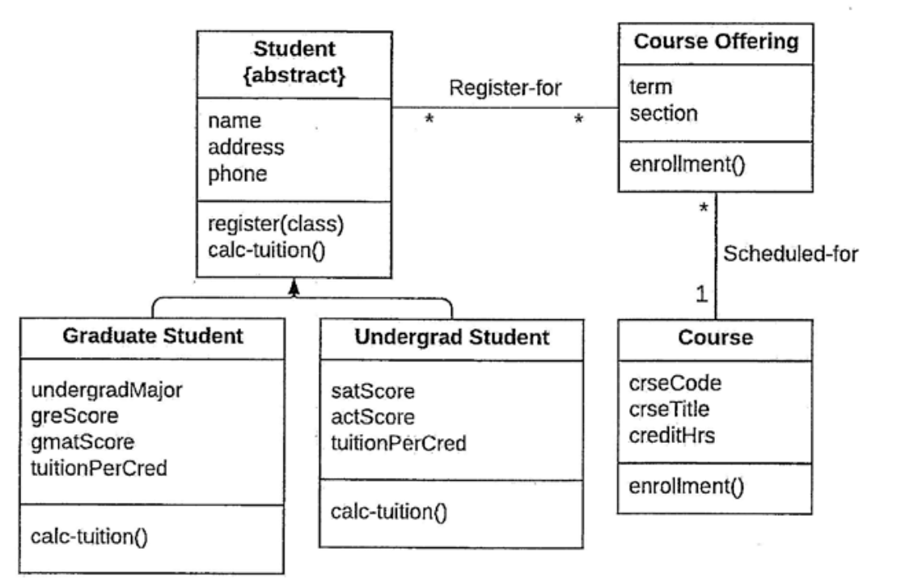
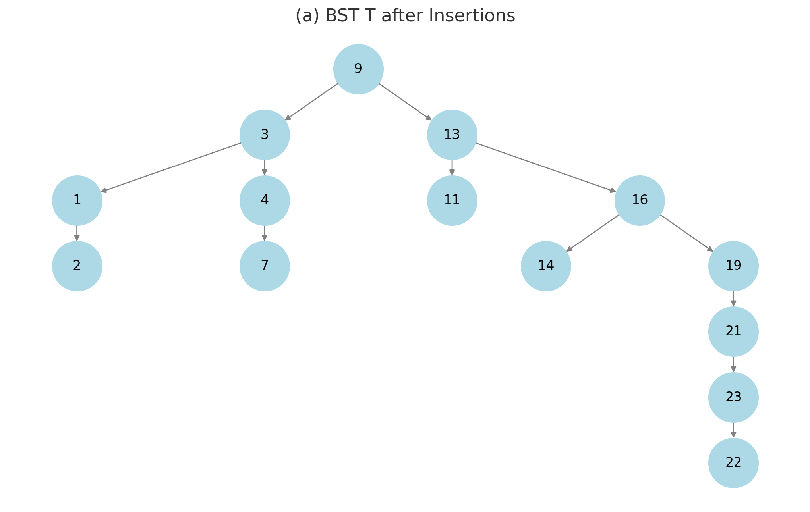
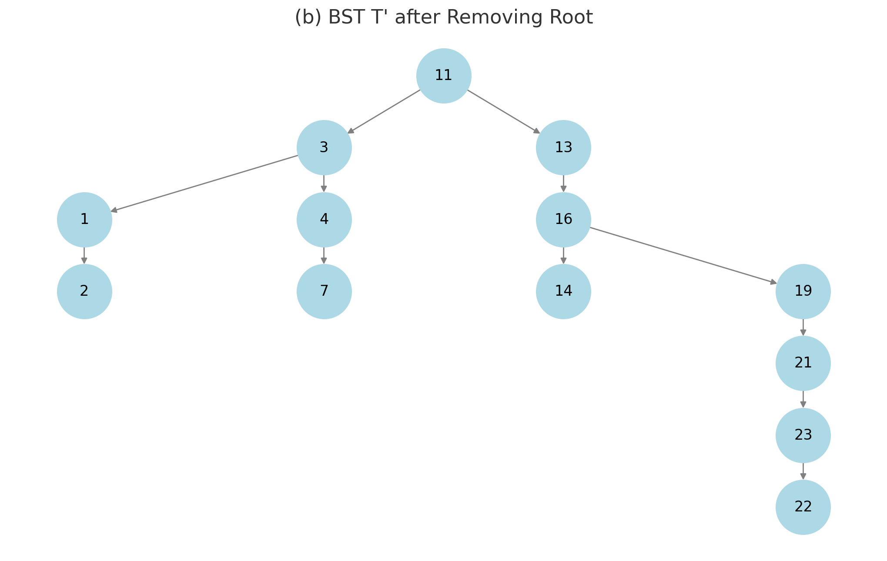
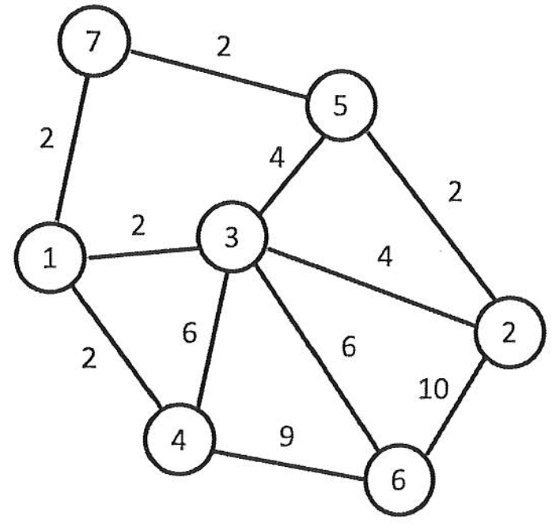
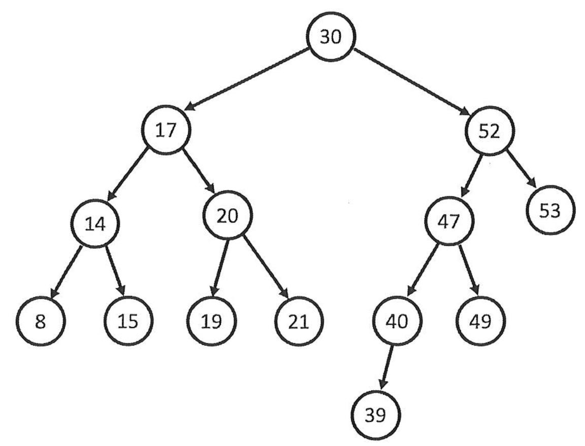
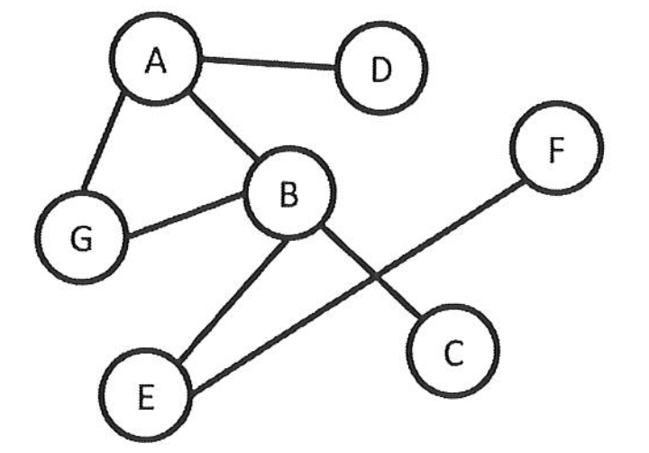
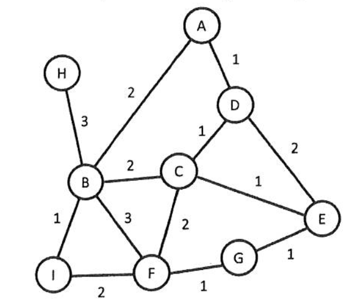
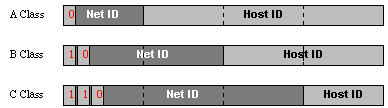
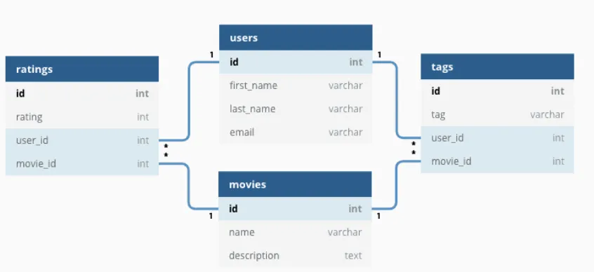

James Exam
Table of Contents
- 1. Linux使用者與檔案權限
- 2. 伺服器管理:crontab
- 3. 成大113計概
- 3.1. A-I
[40%]Multiple choice questions: (choose only ONE answer for a question; 4% for each question) - 3.2. (1)
- 3.3. (2)
- 3.4. (3)
- 3.5. (4)
- 3.6. (5)
- 3.7. (6)
- 3.8. (7)
- 3.9. (8)
- 3.10. (9)
- 3.11. (10)
- 3.12. A-2
[5%] - 3.13. A-3
[5%] - 3.14. B-l (4%)
- 3.15. B-2 (4%)
- 3.16. B-3 (4%)
- 3.17. B-4 (4%)
- 3.18. B-5 (4%)
- 3.19. B-6 (4%)
- 3.20. B-7 (4%)
- 3.21. B-8 (22%)
- 3.1. A-I
- 4. AI相關基本知識
- 5. 中央113計概
- 6. 中山113計概
- 7. 成大近三年計概
- 8. 中央近五年計概
- 9. 中山近三年考題及詳解
- 10. 中山
- 11. 中興
- 12. 清大
- 13. 成大
- 14. 中央
- 15. 北大
- 16. 林北的考前猜題
1. Linux使用者與檔案權限
在 Linux 系統中，每個使用者（User）都有兩個基本資訊：
- 使用者名稱（Username）:用於識別登入系統的個人帳戶。
- 所屬群組（Group）:使用者可以屬於一個或多個群組，系統管理員可以將權限指派給群組，所有屬於該群組的使用者都會擁有相同的權限。
1.1. 使用者類型
Linux 的使用者可以分為以下幾種類型：
- 系統管理員（Root）：擁有最高權限的帳戶，能夠執行所有系統管理操作，包含安裝軟體、管理使用者、變更系統設定等。
- 一般使用者（Regular User）：具有基本權限的帳戶，通常只能存取自己的檔案，執行一般應用程式，但無法直接進行系統層級的變更。
- 系統使用者（System User）：這類帳戶通常是由系統服務（如 www-data、nobody、mysql）所使用，並不會用來讓人類使用者登入。像網頁伺服器就會用apache或httpd這樣的名稱檔系統使用者，這種邏輯是把程式當成使用者一樣，可以控制程式的權限，這類使用者通常就不被允許由遠端登入系統。
1.2. 檔案權限
在 Linux 中，每個檔案和目錄都有權限設定，以確保系統的安全性。權限分為三個層級：
- 檔案擁有者（Owner）：通常是建立該檔案的使用者，擁有對該檔案的最高權限。也就是說，如果你是這個檔案的擁有者，你可以對檔案做什麼？系統管理者也許會規定：你可以看、改、刪這個檔案。
- 群組（Group）：如果使用者屬於該檔案的群組，則可以根據群組權限存取該檔案。也就是說，如果你和檔案擁有者是同一個群組，你可以對它做什麼？系統管理者也許會規定：你可以看(讀取)，但不能寫入。
- 其他使用者（Others）：不屬於擁有者或群組的使用者，則適用此權限設定。也就是說，如果你不是檔案擁有者、也沒和擁有者在同一群組，你可以對檔案做什麼？系統管理者也許可以規定：你連看都看不到。
Linux如何做到上面這些限制？就是利用控制檔案的權限。在Linux裡，你可以使用 ls -l 指令來查看所有檔案的權限，例如：
1: -rwxr-xr-- 1 user group 1024 Feb 10 12:34 example.txt
這個權限字串可拆解為：
- -(最前面的-)：表示這是一個一般檔案（若為目錄則顯示 d）。
- rwx（擁有者權限）：擁有者可以讀取（r）、寫入（w）和執行（x）。
- r-x（群組權限）：群組成員可以讀取（r）和執行（x），但不能寫入。
- r–（其他使用者權限）：其他使用者只能讀取（r），但無法寫入或執行。
1.2.1. 權限數字表示法
除了字母表示法，權限也可以用數字來表示：
- r（讀取）= 4
- w（寫入）= 2
- x（執行）= 1
權限的數值是這三個值的總和，例如：
- rwx = 4 + 2 + 1 = 7
- rw- = 4 + 2 = 6
- r– = 4 = 4
因此，權限 -rwxr-xr– 也可以用 chmod 754 example.txt 來設定。
1.2.2. 變更權限
變更檔案擁有者
系統管理員可以使用 chown 指令來變更檔案擁有者：
1: sudo chown newuser example.txt
前面的sudo意思是使用系統最高權限來做某件事的意思，能在最前面加入sudo表示你是系統的管理員。
也可以同時變更擁有者和群組：
1: sudo chown newuser:newgroup example.txt
變更檔案權限
使用 chmod 指令可以變更權限：
1: chmod 755 example.txt
這表示：
- 擁有者有 rwx（7）
- 群組有 r-x（5）
- 其他人有 r-x（5）
也可以用符號方式變更：
- chmod u+w example.txt # 給擁有者（u）增加寫入權限
- chmod g-r example.txt # 移除群組（g）的讀取權限
- chmod o+x example.txt # 給其他使用者（o）增加執行權限
1.2.3. 群組管理
建立新群組
1: sudo groupadd mygroup
新增使用者到群組
1: sudo usermod -aG mygroup username
-aG 參數表示將使用者 username 加入 mygroup 群組。
查看使用者的群組
1: groups username
Linux的使用者有兩種基本資料：使用者名稱和所屬群組，系統管理者可以直接分配不同的權限給群組，然後屬於這個群組的使用者就都撞有這個權限，最高的
1.3. 題目1
檔案資訊
1: -rw-rw-rw- 1 guest1 guest2 79 Jan 4 01:51 guest3
這應該就是用ls -l列出的內容，主要分為四個部分：
- 第一個字元 -：表示這是一個一般檔案（若是目錄則顯示 d）。
接下來的九個字元：分為三組，每組三個字元，代表不同使用者類別的權限：
- rw-（擁有者的權限，guest1）
- r（讀取 Read）
- w（寫入 Write）
- -（沒有執行權限 Execute）
- r（讀取 Read）
- rw-（群組的權限，guest2）
- r（讀取）
- w（寫入）
- -（沒有執行權限）
- r（讀取）
- rw-（其他使用者的權限，Others）
- r（讀取）
- w（寫入）
- -（沒有執行權限）
- r（讀取）
➡ 總結：該檔案對所有使用者（擁有者、群組和其他人）都開放讀寫 (rw-)，但不允許執行 (-)。(能讀寫和能執行是兩回事)
- rw-（擁有者的權限，guest1）
- 1（硬連結數量）
- 這個數字表示該檔案的 硬連結（Hard Link） 數量，通常一般檔案的值是 1。
- 如果有其他檔案指向這個檔案的 inode（即建立了硬連結），這個數字會增加。
- 這裡的hard link是相對於soft link, 你可以暫時把它想成是windows裡的捷徑，意思是有多少個捷徑指向這個檔案
- 這個數字表示該檔案的 硬連結（Hard Link） 數量，通常一般檔案的值是 1。
- guest1（檔案擁有者）
這個檔案的擁有者（Owner）是 guest1，通常是建立該檔案的使用者。 - guest2（檔案群組）—>(a)的答案
這個檔案的群組（Group）是 guest2，這表示該群組的成員也可以根據群組權限存取這個檔案。 - 79（檔案大小，單位：Bytes）
- 這個檔案的大小是 79 Bytes（字節）。
- 若是目錄，這個數字通常表示目錄資訊的大小，而不是實際存放的檔案總大小。
- 這個檔案的大小是 79 Bytes（字節）。
- Jan 4 01:51（最後修改時間）
- 這是該檔案的最後修改時間（Last Modified Time）。
- Jan 4 表示最後一次修改發生在 1 月 4 日。
- 01:51 表示最後修改的時間為凌晨 1 點 51 分。
- 如果這個檔案是 去年或更久之前修改的，年份會顯示在 01:51 位置，而非時間。
- 這是該檔案的最後修改時間（Last Modified Time）。
- guest3（檔案名稱）
- 這是該檔案的名稱，叫做 guest3。
- 這是該檔案的名稱，叫做 guest3。
1.3.1. (a) 檔案所屬群組
應該是guest2
1.3.2. (b) 檔案型態
我在猜它是在問這是哪種類型的檔案，應該由最前面的字母判斷，Linux有以下幾種可能的檔案類型
- - 普通檔案（Regular file）
- d 目錄（Directory）
- l 符號連結（Symbolic link）
- b 區塊裝置檔案（Block device file，如硬碟）
- c 字元裝置檔案（Character device file，如鍵盤、終端機）
- p 命名管道（Named pipe）
- s Socket 檔案（用於網路通訊）
1.3.3. (c) 執行chmod 755後的檔案屬性
執行 ls -l guest3 之後，新的輸出會是：
1: -rwxr-xr-x 1 guest1 guest2 79 Jan 4 01:51 guest3
變更後的解析
- 檔案型態
第一個字元 -：表示這仍然是一個 普通檔案（Regular file）。 - 權限（-rwxr-xr-x）
原本的權限是 -rw-rw-rw-（所有人都能讀寫），現在變成了 -rwxr-xr-x，表示：
- rwx（擁有者 guest1）：
- r（讀取）
- w（寫入）
- x（執行）
- → 擁有者現在可以讀取、寫入和執行該檔案。
- r（讀取）
- r-x（群組 guest2）：
- r（讀取）
- -（沒有寫入權限）
- x（執行）
- → 群組成員可以讀取和執行該檔案，但無法修改內容。
- r（讀取）
- r-x（其他使用者 others）：
- r（讀取）
- -（沒有寫入權限）
- x（執行）
- → 其他所有使用者可以讀取和執行，但無法修改內容。
- r（讀取）
- rwx（擁有者 guest1）：
- 其他資訊
- 硬連結數量 1：仍然是 1（未變）。
- 擁有者 guest1：未變。
- 群組 guest2：未變。
- 檔案大小 79 bytes：未變。
- 最後修改時間 Jan 4 01:51：未變。
- 檔案名稱 guest3：未變。
- 硬連結數量 1：仍然是 1（未變）。
2. 伺服器管理:crontab
在 Linux 系統中，crontab（Cron Table）是一種允許系統自動於特定時間執行特定的指令或腳本。這對於系統維護、備份、掃毒、記錄清理等任務非常有用。
cron 是 Linux 內建的排程工具，而 crontab 則是每個使用者的排程表，記錄了使用者設置的定時任務。也就是說，如果你執行cron，它其實是去讀/etc/crontab這個設定檔，根據裡面的設定來工作
2.1. crontab
crontab有兩種類型
2.1.1. crontab 設定檔位置
系統級的 cron 設定
- 系統管理員可以透過 /etc/crontab 設定系統層級的定時任務。
- 這個檔案允許指定 使用者帳號 來執行任務。
範例 /etc/crontab 內容：
1: SHELL=/bin/bash 2: PATH=/sbin:/bin:/usr/sbin:/usr/bin 3: MAILTO=root 4: 5: 0 3 * * * root /usr/local/bin/daily-task.sh 6: # 每日凌晨 3 點執行 `/usr/local/bin/daily-task.sh`
- 這段 crontab 代表 每天凌晨 3 點 以 root 使用者執行 daily-task.sh。
個人使用者的 crontab 設定
- 每個使用者都可以透過 crontab -e 編輯自己的定時任務，這些設定會存放在 var/spool/cron/crontabs 目錄下，並由 cron 服務自動執行。
- 這些個人排程 不需要 指定使用者名稱，因為它們是以當前使用者身份執行的。
2.1.2. 如何使用 crontab
編輯 crontab
要設定或修改定時任務，使用：
1: crontab -e
這會開啟當前使用者的 crontab 設定檔（通常使用 vi 或 nano 編輯器）。
檢視目前的 crontab 設定
1: crontab -l
這會顯示當前使用者的所有定時任務。
2.1.3. crontab 時間格式
crontab 的格式為 五個時間欄位 + 要執行的指令：
1: 分鐘 小時 日 月 星期 指令
每個欄位的數值範圍：
- 分鐘（0 - 59）
- 小時（0 - 23）
- 日期（1 - 31）
- 月份（1 - 12）
- 星期（0 - 7，0 或 7 代表星期日）
- 指令（要執行的命令或腳本的路徑）
2.1.4. crontab 排程範例
| 任務 | crontab 設定 |
|---|---|
| 每天凌晨 2:30 執行 /backup.sh | 30 2 * * * /backup.sh |
| 每週一凌晨 1:00 執行 /clean_temp.sh | 0 1 * * 1 /clean_temp.sh |
| 每 5 分鐘執行 /monitor.sh | */5 * * * * /monitor.sh |
| 每月 1 號凌晨 3:00 執行 /monthly_report.sh | 0 3 1 * * /monthly_report.sh |
| 只在 1 月 1 日執行 /new_year_task.sh | 0 0 1 1 * /new_year_task.sh |
特殊符號
- *：代表「任何時間」，例如 * * * * * 表示「每分鐘都執行」。
- /：代表「每隔一段時間」，例如 */10 * * * * 表示「每 10 分鐘執行一次」。
- -：表示「範圍」，例如 0-5 10 * * * 表示「從 10:00 到 10:05，每分鐘執行一次」。
- ,：代表「多個指定時間」，例如 0,15,30,45 * * * * 表示「每小時的 0、15、30、45 分執行」。
2.2. 定期備份
預定在每週六凌晨2時以root身份執行bash /backup.sh，要如何編輯/etc/crontab
2.2.1. 解
1: 0 2 * * 6 root bash /backup.sh
解析這條 cron 規則：
- 0 → 分鐘（0 分）
- 2 → 小時（2 點）
- * → 日期（每天）
- * → 月份（每月）
- 6 → 星期六（0 或 7 表示星期日）
- root → 以 root 身份執行
- bash /backup.sh → 執行 backup.sh 腳本
前面的bash（Bourne Again SHell）是一種 指令直譯器（Shell），用來讓使用者與 Linux 作業系統互動。它是 GNU 計畫開發的 sh（Bourne Shell）的改進版，是目前大多數 Linux 發行版的預設 Shell。
Bash 的主要功能
- 執行指令（如 ls, cd, cp, rm）
- 變數與環境管理
- 程式控制（條件判斷、迴圈）
- 管道與重導向
- Shell 腳本編寫（Automation & Scripting）
你可以把它看成Windows裡的shell，就是你打開終端機看到那個c:>，你可以在終端機裡輸入dir之類的指令，那就檔案於windows裡的bash
2.3. 定期更新https證書
架網站須每偶數月的10號晚間10時30分以root身份輸入certbot renew以更新htts證書，如何編輯/etc/crontab
2.3.1. 解
1: 30 22 10 2,4,6,8,10,12 * root certbot renew
| 欄位 | 設定值 | 意義 |
|---|---|---|
| 分鐘（0 - 59） | 30 | 在 30 分 執行 |
| 小時（0 - 23） | 22 | 在 22 點（晚間 10 點） 執行 |
| 日期（1 - 31） | 10 | 每月 10 號 執行 |
| 月份（1 - 12） | 2,4,6,8,10,12 | 只在 偶數月（2、4、6、8、10、12 月） 執行 |
| 星期（0 - 7，0 或 7 代表星期日） | * | 不限制星期 |
| 使用者 | root | 以 root 身份執行 |
| 指令 | certbot renew | 執行 certbot renew 更新 SSL 證書 |
Let’s Encrypt
指令裡的certbot是Let’s Encrypt提供的一個更新憑證指令，Let’s Encrypt是一個 免費、自動化、開放 的 SSL/TLS 憑證（Certificate Authority, CA） 發行機構。它提供免費的 HTTPS 憑證，讓網站可以透過安全的 HTTPS 協議來加密資料，提升網站安全性。很多自己架網站的人都會用這個免費服務，有了這個東西，你的網站才會支援https，另一種選擇是花錢買，蠻貴的。
3. 成大113計概
3.1. A-I [40%] Multiple choice questions: (choose only ONE answer for a question; 4% for each question)
3.2. (1)
A framework is a collection of functions or modules that you can call from your code which dictates the
flow of control in your application.
- True
- |False
3.2.1. 解
答案：✅ a. True
3.2.2. 詳解：
框架（Framework）:是一組可重複使用的程式碼結構，通常由多個模組（Modules）或函式（Functions）組成，並定義了應用程式的基本結構與流程控制方式。開發者可以在框架提供的結構內擴充功能，但主要的控制流程是由框架決定的，這與一般的函式庫（Library） 有所不同。
📌 框架與函式庫的區別
| 比較項目 | 框架（Framework） | 函式庫（Library） |
|---|---|---|
| 控制反轉（Inversion of Control, IoC） | 框架控制應用程式的執行流程，開發者只需撰寫特定部分的程式碼，例如 Django、Spring | 開發者自行控制應用程式流程，函式庫只提供功能，例如 NumPy、Pandas |
| 擴展性 | 提供明確的架構，開發者需依照框架規範撰寫程式 | 單純提供工具函式，開發者可自由選擇如何使用 |
| 學習成本 | 通常較高，需了解框架規範 | 較低，只需學習特定函式或類別 |
📌 例子
- 框架（Framework）
- Django（Python 網頁開發框架）
- Spring（Java 企業級應用框架）
- React（JavaScript 前端 UI 框架）
- Django（Python 網頁開發框架）
- 函式庫（Library）
- NumPy（Python 科學計算函式庫）
- jQuery（JavaScript 操作 DOM 的函式庫）
- TensorFlow（機器學習函式庫）
- NumPy（Python 科學計算函式庫）
3.2.3. 📚 與該主題相關的完整計概知識
1. 軟體開發方法學
1）瀑布模型（Waterfall Model）
- 按照需求分析、設計、開發、測試、部署等線性階段進行，每個階段完成後才進入下一階段。
- 優點：清楚的結構，適合需求穩定的專案。
- 缺點：需求變更時成本高。
2）敏捷開發（Agile Development）
- 透過迭代（Iteration） 方式進行，每次開發小部分功能，並快速交付。
- 常見方法：
- Scrum（短衝衝刺開發，每次迭代 2~4 週）
- Kanban（看板式開發，強調工作流可視化）
- Extreme Programming（XP，強調測試驅動開發）
- Scrum（短衝衝刺開發，每次迭代 2~4 週）
2. 軟體架構（Software Architecture）
1）單體架構（Monolithic Architecture）
- 傳統的單體應用程式，所有功能都在同一個系統內。
- 優點：開發與部署簡單。
- 缺點：難以擴展，維護成本高。
2）微服務架構（Microservices Architecture）
- 系統被拆分成多個獨立的服務，每個服務負責單一職責。
- 優點：擴展性高，可獨立部署。
- 缺點：系統變得複雜，需要 API 管理與服務協調。
3. 物件導向程式設計（OOP）
OOP 的四大特性
- 封裝（Encapsulation）：將資料與方法封裝在類別（Class）內，保護內部狀態。
- 繼承（Inheritance）：子類別（Subclass）可以繼承父類別（Superclass）的屬性和方法，減少程式碼重複。
- 多型（Polymorphism）：相同方法可有不同實作，例如函式重載（Overloading）與函式覆寫（Overriding）。
- 抽象（Abstraction）：定義介面（Interface），讓子類別自行實作。
- 設計模式（Design Patterns）
3.2.4. 設計模式是解決程式設計問題的標準方法，常見類型如下：
- 創建型模式（Creational Patterns）
- 單例模式（Singleton Pattern）： 確保類別只有一個實例，例如資料庫連線池。
- 工廠模式（Factory Pattern）： 透過工廠方法建立物件，而不是直接使用 new。
- 單例模式（Singleton Pattern）： 確保類別只有一個實例，例如資料庫連線池。
- 結構型模式（Structural Patterns）
- 裝飾者模式（Decorator Pattern）： 動態擴展物件功能，例如 Python 的 @decorator。
- 代理模式（Proxy Pattern）： 控制對物件的訪問，例如網路代理伺服器。
- 裝飾者模式（Decorator Pattern）： 動態擴展物件功能，例如 Python 的 @decorator。
- 行為型模式（Behavioral Patterns）
- 觀察者模式（Observer Pattern）： 一個物件狀態改變時，通知所有觀察者，例如事件監聽機制。
- 策略模式（Strategy Pattern）： 根據不同情境選擇不同的行為，例如支付方式選擇（信用卡、PayPal）。
- 觀察者模式（Observer Pattern）： 一個物件狀態改變時，通知所有觀察者，例如事件監聽機制。
3.2.5. 版本控制（Git）: Git指令可以不用背，但你至少要知道Github在做什麼的
（1）Git 的基本指令
| 指令 | 功能 |
|---|---|
| git init | 初始化 Git 儲存庫 |
| git clone | 複製遠端儲存庫 |
| git add | 將變更加入暫存區 |
| git commit -m “訊息” | 提交變更 |
| git push | 推送變更到遠端 |
| git pull | 拉取遠端變更 |
| git branch | 列出分支 |
| git merge | 合併分支 |
（2）分支策略
- Git Flow： 主要有 master、develop、feature、release、hotfix 分支。
- GitHub Flow： 只使用 main 和 feature 分支。
3.2.6. 作業系統與程式開發
記憶體管理
- 堆區（Heap）： 用於動態記憶體分配，如 malloc()（C）或 new（C++）。
- 堆疊（Stack）： 儲存函式呼叫的區域變數。
行程與執行緒
- 行程（Process）： 獨立執行的應用程式，擁有自己的記憶體空間。
- 執行緒（Thread）： 行程內的輕量級執行單位，共享記憶體。
3.2.7. 前後端技術
前端技術
- HTML、CSS、JavaScript
- 前端框架：React、Vue.js、Angular
後端技術
- Django（Python）
- Spring Boot（Java）
- Express.js（Node.js）
3.3. (2)
A system analyst depicts the static view of an information system with
- use-case models
- structural models
- behavioral models
- state chart diagrams
3.3.1. 解
答案：✅ b. Structural Models（結構模型）
3.3.2. 📖 詳解：
📌 靜態視圖（Static View）
在資訊系統分析與設計中，靜態視圖 描述的是系統中物件（Objects）、類別（Classes）、關係（Relationships）與結構（Structure），而不是系統的動態行為。它側重於系統的組成元素及其關係，例如類別與屬性、關聯、繼承結構等。
📌 結構模型（Structural Model）
結構模型是專門用來表示系統的靜態視圖，它通常由 UML（統一建模語言） 中的類別圖（Class Diagram）、物件圖（Object Diagram）和組件圖（Component Diagram） 等組成。
| 模型類型 | 功能 |
|---|---|
| 類別圖（Class Diagram） | 描述系統中的類別、屬性、方法及它們之間的關係（例如繼承、關聯）。 |
| 物件圖（Object Diagram） | 類似類別圖，但側重於某一特定時間點的具體物件實例。 |
| 組件圖（Component Diagram） | 描述系統的模組化結構，顯示各個組件之間的相互依賴關係。 |
這些結構模型都屬於靜態建模，因此正確答案為 b. Structural Models（結構模型）。
📌 其他選項解析
- Use-case models（用例模型）
- 用例模型 用於描述系統的 功能需求，關注系統如何與外部使用者或其他系統互動。
- 主要使用 用例圖（Use Case Diagram） 來顯示不同使用者（Actors）與系統的互動關係。
- 屬於動態視圖的一部分，因此不是本題的正確答案。
- 用例模型 用於描述系統的 功能需求，關注系統如何與外部使用者或其他系統互動。
Behavioral models（行為模型）
行為模型 描述系統的動態行為，即系統如何隨時間變化。
主要包含：
- 活動圖（Activity Diagram）：描述業務流程。
- 序列圖（Sequence Diagram）：描述物件之間的訊息交換。
- 協作圖（Collaboration Diagram）：顯示物件如何協同工作。
屬於動態視圖，因此不是正確答案。
- 活動圖（Activity Diagram）：描述業務流程。
- State chart diagrams（狀態圖）
- 狀態圖（State Chart Diagram） 描述系統或物件的狀態變化過程，適用於需要管理狀態的應用（如 ATM 交易流程）。
- 主要用於 行為建模（Behavioral Modeling），屬於 動態視圖，所以不是正確答案。
- 狀態圖（State Chart Diagram） 描述系統或物件的狀態變化過程，適用於需要管理狀態的應用（如 ATM 交易流程）。
3.3.3. 📚 與該主題相關的完整計概知識
1. 系統開發生命週期（SDLC, Software Development Life Cycle）
系統分析師（System Analyst）負責系統開發過程中的需求分析、設計與建模，以下是 SDLC 主要階段：
- 需求分析（Requirement Analysis）
- 確定系統需求，例如功能需求、非功能需求（效能、安全性）。
- 建立用例模型（Use Case Model） 描述使用者需求。
- 確定系統需求，例如功能需求、非功能需求（效能、安全性）。
- 系統設計（System Design）
- 進行系統架構設計，通常包括：
- 靜態視圖（Static View）（結構模型）
- 動態視圖（Dynamic View）（行為模型）
- 靜態視圖（Static View）（結構模型）
- 主要使用 UML 類別圖、物件圖、組件圖 來描述靜態結構。
- 進行系統架構設計，通常包括：
- 系統開發（Implementation）
- 依據設計的架構撰寫程式碼，並確保其符合設計規範。
- 依據設計的架構撰寫程式碼，並確保其符合設計規範。
- 測試與驗證（Testing & Validation）
- 透過單元測試、整合測試、系統測試來驗證系統功能。
- 透過單元測試、整合測試、系統測試來驗證系統功能。
- 部署與維護（Deployment & Maintenance）
- 系統上線後的優化與錯誤修復。
- 系統上線後的優化與錯誤修復。
2. UML（Unified Modeling Language，統一建模語言）
UML 是系統分析師在系統建模時最常用的工具，主要分為 靜態模型與動態模型。
- 靜態模型（Static Models）
- 類別圖（Class Diagram）：描述系統的類別、屬性、方法與關係。
- 物件圖（Object Diagram）：顯示特定時間點的物件實例。
- 組件圖（Component Diagram）：顯示系統的模組化結構。
- 類別圖（Class Diagram）：描述系統的類別、屬性、方法與關係。
- 動態模型（Dynamic Models）
- 用例圖（Use Case Diagram）：描述使用者與系統的互動。
- 活動圖（Activity Diagram）：描述業務流程。
- 狀態圖（State Chart Diagram）：描述物件的狀態變化。
- 序列圖（Sequence Diagram）：顯示物件之間的訊息交換。
- 用例圖（Use Case Diagram）：描述使用者與系統的互動。
3. 面向物件設計（OOD, Object-Oriented Design）
在面向物件系統分析與設計（OOAD）中，靜態模型與動態模型的結合是關鍵：
- 靜態視圖（Static View） → 面向物件分析（OOA）：
- 使用 類別圖 來識別系統的類別與關係。
- 使用 類別圖 來識別系統的類別與關係。
- 動態視圖（Dynamic View） → 面向物件設計（OOD）：
- 使用 狀態圖、序列圖 來設計系統行為。
- 使用 狀態圖、序列圖 來設計系統行為。
4. 系統建模工具
常見的 UML 建模工具：
| 工具名稱 | 描述 |
|---|---|
| StarUML | 開源 UML 建模工具 |
| Enterprise Architect | 專業 UML 建模工具，支援大型專案 |
| Visual Paradigm | 支援 UML 與業務流程建模（BPMN） |
| IBM Rational Rose | 早期 UML 設計工具，現已逐漸被取代 |
5. 資訊系統建模的應用領域
系統建模不僅用於軟體開發，也可應用於 企業流程管理（BPM） 和 數據庫設計。
- ERP 系統建模：使用 UML 設計企業內部資訊系統。
- 資料庫設計（Database Design）：透過 ER 圖（Entity-Relationship Diagram）來設計數據結構。
- 商業流程管理（BPMN）：使用 BPMN 模型來設計業務流程。
📌 總結
- 靜態視圖（Static View） 用於描述系統的結構與關係，通常使用 結構模型（Structural Models） 來表示，例如 類別圖、物件圖、組件圖。
- 系統分析師（System Analyst） 需要使用 UML 建模 來描述系統的靜態與動態行為。
- 本題的正確答案是： ✅ b. Structural Models（結構模型），因為它專門用於描述系統的靜態結構。
3.4. (3)
__ means having the ability to call the same method on different objects, which can be interpreted
differently by different objects.
- Encapsulation
- Inheritance
- Coupling
- Polymorphism
3.4.1. 解
答案：✅ d. Polymorphism（多型）
3.4.2. 📖 詳解：
📌 多型（Polymorphism）
多型是物件導向程式設計（OOP）的核心概念之一，指的是相同的方法在不同的物件上可以有不同的行為。這使得程式更具彈性與擴展性，因為相同的介面可以被不同類別實作。
📌 兩種主要的多型類型
編譯時多型（Compile-time Polymorphism）
- 方法重載（Method Overloading）：在同一個類別中，可以有多個名稱相同但參數不同的方法。
- 範例（Java）：
1: class MathUtil { 2: int add(int a, int b) { 3: return a + b; 4: } 5: double add(double a, double b) { 6: return a + b; 7: } 8: }
這裡的 add() 方法有兩個版本，根據傳入的參數類型自動選擇適合的方法。
執行時多型（Runtime Polymorphism）
方法覆寫（Method Overriding）：子類別可以重新定義父類別的方法。
範例（Python）：
#+begin_src python -r -n :results output :exports both
class Animal:
def make_sound(self):
pass
class Dog(Animal):
def make_sound(self):
return “Woof!”
class Cat(Animal):
def make_sound(self):
return “Meow!”
animals = [Dog(), Cat()]
for animal in animals:
print(animal.make_sound()) # 依據物件類型呼叫不同的 make_sound 方法
nd_src
📌 其他選項解析
- Encapsulation（封裝）
- 透過 private、protected、public 控制存取權限，確保資料不被任意修改。
- 錯誤，因為封裝主要與資料保護有關，與方法的多型行為無關。
- 透過 private、protected、public 控制存取權限，確保資料不被任意修改。
- Inheritance（繼承）
- 子類別繼承父類別的屬性和方法，實現程式碼重用。
- 錯誤，因為繼承只是讓子類別獲得父類別的屬性與行為，並不能解釋相同方法的不同行為。
- 子類別繼承父類別的屬性和方法，實現程式碼重用。
- Coupling（耦合）
- 模組或類別之間的依賴程度，高耦合意味著系統的維護難度增加。
- 錯誤，因為多型與降低耦合有關，但它本身不是描述物件如何表現不同行為的概念。
- 模組或類別之間的依賴程度，高耦合意味著系統的維護難度增加。
📌 依近10年命題格式，參考新興技術，設計一份今年的考題
- 在物件導向程式設計中，當一個類別的方法可以根據不同的子類別對象表現出不同的行為時，這種特性稱為：
- Abstraction（抽象）
- Polymorphism（多型）
- Encapsulation（封裝）
- Dependency Injection（相依性注入）
- Abstraction（抽象）
✅ 答案：b. Polymorphism（多型）
- 近年來 AI 影像辨識技術（如 YOLO、ViT）需要處理大量圖像數據，這通常使用哪種機器學習架構？
- CNN（卷積神經網路）
- RNN（循環神經網路）
- KNN（最近鄰演算法）
- Decision Tree（決策樹）
- CNN（卷積神經網路）
✅ 答案：a. CNN（卷積神經網路）
- 在 Kubernetes（K8s）環境中，哪個元件負責管理容器的生命周期？
- Pod
- Node
- Kubelet
- Ingress
- Pod
✅ 答案：c. Kubelet
- 在區塊鏈技術中，哪種機制最常用來確保交易安全性與共識機制？
- Proof of Work（PoW）
- Proof of Authority（PoA）
- Proof of Stake（PoS）
- Byzantine Fault Tolerance（BFT）
- Proof of Work（PoW）
✅ 答案：a. Proof of Work（PoW）（例如比特幣）
- 在 Web3.0 應用程式中，去中心化應用（DApp）通常使用什麼技術來運行智能合約？
- Solidity
- TypeScript
- Python
- C++
- Solidity
✅ 答案：a. Solidity（以太坊智能合約的主要語言）
- 在現代網路安全攻擊中，哪種攻擊方法主要透過社交工程來獲取機密資訊？
- SQL Injection
- Phishing（網路釣魚）
- Man-in-the-Middle Attack（中間人攻擊）
- Ransomware（勒索軟體）
- SQL Injection
✅ 答案：b. Phishing（網路釣魚）
- 在資料科學中，哪種方法最適合用來處理高維度資料降維？
- PCA（主成分分析）
- K-Means（K均值聚類）
- Apriori（關聯規則演算法）
- BFS（廣度優先搜尋）
- PCA（主成分分析）
✅ 答案：a. PCA（主成分分析）
- 在作業系統中，哪種排程演算法最能確保即時系統的效能？
- FCFS（先來先服務）
- Round Robin（時間片輪轉）
- Shortest Job Next（最短作業優先）
- Priority Scheduling（優先權排程）
- FCFS（先來先服務）
✅ 答案：d. Priority Scheduling（優先權排程）
- 在 Docker 容器技術中，哪個指令用來建立新的容器？
- docker pull
- docker run
- docker build
- docker commit
- docker pull
✅ 答案：b. docker run
- 在機器學習模型的訓練過程中，使用 Dropout 的主要目的是什麼？
- 增加模型計算效能
- 減少過擬合（Overfitting）
- 提高訓練速度
- 減少參數數量
- 增加模型計算效能
✅ 答案：b. 減少過擬合（Overfitting）
3.5. (4)
What are the two types of coupling in object-oriented systems?
- interaction, data
- data, inheritance
- interaction, inheritance
- inheritance, polymorphism
3.5.1. 解
答案：✅ a. interaction, data（互動耦合、資料耦合）
3.5.2. 📖 詳解：
📌 耦合（Coupling）
在物件導向設計（OOD）中，耦合 指的是模組（Module）或類別（Class）之間的依賴程度。
- 高耦合（High Coupling）：表示系統的組件緊密依賴，維護和擴展困難。
- 低耦合（Low Coupling）：表示組件之間的關聯較少，有助於提高可維護性和可擴展性。
耦合類型主要分為：
- 互動耦合（Interaction Coupling）：指物件之間的相互關聯程度，通常涉及訊息傳遞（Method Calls）。
- 資料耦合（Data Coupling）：指物件共享的資料程度，數據越少則耦合度越低。
📌 兩種主要的耦合類型
| 耦合類型 | 描述 | 影響 |
|---|---|---|
| 互動耦合（Interaction Coupling） | 物件之間透過方法呼叫來互動 | 適度的互動耦合是正常的，但過度互動會導致系統緊密相依 |
| 資料耦合（Data Coupling） | 物件之間共享數據的方式 | 數據共享應保持最小，以降低模組之間的相依性 |
例子
❌ 過高的資料耦合
1: class Data: 2: shared_data = "Global State" 3: 4: class ComponentA: 5: def print_data(self): 6: print(Data.shared_data) 7: 8: class ComponentB: 9: def modify_data(self, new_data): 10: Data.shared_data = new_data 11: 12: a = ComponentA() 13: b = ComponentB() 14: b.modify_data("Changed Data") 15: a.print_data() # Output: Changed Data 16:
所有模組都直接存取共享變數 Data.shared_data，增加系統的耦合性與錯誤風險。
📌 其他選項解析
- data, inheritance（資料耦合、繼承） ❌
資料耦合是正確的，但繼承（Inheritance）不是耦合類型，而是 OOP 的一種機制。 - interaction, inheritance（互動耦合、繼承） ❌
互動耦合是正確的，但繼承並不屬於耦合類型。 - inheritance, polymorphism（繼承、多型） ❌
繼承（Inheritance）和多型（Polymorphism）是 OOP 的概念，而不是耦合類型。
3.5.3. 📚 與該主題相關的完整計概知識
1. 物件導向程式設計（OOP）核心概念
物件導向的四大特性：
封裝（Encapsulation） - 保護內部資料，降低耦合。
繼承（Inheritance） - 允許子類別重用父類別的功能。
多型（Polymorphism） - 相同方法可在不同類別中表現不同行為。
抽象（Abstraction） - 只暴露必要的細節，減少不必要的依賴。
2. 耦合與內聚（Cohesion）
| 概念 | 描述 | 影響 | |
|---|---|---|---|
| 耦合（Coupling） | 類別或模組之間的相依性 | 高耦合降低系統靈活性 | |
| 內聚（Cohesion） | 類別或模組內部功能的相關性 | 高內聚增加系統可維護性 |
良好的設計應該低耦合、高內聚！
3. 其他耦合類型
除了互動耦合與資料耦合，其他常見耦合類型：
| 類型 | 描述 | 耦合強度 |
|---|---|---|
| 內容耦合（Content Coupling） | 一個模組直接修改或存取另一個模組的內部變數 | 🚨最糟糕 |
| 公共耦合（Common Coupling） | 多個模組共用全域變數 | ❌ 應避免 |
| 控制耦合（Control Coupling） | 一個模組影響另一個模組的流程控制 | ⚠ 應減少 |
| 標記耦合（Stamp Coupling） | 模組之間傳遞結構化數據 | ✅ 較好 |
| 無耦合（No Coupling） | 模組之間完全獨立 | 🔥 最佳情況 |
4. 減少耦合的方法
- 使用介面（Interface）或抽象類別 來降低相依性。
- 避免全域變數，使用方法傳遞參數代替。
- 設計鬆耦合架構（如 MVC 模式）。
- 依賴注入（Dependency Injection, DI），讓物件不直接依賴特定類別。
5. 耦合在現代技術中的應用
- 微服務架構（Microservices Architecture）
- 低耦合、高內聚 的設計，透過 API 進行通訊，確保各個微服務獨立運行。
- 例如：Amazon、Netflix 使用微服務架構來提升系統擴展性。
- 低耦合、高內聚 的設計，透過 API 進行通訊，確保各個微服務獨立運行。
- 前後端分離（Frontend-Backend Decoupling）
- 透過 REST API 或 GraphQL 讓前端與後端低耦合，提升開發靈活性。
- 例如：React + Flask 組合，前端與後端透過 API 互動，互不影響。
- 透過 REST API 或 GraphQL 讓前端與後端低耦合，提升開發靈活性。
1, 雲端架構與 Serverless
- AWS Lambda、Google Cloud Functions 等無伺服器架構允許獨立運行函數，減少系統耦合。
📌 總結
- 耦合（Coupling） 代表物件之間的相依程度，應該降低耦合，提高內聚。
- 主要有 互動耦合（Interaction Coupling）與資料耦合（Data Coupling），它們描述了物件之間的方法與數據的依賴方式。
- 本題正確答案為： ✅ a. interaction, data（互動耦合、資料耦合）。
- 在軟體工程與現代架構（如微服務、雲端）中，設計低耦合系統是提升維護性與可擴展性的關鍵。
3.6. (5)
_ is a specific methodology that maps out when and how to use the various Unified Modeling
Language (UML) techniques for object-oriented analysis and design
- Prototyping
- Waterfall
- Scrum
- Unified Process
3.6.1. 解
答案：✅ d. Unified Process（統一流程，UP）
3.6.2. 📖 詳解：
📌 統一流程（Unified Process, UP）
統一流程（UP） 是一種基於 UML（統一建模語言） 的物件導向軟體開發方法學。它提供了一個結構化的方法，來規範 何時、如何使用 UML 技術來進行物件導向分析與設計（OOAD）。
統一流程的核心特點：
- 以模型為中心（Model-Driven）
- 使用 UML 進行系統分析與設計。
- 包括**用例圖（Use Case Diagram）、類別圖（Class Diagram）、活動圖（Activity Diagram）、狀態圖（State Diagram）**等。
- 使用 UML 進行系統分析與設計。
- 以迭代為基礎（Iterative and Incremental）
- 不像傳統的瀑布模型（Waterfall）一次性完成所有階段，UP 採取 漸進式開發，允許在多個迭代中逐步完善系統。
- 不像傳統的瀑布模型（Waterfall）一次性完成所有階段，UP 採取 漸進式開發，允許在多個迭代中逐步完善系統。
- 風險導向（Risk-Driven）
- 優先解決高風險的設計與技術問題，減少專案後期的變更成本。
- 優先解決高風險的設計與技術問題，減少專案後期的變更成本。
- 以架構為基礎（Architecture-Centric）
- 強調軟體架構，確保系統具有良好的可維護性與擴展性。
- 強調軟體架構，確保系統具有良好的可維護性與擴展性。
📌 統一流程（UP）四個主要階段
- 初始階段（Inception Phase）
- 確定專案範圍與目標
- 定義主要需求與風險
- 建立用例圖（Use Case Diagram），幫助理解系統需求
- 產出：
- 初步的商業案例（Business Case）
- 初步的需求規格（Requirement Specification）
- 初步的商業案例（Business Case）
- 確定專案範圍與目標
- 精煉階段（Elaboration Phase）
- 進一步分析需求與系統架構
- 確定系統的關鍵技術挑戰與解決方案
- 產出：
- 類別圖（Class Diagram）
- 活動圖（Activity Diagram）
- 序列圖（Sequence Diagram）
- 早期的系統原型（Prototype）
- 類別圖（Class Diagram）
- 進一步分析需求與系統架構
- 建構階段（Construction Phase）
- 系統實際開發
- 持續測試與整合
- 產出：
- 可執行的軟體版本
- 系統測試報告
- 最終 UML 模型
- 可執行的軟體版本
- 系統實際開發
- 移交階段（Transition Phase）
- 進行最終測試與優化
- 系統部署與維護
- 培訓使用者與技術團隊
- 進行最終測試與優化
📌 其他選項解析
- Prototyping（原型法） ❌
- 主要用於快速建立系統雛型，並不是特定的 UML 方法論。
- 強調快速試作，但不像 UP 有完整的開發流程。
- 主要用於快速建立系統雛型，並不是特定的 UML 方法論。
- Waterfall（瀑布模型） ❌
- 線性開發流程，從需求分析到設計、開發、測試一次完成，不支援迭代開發。
- 不適合變更頻繁的專案，與 UML 的物件導向方法不完全匹配。
- 線性開發流程，從需求分析到設計、開發、測試一次完成，不支援迭代開發。
- Scrum（敏捷開發方法） ❌
- 敏捷開發（Agile Development）的一種框架，強調小組協作與短期衝刺（Sprint）。
- Scrum 沒有明確規範 UML 的使用方式，與 UP 在設計細節上的規範不同。
- 敏捷開發（Agile Development）的一種框架，強調小組協作與短期衝刺（Sprint）。
3.6.3. 📚 與該主題相關的完整計概知識
- 軟體開發方法學
| 方法論 | 特色 | 適用場景 |
|---|---|---|
| 瀑布模型（Waterfall Model） | 線性、階段性開發 | 需求穩定、不易變更的專案 |
| 統一流程（Unified Process, UP） | 以 UML 為核心、迭代開發 | 物件導向、大型軟體專案 |
| 敏捷開發（Agile Development） | 快速迭代、適應變更 | 需求變動頻繁的專案 |
| 極限編程（Extreme Programming, XP） | 測試驅動、持續整合 | 小型開發團隊 |
| Scrum | 短期衝刺、任務拆解 | 敏捷開發專案 |
- UML（Unified Modeling Language）
UML 是軟體開發的標準建模語言，統一流程（UP）廣泛使用 UML 來進行分析與設計。
| UML 圖表 | 用途 |
|---|---|
| 用例圖（Use Case Diagram） | 定義系統的功能需求 |
| 類別圖（Class Diagram） | 描述系統的靜態結構 |
| 序列圖（Sequence Diagram） | 顯示物件之間的交互順序 |
| 活動圖（Activity Diagram） | 描述業務流程 |
| 狀態圖（State Diagram） | 描述物件的狀態變化 |
| 組件圖（Component Diagram） | 描述系統模組化結構 |
- 統一流程（UP） vs. 敏捷開發（Agile）
| 比較項目 | 統一流程（UP） | 敏捷開發（Agile） |
|---|---|---|
| 開發方式 | 迭代式開發 | 迭代式開發 |
| 核心概念 | 以 UML 為核心，架構導向 | 以人為核心，適應變更 |
| 文件需求 | 強調完整文件 | 文件需求較少 |
| 適用專案 | 大型專案，架構設計複雜 | 變動快的小型專案 |
- 近年新興技術中的 UML 應用
微服務架構（Microservices Architecture）
- 使用 UML 的 組件圖（Component Diagram） 來規劃微服務系統的關係。
- 例如：Netflix、Amazon 採用微服務架構來拆分大型系統。
雲端運算（Cloud Computing）
- 使用 UML 部署圖（Deployment Diagram） 來描述雲端資源如何分佈與互動。
- 例如：AWS、Azure 架構設計。
AI 與大數據系統
- 數據流程的 UML 建模（例如 活動圖）可幫助 AI 項目理解數據流轉過程。
📌 總結
- 統一流程（Unified Process, UP） 是專門針對 UML 的方法論，提供了一套完整的軟體開發框架。
- UP 的特點：基於 UML 建模、迭代開發、架構驅動。
- 與其他方法的比較：UP 強調 軟體架構與風險管理，與 Scrum、敏捷開發等方法有所不同。
- UML 的重要性：在現代軟體開發（微服務、雲端、AI）仍然廣泛應用。
3.7. (6)
It is impossible for a super class to invoke functions in its subclasses
- True
- False
3.7.1. 解
答案：✅ b. False（錯誤）
3.7.2. 📖 詳解：
在物件導向程式設計（OOP）中，超類別（Super Class） 是可以透過多型（Polymorphism）或動態繫結（Dynamic Binding）來呼叫子類別（Sub Class）的函式，因此「超類別無法呼叫子類別的方法」這個敘述是不正確的。
📌 為什麼超類別可以調用子類別的方法？
- 透過覆寫（Overriding）實現動態繫結: 當子類別覆寫（Override）了父類別的方法，父類別的指標或參考可以在執行時動態調用子類別的實作。
- 利用虛擬函數（Virtual Function）: 在 C++、Java、Python 等語言中，當超類別的方法被標記為 virtual（C++）或被動態繫結（Java、Python），它就可以在執行時決定要呼叫哪個子類別的方法。
- 使用回呼（Callback）機制: 父類別可以接受子類別的物件，然後在適當的時候調用子類別的方法。
📌 例子
- ✅ 1. Java 動態繫結
1: class SuperClass { 2: void display() { 3: System.out.println("SuperClass method"); 4: } 5: } 6: 7: class SubClass extends SuperClass { 8: @Override 9: void display() { 10: System.out.println("SubClass method"); 11: } 12: } 13: 14: public class Test { 15: public static void main(String[] args) { 16: SuperClass obj = new SubClass(); // 向上轉型 17: obj.display(); // 呼叫子類別的方法 18: } 19: }
輸出：
SubClass method
🔹 Java 透過動態繫結，讓父類別的參考 obj 呼叫 SubClass 的 display() 方法。
- ✅ 2. Python 動態方法調用
1: class SuperClass: 2: def display(self): 3: print("SuperClass method") 4: 5: class SubClass(SuperClass): 6: def display(self): 7: print("SubClass method") 8: 9: obj = SubClass() # 父類別的參考指向子類別 10: obj.display() # 呼叫子類別的方法
輸出：
SubClass method
🔹 Python 會自動進行動態繫結，因此 display() 會執行子類別的方法。
- ✅ 3. C++ 使用 virtual 關鍵字
1: #include <iostream> 2: using namespace std; 3: 4: class SuperClass { 5: public: 6: virtual void display() { // 使用 virtual，啟用動態繫結 7: cout << "SuperClass method" << endl; 8: } 9: }; 10: 11: class SubClass : public SuperClass { 12: public: 13: void display() override { // 覆寫父類別的方法 14: cout << "SubClass method" << endl; 15: } 16: }; 17: 18: int main() { 19: SuperClass* obj = new SubClass(); // 向上轉型 20: obj->display(); // 呼叫子類別的方法 21: delete obj; 22: }
輸出：
SubClass method
🔹 C++ 透過 virtual 來確保動態繫結，讓超類別可以調用子類別的方法。
3.7.3. 📚 與該主題相關的完整計概知識
1. 物件導向程式設計（OOP）核心概念
物件導向的四大特性：
- 封裝（Encapsulation） - 透過存取修飾詞保護類別內部的資料。
- 繼承（Inheritance） - 子類別可以重用父類別的屬性與方法。
- 多型（Polymorphism） - 相同方法在不同類別中可表現出不同行為。
- 抽象（Abstraction） - 只暴露必要的細節，減少不必要的依賴。
2. 動態繫結（Dynamic Binding）
動態繫結是 在執行期決定要調用哪個方法，主要透過**方法覆寫（Method Overriding）**來實現。
| 語言 | 動態繫結機制 |
|---|---|
| Java | 透過 @Override 自動支援多型 |
| Python | 所有方法預設支援動態繫結 |
| C++ | 需要使用 virtual 關鍵字 |
| C# | 需要使用 virtual 和 override |
3. 方法覆寫（Method Overriding）與方法重載（Method Overloading）
| 比較項目 | 方法覆寫（Overriding） | 方法重載（Overloading） |
|---|---|---|
| 作用範圍 | 父類別與子類別 | 同一個類別內部 |
| 方法名稱 | 相同 | 相同 |
| 參數列表 | 完全相同 | 不同（參數數量或類型不同） |
| 回傳類型 | 可以相同或為協變返回類型（covariant return type） | 可以不同 |
| 使用場景 | 允許子類別改寫父類別的方法行為 | 允許相同方法名稱但不同參數類型的使用 |
4. 向上轉型（Upcasting）與向下轉型（Downcasting）
| 轉型類型 | 描述 | 語言支援 |
|---|---|---|
| 向上轉型（Upcasting） | 子類別對象賦值給父類別變數 | Java, C++, Python |
| 向下轉型（Downcasting） | 父類別變數強制轉型回子類別 | 需要強制轉型（C++, Java） |
向上轉型範例
1: SuperClass obj = new SubClass(); // 合法（向上轉型） 2: obj.display(); // 調用子類別的方法
向下轉型範例
1: SubClass obj2 = (SubClass) obj; // 需要強制轉型 2: obj2.display();
📌 總結
-超類別（Super Class）可以透過多型（Polymorphism）與動態繫結（Dynamic Binding）來呼叫子類別的方法，所以「超類別無法調用子類別的方法」這個敘述是錯誤的。
-主要機制：
- 方法覆寫（Overriding） 讓子類別重新定義父類別的方法。
- 向上轉型（Upcasting） 讓父類別的變數可以存取子類別的行為。
- 動態繫結（Dynamic Binding） 在執行期決定要呼叫子類別的方法。
- 虛擬函數（Virtual Function，C++） 允許父類別指標指向子類別並執行覆寫的方法。
3.8. (7)
A component is a self-contained, encapsulated piece of software that can be plugged into a system to
provide a specific set of required functionalities.
- True
- False
3.8.1. 解
答案：✅ a. True（正確）
3.8.2. 📖 詳解：
📌 軟體元件（Component）
元件（Component） 是一個獨立、封裝良好的軟體單元，能夠被插入系統中以提供特定的功能。這樣的設計提高了可重用性（Reusability）、模組化（Modularity）與可維護性（Maintainability）。
📌 主要特點
- 獨立性（Independence）:元件通常是獨立開發與測試的，不依賴於特定的系統或應用程式。
- 封裝性（Encapsulation）:元件對外只暴露必要的功能，內部實作細節對使用者隱藏，符合物件導向的封裝原則。
- 可插拔（Plug-and-Play）:元件可以被不同的系統或應用程式使用，只需滿足相應的介面規範（Interface）。
- 可重用性（Reusability）:相同的元件可以在不同專案或環境中多次使用，減少重複開發成本。
- 標準化介面（Standardized Interface）:元件通常使用標準介面（如 API 或 Web Service），使得不同開發者可以輕鬆地集成它們。
📌 例子
- ✅ 1. Java Bean（Java 元件技術）
Java Bean 是 Java 平台上的元件技術，可被不同應用程式重用：
1: public class Calculator { 2: public int add(int a, int b) { 3: return a + b; 4: } 5: }
這個 Calculator 類別是一個可重用的計算元件，可以在不同的 Java 應用中使用。
- ✅ 2. Web Service 元件
一個 RESTful API 也是一種元件，提供可重用的功能：
1: from flask import Flask, jsonify 2: 3: app = Flask(__name__) 4: 5: @app.route('/add/<int:a>/<int:b>') 6: def add(a, b): 7: return jsonify({'result': a + b}) 8: 9: if __name__ == '__main__': 10: app.run()
這是一個計算加法的 Web API 元件，可以被不同的應用程式請求來使用。
- ✅ 3. 微服務（Microservices）
在現代微服務架構中，每個微服務就是一個獨立的元件，例如：
- 身份驗證服務（Authentication Service）
- 支付服務（Payment Service）
- 推薦系統（Recommendation System）
這些服務可以彼此獨立開發、測試與部署，符合元件化設計原則。
- 身份驗證服務（Authentication Service）
3.8.3. 📚 與該主題相關的完整計概知識
1. 軟體架構中的元件（Component in Software Architecture）
在現代軟體開發中，元件通常是系統架構的一部分，例如：
- 單體應用架構（Monolithic Architecture）：系統所有功能整合在一個大型應用程式中。
- 微服務架構（Microservices Architecture）：每個元件獨立運行，透過 API 進行通訊。
2. UML 組件圖（Component Diagram）
在 UML（統一建模語言）中，組件圖（Component Diagram） 用來描述系統中的元件及其依賴關係：
- 元件（Component）：獨立模組，提供特定功能。
- 介面（Interface）：元件對外暴露的操作方法。
- 依賴關係（Dependency）：描述元件之間的相互作用。
UML 組件圖範例
+-----------------+
| WebApp |
+-----------------+
|
| 使用 API
v
+-----------------+
| PaymentService |
+-----------------+
🔹 WebApp（應用程式）依賴於 PaymentService（支付服務元件）。
3. 物件導向程式設計（OOP）與元件
| 概念 | 描述 |
|---|---|
| 封裝（Encapsulation） | 限制元件內部細節的訪問，提高安全性 |
| 繼承（Inheritance） | 允許元件共享通用行為，提高可重用性 |
| 多型（Polymorphism） | 允許元件以不同方式實作相同的介面 |
4. 軟體元件技術
| 技術 | 描述 |
|---|---|
| JavaBeans | Java 物件元件，可重用於不同應用 |
| ActiveX | 微軟的元件技術 |
| Web Services | 基於 HTTP 的 API（如 REST、SOAP） |
| Docker 容器 | 用於封裝和部署獨立的元件 |
- 元件在現代開發中的應用
- 微服務架構（Microservices）
- 例如 Netflix、Amazon 使用微服務來拆分大型應用，每個服務作為獨立元件。
- 例如 Netflix、Amazon 使用微服務來拆分大型應用，每個服務作為獨立元件。
- 雲端運算（Cloud Computing）
- AWS Lambda、Google Cloud Functions 允許開發者以元件方式開發伺服器無關的函數。
- AWS Lambda、Google Cloud Functions 允許開發者以元件方式開發伺服器無關的函數。
- 前後端分離（Frontend-Backend Decoupling）
- 透過 API 讓前端與後端獨立，提升開發效率。
- 透過 API 讓前端與後端獨立，提升開發效率。
📌 總結
- 元件（Component） 是獨立、封裝良好的軟體單元，能夠被插入系統中來提供特定功能。
- 特點：獨立性、封裝性、可插拔性、可重用性、標準介面。
- 應用：
- Java Beans、Web API、微服務、Docker 容器等。
- UML 組件圖（Component Diagram） 可用來建模元件關係。
- Java Beans、Web API、微服務、Docker 容器等。
- 在現代開發中的重要性：
- 微服務（Microservices）
- 雲端運算（Cloud Computing）
- 前後端分離（Frontend-Backend Decoupling）
- 微服務（Microservices）
3.9. (8)
Which is true regarding RSA algorithm?
- Encryption and decryption must use the same key
- Encryption using the public key of a user can be regarded as a digital signature
- RSA is faster than traditional block ciphers algorithms such as DES
- RSA could be vulnerable to chosen ciphertext attack
3.9.1. 解
答案：✅ d. RSA could be vulnerable to chosen ciphertext attack（RSA 可能容易受到選擇密文攻擊）
3.9.2. 📖 詳解：
📌 RSA（Rivest–Shamir–Adleman）演算法
RSA 是一種非對稱加密（Asymmetric Encryption）演算法，主要用於資料加密與數位簽章。其安全性基於 大數質因數分解的困難性，目前仍是現代密碼學中最常用的公鑰加密技術之一。
📌 為什麼 RSA 可能受到選擇密文攻擊（CCA）？
選擇密文攻擊（Chosen Ciphertext Attack, CCA） 指的是攻擊者可以選擇某些密文並取得對應的解密結果，然後利用這些資訊推測其他密文的明文。
- RSA 使用純粹的數學運算（模指數運算）來加解密，在未使用適當的填充技術（Padding Scheme） 時，容易受到 CCA 攻擊。
- Bleichenbacher 攻擊（1998） 發現 使用 RSA PKCS#1 v1.5 填充的系統容易受到 CCA 攻擊。
- 解決方案：
- 使用安全填充（Padding Scheme），如 RSA-OAEP（Optimal Asymmetric Encryption Padding）。
- 使用混合加密（Hybrid Encryption），將 RSA 用於金鑰交換，而不直接加密訊息。
- 使用安全填充（Padding Scheme），如 RSA-OAEP（Optimal Asymmetric Encryption Padding）。
✅ 因此，選項 d. 是正確答案。
📌 其他選項解析
- ❌ a. Encryption and decryption must use the same key（加密與解密必須使用相同金鑰）
- 錯誤！ 這是對稱加密（如 AES、DES）的特性，而非對 RSA 的描述。
- RSA 是非對稱加密（Asymmetric Encryption）：
- 使用公開金鑰（Public Key） 進行加密。
- 使用私密金鑰（Private Key） 進行解密。
- 使用公開金鑰（Public Key） 進行加密。
- 錯誤！ 這是對稱加密（如 AES、DES）的特性，而非對 RSA 的描述。
- ❌ b. Encryption using the public key of a user can be regarded as a digital signature
- 錯誤！ 數位簽章（Digital Signature）與加密不同：
- 數位簽章的流程：
- 使用私鑰（Private Key） 進行簽章。
- 使用公鑰（Public Key） 進行驗證。
- 使用私鑰（Private Key） 進行簽章。
- 加密的流程：
- 使用公鑰（Public Key） 進行加密。
- 使用私鑰（Private Key） 進行解密。
- 使用公鑰（Public Key） 進行加密。
- 數位簽章的流程：
- 數位簽章需要使用私鑰簽署，而非公鑰，所以此敘述錯誤。
- 錯誤！ 數位簽章（Digital Signature）與加密不同：
- ❌ c. RSA is faster than traditional block ciphers algorithms such as DES（RSA 比傳統區塊密碼如 DES 更快）
- 錯誤！
- RSA 的運算速度遠比 DES、AES 慢，因為 RSA 需要執行大數指數運算（模指數運算），而這在 CPU 上非常耗時。
- 傳統區塊加密（如 DES、AES）使用對稱金鑰加密，速度快得多，可達數百 Mbps 或 Gbps。
- RSA 的運算速度遠比 DES、AES 慢，因為 RSA 需要執行大數指數運算（模指數運算），而這在 CPU 上非常耗時。
- 錯誤！
📚 與該主題相關的完整計概知識
- 1. 對稱加密 vs. 非對稱加密
加密類型 特點 演算法範例 優缺點 對稱加密（Symmetric Encryption） 使用相同金鑰加密與解密 AES、DES、3DES 速度快，但需安全交換金鑰 非對稱加密（Asymmetric Encryption） 使用公鑰加密，私鑰解密 RSA、ECC、ElGamal 速度較慢，但不需共享金鑰 - 2. RSA 加密與簽章
- ✅ RSA 加密
Alice (發送者) → 使用 Bob 的公鑰加密 → 傳送加密訊息 → Bob（接收者）使用私鑰解密 - ✅ RSA 數位簽章
Alice（發送者）使用私鑰簽名 → Bob（接收者）使用 Alice 的公鑰驗證簽名
🔹 數位簽章確保訊息的完整性與身份驗證，但不能保密訊息內容。
- ✅ RSA 加密
- 3. 主要的加密攻擊（Cryptographic Attacks）
攻擊類型 描述 RSA 是否易受攻擊？ 暴力破解（Brute Force） 嘗試所有可能的密鑰組合 不易，因為 RSA 依賴大質數分解 中間人攻擊（MITM） 竊取交換的金鑰或訊息 易受攻擊，若未使用 TLS 或數位簽章 選擇密文攻擊（CCA） 攻擊者操控密文，獲取對應的解密結果 容易，若未使用 RSA-OAEP 量子電腦攻擊 Shor 演算法可快速分解大數 未來 RSA 可能無法安全 - 4. RSA 與現代密碼學的應用
- HTTPS / TLS
- 網頁傳輸安全協定（HTTPS）中，RSA 被用來交換對稱金鑰。
- 網頁傳輸安全協定（HTTPS）中，RSA 被用來交換對稱金鑰。
- 數位憑證（Digital Certificates）
- SSL/TLS 憑證使用 RSA 進行驗證，確保網站身份真實。
- SSL/TLS 憑證使用 RSA 進行驗證，確保網站身份真實。
- 區塊鏈與加密貨幣
- 比特幣、以太坊等加密貨幣使用 橢圓曲線密碼學（ECC），因為 ECC 比 RSA 更快，但仍與 RSA 屬於非對稱加密技術。
- 比特幣、以太坊等加密貨幣使用 橢圓曲線密碼學（ECC），因為 ECC 比 RSA 更快，但仍與 RSA 屬於非對稱加密技術。
- HTTPS / TLS
- 📌 總結
- RSA 是一種非對稱加密演算法，使用公鑰加密、私鑰解密。
- RSA 可能容易受到選擇密文攻擊（CCA），如果沒有使用適當的填充機制，如 RSA-OAEP，因此： ✅ 正確答案為 d. RSA could be vulnerable to chosen ciphertext attack。
- 其他選項錯誤的原因：
- RSA 使用非對稱金鑰，而不是相同金鑰（錯）。
- RSA 數位簽章是用私鑰簽署，而非公鑰（錯）。
- RSA 運算比對稱加密（AES、DES）慢（錯）。
- RSA 使用非對稱金鑰，而不是相同金鑰（錯）。
- RSA 是一種非對稱加密演算法，使用公鑰加密、私鑰解密。
3.10. (9)
Which is true regarding DES?
- Double DES is much more secure than single DES
- DES has a key length of 512 bits
- A data block with a size less than 64 bits cannot be encrypted using DES
- DES can be used to implement a stream cipher
3.10.1. 解
答案：✅ c. A data block with a size less than 64 bits cannot be encrypted using DES
（DES 無法直接加密小於 64 位元的數據區塊）
3.10.2. 📖 詳解：
📌 DES（Data Encryption Standard，資料加密標準）
DES 是 對稱加密演算法（Symmetric Encryption Algorithm），由 IBM 在 1970 年代開發，後來被美國國家標準技術研究院（NIST）採納為加密標準（FIPS PUB 46）。
- 區塊加密（Block Cipher）： DES 以**64 位元（8 個字節）**為一個區塊進行加密。
- 金鑰長度（Key Length）： 56 位元（實際為 64 位元，其中 8 位元為奇偶校驗位）。
- 加密模式（Modes of Operation）： 例如 ECB（電子代碼簿模式）、CBC（密碼分組連鎖模式）。
📌 為什麼 DES 不能直接加密小於 64 位元的數據？
- DES 是區塊加密（Block Cipher），它的基本運算單位是 64 位元（8 字節）。
- 如果數據長度小於 64 位元，需要填充（Padding）：
- 常見填充方式：
- PKCS#5 / PKCS#7 Padding
- Zero Padding
- ISO/IEC 7816-4 Padding
- PKCS#5 / PKCS#7 Padding
- 常見填充方式：
✅ 因此，正確答案是 c. DES 無法直接加密小於 64 位元的數據區塊，而是需要填充後再進行加密。
📌 其他選項解析
- ❌ a. Double DES is much more secure than single DES（雙重 DES 比單一 DES 安全得多）
- 錯誤！
- Double DES（2DES） 是將 DES 加密兩次：
- C = E(K2, E(K1, P))，先用 K1 加密，再用 K2 加密。
- C = E(K2, E(K1, P))，先用 K1 加密，再用 K2 加密。
- 問題：遭受「中間相遇攻擊（Meet-in-the-Middle Attack）」
- 2DES 的安全性 並不等於 112 位元，而是約等於 2^56，僅比單一 DES 稍強。
- 因此，Triple DES（3DES） 才成為標準，而不是 2DES。
- 2DES 的安全性 並不等於 112 位元，而是約等於 2^56，僅比單一 DES 稍強。
- 錯誤！
- ❌ b. DES has a key length of 512 bits（DES 的金鑰長度為 512 位元）
- 錯誤！
- DES 金鑰長度為 56 位元（7 字節），實際使用 64 位元，其中 8 位元是奇偶校驗位，所以有效金鑰長度是 56 位元。
- 512 位元的金鑰長度屬於現代加密標準（如 RSA 或 AES），但不是 DES 的規範。
- 錯誤！
- ❌ d. DES can be used to implement a stream cipher（DES 可用於實作串流加密）
- 錯誤！
- DES 是區塊加密（Block Cipher），不是串流加密（Stream Cipher）。
- 串流加密（Stream Cipher）特點：
- 逐位元或逐字節加密
- 例如 RC4（Rivest Cipher 4）、ChaCha20
- 逐位元或逐字節加密
- 但 DES 可以與 CTR（計數器模式）結合，使其表現類似串流加密，但它本質上仍然是區塊加密。
- 錯誤！
3.10.3. 📚 與該主題相關的完整計概知識
1. 區塊加密（Block Cipher） vs. 串流加密（Stream Cipher）
| 類型 | 加密方式 | 範例演算法 | 適用場景 |
|---|---|---|---|
| 區塊加密（Block Cipher） | 以固定大小（如 64 或 128 位元）為單位加密 | DES、3DES、AES | 文件加密、數據儲存 |
| 串流加密（Stream Cipher） | 逐字節或逐位元加密 | RC4、ChaCha20 | 即時通訊、無線網路加密（WPA） |
2. DES 的加密模式（Modes of Operation）
| 模式 | 描述 | 適用場景 |
|---|---|---|
| ECB（Electronic Codebook） | 每個 64-bit 區塊獨立加密，無關聯 | 不安全，不適合機密資料 |
| CBC（Cipher Block Chaining） | 透過 XOR 連鎖加密，每個區塊依賴前一個區塊 | 適用於文件加密 |
| CFB（Cipher Feedback） | 使 DES 表現為串流加密 | 適合即時加密 |
| OFB（Output Feedback） | 類似 CFB，但不依賴密文 | 適用於錯誤敏感環境 |
| CTR（Counter Mode） | 透過計數器模式讓 DES 可並行加密 | 適合高效能加密 |
3. DES 的替代方案
| 演算法 | 金鑰長度 | 區塊大小 | 安全性 |
|---|---|---|---|
| DES | 56 位元 | 64 位元 | 已被破解，不安全 |
| 3DES | 112 或 168 位元 | 64 位元 | 安全性較高，但速度慢 |
| AES（Advanced Encryption Standard） | 128、192、256 位元 | 128 位元 | 現代標準，加密速度快 |
🔹 AES 目前已完全取代 DES，成為現代加密的標準。
4. DES 的安全性問題
| 攻擊類型 | 描述 | 影響 | ||
|---|---|---|---|---|
| 暴力破解（Brute Force Attack） | 嘗試所有可能的密鑰組合 | DES 的 56 位元金鑰太短，易被暴力破解 | ||
| 中間相遇攻擊（Meet-in-the-Middle Attack） | 攻擊 Double DES（2DES） | 使 2DES 的安全性僅為 2^56，而非 2^112 | ||
| 差分密碼分析（Differential Cryptanalysis） | 分析密文與明文差異來破解金鑰 | DES 在設計時已考慮防禦，但仍有風險 | ||
| 線性密碼分析（Linear Cryptanalysis） | 使用線性逼近方法來恢復密鑰 | DES 仍然有被攻擊的可能性 |
🔹 現今標準 AES 使用 128 位元以上的金鑰，已防禦此類攻擊。
📌 總結
- DES 是區塊加密（Block Cipher），以 64 位元為單位加密。
- 小於 64 位元的數據必須填充（Padding）才能被 DES 加密，因此： ✅ 正確答案為 c. A data block with a size less than 64 bits cannot be encrypted using DES。
- 其他選項錯誤的原因：
- Double DES 容易被「中間相遇攻擊」破解（錯）。
- DES 金鑰長度為 56 位元，而不是 512 位元（錯）。
- DES 是區塊加密，不是串流加密（錯）。
- Double DES 容易被「中間相遇攻擊」破解（錯）。
3.11. (10)
Which is false regarding secure hash functions?
- Secure hash functions play a crucial role in the context of digital currency.
- It is possible that two different data blocks are mapped to the same hash code by a secure hash
function.
- Hash codes generated by secure hash functions require no additional protection when employed
as a message authentication code.
- Secure hash functions can be used to create a one-way password file
3.11.1. 解
答案：
✅ c. Hash codes generated by secure hash functions require no additional protection when employed as a message authentication code.
（安全雜湊函數產生的雜湊碼在用作訊息驗證碼（MAC）時不需要額外保護 —— 錯誤！）
3.11.2. 📖 詳解：
📌 安全雜湊函數（Secure Hash Function, SHF）
安全雜湊函數（Secure Hash Function, SHF） 是一種單向函數（One-way Function），其主要目的是將任意長度的輸入轉換為固定長度的輸出（雜湊值，Hash Code），並且應該滿足以下特性：
- 單向性（Preimage Resistance）：
- 給定雜湊值 H(m)，幾乎不可能找到原始輸入 m。
- 給定雜湊值 H(m)，幾乎不可能找到原始輸入 m。
- 抗碰撞性（Collision Resistance）：
- 幾乎不可能找到兩個不同的輸入 m1 ≠ m2，使得 H(m1) = H(m2)。
- 幾乎不可能找到兩個不同的輸入 m1 ≠ m2，使得 H(m1) = H(m2)。
- 抗第二原像性（Second Preimage Resistance）：
- 給定某個輸入 m1，幾乎不可能找到 m2 ≠ m1 使得 H(m1) = H(m2)。
- 給定某個輸入 m1，幾乎不可能找到 m2 ≠ m1 使得 H(m1) = H(m2)。
常見的安全雜湊函數：
- SHA-2（SHA-256, SHA-512）：目前常用的安全標準
- SHA-3（Keccak）：新一代標準
- MD5、SHA-1：已被證明不安全，容易發生碰撞攻擊（Collision Attack）
📌 為什麼選項 c 是錯誤的？
雜湊函數（Hash Function）本身不能直接作為訊息驗證碼（Message Authentication Code, MAC）
- 安全雜湊函數的雜湊值（Hash Code）不能保證消息的真實性，因為它是公開的，容易被攻擊者偽造。
- HMAC（Hashed Message Authentication Code） 透過額外的密鑰（Secret Key），確保只有擁有密鑰的一方才能驗證訊息的完整性。
✅ 正確的 MAC 設計：HMAC
- HMAC（Hashed Message Authentication Code）是一種基於密鑰的雜湊函數，通常使用 SHA-256 或 SHA-512：
- HMAC(K, m) = H( (K ⊕ opad) ∥ H( (K ⊕ ipad) ∥ m ) )
- 其中：
- K：密鑰
- m：訊息
- H()：安全雜湊函數（如 SHA-256）
- opad, ipad：填充常數
- K：密鑰
如果直接使用雜湊函數來驗證訊息完整性，攻擊者可以進行「長度擴展攻擊（Length Extension Attack）」來偽造訊息。
因此，選項 c 是錯誤的！
📌 其他選項解析
- ✅ a. Secure hash functions play a crucial role in the context of digital currency.
（安全雜湊函數在數位貨幣中扮演關鍵角色）
- 正確！
- 在 區塊鏈技術（Blockchain） 中，雜湊函數用於：
- 交易驗證（Transaction Validation）：使用 SHA-256 來產生區塊雜湊值。
- PoW（工作量證明）機制：如比特幣的 SHA-256 雜湊計算。
- 數位簽章與錢包地址產生：例如 Bitcoin Address 使用 SHA-256 + RIPEMD-160 雜湊。
- 交易驗證（Transaction Validation）：使用 SHA-256 來產生區塊雜湊值。
- 正確！
- ✅ b. It is possible that two different data blocks are mapped to the same hash code by a secure hash function.
（可能有兩個不同的數據區塊被映射到相同的雜湊碼）
- 正確！
- 根據鴿籠原理（Pigeonhole Principle）：
- 假設 SHA-256 的輸出長度是 256 位元，但輸入可能是無限長的數據。
- 數據總數（無限） > 雜湊值的可能組合（2^256）
- 理論上一定存在碰撞（Collision），但碰撞的機率極低。
- 假設 SHA-256 的輸出長度是 256 位元，但輸入可能是無限長的數據。
- SHA-1 和 MD5 已經被證明存在碰撞攻擊，但 SHA-256 和 SHA-3 仍然安全。
- 正確！
- ✅ d. Secure hash functions can be used to create a one-way password file.
（安全雜湊函數可用於建立單向密碼檔案）
- 正確！
- 密碼應該以「雜湊值」的方式存儲，而不是明文存儲！
- 常見的密碼雜湊技術：
- PBKDF2（Password-Based Key Derivation Function 2）
- bcrypt
- scrypt
- PBKDF2（Password-Based Key Derivation Function 2）
- 這些方法會加入「鹽值（Salt）」來避免字典攻擊（Dictionary Attack）與彩虹表攻擊（Rainbow Table Attack）。
- 正確！
3.11.3. 📚 與該主題相關的完整計概知識
1. 常見的安全雜湊函數
| 演算法 | 輸出長度 | 安全性 | 應用 |
|---|---|---|---|
| MD5 | 128 位元 | 已破解（不安全） | 不應用於安全場景 |
| SHA-1 | 160 位元 | 已破解（不安全） | 早期數位簽章（已淘汰） |
| SHA-256 | 256 位元 | 安全（推薦） | 區塊鏈、TLS、密碼存儲 |
| SHA-512 | 512 位元 | 安全（高安全性） | 加密通訊 |
| SHA-3（Keccak） | 224, 256, 384, 512 位元 | 安全（新標準） | 高安全性應用 |
2. 安全雜湊函數的應用
| 應用領域 | 雜湊函數用途 |
|---|---|
| 密碼儲存（Password Storage） | 使用 PBKDF2、bcrypt、scrypt 雜湊密碼 |
| 數位簽章（Digital Signature） | 先對訊息雜湊，再用私鑰簽名 |
| 區塊鏈（Blockchain） | 交易驗證、哈希指針、PoW 機制 |
| 訊息驗證（MAC / HMAC） | 使用 HMAC 來驗證訊息完整性 |
| 檔案完整性驗證（File Integrity Check） | 使用 SHA-256 驗證下載檔案是否被篡改 |
3. 雜湊函數的攻擊方式
| 攻擊類型 | 描述 | 影響 |
|---|---|---|
| 碰撞攻擊（Collision Attack） | 找到兩個不同的輸入，產生相同的雜湊值 | MD5、SHA-1 已被破解 |
| 長度擴展攻擊（Length Extension Attack） | 透過已知的雜湊值構造新訊息 | 需使用 HMAC 避免 |
| 字典攻擊（Dictionary Attack） | 使用預計密碼列表來破解雜湊值 | 需加入 Salt 避免 |
| 彩虹表攻擊（Rainbow Table Attack） | 事先計算大量雜湊值來破解密碼 | 使用 bcrypt/scrypt 避免 |
📌 總結
- 安全雜湊函數主要用於數位貨幣、密碼儲存、數位簽章等領域。
- 直接使用雜湊函數作為 MAC 是不安全的，應使用 HMAC，因此： ✅ 正確答案為 c（錯誤敘述）。
- 雜湊函數仍然是現代資訊安全的關鍵技術，研究所考試與實務應用都很重要！🚀📚
3.12. A-2 [5%]
Explain the adapter design pattern and give an example of its use.
3.12.1. 解
Adapter 設計模式（適配器模式）
📌 1. Adapter 設計模式簡介
Adapter（適配器模式） 是 結構型設計模式（Structural Design Pattern），主要用於讓兩個不相容的介面能夠一起工作。
🔹 作用：
- 允許舊系統與新系統兼容，無需修改原始程式碼。
- 提供 統一的介面，讓使用者可以統一調用不同類別的功能。
🔹 類似於「轉接頭」的概念
- 現實例子：
- HDMI 轉 VGA 轉接頭
- Type-C 轉 USB 轉接器
- 國際電源插座轉換器
- HDMI 轉 VGA 轉接頭
🔹 常見應用場景：
- 整合舊系統與新系統
- 第三方 API 轉接
- 不同類型的資料轉換
📌 2. Adapter 設計模式的結構
適配器模式通常有三個主要角色：
| 角色 | 描述 |
|---|---|
| Target（目標介面） | 定義客戶端希望使用的標準介面 |
| Adaptee（被適配者） | 需要適配的現有類別（不兼容的類別） |
| Adapter（適配器） | 將 Adaptee 轉換為 Target，使其能與 Client 一起使用 |
📌 3. Adapter 模式的實作
範例：將 OldSystem 轉換為 NewSystem
1: # 定義新系統的標準介面 2: class NewSystem: 3: def request(self): 4: pass 5: 6: # 舊系統（不兼容的類別） 7: class OldSystem: 8: def specific_request(self): 9: return "Old System Output" 10: 11: # 適配器：繼承舊系統，並轉換為新系統的介面 12: class Adapter(NewSystem, OldSystem): 13: def request(self): 14: return self.specific_request() # 轉換方法名稱 15: 16: # 客戶端程式碼 17: client = Adapter() 18: print(client.request()) # "Old System Output"
✅ 重點：
- Adapter 繼承 OldSystem，並實作 NewSystem 介面。
- request() 內部呼叫 specific_request()，轉換舊系統的方法名稱。
✅ 例子 2：物件適配器（Object Adapter，使用組合）
範例：第三方 API 適配
1: # 新系統標準介面 2: class PaymentProcessor: 3: def pay(self, amount): 4: pass 5: 6: # 舊系統（第三方 API） 7: class PayPal: 8: def send_payment(self, amount): 9: return f"Paid {amount} using PayPal" 10: 11: # 適配器：包裝舊系統 API，使其符合新系統標準 12: class PayPalAdapter(PaymentProcessor): 13: def __init__(self, paypal): 14: self.paypal = paypal 15: 16: def pay(self, amount): 17: return self.paypal.send_payment(amount) # 轉換方法名稱 18: 19: # 客戶端程式碼 20: paypal = PayPalAdapter(PayPal()) 21: print(paypal.pay(100)) # "Paid 100 using PayPal"
✅ 重點：
- Adapter 組合（Composition） PayPal 物件，並轉換介面。
- 客戶端只需要調用 pay()，而不需要知道 PayPal 內部的 send_payment()。
📌 4. Adapter 模式的優缺點
| 優點 | 缺點 |
|---|---|
| 提升相容性：讓舊系統與新系統兼容 | 可能增加程式碼複雜度 |
| 不需要修改舊系統程式碼 | 可能導致效能開銷（特別是在頻繁適配的情況下） |
| 符合開放封閉原則（OCP） | 過度使用會降低程式的可讀性 |
3.12.2. 📚 與 Adapter 模式相關的完整計概知識
1. 設計模式（Design Patterns）
| Adapter 屬於 結構型設計模式（Structural Design Patterns），其他類似的設計模式包括： | |
|---|---|
| 設計模式 | 用途 |
| Adapter（適配器模式） | 讓不相容的介面可以一起使用 |
| Bridge（橋接模式） | 分離抽象與實作，使其可獨立變更 |
| Decorator（裝飾者模式） | 動態擴充類別的功能 |
| Facade（外觀模式） | 提供簡化的統一介面，封裝複雜的系統 |
2. 依賴倒置原則（DIP, Dependency Inversion Principle）
適配器模式遵循 依賴倒置原則（DIP），即：
- 高層模組不應該依賴低層模組，而是應該依賴抽象（介面）。
- 透過 Adapter，客戶端只需要依賴 Target 介面，而不需要知道具體的 Adaptee 類別。
3. 物件導向原則（OOP Principles）
| 原則 | 適配器模式的應用 |
|---|---|
| 單一職責原則（SRP） | Adapter 負責轉換介面，而不是修改 Adaptee |
| 開放封閉原則（OCP） | Adapter 擴展 Adaptee，而不修改其內部程式碼 |
| 里氏替換原則（LSP） | Adapter 可以被 Target 取代 |
4. Adapter 模式在現代技術中的應用
| 應用領域 | Adapter 模式的用途 |
|---|---|
| 資料庫驅動（Database Drivers） | 例如 JDBC 驅動程式適配不同的資料庫（MySQL、PostgreSQL） |
| API Gateway | 轉換不同的 API 介面（例如 REST API ⇄ SOAP API） |
| 前後端分離架構 | 使用 Adapter 轉換 JSON / XML 資料格式 |
| Android 開發 | RecyclerView.Adapter 負責數據與 UI 的適配 |
| 舊系統整合 | 讓舊系統的 API 適配新的微服務架構 |
📌 總結
- Adapter（適配器模式） 用於讓不相容的類別可以一起運作，是 結構型設計模式 的一部分。
- 主要應用場景：
- 舊系統與新系統整合
- 第三方 API 適配
- 不同資料格式的轉換
- 舊系統與新系統整合
- 兩種實作方式：
- 類別適配器（繼承方式）
- 物件適配器（組合方式）
- 類別適配器（繼承方式）
- 與其他設計模式的關聯：
- 與 Bridge 不同，Adapter 解決的是現有系統的相容性問題。
- 與 Decorator 不同，Adapter 主要用於轉換介面，而不是擴充功能。
- 與 Bridge 不同，Adapter 解決的是現有系統的相容性問題。
3.13. A-3 [5%]
What is cohesion? Is it a desirable quality in software design?
3.13.1. 解
內聚性（Cohesion）與軟體設計
📌 什麼是 Cohesion（內聚性）？
內聚性（Cohesion） 是指程式碼中的模組（Module）或類別（Class）內部各個元素（函式、變數）彼此之間的關聯程度。
- 高內聚（High Cohesion）：
- 模組的職責單一且專注，所有函式都與主要功能緊密相關。
- 優點：
- 增強可維護性（Maintainability）。
- 促進程式碼的可讀性（Readability）。
- 減少模組間的相依性（Dependency），提高可重用性（Reusability）。
- 增強可維護性（Maintainability）。
- 模組的職責單一且專注，所有函式都與主要功能緊密相關。
- 低內聚（Low Cohesion）：
- 模組內部的函式和變數彼此關聯性低，可能涵蓋多個不同的功能。
- 缺點：
- 使得程式碼難以理解與測試。
- 變更模組時，可能會影響到不相關的功能。
- 使得程式碼難以理解與測試。
- 模組內部的函式和變數彼此關聯性低，可能涵蓋多個不同的功能。
📌 內聚性是軟體設計中的理想特性嗎？
✅ 是的！高內聚是軟體設計中的理想特性！
- 高內聚的模組 更容易測試、維護、重用，並降低錯誤發生的機率。
- 低內聚的模組 可能會影響系統的擴展性，因為它會同時影響許多不相關的功能。
📌 內聚性的種類（Cohesion Types）
從低內聚到高內聚，內聚性可以分為以下幾種：
| 內聚性類型 | 描述 範例 評價 |
|---|---|
| 偶然性內聚（Coincidental Cohesion） 函式之間毫無關聯，只是被放在同一個模組內 一個模組包含「資料庫連線」+「UI 更新」 🚨 最糟糕（最低內聚） | |
| 邏輯性內聚（Logical Cohesion） 依據相似邏輯分組，但彼此功能獨立 processData() 同時處理 XML 和 JSON ⚠️ 不佳（內聚度低） | |
| 時間性內聚（Temporal Cohesion） 依據執行時間的先後順序來分組 init() 函式內同時執行「開啟檔案」+「載入設定」 ⚠️ 一般（仍可改進） | |
| 程序性內聚（Procedural Cohesion） 一組函式執行相同的程序步驟，但彼此無關 readFile() 內部呼叫 parseFile() 和 printToScreen() ⚠️ 尚可（有改善空間） | |
| 通訊性內聚（Communicational Cohesion） 所有函式都在操作相同的資料 calculateStats() 計算統計數據並存入資料庫 ✅ 良好 | |
| 功能性內聚（Functional Cohesion） 模組內所有函式只負責單一功能 calculateTax() 只計算稅額，不處理輸出 🔥 最佳（高內聚） |
📌 內聚性與耦合性（Cohesion vs. Coupling）
內聚性與耦合性是軟體設計中的兩個關鍵概念：
| 概念 | 描述 | 設計建議 | - | |
| 內聚性（Cohesion） | 模組內部元素的相關性 | 應該提高（High Cohesion） | ||
| 耦合性（Coupling） | 模組之間的相依程度 | 應該降低（Low Coupling） |
✅ 最佳設計應該「高內聚、低耦合」：
- 高內聚：模組內的函式彼此緊密相關，確保單一職責。
- 低耦合：模組間彼此獨立，減少相依性，方便變更。
📌 內聚性的實作範例
❌ 低內聚範例（Bad Example）
1: class Utility: 2: def read_file(self, filename): 3: with open(filename, 'r') as file: 4: return file.read() 5: 6: def calculate_sum(self, numbers): 7: return sum(numbers) 8: 9: def send_email(self, recipient, message): 10: print(f"Sending email to {recipient}: {message}")
🔹 問題：
- Utility 類別內有完全不相關的功能（檔案讀取、數學計算、電子郵件）。
- 這樣的設計內聚性極低，應該將不同功能拆成不同模組。
✅ 高內聚範例（Good Example）
1: class FileHandler: 2: def read_file(self, filename): 3: with open(filename, 'r') as file: 4: return file.read() 5: 6: def write_file(self, filename, content): 7: with open(filename, 'w') as file: 8: file.write(content)
🔹 優點：
- FileHandler 只負責「檔案處理」，不包含不相關的功能（高內聚）。
- 單一職責原則（SRP, Single Responsibility Principle），提高可維護性。
3.13.2. 📚 與 Cohesion 相關的完整計概知識
1. 內聚性與軟體設計原則
內聚性符合多個軟體設計原則，例如：
| 原則 | 描述 | 內聚性關聯 |
|---|---|---|
| 單一職責原則（SRP） | 每個類別應該只做一件事 | 高內聚有助於單一職責 |
| 開放封閉原則（OCP） | 模組應對擴展開放，對修改封閉 | 高內聚的模組更容易擴展 |
| 依賴倒置原則（DIP） | 高層模組不應依賴低層模組的細節 | 高內聚的模組更容易解耦 |
2. 內聚性在設計模式中的應用
高內聚模組更容易使用設計模式來提高系統可維護性：
| 設計模式 | 如何幫助提高內聚性？ |
|---|---|
| Singleton（單例模式） | 確保模組的唯一性，使其負責單一功能 |
| Facade（外觀模式） | 將多個子系統封裝成單一介面，提高內聚性 |
| Adapter（適配器模式） | 轉換不同介面，讓模組職責更清晰 |
3. 內聚性與微服務架構（Microservices）
在微服務架構中：
- 每個微服務應該高度內聚，只處理一個特定的業務邏輯。
- 範例：電子商務系統
- OrderService：只處理訂單
- PaymentService：只處理付款
- UserService：只處理使用者資訊
- OrderService：只處理訂單
- 這樣的設計可提高可擴展性與可維護性。
📌 總結
- 內聚性（Cohesion） 是指模組內部各個功能彼此的關聯性，高內聚是軟體設計中的理想特性。
- 高內聚優點：
- 提高可讀性、可維護性
- 減少模組間的相依性
- 提高程式碼的可重用性
- 提高可讀性、可維護性
- 應用範圍：
- 軟體設計原則（SRP, OCP）
- 設計模式（Singleton, Facade）
- 微服務架構（Microservices）
- 軟體設計原則（SRP, OCP）
- 最佳實踐：
- 高內聚、低耦合
- 確保模組負責單一職責
- 避免將不相關功能混在一起
- 高內聚、低耦合
✅ 理解 Cohesion 是提升軟體品質、設計高可維護系統的關鍵！🚀📚
3.14. B-l (4%)
In C++, call-by-reference can achieve the security of call-by-value when
- The value being passed is small.
- The const qualifier is used.
- A pointer to the argument is used.
- A large argument is passed in order to improve performance.
3.14.1. 解
答案：✅ b) The const qualifier is used.
（當 const 限定符用於參考傳遞時，call-by-reference 可以達到與 call-by-value 相同的安全性。）
3.14.2. 📖 詳解
在 C++ 中，函式參數的傳遞方式主要有兩種：
- Call-by-Value（值傳遞）
- Call-by-Reference（引用傳遞）
📌 1. 值傳遞（Call-by-Value）
概念：
- 傳遞時 建立變數的副本，在函式內部的修改不影響原變數。
- 安全性較高，但如果傳遞的資料很大（如 std::vector<int>），開銷較大。
1: void modifyValue(int x) { 2: x = 10; // 只修改副本，不影響原變數 3: } 4: 5: int main() { 6: int a = 5; 7: modifyValue(a); 8: std::cout << a; // 仍然輸出 5 9: }
✅ 優點：
- 保證原變數不被修改，確保安全性（Security）。
- 適合傳遞 小型變數（如 int、char），因為開銷小。
❌ 缺點：
- 若傳遞大型變數（如 std::vector<int>），會複製整個物件，降低效能（Performance）。
📌 2. 引用傳遞（Call-by-Reference）
概念：
- 參數傳遞的是變數的別名（Alias），在函式內部的修改會影響原變數。
- 效能較佳（避免額外的複製開銷），但可能導致變數被意外修改，影響安全性。
1: void modifyReference(int &x) { 2: x = 10; // 直接修改原變數 3: } 4: 5: int main() { 6: int a = 5; 7: modifyReference(a); 8: std::cout << a; // 變成 10 9: }
✅ 優點：
- 效能較高，因為不需要複製變數。
- 適合大型資料結構（如 std::vector<>、std::string）。
❌ 缺點：
- 可能導致意外修改，降低程式的安全性。
📌 3. const 限定符（const Qualifier）
若要在引用傳遞時達到值傳遞的安全性，可以使用 const 限定符：
1: void printValue(const int &x) { 2: // x = 10; // ❌ 錯誤：x 受 const 保護，不能被修改 3: std::cout << x; 4: } 5: 6: int main() { 7: int a = 5; 8: printValue(a); // a 仍然保持為 5 9: }
為什麼 const 可以達到值傳遞的安全性？
- const 保證函式內無法修改傳遞的變數，因此與值傳遞一樣安全。
- const 同時保留了引用傳遞的效能優勢（避免拷貝）。
✅ 因此，正確答案為： b) The const qualifier is used.
📌 其他選項解析
- ❌ a) The value being passed is small.
（當傳遞的值很小時，call-by-reference 也可以像 call-by-value 一樣安全）
錯誤！
- 小型變數（如 int、char）的值傳遞本身就是最安全的，但這與 call-by-reference 的安全性無關。
- 即使變數很小，如果是 call-by-reference（如 int &x），函式仍然可以修改原變數。
- 小型變數（如 int、char）的值傳遞本身就是最安全的，但這與 call-by-reference 的安全性無關。
- ❌ c) A pointer to the argument is used.
（使用指標傳遞變數）
錯誤！
- 指標傳遞（Call-by-Pointer）與引用傳遞類似，但更不安全，因為：
- 可能發生 空指標（nullptr）存取。
- 指標可以被改變指向，導致未預期的錯誤。
- 可能發生 空指標（nullptr）存取。
1: void modifyPointer(int *p) { 2: *p = 10; // 修改原變數 3: } 4: 5: int main() { 6: int a = 5; 7: modifyPointer(&a); 8: std::cout << a; // 變成 10 9: }
✅ 解決方案：使用 const int *p 確保內容不可變更
1: void printPointer(const int *p) { 2: // *p = 10; // ❌ 錯誤：const 限制變數不能被修改 3: std::cout << *p; 4: }
- 指標傳遞（Call-by-Pointer）與引用傳遞類似，但更不安全，因為：
- ❌ d) A large argument is passed in order to improve performance.
（為了效能，對大型變數使用引用傳遞）
- 錯誤！
- 這是引用傳遞的優勢，但與「安全性」無關。
- 即使是大型變數（如 std::vector<int>），如果沒有 const，仍然可以被修改，破壞原變數的數據。
- 這是引用傳遞的優勢，但與「安全性」無關。
✅ 正確做法：對大型變數使用 const &
1: void printVector(const std::vector<int> &vec) { 2: // vec.push_back(10); // ❌ 錯誤：vec 受 const 保護 3: for (int num : vec) { 4: std::cout << num << " "; 5: } 6: }
- 錯誤！
3.14.3. 📚 與該主題相關的完整計概知識
1. C++ 主要參數傳遞方式
| 傳遞方式 | 語法 | 特性 | 優缺點 |
|---|---|---|---|
| 值傳遞（Call-by-Value） | void func(int x) | 副本傳遞 | 安全但效能低（對大數據結構） |
| 引用傳遞（Call-by-Reference） | void func(int &x) | 傳遞別名 | 效能高但可能改變原變數 |
| 指標傳遞（Call-by-Pointer） | void func(int *p) | 可操作指標 | 可能發生空指標錯誤 |
| 常數引用（Const Reference） | void func(const int &x) | 只讀引用 | 效能高且安全（最佳做法） |
2. const 在 C++ 的其他應用
| 語法 | 作用 |
|---|---|
| const int x = 10; | 定義常數變數 |
| void func(const int &x); | 保護引用參數，防止修改 |
| const int* p; | 指標指向的值不可變 |
| int* const p; | 指標本身不可變 |
3. const 在類別中的應用
1: class Example { 2: public: 3: void show() const { // const 成員函式 4: std::cout << "This function cannot modify class members."; 5: } 6: };
✅ 確保 show() 不能修改類別內部的變數，增強安全性！
📌 總結
- Call-by-Value（值傳遞） 安全但效能較低（適用於小型變數）。
- Call-by-Reference（引用傳遞） 可能修改原變數（適用於大型變數）。
- const & 可以保護引用變數，達到 Call-by-Value 的安全性，因此： ✅ 正確答案為：b) The const qualifier is used.
- 最佳做法：
- 小型變數：使用值傳遞。
- 大型變數：使用 const &（提升效能，確保安全）。
- 需要修改參數：使用非 const 的引用。
- 小型變數：使用值傳遞。
3.15. B-2 (4%)
Recursion is memory-intensive because
- It requires large data values.
- Many copies of the ftnction code are created.
- Recursive functions tend to declare many local variables.
- Previous ftnction calls are still open when the function calls itself and the activation records of these previous calls still occupy space on the call stack.
3.15.1. 解
答案：
✅ d) Previous function calls are still open when the function calls itself and the activation records of these previous calls still occupy space on the call stack.
（當遞迴函式呼叫自己時，之前的函式調用仍然處於開啟狀態，並且它們的活動記錄（Activation Records） 仍然佔據呼叫堆疊（Call Stack）的空間。）
3.15.2. 📖 詳解
📌 1. 遞迴（Recursion）是什麼？
遞迴（Recursion）是一種函式呼叫自身的程式設計技術，適用於解決具有**自相似性（Self-Similarity）**的問題，例如：
- 數學問題（如費氏數列、階乘計算）。
- 資料結構遍歷（如二元樹、圖遍歷）。
- 分治演算法（Divide and Conquer）（如歸併排序、快速排序）。
📌 2. 為什麼遞迴會消耗大量記憶體？
遞迴函式的每次呼叫都會在呼叫堆疊（Call Stack） 上分配新的活動記錄（Activation Record），以儲存：
- 當前函式的參數與局部變數。
- 返回地址（Return Address），以便遞迴結束後能返回原來的呼叫位置。
如果遞迴層數太深，會導致：
- 大量堆疊記憶體被佔用（Stack Memory Overhead）。
- 可能導致堆疊溢位（Stack Overflow），尤其在沒有適當終止條件的情況下。
📌 3. 例子：階乘（Factorial）的遞迴與記憶體消耗
✅ 遞迴版（可能導致大量記憶體消耗）
1: int factorial(int n) { 2: if (n == 0) return 1; // 基本條件（Base Case） 3: return n * factorial(n - 1); // 遞迴呼叫 4: }
✅ 階乘計算的呼叫堆疊（當 n=5 時）：
factorial(5)
→ factorial(4)
→ factorial(3)
→ factorial(2)
→ factorial(1)
→ factorial(0) 返回 1
- 每次遞迴呼叫都會開啟一個新的堆疊幀（Stack Frame），直到 n=0 時才開始回溯（Unwinding）。
- 如果 n 很大（如 n=10000），則會佔用過多的記憶體並可能導致「堆疊溢位」。
📌 4. 其他選項解析
- ❌ a) It requires large data values.（它需要大的數據值）
- 錯誤！
- 遞迴函式不一定需要處理大數據。即使輸入值很小（如 factorial(5)），遞迴仍然會消耗額外的堆疊記憶體。
- 問題的關鍵不在於數據大小，而是函式呼叫的層數。
- 錯誤！
- ❌ b) Many copies of the function code are created.（遞迴會產生許多函式程式碼的副本）
- 錯誤！
- 每次遞迴呼叫時，並不會複製函式程式碼，而只是建立新的活動記錄（Activation Record），儲存變數與返回地址。
- 程式碼本身只會有一份，但函式的執行狀態會在堆疊上分配新的空間。
- 錯誤！
- ❌ c) Recursive functions tend to declare many local variables.（遞迴函式通常會聲明許多局部變數）
- 錯誤！
- 遞迴函式並不一定會聲明大量局部變數。即使函式內部變數很少，只要遞迴層數夠深，仍然會消耗大量記憶體。
- 真正導致高記憶體消耗的因素是「未回收的堆疊幀數量」，而非局部變數的數量。
- 錯誤！
3.15.3. 📚 與遞迴相關的完整計概知識
1. 遞迴的類型
| 類型 | 描述 | 範例 |
|---|---|---|
| 直接遞迴（Direct Recursion） | 函式自己呼叫自己 | factorial(n) → factorial(n-1) |
| 間接遞迴（Indirect Recursion） | 兩個或多個函式彼此呼叫 | A() → B() → A() |
| 尾遞迴（Tail Recursion） | 遞迴呼叫發生在最後一行 | return factorial(n-1) * n; |
2. 遞迴 vs. 疊代（Iteration）
| 比較項目 | 遞迴（Recursion） | 疊代（Iteration） |
|---|---|---|
| 記憶體使用 | 使用呼叫堆疊（較多記憶體） | 使用 for 或 while，記憶體需求低 |
| 效能 | 可能較慢（多次函式呼叫） | 通常較快（單一循環） |
| 程式碼可讀性 | 可讀性高，適合遞迴結構 | 可能需要手動維護堆疊 |
| 應用範例 | 樹遍歷、分治演算法 | 簡單的迴圈計算 |
3. 優化遞迴的技術
- ✅ (1) 使用尾遞迴（Tail Recursion）
- 尾遞迴的函式不會建立新的堆疊幀，而是覆蓋當前的堆疊記錄，減少記憶體使用。
- 部分編譯器（如 GCC）可自動優化尾遞迴。
1: int factorial_tail(int n, int accumulator = 1) { 2: if (n == 0) return accumulator; 3: return factorial_tail(n - 1, n * accumulator); 4: }
- 尾遞迴的函式不會建立新的堆疊幀，而是覆蓋當前的堆疊記錄，減少記憶體使用。
- ✅ (2) 改為疊代版本
避免遞迴造成的堆疊溢位：
1: int factorial_iterative(int n) { 2: int result = 1; 3: for (int i = 1; i <= n; i++) { 4: result *= i; 5: } 6: return result; 7: }
✅ 此方法可避免過多堆疊使用，提升效能！
- ✅ (3) 記憶化（Memoization，適用於費氏數列等問題）
1: #include <vector> 2: std::vector<int> memo(100, -1); // 初始化儲存計算結果的陣列 3: 4: int fibonacci(int n) { 5: if (n <= 1) return n; 6: if (memo[n] != -1) return memo[n]; // 若已計算過，直接返回 7: return memo[n] = fibonacci(n-1) + fibonacci(n-2); 8: }
✅ 避免重複計算，大幅提升效率！
📌 總結
- 遞迴函式會消耗大量記憶體，因為每次函式呼叫都會在「呼叫堆疊（Call Stack）」上分配新的活動記錄（Activation Record）。
- 關鍵問題在於遞迴深度過深，導致「堆疊溢位（Stack Overflow）」。
- 最佳解法：
- 使用尾遞迴（Tail Recursion）
- 改為疊代（Iteration）
- 使用記憶化（Memoization）
- 使用尾遞迴（Tail Recursion）
3.16. B-3 (4%)
In C++, comparing pointers and performing pointer arithmetic on them is meaningless unless
- They point to elements of the same array.
- They point to arrays of the same type.
- You are trying to compare and perform pointer arithmetic on the values to which they point.
- They point to arrays of equal size.
3.16.1. 解
✅ a) They point to elements of the same array.
（在 C++ 中，對指標進行比較與指標運算在指標指向同一個陣列的元素時才有意義。）
3.16.2. 📖 詳解
📌 1. 指標比較（Pointer Comparison）與指標運算（Pointer Arithmetic）
在 C++ 中，指標（Pointer）是變數的地址。對指標進行比較或指標運算（如 p1 - p2）時，只有當它們指向同一個陣列（Array）內的元素時，這些操作才有意義。
舉例：
1: int arr[] = {10, 20, 30, 40}; 2: int* p1 = &arr[1]; // 指向 arr[1] (20) 3: int* p2 = &arr[3]; // 指向 arr[3] (40) 4: 5: // 比較指標 6: if (p1 < p2) { 7: std::cout << "p1 在 p2 之前\n"; // ✅ 合法比較 8: } 9: 10: // 指標運算 11: int diff = p2 - p1; // ✅ 合法運算，計算兩者之間的元素個數 12: std::cout << "指標相差 " << diff << " 個元素\n"; // 2
✅ **此運算合法，因為 p1 和 p2 皆指向相同陣列 arr 的元素。
❌ 但若 p1 和 p2 指向不同的陣列，則結果是未定義行為（Undefined Behavior, UB）。
1: int arr1[] = {1, 2, 3}; 2: int arr2[] = {4, 5, 6}; 3: 4: int* p1 = &arr1[0]; 5: int* p2 = &arr2[0]; 6: 7: if (p1 < p2) { // ❌ 未定義行為（UB） 8: std::cout << "比較來自不同陣列的指標是不合法的\n"; 9: } 10: 11: int diff = p2 - p1; // ❌ 未定義行為（UB）
🚨 問題：
- p1 和 p2 來自不同的陣列，因此不能比較。
- 指標減法（p2 - p1）的結果無意義。
- 只有當指標來自同一陣列內時，這些運算才有明確意義。
✅ 因此，正確答案是 a) They point to elements of the same array.
📌 2. 其他選項解析
- ❌ b) They point to arrays of the same type.
（指標必須指向相同類型的陣列）
- 錯誤！
- 指標的比較和運算不取決於陣列的類型，而是取決於是否來自同一個陣列。
- 指標的比較和運算不取決於陣列的類型，而是取決於是否來自同一個陣列。
- 即使兩個陣列的型別相同，若它們是不同的陣列，指標運算仍然是未定義行為（UB）。
1: int arr1[5] = {1, 2, 3, 4, 5}; 2: int arr2[5] = {6, 7, 8, 9, 10}; 3: 4: int* p1 = &arr1[0]; 5: int* p2 = &arr2[0]; 6: 7: if (p1 < p2) { // ❌ UB，即使 `arr1` 和 `arr2` 是相同型別的陣列 8: std::cout << "這是不安全的指標比較\n"; 9: }
🚨 錯誤點：
即使 arr1 和 arr2 是相同型別，指標比較 p1 < p2 仍然是未定義行為。
- 錯誤！
- ❌ c) You are trying to compare and perform pointer arithmetic on the values to which they point.
（如果比較的是指標指向的值，而非指標本身）
- 錯誤！
- 這與指標運算無關，因為指標比較涉及的是指標的地址，而非指標指向的值。
- 這與指標運算無關，因為指標比較涉及的是指標的地址，而非指標指向的值。
- 比較指標指向的值（Value Comparison）是合法的，但與指標比較不同！
1: int arr[] = {10, 20, 30}; 2: int* p1 = &arr[0]; 3: int* p2 = &arr[2]; 4: 5: if (*p1 < *p2) { // ✅ 正確：比較的是「值」 6: std::cout << "*p1 小於 *p2\n"; // 10 < 30 7: }
✅ 比較 *p1 和 *p2 是合法的，但與「指標比較」不同！
🚨 但指標本身 p1 < p2 只有在 p1 和 p2 屬於同一陣列時才有意義。
- 錯誤！
- ❌ d) They point to arrays of equal size.
（指標必須指向大小相等的陣列）
- 錯誤！
- 陣列大小並不影響指標比較，關鍵在於它們是否來自同一個陣列。
- 即使兩個陣列的大小相等，它們的指標比較與指標運算仍然是未定義行為。
1: int arr1[3] = {1, 2, 3}; 2: int arr2[3] = {4, 5, 6}; 3: 4: int* p1 = &arr1[0]; 5: int* p2 = &arr2[0]; 6: 7: int diff = p2 - p1; // ❌ 未定義行為（UB）
🚨 錯誤點：
即使 arr1 和 arr2 大小相等，指標比較與指標運算仍然是不合法的。
- 錯誤！
📚 與指標比較相關的完整計概知識
- 1. 指標比較（Pointer Comparison）
- 只有當指標指向同一陣列的元素時，<、>、<=、>= 才有意義。
- 指向不同陣列的指標進行比較會導致未定義行為（UB）。
✅ 合法比較
1: int arr[] = {10, 20, 30, 40}; 2: int* p1 = &arr[0]; 3: int* p2 = &arr[2]; 4: 5: if (p1 < p2) { // ✅ 合法，因為 p1 和 p2 在相同陣列內 6: std::cout << "p1 在 p2 之前\n"; 7: }
🚨 未定義行為（UB）
1: int arr1[] = {1, 2, 3}; 2: int arr2[] = {4, 5, 6}; 3: 4: int* p1 = &arr1[0]; 5: int* p2 = &arr2[0]; 6: 7: if (p1 < p2) { // ❌ UB，因為 p1 和 p2 指向不同陣列 8: std::cout << "這是不安全的比較\n"; 9: }
- 只有當指標指向同一陣列的元素時，<、>、<=、>= 才有意義。
- 2. 指標運算（Pointer Arithmetic）
✅ 合法運算
1: int arr[] = {10, 20, 30, 40}; 2: int* p1 = &arr[1]; // 指向 20 3: int* p2 = &arr[3]; // 指向 40 4: 5: int diff = p2 - p1; // ✅ 合法，結果為 2 6: std::cout << "指標相差 " << diff << " 個元素\n";
🚨 未定義行為（UB）
1: int arr1[] = {1, 2, 3}; 2: int arr2[] = {4, 5, 6}; 3: 4: int* p1 = &arr1[0]; 5: int* p2 = &arr2[0]; 6: 7: int diff = p2 - p1; // ❌ UB，因為 p1 和 p2 來自不同陣列
- 📌 總結
- 指標比較（Pointer Comparison）與指標運算（Pointer Arithmetic）只有在指標指向同一個陣列的元素**時才有意義。
- 若指標來自不同的陣列，則比較與運算皆為「未定義行為（UB）」。
- 正確答案是 a) They point to elements of the same array.
- 指標比較適用於遍歷陣列，而指標運算常用於計算索引偏移量（Offset Calculation）。
- 指標比較（Pointer Comparison）與指標運算（Pointer Arithmetic）只有在指標指向同一個陣列的元素**時才有意義。
3.17. B-4 (4%)
In C++, what does ( *min ) ( numberl, number2, number 3 ) ; mean?
- It is the header for function mi n.
- It is the prototype for function mi n.
- It is a call to the function pointed to by mi n.
- It is a declaration of a pointer to a function called mi n.
3.17.1. 解
答案：
✅ c) It is a call to the function pointed to by min.
（這是一個對函式指標 min 指向的函式的調用。）
3.17.2. 📖 詳解
📌 1. ( *min ) ( number1, number2, number3 ) 的含義
在 C++ 中，這個語法表示：
min 是 一個指向函式的指標（Function Pointer）。
*min 解除引用（Dereference），獲取函式指標指向的函式。
(number1, number2, number3) 表示對該函式進行調用。
📌 2. 函式指標（Function Pointer）基礎
在 C++ 中，函式指標用於存取函式的地址，可以動態調用不同的函式。
✅ 基本函式指標語法：
1: // 定義函式 2: int add(int a, int b) { 3: return a + b; 4: } 5: 6: int main() { 7: // 定義函式指標，指向具有相同簽名（返回值 + 參數類型）的函式 8: int (*funcPtr)(int, int) = add; 9: 10: // 兩種合法調用方式： 11: std::cout << funcPtr(3, 4) << "\n"; // ✅ 調用函式，輸出 7 12: std::cout << (*funcPtr)(3, 4) << "\n"; // ✅ 調用函式，輸出 7 13: }
✅ 解釋
- int (*funcPtr)(int, int) = add; → funcPtr 是指向函式 add 的指標。
- funcPtr(3, 4) 或 (*funcPtr)(3, 4) 皆可調用該函式。
📌 3. (*min)(number1, number2, number3) 例子
假設 min 是函式指標，則：
1: #include <iostream> 2: 3: // 定義函式 4: int findMin(int a, int b, int c) { 5: return std::min({a, b, c}); 6: } 7: 8: int main() { 9: // 定義函式指標 10: int (*min)(int, int, int) = findMin; 11: 12: // 使用函式指標調用函式 13: int result = (*min)(10, 20, 5); // ✅ 調用 findMin(10, 20, 5) 14: std::cout << "最小值: " << result << std::endl; // 輸出 5 15: }
✅ (*min)(10, 20, 5) 會呼叫 findMin(10, 20, 5)，並回傳 5。
📌 其他選項解析
- ❌ a) It is the header for function min.
（這是函式 min 的標頭）
- 錯誤！
- 函式標頭應該是函式的宣告，例如：
- int min(int a, int b, int c); // ✅ 正確函式標頭
- 但 ( *min ) ( number1, number2, number3 ) 是函式調用，而非宣告。
- 錯誤！
- ❌ b) It is the prototype for function min.
（這是函式 min 的原型）
- 錯誤！
- 函式原型應該是函式的宣告，例如：
- int min(int, int, int); // ✅ 正確函式原型
- 但 ( *min ) ( number1, number2, number3 ) 是函式調用，不是函式原型。
- 錯誤！
- ❌ d) It is a declaration of a pointer to a function called min.
（這是宣告一個指向函式 min 的函式指標）
- 錯誤！
- 函式指標的正確宣告應該是：
- int (*min)(int, int, int); // ✅ 正確函式指標宣告
- 但 ( *min ) ( number1, number2, number3 ) 是函式調用，而不是函式指標宣告。
- 錯誤！
📚 與函式指標相關的完整計概知識
- 1. 函式指標的用途
用途 描述 動態選擇函式 讓變數可以指向不同的函式，提高程式靈活性 回呼函式（Callback） 在 qsort()、std::sort() 等函式中使用 實現函式表（Function Table） 適用於狀態機、動態函式調度 - 2. 進階函式指標範例
- ✅ (1) 變更函式指標指向不同函式
1: #include <iostream> 2: 3: int add(int a, int b) { return a + b; } 4: int multiply(int a, int b) { return a * b; } 5: 6: int main() { 7: int (*operation)(int, int); // 定義函式指標 8: 9: operation = add; 10: std::cout << "加法: " << operation(3, 4) << "\n"; // 輸出 7 11: 12: operation = multiply; 13: std::cout << "乘法: " << operation(3, 4) << "\n"; // 輸出 12 14: }
✅ 函式指標 operation 可指向不同函式，提高靈活性！
- ✅ (2) 在 std::sort() 中使用函式指標
1: #include <iostream> 2: #include <algorithm> 3: 4: bool descending(int a, int b) { 5: return a > b; // 降序排列 6: } 7: 8: int main() { 9: int arr[] = {5, 2, 9, 1, 6}; 10: 11: std::sort(arr, arr + 5, descending); // 傳入函式指標 12: 13: for (int n : arr) { 14: std::cout << n << " "; // 輸出: 9 6 5 2 1 15: } 16: }
✅ std::sort() 允許傳入函式指標來自訂排序邏輯！
- ✅ (1) 變更函式指標指向不同函式
📌 總結
- (*min)(number1, number2, number3) 是對函式指標 min 指向的函式的調用。
- 函式指標可用於動態選擇函式，提高程式靈活性。
- 函式指標常用於回呼函式（Callback）與函式表（Function Table）。
- 正確答案是 c) It is a call to the function pointed to by min.
3.18. B-5 (4%)
Which forms of inheritance are is-a relationships in C++?
- Only public.
- Only public and private.
- Only public and protected.
- All forms of inheritance are is-a relationships.
3.18.1. 解
答案：
✅ c) Only public and protected.
（在 C++ 中，只有 public 和 protected 繼承屬於 “is-a” 關係。）
3.18.2. 📖 詳解
📌 1. is-a 關係是什麼？
在物件導向程式設計（OOP）中，“is-a” 關係表示「某個類別是另一個類別的一種」，通常用於描述類別之間的繼承關係。
舉例：
- Car 是 Vehicle 的一種（Car is-a Vehicle）
- Dog 是 Animal 的一種（Dog is-a Animal）
在 C++ 中，“is-a” 關係適用於**public 和 protected 繼承**，但不適用於 private 繼承。
📌 2. C++ 的三種繼承方式
| 繼承方式 | 語法 | is-a 關係 | 存取控制影響 |
|---|---|---|---|
| Public 繼承 | class Derived : public Base {} | ✅ 是 is-a | Base 的 public & protected 成員在 Derived 中維持原狀 |
| Protected 繼承 | class Derived : protected Base {} | ✅ 是 is-a | Base 的 public 變成 protected，protected 保持不變 |
| Private 繼承 | class Derived : private Base {} | ❌ 不是 is-a | Base 的 public & protected 成員變成 private |
✅ 只有 public 和 protected 繼承維持了 “is-a” 關係，因此選項 c 是正確答案！
📌 3. 為什麼 private 繼承不是 “is-a” 關係？
當使用 private 繼承時：
- Base 類別的 public 和 protected 成員會變成 private，導致 Derived 無法表現出 “is-a” 的行為。
- Derived 無法被當作 Base 來使用，因為 Base 的公有介面不再是 Derived 的公有介面。
範例（private 繼承破壞 is-a）
1: class Base { 2: public: 3: void show() { std::cout << "Base class\n"; } 4: }; 5: 6: class Derived : private Base {}; 7: 8: // 測試 `is-a` 關係 9: int main() { 10: Derived d; 11: d.show(); // ❌ 錯誤，因為 `show()` 在 `Derived` 變成 `private` 12: }
🚨 錯誤：Derived 無法直接存取 Base::show()，所以不是 is-a！
📌 4. public vs. protected 繼承
✅ public 繼承：標準 “is-a” 繼承
1: class Base { 2: public: 3: void show() { std::cout << "Base class\n"; } 4: }; 5: 6: class Derived : public Base {}; 7: 8: int main() { 9: Derived d; 10: d.show(); // ✅ 正確，`Derived` 可以使用 `Base` 的 `public` 方法 11: }
🔹 Derived 保留 Base 的 public 介面，所以 Derived 是 Base 的一種！
✅ protected 繼承：仍然是 “is-a”，但僅限於 Derived 及其子類
1: class Base { 2: public: 3: void show() { std::cout << "Base class\n"; } 4: }; 5: 6: class Derived : protected Base {}; 7: 8: class SubDerived : public Derived { 9: public: 10: void callBaseShow() { show(); } // ✅ 可以存取 11: }; 12: 13: int main() { 14: SubDerived sd; 15: sd.callBaseShow(); // ✅ 正確，因為 `show()` 在 `Derived` 變成 `protected` 16: }
🔹 雖然 Base::show() 變成 protected，但 Derived 仍然可以作為 Base 的子類，所以仍然是 “is-a”。
3.18.3. 📚 與繼承相關的完整計概知識
1. is-a vs. has-a 關係
| 概念 | 描述 | 範例 |
|---|---|---|
| is-a（是某種） | 繼承關係，表示某個類別是另一個類別的一種 | Car is-a Vehicle（Car : public Vehicle） |
| has-a（擁有某物） | 組合（Composition），表示某個類別擁有另一個類別的物件 | Car has-a Engine（class Car { Engine e; }） |
2. C++ 繼承的優缺點
✅ 優點
- 提高程式碼重用性（Code Reusability）
- 支持多型（Polymorphism）
- 減少重複程式碼（DRY 原則）
❌ 缺點
- 過度繼承會降低靈活性
- “菱形繼承” 問題（Diamond Problem），需要使用 virtual 繼承
- 繼承會造成強耦合（Tightly Coupled Classes）
3. C++ 多重繼承（Multiple Inheritance）
C++ 允許類別同時繼承多個基礎類別：
1: class Base1 { public: void show1() { std::cout << "Base1\n"; } }; 2: class Base2 { public: void show2() { std::cout << "Base2\n"; } }; 3: 4: class Derived : public Base1, public Base2 {}; 5: 6: int main() { 7: Derived d; 8: d.show1(); // ✅ 來自 Base1 9: d.show2(); // ✅ 來自 Base2 10: }
✅ 多重繼承允許 Derived 擁有多個父類的功能，但要小心 “菱形繼承” 問題！
4. virtual 繼承解決菱形繼承問題
1: class Base { 2: public: 3: void show() { std::cout << "Base class\n"; } 4: }; 5: 6: class Derived1 : virtual public Base {}; // 使用 virtual 避免菱形問題 7: class Derived2 : virtual public Base {}; 8: 9: class FinalDerived : public Derived1, public Derived2 {}; 10: 11: int main() { 12: FinalDerived fd; 13: fd.show(); // ✅ 避免多重定義問題 14: }
✅ virtual 繼承確保 FinalDerived 只會繼承一份 Base。
📌 總結
- is-a 關係適用於 public 和 protected 繼承，但不適用於 private 繼承。
- public 繼承：完整保留 Base 的 public 介面，標準的 “is-a” 繼承。
- protected 繼承：仍然是 “is-a”，但只允許子類存取 Base 的 public 成員。
- private 繼承：Base 的 public 變成 private，破壞了 “is-a”。
- C++ 允許多重繼承，但可能產生 “菱形繼承” 問題，需要 virtual 繼承來解決。
3.19. B-6 (4%)
In C+++, the main difference between a pure virtual ftnction and a virtual function is
- The return type.
- The location in the class.
- The member access specifier.
- That a pure virtual ftnction cannot have an implementation.
3.19.1. 解
答案：
✅ d) That a pure virtual function cannot have an implementation.
（純虛擬函式不能有實作。）
3.19.2. 📖 詳解
在 C++ 中，虛擬函式（Virtual Function） 和 純虛擬函式（Pure Virtual Function） 都是**實現多型（Polymorphism）**的關鍵技術。主要的區別在於：
虛擬函式（Virtual Function）可以有實作，子類別可以選擇是否覆寫（override）。
純虛擬函式（Pure Virtual Function）不能有實作，子類別 必須 覆寫（override）。
📌 1. 虛擬函式（Virtual Function）
✅ 定義：
- 在基礎類別（Base Class）中使用 virtual 宣告的方法。
- 可以有預設的實作，子類別可以選擇是否覆寫（Override）。
- 如果沒有覆寫，則會使用基礎類別的實作。
✅ 例子：
1: #include <iostream> 2: class Base { 3: public: 4: virtual void show() { // 🔹 虛擬函式，具有預設實作 5: std::cout << "Base class implementation\n"; 6: } 7: }; 8: 9: class Derived : public Base { 10: public: 11: void show() override { // 🔹 覆寫虛擬函式 12: std::cout << "Derived class implementation\n"; 13: } 14: }; 15: 16: int main() { 17: Base* obj = new Derived(); // 🔹 基礎類別指標指向子類別物件 18: obj->show(); // ✅ 輸出 "Derived class implementation"（執行時多型） 19: delete obj; 20: }
✅ show() 具有預設實作，但 Derived 可以覆寫。
📌 2. 純虛擬函式（Pure Virtual Function）
✅ 定義：
- 在基礎類別中以 = 0 宣告的方法。
- 不能有實作（但 C++ 允許特殊情況下有實作，見下方進階部分）。
- 子類別 必須 覆寫（Override），否則子類別仍然是抽象類別（Abstract Class）。
- 含有純虛擬函式的類別為抽象類別，不能直接建立實例（Object）。
✅ 例子：
1: #include <iostream> 2: class Base { 3: public: 4: virtual void show() = 0; // 🔹 純虛擬函式（沒有預設實作） 5: }; 6: 7: class Derived : public Base { 8: public: 9: void show() override { // 🔹 子類別必須覆寫 10: std::cout << "Derived class implementation\n"; 11: } 12: }; 13: 14: int main() { 15: // Base obj; // ❌ 錯誤：抽象類別無法建立物件 16: Base* obj = new Derived(); 17: obj->show(); // ✅ 輸出 "Derived class implementation" 18: delete obj; 19: }
✅ 基礎類別 Base 不能被直接實例化，子類別 Derived 必須覆寫 show()。
📌 3. 虛擬函式 vs. 純虛擬函式
| 比較項目 | 虛擬函式（Virtual Function） | 純虛擬函式（Pure Virtual Function） |
|---|---|---|
| 語法 | virtual void show() {} | virtual void show() = 0; |
| 是否有預設實作 | ✅ 可以有預設實作 | ❌ 不能有預設實作（但可在基礎類別提供定義） |
| 子類別是否必須覆寫 | ❌ 選擇性覆寫 | ✅ 必須覆寫 |
| 基礎類別是否為抽象類別 | ❌ 不是 | ✅ 是抽象類別，不能實例化 |
📌 4. 其他選項解析
- ❌ a) The return type.（回傳類型）
- 錯誤！
- 虛擬函式與純虛擬函式的回傳類型沒有區別，它們的區別在於是否有實作。
1: class Base { 2: public: 3: virtual int getValue() = 0; // ✅ 純虛擬函式 4: virtual double compute() { return 0.0; } // ✅ 一般虛擬函式 5: };
🚫 純虛擬函式與一般虛擬函式都可以有不同回傳類型，但這與它們的主要區別無關。
- 錯誤！
- ❌ b) The location in the class.（在類別中的位置）
- 錯誤！
- 虛擬函式與純虛擬函式在類別的任何 public、protected 或 private 欄位都可以存在，其位置沒有特殊限制。
1: class Example { 2: private: 3: virtual void privateMethod() = 0; // ✅ 可以是 `private` 4: protected: 5: virtual void protectedMethod() = 0; // ✅ 可以是 `protected` 6: public: 7: virtual void publicMethod() = 0; // ✅ 可以是 `public` 8: };
🚫 純虛擬函式不受「類別內部的位置」影響，而是由 = 0 決定。
- 錯誤！
- ❌ c) The member access specifier.（存取修飾詞）
- 錯誤！
- 純虛擬函式與一般虛擬函式都可以是 public、protected 或 private。
- 存取修飾詞（如 public 或 protected）並不是它們的主要區別。
1: class Example { 2: protected: 3: virtual void protectedFunction() = 0; // ✅ 純虛擬函式可以是 protected 4: };
🚫 純虛擬函式與一般虛擬函式都可以是 public、protected 或 private，但這不是它們的區別。
- 錯誤！
📌 5. 特殊情況：純虛擬函式也可以有定義
雖然純虛擬函式通常不能有實作，但 C++ 允許在類別內聲明為 = 0，並在類別外部提供實作。
1: #include <iostream> 2: class Base { 3: public: 4: virtual void show() = 0; // 🔹 純虛擬函式 5: 6: void callShow() { // ✅ 普通成員函式可以調用純虛擬函式的定義 7: show(); 8: } 9: }; 10: 11: // 🔹 在類別外部提供純虛擬函式的定義 12: void Base::show() { 13: std::cout << "Base class default implementation\n"; 14: } 15: 16: class Derived : public Base { 17: public: 18: void show() override { 19: std::cout << "Derived class implementation\n"; 20: } 21: }; 22: 23: int main() { 24: Derived d; 25: d.callShow(); // ✅ 輸出 "Derived class implementation" 26: 27: Base* b = &d; 28: b->Base::show(); // ✅ 輸出 "Base class default implementation" 29: }
✅ 這是一種特殊情況，在基礎類別提供默認行為，但仍要求子類別覆寫。
📌 總結
- 純虛擬函式（Pure Virtual Function）
- virtual void show() = 0;
- 不能有實作（但可以在類別外部提供定義）。
- 子類別必須覆寫（Override），否則子類別仍是抽象類別。
- 基礎類別是抽象類別，不能被實例化。
- virtual void show() = 0;
- 虛擬函式（Virtual Function）
- virtual void show() {}
- 可以有預設實作，子類別可以選擇是否覆寫。
- 基礎類別可以被實例化。
- virtual void show() {}
✅ 因此，正確答案是： ✅ d) That a pure virtual function cannot have an implementation.
3.20. B-7 (4%)
For a class template in C++, the binary scope resolution operator (::) is needed
- Only in the definitions of the member functions defined outside the class.
- Only if multiple class-template specializations will be created from this classgemplate.
- Both in the prototype and definition of a member function.
- In neither the definition nor prototype of member functions.
3.20.1. 解
答案：
✅ a) Only in the definitions of the member functions defined outside the class.
（C++ 類別模板中，當成員函式在類別外部定義時，必須使用二元作用域解析運算子 ::。）
3.20.2. 📖 詳解
在 C++ 類別模板（Class Template）中，當成員函式在類別內部聲明但在類別外部定義時，必須使用作用域解析運算子 :: 來指定該函式屬於哪個類別模板。
📌 類別模板中的 :: 作用域解析運算子
✅ 正確寫法：類別內部定義（不需要 ::）
1: #include <iostream> 2: 3: // 類別模板 4: template <typename T> 5: class Example { 6: public: 7: void show() { // ✅ 直接在類別內部定義，不需要 `::` 8: std::cout << "Value type: " << typeid(T).name() << std::endl; 9: } 10: }; 11: 12: int main() { 13: Example<int> obj; 14: obj.show(); // ✅ 輸出 "Value type: int" 15: }
✅ 當函式定義在類別內部時，不需要 ::，因為編譯器自動識別其作用域。
✅ 正確寫法：類別外部定義（需要 ::）
1: #include <iostream> 2: 3: // 類別模板 4: template <typename T> 5: class Example { 6: public: 7: void show(); // 🔹 只在類別內部聲明，沒有定義 8: }; 9: 10: // 🔹 在類別外部定義時，必須使用 `::` 11: template <typename T> 12: void Example<T>::show() { 13: std::cout << "Value type: " << typeid(T).name() << std::endl; 14: } 15: 16: int main() { 17: Example<double> obj; 18: obj.show(); // ✅ 輸出 "Value type: double" 19: }
✅ 當函式在類別外部定義時，必須使用 :: 來指定該函式屬於 Example<T> 類別模板。
3.20.3. 📌 其他選項解析
❌ b) Only if multiple class-template specializations will be created from this class template.
（只有在類別模板的多重特化時才需要 ::）
- 錯誤！
- 無論是否有特化（specialization），如果函式是在類別外部定義，仍然必須使用 ::。
- 是否必須使用。
🔹 例子：模板特化時仍然需要 ::
1: #include <iostream> 2: 3: template <typename T> 4: class Example { 5: public: 6: void show(); 7: }; 8: 9: // 🔹 通用模板的外部定義仍需 `::` 10: template <typename T> 11: void Example<T>::show() { 12: std::cout << "General template: " << typeid(T).name() << std::endl; 13: } 14: 15: // 🔹 特化版本仍然需要 `::` 16: template <> 17: void Example<int>::show() { 18: std::cout << "Specialized template for int\n"; 19: } 20: 21: int main() { 22: Example<double> obj1; 23: obj1.show(); // ✅ 一般模板 24: 25: Example<int> obj2; 26: obj2.show(); // ✅ int 特化版本 27: }
🚫 即使使用特化，仍然需要 :: 來定義函式，因此 b 是錯誤的。
❌ c) Both in the prototype and definition of a member function.
（函式在原型和定義都需要 ::）
- 錯誤！
- 在類別內部聲明函式時，:: 不需要使用，只在類別外部定義函式時才需要。
🔹 錯誤寫法：在類別內部使用 ::
1: template <typename T> 2: class Example { 3: public: 4: void Example<T>::show(); // ❌ 錯誤：在類別內部不需要 `::` 5: };
🚫 錯誤：類別內部函式聲明不需要 ::，因此 c 是錯誤的。
❌ d) In neither the definition nor prototype of member functions.
（函式的原型與定義都不需要 ::）
- 錯誤！
- 在類別內部定義函式時，不需要 ::，但在類別外部定義時，必須使用 ::。
- 如果不使用 ::，編譯器無法識別該函式屬於哪個模板類別。
🚫 錯誤：類別外部定義函式時，若未使用 ::，則編譯失敗。
1: template <typename T> 2: class Example { 3: public: 4: void show(); 5: }; 6: 7: // ❌ 錯誤：少了 `::`，編譯器無法識別 8: template <typename T> 9: void show() { 10: std::cout << "Wrong syntax!\n"; 11: }
🚫 錯誤：類別外部定義函式時必須使用 ::，因此 d 是錯誤的。
3.20.4. 📚 與 C++ 類別模板相關的完整計概知識
1. C++ 類別模板（Class Template）
| 特性 | 描述 |
|---|---|
| 通用類型 | 使用 template <typename T> 來定義 |
| 函式定義 | 類別內部不需要 ::，類別外部需要 :: |
| 特化（Specialization） | 可為特定類型定義不同行為 |
| 可用於 STL | vector<T>、map<K, V> 等 STL 容器 |
2. C++ 類別模板與函式模板的比較
| 比較項目 | 類別模板（Class Template） | 函式模板（Function Template） |
|---|---|---|
| 語法 | template <typename T> class Example {} | template <typename T> void func() {} |
| 範圍 | 影響整個類別 | 影響單一函式 |
| 特化 | 允許類別特化 | 允許函式特化 |
| :: 需求 | 類別內不需要 ::，類別外部需要 | 不需要 :: |
3. :: 作用域解析運算子的用途
| 用途 | 描述 | 範例 |
|---|---|---|
| 類別外部定義函式 | 類別模板的成員函式必須使用 :: 定義 | void Example<T>::show() {} |
| 命名空間解析 | 用於區分不同命名空間 | std::cout |
| 類別靜態成員存取 | 訪問類別內的靜態變數 | Example<T>::staticVar |
📌 總結
- 在 C++ 類別模板中，函式的定義方式決定是否需要 ::：
- 類別內部定義時，不需要
- 類別外部定義時，必須使用
- b 是錯誤的，因為不論是否有特化，外部定義仍然需要 ::。
- c 是錯誤的，因為原型不需要 ::，只有外部定義需要。
- d 是錯誤的，因為類別外部定義時需要 ::。
3.21. B-8 (22%)
Write a program to execute selection sort using pass-by-reference. The objective is to
input a series ofintegers using the function read Fun c and display the sorted integers in ascending
order on the screen. Two requirements are as follows:
- The function selectionSort that sorts the integers should be implemented.
- While implementing the program, focus on providing the function declaration for read Func; implementing the function itself is not required.,
3.21.1. 解
📌 C++ 選擇排序（Selection Sort）使用「引用傳遞（Pass-by-Reference）」
本程式的目標：
- 使用 selectionSort 函式來排序整數陣列（使用引用傳遞）。
- 提供 readFunc 的函式宣告，但不實作該函式。
- 最後將排序後的結果輸出到螢幕上。
✅ C++ 程式碼
1: #include <iostream> 2: #include <vector> 3: 4: // 函式宣告 5: void readFunc(std::vector<int>& arr); // 只提供宣告，不實作 6: void selectionSort(std::vector<int>& arr); // 使用引用傳遞 7: void display(const std::vector<int>& arr); // 顯示排序後的結果 8: 9: int main() { 10: std::vector<int> numbers; 11: 12: readFunc(numbers); // 調用讀取函式（假設會填入數值） 13: 14: selectionSort(numbers); // 進行選擇排序 15: 16: std::cout << "排序後的數字：" << std::endl; 17: display(numbers); // 顯示結果 18: 19: return 0; 20: }
// ✅ 選擇排序（Selection Sort）實作
1: void selectionSort(std::vector<int>& arr) { 2: int n = arr.size(); 3: for (int i = 0; i < n - 1; i++) { 4: int minIndex = i; 5: for (int j = i + 1; j < n; j++) { 6: if (arr[j] < arr[minIndex]) { 7: minIndex = j; 8: } 9: } 10: std::swap(arr[i], arr[minIndex]); // 交換最小值 11: } 12: } 13: 14: // ✅ 顯示排序結果 15: void display(const std::vector<int>& arr) { 16: for (int num : arr) { 17: std::cout << num << " "; 18: } 19: std::cout << std::endl; 20: }
3.21.2. 📖 詳解
📌 1. 使用「引用傳遞（Pass-by-Reference）」
本程式使用 std::vector<int>& （引用傳遞） 來確保：
- 避免陣列的額外複製，提升效能。
- 讓 selectionSort 直接修改輸入陣列，而非返回一個新的陣列。
1: void selectionSort(std::vector<int>& arr);
🔹 arr 透過引用（&）傳遞，因此函式內的修改會影響原始變數。
📌 2. selectionSort 選擇排序（Selection Sort）
選擇排序的基本原理：
- 在每輪排序中，找到當前範圍內的最小值，並將其與當前索引 i 交換。
- 時間複雜度：O(n²)，適用於小型數據集。
1: void selectionSort(std::vector<int>& arr) { 2: int n = arr.size(); 3: for (int i = 0; i < n - 1; i++) { 4: int minIndex = i; 5: for (int j = i + 1; j < n; j++) { 6: if (arr[j] < arr[minIndex]) { 7: minIndex = j; 8: } 9: } 10: std::swap(arr[i], arr[minIndex]); // 交換最小值 11: } 12: }
🔹 std::swap(arr[i], arr[minIndex]); 用於交換數值，提高可讀性。
📌 3. readFunc 函式宣告
1: void readFunc(std::vector<int>& arr);
- 本程式只提供 readFunc 的宣告，沒有實作。
- 讀取數據的實作由使用者填補。
📌 4. 顯示排序後的結果
1: void display(const std::vector<int>& arr);
- 使用 const std::vector<int>& 確保不修改輸入數據。
- 透過 for (int num : arr) 進行迴圈輸出。
3.21.3. 📚 與本題相關的完整計概知識
1. 選擇排序（Selection Sort）
| 特性 | 描述 |
|---|---|
| 時間複雜度 | O(n²) |
| 空間複雜度 | O(1)（就地排序，不需要額外空間） |
| 適用範圍 | 適合小型數據集 |
| 穩定性 | 不穩定（若有相同元素，可能改變相對位置） |
2. C++ 傳遞參數方式比較
| 方式 | 語法 | 特點 |
|---|---|---|
| 傳值（Pass-by-Value） | void func(std::vector<int> arr) | 產生副本，影響效能 |
| 傳參考（Pass-by-Reference） | void func(std::vector<int>& arr) | ✅ 修改原數據，節省記憶體 |
| 傳常數參考（Pass-by-Const-Reference） | void func(const std::vector<int>& arr) | ✅ 適用於不修改數據的函式 |
3. STL std::sort 的替代方案
雖然 selectionSort 具有學習價值，但在 C++ 實務開發中，建議使用 STL：
1: #include <algorithm> // ✅ 使用 STL 排序 2: std::sort(arr.begin(), arr.end()); // O(n log n) 3:
- std::sort 採用混合排序（Quicksort + HeapSort + Insertion Sort），比 selectionSort 快得多！
📌 總結
- 本程式使用「引用傳遞」來實作選擇排序，避免複製數據，提高效能。
- selectionSort 直接修改 vector<int>& arr，以原地排序方式運作。
- 提供 readFunc 的函式宣告，滿足題目需求。
- 理解 selectionSort 與 std::sort 的差異，掌握 C++ 參數傳遞方式，能有效提升程式設計能力！
4. AI相關基本知識
4.1. 機器學習的基本類型
機器學習（Machine Learning, ML）主要分為 監督式學習（Supervised Learning）、非監督式學習（Unsupervised Learning） 和 強化學習（Reinforcement Learning） 三大類。以下簡介這三種類型，並提供範例說明。
4.1.1. 1. 監督式學習（Supervised Learning）
概念：
- 監督式學習是一種透過已標記（labeled）資料進行學習的機器學習方法。系統學習輸入（features）與輸出（labels）之間的關係，然後對新數據進行預測。
主要應用：
- 分類（Classification）：預測資料點屬於哪個類別。
- 回歸（Regression）：預測數值型結果。
範例：
- 分類問題：
- 垃圾郵件分類：電子郵件系統根據郵件內容來判斷它是垃圾郵件（Spam）或正常郵件（Not Spam）。
- 手寫數字辨識（MNIST 數據集）：識別圖片中的手寫數字（0-9）。
- 垃圾郵件分類：電子郵件系統根據郵件內容來判斷它是垃圾郵件（Spam）或正常郵件（Not Spam）。
- 回歸問題：
- 房價預測：根據房屋的面積、地點、房齡等特徵來預測房價。
- 股票價格預測：根據歷史價格、成交量、財報數據等預測未來股價。
- 房價預測：根據房屋的面積、地點、房齡等特徵來預測房價。
常見演算法：
- 線性回歸（Linear Regression）
- 支援向量機（SVM）
- 決策樹（Decision Tree）
- 隨機森林（Random Forest）
- 人工神經網路（ANN）
4.1.2. 2. 非監督式學習（Unsupervised Learning）
概念：
- 沒有標籤（unlabeled data），系統需要自行發掘數據中的結構或模式。
- 主要用於數據探索、降維和模式辨識。
主要應用：
- 聚類（Clustering）：將類似的數據點歸類到同一組。
- 降維（Dimensionality Reduction）：壓縮高維數據，以提高運算效率和可視化效果。
範例：
- 聚類（Clustering）：
- 顧客分群（Customer Segmentation）：根據購買行為、瀏覽記錄等，將顧客分類，例如高價值顧客、忠誠顧客等。
- 社交網絡分析：根據用戶互動模式將社群用戶分組。
- 顧客分群（Customer Segmentation）：根據購買行為、瀏覽記錄等，將顧客分類，例如高價值顧客、忠誠顧客等。
- 降維（Dimensionality Reduction）：
- 主成分分析（PCA） 用於數據可視化，如將高維金融數據轉換成 2D 圖像以分析市場趨勢。
- t-SNE 用於影像處理，幫助視覺化高維數據的關聯性。
- 主成分分析（PCA） 用於數據可視化，如將高維金融數據轉換成 2D 圖像以分析市場趨勢。
常見演算法：
- K-Means 聚類
- DBSCAN（密度聚類）
- 主成分分析（PCA）
- 自編碼器（Autoencoder）
4.1.3. 3. 強化學習（Reinforcement Learning, RL）
概念：
- 強化學習讓智能體（Agent） 透過與環境互動來學習最優行為策略，並根據獎勵（Reward）或懲罰（Penalty）來調整決策。
- 核心概念：
- 狀態（State, S）：智能體當前的情境。
- 動作（Action, A）：智能體在某個狀態下可以選擇的行動。
- 獎勵（Reward, R）：動作的回饋，用於指導學習。
- 狀態（State, S）：智能體當前的情境。
主要應用：
- 遊戲 AI：
- AlphaGo（圍棋 AI）、DQN 在 Atari 遊戲中的應用。
- AlphaGo（圍棋 AI）、DQN 在 Atari 遊戲中的應用。
- 機器人控制：
- 自主駕駛（Autonomous Driving）：讓 AI 學習如何駕駛車輛，根據環境做出最佳決策。
- 自主駕駛（Autonomous Driving）：讓 AI 學習如何駕駛車輛，根據環境做出最佳決策。
- 交易策略學習：
量化交易（Algorithmic Trading）：AI 根據市場數據調整買賣策略，最大化投資回報。
範例：
- 自駕車 AI（Autonomous Driving）：
- AI 學習如何駕駛汽車，當遇到紅燈時減速，遇到障礙物時轉向，以獲得更高的安全性獎勵。
- AI 學習如何駕駛汽車，當遇到紅燈時減速，遇到障礙物時轉向，以獲得更高的安全性獎勵。
- 遊戲 AI（Game AI）：
- AlphaGo 透過強化學習學會下圍棋，擊敗世界頂級棋手。
- AlphaGo 透過強化學習學會下圍棋，擊敗世界頂級棋手。
常見演算法：
- Q-Learning
- 深度 Q 網路（Deep Q-Network, DQN）
4.1.4. 4. 半監督學習（Semi-Supervised Learning）
- 介於監督式學習與非監督式學習之間。
- 主要用於標註資料較少，但未標註資料較多的情境。
- 應用範例：
- 圖像識別（利用少量標註的圖片來訓練 AI）
- 自然語言處理（語音識別、翻譯）
- 圖像識別（利用少量標註的圖片來訓練 AI）
4.1.5. 總結
| 機器學習類型 | 學習方式 | 常見演算法 | 應用範例 |
|---|---|---|---|
| 監督式學習 | 有標籤數據 | 線性回歸、決策樹、SVM、神經網路 | 股票預測、垃圾郵件分類 |
| 非監督式學習 | 無標籤數據 | K-Means、DBSCAN、PCA、自編碼器 | 客戶分群、降維 |
| 強化學習 | 互動學習（獎勵與懲罰） | Q-Learning、DQN、PPO | 自駕車、遊戲 AI |
| 半監督學習 | 部分數據有標籤 | 深度學習模型 | 圖像識別、語音辨識 |
4.2. 什麼是深度學習
4.2.1. 1. 什麼是深度學習？
深度學習（Deep Learning, DL） 是 機器學習（Machine Learning） 的一個子領域，透過 人工神經網路（Artificial Neural Networks, ANN） 模擬人類大腦的運作方式來進行數據學習與決策。深度學習通常涉及 多層神經網路（Deep Neural Networks, DNN），可以從大量數據中自動學習特徵並進行預測、分類、生成等任務。
4.2.2. 2. 深度學習與傳統機器學習的差異
| 比較項目 | 傳統機器學習 | 深度學習 |
|---|---|---|
| 特徵工程（Feature Engineering） | 需要專家手動提取特徵 | 自動從數據中學習特徵 |
| 模型結構 | 基於決策樹、SVM、線性回歸等 | 基於多層神經網路（DNN, CNN, RNN等） |
| 處理數據類型 | 結構化數據（表格數據）較佳 | 擅長處理非結構化數據（圖像、文本、語音） |
| 數據需求 | 可用較少數據進行學習 | 需要大量數據進行訓練 |
| 計算需求 | 運算需求較低，可用 CPU 訓練 | 計算量大，通常使用 GPU 或 TPU 訓練 |
4.2.3. 3. 深度學習的核心技術
(1) 人工神經網路（Artificial Neural Network, ANN）
- 由 輸入層（Input Layer）、隱藏層（Hidden Layers） 和 輸出層（Output Layer） 組成。
- 透過 權重（Weights） 和 偏差（Biases） 來調整學習過程。
(2) 反向傳播（Backpropagation）與梯度下降（Gradient Descent）
- 反向傳播（Backpropagation）：計算誤差並調整權重，使模型逐步收斂到最佳狀態。
- 梯度下降（Gradient Descent）：一種優化演算法，透過最小化損失函數來改進模型。
(3) 激活函數（Activation Functions）
- ReLU（Rectified Linear Unit）：適用於深層網路，解決梯度消失問題。
- Sigmoid 和 Tanh：適用於簡單模型，但容易造成梯度消失問題。
(4) 正則化（Regularization）
- Dropout：隨機關閉部分神經元，防止過擬合（Overfitting）。
- L1/L2 正則化（Lasso / Ridge）：限制權重的大小，使模型更具泛化能力。
4. 深度學習的主要模型
- 前饋神經網路（Feedforward Neural Network, FNN）
- 最基本的神經網路結構，資訊從輸入層流向輸出層。
- 最基本的神經網路結構，資訊從輸入層流向輸出層。
- 卷積神經網路（Convolutional Neural Network, CNN）
- 應用場景：圖像辨識（Image Classification）、物件偵測（Object Detection）、醫學影像分析。
- 核心概念：
- 卷積層（Convolutional Layer）：提取圖像特徵（邊緣、紋理）。
- 池化層（Pooling Layer）：降低維度並保留重要資訊。
- 全連接層（Fully Connected Layer）：輸出分類結果。
- 卷積層（Convolutional Layer）：提取圖像特徵（邊緣、紋理）。
- 應用場景：圖像辨識（Image Classification）、物件偵測（Object Detection）、醫學影像分析。
- 循環神經網路（Recurrent Neural Network, RNN）
- 應用場景：自然語言處理（NLP）、時間序列分析（Time Series Analysis）、語音辨識。
- 核心概念：
- 遞歸結構：具有記憶能力，可處理序列數據。
- LSTM（Long Short-Term Memory）與 GRU（Gated Recurrent Unit）：解決長期依賴問題，適用於翻譯、對話等任務。
- 遞歸結構：具有記憶能力，可處理序列數據。
- 應用場景：自然語言處理（NLP）、時間序列分析（Time Series Analysis）、語音辨識。
- 生成對抗網路（Generative Adversarial Network, GAN）
- 應用場景：圖像生成（如 DeepFake）、藝術創作、數據增強。
- 核心概念：
- 生成器（Generator）：生成假數據。
- 判別器（Discriminator）：判斷數據真偽，逼迫生成器生成更逼真的數據。
- 生成器（Generator）：生成假數據。
- 應用場景：圖像生成（如 DeepFake）、藝術創作、數據增強。
- 變分自動編碼器（Variational Autoencoder, VAE）
- 應用場景：降噪、圖像生成、特徵學習。
- 核心概念：
- 編碼器（Encoder）：將輸入壓縮成潛在變數（Latent Variable）。
- 解碼器（Decoder）：從潛在變數還原數據。
- 編碼器（Encoder）：將輸入壓縮成潛在變數（Latent Variable）。
- 應用場景：降噪、圖像生成、特徵學習。
- 變換器（Transformer）
- 應用場景：自然語言處理（如 ChatGPT）、機器翻譯（Google Translate）。
- 核心技術：
- 自注意力機制（Self-Attention）：讓模型理解句子中單詞之間的關係。
- 位置編碼（Positional Encoding）：解決 RNN 無法有效處理長文本的問題。
- 自注意力機制（Self-Attention）：讓模型理解句子中單詞之間的關係。
- 應用場景：自然語言處理（如 ChatGPT）、機器翻譯（Google Translate）。
5. 深度學習的應用領域
- ✅ 電腦視覺（Computer Vision）：圖像辨識、目標偵測、人臉識別
- ✅ 自然語言處理（NLP）：機器翻譯、聊天機器人、情感分析
- ✅ 自動駕駛（Autonomous Driving）：物件識別、路線規劃
- ✅ 醫療診斷（Medical Diagnosis）：癌症檢測、醫學影像分析
- ✅ 金融（Finance）：股票預測、詐欺偵測
- ✅ 推薦系統（Recommendation Systems）：Netflix、YouTube、Spotify 的內容推薦
4.3. 什麼是大語言模型
4.3.1. 1. 什麼是大語言模型？
大語言模型（LLM, Large Language Model） 是一種基於 深度學習（Deep Learning） 的 自然語言處理（NLP, Natural Language Processing） 模型，能夠理解、生成和處理人類語言。這些模型通常擁有 數十億到數千億 個參數，並透過 大規模文本數據 訓練，使其具備語言理解與生成能力。
4.3.2. 2. 大語言模型的核心技術
大語言模型的基礎是 Transformer 架構，其核心技術包括：
- 自注意力機制（Self-Attention Mechanism）：用於捕捉句子內不同詞語之間的關聯性，使模型能夠考慮長距離的語境。
- 詞嵌入（Word Embedding）：將單詞轉換為數學向量，讓模型能夠計算單詞間的相似性。
- 自回歸（Autoregressive）與自編碼（Autoencoding）技術：
- 自回歸模型（如 GPT）：依序預測下一個詞彙，適用於文本生成。
- 自編碼模型（如 BERT）：同時考慮前後文，適用於文本理解。
- 自回歸模型（如 GPT）：依序預測下一個詞彙，適用於文本生成。
4.3.3. 3. 大語言模型的訓練流程
大語言模型的訓練通常分為 兩個階段：
(1) 預訓練（Pre-training）
- 在 大量無標註文本數據（如維基百科、書籍、新聞、網路文章）上進行訓練。
- 主要目標是學習語言結構與模式，透過 自監督學習（Self-supervised Learning） 來學會填空或預測下一個單詞。
- 例如：
- GPT 模型：「今天的天氣很 ___」，AI 預測「好 / 糟 / 冷」等詞彙。
- BERT 模型：「我 _ 學習 AI」，AI 嘗試填補空格（Masked Language Model）。
- GPT 模型：「今天的天氣很 ___」，AI 預測「好 / 糟 / 冷」等詞彙。
(2) 微調（Fine-tuning）
- 在特定任務數據集（如對話、翻譯、醫療、法律等）上進行調整，使 AI 能更準確地完成目標任務。
- 可能使用 人類回饋強化學習（RLHF, Reinforcement Learning from Human Feedback），透過標註數據來優化回應品質。
4.3.4. 4. 常見的大語言模型
| 模型名稱 | 開發公司 | 特點 |
|---|---|---|
| GPT-3.5 / GPT-4 | OpenAI | 生成式 AI，對話與文本生成能力強 |
| BERT（Bidirectional Encoder Representations from Transformers） | 雙向理解語言，適合問答與分類 | |
| T5（Text-to-Text Transfer Transformer） | 可用於翻譯、摘要、分類等多種 NLP 任務 | |
| LLaMA（Large Language Model Meta AI） | Meta（Facebook） | 開源大語言模型，較節省計算資源 |
| PaLM（Pathways Language Model） | 針對多模態（文字、圖像、程式碼）優化 | |
| Claude | Anthropic | 強調安全性、對話能力與長文本處理 |
4.3.5. 5. 大語言模型的應用
- ✅ 自然語言處理（NLP）：語音助手、聊天機器人（Chatbot）
- ✅ 文本生成：自動寫作、新聞摘要、創意寫作
- ✅ 翻譯與語言理解：即時翻譯、語言學習
- ✅ 程式輔助：自動補全程式碼、偵測錯誤（如 GitHub Copilot）
- ✅ 知識檢索：回答問題、提供專業建議（如 AI 搜尋引擎）
- ✅ 教育與學習：個人化教學、智慧問答系統
4.3.6. 6. 大語言模型的挑戰與限制
- ❌ 幻覺（Hallucination）問題：可能產生錯誤或虛假的資訊
- ❌ 計算成本高：需要大量 GPU 訓練，運行成本昂貴
- ❌ 倫理與偏見（Bias）：學習到數據中的偏見，可能造成不公平結果
- ❌ 上下文記憶有限：長文本可能無法維持連貫性
4.4. 什麼是圖靈測試
4.4.1. 1. 什麼是圖靈測試？
圖靈測試（Turing Test） 是由英國數學家 艾倫·圖靈（Alan Turing） 在 1950 年於論文《Computing Machinery and Intelligence》中提出的一種測試 機器是否具備智慧（Intelligence） 的方法。它的核心思想是：如果一台機器能夠在對話中讓人類無法區分它是機器還是人類，那麼這台機器就可以被認為具有智慧。
圖靈測試並不是檢測機器是否真正「理解」或「思考」，而是檢查其行為是否能夠模仿人類的智慧。
4.4.2. 2. 圖靈測試的基本流程
圖靈測試通常由 三方 參與：
- 人類測試者（C，評審）：負責與兩位「受測者」進行純文字的對話（通常透過鍵盤輸入）。
- 人類受測者（A）：與測試者交流的真人。
- 機器受測者（B）：一個試圖模仿人類回答問題的人工智慧系統。
測試過程
- 測試者（C）與人類受測者（A）和機器受測者（B）進行對話。
- 測試者不知道誰是人類，誰是機器。
- 如果測試者無法準確分辨機器與人類的對話者，則認為機器通過了圖靈測試。
- 📌 關鍵點：測試的對話內容不受限，可以涉及日常交流、邏輯推理，甚至是幽默、情感表達等。
4.4.3. 3. 圖靈測試的影響與應用
- AI 研究的發展
- 圖靈測試被視為**人工智慧（Artificial Intelligence, AI）**研究的重要目標之一，推動了自然語言處理（NLP）技術的發展，如 ChatGPT、Google Bard 等聊天機器人。
- 圖靈測試被視為**人工智慧（Artificial Intelligence, AI）**研究的重要目標之一，推動了自然語言處理（NLP）技術的發展，如 ChatGPT、Google Bard 等聊天機器人。
- 聊天機器人與對話系統
- 現今許多聊天機器人（如 Siri、Alexa、Google Assistant）都試圖透過自然語言處理來通過圖靈測試。
- 現今許多聊天機器人（如 Siri、Alexa、Google Assistant）都試圖透過自然語言處理來通過圖靈測試。
- CAPTCHA 測試
- 圖靈測試的概念被應用於 CAPTCHA（Completely Automated Public Turing test to tell Computers and Humans Apart），用來區分網頁上的使用者是人類還是機器。
- 圖靈測試的概念被應用於 CAPTCHA（Completely Automated Public Turing test to tell Computers and Humans Apart），用來區分網頁上的使用者是人類還是機器。
4.4.4. 4. 圖靈測試的挑戰與局限
- 能否真正測試「智慧」？
- 圖靈測試只檢查機器的行為，而不考慮機器是否真正理解語言或具備「意識」（Consciousness）。
- 「模仿人類」不等於「思考能力」。
- 圖靈測試只檢查機器的行為，而不考慮機器是否真正理解語言或具備「意識」（Consciousness）。
- 作弊與花招
- 一些 AI 可能通過隨機回答、迴避問題、使用幽默等方式欺騙測試者，而非真正理解對話內容。
- 一些 AI 可能通過隨機回答、迴避問題、使用幽默等方式欺騙測試者，而非真正理解對話內容。
- 中文房間（Chinese Room）悖論
- 哲學家 John Searle 提出「中文房間（Chinese Room）」思想實驗，質疑圖靈測試是否能真正證明機器具有「理解」能力。
- 例子：假設有一個不懂中文的人，透過一本「中英翻譯對照表」與外界對話，讓人以為他懂中文。但實際上，他只是依據規則機械式地回應，並不理解中文的意義。
- 問題：類似地，機器可能只是透過統計語言模式來生成回答，而不是「理解」內容。
- 哲學家 John Searle 提出「中文房間（Chinese Room）」思想實驗，質疑圖靈測試是否能真正證明機器具有「理解」能力。
4.4.5. 5. 當代 AI 是否通過圖靈測試？
- 目前的 AI，如 ChatGPT、GPT-4，已經能夠進行流暢的對話、回答複雜問題，甚至模仿情感，使人難以區分機器與人類。
- 然而，AI 並未真正理解語言，它只是基於機率模型與數據學習來生成回應，因此是否「通過」圖靈測試仍具爭議。
4.4.6. 6. 總結
- 圖靈測試 是一種檢驗機器智慧的行為測試，若 AI 能讓人類無法區分其身份，即視為通過測試。
- 它推動了 AI、自然語言處理（NLP） 技術的發展，並影響了 聊天機器人、語音助手、CAPTCHA 等應用。
- 但圖靈測試有其局限性，例如機器能夠模仿語言，但不一定真正「理解」對話內容。
- 目前的 AI（如 ChatGPT）雖然能騙過人類，但是否真正「通過」圖靈測試仍具爭議。
4.5. 什麼是圖靈機
4.5.1. 1. 什麼是圖靈機？
圖靈機（Turing Machine） 是由 艾倫·圖靈（Alan Turing） 在 1936 年提出的一種理論計算模型，用來模擬所有可能的計算過程。它被視為現代計算機科學的理論基礎，證明了計算機能夠執行的所有計算都可以用圖靈機來描述。
📌 關鍵概念：圖靈機是一個抽象機器（abstract machine），用來研究計算的極限和可計算性（Computability）。
4.5.2. 2. 圖靈機的基本組成
圖靈機由以下幾個部分組成：
- 無限長的紙帶（Tape）：
- 紙帶上的每一格都可以存放一個符號（如 0 或 1）。
- 紙帶可以向左或右移動，用來存取和修改數據。
- 紙帶上的每一格都可以存放一個符號（如 0 或 1）。
- 讀寫頭（Read/Write Head）：
- 讀寫頭可以讀取紙帶上的符號。
- 它可以根據機器的內部狀態來修改當前符號。
- 它可以向左或向右移動到下一個符號。
- 讀寫頭可以讀取紙帶上的符號。
- 有限狀態機（Finite Control）：
- 存儲當前狀態，類似於現代電腦的「控制單元」。
- 根據當前狀態與讀取到的符號，決定下一個動作（寫入、移動、改變狀態）。
- 存儲當前狀態，類似於現代電腦的「控制單元」。
- 狀態轉移函數（Transition Function）：
- 圖靈機的運行規則是根據一組有限的轉移規則決定的：
- 讀取當前紙帶上的符號。
- 根據當前狀態和讀取的符號，決定要寫入的符號、移動方向，以及新的狀態。
- 重複這個過程，直到機器進入終止狀態（Halting State）。
- 讀取當前紙帶上的符號。
- 圖靈機的運行規則是根據一組有限的轉移規則決定的：
4.5.3. 3. 圖靈機的運作方式
- 初始狀態
- 紙帶上有一串輸入符號，讀寫頭位於紙帶上的某個位置。
- 圖靈機的狀態設定為起始狀態。
- 紙帶上有一串輸入符號，讀寫頭位於紙帶上的某個位置。
- 逐步執行
- 讀寫頭讀取當前符號。
- 根據狀態轉移函數：
- 修改當前符號。
- 移動讀寫頭（向左或向右）。
- 改變狀態。
- 修改當前符號。
- 讀寫頭讀取當前符號。
- 運行至終止
- 當進入某個終止狀態，圖靈機停止運行，並輸出最終結果。
- 當進入某個終止狀態，圖靈機停止運行，並輸出最終結果。
- 圖靈機的應用與重要性
- 計算理論基礎
- 圖靈機定義了「可計算性（Computability）」的概念，即哪些問題可以由機器計算解決。
- 圖靈完全（Turing-complete）：如果一個系統能夠模擬圖靈機，則它能計算任何可計算的函數，例如 Python、C、Java 這些程式語言都是圖靈完備的。
- 圖靈機定義了「可計算性（Computability）」的概念，即哪些問題可以由機器計算解決。
- 可決定性（Decidability）
- 決定問題（Decidability Problem）：是否存在一個演算法可以在有限步驟內判斷所有輸入是否滿足某個條件？
- 停機問題（Halting Problem）：圖靈證明不可能存在一個通用的演算法來判斷所有圖靈機是否會停止運行，這意味著某些問題是無法計算的。
- 決定問題（Decidability Problem）：是否存在一個演算法可以在有限步驟內判斷所有輸入是否滿足某個條件？
- 現代計算機的理論基礎
- 圖靈機是現代電腦的數學模型，影響了 CPU、記憶體、程式設計語言的發展。
- 雖然現代電腦比圖靈機更複雜，但它們的運作方式仍然可以被圖靈機的概念描述。
- 圖靈機是現代電腦的數學模型，影響了 CPU、記憶體、程式設計語言的發展。
4.6. AI如何應用於資訊管理
人工智慧（Artificial Intelligence, AI）是一種模擬人類認知能力的技術，涵蓋了機器學習、自然語言處理、電腦視覺等多個領域。在**資訊管理（Information Management, IM）**中，AI 可以幫助組織提升決策效率、優化業務流程、強化客戶服務，並提供更好的數據分析與預測能力。以下將介紹不同類型的 AI 及其在資訊管理領域的應用。
4.6.1. 1. AI 的主要類型及應用
AI 主要可分為以下幾種類型，每種類型都可對應不同的資訊管理應用場景：
| AI 類型 | 定義 | 資訊管理應用 |
|---|---|---|
| 規則型 AI（Rule-based AI） | 基於明確定義的規則進行決策，依靠專家系統與邏輯推理。 | - 企業內部流程自動化（如 IT 服務管理系統） |
| - 自動化工作流程（如 ERP、CRM 規則設定） | ||
| 機器學習（Machine Learning, ML） | 透過數據訓練模型來學習模式並做出決策，不需明確規則編碼。 | - 數據分析與商業智慧（BI） |
| - 供應鏈需求預測 | ||
| - 使用者行為分析（如電子商務推薦系統） | ||
| 深度學習（Deep Learning, DL） | 透過多層神經網路自動學習複雜模式，適合處理大量非結構化數據。 | - 圖像與文件識別（如票據審核、自動表單處理） |
| - 自然語言處理（如客服聊天機器人） | ||
| 自然語言處理（Natural Language Processing, NLP） | 處理和理解人類語言，使電腦能讀取、理解和產生自然語言。 | - 語音識別與轉錄（如自動會議摘要） |
| - 自動化客服（如 ChatGPT） | ||
| - 文本分析（如企業輿情監控） | ||
| 電腦視覺（Computer Vision, CV） | 讓電腦理解和分析影像、影片數據。 | - 自動化文件處理（如 OCR 文字識別） |
| - 監控與安全管理（如人臉識別門禁系統） | ||
| 強化學習（Reinforcement Learning, RL） | 透過試錯（Trial & Error）與獎勵機制來學習最優策略。 | - 自動化決策（如倉儲調度系統） |
| - 企業策略優化（如動態定價模型） | ||
| 生成式 AI（Generative AI） | 透過學習已有數據來產生新的內容，如圖像、文字、音樂等。 | - 報告與文案自動生成（如 AI 生成商業報告） |
| - 產品設計與創意生成（如 AI 自動生成簡報） |
4.6.2. 2. 各種 AI 在資訊管理領域的應用案例
(1) AI 驅動的數據分析與決策支援
- 機器學習 可以幫助企業進行商業智能（BI），透過數據分析來預測市場趨勢、銷售成長等。
- 自然語言處理（NLP） 可用於企業文本數據挖掘，分析客戶評論、社交媒體情緒，幫助企業制定行銷策略。
- 🔹 應用案例： ✅ 金融機構 使用 AI 進行信用風險評估與詐欺偵測。
- ✅ 電子商務平台 利用推薦系統來提升轉換率。
(2) AI 自動化企業流程（RPA + AI）
- 規則型 AI + 機器學習 可實現智慧企業流程自動化（RPA, Robotic Process Automation），減少人工處理時間。
- AI 可自動執行合約審核、請款處理、HR 招聘過濾履歷等任務。
- 🔹 應用案例： ✅ 銀行業 使用 AI 自動審核貸款申請書，提高效率。
- ✅ 人力資源部門 透過 AI 過濾求職者履歷，提高招聘效率。
(3) AI 提升企業 IT 管理與安全性
- 深度學習 + 電腦視覺 可進行異常行為偵測，如 IT 安全防護、內部數據存取異常監測。
- AI 驅動的自適應防火牆，可主動預測和防範網路攻擊。
- 🔹 應用案例： ✅ 企業網絡安全監控，AI 自動發現異常流量，防止駭客攻擊。
- ✅ 零信任架構（Zero Trust），AI 進行用戶身份驗證與權限管理。
(4) AI 驅動的客戶關係管理（CRM）
- 自然語言處理（NLP） 可用於智能客服機器人，提供 24/7 自動客服服務。
- 機器學習 可分析顧客購買行為，進行個性化推薦。
- 🔹 應用案例： ✅ 企業客服中心 使用 ChatGPT 來處理常見客戶詢問。
- ✅ 保險公司 利用 AI 進行智能合約分析，提升客戶體驗。
(5) AI 在供應鏈與生產管理中的應用
- 強化學習（Reinforcement Learning, RL） 可幫助企業進行供應鏈最佳化，如物流調度、自動訂貨系統。
- AI 驅動的預測維護（Predictive Maintenance），透過設備感測數據預測機器何時需要維修，降低成本。
- 🔹 應用案例： ✅ 製造業 使用 AI 進行機器預測維護，減少停機時間。
- ✅ 物流業 使用 AI 計算最優配送路線，降低運輸成本。
4.6.3. 3. AI 在資訊管理的未來發展
智慧決策支援系統（DSS, Decision Support System）
- 企業決策將更多依賴 AI 驅動的決策支援系統，減少主觀判斷誤差。
AI 與大數據（Big Data）結合
- AI 可以即時分析海量數據，幫助企業發現商業機會與風險。
AI 驅動的個人化體驗
- 透過 AI 分析客戶數據，提供更精準的個性化服務，如動態訂價、個人化推薦。
5. 中央113計概
5.1. 1.(10%)
請詳細說明 QUIC (Quick UDP Internet Connection) 協定的發展背景與特色。
5.1.1. 解
QUIC (Quick UDP Internet Connection) 協定是一個在網路傳輸層的協定，旨在改善傳統 TCP 協定的一些限制，特別是在速度和效率方面
。以下詳細說明其發展背景與特色，並擴展相關的計算機概論知識：
QUIC 的發展背景
- TCP 的限制： 傳統的 TCP 協定在建立連線時需要三次握手，而且在發生封包遺失時會導致重傳，這些都會造成延遲 [來源未提及]。尤其在行動網路環境下，網路不穩定性更高，TCP 的效能會受到更大影響。
- HTTP/2 的問題： 雖然 HTTP/2 透過多工處理（multiplexing）改善了網頁載入速度，但它仍然基於 TCP，因此無法完全解決 TCP 本身的問題，例如 Head-of-Line Blocking [來源未提及]。Head-of-Line Blocking 是指當 TCP 連線中的一個封包遺失時，後續的封包必須等待該封包重傳才能繼續處理，這會導致延遲。
- Google 的需求： Google 為了提升其服務（例如 Chrome 瀏覽器）的效能，開始開發 QUIC 協定，以解決 TCP 和 HTTP/2 的問題 [來源未提及]。
QUIC 的主要特色
- 基於 UDP： QUIC 使用 UDP 作為傳輸層協定，而不是 TCP。UDP 是一種無連線的協定，這讓 QUIC 可以更靈活地控制連線的建立和資料的傳輸
- 彈性連線建立： QUIC 可以利用 UDP 的無連線特性，大幅減少連線建立的時間，只需要一到兩次往返時間（RTT），相比 TCP 的三次握手更快速 [來源未提及]。
- 避免 Head-of-Line Blocking： QUIC 在應用層處理封包遺失和重傳，避免了 TCP 層的 Head-of-Line Blocking 問題 [來源未提及]。
- 彈性連線建立： QUIC 可以利用 UDP 的無連線特性，大幅減少連線建立的時間，只需要一到兩次往返時間（RTT），相比 TCP 的三次握手更快速 [來源未提及]。
- 多工處理 (Multiplexing)： QUIC 支援多工處理，可以在同一條連線中同時傳輸多個資料流，避免了 HTTP/1.1 中因為每個請求都需要建立一個新的 TCP 連線而產生的 overhead [來源未提及]。
- 連線遷移 (Connection Migration)： QUIC 可以讓使用者在網路變更時（例如從 Wi-Fi 切換到行動數據），維持連線不中斷，這對於行動裝置來說非常重要 [來源未提及]。
- 加密： QUIC 從設計之初就強制要求加密，這使得網路傳輸更加安全 [來源未提及]。
- 連線遷移 (Connection Migration)： QUIC 可以讓使用者在網路變更時（例如從 Wi-Fi 切換到行動數據），維持連線不中斷，這對於行動裝置來說非常重要 [來源未提及]。
- QUIC 使用 TLS 1.3 來進行加密，這是一個強大的加密協定，可以保護數據不被竊聽或篡改 [來源未提及]。
- 流量控制和擁塞控制： QUIC 內建了流量控制和擁塞控制機制，可以有效管理網路流量，避免網路壅塞 [來源未提及]。
與 QUIC 相關的計算機概論知識
- 網路協定: 理解 OSI 模型或 TCP/IP 模型中的各層協定，尤其是傳輸層的 TCP 和 UDP 的差異 [來源未提及]。
- TCP (Transmission Control Protocol): 一種面向連線的協定，提供可靠的數據傳輸，但有連線建立的 overhead 和可能出現 Head-of-Line Blocking [來源未提及]。
- UDP (User Datagram Protocol): 一種無連線的協定，提供更快的傳輸速度，但數據傳輸可靠性較低 [來源未提及]。
- HTTP/2: 了解 HTTP/2 如何透過多工處理改善 HTTP/1.1 的效能問題 [來源未提及]。
- TLS/SSL: 理解 TLS/SSL 如何提供加密和驗證，保護網路傳輸的安全 [來源未提及]。
- 連線建立: 了解 TCP 的三次握手過程，以及 QUIC 如何減少連線建立的時間 [來源未提及]。
- 網路壅塞控制: 了解網路壅塞控制的機制，以及 QUIC 如何避免網路壅塞 [來源未提及]。
- 多工處理: 了解多工處理如何改善網路資源的利用率，以及 QUIC 如何在同一條連線中同時傳輸多個資料流 [來源未提及]。
總結
QUIC 是一個現代化的網路傳輸協定，旨在解決傳統 TCP 協定的一些限制。它基於 UDP，提供更快的連線建立速度、更好的多工處理、連線遷移和強制加密等特性。理解 QUIC 的發展背景和主要特色，可以幫助考生在計算機概論中更好地理解現代網路協定的發展趨勢。 此外，理解 QUIC 背後的相關計算機概念，例如網路協定、加密、擁塞控制和多工處理，對於準備研究所考試也至關重要。
5.2. 2. (20%)
在今日網路環境，無論對個人或企業，VPN (Virtual Private Network) 都是重要的網路安全工具。請先說明 VPN 的一般功能，然後比較 IPSec VPN, SSL VPN 以及 MPLS VPN 三者之間的區別。
5.2.1. 解
VPN（虛擬私人網路）在當今網路環境中扮演著重要的角色，無論對於個人或企業，都是不可或缺的網路安全工具。以下將詳細說明 VPN 的一般功能，並比較 IPSec VPN、SSL VPN 以及 MPLS VPN 三者之間的區別，同時列出相關的計算機概論知識，以幫助考生更全面地理解這些概念。
VPN 的一般功能
- 加密傳輸：VPN 的主要功能之一是加密使用者與網路之間的數據傳輸。這表示當您使用 VPN 時，所有進出您裝置的網路流量都會被加密，使其難以被第三方攔截或讀取 [來源未提及]。這對於在不安全的網路環境（如公共 Wi-Fi）中保護隱私非常重要 [來源未提及]。
- 隱藏 IP 位址：VPN 會隱藏您的真實 IP 位址，並以 VPN 伺服器的 IP 位址取代。這樣可以提高匿名性，並保護您的網路活動不被追蹤 [來源未提及]。
- 突破地理限制：VPN 可以讓使用者連線到位於不同地理位置的伺服器，藉此突破地理限制。這對於存取在特定地區被封鎖的內容非常有用 [來源未提及]。
- 安全遠端存取：VPN 可以提供安全的遠端存取，讓企業員工可以在家或在外地安全地連線到公司網路 [來源未提及]。
IPSec VPN、SSL VPN 以及 MPLS VPN 的比較
以下比較三種常見的 VPN 類型：
| 特性 | IPSec VPN | SSL VPN | MPLS VPN | |
| 主要用途 | 主要用於建立站點對站點（site-to-site）的 VPN 連線，適用於企業內部網路互連，也可用於遠端存取 [來源未提及]。 | 主要用於遠端存取，透過網頁瀏覽器或特定應用程式即可建立連線，適用於個人使用者或需要遠端存取公司網路的員工 [來源未提及]。 | 主要用於企業級的網路連線，提供高可靠性和高服務品質的網路服務 [來源未提及]。 | |
| 加密方式 | 使用 IP 安全協定（IPsec），提供網路層（Network Layer）的加密和驗證。安全性較高，但設定較為複雜 [來源未提及]。 | 使用安全通訊協定（SSL/TLS），提供傳輸層（Transport Layer）的加密。設定較為簡單，且易於部署 [來源未提及]。 | MPLS VPN 本身不提供加密，而是依靠底層的 MPLS 技術來實現虛擬網路連線，安全性通常依賴於其他安全措施 [來源未提及]。 | |
| 部署複雜度 | 設定較為複雜，需要在網路設備上進行配置 [來源未提及]。 | 設定相對簡單，使用者只需透過網頁瀏覽器或應用程式即可連線 [來源未提及]。 | 設定相對複雜，需要專業的網路設備和配置 [來源未提及]。 | |
| 效能 | 效能較高，適用於需要大量數據傳輸的應用 [來源未提及]。 | 效能較 IPSec VPN 稍低，但仍可滿足一般遠端存取的需求 [來源未提及]。 | 效能較高，能提供高頻寬和低延遲的網路連線 [來源未提及]。 | |
| 適用情境 | 企業內部網路互連、與合作夥伴建立安全連線、需要高安全性的遠端存取 [來源未提及]。 | 個人遠端存取、員工在家工作、行動裝置遠端存取 [來源未提及]。 | 企業級網路連線、需要高服務品質的網路應用、數據中心互連 [來源未提及]。 | |
| 主要優點 | 高安全性、支援多種加密演算法、支援多種驗證方法 [來源未提及]。 | 設定簡單、易於部署、適用於各種裝置 [來源未提及]。 | 高服務品質、高可靠性、可擴展性高 [來源未提及]。 | |
| 主要缺點 | 設定較為複雜、需要專業知識、可能會有相容性問題 [來源未提及]。 | 效能較 IPSec VPN 稍低、加密安全性可能較弱 [來源未提及]。 | 成本較高、部署較複雜、可能需要專業的網路服務提供商 [來源未提及]。 |
與 VPN 相關的計算機概論知識
- 網路協定: 了解 OSI 模型或 TCP/IP 模型中的各層協定，尤其是網路層（Network Layer）和傳輸層（Transport Layer）的差異 [來源未提及]。
- IPsec: 一種網路層的安全協定，提供加密、驗證和數據完整性 [來源未提及]。
- SSL/TLS: 一種傳輸層的安全協定，提供加密和驗證，常用於保護網頁瀏覽和電子郵件等應用 [來源未提及]。
- IPsec: 一種網路層的安全協定，提供加密、驗證和數據完整性 [來源未提及]。
- 加密技術: 了解對稱加密和非對稱加密的原理，以及它們如何應用於 VPN 中 [來源未提及]。
- 網路安全: 了解各種網路安全威脅，例如中間人攻擊、數據洩漏等，以及 VPN 如何幫助防禦這些威脅 [來源未提及]。
- 虛擬化技術: 了解虛擬化技術如何應用於 VPN 中，例如虛擬網路介面 [來源未提及]。
- MPLS (Multiprotocol Label Switching): 了解 MPLS 如何透過標籤交換來提高網路數據傳輸效率和服務品質 [來源未提及]。
5.3. 3.(15%)
給定一作業系統，安裝於硬體的 TLB (Translation Look-aside Buffer) 大小為 1024。記憶體的搜尋時間為 200 ns(nanosecond) 的電腦上。假設系統的 TLB 命中率為 90%，且 TLB 搜尋時間為 20 ns(nanosecond)。若此系統採用的分頁表大小為 64，分頁表中存放的每個基底位置為 11 bits (包含 valid/invalid bit)，每個分頁大小為 512 B，請回答下列問題。
- 甲、此系統的 TLB 範圍 (TLB Reach) 為多少？(5%)
- 乙、此系統的實體位址空間大小為何？(5%)
- 丙、若分頁表採取了三層式(three-level) 的實作方式，其記憶體有效存取時間(effective access time)為何？(5%)
5.3.1. 解
甲、此系統的 TLB 範圍 (TLB Reach) 為多少？
- LB 的範圍是指 TLB 可以映射的虛擬記憶體空間大小。由於 TLB 儲存的是虛擬位址到實體位址的轉換資訊，其範圍取決於 TLB 的條目數量和每個條目所映射的分頁大小 [來源未提及]。
- TLB 大小為 1024 個條目
- 每個分頁大小為 512 B
- 因此，TLB 範圍 = TLB 大小 * 分頁大小 = 1024 * 512 B = 524288 B = 512 KB。
乙、此系統的實體位址空間大小為何？
實體位址空間大小取決於實體位址的位元數。由於分頁表基底位置大小為 11 bits（包含 valid/invalid bit），這表示分頁表中每個條目至少需要 11 bits 來儲存實體框架的資訊。此外，由於每個分頁大小為 512 B，需要額外的位元數來表示分頁內的偏移量。每個分頁的偏移量需要 9 bits (2^9 = 512)，因此實體位址的總位元數會包含 11 bits 的實體框架基底位置，加上 9 bits 的分頁偏移量，等於 20 bits。
- 分頁大小為 512 B = 2^9 B，表示分頁內的偏移量需要 9 bits
- 分頁表基底位置為 11 bits
- 請注意: 此處的 11 bits 是指分頁表的基底位置，而不是指實體框架號的位元數。
- 由於題目沒有直接提供實體框架號的位元數，我們需要透過分頁表大小來推算。
- 分頁表大小為 64 個條目 = 2^6 個條目，表示虛擬位址中的分頁號需要 6 bits。
- 實體位址空間大小應等於 分頁大小 x 實體框架總數。
- 若題目沒有提供實體框架總數，我們只能用分頁大小搭配實體位址的總位元數來計算。
- 實體位址空間大小 = 2^20 B = 1MB
丙、若分頁表採取了三層式(three-level) 的實作方式，其記憶體有效存取時間(effective access time)為何？
有效存取時間考慮了 TLB 命中和未命中的情況，以及分頁表查找的額外時間。
- TLB 命中時：存取時間為 TLB 搜尋時間 = 20 ns
- TLB 未命中時：需要訪問主記憶體查找分頁表。
- 單層分頁表：需要 1 次記憶體存取來查找分頁表 [來源未提及]。
- 三層分頁表：需要 3 次記憶體存取來查找分頁表 [來源未提及]。
計算步驟如下：
- TLB 命中時間: 20 ns
- TLB 未命中時間 (單層分頁): 20 ns (TLB 搜尋) + 200 ns (記憶體存取) + 200 ns (數據存取) = 420 ns [來源未提及]
- TLB 未命中時間 (三層分頁): 20 ns (TLB 搜尋) + 3 * 200 ns (分頁表查找) + 200 ns (數據存取) = 820 ns
- 有效存取時間: (TLB 命中率 * TLB 命中時間) + (TLB 未命中率 * TLB 未命中時間)。
- 有效存取時間: (0.9 * 20 ns) + (0.1 * 820 ns) = 18 ns + 82 ns = 100 ns。
因此，若分頁表採用三層式實作，記憶體有效存取時間為 100 ns。
與 TLB 和記憶體管理相關的計算機概論知識
- 虛擬記憶體 (Virtual Memory): 一種記憶體管理技術，允許程式使用比實際物理記憶體更大的位址空間 [來源未提及]。
- 分頁 (Paging): 將虛擬記憶體和實體記憶體分割成固定大小的區塊，稱為分頁和框架 [來源未提及]。
- 分頁表 (Page Table): 儲存虛擬分頁到實體框架的映射關係 [來源未提及]。
- 轉換後備緩衝區 (Translation Lookaside Buffer, TLB): 一種快取，用於儲存最近使用的虛擬位址到實體位址的轉換資訊，以加速記憶體存取 [來源未提及]。
- TLB 命中率 (TLB Hit Ratio): TLB 命中次數佔總記憶體存取次數的比例 [來源未提及]。
- 有效存取時間 (Effective Access Time): 考慮 TLB 命中和未命中的平均記憶體存取時間 [來源未提及]。
- 多層分頁表 (Multi-level Page Table): 一種分頁表結構，將分頁表分割成多層，以減少分頁表的大小 [來源未提及]。
總結
這題主要考察了 TLB 的基本概念，包括 TLB 的範圍、實體位址空間大小，以及有效存取時間的計算。此外，多層分頁表的使用也需要特別注意。理解這些概念對於準備研究所考試至關重要。
注意事項
- 實體位址空間大小的計算方式可能有多種，具體取決於題目提供的資訊。
- 有效存取時間的計算需要考慮 TLB 命中和未命中的情況，以及多層分頁表帶來的額外開銷。
5.4. 4.(5%)
考慮一程式碼區段：
pid_t pid; pid = fork(); if (pid == 0) ( /*child process)*/ fork(); thread_create(...); } fork();
- 甲、請問會產生多少個獨立的行程(process)？(2%)
- 乙、請問會產生多少個獨立的執行緒(thread)？(3%)
5.4.1. 解
甲、請問會產生多少個獨立的行程(process)？
- 初始狀態： 程式開始執行時，會有一個父行程 (parent process)。
- 第一個 fork()： pid = fork(); 會建立一個子行程 (child process)。此時，共有兩個行程，父行程和子行程。
- if (pid == 0) 區塊： 只有子行程會進入這個區塊，父行程的 pid 不會是 0
- 在子行程內， fork(); 會再建立一個子行程 (child of child process)。此時，子行程會分裂為兩個行程。
- 所以總共有三個行程，分別是父行程，由第一個 fork() 建立的子行程，以及由第二個 fork() 建立的孫行程。
- 在子行程內， fork(); 會再建立一個子行程 (child of child process)。此時，子行程會分裂為兩個行程。
- 最後一個 fork()： 所有行程 (父行程以及第一個 fork() 建立的子行程) 都會執行到最後一個 fork()，所以父行程會產生一個子行程，而原本的子行程也會產生一個新的子行程。
- 總結：
- 初始父行程：1 個
- 第一個 fork() 產生的子行程：1 個
- 子行程內第二個 fork() 產生的孫行程：1 個
- 最後一個 fork() 父行程產生的子行程：1 個
- 最後一個 fork() 原本的子行程產生的子行程：1 個
- 因此，總共有 1 + 1 + 1 + 1 + 1 = 5 個行程。
- 初始父行程：1 個
乙、請問會產生多少個獨立的執行緒(thread)？
- 初始狀態： 每個行程開始時，都有一個主執行緒 (main thread) [來源未提及]。
- thread_create(…)： 只有子行程 (pid == 0) 會執行到這個函式。這個函式會在子行程內建立一個新的執行緒。
- 總結：
- 初始行程 (父行程) 包含一個執行緒。
- 由第一個 fork() 建立的子行程，會產生一個新的執行緒。
- 其他行程沒有建立新的執行緒。
- 因此，總共有 1 (父行程) + 1 (子行程建立的執行緒) = 2 個執行緒。
- 初始行程 (父行程) 包含一個執行緒。
與行程和執行緒相關的計算機概論知識
- 行程 (Process): 程式執行時的實體，擁有獨立的記憶體空間和系統資源 [來源未提及]。行程是系統進行資源分配和排程的基本單位 [來源未提及]。
- 執行緒 (Thread): 行程內的執行單元，同一個行程內的執行緒會共享記憶體空間和資源 [來源未提及]。執行緒是 CPU 排程的基本單位 [來源未提及]。
- fork() 系統呼叫： 用於建立一個新的子行程，子行程會複製父行程的記憶體空間和資源 [來源未提及]。子行程的 pid 會是0，父行程的 pid 會是子行程的process id
- thread_create() 函式： 用於在行程內建立一個新的執行緒
- 行程間通訊 (Inter-Process Communication, IPC): 行程之間進行資料交換和同步的機制 [來源未提及]。
- 執行緒同步 (Thread Synchronization): 確保多個執行緒正確存取共享資源的機制，避免資料競爭等問題 [來源未提及]。
總結
這題主要考察了 fork() 和 thread_create() 的使用，以及行程和執行緒的基本概念。理解這兩個概念的區別以及它們的創建方式對於準備研究所考試至關重要。
注意事項
- fork() 會複製整個行程的記憶體空間，而 thread_create() 建立的執行緒會共享行程的記憶體空間。
- 在實際應用中，行程和執行緒的選擇取決於程式的需求。行程適用於需要隔離資源的情況，而執行緒適用於需要高效共享資源的情況。
- 本題中，最後一個 fork() 位於 if 條件判斷外，因此所有行程都會執行到。
5.5. 5.(5%)
資料庫正規化中的 1NF, 2NF 與 3NF 是以哪一些重要觀念發展出來的？(5%)
5.5.1. 解
資料庫正規化（Normalization）是一種組織關聯式資料庫的方法，主要目的是減少資料冗餘（redundancy）與消除異常（anomalies），確保資料的一致性與完整性。正規化透過規則與制約條件，將資料拆解並整理，使其符合不同的正規形式（Normal Forms, NFs）。
1NF（第一正規形式）、2NF（第二正規形式）與 3NF（第三正規形式）是正規化過程中的三個主要階段，它們是基於以下三大核心概念發展出來的：
1. 函數相依性（Functional Dependency, FD）
- 概念：在關聯式資料庫中，如果屬性 X 能唯一決定屬性 Y，則稱 Y 函數相依 X，記為 X → Y。
舉例：學生的學號（Student_ID）可以唯一決定學生姓名（Name）和科系（Department）。
Student_ID→Name,Department Student_ID→Name,Department
影響：函數相依性是 2NF、3NF 正規化的基礎。
2. 候選鍵與主鍵（Candidate Key & Primary Key）
- 候選鍵（Candidate Key）：能唯一識別資料列的最小屬性集合。
- 主鍵（Primary Key）：從候選鍵中選出的一個作為主鍵，用來唯一識別一筆記錄。
- 影響：2NF 的定義要求所有非主鍵屬性必須完全依賴於主鍵。
3. 移除異常（Anomalies）
- 插入異常（Insertion Anomaly）：因為某些屬性不能為空，導致無法插入某些記錄。
- 刪除異常（Deletion Anomaly）：刪除某筆記錄時，可能會遺失其他重要資訊。
- 更新異常（Update Anomaly）：同一筆資訊可能存在多個地方，更新時容易導致不一致。
這三個概念推導出不同的正規化形式，幫助資料庫設計者解決資料冗餘與異常問題。
1NF、2NF、3NF 詳解
- 第一正規形式（1NF, First Normal Form）
- 條件：
- 每個欄位（屬性）只能儲存單一值（原子性，Atomicity）。
- 每列（Tuple）必須有唯一識別的主鍵（Primary Key）。
- 每個欄位（屬性）只能儲存單一值（原子性，Atomicity）。
違反 1NF 的例子：
學號 | 姓名 | 電話號碼 ---- | ---- | ----------------- 001 | 小明 | 0912-345678, 02-23456789 002 | 小華 | 0933-987654
電話號碼欄位存放了多個值，違反 1NF。
正規化後（符合 1NF）：
學號 | 姓名 | 電話號碼 ---- | ---- | ------------ 001 | 小明 | 0912-345678 001 | 小明 | 02-23456789 002 | 小華 | 0933-987654
拆解重複資料，讓每個欄位都只儲存單一值。
- 條件：
- 第二正規形式（2NF, Second Normal Form）
- 條件：
- 符合 1NF。
- 每個非主鍵屬性必須完全依賴於整個主鍵（不能有部分相依性）。
- 符合 1NF。
違反 2NF 的例子：
(學號, 課程) | 學生姓名 | 課程名稱 | 學分 ------------ | ------ | ------ | ---- (001, CS101) | 小明 | 資料結構 | 3 (001, CS102) | 小明 | 演算法 | 3 (002, CS101) | 小華 | 資料結構 | 3
- 學生姓名只依賴學號，課程名稱和學分只依賴課程，但主鍵是 (學號, 課程)，因此有部分相依性。
- 學生姓名只依賴學號，課程名稱和學分只依賴課程，但主鍵是 (學號, 課程)，因此有部分相依性。
正規化後（符合 2NF）：
學生表： 學號 | 學生姓名 ---- | ------ 001 | 小明 002 | 小華 課程表： 課程 | 課程名稱 | 學分 ---- | ------ | ---- CS101 | 資料結構 | 3 CS102 | 演算法 | 3 選課表： 學號 | 課程 ---- | ---- 001 | CS101 001 | CS102 002 | CS101- 拆分成三個表，確保每個屬性完全依賴於主鍵。
- 拆分成三個表，確保每個屬性完全依賴於主鍵。
- 條件：
- 第三正規形式（3NF, Third Normal Form）
- 條件：
- 符合 2NF。
- 非主鍵屬性不能依賴於其他非主鍵屬性（避免遞移相依性）。
- 符合 2NF。
違反 3NF 的例子：
學號 | 學生姓名 | 科系 | 系主任 ---- | ------ | ---- | ---- 001 | 小明 | 資工系 | 王教授 002 | 小華 | 資工系 | 王教授
- 系主任依賴於科系，而科系又依賴學號，因此有遞移相依性 (學號 → 科系 → 系主任)。
- 系主任依賴於科系，而科系又依賴學號，因此有遞移相依性 (學號 → 科系 → 系主任)。
正規化後（符合 3NF）：
學生表： 學號 | 學生姓名 | 科系 ---- | ------ | ---- 001 | 小明 | 資工系 002 | 小華 | 資工系 科系表： 科系 | 系主任 ---- | ---- 資工系 | 王教授- 拆分成兩個表，確保非主鍵屬性只依賴於主鍵。
- 拆分成兩個表，確保非主鍵屬性只依賴於主鍵。
- 條件：
- 與正規化相關的計算機概論知識
- 資料庫設計概念
- ER 模型（Entity-Relationship Model）
- 關聯式資料庫（Relational Database, RDB）
- 主鍵（Primary Key）、外鍵（Foreign Key）
- SQL 查詢語言（SELECT, INSERT, UPDATE, DELETE）
- ER 模型（Entity-Relationship Model）
- 資料一致性與完整性
- 資料完整性（Data Integrity）
- 參考完整性（Referential Integrity）
- ACID 屬性（Atomicity, Consistency, Isolation, Durability）
- 資料完整性（Data Integrity）
- 進階正規化
- BCNF（Boyce-Codd Normal Form）
- 4NF（第四正規形式）
- 5NF（第五正規形式）
- BCNF（Boyce-Codd Normal Form）
- 資料庫設計概念
5.6. 6. (5%)
給定一段 C 語言程式碼：
1: int a=11, b=21; 2: int *p; 3: p = & a; 4: b = *p; 5: *p = 0;
已知變數 a 的記憶體位置為 0X0012FF74；變數 b 的記憶體位置為 0X0012FF78。請問，執行完程式後，a 和 b 的值各為多少？(5%)
5.6.1. 解
題目提供一段 C 語言程式碼，其中使用了指標 (pointer)。程式碼的目標是修改變數 a 和 b 的值，並且給定了 a 和 b 的記憶體位置。你需要追蹤程式碼的執行流程，並計算出最終 a 和 b 的值。
程式碼如下：
1: int a = 11, b = 21; 2: int *p; 3: p = &a; 4: b = *p; 5: *p = 0;
已知：
- 變數 a 的記憶體位置：0X0012FF74
- 變數 b 的記憶體位置：0X0012FF78
程式碼執行步驟分析：
- 初始化：
- int a = 11, b = 21;：宣告整數變數 a 並賦值為 11，宣告整數變數 b 並賦值為 21。
- int a = 11, b = 21;：宣告整數變數 a 並賦值為 11，宣告整數變數 b 並賦值為 21。
- 宣告指標：
- int *p;：宣告一個整數指標 p，此時 p 的值是未定義的。
- int *p;：宣告一個整數指標 p，此時 p 的值是未定義的。
- 指標指向 a：
- p = &a;：將指標 p 指向變數 a 的記憶體位置 (0X0012FF74)。現在 p 儲存的是 a 的記憶體位址。
- p = &a;：將指標 p 指向變數 a 的記憶體位置 (0X0012FF74)。現在 p 儲存的是 a 的記憶體位址。
- b 的值被賦值為 a 的值：
- b = *p;：將指標 p 所指向的記憶體位置（也就是 a 的值）賦值給 b。因此，b 的值變為 11。
- b = *p;：將指標 p 所指向的記憶體位置（也就是 a 的值）賦值給 b。因此，b 的值變為 11。
- 透過指標修改 a 的值：
- p = 0;：將指標 p 所指向的記憶體位置的值修改為 0。因為 p 指向 a 的記憶體位置，所以 a 的值變為 0。
- p = 0;：將指標 p 所指向的記憶體位置的值修改為 0。因為 p 指向 a 的記憶體位置，所以 a 的值變為 0。
總結：
- 執行完程式後，變數 a 的值為 0。
- 執行完程式後，變數 b 的值為 11。
與指標相關的計算機概論知識
- 指標 (Pointer): 儲存記憶體位址的變數 [來源未提及]。
- 指標宣告： 使用 * 符號宣告指標變數。例如：int *p; 表示 p 是一個指向整數的指標 [來源未提及]。
- 取址運算符 (&): 用於取得變數的記憶體位址。例如：&a 表示取得變數 a 的記憶體位址 [來源未提及]。
- 間接取值運算符 (*): 用於取得指標所指向的記憶體位置的值。例如：*p 表示取得指標 p 所指向的記憶體位置的值 [來源未提及]。
- 記憶體位址 (Memory Address): 記憶體中每個儲存單元都有一個唯一的位址，用於存取該單元 [來源未提及]。
- 傳址呼叫 (Call by Address / Call by Reference): 使用指標作為函數參數，可以直接修改函數外部變數的值 [來源未提及]。
重點觀念
- 指標變數儲存的是記憶體位址，而不是值。
- 使用指標時，需要注意指標的類型，確保指標指向的記憶體位置儲存的資料類型與指標類型一致。
- 透過指標，可以直接修改指標指向的記憶體位置的值。
注意事項
- 指標是 C 語言中一個強大的工具，但也容易產生錯誤，例如：
- 野指標 (Dangling Pointer): 指標指向的記憶體位置已經被釋放，但指標仍然指向該位置。
- 空指標 (Null Pointer): 指標的值為 NULL，表示指標沒有指向任何有效的記憶體位置。
- 野指標 (Dangling Pointer): 指標指向的記憶體位置已經被釋放，但指標仍然指向該位置。
5.7. 7.(15%)
X(A,B,C,D) is a relational table where X is the table name. A, B, C, and D are the attributes each with 8 bytes long. A is the primary key and the only candidate key. In addition, there exists the following functional dependency:
A -> B, C, D B -> D
- 甲、(5%) Which normal form(s) does Table X satisfy (1st NF, 2nd NF, 3rd NF, or others)? Why?
- 乙、(5%) Does further normalization needed for Table X to avoid anomaly? How and what normal form can we get?
- 丙、(5%) If there are 10000 rows in Table X, how much storage space can your answer in (b) save in maximum in the extreme case? Why? Please illustrate your answer for the extreme case.
5.7.1. 解
考題涉及資料庫正規化 (Normalization)，我們需要分析 X(A,B,C,D) 這張表格是否滿足 1NF、2NF、3NF，並探討是否需要進一步正規化來避免異常，最後計算最佳情況下的儲存節省量。
(甲) 表格 X 滿足哪些正規化形式？
- 1. 第一正規化 (1NF)
定義： 所有欄位的值必須是原子值（Atomic values），即不能有重複的數據列，也不能包含集合值或嵌套結構。
- X(A, B, C, D) 每個屬性都是單一值（原子性）。
- 結論：X 滿足 1NF。
- X(A, B, C, D) 每個屬性都是單一值（原子性）。
- 2. 第二正規化 (2NF)
定義： 1NF，且所有非主鍵屬性完全依賴於主鍵，不能有部分函數相依 (Partial Dependency)。
- A 是唯一的候選鍵（Candidate Key），也是主鍵（Primary Key）。
- A → B, C, D，所有非主鍵屬性 (B, C, D) 都完全依賴於 A，因此 沒有部分函數相依。
- 結論：X 滿足 2NF。
- A 是唯一的候選鍵（Candidate Key），也是主鍵（Primary Key）。
- 3. 第三正規化 (3NF)
定義： 2NF，且沒有遞移相依 (Transitive Dependency)，即非主鍵屬性不能透過其他非主鍵屬性來決定其他屬性。
- A → B, C, D（A 能唯一決定 B、C、D）
- B → D（B 可以決定 D）
- 這代表 D 透過 B 受到影響，導致遞移相依 (Transitive Dependency)：
- A → B，且 B → D，推得 A → D 是透過 B 而來的。
- 這違反 3NF。
- A → B，且 B → D，推得 A → D 是透過 B 而來的。
- 這代表 D 透過 B 受到影響，導致遞移相依 (Transitive Dependency)：
- 結論：X 只滿足 2NF，但不滿足 3NF。
- A → B, C, D（A 能唯一決定 B、C、D）
(乙) 是否需要進一步正規化？如何處理？
- 1. 需要正規化嗎？
由於 B → D 形成遞移相依 (Transitive Dependency)，這會產生插入異常、刪除異常、更新異常：
- 插入異常：若要新增 B 的值，卻無法填入 A，會導致無法新增。
- 刪除異常：若刪除某筆 A 的資料，可能會導致 B → D 的資訊遺失。
- 更新異常：如果 B 的值對應的 D 發生變化，需要修改多筆 A 的資料。
- 插入異常：若要新增 B 的值，卻無法填入 A，會導致無法新增。
- 2. 如何正規化？
將 B → D 拆出成另一張表 Y(B, D)，使 X(A, B, C, D) 拆分成：
- X’(A, B, C) （保留主要關聯）
- Y(B, D) （移除遞移相依）
這樣：
- A 仍然是 X’(A, B, C) 的主鍵。
- B 變成 Y(B, D) 的主鍵。
- 現在 X’ 和 Y 都滿足 3NF，因為沒有遞移相依！
- X’(A, B, C) （保留主要關聯）
- 3. 最終結果
Table Attributes X’(A, B, C) A (PK), B, C Y(B, D) B (PK), D 結論：透過分解，表格 X 滿足 3NF，避免異常。
(丙) 最大可能的儲存節省量
- 1. 原始表格的大小
- 每個屬性 (A, B, C, D) 各 8 bytes。
- 每筆資料共 8 × 4 = 32 bytes。
- 共 10,000 筆資料：
- 總大小 = 10,000 × 32 = 320,000 bytes (320 KB)。
- 總大小 = 10,000 × 32 = 320,000 bytes (320 KB)。
- 每個屬性 (A, B, C, D) 各 8 bytes。
- 2. 正規化後的儲存計算
拆分成：
- X’(A, B, C)：
- A (8B) + B (8B) + C (8B) = 24B
- 10,000 筆資料 → 10,000 × 24 = 240,000 bytes (240 KB)
- A (8B) + B (8B) + C (8B) = 24B
- Y(B, D)：
- B (8B) + D (8B) = 16B
- B 的值可能重複，因此最壞情況下 B 只有 500 種不同值：
- 500 × 16 = 8,000 bytes (8 KB)
- 500 × 16 = 8,000 bytes (8 KB)
- B (8B) + D (8B) = 16B
正規化後的總大小： 240 KB (X’) + 8 KB (Y) = 248 KB
- X’(A, B, C)：
- 3. 儲存節省量
- 節省空間 = 原始 320 KB - 正規化後 248 KB = 72 KB
- 節省比例 = 72 KB / 320 KB ≈ 22.5%
- 節省空間 = 原始 320 KB - 正規化後 248 KB = 72 KB
- 4. 為何能節省空間？
- 在原始 X(A, B, C, D) 中，每個 B 會重複存 10,000 次。
- 拆分後，B, D 只需存 500 次，避免了重複儲存 D 的空間。
- 在原始 X(A, B, C, D) 中，每個 B 會重複存 10,000 次。
總結
| 問題 | 解答 |
|---|---|
| (甲) 哪些正規化？ | 滿足 1NF、2NF，但不滿足 3NF（因為 B → D）。 |
| (乙) 需要正規化嗎？ | 需要，因為 B → D 形成遞移相依，影響插入、刪除、更新異常。 |
| 如何正規化？ | 將 B → D 拆出成 Y(B, D)，使 X’(A, B, C) 符合 3NF。 |
| (丙) 最大節省？ | 約 72 KB，因為 B, D 只需存 500 次，而不是 10,000 次。 |
延伸學習：與該主題相關的計算機概論
- 正規化 (Normalization)
- 第一正規化 (1NF)：確保所有欄位值為原子值。
- 第二正規化 (2NF)：消除部分函數相依。
- 第三正規化 (3NF)：消除遞移相依，非主鍵屬性不能透過其他非主鍵屬性決定另一個非主鍵屬性。
- BCNF（Boyce-Codd Normal Form）：主鍵候選鍵的所有決定因素都必須是超鍵。
- 第一正規化 (1NF)：確保所有欄位值為原子值。
- 異常類型
- 插入異常 (Insertion Anomaly)：因為要插入一部分資料時，無法提供主鍵，導致無法插入。
- 刪除異常 (Deletion Anomaly)：刪除某筆資料時，可能連帶刪除有用的資訊。
- 更新異常 (Update Anomaly)：重複存儲的資料需要同步更新，容易發生不一致問題。
- 插入異常 (Insertion Anomaly)：因為要插入一部分資料時，無法提供主鍵，導致無法插入。
SQL 與資料庫設計
- 如何使用 CREATE TABLE 設計符合 3NF 的表格：
1: CREATE TABLE X_prime ( 2: A INT PRIMARY KEY, 3: B INT NOT NULL, 4: C INT NOT NULL 5: ); 6: 7: CREATE TABLE Y ( 8: B INT PRIMARY KEY, 9: D INT NOT NULL 10: );
索引 (Indexing) 與查詢效能：拆表後，查詢可能需要 JOIN，但可透過索引提升效能。
- 如何使用 CREATE TABLE 設計符合 3NF 的表格：
5.8. 8.(10%)
Locking is used for concurrency control in the transaction processing for database systems. Shared lock and exclusive locks are two kinds of locking.
- 甲、(5%) What are the difference when applying either shared lock or exclusive lock to a data item?
- 乙、(5%) The size of the locked data item can be small, such as a tuple or a record in a table; or big, such as a table or a database. Please provide the pros and cons for applying locking to small and/or large sized data item.
5.9. 解
本題涉及並行控制 (Concurrency Control)，鎖定 (Locking) 是解決資料庫系統內交易併發衝突的重要技術。這裡將詳細解釋共享鎖 (Shared Lock, S-Lock) 與 排他鎖 (Exclusive Lock, X-Lock) 的區別，以及不同大小的鎖定範圍對系統的影響。
5.9.1. (甲) 共享鎖 (Shared Lock, S-Lock) 與 排他鎖 (Exclusive Lock, X-Lock) 的區別
1. 共享鎖 (S-Lock)
定義： 允許多個交易同時讀取 (READ) 相同的資料項目，但不允許寫入 (WRITE)。
特性：
- 如果一個資料項 X 被某個交易 T1 加上共享鎖，則其他交易 T2, T3, … 仍然可以讀取 X，但不能修改 X。
- 適用於只讀操作 (SELECT)。
應用場景：
查詢 (SELECT) 但不進行修改時，例如：
1: SELECT * FROM Customers WHERE id = 10;
- 讀取數據而不影響其他交易的場景，例如報表生成。
2. 排他鎖 (X-Lock)
定義： 允許單一交易對資料項目進行讀取 (READ) 與寫入 (WRITE)，但其他交易不能同時讀取或寫入。
特性：
- 只能有一個交易持有排他鎖，其他交易無法存取該資料項目。
- 適用於寫入操作 (UPDATE, INSERT, DELETE)。
應用場景：
修改 (UPDATE)、新增 (INSERT)、刪除 (DELETE) 操作，例如：
1: UPDATE Customers SET balance = balance - 100 WHERE id = 10;
- 保證交易對數據一致性要求較高的情況，例如銀行交易。
- S-Lock 與 X-Lock 比較
| 共享鎖 (S-Lock) | 排他鎖 (X-Lock) | |
|---|---|---|
| 允許的操作 | READ (讀取) | READ + WRITE (讀取 + 修改) |
| 同時允許的鎖 | 允許多個 S-Lock | 只能有一個 X-Lock |
| 允許其他交易讀取 | ✅ 可以 | ❌ 不能 |
| 允許其他交易修改 | ❌ 不能 | ❌ 不能 |
| 適用場景 | 查詢 (SELECT) | 更新 (UPDATE, INSERT, DELETE) |
5.9.2. (乙) 鎖定範圍大小的影響
資料庫鎖定可以應用於不同大小的資料範圍，例如：
- 細粒度 (Small-granularity) 鎖定：記錄 (Tuple)、欄位 (Field)
- 粗粒度 (Large-granularity) 鎖定：表 (Table)、資料庫 (Database)
1. 細粒度鎖定 (Tuple / Record / Row-Level Locking)
定義：對單筆資料（例如一個 row）加鎖。
優點：
- 高並行度：允許不同交易鎖定不同的記錄，提高交易執行效率。
- 減少鎖競爭：影響範圍小，不影響整個表的操作。
缺點：
- 鎖管理開銷大：每筆記錄都要管理鎖，增加系統負擔。
- 可能發生死鎖 (Deadlock)：如果兩個交易彼此鎖住不同的記錄，可能會互相等待。
應用場景：
OLTP (Online Transaction Processing) 系統：例如銀行帳戶轉帳，只影響特定的帳戶資料：
1: UPDATE Accounts SET balance = balance - 100 WHERE id = 101;
2. 粗粒度鎖定 (Table / Database-Level Locking)
定義：對整張表 (Table Lock) 或整個資料庫 (Database Lock) 進行鎖定。
優點：
- 鎖管理簡單：只需要管理少量鎖，降低系統開銷。
- 避免死鎖：所有交易都需等待鎖釋放，不會互相競爭。
缺點：
- 降低並行度：整個表被鎖定，所有交易必須等待鎖釋放，可能影響效能。
- 影響讀取性能：例如大量 SELECT 可能因為 UPDATE 而阻塞。
應用場景：
批量更新 (Batch Processing)，例如：
1: UPDATE Employees SET salary = salary * 1.1;
此操作影響整張表，使用表級鎖可以避免單筆更新的鎖競爭。
- OLAP (Online Analytical Processing) 報表系統，避免同時修改資料影響查詢。
3. 小範圍 vs. 大範圍鎖定比較
| 細粒度鎖定 (Tuple / Row) | 粗粒度鎖定 (Table / Database) | |
|---|---|---|
| 並行度 | 高 | 低 |
| 鎖管理開銷 | 高 | 低 |
| 死鎖可能性 | 高 | 低 |
| 適用場景 | OLTP（即時交易系統） | OLAP（批次處理與報表） |
5.9.3. 相關計算機概論知識
- ACID 性質
- A (Atomicity, 原子性)：交易要麼全部執行，要麼全部不執行。
- C (Consistency, 一致性)：交易執行後，資料庫應保持一致狀態。
- I (Isolation, 隔離性)：交易不應影響其他交易的執行。
- D (Durability, 持久性)：交易提交後應永久保留。
- A (Atomicity, 原子性)：交易要麼全部執行，要麼全部不執行。
- 並行控制 (Concurrency Control)
- 悲觀鎖定 (Pessimistic Locking)：
- 透過 共享鎖 (S-Lock) 和 排他鎖 (X-Lock) 來控制併發存取，確保資料一致性。
- 適合高競爭環境（例如銀行系統）。
- 透過 共享鎖 (S-Lock) 和 排他鎖 (X-Lock) 來控制併發存取，確保資料一致性。
- 樂觀鎖定 (Optimistic Locking)：
- 不鎖定資源，先讀取資料，執行更新時檢查是否有其他交易修改過數據。
- 適合讀多寫少的環境（例如線上報表系統）。
- 不鎖定資源，先讀取資料，執行更新時檢查是否有其他交易修改過數據。
- 悲觀鎖定 (Pessimistic Locking)：
- 兩階段鎖定協議 (Two-Phase Locking, 2PL)
- 成長階段 (Growing Phase)：交易可以獲取鎖，但不能釋放鎖。
- 收縮階段 (Shrinking Phase)：交易可以釋放鎖，但不能獲取新鎖。
- 這種方法確保無衝突且避免死鎖。
- 成長階段 (Growing Phase)：交易可以獲取鎖，但不能釋放鎖。
5.9.4. 結論
| 問題 | 解答 |
|---|---|
| (甲) S-Lock vs. X-Lock | S-Lock 允許讀取但不能寫入；X-Lock 允許讀寫但完全鎖定資源。 |
| (乙) 小範圍 vs. 大範圍鎖定 | 小範圍鎖提高並行度但管理成本高；大範圍鎖簡單但影響效能。 |
| 建議 | OLTP 系統應使用細粒度鎖 (Row-Level Locking)，OLAP 或批量作業應使用表級鎖。 |
5.10. 9.(5%)
In Java programing language, write a program to swap two numbers without using a third variable in your program.
-Java 中不使用第三個變數交換兩個數值
5.10.1. 1. 問題描述
在 Java 中，一般交換兩個數的方式是使用第三個變數來暫存數值：
1: int a = 5, b = 10; 2: int temp = a; 3: a = b; 4: b = temp;
但本題要求不使用第三個變數來交換兩個數。
5.10.2. 2. 解法
方法 1：使用加減法
1: public class SwapNumbers { 2: public static void main(String[] args) { 3: int a = 5, b = 10; 4: 5: System.out.println("交換前: a = " + a + ", b = " + b); 6: 7: a = a + b; // a = 5 + 10 = 15 8: b = a - b; // b = 15 - 10 = 5 9: a = a - b; // a = 15 - 5 = 10 10: 11: System.out.println("交換後: a = " + a + ", b = " + b); 12: } 13: }
原理：
- a = a + b：累加兩數 (a + b) 儲存到 a。
- b = a - b：從新 a (a+b) 減去 b，取得 a 原始值，並儲存到 b。
- a = a - b：從新 a (a+b) 減去新 b (原 a)，取得 b 原始值，並儲存到 a。
優點：
- 不需要額外記憶體。
- 運算速度快，適合數值交換。
缺點：
- 可能會溢位 (overflow)，當 a + b 超過 int 範圍時可能發生錯誤。
方法 2：使用 XOR 運算
1: public class SwapNumbersXOR { 2: public static void main(String[] args) { 3: int a = 5, b = 10; 4: 5: System.out.println("交換前: a = " + a + ", b = " + b); 6: 7: a = a ^ b; // a = 5 ^ 10 8: b = a ^ b; // b = (5 ^ 10) ^ 10 = 5 9: a = a ^ b; // a = (5 ^ 10) ^ 5 = 10 10: 11: System.out.println("交換後: a = " + a + ", b = " + b); 12: } 13: }
原理：
- XOR (^ 運算符) 具有互斥 (Exclusive OR) 性質，滿足：
- X ^ X = 0
- X ^ 0 = X
- A ^ B ^ B = A
- X ^ X = 0
- 透過 3 次 XOR 運算完成交換：
- a = a ^ b：a 存儲 a 和 b 的 XOR 結果。
- b = a ^ b：b 變為 a 的原值。
- a = a ^ b：a 變為 b 的原值。
- a = a ^ b：a 存儲 a 和 b 的 XOR 結果。
優點：
- 不會發生溢位 (適用於所有整數型別)。
- 適合低階程式設計與嵌入式系統 (Bitwise 操作較快)。
缺點：
- XOR 運算可能較難理解。
- 可讀性較低，不直觀。
方法 3：使用乘除法
1: public class SwapNumbersMultiplyDivide { 2: public static void main(String[] args) { 3: int a = 5, b = 10; 4: 5: System.out.println("交換前: a = " + a + ", b = " + b); 6: 7: a = a * b; // a = 5 * 10 = 50 8: b = a / b; // b = 50 / 10 = 5 9: a = a / b; // a = 50 / 5 = 10 10: 11: System.out.println("交換後: a = " + a + ", b = " + b); 12: } 13: }
原理：
- a = a * b：累積兩個數字的乘積 (a * b) 存入 a。
- b = a / b：透過 a / b 取得 a 原始值並存入 b。
- a = a / b：透過 a / b 取得 b 原始值並存入 a。
優點：
- 適用於浮點數。
缺點：
- 可能出現整數除法誤差或溢位問題 (a * b 可能超出 int 範圍)。
- b 不能為 0，否則會發生除以 0 錯誤。
5.10.3. 相關計算機概論知識
- 變數與記憶體管理
- 變數 (Variable)：儲存數值的容器，必須分配記憶體。
- 指標 (Pointer) & 變數位址：
- 在低階語言 (如 C, C++)，指標可用來交換變數。
- 在 Java 中，不允許直接存取記憶體位址，但可透過運算來交換數值。
- 在低階語言 (如 C, C++)，指標可用來交換變數。
- 變數 (Variable)：儲存數值的容器，必須分配記憶體。
- 位元運算 (Bitwise Operations)
- XOR (^) 是一種低階交換技術，可有效運用於嵌入式系統與效能優化。
- 具體應用：
- 加密技術 (Encryption)
- 壓縮算法
- 快取優化
- 加密技術 (Encryption)
- XOR (^) 是一種低階交換技術，可有效運用於嵌入式系統與效能優化。
- 資料類型與溢位
- int 變數通常佔 4 bytes，範圍為 -2,147,483,648 至 2,147,483,647。
- 若 a + b 或 a * b 超出此範圍，會發生整數溢位 (Integer Overflow)。
- int 變數通常佔 4 bytes，範圍為 -2,147,483,648 至 2,147,483,647。
- Java 的運算規則
- Java 支援 加法 (+)、減法 (-)、乘法 (*)、除法 (/)、XOR (^) 運算。
- XOR 交換法的優勢：
- 無需額外記憶體。
- 適用於所有數值類型 (int, long, short)。
- 無需額外記憶體。
- 但 XOR 運算不適用於 float 和 double，因為浮點數沒有位元級運算。
- Java 支援 加法 (+)、減法 (-)、乘法 (*)、除法 (/)、XOR (^) 運算。
5.10.4. 結論
| 方法 | 優點 | 缺點 |
|---|---|---|
| 加減法 | 簡單直觀、運算快 | 可能溢位 (a + b) |
| XOR 運算 | 無溢位問題、位元級運算 | 不易理解，可讀性低 |
| 乘除法 | 適用於浮點數 | 可能發生除以 0 或溢位 |
推薦方案：
- 對於整數型別 (int, long)，XOR 是最佳方案。
- 對於浮點數 (float, double)，可使用加減法或乘除法，但須避免除以 0 問題。
5.11. 10.(10%)
Write a Java program to check if a given number is a prime number. Don’t use Java’s library to directly check for prime number, design your own solution. Your program needs to take an input number, and print out your answer with the input number. Explain why your program is the most efficient one as efficiency and correctness are both graded for the question.
5.11.1. 解
1. 問題描述
設計一個 Java 程式來判斷一個數是否為質數（Prime Number）。不能使用 Java 內建函式（如 BigInteger.isProbablePrime()）。程式需要接受一個整數作為輸入，然後輸出該數是否為質數。
2. 什麼是質數？
- 定義：
- 質數（Prime Number）是指大於 1 且只能被 1 和自身整除的數。
- 例如：2, 3, 5, 7, 11, 13, 17, 19, 23, 29, 31…
非質數（合數）：
- 4 不是質數，因為 4 = 2 × 2。
- 6 不是質數，因為 6 = 2 × 3。
特例：
- 1 不是質數（因為質數定義要求至少有兩個因數）。
- 2 是唯一的偶數質數。
3. 最佳化演算法
- 方法 1：暴力檢查（Brute Force）
- 遍歷所有 2 到 n-1 的數字，檢查 n % i == 0。
- 如果 n 被任何數整除，就不是質數。
缺點：
- 時間複雜度為 O(n)，對大數效率差。
- 遍歷所有 2 到 n-1 的數字，檢查 n % i == 0。
- 方法 2：迭代到 sqrt(n)（最佳化）
關鍵觀察：
- 若 n 有因數，則必然有一個因數 ≤ sqrt(n)。
- 若 n = a × b，則：
- 若 a > sqrt(n)，則 b < sqrt(n)（否則 a * b > n）。
- 只需檢查 2 ~ sqrt(n) 是否能整除 n。
- 若 a > sqrt(n)，則 b < sqrt(n)（否則 a * b > n）。
時間複雜度：O(√n)
- 只需檢查 sqrt(n) 內的數，大幅減少計算次數。
- 若 n 有因數，則必然有一個因數 ≤ sqrt(n)。
- 方法 3：跳過偶數（進一步優化）
額外最佳化：
- 若 n 是偶數且大於 2，則 n 一定不是質數（因為 n % 2 == 0）。
- 只需檢查 2，然後檢查 3, 5, 7, … 直到 sqrt(n) 的奇數。
時間複雜度：O(√n / 2) ≈ O(√n)
- 排除所有偶數，檢查次數減半。
- 若 n 是偶數且大於 2，則 n 一定不是質數（因為 n % 2 == 0）。
- 4. Java 程式碼
使用 O(√n) 演算法
1: import java.util.Scanner; 2: 3: public class PrimeNumberChecker { 4: // 判斷是否為質數 5: public static boolean isPrime(int n) { 6: if (n <= 1) return false; // 1 不是質數 7: if (n == 2) return true; // 2 是質數 8: if (n % 2 == 0) return false; // 排除偶數 9: 10: // 只檢查奇數（從 3 開始，每次跳過 2，直到 sqrt(n)） 11: for (int i = 3; i * i <= n; i += 2) { 12: if (n % i == 0) return false; // 有因數代表不是質數 13: } 14: return true; // 若沒有找到因數，則是質數 15: } 16: 17: public static void main(String[] args) { 18: Scanner scanner = new Scanner(System.in); 19: System.out.print("請輸入一個數字: "); 20: int number = scanner.nextInt(); 21: scanner.close(); 22: 23: // 呼叫函式判斷質數 24: if (isPrime(number)) { 25: System.out.println(number + " 是質數"); 26: } else { 27: System.out.println(number + " 不是質數"); 28: } 29: } 30: }
- 5. 程式運行範例
請輸入一個數字: 17 17 是質數 請輸入一個數字: 18 18 不是質數
- 6. 時間與空間複雜度分析
演算法 時間複雜度 空間複雜度 說明 暴力檢查 O(n) O(n) O(1) 遍歷所有數，效率差 sqrt(n) 方法 O(√n) O(1) 只檢查 2 ~ sqrt(n) 跳過偶數 O(√n/2) O(√n) O(1) 最佳化版本，最快 空間複雜度： O(1)，因為沒有使用額外的數據結構（只用變數）。
相關計算機概論知識
- 資料結構與演算法
- 暴力法（Brute Force）：檢查 1 ~ n，時間複雜度 O(n)，效率差。
- 數學最佳化（Mathematical Optimization）：使用 sqrt(n) 降低計算次數。
- 質數判定（Primality Test）：適用於密碼學、數論應用。
- 暴力法（Brute Force）：檢查 1 ~ n，時間複雜度 O(n)，效率差。
- 記憶體與計算資源
- 時間複雜度（Time Complexity）：影響演算法執行速度。
- 空間複雜度（Space Complexity）：O(1)，因為只使用少量變數。
- 時間複雜度（Time Complexity）：影響演算法執行速度。
- 數論（Number Theory）
- 質數特性（Prime Number Properties）
- 除了 2 以外，所有質數都是奇數。
- 質數的最小公因數不超過 sqrt(n)。
- 除了 2 以外，所有質數都是奇數。
- 質數在計算機科學的應用
- RSA 加密：使用兩個大質數來產生密鑰。
- 隨機數生成：基於質數來產生安全隨機數。
- RSA 加密：使用兩個大質數來產生密鑰。
- 質數特性（Prime Number Properties）
6. 中山113計概
國立中山大學 113 學年度 碩士班暨碩士在職專班招生考試試題 科目名稱：計算機概論 【資管系碩士班甲組、乙組】
6.1. |單選
6.1.1. 1.
A CPU performs instruction execution by fetch-decode-execute-store cycle. Which component executes the instruction?
- CU
- ALU
- IR
- RAM
解
中央處理器 (CPU) 的運作分為 取指 (Fetch)、解碼 (Decode)、執行 (Execute)、存回 (Store) 四個階段，稱為 指令週期 (Instruction Cycle)。其中，「執行 (Execute) 階段」負責實際執行指令的計算與邏輯操作。
題目問：「哪個元件負責執行指令？」
- (A) CU (控制單元，Control Unit)
- (B) ALU (算術邏輯單元，Arithmetic Logic Unit)
- (C) IR (指令暫存器，Instruction Register)
- (D) RAM (隨機存取記憶體，Random Access Memory)
✅ 正確答案： (B) ALU (算術邏輯單元，Arithmetic Logic Unit)
解析每個選項的功能
| 選項 | 元件名稱 | 功能 | 是否負責執行指令？ | |
|---|---|---|---|---|
| (A) CU | 控制單元 (Control Unit, CU) | 負責指令的取指 (fetch) 和解碼 (decode)，但不執行運算 | ❌ | |
| (B) ALU | 算術邏輯單元 (Arithmetic Logic Unit, ALU) | 負責執行算術運算 (加減乘除) 和邏輯運算 (AND, OR, NOT) | ✅ | |
| (C) IR | 指令暫存器 (Instruction Register, IR) | 暫存 目前執行的指令，不負責執行 | ❌ | |
| (D) RAM | 隨機存取記憶體 (Random Access Memory, RAM) | 儲存指令與資料，但不執行指令 | ❌ |
為什麼 ALU 負責執行指令？
- 算術運算 (Arithmetic Operations)：
- 例如 A = B + C，加法 (+) 由 ALU 處理。
- 例如 A = B + C，加法 (+) 由 ALU 處理。
- 邏輯運算 (Logical Operations)：
- 例如 AND、OR、XOR、NOT 這些布林運算都由 ALU 處理。
- 例如 AND、OR、XOR、NOT 這些布林運算都由 ALU 處理。
- 比較 (Comparison Operations)：
- 例如 A > B、A == B，這些比較結果影響條件跳躍 (conditional jump)。
- 例如 A > B、A == B，這些比較結果影響條件跳躍 (conditional jump)。
- 指令週期 (Instruction Cycle) 詳細解析
- 取指 (Fetch)
- CPU (CU) 從記憶體 (RAM) 取出下一條指令，並放入 指令暫存器 (IR)。
- 主要元件：
- 程式計數器 (PC, Program Counter) 指向下一條指令的記憶體位址。
- 指令暫存器 (IR, Instruction Register) 儲存目前指令。
- 程式計數器 (PC, Program Counter) 指向下一條指令的記憶體位址。
- CPU (CU) 從記憶體 (RAM) 取出下一條指令，並放入 指令暫存器 (IR)。
- 解碼 (Decode)
- 控制單元 (CU) 解讀指令的運作碼 (Opcode)，確定指令類型 (運算、存取記憶體、條件跳躍等)。
- 如果指令需要運算，CU 會指示 ALU 進行執行。
- 控制單元 (CU) 解讀指令的運作碼 (Opcode)，確定指令類型 (運算、存取記憶體、條件跳躍等)。
- 執行 (Execute)
- ALU 負責執行指令中的運算與邏輯處理。
- 例如 ADD A, B (A = A + B)
- 例如 CMP A, B (比較 A 和 B)
- 例如 ADD A, B (A = A + B)
- 如果是存取記憶體，則可能與 RAM 交換資料。
- ALU 負責執行指令中的運算與邏輯處理。
- 存回 (Store)
- 將 ALU 的運算結果存回記憶體 (RAM) 或暫存器 (Registers)。
- 將 ALU 的運算結果存回記憶體 (RAM) 或暫存器 (Registers)。
- 取指 (Fetch)
與本題相關的計算機概論 (計概) 知識
CPU 的主要組成
元件 功能 控制單元 (CU) 解析指令，指揮 CPU 的操作 算術邏輯單元 (ALU) 執行數學運算與邏輯運算 暫存器 (Registers) 高速記憶體，用來存放暫時數據 快取記憶體 (Cache) 暫存記憶體中的資料，加速存取 - 記憶體架構
- RAM (隨機存取記憶體)：存放指令與數據，但不執行指令。
- ROM (唯讀記憶體)：存放開機程式 (BIOS)。
- 快取 (Cache Memory)：加速 CPU 存取數據。
- RAM (隨機存取記憶體)：存放指令與數據，但不執行指令。
ALU 運算種類
運算類型 例子 算術運算 (Arithmetic Operations) ADD, SUB, MUL, DIV 邏輯運算 (Logical Operations) AND, OR, NOT, XOR 比較運算 (Comparison Operations) CMP, TEST 位元運算 (Bitwise Operations) SHL, SHR, ROL, ROR
結論
| 問題 | 正確答案 |
|---|---|
| 哪個元件負責執行指令？ | (B) ALU (算術邏輯單元) |
6.1.2. 2.
Which of the following statements about network protocols is wrong?
- UDP builds up reliable connections.
- DNS queries are transmitted through UDP.
- FTP requests and responses are transmitted through TCP protocol.
- FTP responses are transmitted through TCP protocol
解
網路協議是用來規範電腦之間通訊的標準，常見的傳輸協議包括：
- TCP (Transmission Control Protocol)：可靠的連線導向 (connection-oriented) 協議。
- UDP (User Datagram Protocol)：不可靠的無連線 (connectionless) 協議。
題目分析
讓我們逐一檢查四個選項的正確性：
- (A) UDP 建立可靠的連線 (UDP builds up reliable connections.)
❌ 錯誤
- UDP (User Datagram Protocol) 是一種無連線 (connectionless) 的協議。
- UDP 不保證數據的正確性、順序性，也不提供重傳機制，所以它不是可靠的協議。
- 例如 DNS 查詢、VoIP、線上遊戲、影音串流 通常使用 UDP，因為這些應用允許部分數據丟失，以換取較低的延遲。
- UDP (User Datagram Protocol) 是一種無連線 (connectionless) 的協議。
- (B) DNS 查詢透過 UDP 傳輸 (DNS queries are transmitted through UDP.)
✅ 正確
- DNS (Domain Name System) 主要透過 UDP 53 埠 來傳輸查詢請求 (query) 和回應 (response)。
- DNS 查詢通常是小型封包，UDP 的低延遲特性適合此類請求。
- 特殊情況：
- 若 DNS 回應過大 (超過 512 bytes)，DNS 可能會使用 TCP 53 埠 來進行傳輸。
- 若 DNS 回應過大 (超過 512 bytes)，DNS 可能會使用 TCP 53 埠 來進行傳輸。
- DNS (Domain Name System) 主要透過 UDP 53 埠 來傳輸查詢請求 (query) 和回應 (response)。
- (C) FTP 請求與回應透過 TCP 協議傳輸 (FTP requests and responses are transmitted through TCP protocol.)
✅ 正確
- FTP (File Transfer Protocol) 是一種傳輸檔案的協議，使用 TCP 來提供可靠傳輸。
- FTP 使用兩個 TCP 連接：
- 控制連線 (Control Connection)：用 TCP 21 埠，用於命令傳輸 (如登入、列出目錄)。
- 資料連線 (Data Connection)：用 TCP 20 埠 (主動模式) 或其他隨機高埠 (被動模式)，用於傳輸檔案內容。
- 控制連線 (Control Connection)：用 TCP 21 埠，用於命令傳輸 (如登入、列出目錄)。
- FTP (File Transfer Protocol) 是一種傳輸檔案的協議，使用 TCP 來提供可靠傳輸。
- (D) FTP 回應透過 TCP 傳輸 (FTP responses are transmitted through TCP protocol.)
✅ 正確
- FTP 所有通訊 (請求與回應) 都使用 TCP。
- 控制訊息 (如 220 Welcome message, 331 Password required) 由 TCP 21 埠 傳輸。
- 數據傳輸 (如檔案傳送) 則依模式不同，可能使用 TCP 20 埠 (主動模式) 或隨機 TCP 高埠 (被動模式)。
- FTP 所有通訊 (請求與回應) 都使用 TCP。
- 最終答案
選項 敘述 正確性 (A) UDP 建立可靠的連線 ❌ 錯誤 (B) DNS 查詢透過 UDP 傳輸 ✅ 正確 (C) FTP 請求與回應透過 TCP 傳輸 ✅ 正確 (D) FTP 回應透過 TCP 傳輸 ✅ 正確
與本題相關的計算機概論 (計概) 知識
什麼是 TCP 和 UDP？
特性 TCP UDP 類型 可靠 (Reliable) 不可靠 (Unreliable) 連線模式 連線導向 (Connection-oriented) 無連線 (Connectionless) 錯誤控制 有錯誤檢查與重傳機制 只做基本的錯誤檢查，不重傳 應用 HTTP、FTP、SSH、SMTP DNS、VoIP、影片串流、線上遊戲 - 什麼是 DNS？為什麼使用 UDP？
- DNS 主要使用 UDP 53 埠，因為：
- 輕量、快速
- 查詢封包通常很小，不需 TCP 可靠性
- 輕量、快速
- 當 DNS 回應過大時 (超過 512 bytes)，會改用 TCP 53 埠 傳輸。
- DNS 主要使用 UDP 53 埠，因為：
FTP (File Transfer Protocol) 的工作方式
FTP 使用兩條 TCP 連線：
連線類型 使用埠 用途 控制連線 (Control Connection) TCP 21 負責命令與回應 (如登入、目錄清單) 資料連線 (Data Connection) TCP 20 (主動模式) / 隨機高埠 (被動模式) 負責實際的檔案傳輸
6.1.3. 3.
Which of the following statements about Internet of Things (IoTs) is wrong?
- For security purpose, IoT devices should be deployed in internal network.
- All IoT devices have connectivity.
- Bluetooth earphones are IoT devices.
- An IP camera is an IoT device and safer than a personal computer.
解
物聯網 (IoT) 指的是透過網路將各種設備 (devices) 連接起來，使其能夠自動交換數據並執行動作，例如 智慧家庭設備、智慧交通系統、健康監測裝置等。
題目問：「哪個關於 IoT 的敘述是錯的？」
讓我們檢查每個選項的正確性。
- (A) 為了安全考量，IoT 設備應該部署在內部網路
✅ 正確
- IoT 設備通常存在安全漏洞，如 弱密碼、韌體漏洞、未加密通訊。
- 為了降低風險，不應讓 IoT 設備直接暴露在公網 (Internet)，建議：
- 將 IoT 設備隔離在內部網路 (Internal Network)
- 使用 VLAN、網路防火牆來限制存取
- 定期更新韌體
- 將 IoT 設備隔離在內部網路 (Internal Network)
🔹 正確示範： IoT 網路 → 路由器 (防火牆) → 內部設備
- IoT 設備通常存在安全漏洞，如 弱密碼、韌體漏洞、未加密通訊。
- (B) 所有 IoT 設備都具備連線能力
❌ 錯誤
- 並非所有 IoT 設備都能直接連網！
- 一些 IoT 設備可能依賴 閘道器 (Gateway) 來連接網際網路，例如：
- Zigbee 和 Z-Wave 設備需要 Zigbee Hub 轉換為 Wi-Fi 訊號。
- 感測器 可能只是透過本地通訊 (如 NFC) 傳輸資料。
- Zigbee 和 Z-Wave 設備需要 Zigbee Hub 轉換為 Wi-Fi 訊號。
🔹 錯誤示範：傳統溫濕度感測器 → 只能本地傳輸，無法直接連網
🔹 正確 IoT 例子：Wi-Fi 智慧燈泡 → 直接連網
- 並非所有 IoT 設備都能直接連網！
- (C) 藍牙耳機是 IoT 設備
✅ 正確
- IoT 定義：任何可以透過網路交換數據的設備。
- 藍牙耳機能與手機連線，並與雲端應用程式交換數據，例如：
- Apple AirPods 可以透過 iCloud 設備查找功能 (Find My) 傳輸位置數據。
- 一些高階耳機能記錄使用者的聆聽習慣並透過 App 儲存設定。
- Apple AirPods 可以透過 iCloud 設備查找功能 (Find My) 傳輸位置數據。
- IoT 定義：任何可以透過網路交換數據的設備。
- (D) IP 攝影機是 IoT 設備，並且比個人電腦更安全
❌ 錯誤
IP 攝影機是 IoT 設備，但它通常比個人電腦更不安全！
- 原因：
- IoT 設備更新頻率較低
- 許多 IoT 設備製造商不會頻繁發布安全更新，導致漏洞未修復。
- 許多 IoT 設備製造商不會頻繁發布安全更新，導致漏洞未修復。
- 預設密碼容易被破解
- 很多使用者不更改預設密碼，例如 admin/admin，導致容易被入侵。
- 很多使用者不更改預設密碼，例如 admin/admin，導致容易被入侵。
- 弱加密與通訊協議
- 部分 IP 攝影機仍使用 HTTP 而非 HTTPS，容易遭受中間人攻擊 (MITM)。
- 部分 IP 攝影機仍使用 HTTP 而非 HTTPS，容易遭受中間人攻擊 (MITM)。
- Botnet 攻擊
- 例如 Mirai 殭屍網路 (Botnet) 會入侵 IoT 設備，並將它們用於 DDoS 攻擊。
- 例如 Mirai 殭屍網路 (Botnet) 會入侵 IoT 設備，並將它們用於 DDoS 攻擊。
- IoT 設備更新頻率較低
🔹 歷史案例：
- 2016 年 Mirai Botnet 攻擊：利用大量 IP 攝影機發動大規模 DDoS，癱瘓了 Netflix、GitHub、Twitter 等服務。
- 原因：
- 最終答案
選項 敘述 正確性 (A) IoT 設備應部署於內部網路以提高安全性 ✅ 正確 (B) 所有 IoT 設備都具備連線能力 ❌ 錯誤 (正確答案) (C) 藍牙耳機是 IoT 設備 ✅ 正確 (D) IP 攝影機比個人電腦更安全 ❌ 錯誤
與本題相關的計算機概論 (計概) 知識
- 什麼是物聯網 (IoT)?
- 物聯網是一個由 感測器 (sensors)、網路連線 (connectivity)、數據處理 (data processing) 所組成的生態系統。
- IoT 設備類型：
- 智慧家庭：智能燈泡、智慧門鎖、智慧插座
- 工業 IoT (IIoT)：工廠自動化機械
- 醫療 IoT：健康監測設備 (心率感測器)
- 智慧城市：交通監控、垃圾管理
- 智慧家庭：智能燈泡、智慧門鎖、智慧插座
- 物聯網是一個由 感測器 (sensors)、網路連線 (connectivity)、數據處理 (data processing) 所組成的生態系統。
- IoT 連線方式
- Wi-Fi：高頻寬，但耗電量高。
- Bluetooth / BLE (低功耗藍牙)：短距離，適用於穿戴裝置。
- Zigbee / Z-Wave：低功耗，適合智慧家庭設備。
- NB-IoT / LTE-M：適用於遠距 IoT 設備。
- Wi-Fi：高頻寬，但耗電量高。
IoT 安全性風險
風險類型 影響 預設密碼弱點 設備容易被駭客入侵 未加密的通訊 可能被中間人攻擊 (MITM) 更新頻率低 未修補的漏洞可能遭利用 殭屍網路攻擊 IoT 設備被控制發動 DDoS
總結
- IoT 設備應該部署在內部網路，避免暴露在公網 (A 正確)。
- 並非所有 IoT 設備都能直接連網，一些設備需要透過閘道器 (B 錯誤，正確答案)。
- 藍牙耳機具備 IoT 連接能力，例如 AirPods (C 正確)。
- IP 攝影機通常比個人電腦更容易被攻擊，因為安全更新較少 (D 錯誤)。
IoT會用到的各種網路類型
物聯網 (Internet of Things, IoT) 需要不同類型的網路技術來連接設備，依據傳輸距離、功耗、頻寬需求，可以將 IoT 網路分為以下幾類：
個人區域網路 (PAN, Personal Area Network)
適用場景：短距離 IoT 設備，如穿戴式裝置、智慧家電
技術 傳輸距離 優點 缺點 應用 Bluetooth / BLE (低功耗藍牙) 10 - 100 公尺 低功耗、支援行動裝置 傳輸範圍有限、頻寬低 無線耳機、智慧手環、健康監測 Zigbee 10 - 100 公尺 低功耗、適用於 Mesh 網狀網路 傳輸速率較低 智慧燈泡、智慧門鎖 Z-Wave 30 - 100 公尺 低功耗、干擾少 頻寬較低、設備支援較少 智慧家庭、自動化控制 NFC (近場通訊) <10 公分 低功耗、即時通訊 距離極短 行動支付、門禁系統 區域網路 (LAN, Local Area Network)
適用場景：需要較高頻寬、較穩定連線的 IoT 設備 技術 傳輸距離 優點 缺點 應用 Wi-Fi 50 - 100 公尺 高速傳輸、廣泛應用 高功耗、連線數量有限 智慧電視、智慧冰箱、IP 監視器 Ethernet (有線網路) 100 公尺 (Cat5/6) 穩定性高、低延遲 需要網線、佈線不便 企業 IoT、工業 IoT 廣域網路 (WAN, Wide Area Network)
適用場景：需要長距離傳輸的 IoT 設備，如智慧城市、車聯網
技術 傳輸距離 優點 缺點 應用 3G / 4G / 5G 幾公里到全球 高速、適用於行動設備 高功耗、費用高 車聯網、智慧監控 LPWAN (低功耗廣域網) 2 - 15 公里 超低功耗、遠距傳輸 傳輸速率低 智慧水表、智慧農業 NB-IoT (窄頻物聯網) 1 - 10 公里 低功耗、穿透力強 頻寬有限 智慧停車、環境監測 LoRa (長距離廣域網) 2 - 15 公里 低功耗、適合遠距 IoT 傳輸速率低 智慧城市、物流追蹤 衛星網路 (Satellite Network)
適用場景：偏遠地區 IoT 設備，如海洋監測、遠距環境監測
技術 傳輸距離 優點 缺點 應用 GPS (全球定位系統) 全球 精確定位 只能發送位置信息 物流追蹤、導航系統 衛星 IoT (如 Starlink, Iridium, Inmarsat) 全球 可在無地面網路區域使用 成本高、延遲較高 海洋監測、災害監測
6.1.4. 4.
Which of the following statements about wireless networks is wrong?
- Wireless networks have the exposed node problem.
- Wireless networks have the hidden node problem.
- 802.11 does not run on ISM radio band.
- 802.11 uses the multiple access with collision avoidance algorithm to transmit data.
解
無線網路 (Wireless Networks) 是利用無線電波 (Radio Waves) 來傳輸數據的網路技術。常見標準包括 Wi-Fi (IEEE 802.11)、藍牙 (Bluetooth)、蜂巢式網路 (3G/4G/5G) 等。
題目解析
題目問：「哪個關於無線網路的敘述是錯的？」讓我們檢查每個選項的正確性。
- (A) 無線網路存在「暴露節點 (Exposed Node)」問題
✅ 正確
- 暴露節點問題 (Exposed Node Problem) 是無線網路中的一種問題，發生在：
- A 可以聽到 B 傳輸，但 A 無法傳給 C，因為它錯誤地認為會干擾 B。
- 這會導致不必要的通訊延遲，降低網路效率。
- A 可以聽到 B 傳輸，但 A 無法傳給 C，因為它錯誤地認為會干擾 B。
🔹 範例：
[A] ----- [B] [C] ----- [D]
- B 正在與 C 通訊，A 也想與 D 通訊。
- A「以為」它的訊號會干擾 B，因此不傳送，但事實上 A 可以傳送給 D 而不影響 B。
- 這就是「暴露節點問題」，導致 A 不必要地停止傳輸。
- B 正在與 C 通訊，A 也想與 D 通訊。
- 暴露節點問題 (Exposed Node Problem) 是無線網路中的一種問題，發生在：
- (B) 無線網路存在「隱藏節點 (Hidden Node)」問題
✅ 正確
- 隱藏節點問題 (Hidden Node Problem) 指的是：
- A 和 C 無法直接聽到彼此的傳輸，但它們都會影響 B，導致碰撞 (Collision)。
- 這會導致數據衝突 (Data Collision)，降低網路效能。
- A 和 C 無法直接聽到彼此的傳輸，但它們都會影響 B，導致碰撞 (Collision)。
🔹 範例：
[A] [B] [C]
- A 和 C 無法直接聽到彼此的訊號。
- A 和 C 同時傳輸給 B，B 會收到碰撞的訊號 (collision)，導致資料傳輸失敗。
- A 和 C 無法直接聽到彼此的訊號。
- 隱藏節點問題 (Hidden Node Problem) 指的是：
- (C) 802.11 不運行在 ISM 頻段 (802.11 does not run on ISM radio band)
❌ 錯誤
- 802.11 (Wi-Fi) 主要運行在 ISM (Industrial, Scientific, and Medical) 頻段！
- ISM 頻段 是全球開放的頻段，不需要特別授權，適合無線通訊應用。
- Wi-Fi 主要使用頻段：
- 2.4 GHz ISM 頻段 (802.11b/g/n/ax)
- 5 GHz U-NII 頻段 (802.11a/n/ac/ax)
- 6 GHz (Wi-Fi 6E, 802.11ax) 但仍屬於未授權頻段。
- 2.4 GHz ISM 頻段 (802.11b/g/n/ax)
🔹 Wi-Fi 頻段對應表
Wi-Fi 標準 頻段 是否屬於 ISM 802.11b/g/n/ax 2.4 GHz ✅ 是 ISM 頻段 802.11a/n/ac/ax 5 GHz ❌ 不是 ISM (屬於 U-NII 頻段) 802.11ax (Wi-Fi 6E) 6 GHz ❌ 不是 ISM
- 802.11 (Wi-Fi) 主要運行在 ISM (Industrial, Scientific, and Medical) 頻段！
- (D) 802.11 使用「多重存取避免碰撞 (CSMA/CA)」來傳輸數據
✅ 正確
- Wi-Fi 使用 CSMA/CA (Carrier Sense Multiple Access with Collision Avoidance) 來避免碰撞。
- CSMA/CA 運作方式：
- 載波偵測 (Carrier Sense)：設備先聆聽頻道是否忙碌。
- 隨機退避 (Backoff Mechanism)：如果頻道忙碌，設備會等待一段隨機時間再嘗試傳輸。
- 確認機制 (ACK, Acknowledgement)：Wi-Fi 使用 ACK 機制來確保資料成功傳輸。
- 載波偵測 (Carrier Sense)：設備先聆聽頻道是否忙碌。
- Wi-Fi 使用 CSMA/CA (Carrier Sense Multiple Access with Collision Avoidance) 來避免碰撞。
- 🔹 與乙太網路 (Ethernet) 的比較
技術 乙太網路 (Ethernet) Wi-Fi (802.11) 使用協議 CSMA/CD (碰撞偵測) CSMA/CA (碰撞避免) 傳輸方式 碰撞後重傳 避免碰撞後傳輸 可靠性 有線網路，可靠 無線網路，容易受干擾 - 最終答案
選項 敘述 正確性 (A) 無線網路有「暴露節點問題」 ✅ 正確 (B) 無線網路有「隱藏節點問題」 ✅ 正確 (C) 802.11 不運行在 ISM 頻段 ❌ 錯誤 (正確答案) (D) 802.11 使用 CSMA/CA 避免碰撞 ✅ 正確
與本題相關的計算機概論 (計概) 知識
無線網路常見問題
問題 說明 影響 隱藏節點問題 (Hidden Node Problem) A 和 C 聽不到彼此，但都會影響 B 增加碰撞機率，降低效率 暴露節點問題 (Exposed Node Problem) A 誤以為 B 會干擾通訊，所以不傳輸 造成不必要的延遲 干擾 (Interference) 來自藍牙、微波爐等設備的訊號干擾 Wi-Fi 連線不穩定 衰減 (Signal Attenuation) 距離過遠、障礙物太多導致訊號變弱 傳輸速率下降 Wi-Fi (IEEE 802.11) 頻段與標準
Wi-Fi 標準 頻段 最大速率 802.11b 2.4 GHz 11 Mbps 802.11g 2.4 GHz 54 Mbps 802.11n 2.4 / 5 GHz 600 Mbps 802.11ac 5 GHz 6.93 Gbps 802.11ax (Wi-Fi 6) 2.4 / 5 / 6 GHz 9.6 Gbps CSMA/CD vs. CSMA/CA
技術 CSMA/CD (乙太網路) CSMA/CA (Wi-Fi) 應用 有線網路 (Ethernet) 無線網路 (Wi-Fi) 處理碰撞方式 碰撞後偵測並重傳 避免碰撞 再傳輸 是否使用 ACK 否 是 適用環境 共享式有線網路 共享式無線網路
總結
- 無線網路存在隱藏節點與暴露節點問題 (A、B 正確)。
- Wi-Fi (802.11) 使用 ISM 頻段 (C 錯誤，正確答案)。
- Wi-Fi 使用 CSMA/CA 來避免碰撞 (D 正確)。
6.1.5. 5.
Given a binary tree T in which each internal node of T stores a single character. If its inorder traversal yields GOODBOOK and its postorder traversal yields GOOOBKOD. What is its preorder traversal?
- DOGBOOOK
- DOGOBOOK
- DOOGOBOK
- DOGOOBOK
解
我們已知二元樹 TT 的 中序 (Inorder) 遍歷 結果是：
GOODBOOK
以及 後序 (Postorder) 遍歷 結果是：
GOOOBKOD
我們要找出其 前序 (Preorder) 遍歷 結果。
- 步驟 1：理解中序與後序遍歷
- 中序遍歷 (Inorder, LVR)
- 順序： 左子樹 → 根節點 → 右子樹
- 例如對應到中序遍歷結果 GOODBOOK，代表 O 是在 G 和 D 的右側，並且 B, O, O, K 可能形成右子樹。
- 順序： 左子樹 → 根節點 → 右子樹
- 後序遍歷 (Postorder, LRV)
- 順序： 左子樹 → 右子樹 → 根節點
- 給定後序遍歷 GOOOBKOD，最後一個字母 D 是整棵樹的根。
- 順序： 左子樹 → 右子樹 → 根節點
- 中序遍歷 (Inorder, LVR)
- 步驟 2：構造二元樹
- 由於後序遍歷的最後一個字母 D 是根節點，我們可以確定 D 是整棵樹的根。
- 在中序遍歷 GOODBOOK 中，D 出現在索引 4，這代表：
- GOOD 是 D 的左子樹
- BOOK 是 D 的右子樹
- GOOD 是 D 的左子樹
- 接著，我們根據後序遍歷 GOOOBKOD：
- O 是最晚出現在左子樹的字母，代表 O 可能是 D 的直接子節點。
- K 是 B 的右子節點，因為 B 出現在 BOOK 中，而 K 在 B 之後出現。
- O 在 G 和 O 的後面，可能表示它是 O 的右子節點。
- O 是最晚出現在左子樹的字母，代表 O 可能是 D 的直接子節點。
最後，我們可以推導出如下的樹結構：
D / \ O B / \ \ G O K
- 由於後序遍歷的最後一個字母 D 是根節點，我們可以確定 D 是整棵樹的根。
- 步驟 3：取得前序遍歷
- 前序遍歷 (Preorder, VLR)
- 順序： 根節點 → 左子樹 → 右子樹
按照我們推導的樹：
- 根節點：D
- 左子樹：
- O
- G
- O
- O
- 右子樹：
- B
- O
- K
- B
所以前序遍歷結果是：
DOGOOBOK答案為 D. DOGOOBOK
- 前序遍歷 (Preorder, VLR)
- 相關計概知識整理
- 二元樹 (Binary Tree)
- 二元樹是一種樹狀結構，每個節點最多有兩個子節點，分為 左子樹 (Left Subtree) 和 右子樹 (Right Subtree)。
- 二元樹是一種樹狀結構，每個節點最多有兩個子節點，分為 左子樹 (Left Subtree) 和 右子樹 (Right Subtree)。
- 二元樹遍歷 (Tree Traversal)
常見的遍歷方式：
- 前序遍歷 (Preorder, VLR)：根 → 左 → 右
- 中序遍歷 (Inorder, LVR)：左 → 根 → 右
- 後序遍歷 (Postorder, LRV)：左 → 右 → 根
- 層序遍歷 (Level-order Traversal)：按層級順序從上到下、從左到右遍歷。
- 前序遍歷 (Preorder, VLR)：根 → 左 → 右
- 樹的應用
- 表達式樹 (Expression Tree)：用來表示數學運算，例如 ((A + B) * C)。
- Huffman 編碼樹：用於壓縮算法，Huffman 編碼透過樹來最小化字元存儲長度。
- 搜尋樹 (Binary Search Tree, BST)：具有排序特性的二元樹，左子樹的值小於根節點，右子樹的值大於根節點。
- 紅黑樹 (Red-Black Tree)、AVL 樹：平衡二元搜尋樹，保證操作的時間複雜度。
- 表達式樹 (Expression Tree)：用來表示數學運算，例如 ((A + B) * C)。
- 二元樹 (Binary Tree)
6.1.6. 6.
Which of the following statements about hash table is wrong?
- In the average cases, search in a hash table is O(1).
- In the average cases, insert in a hash table is O(1).
- In the average cases, delete in a hash table is O(N).
- An imperfect hash function may result in many collisions.
解
我們需要判斷 哪一個選項關於 Hash Table（雜湊表）的敘述是錯誤的。
選項分析
- 在平均情況下，哈希表的搜尋時間為 O(1)O(1)
- ✅ 正確
- 在沒有過多碰撞的情況下，哈希表使用 哈希函數 (hash function) 直接映射到存儲位置，因此搜尋時間平均為 O(1)O(1)。
- 若發生碰撞，需依賴 鏈結串列 (chaining) 或 開放定址法 (open addressing)，但在均勻分佈的情況下，平均搜尋仍接近 O(1)O(1)。
- ✅ 正確
- 在平均情況下，哈希表的插入時間為 O(1)O(1)
- ✅ 正確
- 插入的過程類似於搜尋，先透過哈希函數計算索引，再存入資料。若發生碰撞，則依照處理策略解決，如 鏈結串列法 或 開放定址法，但仍可維持 O(1)O(1) 的平均時間。
- ✅ 正確
- 在平均情況下，哈希表的刪除時間為 O(N)O(N)
- ❌ 錯誤（這是正確答案）
- 刪除通常只需進行搜尋並移除該元素，與搜尋操作相同，平均時間仍為 O(1)O(1)。
- 只有在極端情況（如所有元素都碰撞到同一個位置，導致鏈結串列變長）時，搜尋和刪除的時間才會達到 O(N)O(N)，但這不是平均情況。
- ❌ 錯誤（這是正確答案）
- 不完美的哈希函數可能導致許多碰撞
- ✅ 正確
- 若哈希函數無法均勻分配鍵值，某些索引可能會存放過多元素，導致頻繁發生碰撞，使搜尋、插入和刪除的效率降低。
- ✅ 正確
正確答案：C
相關計概知識整理
- 哈希表 (Hash Table)
- 哈希表是一種以陣列為基礎的資料結構，透過哈希函數 (hash function) 將鍵 (key) 映射到索引值，實現快速存取。
- 基本概念
- 哈希函數 (Hash Function)：將鍵值映射到固定大小的陣列索引。
- 碰撞 (Collision)：不同鍵值經過哈希函數計算後映射到相同索引的位置。
- 負載因子 (Load Factor)：哈希表的填充程度，計算方式為：
- 負載因子=已存儲元素數量表的大小
- 負載因子=表的大小已存儲元素數量 當負載因子過高時，可能需要 擴展 (Rehashing) 來提升性能。
- 哈希函數 (Hash Function)：將鍵值映射到固定大小的陣列索引。
- 哈希表是一種以陣列為基礎的資料結構，透過哈希函數 (hash function) 將鍵 (key) 映射到索引值，實現快速存取。
哈希表的操作與時間複雜度
操作 平均時間複雜度 最壞情況 插入 (Insert) O(1)O(1) O(N)O(N) 搜尋 (Search) O(1)O(1) O(N)O(N) 刪除 (Delete) O(1)O(1) O(N)O(N) - 最壞情況通常發生於：
- 哈希函數不均勻分佈，導致過多碰撞。
- 未及時擴展哈希表 (Rehashing)，導致鏈結串列變長。
- 哈希函數不均勻分佈，導致過多碰撞。
- 最壞情況通常發生於：
- 碰撞處理方法
當兩個或多個鍵對應到同一個哈希索引時，稱為「碰撞 (Collision)」，常見解決方法如下：
- (1) 鏈結串列法 (Chaining)
- 每個哈希索引對應一個鏈結串列。
- 若發生碰撞，則將新元素附加到對應索引的鏈結串列中。
- 優點：適用於負載因子較高的情況，靈活擴展。
- 缺點：鏈結串列可能變長，搜尋最壞情況為 O(N)O(N)。
- 每個哈希索引對應一個鏈結串列。
- (2) 開放定址法 (Open Addressing)
- 所有元素都存放在哈希表內，不使用額外的鏈結串列。
- 常見策略：
- 線性探測 (Linear Probing)：當插入位置被佔用時，依序檢查下一個索引 (i.e., h(k)+1,h(k)+2,…h(k)+1,h(k)+2,…)。
- 二次探測 (Quadratic Probing)：使用平方間距來避免聚集 (i.e., h(k),h(k)+12,h(k)+22,…h(k),h(k)+12,h(k)+22,…)。
- 雙重雜湊 (Double Hashing)：使用兩個不同的哈希函數來減少碰撞。
- 線性探測 (Linear Probing)：當插入位置被佔用時，依序檢查下一個索引 (i.e., h(k)+1,h(k)+2,…h(k)+1,h(k)+2,…)。
- 所有元素都存放在哈希表內，不使用額外的鏈結串列。
- (1) 鏈結串列法 (Chaining)
- 哈希函數設計
- 好的哈希函數應該：
- 均勻分佈 (Uniform Distribution)：不同鍵盡可能均勻映射到各個索引。
- 避免碰撞 (Minimize Collisions)：減少不同鍵對應到相同索引的機率。
- 計算效率高 (Efficient Computation)：快速計算索引值。
- 均勻分佈 (Uniform Distribution)：不同鍵盡可能均勻映射到各個索引。
- 常見的哈希函數：
- 除法取餘數法 (Modulo Method)：
- h(k)=kmod m
- h(k)=kmodm mm 通常取為 質數 以減少碰撞。
- 乘法法 (Multiplication Method)：
- h(k)=⌊m×(kAmod 1)⌋
- h(k)=⌊m×(kAmod1)⌋ 其中 AA 為一個介於 0 和 1 之間的常數，如 Knuth’s golden ratio A=0.6180339887A=0.6180339887。
- 除法取餘數法 (Modulo Method)：
- 好的哈希函數應該：
- 哈希表的應用
- 哈希表在許多計算機科學領域都有應用：
- 符號表 (Symbol Table)：如 編譯器 存儲變數名稱與其對應的記憶體位置。
- 快取機制 (Caching)：如 DNS 快取、記憶體快取 (CPU Cache)。
- 資料庫索引 (Database Indexing)：如 NoSQL 資料庫 (MongoDB, Redis)。
- 密碼存儲 (Password Storage)：密碼雜湊 (如 SHA-256)。
- 字詞計數 (Word Frequency Counting)：如 Google 搜尋引擎的索引。
- 符號表 (Symbol Table)：如 編譯器 存儲變數名稱與其對應的記憶體位置。
- 哈希表在許多計算機科學領域都有應用：
- 研究所考試應注意的細節
在考試中，考生應熟悉：
- 哈希表的基本操作與時間複雜度。
- 碰撞處理方法 (鏈結串列法 vs. 開放定址法)。
- 哈希函數的設計原則。
- 哈希表與其他資料結構 (如 BST, AVL 樹) 的比較。
- 哈希表的基本操作與時間複雜度。
總結
- 錯誤選項為 C，因為刪除操作的平均時間複雜度應為 O(1)O(1)，而非 O(N)O(N)。
- 哈希表的搜尋、插入、刪除通常都是 O(1)O(1)，但當碰撞嚴重時，最壞情況可達 O(N)O(N)。
- 考試中應掌握哈希函數設計、碰撞處理策略、負載因子影響等知識，以應對不同的題型。
6.1.7. 7.
Which of the following statements about ARP is wrong?
- ARP is used to build up a mapping table of IP addresses to MAC addresses.
- ARP is a network protocol at the network layer of the OSI model.
- ARP assigns a host an IP address dynamically.
- An ARP cache is a collection of ARP entries that are created when an IP address is resolved to a MAC address.
解
我們要判斷 哪個選項關於 ARP (Address Resolution Protocol, 位址解析協定) 是錯誤的。
選項分析
- ARP 用來建立 IP 位址到 MAC 位址的對應表 (ARP table)
- ✅ 正確
- ARP (位址解析協定) 主要功能是將 IP 位址轉換為對應的 MAC 位址，因此會維護一張 ARP 表 (ARP table)。
- 每當一個設備需要與另一個設備通訊時，它會透過 ARP 來查詢對方的 MAC 位址。
- ✅ 正確
- ARP 是 OSI 模型的網路層 (Network Layer) 協定
- ❌ 錯誤（這是正確答案）
- ARP 屬於 OSI 第 2 層 (資料鏈結層, Data Link Layer)，而非網路層 (Network Layer)。
- 雖然 ARP 是為了處理 IP 位址 (第 3 層) 到 MAC 位址 (第 2 層) 的映射，但它實際上運作於 資料鏈結層，因為它直接與 MAC 位址相關。
- ❌ 錯誤（這是正確答案）
- ARP 動態分配 IP 位址給主機
- ❌ 錯誤
- ARP 並不負責 IP 位址的分配，它只是解決 IP-to-MAC 的對應。
- 動態 IP 位址分配是由 DHCP (Dynamic Host Configuration Protocol) 負責，而非 ARP。
- ❌ 錯誤
- ARP 快取 (ARP Cache) 是一組 IP 位址與 MAC 位址的映射表，當 IP 被解析為 MAC 位址時建立
- ✅ 正確
- ARP 快取 是一張記錄 IP 與 MAC 地址對應關係的表，避免每次通訊都重新發送 ARP 請求，提高效率。
- 這些映射會根據系統的快取機制保存一段時間，然後自動過期。
- ✅ 正確
正確答案：B
- ARP 屬於資料鏈結層 (Data Link Layer)，而非網路層 (Network Layer)，因此 B 是錯誤的敘述。
相關計概知識整理
- ARP (Address Resolution Protocol) 簡介
- ARP (位址解析協定) 是一種通訊協定，用於 將 IP 位址解析為 MAC 位址。當設備想要傳送資料時，它需要知道對方的 MAC 位址，而 ARP 可以幫助完成這個解析過程。
- ARP (位址解析協定) 是一種通訊協定，用於 將 IP 位址解析為 MAC 位址。當設備想要傳送資料時，它需要知道對方的 MAC 位址，而 ARP 可以幫助完成這個解析過程。
- ARP 工作流程
當主機想要與另一台設備通訊時，會進行以下步驟：
- 查詢 ARP 快取 (ARP Cache)
- 如果 ARP 快取 (本地 ARP 表) 已經有該 IP 對應的 MAC 地址，則直接使用。
- 若沒有對應記錄，則發送 ARP 請求。
- 如果 ARP 快取 (本地 ARP 表) 已經有該 IP 對應的 MAC 地址，則直接使用。
- 發送 ARP Request (ARP 請求)
- 若 ARP 快取中沒有該位址，則設備會廣播 (Broadcast) 一個 ARP 請求：
- 「誰擁有 IP 192.168.1.100？請回傳你的 MAC 地址。」
- 「誰擁有 IP 192.168.1.100？請回傳你的 MAC 地址。」
- 這個請求是透過 乙太網路 (Ethernet) 廣播 傳送到所有設備。
- 若 ARP 快取中沒有該位址，則設備會廣播 (Broadcast) 一個 ARP 請求：
- 目標設備回應 ARP Reply (ARP 回應)
- 擁有該 IP 地址的設備 會回應 ARP 回應 (ARP Reply)：
- 「我是 192.168.1.100，我的 MAC 地址是 00:1A:2B:3C:4D:5E。」
- 「我是 192.168.1.100，我的 MAC 地址是 00:1A:2B:3C:4D:5E。」
- 這個回應是 單播 (Unicast) 傳送 給請求者。
- 擁有該 IP 地址的設備 會回應 ARP 回應 (ARP Reply)：
- 更新 ARP 快取
- 發送請求的設備將此映射儲存在 ARP 快取中，以便下次使用時不需要重新查詢。
- 發送請求的設備將此映射儲存在 ARP 快取中，以便下次使用時不需要重新查詢。
- 查詢 ARP 快取 (ARP Cache)
- ARP 的類型
- 普通 ARP (Standard ARP)
- 用於解析 IP 到 MAC 位址，適用於同一個區域網路 (LAN)。
- 用於解析 IP 到 MAC 位址，適用於同一個區域網路 (LAN)。
- 逆向 ARP (Reverse ARP, RARP)
- 從 MAC 位址查找對應的 IP 位址，但已被 DHCP 取代。
- 從 MAC 位址查找對應的 IP 位址，但已被 DHCP 取代。
- 代理 ARP (Proxy ARP)
- 路由器代替其他網段的設備回應 ARP 請求，用於連接不同子網。
- 路由器代替其他網段的設備回應 ARP 請求，用於連接不同子網。
- 免費 ARP (Gratuitous ARP)
- 檢查 IP 位址是否重複，或 主動更新 ARP 快取。
- 檢查 IP 位址是否重複，或 主動更新 ARP 快取。
- 普通 ARP (Standard ARP)
ARP 與 DHCP 的區別
協定 作用 ARP (Address Resolution Protocol) 解析 IP 位址 → MAC 位址 DHCP (Dynamic Host Configuration Protocol) 分配 IP 位址給主機 區別：
- ARP：透過廣播查找 MAC 位址。
- DHCP：負責動態分配 IP 位址給設備，並提供 DNS、網關等資訊。
- ARP：透過廣播查找 MAC 位址。
- ARP 的安全性問題
ARP 具有一些安全風險，因為它 不具備驗證機制，容易受到攻擊，例如：
- ARP 欺騙 (ARP Spoofing)：
- 攻擊者偽造 ARP 回應，導致合法設備將流量發送到攻擊者。
- 例如，攻擊者回應：「我是 192.168.1.1 (路由器)，請發送所有流量給我！」，進而進行 中間人攻擊 (Man-in-the-Middle, MITM)。
- 攻擊者偽造 ARP 回應，導致合法設備將流量發送到攻擊者。
- ARP 洪水攻擊 (ARP Flooding)：
- 攻擊者持續發送大量偽造的 ARP 回應，導致 ARP 快取表爆滿，使網路變慢或宕機。
- 攻擊者持續發送大量偽造的 ARP 回應，導致 ARP 快取表爆滿，使網路變慢或宕機。
- ARP 欺騙 (ARP Spoofing)：
解決方法：
- 靜態 ARP 表 (Static ARP Table)：設定固定的 IP-MAC 映射，防止惡意變更。
- 使用 ARP 監控工具：如 arpwatch 來監控異常的 ARP 變化。
- 啟用動態 ARP 檢測 (DAI, Dynamic ARP Inspection)：可在企業級交換機上防止 ARP 欺騙。
總結
- 錯誤選項為 B，因為 ARP 是第 2 層 (資料鏈結層) 而非第 3 層 (網路層) 協定。
- ARP 用於解析 IP 至 MAC 位址，並不負責 IP 位址分配 (這是 DHCP 的工作)。
- ARP 快取用於加快解析過程，避免每次查詢都廣播 ARP 請求。
- ARP 存在安全性風險，如 ARP 欺騙攻擊，應透過靜態 ARP 表或動態 ARP 檢測進行防範。
6.1.8. 8.
Which of the following statements about malware is wrong?
- A computer must be infected without connecting to a network.
- PDF files may contain malware.
- Image files may include malware.
- Web browsing is safe and will not get infected by malware.
解
我們要判斷 哪個選項關於惡意軟體（Malware）的敘述是錯誤的。
- 選項分析
- 電腦即使未連接網路，仍可能被感染
- ✅ 正確
- 惡意軟體（Malware）不一定透過網路傳播，它也可以透過：
- USB 隨身碟
- 受感染的軟體安裝包
- 受感染的文件（如 PDF, EXE, DOCX）
- 硬體感染（如固件病毒）
- USB 隨身碟
- 例如 Stuxnet 病毒，就是透過 USB 傳播，攻擊未連網的工業控制系統。
- ✅ 正確
- PDF 檔案可能包含惡意軟體
- ✅ 正確
- PDF 可能內嵌惡意 JavaScript 或 嵌入式可執行程式，導致電腦被感染。
- 例如 CVE-2013-0641（Adobe Reader 漏洞）允許攻擊者執行任意程式碼。
- ✅ 正確
- 圖片檔案可能包含惡意軟體
- ✅ 正確
- 惡意程式可能隱藏在圖片內，例如：
- Steganography（隱寫術）：攻擊者在圖片內嵌入惡意程式，透過工具解碼後執行。
- 格式漏洞攻擊：某些圖片格式（如 JPEG, PNG, GIF）可能因解析漏洞觸發任意代碼執行（如 CVE-2016-3714，ImageMagick 漏洞）。
- Steganography（隱寫術）：攻擊者在圖片內嵌入惡意程式，透過工具解碼後執行。
- ✅ 正確
- 網頁瀏覽是安全的，不會感染惡意軟體
- ❌ 錯誤（這是正確答案）
- 網頁瀏覽不一定安全！ 惡意網站可能透過：
- 惡意 JavaScript（如 XSS 攻擊）
- 惡意廣告（Malvertising）
- 釣魚網站（Phishing Sites）
- 零時差漏洞攻擊（Zero-day Exploit）
- 惡意 JavaScript（如 XSS 攻擊）
- 例如：Drive-by Download 攻擊，當用戶訪問受感染網站時，瀏覽器會自動下載並執行惡意軟體。
- ❌ 錯誤（這是正確答案）
正確答案：D
- 瀏覽網頁並非絕對安全，錯誤的網站可能導致惡意軟體感染。
- 電腦即使未連接網路，仍可能被感染
相關計概知識整理
- 惡意軟體（Malware）概述
惡意軟體（Malware, Malicious Software） 指的是設計來傷害、入侵或破壞系統的程式，包含：
- 病毒（Virus）：依附在合法程式上，透過執行傳播。
- 蠕蟲（Worm）：可獨立運行，通常透過網路傳播。
- 木馬（Trojan Horse）：偽裝成合法軟體，誘騙使用者安裝。
- 勒索軟體（Ransomware）：加密使用者檔案，要求支付贖金才能解鎖。
- 間諜軟體（Spyware）：偷偷收集使用者資訊，例如鍵盤側錄器（Keylogger）。
- 廣告軟體（Adware）：強制顯示廣告，影響使用者體驗。
- Rootkit：隱藏惡意行為，讓系統難以偵測其存在。
- 病毒（Virus）：依附在合法程式上，透過執行傳播。
惡意軟體的傳播方式
傳播方式 解釋 網路攻擊 透過網頁漏洞（XSS, SQL Injection）、惡意廣告、釣魚郵件等方式傳播。 USB 或外部儲存裝置 例如 Stuxnet 病毒透過 USB 傳播到未連網的系統。 電子郵件附件 攻擊者透過釣魚郵件附加惡意檔案，如 EXE、PDF、Word 文件等。 軟體安裝包 某些非法軟體（如盜版軟體、破解版）可能夾帶木馬程式。 即時訊息與社群媒體 惡意連結或下載檔案可能會在社群網站（如 Facebook, Line, Discord）上傳播。 - 圖片與 PDF 如何成為攻擊媒介？
- (1) 圖片檔案中的惡意軟體
- 攻擊者可能利用以下技術：
- 隱寫術（Steganography）
- 在圖片中嵌入惡意程式碼，使用者下載後再透過工具解碼執行。
- 例如「Evil JPEG Attack」可以透過圖片執行惡意指令。
- 在圖片中嵌入惡意程式碼，使用者下載後再透過工具解碼執行。
- 格式漏洞攻擊
- 某些圖片格式解析器（如 ImageMagick, Windows GDI+）存在漏洞，可導致遠端執行惡意程式碼。
- 案例：CVE-2016-3714（ImageMagick 漏洞） 允許攻擊者透過圖片檔案執行任意命令。
- 某些圖片格式解析器（如 ImageMagick, Windows GDI+）存在漏洞，可導致遠端執行惡意程式碼。
- 攻擊者可能利用以下技術：
- (2) PDF 文件中的惡意軟體
- 內嵌 JavaScript
- PDF 可執行 JavaScript，攻擊者可能利用此功能來下載惡意程式。
- 案例：CVE-2013-0641（Adobe Reader 漏洞）
- PDF 可執行 JavaScript，攻擊者可能利用此功能來下載惡意程式。
- 嵌入式惡意代碼
- 某些 PDF 可能包含 EXE、Shellcode 或 遠端載入惡意程式，一旦打開 PDF，惡意程式就會執行。
- 某些 PDF 可能包含 EXE、Shellcode 或 遠端載入惡意程式，一旦打開 PDF，惡意程式就會執行。
- 內嵌 JavaScript
- (1) 圖片檔案中的惡意軟體
- 針對惡意軟體的防禦措施
- 定期更新作業系統與軟體: 使用 Windows Update、MacOS 更新來修補安全漏洞。
- 安裝防毒軟體:使用知名防毒軟體（如 Windows Defender、ESET、Kaspersky）來即時監測惡意軟體。
- 避免開啟未知附件與下載檔案:切勿開啟不明來源的 PDF、Word、EXE 檔案。
- 避免造訪不安全網站:不要點擊可疑連結！ 使用 HTTPS 網站，並安裝瀏覽器安全擴充功能（如 uBlock Origin）。
- 使用沙盒技術（Sandboxing）:透過 Windows Sandbox、Virtual Machine 測試可疑軟體。
- 啟用 Windows Defender ATP 或類似安全機制:企業環境可使用 端點防護（Endpoint Protection） 來阻擋高級惡意攻擊。
- 定期更新作業系統與軟體: 使用 Windows Update、MacOS 更新來修補安全漏洞。
6.1.9. 9.
Which of the following statements about process scheduling is wrong?
- FIFO scheduling may result long waiting time.
- Round-robin scheduling has the shortest waiting time.
- A very large time quantum in round-robin scheduling results in FIFO scheduling.
- Round-robin scheduling is suitable for interactive systems as it has short response time.
解
本題考察的是 程序排程 (Process Scheduling)，我們需要判斷 哪個選項是錯誤的。
選項分析
- FIFO（先來先服務）排程可能導致長時間等待
- ✅ 正確
- FIFO（First-In-First-Out） 也稱為 FCFS（First-Come-First-Served），是最簡單的排程策略，按照到達順序執行。
- 問題：可能導致「等待時間過長」，特別是當第一個工作執行時間過長時，後面的工作都要等待（稱為「短任務飢餓 (Convoy Effect)」）。
- ✅ 正確
- RR（Round-Robin）排程擁有最短的等待時間
- ❌ 錯誤（這是正確答案）
- RR（Round-Robin，循環輪轉） 主要用於 時間分片系統，將 CPU 時間分配給每個程序，然後依序執行。
- 問題：RR 不一定能保證最短的等待時間，因為：
- 如果 時間片（time quantum）過小，上下文切換（context switching）開銷大，影響效能。
- 如果 時間片過大，則會變得接近 FIFO 排程，造成長等待時間。
- 最短等待時間的排程算法通常是 SJF（Shortest Job First, 最短作業優先）或 SRJF（Shortest Remaining Job First, 最短剩餘時間優先）。
- 如果 時間片（time quantum）過小，上下文切換（context switching）開銷大，影響效能。
- ❌ 錯誤（這是正確答案）
- 在 RR 排程中，若時間片過大，則會變成 FIFO
- ✅ 正確
- 如果 時間片（Time Quantum）設定過大，每個進程都能執行完整任務，這等同於FCFS（先來先服務），因為每個進程都會按照順序執行完畢。
- ✅ 正確
- RR 排程適用於互動式系統，因為它具有短回應時間
- ✅ 正確
- RR 排程適合交互式系統，因為它可以確保每個進程都能在合理的時間內獲得 CPU 時間，減少用戶等待。
- 例如，多工操作系統（如 Linux, Windows） 通常使用 RR 排程來確保交互式應用程式（如瀏覽器、文字編輯器）可以快速響應使用者輸入。
- ✅ 正確
- 正確答案：B
- 因為 RR 並不一定擁有最短的等待時間，SJF 或 SRJF 通常會有更短的等待時間，因此 B 是錯誤的敘述。
相關計概知識整理
- 什麼是程序排程 (Process Scheduling)？
程序排程是 作業系統（Operating System, OS） 分配 CPU 給不同進程的機制。根據進程狀態，可以分為：
- 長程排程（Long-term Scheduling）：決定哪些程序進入主記憶體。
- 中程排程（Medium-term Scheduling）：決定哪些程序需要被暫停（如交換到磁碟）。
- 短程排程（Short-term Scheduling, CPU Scheduling）：決定哪個進程獲得 CPU，通常是考試重點。
- 長程排程（Long-term Scheduling）：決定哪些程序進入主記憶體。
常見的排程算法
排程策略 描述 優點 缺點 FCFS（FIFO） 先來先服務 簡單、無需上下文切換 可能導致長等待時間（短任務飢餓） SJF（最短作業優先） 先執行最短的任務 最短平均等待時間 可能造成長作業飢餓 SRJF（最短剩餘時間優先） 允許短任務插隊 進一步降低等待時間 需要預測作業時間，可能有飢餓問題 RR（Round-Robin） 每個進程輪流獲得 CPU 時間片 適合交互式系統，低響應時間 上下文切換開銷大，時間片選擇影響效能 Priority Scheduling（優先級排程） 依照優先權執行 適用於不同類型的任務 低優先權任務可能永遠不被執行（飢餓問題） Multilevel Queue（多級佇列） 分類不同類型的進程並指定不同排程 可根據需求分層 複雜，佇列之間的權重難以調整 Multilevel Feedback Queue（多級回饋佇列） 允許進程根據執行時間在佇列間移動 適應性高，可兼顧多種需求 設計複雜，參數難調整 - RR 排程與時間片（Time Quantum）
- 時間片（Time Quantum, TQ）大小對系統效能影響很大：
- 時間片太小 → 頻繁上下文切換，效率低。
- 時間片太大 → 變成 FIFO，交互式系統響應變慢。
- 時間片太小 → 頻繁上下文切換，效率低。
- 如何選擇最佳時間片？
- 一般來說，TQ 應該大於上下文切換時間，但小於交互式應用程式的執行時間，以確保流暢性。
- 一般來說，TQ 應該大於上下文切換時間，但小於交互式應用程式的執行時間，以確保流暢性。
- 時間片（Time Quantum, TQ）大小對系統效能影響很大：
- CPU 排程評估指標
考試可能會考 如何評估 CPU 排程的好壞，這些指標包括：
- 等待時間（Waiting Time, WT）
- WT=完成時間−到達時間−執行時間
- 愈短愈好，代表進程不用等太久。
- SJF/SRJF 通常有最短的等待時間。
- WT=完成時間−到達時間−執行時間
- 周轉時間（Turnaround Time, TAT）
- TAT=完成時間−到達時間
- 愈短愈好，代表進程可以更快完成。
- TAT=完成時間−到達時間
- 回應時間（Response Time, RT）
- RT=第一次獲得 CPU 的時間−到達時間
- RR 排程通常有較短的回應時間，適合交互式系統。
- RT=第一次獲得 CPU 的時間−到達時間
- CPU 使用率（CPU Utilization）
- 越高越好，代表 CPU 不會閒置太久。
- 越高越好，代表 CPU 不會閒置太久。
- 吞吐量（Throughput）
- 單位時間內完成的進程數，愈高愈好。
- 單位時間內完成的進程數，愈高愈好。
- 等待時間（Waiting Time, WT）
總結
- 錯誤選項為 B，因為 RR 排程並不一定擁有最短的等待時間，SJF 或 SRJF 才通常有最短的等待時間。
- FIFO 可能導致長等待時間，特別是「短任務飢餓」問題。
- 如果 RR 的時間片過大，則變成 FIFO 排程。
- RR 適合交互式系統，因為它能確保每個進程定期獲得 CPU 執行，降低回應時間。
6.1.10. 10.
If binary trees are represented in arrays, what formula can be used to locate the left child of node i?
- 2i.
- 2i+1.
- 2i-1.
- None of the above.
解
本題考察的是 用陣列（Array）表示二元樹（Binary Tree）時，如何計算子節點的位置。
- 1. 陣列表示二元樹的規則
在陣列中儲存二元樹時，根節點（Root）通常放在索引 1（有時候也會從索引 0 開始，但考試多數情境假設從 1 開始）。對於 節點 ii，其左子節點（Left Child） 和 右子節點（Right Child） 的索引可以透過數學公式計算。
- 左子節點（Left Child）的位置：
- Left(i)=2i
- Left(i)=2i
- 右子節點（Right Child）的位置：
- Right(i)=2i+1
- Right(i)=2i+1
- 父節點（Parent）的位置：
- Parent(i)=⌊i/2⌋
- Parent(i)=⌊i/2⌋
- 左子節點（Left Child）的位置：
- 2. 選項分析
- 左子節點的位置是 2i2i
- ✅ 正確（這是答案）
- 根據上述公式，左子節點的位置為 2i2i。
- ✅ 正確（這是答案）
- 左子節點的位置是 2i+12i+1
- ❌ 錯誤
- 這其實是 右子節點 的計算公式。
- ❌ 錯誤
- 左子節點的位置是 2i−12i−1
- ❌ 錯誤
- 沒有這樣的規則，這個公式不符合二元樹的數組表示法。
- ❌ 錯誤
- 以上皆非
- ❌ 錯誤
- A 選項是正確的，因此這個選項錯誤。
- ❌ 錯誤
正確答案：A
- Left(i)=2i
- 左子節點的位置是 2i2i
相關計概知識整理
- 陣列表示二元樹
在程式設計中，二元樹可以用 指標（鏈結串列 Linked List） 或 陣列（Array） 來表示。其中 用陣列表示二元樹 時：
- 根節點（Root） 儲存在索引 1（有些情況從索引 0 開始）。
- 節點的子節點可以透過索引計算，而不需要指標。
- 常用於堆積（Heap）結構、二元樹排序（Binary Tree Sort）等應用。
- 根節點（Root） 儲存在索引 1（有些情況從索引 0 開始）。
陣列與二元樹的映射關係
假設陣列儲存的二元樹如下：
A(1) / \ B(2) C(3) / \ / \ D(4) E(5) F(6) G(7)則陣列表示為：
Index: 1 2 3 4 5 6 7 Value: A B C D E F G- 索引關係：
- B 的索引為 2，A 的左子節點索引為 2×1=22×1=2
- C 的索引為 3，A 的右子節點索引為 2×1+1=32×1+1=3
- D 的索引為 4，B 的左子節點索引為 2×2=42×2=4
- E 的索引為 5，B 的右子節點索引為 2×2+1=52×2+1=5
- B 的索引為 2，A 的左子節點索引為 2×1=22×1=2
- 這證明了：Left(i)=2i,Right(i)=2i+1
- 陣列表示法的優點與缺點
- 優點
- 節省記憶體
- 不需要額外指標儲存左右子節點的地址，只需一個陣列即可表示樹。
- 適合滿二元樹（Complete Binary Tree），因為節點佔用位置連續，無需浪費空間。
- 不需要額外指標儲存左右子節點的地址，只需一個陣列即可表示樹。
- 快速查找父節點與子節點
- 透過數學計算即可獲得左右子節點和父節點，效率高。
- 透過數學計算即可獲得左右子節點和父節點，效率高。
- 適合應用於堆積（Heap）與優先佇列（Priority Queue）
- 最大堆積（Max Heap）與最小堆積（Min Heap） 經常使用陣列來存儲，並透過這些公式來操作堆積資料。
- 最大堆積（Max Heap）與最小堆積（Min Heap） 經常使用陣列來存儲，並透過這些公式來操作堆積資料。
- 節省記憶體
- 缺點
- 不適合不規則的二元樹
- 若二元樹的結構不規則（如有很多空節點），會造成陣列有大量浪費的空間。
- 若二元樹的結構不規則（如有很多空節點），會造成陣列有大量浪費的空間。
- 難以動態調整
- 如果二元樹需要頻繁增加或刪除節點，使用 鏈結串列（Linked List） 可能更靈活。
- 如果二元樹需要頻繁增加或刪除節點，使用 鏈結串列（Linked List） 可能更靈活。
- 不適合不規則的二元樹
- 優點
相關考試重點
在研究所考試中，常見的考點包括：
- 陣列與二元樹的對應關係
- 如何根據節點索引計算父節點與子節點
- 堆積排序（Heap Sort）與優先佇列的操作
- 二元樹的不同表示方式（陣列 vs. 鏈結串列）
- 二元樹的應用，如 Huffman 編碼、搜尋樹（BST）
常見題型
- 給定一個二元樹的陣列表示，求某個節點的左、右子節點
- 堆積（Heap）的插入與刪除操作
- 求滿二元樹的節點數與陣列索引關係
- 陣列與二元樹的對應關係
總結
- 正確答案為 A，因為二元樹中節點 ii 的左子節點位置為 2i2i。
- 陣列儲存二元樹時，索引計算為：
- 左子節點：2i2i
- 右子節點：2i+12i+1
- 父節點：⌊i/2⌋⌊i/2⌋
- 左子節點：2i2i
- 這種方式適合「滿二元樹」或「完全二元樹」，但對於稀疏樹會浪費大量空間。
- 考試可能會考「給定陣列，找出二元樹節點關係」，務必熟記公式並能快速推導。
6.2. 複選
6.2.1. 11.
A tautology is a compound statement which always results in Truth value. Which one(s) of the following statements is(are) tautology(tautologies)?
- (p ∧ q)→q
- q→(p ∧ q)
- p∨(p→q)
- q∨(p∧q)
解
本題考察的是重言式（Tautology），也就是邏輯上「無論變數如何變化，結果永遠為真」的命題。
- 1. 重言式（Tautology）簡介
重言式（Tautology） 是指 無論命題變數 p,q,r,…p,q,r,… 取任何真值，整個命題的結果永遠為真（T）。
舉例：
- p∨¬pp∨¬p （排中律，永遠為真）
- (p→q)∨(¬p)(p→q)∨(¬p) （蘊涵的等價形式，永遠為真）
相對地：
- 矛盾式（Contradiction）：無論變數如何變化，結果永遠為假（F），例如 p∧¬pp∧¬p。
- 可滿足式（Satisfiable）：有些情況為真，有些情況為假。
- p∨¬pp∨¬p （排中律，永遠為真）
- 2. 選項分析
我們透過真值表來檢驗每個命題是否為重言式。
- (A) (p∧q)→q(p∧q)→q
等價轉換： (p∧q)→q
- 蘊涵 A→BA→B 的邏輯規則是：當 AA 為真且 BB 為假時，結果為假；其他情況皆為真。
- (p∧q)(p∧q) 表示 p,qp,q 皆為真時才為真，否則為假。
- 當 p∧qp∧q 為真時，qq 也必然為真，因此此命題永遠為真。
✅ AA 是重言式（Tautology）
- 蘊涵 A→BA→B 的邏輯規則是：當 AA 為真且 BB 為假時，結果為假；其他情況皆為真。
- (B) q→(p∧q)q→(p∧q)
等價轉換： q→(p∧q)
- 當 qq 為假時，蘊涵公式必為真（因為 A→BA→B 當 AA 為假時，無論 BB 為何皆為真）。
- 當 qq 為真時，則公式變為 p∧qp∧q：
- 如果 pp 為假，則 p∧qp∧q 也為假，導致 q→(p∧q)q→(p∧q) 為假。
- 如果 pp 為假，則 p∧qp∧q 也為假，導致 q→(p∧q)q→(p∧q) 為假。
🚫 BB 不是重言式（有些情況為假）
- 當 qq 為假時，蘊涵公式必為真（因為 A→BA→B 當 AA 為假時，無論 BB 為何皆為真）。
- (C) p∨(p→q)p∨(p→q)
等價轉換：p∨(¬p∨q)
根據分配律（Distributive Law）：(p∨¬p)∨q
- p∨¬pp∨¬p 永遠為真（排中律），所以整個式子也永遠為真。
✅ CC 是重言式（Tautology）
- p∨¬pp∨¬p 永遠為真（排中律），所以整個式子也永遠為真。
- (D) q∨(p∧q)q∨(p∧q)
等價轉換：q∨pq
- 根據 吸收律（Absorption Law），q∨(p∧q)q∨(p∧q) 會簡化為 qq。
- qq 並不總是為真，當 q=Fq=F 時，整個命題為假。
🚫 DD 不是重言式（有些情況為假）
- 根據 吸收律（Absorption Law），q∨(p∧q)q∨(p∧q) 會簡化為 qq。
- (A) (p∧q)→q(p∧q)→q
- 3. 最終答案
- ✅ A. (p∧q)→q(p∧q)→q 是重言式
- ✅ C. p∨(p→q)p∨(p→q) 是重言式
- 🚫 B. q→(p∧q)q→(p∧q) 不是重言式
- 🚫 D. q∨(p∧q)q∨(p∧q) 不是重言式
正確答案：A, C
- ✅ A. (p∧q)→q(p∧q)→q 是重言式
- 4. 相關計概知識整理
(1) 命題邏輯（Propositional Logic）
命題邏輯是計算機概論與離散數學的基礎，常見運算符包括：
符號 運算 描述 ¬p¬p 否定 pp 為真時，¬p¬p 為假 p∧qp∧q 連接 p,qp,q 皆為真時，才為真 p∨qp∨q 選擇 p,qp,q 只要有一個為真，就為真 p→qp→q 蘊涵 當 pp 為真但 qq 為假時，結果為假；其他皆為真 p↔qp↔q 雙條件 p,qp,q 具有相同值時，為真 - (2) 命題邏輯的主要性質
- 重言式（Tautology）：
- 命題無論如何都為真，例如：
- p∨¬p
- 命題無論如何都為真，例如：
- 矛盾式（Contradiction）：
- 命題無論如何都為假，例如：
- p∧¬p
- 命題無論如何都為假，例如：
- 可滿足式（Satisfiable）：
- 至少有一種變數賦值能使命題為真，例如：
- p∨q
- 只有在 p=F,q=Fp=F,q=F 時才為假。
- 至少有一種變數賦值能使命題為真，例如：
- 重言式（Tautology）：
- (3) 常見的邏輯定理
- 德摩根定律（De Morgan’s Law）
- ¬(p∧q)≡¬p∨¬q
- ¬(p∨q)≡¬p∧¬q
- ¬(p∧q)≡¬p∨¬q
- 蘊涵的等價轉換
- p→q≡¬p∨q
- p→q≡¬p∨q
- 吸收律（Absorption Law）
- p∨(p∧q)≡p
- p∨(p∧q)≡p
- 排中律（Law of Excluded Middle）
- p∨¬p=T
- p∨¬p=T
- 德摩根定律（De Morgan’s Law）
（任何命題 pp 不是真就是假）
6.2.2. 12.
Logical inference is used to create new sentences that logically follow from a given set of predicate calculus sentences (KB). An inference rule is sound if any sentence X produced by an inference rule operating on a KB logically follows from the KB. A rule is sound if its conclusion is true whenever the premises is true. Which one(s) of the following rules is(are) sound?
- Premise: p, p→q; conclusion: q
- Premise: p, q; conclusion: p ∧ q
- Premise: p ∧ q; conclusion: p
- Premise: ¬¬p; conclusion: p
解
本題考察的是邏輯推理（Logical Inference）與推理規則的正確性（Soundness）。推理規則是邏輯系統中的一組規則，這些規則允許我們從已知的前提（Premises）導出新的結論（Conclusions）。
選項分析
我們需要檢查每個推理規則是否為Sound，也就是當前提為真時，結論是否一定為真。
- (A) 前提：p,p→q; 結論：qq
這是 Modus Ponens（MP，肯定前件） 推理規則：\( \frac{p, p->q}{q\)
- 解釋： 如果我們知道 pp 為真，且 p→qp→q 為真，那麼 qq 必然為真。
- 這是一個 Sound 推理規則，因為它符合邏輯蘊涵的定義。
✅ AA 是 Sound 的推理規則。
- 解釋： 如果我們知道 pp 為真，且 p→qp→q 為真，那麼 qq 必然為真。
- (B) 前提：p,q; 結論：p∧qp∧q
這是 Conjunction（合取規則）：\(\frac{p,q}{p^q}\)
- 解釋： 如果 pp 為真，且 qq 也為真，那麼 p∧q 也必然為真。
- 這是一個 Sound 推理規則，因為合取律（Conjunction Rule）是正確的邏輯運算。
✅ BB 是 Sound 的推理規則。
- 解釋： 如果 pp 為真，且 qq 也為真，那麼 p∧q 也必然為真。
- (C) 前提：p∧q; 結論：pp
這是 Simplification（簡化規則）：\(\frac{p \land q}{p}\)
- 解釋： 如果 p∧qp∧q 為真，那麼 pp 必然為真（因為 p∧qp∧q 表示兩者皆為真）。
- 這是一個 Sound 推理規則，因為 p∧qp∧q 蘊含 pp。
✅ CC 是 Sound 的推理規則。
- 解釋： 如果 p∧qp∧q 為真，那麼 pp 必然為真（因為 p∧qp∧q 表示兩者皆為真）。
- (D) 前提：¬¬p¬¬p; 結論：pp
這是 Double Negation（雙重否定律）：\(\frac{\lnot \lnot p}{p}\)
- 解釋： 在**經典邏輯（Classical Logic）**中，雙重否定成立，即： ¬¬p≡p
- 這是一個 Sound 推理規則，因為在任何情況下，¬¬p 與 pp 具有相同的真值。
✅ DD 是 Sound 的推理規則。
- 解釋： 在**經典邏輯（Classical Logic）**中，雙重否定成立，即： ¬¬p≡p
- 最終答案
- ✅ A. p,p→q⇒qp,p→q⇒q （Modus Ponens）
- ✅ B. p,q⇒p∧qp,q⇒p∧q （Conjunction）
- ✅ C. p∧q⇒pp∧q⇒p （Simplification）
- ✅ D. ¬¬p⇒p¬¬p⇒p （Double Negation）
正確答案：A, B, C, D（全部皆為 Sound）
- ✅ A. p,p→q⇒qp,p→q⇒q （Modus Ponens）
- 相關計概知識整理
- (1) 邏輯推理（Logical Inference）
在命題邏輯中，我們使用推理規則從已知事實（前提）導出新的結論。這些推理規則可分為：
- 健全（Sound）推理：確保推導出的結論永遠正確（如本題所有選項）。
- 完全（Complete）推理：確保所有可以推導的結論都能被推導出來。
- 健全（Sound）推理：確保推導出的結論永遠正確（如本題所有選項）。
- (2) 常見的邏輯推理規則
規則 表達式 說明 Modus Ponens（肯定前件） p,p→q⇒q 如果 p 為真，且 p→qp→q 為真，則 q 必然為真。 Modus Tollens（否定後件） p→q,¬q⇒¬p 如果 p→q為真，且 q 為假，則 p 必然為假。 Hypothetical Syllogism（假言三段論） p→q,q→r⇒p→r 如果 p 導致 q，且 qq 導致 r，則 p 也導致 r。 Disjunctive Syllogism（選言三段論） p∨q,¬p⇒q 如果 p∨qp∨q 為真，且 pp 為假，則 q 必然為真。 Conjunction（合取） p,q⇒p∧q 如果 p 為真，且 q 也為真，則 p∧q 必然為真。 Simplification（簡化） p∧q⇒p 如果 p∧q 為真，則 p 必然為真。 Addition（加法） p⇒p∨q 如果 p 為真，則 p∨q 也必然為真。 Double Negation（雙重否定律） ¬¬p⇒p ¬¬p 與 p 具有相同的真值。
- (1) 邏輯推理（Logical Inference）
6.2.3. 13.
Which one(s) of the following statements about time complexity is/are correct?
- The average time complexity of search in a double-linked list is O(N).
- The worst time complexity of insertion in a double-linked list is O(N).
- The average time complexity of search in a binary search tree is O(logN).
- The worst time complexity of search in a binary search tree is O(N).
解
本題考察的是 時間複雜度（Time Complexity），並且涉及雙向鏈結串列（Doubly Linked List） 和 二元搜尋樹（Binary Search Tree, BST） 的操作，包括搜尋（Search）和插入（Insertion）。
1. 選項分析
我們逐一檢視每個選項的正確性：
- (A) 在雙向鏈結串列（Doubly Linked List）中，搜尋的平均時間複雜度為 O(N)O(N)。
✅ 正確
- 搜尋（Search） 在 雙向鏈結串列（Doubly Linked List） 中通常使用線性搜尋（Linear Search），因為鏈結串列不支援隨機存取（不像陣列）。
- 最壞情況：需要遍歷整個串列，時間複雜度為 O(N)O(N)。
- 平均情況：假設搜尋目標隨機分佈，則平均要搜尋約 N/2N/2 個節點，時間複雜度仍然為 O(N)O(N)。
- 搜尋（Search） 在 雙向鏈結串列（Doubly Linked List） 中通常使用線性搜尋（Linear Search），因為鏈結串列不支援隨機存取（不像陣列）。
- (B) 在雙向鏈結串列中，插入的最壞時間複雜度為 O(N)O(N)。
❌ 錯誤
- 雙向鏈結串列的插入（Insertion） 涉及兩個步驟：
- 找到插入位置（若位置已知，則這步可省略）。
- 修改指標（Pointers） 來連接新節點。
- 找到插入位置（若位置已知，則這步可省略）。
- 最壞情況 是當 我們不知道插入位置，需要先搜尋該位置：
- 搜尋時間複雜度：O(N)O(N)（因為可能需要遍歷整個鏈結串列）。
- 插入操作本身：O(1)O(1)（因為修改指標的操作是常數時間）。
- 搜尋時間複雜度：O(N)O(N)（因為可能需要遍歷整個鏈結串列）。
- 如果插入位置已知，則插入的時間複雜度是 O(1)O(1)，而不是 O(N)O(N)。
- 若插入位置未知，則最壞情況下需先遍歷 O(N)O(N) 才能找到正確位置，但「純插入」仍然是 O(1)O(1)。
🚫 因此，B 選項錯誤，因為插入操作本身的時間複雜度是 O(1)O(1) 而不是 O(N)O(N)，應視搜尋是否必要。
- 雙向鏈結串列的插入（Insertion） 涉及兩個步驟：
- (C) 在二元搜尋樹（BST）中，搜尋的平均時間複雜度為 O(logN)O(logN)。
✅ 正確
- 二元搜尋樹（Binary Search Tree, BST） 是一種有序的樹結構，滿足：
- 左子樹（Left Subtree） 的值小於根節點。
- 右子樹（Right Subtree） 的值大於根節點。
- 左子樹（Left Subtree） 的值小於根節點。
- 搜尋時，每次比較後，都能將搜尋範圍減少一半，類似二分搜尋（Binary Search）。
- 平均情況下，BST 是平衡的，樹的高度約為 O(logN)O(logN)，因此 搜尋的平均時間複雜度為 O(logN)O(logN)。
- 平均情況下，BST 是平衡的，樹的高度約為 O(logN)O(logN)，因此 搜尋的平均時間複雜度為 O(logN)O(logN)。
- 二元搜尋樹（Binary Search Tree, BST） 是一種有序的樹結構，滿足：
- (D) 在二元搜尋樹（BST）中，搜尋的最壞時間複雜度為 O(N)O(N)。
✅ 正確
- 最壞情況（Worst Case）：BST 退化成單鏈結串列（Linked List）（例如，每個節點只有一個子節點）。
- 這種情況發生在插入順序為遞增或遞減時，樹的高度變成 NN。
- 搜尋時，可能需要遍歷所有節點，時間複雜度為 O(N)O(N)。
- 這種情況發生在插入順序為遞增或遞減時，樹的高度變成 NN。
- 避免這種情況的方法：
- 使用 平衡樹（Balanced Tree） 如 AVL 樹、紅黑樹（Red-Black Tree），可確保樹的高度維持在 O(logN)O(logN)。
- 使用 平衡樹（Balanced Tree） 如 AVL 樹、紅黑樹（Red-Black Tree），可確保樹的高度維持在 O(logN)O(logN)。
- 最壞情況（Worst Case）：BST 退化成單鏈結串列（Linked List）（例如，每個節點只有一個子節點）。
- 2. 正確答案
- ✅ A. O(N)O(N) 是雙向鏈結串列搜尋的平均時間複雜度。
- ❌ B. 插入本身是 O(1)O(1)，但若需搜尋插入位置則為 O(N)O(N)。
- ✅ C. 在平衡 BST 中，搜尋的平均時間複雜度是 O(logN)O(logN)。
- ✅ D. 在最壞情況下（BST 退化成鏈結串列），搜尋時間複雜度是 O(N)O(N)。
最終答案：A, C, D
- ✅ A. O(N)O(N) 是雙向鏈結串列搜尋的平均時間複雜度。
3. 相關計概知識整理
- (1) 常見資料結構的時間複雜度
資料結構 操作 平均時間複雜度 最壞時間複雜度 陣列（Array） 搜尋 O(N) O(N) 插入 O(N) O(N) 刪除 O(N) O(N) 單向鏈結串列（Singly Linked List） 搜尋 O(N) O(N) 插入（已知位置） O(1) O(1) 刪除（已知位置） O(1) O(1) 雙向鏈結串列（Doubly Linked List） 搜尋 O(N) O(N) 插入（已知位置） O(1) O(1) 刪除（已知位置） O(1) O(1) 二元搜尋樹（BST） 搜尋 O(logN) O(N) 插入 O(logN) O(N) 刪除 O(logN) O(N) 平衡二元搜尋樹（AVL, 紅黑樹） 搜尋 O(logN) O(logN) 插入 O(logN) O(logN) 刪除 O(logN) O(logN) - 總結
- 正確答案為 A, C, D。
- 雙向鏈結串列的搜尋時間為 O(N)，插入操作本身為 O(1)，但若需搜尋位置則為 O(N)。
- BST 搜尋的平均時間為 O(logN)，但最壞情況（退化為鏈結串列）為 O(N)。
- 研究所考試常考比較不同資料結構的時間複雜度，考生應熟記常見操作的時間分析。
- 總結
6.2.4. 14.
Given the C code below, which one(s) of the execution results is/are correct?
1: int main() { 2: int n, i, c = 0; 3: printf("Enter a number: "); 4: scanf("%d", &n); 5: 6: if (n <= 1){ 7: printf("The number belongs to N\n"); 8: return 0; 9: } 10: 11: for (i = 2; i <= sqrt(n); i++){ 12: if (n % i == 0) { 13: c++; break; 14: } 15: } 16: 17: if (c == 0) { 18: printf("The number belongs to P\n"); 19: }else{ 20: printf("The number belongs to N\n"); 21: } 22: return 0; 23: }
- A. Enter a number: 8
The number belongs to N - B. Enter a number: 7
The number belongs to P - C. Enter a number: 15
The number belongs to P - D. Enter a number: 17
The number belongs to P
解
這段 C 語言程式碼的目的是判斷輸入數字 nn 是否為質數（Prime Number, P） 或 非質數（N）。
- 1. C 語言程式碼分析
讀取使用者輸入的數字 nn：
1: scanf("%d", &n);
n處理 n≤1n≤1 的情況：
- 如果 n≤1n≤1，則輸出 The number belongs to N，因為 nn 不是質數（質數定義為大於 1 的自然數）。
1: if (n <= 1){ 2: printf("The number belongs to N\n"); 3: return 0; 4: }
- 如果 n≤1n≤1，則輸出 The number belongs to N，因為 nn 不是質數（質數定義為大於 1 的自然數）。
進行質數判定（試除法）：
1: for (i = 2; i <= sqrt(n); i++){ 2: if (n % i == 0) { 3: c++; break; 4: } 5: }
- 試除法（Trial Division）：從 2 開始測試，直到 nn為止。
- 若 nn 被 ii 整除（nmod i==0nmodi==0），則 nn 不是質數，設置 c++ 並 break。
- 試除法（Trial Division）：從 2 開始測試，直到 nn為止。
判斷輸出：
1: if (c == 0) { 2: printf("The number belongs to P\n"); 3: }else{ 4: printf("The number belongs to N\n"); 5: }
- 如果 c == 0，則輸出 P（代表 nn 是質數）。
- 否則輸出 N（代表 nn 不是質數）。
- 如果 c == 0，則輸出 P（代表 nn 是質數）。
- 2. 測試每個選項
我們檢查每個輸入數字的結果是否正確。
- (A) 輸入 8
- 8≈2.83
- i=2: 8 mod 2=0
8 可被 2 整除，設 c++，因此 c != 0，輸出：
The number belongs to N
- ✅ A 選項正確
- 8≈2.83
- (B) 輸入 7
- 7≈2.64
- 測試 i=2： 7 mod 2 ≠ 0
迴圈結束，c == 0，輸出：
The number belongs to P
- ✅ B 選項正確
- 7≈2.64
- (C) 輸入 15
- 15≈3.87
- 測試 i=2： 15 mod 2≠0
- 測試 i=3：15 mod 3=0
15 可被 3 整除，設 c++，c != 0，應輸出：
The number belongs to N
- 🚫 C 選項錯誤，應該輸出 N，而非 P。
- 15≈3.87
- (D) 輸入 17
- 17≈4.12
- 測試 i=2,3,4：
- 17 mod 2≠0
- 17 mod 3≠0
- 17 mod 4≠0
- 17 mod 2≠0
迴圈結束，c == 0，輸出：
The number belongs to P
- ✅ D 選項正確
- 17≈4.12
- (A) 輸入 8
- 3. 最終答案
- ✅ A. The number belongs to N（正確）
- ✅ B. The number belongs to P（正確）
- ❌ C. The number belongs to P（錯誤，應該輸出 N）
- ✅ D. The number belongs to P（正確）
正確答案：A, B, D
- ✅ A. The number belongs to N（正確）
- 4. 相關計概知識整理
- 時間複雜度分析
該演算法使用 試除法（Trial Division） 來檢查質數：
- 常見方法
- 暴力法（Brute Force）：從 2 到 n−1 測試，時間複雜度為 O(N)。
- 改進方法：只檢查到 \(\sqrt{n}\)，時間複雜度降為 \(O(\sqrt{N})\)
- 更優方法：利用 6k ± 1 規則 進一步降低檢查數量。
- 暴力法（Brute Force）：從 2 到 n−1 測試，時間複雜度為 O(N)。
- 常見方法
- 時間複雜度比較
方法 時間複雜度 適用範圍 暴力法 O(N)O(N) 小數量級 試除法 \(\sqrt{N}\) \(O(\sqrt{N})\) 適用大範圍 厄拉多塞篩法（Sieve of Eratosthenes） O(NloglogN) 適用於找多個質數 Miller-Rabin 測試 O(klog^3N) 適用於大數質數測試
- 時間複雜度分析
6.2.5. 15.
Mike is given an assignment to practice recursion. He has a fraction of code below. Which one(s) of the following fill-outs is/are correct?
1: #include <stdio.h> 2: 3: // Function that prints the reverse of the passed string 4: void reverse(char *str, int index, int n) { 5: char temp; 6: // return if it reaches at the end of the string 7: A 8: //stores the char before recursive call 9: B 10: // calling recursive function 11: C 12: 13: // printing each stored character while recurring back 14: printf("%c", temp); 15: } 16: int main() { 17: char a[] = "MIS@NSYSU is the best"; 18: int n = sizeof(a) / sizeof(a); 19: D 20: return 0; 21: }
- A. if(index == n) return;
- B. temp = str[index];
- C. reverse(str, index + 1, n);
- D. reverse(a, n, 0);
解
本題考察的是 遞迴（Recursion） 的應用，主要目標是透過遞迴方式反轉字串。我們需要填補函式 reverse 的遺漏部分，使其能夠正確執行。
- 1. C 語言程式碼分析
- (2) 填補 A, B, C, D
我們依序分析每個缺少的部分應該填入的內容。
- (A) 終止條件
當 index == n 時，表示我們已經遍歷完字串，此時應該停止遞迴：
1: if(index == n) return;
✅ 正確選項：A
- (B) 儲存目前字元
為了在遞迴返回時輸出字串的反轉版本，需要先儲存當前字元：
1: temp = str[index];✅ 正確選項：B
- (C) 遞迴呼叫
透過 遞迴 繼續處理字串的下一個字元：
1: reverse(str, index + 1, n);
✅ 正確選項：C
(D) 初始遞迴呼叫
main 函式需要呼叫 reverse 來開始遞迴處理，並傳入初始索引：
1: reverse(a, 0, n - 1);
- 錯誤選項 D 提供的是 reverse(a, n, 0);，這會導致錯誤，因為 index 應該從 0 開始，而 n 應該是字串長度。 ✅ 修正後的 D 選項應該是 reverse(a, 0, n - 1);。
- 🚫 D 選項錯誤
- 錯誤選項 D 提供的是 reverse(a, n, 0);，這會導致錯誤，因為 index 應該從 0 開始，而 n 應該是字串長度。 ✅ 修正後的 D 選項應該是 reverse(a, 0, n - 1);。
- (A) 終止條件
- 最終答案
- ✅ A. if(index == n) return;（遞迴終止條件）
- ✅ B. temp = str[index];（儲存當前字元）
- ✅ C. reverse(str, index + 1, n);（遞迴呼叫下一個字元）
- 🚫 D. reverse(a, n, 0);（錯誤，應該改為 reverse(a, 0, n - 1);）
- ✅ A. if(index == n) return;（遞迴終止條件）
3. 相關計概知識整理
- (1) 遞迴（Recursion）概念
遞迴（Recursion） 是函式呼叫自身來解決問題的一種方式，通常包含：
- 基礎條件（Base Case）：
- 確保遞迴能夠終止，防止無窮遞迴。
- 確保遞迴能夠終止，防止無窮遞迴。
- 遞迴步驟（Recursive Step）：
- 問題被拆分成更小的子問題，直到滿足基礎條件。
- 問題被拆分成更小的子問題，直到滿足基礎條件。
- 基礎條件（Base Case）：
- (2) 這段程式碼的遞迴運作方式
假設輸入字串為：
"MIS@NSYSU is the best"
遞迴過程如下：
遞迴向前（儲存字元並呼叫下一個索引）
1: vreverse("MIS@NSYSU is the best", 0, 20) 2: reverse("MIS@NSYSU is the best", 1, 20) 3: reverse("MIS@NSYSU is the best", 2, 20) 4: ... 5: reverse("MIS@NSYSU is the best", 19, 20)
遞迴回傳（依照遞迴結束順序輸出字元）
1: printf("%c", 't') -> 't' 2: printf("%c", 's') -> 's' 3: printf("%c", 'e') -> 'e' 4: ... 5: printf("%c", 'M') -> 'M'
- 最終輸出：
tseb eht si USYSN@SIM
這就是反轉字串的效果。
- (3) 遞迴 vs. 迴圈
這題使用遞迴來反轉字串，但實際上也可以使用迴圈完成：
1: void reverse_iterative(char *str, int n) { 2: for (int i = n - 1; i >= 0; i--) { 3: printf("%c", str[i]); 4: } 5: }
方法 時間複雜度 空間複雜度 遞迴 O(N)O(N) O(N)O(N)（遞迴堆疊） 迴圈 O(N)O(N) O(1)O(1) - 遞迴適合使用在：需要「先處理最後一個字元，再回溯到第一個字元」的情況。
- 迴圈適合使用在：空間需求較緊張的情境，因為不會佔用額外的堆疊空間。
- 遞迴適合使用在：需要「先處理最後一個字元，再回溯到第一個字元」的情況。
6.3. 第16~19題為簡答題。
6.3.1. 16.
Please describe the procedure of Proof of Work consensus mechanism used in blockchain technology. (10%)
解
工作量證明（Proof of Work, PoW） 是區塊鏈技術中最早且最廣泛使用的共識機制，最著名的應用是在 比特幣（Bitcoin） 區塊鏈中。PoW 的核心概念是 透過計算密集的哈希運算來競爭區塊的打包權，以確保區塊鏈的安全性和去中心化。
工作量證明（PoW）運作機制
- 1. 交易打包與區塊建構
- 使用者發送交易後，交易會被網絡上的節點（nodes）收集，並存入 記憶池（mempool）。
- 挖礦節點（miners）會從記憶池中選擇交易，並構造一個新的區塊（block）。
- 該區塊包含：
- 前一個區塊的哈希值（Previous Block Hash）
- 待確認的交易（Transactions）
- 工作量證明的難度目標（Difficulty Target）
- 時間戳記（Timestamp）
- 隨機數（Nonce）
- 前一個區塊的哈希值（Previous Block Hash）
- 使用者發送交易後，交易會被網絡上的節點（nodes）收集，並存入 記憶池（mempool）。
- 2.哈希計算（Mining Process）
- 挖礦節點透過哈希函數（如 SHA-256），不斷變更「隨機數（Nonce）」來計算區塊的哈希值，使其滿足特定條件：
- 產生的哈希值需小於 網絡設定的目標值（Target Value），即滿足一定數量的前導零（leading zeros）。
- 例如，比特幣的 PoW 挖礦需要找到：
- Hash(Block_Header)<Target
- Hash(Block_Header)<Target
- 產生的哈希值需小於 網絡設定的目標值（Target Value），即滿足一定數量的前導零（leading zeros）。
- 這個過程極為計算密集，稱為挖礦（Mining），需要大量計算資源。
- 挖礦節點透過哈希函數（如 SHA-256），不斷變更「隨機數（Nonce）」來計算區塊的哈希值，使其滿足特定條件：
- 3. 挖礦成功與區塊鏈更新
- 當某個礦工找到符合條件的哈希值時，該礦工會**廣播（broadcast）**這個區塊到整個網絡。
- 其他節點會驗證此區塊的哈希值是否符合條件，並確認區塊內的交易是否有效（例如是否未雙重支付）。
- 驗證成功後，該區塊會被添加到區塊鏈中，成為區塊鏈的最新區塊。
- 當某個礦工找到符合條件的哈希值時，該礦工會**廣播（broadcast）**這個區塊到整個網絡。
- 4. 難度調整（Difficulty Adjustment）
- 為了確保區塊產生時間穩定（如比特幣約 10 分鐘產生一個區塊），網絡會根據挖礦速度調整難度：
- 若區塊生成過快，則提升挖礦難度。
- 若區塊生成過慢，則降低挖礦難度。
- 若區塊生成過快，則提升挖礦難度。
- 這一機制確保了區塊鏈的穩定性。
- 為了確保區塊產生時間穩定（如比特幣約 10 分鐘產生一個區塊），網絡會根據挖礦速度調整難度：
- 5. 區塊鏈的最長鏈規則（Longest Chain Rule）
- 在 PoW 機制中，若網絡出現分叉（fork），節點會選擇**累積工作量最高的鏈（即最長鏈）**作為正確的區塊鏈。
- 這樣可以防止惡意攻擊者建立自己的區塊鏈分支，影響網絡共識。
- 在 PoW 機制中，若網絡出現分叉（fork），節點會選擇**累積工作量最高的鏈（即最長鏈）**作為正確的區塊鏈。
工作量證明的優缺點
- 優點
- ✅ 高度安全性: PoW 機制要求攻擊者擁有**超過 51% 的算力（51% Attack）**才能篡改區塊鏈，使得惡意攻擊成本極高。
- ✅ 去中心化: 任何擁有計算能力的個人或組織都可以參與挖礦，無需依賴特定機構。
- ✅ 抗審查: 由於區塊鏈是分散式的，即使某些節點被關閉，其他節點仍可維持網絡運作。
- ✅ 高度安全性: PoW 機制要求攻擊者擁有**超過 51% 的算力（51% Attack）**才能篡改區塊鏈，使得惡意攻擊成本極高。
- 缺點
- ❌ 能源消耗高: 由於 PoW 需要大量計算來競爭挖礦權，因此耗費大量電力，例如比特幣挖礦的全球能源消耗與某些國家的總電力使用量相當。
- ❌ 交易確認時間長: PoW 需要等待礦工打包區塊並完成挖礦，通常比其他共識機制（如 PoS）更慢。
- ❌ 集中化風險: 雖然 PoW 設計為去中心化，但由於礦機成本高昂，大型礦池（Mining Pools）逐漸壟斷挖礦市場，可能導致算力集中化。
- ❌ 能源消耗高: 由於 PoW 需要大量計算來競爭挖礦權，因此耗費大量電力，例如比特幣挖礦的全球能源消耗與某些國家的總電力使用量相當。
與 PoW 相關的計算機概論知識整理
以下是與 PoW 相關的重要計概知識，考生應深入理解，以便應對研究所考試：
- 資料結構與演算法
- 哈希函數（Hash Function）
- 如 SHA-256（比特幣使用）、Keccak（以太坊使用）
- 需具備不可逆性、均勻分佈、抗碰撞性
- 如 SHA-256（比特幣使用）、Keccak（以太坊使用）
- 區塊鏈結構（Blockchain Structure）
- 區塊（Block）
- 區塊頭（Block Header）
- 默克爾樹（Merkle Tree）
- 區塊（Block）
- 工作量證明演算法
- 隨機數（Nonce）調整與哈希計算
- 隨機數（Nonce）調整與哈希計算
- 哈希函數（Hash Function）
- 作業系統
- 並行與分散式計算（Parallel & Distributed Computing）
- GPU/ASIC 加速計算（GPU & ASIC Mining）
- 記憶體與儲存管理（Memory & Storage Management）
- 排程與計算資源管理（Scheduling & Resource Allocation）
- 並行與分散式計算（Parallel & Distributed Computing）
- 密碼學
- 公私鑰加密（Public-Private Key Cryptography）
- 橢圓曲線密碼學（Elliptic Curve Cryptography, ECC）
- 橢圓曲線密碼學（Elliptic Curve Cryptography, ECC）
- 數位簽章（Digital Signature）
- 哈希演算法（如 SHA-256, Keccak）
- 零知識證明（ZKP）與匿名交易技術
- 公私鑰加密（Public-Private Key Cryptography）
- 計算複雜度
- PoW 計算量與時間複雜度
- 困難度調整機制（Difficulty Adjustment Algorithm）
- NP 問題與隨機性
- PoW 計算量與時間複雜度
- 計算機網路
- P2P 網路（Peer-to-Peer Networks）
- 共識協議（Consensus Protocols）
- 網路延遲與區塊傳播（Network Latency & Block Propagation）
- 分叉與鏈選擇（Forking & Chain Selection）
- P2P 網路（Peer-to-Peer Networks）
- 資訊安全
- 51% 攻擊（51% Attack）
- 重放攻擊（Replay Attack）
- 雙重支付攻擊（Double Spending Attack）
- 女巫攻擊（Sybil Attack）
- 51% 攻擊（51% Attack）
6.3.2. 17.
Please write the Hanoi tower’s recursive function in C programming language:
void Hanoi (int n, char A, char B, char C).
Suppose there are n disks in tower A with indexes 1 to n, and we want to move all disks from tower A to tower C. (20%)
解:
河內塔問題 (Tower of Hanoi) 及其遞迴函式
河內塔（Tower of Hanoi） 是一個經典的遞迴問題，廣泛應用於演算法設計與計算機理論，特別是遞迴與分治法（Divide and Conquer）的教學。
- 1. 問題描述
河內塔問題包含三根柱子（A、B、C），以及 n 個大小不同的圓盤，最初全部堆疊在柱子 A 上，目標是將所有圓盤從 A 移動到 C，並遵守以下規則：
- 一次只能移動一個圓盤。
- 較小的圓盤必須放在較大的圓盤上方，不能違反這個規則。
- 可以使用輔助柱 B 來幫助移動。
- 一次只能移動一個圓盤。
- 2. 河內塔的遞迴解法
河內塔問題的遞迴解法遵循以下邏輯：
- 當 n = 1（只有一個圓盤時），直接從 A 移動到 C。
- 當 n > 1 時，拆解為三個步驟：
- 先將前 (n-1) 個圓盤 從 A 移到 B（使用 C 作為輔助）。
- 再將第 n 個圓盤 從 A 移到 C。
- 最後將 (n-1) 個圓盤 從 B 移到 C（使用 A 作為輔助）。
- 先將前 (n-1) 個圓盤 從 A 移到 B（使用 C 作為輔助）。
這樣，我們就能用遞迴方式解決河內塔問題。
- 當 n = 1（只有一個圓盤時），直接從 A 移動到 C。
- 3. C 語言實現
1: #include <stdio.h> 2: 3: // 河內塔遞迴函式 4: void Hanoi(int n, char A, char B, char C) { 5: if (n == 1) { 6: printf("Move disk 1 from %c to %c\n", A, C); 7: return; 8: } 9: // 1. 先將前 n-1 個圓盤從 A 移到 B，使用 C 作為輔助 10: Hanoi(n - 1, A, C, B); 11: 12: // 2. 將第 n 個圓盤從 A 移到 C 13: printf("Move disk %d from %c to %c\n", n, A, C); 14: 15: // 3. 再將 n-1 個圓盤從 B 移到 C，使用 A 作為輔助 16: Hanoi(n - 1, B, A, C); 17: } 18: 19: // 主函式 20: int main() { 21: int n; 22: printf("Enter the number of disks: "); 23: scanf("%d", &n); 24: printf("Steps to solve Hanoi Tower with %d disks:\n", n); 25: Hanoi(n, 'A', 'B', 'C'); 26: return 0; 27: }
輸出範例（n = 3）
Enter the number of disks: 3 Steps to solve Hanoi Tower with 3 disks: Move disk 1 from A to C Move disk 2 from A to B Move disk 1 from C to B Move disk 3 from A to C Move disk 1 from B to A Move disk 2 from B to C Move disk 1 from A to C
- 4. 時間複雜度分析
- 遞迴關係式：T(n)=2T(n−1)+1
- 展開後可得：T(n)=2^n−1
- 因此，時間複雜度為：- O(2^n)
- O(2n)
- 這是一個指數級別的演算法，當 n 變大時，運算時間會迅速增加。
- 遞迴關係式：T(n)=2T(n−1)+1
與河內塔相關的計算機概論知識
- 資料結構與演算法
- ✅ 遞迴（Recursion）
- 基本概念：函式呼叫自己，並有基礎情況（Base Case） 避免無限遞迴。
- 應用場景：河內塔、費氏數列（Fibonacci）、快速冪（Fast Exponentiation）。
- 基本概念：函式呼叫自己，並有基礎情況（Base Case） 避免無限遞迴。
- ✅ 分治法（Divide and Conquer）
- 基本概念：將問題拆分為子問題，遞迴求解，最後合併結果。
- 相關演算法：
- 合併排序（Merge Sort）
- 快速排序（Quick Sort）
- 最大子陣列問題（Maximum Subarray Problem）
- 合併排序（Merge Sort）
- 基本概念：將問題拆分為子問題，遞迴求解，最後合併結果。
- ✅ 堆疊（Stack）
- 遞迴的底層機制是 函式呼叫堆疊（Call Stack）。
- 若要將遞迴改為迴圈實作，可以使用顯式堆疊（Explicit Stack）。
- 遞迴的底層機制是 函式呼叫堆疊（Call Stack）。
- ✅ 遞迴（Recursion）
- 計算理論
- ✅ 遞迴關係（Recurrence Relation）
- 河內塔的遞迴關係：
- T(n)=2T(n−1)+1
- 與主定理（Master Theorem） 相關，可用來分析時間複雜度。
- 河內塔的遞迴關係：
- ✅ 計算複雜度（Computational Complexity）
- 指數時間（Exponential Time）：O(2ⁿ)
- NP 問題（NP Problem）：指數時間問題通常無法有效解決。
- 指數時間（Exponential Time）：O(2ⁿ)
- ✅ 遞迴關係（Recurrence Relation）
- 作業系統
- ✅ 函式呼叫堆疊（Call Stack）
- 每次函式呼叫，會在堆疊新增一個新框架（Stack Frame）。
- 遞迴過深 可能導致 堆疊溢位（Stack Overflow）。
- 每次函式呼叫，會在堆疊新增一個新框架（Stack Frame）。
- ✅ 遞迴與記憶體管理
- 對於 大 n 值，可能需要改用 動態規劃（DP） 或 迭代法（Iterative Method） 來減少記憶體使用。
- 對於 大 n 值，可能需要改用 動態規劃（DP） 或 迭代法（Iterative Method） 來減少記憶體使用。
- ✅ 函式呼叫堆疊（Call Stack）
6.3.3. 18.
What is the function of TTL field in IP protocol? (10%)
解:
TTL（Time to Live，生存時間） 是 IP 封包中的一個欄位，主要用於限制封包在網路中的存活時間，以防止封包無限循環。TTL 是 IPv4 封包標頭（IP Header） 的第 9 個欄位，占 8 位元（1 個 Byte），範圍為 0-255。
- 1. TTL 欄位的功能
TTL 欄位的主要作用如下：
- 防止封包無限循環（Prevent Infinite Loop）
- 當 IP 封包在網路中傳輸時，每經過一個路由器（Router），TTL 值會減少 1。
- 如果 TTL 減少到 0，路由器會丟棄該封包，並回傳 ICMP「時間超時」訊息（Time Exceeded Message） 給發送端。
- 這防止了因網路拓撲錯誤或路由環路（Routing Loop）導致封包無限傳輸的問題。
- 當 IP 封包在網路中傳輸時，每經過一個路由器（Router），TTL 值會減少 1。
- 控制封包的生命週期（Limit Packet Lifetime）
- 設定適當的 TTL 值，可以確保封包不會在網路中存活過久，影響網路效能。
- 例如：
- 本地區域網路（LAN） 內的封包通常使用較低的 TTL（如 32）。
- 跨國傳輸（國際網路封包） 可能使用較高的 TTL（如 128 或 255）。
- 本地區域網路（LAN） 內的封包通常使用較低的 TTL（如 32）。
- 設定適當的 TTL 值，可以確保封包不會在網路中存活過久，影響網路效能。
- 用於 Traceroute（路由追蹤工具）
- Traceroute 工具利用 TTL 欄位來偵測封包經過的每個路由器：
- 發送 TTL = 1 的封包，當第一個路由器丟棄時，回傳 ICMP「時間超時」訊息，記錄該路由器的 IP。
- 發送 TTL = 2 的封包，獲取第二個路由器的資訊。
- 依此類推，直到封包到達目標主機。
- 發送 TTL = 1 的封包，當第一個路由器丟棄時，回傳 ICMP「時間超時」訊息，記錄該路由器的 IP。
- 這使得 Traceroute 能顯示網路的完整路由資訊。
- Traceroute 工具利用 TTL 欄位來偵測封包經過的每個路由器：
- 防止封包無限循環（Prevent Infinite Loop）
- 2. TTL 在 IP 封包中的結構
在 IPv4 的標頭（Header）中，TTL 位於 第 9 個欄位：
+-+-+-+-+-+-+-+-+-+-+-+-+-+-+-+-+-+-+-+-+-+-+-+-+-+-+-+-+-+-+-+-+ | Version | IHL | Type of Service | Total Length | +-+-+-+-+-+-+-+-+-+-+-+-+-+-+-+-+-+-+-+-+-+-+-+-+-+-+-+-+-+-+-+-+ | Identification |Flags| Fragment Offset | +-+-+-+-+-+-+-+-+-+-+-+-+-+-+-+-+-+-+-+-+-+-+-+-+-+-+-+-+-+-+-+-+ | Time to Live (TTL) | Protocol | Header Checksum | +-+-+-+-+-+-+-+-+-+-+-+-+-+-+-+-+-+-+-+-+-+-+-+-+-+-+-+-+-+-+-+-+ | Source IP Address | +-+-+-+-+-+-+-+-+-+-+-+-+-+-+-+-+-+-+-+-+-+-+-+-+-+-+-+-+-+-+-+-+ | Destination IP Address | +-+-+-+-+-+-+-+-+-+-+-+-+-+-+-+-+-+-+-+-+-+-+-+-+-+-+-+-+-+-+-+-+
- TTL 欄位為 8 位元（1 Byte），範圍為 0-255。
- 每經過一個路由器，TTL 值 減少 1，直到 0 時封包被丟棄。
- TTL 欄位為 8 位元（1 Byte），範圍為 0-255。
- 3. TTL 的實際應用
- DNS（Domain Name System）快取時間
- 在 DNS 回應中，TTL 決定了該記錄可被快取的時間，影響 DNS 解析的速度與變更生效時間。
- 在 DNS 回應中，TTL 決定了該記錄可被快取的時間，影響 DNS 解析的速度與變更生效時間。
- CDN（內容傳遞網路）
- CDN 伺服器使用 TTL 來決定快取內容的有效時間，確保更新不會過度延遲。
- CDN 伺服器使用 TTL 來決定快取內容的有效時間，確保更新不會過度延遲。
- Traceroute 網路診斷
- 使用 traceroute（Linux/macOS）或 tracert（Windows）來檢測封包經過的路由器。
- 使用 traceroute（Linux/macOS）或 tracert（Windows）來檢測封包經過的路由器。
- DNS（Domain Name System）快取時間
- 4. 與 TTL 相關的計算機概論知識
- (1) 計算機網路
- ✅ IP 協議（Internet Protocol, IP）
- IPv4 封包結構
- IPv6 無 TTL，而使用 Hop Limit
- 路由器處理 IP 封包的方式
- IPv4 封包結構
- ✅ ICMP（Internet Control Message Protocol）
- ICMP「時間超時」訊息（Time Exceeded Message）
- ICMP「目標無法到達」（Destination Unreachable）
- Traceroute 依賴 ICMP 回應
- ICMP「時間超時」訊息（Time Exceeded Message）
- ✅ 網路層（Network Layer）
- 封包傳輸
- 路由選擇（Routing）
- NAT（Network Address Translation）與 TTL 影響
- 封包傳輸
- ✅ IP 協議（Internet Protocol, IP）
- (2) 作業系統
- ✅ 網路通訊協議（Networking Protocols）
- ping 與 traceroute 工具
- 封包如何在作業系統內部傳輸
- 防火牆如何利用 TTL 過濾流量
- ping 與 traceroute 工具
- ✅ 路由表（Routing Table）
- TTL 影響封包在不同網路拓撲中的壽命
- TTL 影響封包在不同網路拓撲中的壽命
- ✅ 網路通訊協議（Networking Protocols）
- (3) 計算理論
- ✅ 數據包壽命控制機制
- 如何設計 TTL 來影響封包在網路中的行為
- 如何設計 TTL 來影響封包在網路中的行為
- ✅ 網路安全
- 如何利用 TTL 檢測網路攻擊（如 IP 偽造、DDoS）
- 如何利用 TTL 檢測網路攻擊（如 IP 偽造、DDoS）
- ✅ 數據包壽命控制機制
- (1) 計算機網路
- 5. 總結
TTL（Time to Live）在 IP 封包中用來防止封包無限循環，限制封包的存活時間，同時被應用於 路由選擇、Traceroute 網路診斷、DNS 快取控制 等。考生應熟悉：
- TTL 的作用與運作機制
- TTL 在 IPv4 標頭中的位置
- TTL 在網路診斷（如 Traceroute）中的應用
- 與 TTL 相關的計算機網路知識
- 如何影響網路安全與封包傳輸
- TTL 的作用與運作機制
6.3.4. 19.
Please describe the procedure of CSMA/CD method used in Ethernet. (10%)
解:
- 1. CSMA/CD（Carrier Sense Multiple Access with Collision Detection）概述
CSMA/CD（載波監聽多重存取/碰撞偵測） 是 乙太網路（Ethernet） 在 共享式有線網路（如同軸電纜、集線器）中使用的媒體存取控制（MAC，Media Access Control） 方法。其核心概念是：
- 載波監聽（Carrier Sense, CS）：裝置在傳輸前會先監聽網路狀態，確保沒有其他裝置正在發送數據。
- 多重存取（Multiple Access, MA）：多個裝置共享同一條傳輸介質（如網路線）。
- 碰撞偵測（Collision Detection, CD）：若偵測到碰撞，則停止傳輸，並依據退避機制重新發送。
- 載波監聽（Carrier Sense, CS）：裝置在傳輸前會先監聽網路狀態，確保沒有其他裝置正在發送數據。
- 2. CSMA/CD 的工作流程
CSMA/CD 的工作流程可分為以下幾個步驟：
- 步驟 1：監聽網路（Carrier Sense, CS）
- 當一台裝置（如電腦）準備傳輸數據時，它會先監聽網路線上的信號，檢查是否有其他裝置正在發送數據：
- 若無其他設備在發送（通道空閒） → 直接發送數據。
- 若偵測到其他設備正在發送 → 需等待網路閒置後再發送。
- 若無其他設備在發送（通道空閒） → 直接發送數據。
- 當一台裝置（如電腦）準備傳輸數據時，它會先監聽網路線上的信號，檢查是否有其他裝置正在發送數據：
- 步驟 2：開始發送（Transmit Data）
- 若網路是空閒的，則裝置開始發送數據到乙太網路上。
- 若網路是空閒的，則裝置開始發送數據到乙太網路上。
- 步驟 3：碰撞偵測（Collision Detection, CD）
- 在數據傳輸期間，若有兩台或以上的設備同時開始傳送，則會發生碰撞（Collision）。
- 乙太網路上的裝置能夠偵測是否發生碰撞：
- 碰撞發生時，數據將變得無法解讀，影響所有裝置的正常通訊。
- 碰撞發生時，數據將變得無法解讀，影響所有裝置的正常通訊。
- 在數據傳輸期間，若有兩台或以上的設備同時開始傳送，則會發生碰撞（Collision）。
- 步驟 4：發送擾亂信號（Jam Signal）
- 當裝置偵測到碰撞時，會立即：
- 停止傳輸
- 發送「擾亂信號（Jam Signal）」，通知所有設備發生碰撞，使其他裝置丟棄該次傳輸的數據。
- 停止傳輸
- 當裝置偵測到碰撞時，會立即：
- 步驟 5：退避機制（Backoff Algorithm）
- 裝置在發生碰撞後，不會立刻重新發送數據，而是根據「指數退避演算法（Exponential Backoff Algorithm）」來決定重新傳輸的時間：
- 計算一個隨機的時間間隔，稱為 退避時間（Backoff Time）。
- 退避時間依據 二進制指數退避算法（Binary Exponential Backoff, BEB） 計算：
- 第一次碰撞後，隨機等待 00 或 11 個時間單位（slot）。
- 第二次碰撞後，隨機等待 0,1,2,30,1,2,3 個時間單位。
- 第三次碰撞後，隨機等待 00 到 77 個時間單位。
- 若發生多次碰撞，最大退避時間會增長，但最多不超過 16 次（稱為「碰撞上限」）。
- 第一次碰撞後，隨機等待 00 或 11 個時間單位（slot）。
- 當退避時間結束後，裝置會重新嘗試發送數據。
- 計算一個隨機的時間間隔，稱為 退避時間（Backoff Time）。
- 裝置在發生碰撞後，不會立刻重新發送數據，而是根據「指數退避演算法（Exponential Backoff Algorithm）」來決定重新傳輸的時間：
- 步驟 1：監聽網路（Carrier Sense, CS）
- 3. CSMA/CD 方法的優缺點
- 4. CSMA/CD 在 Ethernet（乙太網路）中的應用
CSMA/CD 主要應用於 共享式乙太網路（Shared Ethernet），如：
- 10BASE-T（10 Mbps）
- 100BASE-T（100 Mbps，Fast Ethernet）
- 舊式集線器（Hub-based Ethernet）
然而，在交換式乙太網路（Switched Ethernet） 和 全雙工網路（如 Gigabit Ethernet 及更新版本）中，CSMA/CD 已經不再使用，因為：
- 交換機（Switch）可以避免碰撞，因為每個設備都有專屬的通訊通道。
- 全雙工（Full-Duplex）模式允許雙向傳輸，無需監聽通道狀態。
- 10BASE-T（10 Mbps）
與 CSMA/CD 相關的計算機概論知識
- (1) 計算機網路
- ✅ OSI 七層模型
- CSMA/CD 位於「資料連結層（Data Link Layer）」
- MAC 位址與以太網傳輸
- CSMA/CD 位於「資料連結層（Data Link Layer）」
- ✅ 乙太網路（Ethernet）
- 共享式 vs. 交換式乙太網路
- 全雙工與半雙工傳輸模式
- 共享式 vs. 交換式乙太網路
- ✅ 網路協定
- CSMA/CD（乙太網路使用） vs. CSMA/CA（Wi-Fi 使用）
- TCP/IP 通訊協定
- IP 網路傳輸與封包交換
- CSMA/CD（乙太網路使用） vs. CSMA/CA（Wi-Fi 使用）
- ✅ OSI 七層模型
- (2) 資料結構與演算法
- ✅ 二進制指數退避演算法（Binary Exponential Backoff）
- 隨機退避時間計算
- 指數增長與碰撞控制
- 隨機退避時間計算
- ✅ 隨機存取與媒體存取控制（MAC）
- 隨機存取（Random Access）
- 時槽排程與衝突避免技術
- 隨機存取（Random Access）
- ✅ 二進制指數退避演算法（Binary Exponential Backoff）
- (3) 作業系統
- ✅ 網路通訊機制
- 裝置如何監聽傳輸媒體
- 多任務處理與通訊排程
- 裝置如何監聽傳輸媒體
- ✅ 競爭與同步
- 臨界區（Critical Section）
- 同步機制（Synchronization）
- 與 CPU 排程中的競爭條件類似
- 臨界區（Critical Section）
- ✅ 網路通訊機制
總結
CSMA/CD 是乙太網路在共享式網路中的 媒體存取控制（MAC）協議，其主要作用是：
監聽網路狀態（Carrier Sense, CS）
偵測碰撞（Collision Detection, CD）
發送干擾信號並使用退避機制（Backoff Algorithm）
確保數據完整性，避免無序傳輸
然而，現代網路（如交換式乙太網路、Wi-Fi）已不再使用 CSMA/CD，而改用 CSMA/CA（Wi-Fi）或全雙工模式（Switched Ethernet）。
7. 成大近三年計概
7.1. 110
7.1.1. A-1 Multiple Choice Questions: (Choose only ONE answer for a question; 3% for each question)
(1) Which of the following protocol is used to translate an IP address to a MAC address? (A) DNS (B) ARP (C) DHCP (D) IP (E) PPP
- 解
- 答案：B) ARP（Address Resolution Protocol）
- ARP（位址解析協定） 是一種網路層（Layer 3）與資料連結層（Layer 2）之間的橋樑，用來將 IP 位址（例如 192.168.1.1）轉換為 MAC 位址（例如 00:1A:2B:3C:4D:5E）。當設備需要發送資料到同一個區域網路（LAN）內的另一台設備時，必須先獲得對方的 MAC 位址，而 ARP 負責查找這些對應關係。
- ARP 工作原理
- ARP 的基本運作方式如下：
- ARP 請求（ARP Request）：
- 當主機 A（192.168.1.100）想要與主機 B（192.168.1.200）通訊時，它需要知道主機 B 的 MAC 位址。
- 主機 A 會透過 廣播（Broadcast，MAC 位址 FF:FF:FF:FF:FF:FF） 發送 ARP 請求，詢問「192.168.1.200 的 MAC 位址是什麼？」。
- 當主機 A（192.168.1.100）想要與主機 B（192.168.1.200）通訊時，它需要知道主機 B 的 MAC 位址。
- ARP 回應（ARP Reply）：
- 主機 B 收到 ARP 請求後，會回應自己的 MAC 位址（例如 00:1A:2B:3C:4D:5E）。
- 這個回應是 單播（Unicast） 傳送回給主機 A。
- 主機 B 收到 ARP 請求後，會回應自己的 MAC 位址（例如 00:1A:2B:3C:4D:5E）。
- 快取機制（ARP Cache）：
- 主機 A 會將這個對應關係存入本機的 ARP 快取表（ARP Cache Table），以便未來相同的查詢不必重新發送 ARP 請求，減少網路負擔。
- 主機 A 會將這個對應關係存入本機的 ARP 快取表（ARP Cache Table），以便未來相同的查詢不必重新發送 ARP 請求，減少網路負擔。
- ARP 超時與更新機制：
- ARP 快取表中的資訊會在一定時間後過期，以確保 MAC 地址與 IP 地址的對應仍然正確。
- ARP 快取表中的資訊會在一定時間後過期，以確保 MAC 地址與 IP 地址的對應仍然正確。
- ARP 請求（ARP Request）：
- ARP 的基本運作方式如下：
- 其他選項解析
協定 主要功能 為何不是答案 DNS（Domain Name System） 將 網域名稱（如 www.google.com）解析為 IP 位址 DNS 負責解析 主機名稱到 IP 位址，而非 IP 位址到 MAC 位址 DHCP（Dynamic Host Configuration Protocol） 動態分配 IP 位址、子網路遮罩、預設閘道 DHCP 主要用於 IP 分配，與 MAC 地址解析無關 IP（Internet Protocol） 負責 網際網路層的數據傳輸 IP 負責 資料封包傳輸，但不涉及 MAC 解析 PPP（Point-to-Point Protocol） 點對點通訊協定，用於撥號連線 PPP 是 點對點通訊，用於序列鏈接，不涉及 ARP - 答案：B) ARP（Address Resolution Protocol）
- 相關計算機概論知識
- 網路通訊模型與 ARP
- OSI 模型（七層模型）：
- 應用層（HTTP, FTP, DNS）
- 傳輸層（TCP, UDP）
- 網路層（IP, ICMP, ARP）
- 資料鏈路層（Ethernet, Wi-Fi, PPP）
- 實體層（光纖、電纜）
- 應用層（HTTP, FTP, DNS）
- ARP 屬於網路層，負責將 IP 解析為 MAC 地址，並透過資料鏈路層傳輸數據。
- OSI 模型（七層模型）：
- RARP（Reverse ARP）
- ARP 的反向版本，用於透過 已知的 MAC 位址來查詢 IP 位址。
- 目前已由 DHCP 取代，較少使用。
- ARP 的反向版本，用於透過 已知的 MAC 位址來查詢 IP 位址。
- ARP Spoofing（ARP 欺騙攻擊）
- 攻擊方式：
- 攻擊者透過偽造 ARP 回應，欺騙其他設備將攻擊者的 MAC 記錄為某 IP 位址的對應 MAC。
- 造成流量攔截，形成 中間人攻擊（MITM, Man-in-the-Middle Attack）。
- 攻擊者透過偽造 ARP 回應，欺騙其他設備將攻擊者的 MAC 記錄為某 IP 位址的對應 MAC。
- 防範方式：
- 靜態 ARP 綁定（設定特定 IP 對應 MAC）。
- 使用 ARP 檢測技術（如 DHCP Snooping）。
- 靜態 ARP 綁定（設定特定 IP 對應 MAC）。
- 攻擊方式：
- 網路通訊模型與 ARP
- 總結
- ARP（Address Resolution Protocol） 是 IP 位址轉換為 MAC 位址 的協定，透過廣播請求與單播回應機制運作。
- DNS、DHCP、IP、PPP 不負責 IP 轉 MAC，因此不適合做為答案。
- ARP 是網路層的核心協定，對 LAN 內的通訊至關重要。
- ARP 欺騙攻擊 是常見的網路安全威脅，需使用靜態 ARP 綁定或 DHCP Snooping 來防範。
- ARP（Address Resolution Protocol） 是 IP 位址轉換為 MAC 位址 的協定，透過廣播請求與單播回應機制運作。
(2) The type of database that is most capable of supporting complex data types is __. (A) sequential files (B) relational DBMS (C) object-oriented DBMS (D) hierarchical DBMS (E) random access files
- 解
(C) 物件導向資料庫管理系統（Object-Oriented DBMS, OODBMS） ✅
- 解析：
物件導向資料庫管理系統（OODBMS）最能夠支援複雜的資料類型（Complex Data Types），例如：
- 嵌套物件（Nested Objects）
- 多媒體資料（Multimedia Data）
- 圖形結構（Graph Structures）
- 複合型態（Composite Types，如 List, Set, Map）
- 繼承（Inheritance）與多型（Polymorphism）
這些特性使 OODBMS 特別適合儲存和管理物件導向程式語言（如 Java、C++）的資料結構，並在應用程式與資料庫之間建立緊密的關聯。
- 嵌套物件（Nested Objects）
- 其他選項解析
選項 主要功能 為何不適合作答 (A) Sequential Files（順序檔案） 以 順序方式儲存資料，通常用於簡單的日誌記錄或批次處理 只適用於簡單資料結構，無法有效支援複雜資料類型 (B) Relational DBMS（關聯式資料庫） 以 表格（Table） 方式儲存資料，透過關聯（JOIN）進行資料管理 RDBMS 雖然支援標量數據（Scalar Data，如數字、字串），但對於物件、巢狀結構、非 結構化資料支援有限 (D) Hierarchical DBMS（階層式資料庫） 採用樹狀結構（Tree Structure），父節點到子節點關係固定 適合用於 階層式關聯數據（如組織架構、文件系統），但對於物件導向的多重關聯性支 援較差 (E) Random Access Files（隨機存取檔案） 允許以特定索引存取資料，適用於高效能檔案系統 主要用於快速存取資料，不具備關聯性與結構化查詢能力，無法處理複雜數據類型
- 解析：
- 深入探討：OODBMS 與其他資料庫系統
- OODBMS 的核心特點
- ✅ 支援物件導向技術
- OODBMS 允許使用者直接儲存物件（Objects），避免 RDBMS 需要透過**關聯式映射（ORM, Object-Relational Mapping）**來轉換物件。
- 例如，OODBMS 可以直接儲存 Java 或 C++ 的物件屬性、方法、繼承等。
- OODBMS 允許使用者直接儲存物件（Objects），避免 RDBMS 需要透過**關聯式映射（ORM, Object-Relational Mapping）**來轉換物件。
- ✅ 支援複雜數據類型
- 與 RDBMS 只能處理基本類型（如整數、字串）不同，OODBMS 可以處理**巢狀物件（Nested Objects）、陣列、集合（Set）、清單（List）**等。
- 與 RDBMS 只能處理基本類型（如整數、字串）不同，OODBMS 可以處理**巢狀物件（Nested Objects）、陣列、集合（Set）、清單（List）**等。
- ✅ 支援繼承與多型
- OODBMS 允許物件繼承，能夠將父類別的特性延伸到子類別，使程式開發與資料儲存更加靈活。
- OODBMS 允許物件繼承，能夠將父類別的特性延伸到子類別，使程式開發與資料儲存更加靈活。
- ✅ 與物件導向程式語言整合
- OODBMS 與 C++、Java、Python 等物件導向語言緊密整合，使開發人員不需要在程式碼與資料庫之間進行額外的數據轉換。
- OODBMS 與 C++、Java、Python 等物件導向語言緊密整合，使開發人員不需要在程式碼與資料庫之間進行額外的數據轉換。
- ✅ 支援物件導向技術
OODBMS vs. RDBMS（關聯式 vs. 物件導向）
特性 OODBMS（物件導向資料庫） RDBMS（關聯式資料庫） 資料結構 物件導向（Object-Oriented），支援複雜數據 表格結構（Table-Based），適合結構化數據 數據型態 可處理 物件、陣列、集合、巢狀結構 主要處理數字、字串、日期等簡單類型 查詢語言 使用物件查詢語言（OQL, Object Query Language） 使用SQL（結構化查詢語言） 效能 適合處理非結構化資料，如多媒體、3D 模型 適合結構化資料處理，如企業級應用 應用領域 CAD、工程設計、3D 圖形、AI、大型軟體開發 銀行、電子商務、ERP 系統
- OODBMS 的核心特點
- 相關計算機概論知識
- 資料庫管理系統（DBMS）類型
- 關聯式資料庫（RDBMS） - 透過表格來存儲結構化數據，如 MySQL、PostgreSQL、Oracle。
- 物件導向資料庫（OODBMS） - 以物件為核心的數據儲存方式，如 db4o、ObjectDB。
- NoSQL 資料庫 - 針對非結構化或大規模數據，如 MongoDB（文件型）、Cassandra（列式存儲）、Neo4j（圖形資料庫）。
- 階層式資料庫（Hierarchical DBMS） - 透過樹狀結構來管理資料，如 IBM IMS。
- 網路式資料庫（Network DBMS） - 使用圖形結構來連接節點，如 CODASYL。
- 關聯式資料庫（RDBMS） - 透過表格來存儲結構化數據，如 MySQL、PostgreSQL、Oracle。
- 物件導向概念
- 封裝（Encapsulation）：將數據與操作數據的方法綁定在一起。
- 繼承（Inheritance）：允許子類別繼承父類別的屬性與行為。
- 多型（Polymorphism）：允許相同的方法名稱對應到不同的行為。
- 封裝（Encapsulation）：將數據與操作數據的方法綁定在一起。
- 物件關聯對應（ORM, Object-Relational Mapping）
- RDBMS 需要透過 ORM 技術（如 Hibernate, JPA, SQLAlchemy）來將物件與資料庫表格進行映射。
- OODBMS 不需要 ORM，可直接存取物件，減少性能損失。
- RDBMS 需要透過 ORM 技術（如 Hibernate, JPA, SQLAlchemy）來將物件與資料庫表格進行映射。
- 資料庫管理系統（DBMS）類型
(3) A processor contains small, high-speed storage locations, called __, whose functions include storing the location from where an instruction was fetched, storing instructions and data, etc. (A) cache (B) virtual memory (C) register (D) RAM (E) flash
- 解
✅ (C) 寄存器（Register）
- 解析：
寄存器（Register） 是位於處理器（CPU）內部的一種小型、高速的儲存裝置，主要用來暫存指令、運算數據、地址資訊等。在 CPU 執行指令時，寄存器扮演著極為關鍵的角色，因為它比 RAM 更快，可以即時提供 CPU 所需的數據。
寄存器的主要功能包括：
- 儲存當前執行的指令（指令暫存）
- 儲存數據運算的中間結果（暫存計算數值）
- 儲存記憶體位址（地址計算與尋址）
其他選項解析
選項 主要功能 為何不適合作答 (A) Cache（快取記憶體） 介於 CPU 和 RAM 之間的小型高速記憶體，減少 CPU 直接存取 RAM 的頻率 雖然 Cache 速度快，但仍在 CPU 外部，並非 CPU 內部的小型儲存位置 (B) Virtual Memory（虛擬記憶體） 使用磁碟空間作為 RAM 的擴展 速度遠低於 Register，且並非 CPU 內部的一部分 (D) RAM（隨機存取記憶體） 主要用於存放當前執行的程式和數據 比 Register 慢，且是外部記憶體 (E) Flash（快閃記憶體） 用於長期存儲數據，如 SSD、USB 隨身碟 用於永久存儲數據，並非 CPU 的工作記憶體 - 儲存當前執行的指令（指令暫存）
- 寄存器的分類
寄存器可根據其用途分為幾類：
- 程式計數器（Program Counter, PC）: 存放下一條要執行指令的位址。
- 指令暫存器（Instruction Register, IR）: 存放當前正在執行的指令。
- 通用寄存器（General-Purpose Registers, GPRs）: 儲存資料和運算結果（如 RAX, RBX, RCX 在 x86-64 架構）。
- 累加器（Accumulator, ACC）: 用於算術與邏輯運算的中間結果暫存。
- 基底指標（Base Register, BR）與堆疊指標（Stack Pointer, SP）: 用於存放記憶體位址，協助記憶體存取。
- 狀態寄存器（Status Register）:存放 CPU 執行結果的標誌（如進位標誌、零標誌）。
- 程式計數器（Program Counter, PC）: 存放下一條要執行指令的位址。
- 相關計算機概論知識
- 記憶體層級（Memory Hierarchy）
寄存器屬於 CPU 內部的最快儲存裝置，但數量有限，通常搭配**快取記憶體（Cache Memory）與主記憶體（RAM）**來加速資料存取：
- 寄存器（Register）：最快，但數量少
- L1 Cache > L2 Cache > L3 Cache：快取記憶體
- 主記憶體（RAM）：速度較慢但容量大
- 磁碟（HDD/SSD）：作為長期儲存
- 虛擬記憶體（Virtual Memory）：用磁碟模擬 RAM，速度最慢
- 寄存器（Register）：最快，但數量少
- CPU 指令週期（Instruction Cycle）
在執行一條指令時，CPU 依照以下步驟運作：
- 取指令（Fetch）：從記憶體取得指令，存入 指令暫存器（IR）。
- 解碼（Decode）：CPU 解析指令的內容，確定要執行的操作。
- 執行（Execute）：使用 寄存器 進行計算或存取記憶體資料。
- 寫回（Write Back）：將運算結果存入寄存器或主記憶體。
- 取指令（Fetch）：從記憶體取得指令，存入 指令暫存器（IR）。
寄存器與快取記憶體（Cache）的比較
特性 寄存器（Register） 快取記憶體（Cache） 位置 CPU 內部 CPU 外部（但緊鄰） 容量 非常小（32~256 個） 較小（KB~MB） 存取速度 最快（<1ns） 次快（~幾 ns） 作用 儲存 CPU 即時運算數據 減少對 RAM 的存取
- 記憶體層級（Memory Hierarchy）
- 總結
- CPU 寄存器（Register） 是處理器內部的小型高速儲存裝置，存放指令、運算數據、記憶體位址等關鍵資訊。
- 快取記憶體（Cache） 雖然也屬於高速記憶體，但仍位於 CPU 外部，無法取代寄存器的角色。
- 記憶體架構採用層級化設計，從最快（寄存器）到最慢（磁碟）組成完整的記憶體管理機制。
- CPU 寄存器（Register） 是處理器內部的小型高速儲存裝置，存放指令、運算數據、記憶體位址等關鍵資訊。
(4) Public-key encryption is also known as __. (A) open-key encryption (B) symmetric key encryption (C) two-key encryption (D) scrambled encryption (E) asymmetric key encryption
- 解
✅ (E) 非對稱式加密（Asymmetric Key Encryption）
- 解析：
公鑰加密（Public-Key Encryption） 又稱為 非對稱式加密（Asymmetric Key Encryption），是一種使用兩把不同的密鑰來加密與解密資料的加密技術：
- 公鑰（Public Key）：可以公開，通常用來加密資料。
- 私鑰（Private Key）：需保密，通常用來解密資料。
由於加密與解密使用的是不同的密鑰，因此稱為非對稱式加密。
- 公鑰（Public Key）：可以公開，通常用來加密資料。
- 其他選項解析
選項 主要功能 為何不適合作答 (A) Open-Key Encryption（開放密鑰加密） 不是標準術語，可能誤指公鑰加密，但不常見 非標準學術用語 (B) Symmetric Key Encryption（對稱式加密） 加密與解密使用相同的密鑰，例如 AES、DES 對稱加密與非對稱加密不同 (C) Two-Key Encryption（雙密鑰加密） 雖然公鑰加密使用兩把密鑰，但這不是正式名稱 非標準術語 (D) Scrambled Encryption（混淆加密） 非正式學術術語，與一般加密技術無直接關聯 不符合正式密碼學概念 - 非對稱式加密（Asymmetric Encryption）的工作原理
- 加密過程：
- 傳送者使用 接收者的公鑰 加密訊息。
- 只有 接收者的私鑰 能夠解密該訊息。
- 傳送者使用 接收者的公鑰 加密訊息。
- 解密過程：
- 接收者收到加密訊息後，使用自己的私鑰 進行解密，還原原始內容。
- 接收者收到加密訊息後，使用自己的私鑰 進行解密，還原原始內容。
- 範例： 假設 Alice 要傳送訊息給 Bob：
- Bob 提供公鑰 給 Alice。
- Alice 使用 Bob 的公鑰加密訊息，然後傳送給 Bob。
- Bob 使用自己的私鑰解密，取得原始訊息。
- Bob 提供公鑰 給 Alice。
- 加密過程：
- 非對稱式加密的應用
- 安全通信（SSL/TLS）：HTTPS 網站使用 SSL/TLS 進行加密數據傳輸，防止竊聽。
- 數位簽章（Digital Signatures）：使用私鑰進行簽署，公鑰驗證簽章，確保數據未被篡改。
- 電子郵件加密（PGP, S/MIME）：透過 PGP（Pretty Good Privacy）對電子郵件進行加密和簽署，確保內容隱私性。
- 區塊鏈與加密貨幣： 加密貨幣如 Bitcoin 使用非對稱加密來保護交易的安全性。
- 安全通信（SSL/TLS）：HTTPS 網站使用 SSL/TLS 進行加密數據傳輸，防止竊聽。
- 與非對稱式加密相關的計算機概論知識
對稱式加密（Symmetric Encryption）
特性 對稱式加密 非對稱式加密 密鑰數量 1 把（加密、解密相同） 2 把（公鑰加密，私鑰解密） 加密速度 快，適用大數據加密 慢，適用小數據與安全驗證 安全性 若密鑰洩露，安全性低 較高，因密鑰不同 代表算法 AES、DES、3DES RSA、ECC、ElGamal 常見的非對稱式加密算法
演算法 密鑰長度 安全性 應用 RSA（Rivest-Shamir-Adleman） 1024, 2048, 4096 位元 高，但需長密鑰 SSL/TLS、數位簽章 ECC（Elliptic Curve Cryptography） 256, 384, 521 位元 更高，密鑰較短 加密貨幣、區塊鏈 ElGamal 1024, 2048 位元 與 RSA 相似，但較少用 PGP 加密 Diffie-Hellman（DH）密鑰交換 1024, 2048 位元 用於密鑰交換 VPN、TLS - 混合加密技術（Hybrid Encryption）
- 由於非對稱加密速度慢，通常會與對稱加密結合，形成混合加密機制：
- 使用非對稱加密 來安全地傳輸對稱加密密鑰。
- 使用對稱加密 來加密大數據，提高運算效率。
- 使用非對稱加密 來安全地傳輸對稱加密密鑰。
- 範例：
- TLS/SSL 通訊協議 使用 RSA 或 ECDH 來交換密鑰，再用 AES 進行數據加密。
- TLS/SSL 通訊協議 使用 RSA 或 ECDH 來交換密鑰，再用 AES 進行數據加密。
- 由於非對稱加密速度慢，通常會與對稱加密結合，形成混合加密機制：
- 總結
- 公鑰加密（Public-Key Encryption）即為非對稱式加密（Asymmetric Key Encryption）。
- 非對稱加密使用公鑰與私鑰，加密和解密使用不同密鑰。
- 應用場景廣泛，如 SSL/TLS、數位簽章、電子郵件加密、區塊鏈等。
- 較常見的演算法 有 RSA、ECC、ElGamal、Diffie-Hellman 等。
- 實務上常與對稱加密結合，如 TLS/SSL 採用 RSA + AES 來確保安全性與運算效率。
- 公鑰加密（Public-Key Encryption）即為非對稱式加密（Asymmetric Key Encryption）。
(5) The practice used by some ISPs that restricts or slow down a customer’s Internet access when he or she has used all the allotted data amount is known as __. (A) capping (B) throttling (C) Bluebugging (D) DoS attack (E) IP hijacking
- 解
✅ (B) 限制頻寬（Throttling）
- 解析：
頻寬限制（Throttling） 是指 網際網路服務供應商（ISP, Internet Service Provider） 根據使用者的流量限制或降低其網速 的做法，通常發生於：
- 用戶達到流量上限（例如行動數據方案的流量封頂）
- ISP 控制特定類型的流量（如 P2P 下載、串流影片）
- 網路壅塞時進行流量管理（流量分配策略）
這種行為常被用來限制頻寬消耗大的用戶，以確保網路資源公平分配。
- 用戶達到流量上限（例如行動數據方案的流量封頂）
- 其他選項解析
選項 描述 為何不適合作答 (A) Capping（封頂） ISP 設定使用者每月流量上限，超過後可能會斷網或改為低速網路 與 Throttling 相關，但 Capping 是設限，而 Throttling 是降速 (C) Bluebugging 一種藍牙攻擊，駭客透過藍牙取得裝置控制權 與網路速度無關 (D) DoS 攻擊（Denial of Service） 透過大量請求癱瘓目標伺服器，使其無法提供正常服務 ISP 限制頻寬與 DoS 攻擊無關 (E) IP Hijacking（IP 劫持） 黑客或不良 ISP 劫持 IP 位址段，使流量被重導至惡意節點 與用戶個人流量管理無關 - 頻寬限制（Throttling）的工作原理
- 流量監測（Traffic Monitoring）
- ISP 會監測用戶的網路流量，當用戶達到設定門檻時，啟動頻寬限制機制。
- ISP 會監測用戶的網路流量，當用戶達到設定門檻時，啟動頻寬限制機制。
- 應用層級限制（Application-Level Throttling）
- 限制特定應用程式的速度，例如：
- 限制 P2P 應用（如 BitTorrent）
- 限制高畫質影片串流（如 YouTube、Netflix）
- 限制 P2P 應用（如 BitTorrent）
- 限制特定應用程式的速度，例如：
- 連線數量限制（Connection Throttling）
- 限制同時開啟的連線數，降低大量請求的影響。
- 限制同時開啟的連線數，降低大量請求的影響。
- 時段限制（Time-Based Throttling）
- 在高流量時段（如晚上）限制頻寬，低流量時段則開放高速網路。
- 在高流量時段（如晚上）限制頻寬，低流量時段則開放高速網路。
頻寬限制（Throttling） vs. 流量封頂（Capping）
比較項目 頻寬限制（Throttling） 流量封頂（Capping） 方式 降低網速 設定固定流量上限 影響 仍可使用網路，但速度變慢 達到上限後可能停止服務或改為低速 觸發條件 高流量使用者或特定應用程式 每月總流量達到限制 常見應用 影片串流、P2P 下載 行動數據方案（4G/5G） - 流量監測（Traffic Monitoring）
- 與頻寬限制（Throttling）相關的計算機概論知識
- 網路頻寬與速率
- 頻寬（Bandwidth）：網路能夠傳輸的最大數據量（如 100Mbps）。
- 吞吐量（Throughput）：實際傳輸速率，受網路壅塞或 ISP 限制影響。
- 延遲（Latency）：數據從發送端到接收端所需的時間。
- 頻寬（Bandwidth）：網路能夠傳輸的最大數據量（如 100Mbps）。
流量管理技術
技術名稱 描述 QoS（Quality of Service） 設定不同應用的優先級，例如確保視訊通話不受干擾 Deep Packet Inspection（DPI） 監測並篩選特定類型的流量（如 P2P） Fair Usage Policy（FUP） 公平使用原則，限制單一用戶過度佔用頻寬 - ISP 為何會進行頻寬限制？
- 確保網路公平使用：避免部分用戶佔用過多資源，影響其他人。
- 減少網路擁塞：控制高流量時段的負載，提高整體網路效率。
- 促銷高級方案：ISP 可能透過頻寬限制來推動用戶升級更昂貴的方案。
- 確保網路公平使用：避免部分用戶佔用過多資源，影響其他人。
- 網路頻寬與速率
- 總結
- 頻寬限制（Throttling）是 ISP 降低使用者網速的做法，當用戶達到特定流量或使用特定應用時可能觸發。
- 它不同於 Capping，Capping 是完全封鎖或切換低速，Throttling 則是降速但仍可上網。
- ISP 採用 QoS、DPI、FUP 等技術來管理流量，確保公平使用和網路穩定性。
- 影響最大的是 P2P 下載、串流影片（如 Netflix）、在線遊戲等高頻寬應用。
- 頻寬管理有時會被批評為「違反網路中立性（Net Neutrality）」，因為 ISP 可能刻意限制某些應用程式的使用速度。
- 頻寬限制（Throttling）是 ISP 降低使用者網速的做法，當用戶達到特定流量或使用特定應用時可能觸發。
(6) Two’s complement is the way most modern computer represent integers. To get the two’s complement of a number, simply invert every digits of the number and add 1. Based on this rule, what is the two’s complement of 64? (A) 00100000 (B) 11011111 (C) 11000000 (D) 00011111 (E) 11110000
- 解
✅ (C) 11000000
- 解析：
二補數（Two’s Complement） 是現代計算機中用來表示有符號整數的標準方法，它的主要特點是：
- 最高位（Most Significant Bit, MSB）用來表示正負號
- 0 代表正數
- 1 代表負數
- 0 代表正數
- 負數的表示方式：
- 先將該數的 二進位表示 取 補數（bit-wise NOT，逐位反轉）。
- 然後再 加 1。
- 先將該數的 二進位表示 取 補數（bit-wise NOT，逐位反轉）。
- 最高位（Most Significant Bit, MSB）用來表示正負號
- 計算步驟
- 答案選項分析
選項 二進位值 十進位值 是否為 64 的二補數？ (A) 00100000 32 ❌ (B) 11011111 -33 ❌ (C) 11000000 -64 ✅ 正確答案 (D) 00011111 31 ❌ (E) 11110000 -16 ❌ - 與二補數（Two’s Complement）相關的計算機概論知識
- 為何使用二補數來表示負數？
在計算機系統中，二補數的優勢 包括：
- 單一表示法：無需額外符號位，正數和負數統一處理，方便電路設計。
- 簡單的加法與減法運算： 加法和減法可以統一使用加法運算來完成，而無需額外的減法電路。
- 避免 +0 和 -0 的問題：傳統補碼（One’s Complement）有 +0 和 -0 的問題，而二補數不會。
- 單一表示法：無需額外符號位，正數和負數統一處理，方便電路設計。
二補數的求法
若要計算某個數 XX 的 二補數（即 −X−X），可按照以下步驟：
- 將 XX 的二進位數字反轉（bit-wise NOT）
- 再加 1
例如：
- 5 的二補數（即 -5）
- 00000101（5 的二進位表示）
- 反轉後：11111010
- 加 1：11111011（即 -5）
- 00000101（5 的二進位表示）
- 將 XX 的二進位數字反轉（bit-wise NOT）
二補數範圍（以 8-bit 為例）
數值範圍 十進位範圍 無符號整數（Unsigned） 0 ~ 255 有符號整數（Signed, Two’s Complement） -128 ~ 127 - 最高位（MSB）為 1，代表負數
- 10000000（-128）
- 11111111（-1）
- 10000000（-128）
- 最高位（MSB）為 0，代表正數
- 00000000（0）
- 01111111（127）
- 00000000（0）
- 最高位（MSB）為 1，代表負數
- 為何使用二補數來表示負數？
- 總結
- 二補數是計算機表示負數的方式，其計算方式是「反轉 + 加 1」
- 64 的二補數是 11000000（即 -64）
- 正確答案是 (C) 11000000
- 二補數使減法簡單化，並避免 +0 和 -0 問題，成為現代計算機標準
- 二補數是計算機表示負數的方式，其計算方式是「反轉 + 加 1」
(7) A __ provides a read-only, static view of a source database that is typically used for safeguarding data against errors, offloading reporting, etc. (A) schema (B) map (C) snapshot (D) page (E) transaction
- 解
✅ (C) snapshot
- 解析
在資料庫系統中，Snapshot（快照） 是一種提供 唯讀、靜態視圖（read-only, static view） 的技術，主要用於：
- 保護資料，防止因錯誤操作導致的資料遺失或損壞。
- 提升效能，透過建立靜態副本來減輕主資料庫的負擔，特別適用於報表與分析用途。
- 提供歷史版本，允許查閱特定時間點的資料狀態。
- 保護資料，防止因錯誤操作導致的資料遺失或損壞。
- 選項分析
選項 描述 是否正確？ (A) schema 資料庫綱要，定義資料庫的結構（如表格、欄位） ❌ (B) map 映射，通常指數據轉換或關聯關係 ❌ (C) snapshot 快照，提供唯讀、靜態視圖 ✅ 正確答案 (D) page 頁，通常指磁碟中的數據存儲單位 ❌ (E) transaction 交易，資料庫中的原子性操作 ❌ 與資料庫快照（Snapshot）相關的計算機概論知識
- 1. Snapshot（快照）簡介
在**資料庫管理系統（DBMS）**中，快照（Snapshot） 是某個時間點資料的副本，並且通常是 唯讀的（Read-only），不允許直接修改。
快照的主要特點：
- 靜態（Static）：快照反映的是資料庫某個時間點的狀態，不會隨主資料庫變動。
- 唯讀（Read-only）：通常用於報表生成、備份、查詢，不允許修改。
- 分擔查詢負擔：降低主資料庫的負載，提高查詢效能。
- 靜態（Static）：快照反映的是資料庫某個時間點的狀態，不會隨主資料庫變動。
- 2. 資料庫快照的應用
- (1) 數據備份（Data Backup）
- 快照可以作為資料庫的備份機制，允許管理員回溯到過去的狀態。
- 例如，若使用者誤刪資料，管理員可從快照恢復。
- 快照可以作為資料庫的備份機制，允許管理員回溯到過去的狀態。
- (2) 報表生成（Reporting）
- 快照常用於報表系統，以固定時間的資料來產生統計報告，確保報表的一致性。
- 快照常用於報表系統，以固定時間的資料來產生統計報告，確保報表的一致性。
- (3) 負載分擔（Load Balancing）
- 讀取密集型應用（如 BI、數據倉儲）可以從快照讀取，而不是直接查詢主資料庫，減少影響。
- 讀取密集型應用（如 BI、數據倉儲）可以從快照讀取，而不是直接查詢主資料庫，減少影響。
- (1) 數據備份（Data Backup）
- 3. Snapshot vs. 其他資料庫技術
技術 用途 特性 Snapshot（快照） 建立唯讀副本，減輕主資料庫負擔 靜態、唯讀、副本 View（視圖） 定義查詢的邏輯表示，不儲存實際資料 動態、查詢結果 Materialized View（實體化視圖） 預計算查詢結果，提升查詢效能 定期更新，可寫入磁碟 Backup（備份） 備份整個資料庫以防災 完整、可還原 - 4. 快照的實作方式
- (1) 立即快照（Immediate Snapshot）
- 直接建立某一刻的資料副本，適合小型快照。
- 直接建立某一刻的資料副本，適合小型快照。
- (2) 增量快照（Incremental Snapshot）
- 只儲存變更的部分，節省儲存空間，適合大型快照。
- 只儲存變更的部分，節省儲存空間，適合大型快照。
- (1) 立即快照（Immediate Snapshot）
- 1. Snapshot（快照）簡介
- 結論
- 快照（Snapshot）是一種提供唯讀、靜態視圖的技術，適用於備份、報表、減輕查詢負載。
- 快照不會影響主資料庫的數據，確保資料完整性與一致性。
- 與「視圖（View）」、「備份（Backup）」不同，快照提供的是「靜態副本」，不會隨著原始數據改變。
因此，答案為 (C) snapshot ✅ 🚀
- 快照（Snapshot）是一種提供唯讀、靜態視圖的技術，適用於備份、報表、減輕查詢負載。
(8) __ is an Internet standard that enables a local-area network (LAN) to use one set of IP addresses for internal traffic and a second set of addresses for external traffic. (A) IPv6 (B) Firewall (C) Tunneling (D) NAT (E) SSH
- 解
✅ (D) NAT（Network Address Translation，網路位址轉換）
- 解析
NAT（網路位址轉換，Network Address Translation） 是一種 網際網路標準（Internet standard），可讓 區域網路（LAN） 內部的裝置使用 內部 IP 位址（Private IP addresses） 來進行內部通訊，而在連接外部網際網路時，則透過 NAT 轉換成 外部公共 IP 位址（Public IP address）。
- 選項分析
選項 描述 是否正確？ (A) IPv6 IPv6 是下一代 IP 位址協定，解決 IPv4 地址不足問題，但不是負責內外部地址轉換。 ❌ (B) Firewall 防火牆（Firewall） 用於網路安全過濾，而不是 IP 位址轉換。 ❌ (C) Tunneling 通道技術（Tunneling） 用於 VPN 和封裝流量，而非 NAT 的功能。 ❌ (D) NAT 網路位址轉換（Network Address Translation），允許 LAN 內部使用一組 IP，對外則使用另一組 IP。 ✅ 正確答案 (E) SSH 安全殼層協議（Secure Shell，SSH） 用於遠端登入，不涉及 IP 位址轉換。 ❌ - 與 NAT 相關的計算機概論知識
- 1. NAT（網路位址轉換）簡介
NAT 是一種允許一個網路內部的裝置使用 私有 IP 位址，並透過 NAT 路由器 轉換成 公共 IP 位址 來進行網際網路通訊的技術。
- 2. NAT 的類型
NAT 類型 描述 靜態 NAT（Static NAT） 一對一映射，內部 IP 直接對應到外部 IP，通常用於伺服器。 動態 NAT（Dynamic NAT） 內部 IP 轉換為外部 IP，但外部 IP 來自一組可用 IP 範圍。 NAPT（Network Address Port Translation，又稱 PAT） 內部多台裝置共用同一個公共 IP，但透過 不同的 Port 號 來區分流量，這是最常見的 NAT 方式（如家用路由器的 NAT）。 - 3. NAT 的應用
- (1) 家用網路: 家庭 Wi-Fi 路由器使用 NAT，讓家中所有裝置共用一個公共 IP 位址來上網。
- (2) 企業網路: 公司內部網路使用 NAT 來隱藏內部 IP 佈局，增強安全性。
- (3) 網路負載平衡: 某些網路設備使用 NAT 來將請求分發至不同伺服器，提高可靠性。
- (1) 家用網路: 家庭 Wi-Fi 路由器使用 NAT，讓家中所有裝置共用一個公共 IP 位址來上網。
- 4. NAT vs. IPv6
- 為何需要 NAT？
- IPv4 位址有限，NAT 允許多台裝置共用 IP，以減少 IPv4 位址需求。
- IPv4 位址有限，NAT 允許多台裝置共用 IP，以減少 IPv4 位址需求。
- IPv6 是否需要 NAT？
- IPv6 提供 龐大的位址空間（128-bit），理論上不需要 NAT。
- 但某些情境下仍可能使用 NAT64（IPv6 到 IPv4 的轉換技術）。
- IPv6 提供 龐大的位址空間（128-bit），理論上不需要 NAT。
- 為何需要 NAT？
- 1. NAT（網路位址轉換）簡介
- 結論
- NAT（Network Address Translation）是網際網路標準，可讓區域網路（LAN）使用內部 IP，並轉換成外部 IP 來通訊。
- NAT 可節省 IP 位址、增強安全性，並允許內部裝置存取網際網路。
- NAT 類型包括靜態 NAT、動態 NAT 和 NAPT（PAT），其中 NAPT 是最常見的 NAT 方式。
答案為 (D) NAT ✅ 🚀
- NAT（Network Address Translation）是網際網路標準，可讓區域網路（LAN）使用內部 IP，並轉換成外部 IP 來通訊。
(9) When an operating system stores data on a disk, it places that data in the first available __. (A) buffer (B) cell (C) block (D) array (E) sector
- 解
✅ (C) Block（區塊）
- 解析
當 作業系統（Operating System, OS） 儲存資料到磁碟（disk）時，它會將資料存入 磁碟中的第一個可用區塊（block）**。磁碟中的資料儲存方式採用區塊（block）來管理，而 **每個區塊由多個磁區（sectors）組成**。
**選項分析
選項 描述 是否正確？ (A) Buffer（緩衝區） 緩衝區是暫存記憶體，主要用來處理 I/O 操作，而不是磁碟存取的單位。 ❌ (B) Cell（儲存格） 記憶體的基本單位，而非磁碟的儲存單位。 ❌ (C) Block（區塊） 磁碟存取的基本單位，每個區塊包含數個磁區，OS 會將資料存入第一個可用區塊。 ✅ 正確答案 (D) Array（陣列） 陣列是一種資料結構，而非磁碟存取的基本單位。 ❌ (E) Sector（磁區） 磁區是磁碟的物理儲存單位，但作業系統通常以「區塊」為基本存取單位，而不是磁區。 ❌ - 與此主題相關的計算機概論知識
- 1. 磁碟存取的基本單位**
- **磁區（Sector）**：磁碟的最小物理存取單位，通常為 512 Bytes 或 4096 Bytes。
- **區塊（Block）**：OS 存取磁碟的基本邏輯單位，一個區塊通常包含多個磁區（如 4KB 或 8KB）。
- **磁區（Sector）**：磁碟的最小物理存取單位，通常為 512 Bytes 或 4096 Bytes。
- 2. 檔案系統如何存取磁碟**
- 作業系統使用 檔案系統（File System） 來管理磁碟上的資料，常見的檔案系統包括 FAT32、NTFS、EXT4、XFS 等。
- 當 OS 需要存取一個檔案時，它會根據 檔案分配表（File Allocation Table）或 inode 表 來找到該檔案存放的 **區塊（blocks）**，並將資料讀取到記憶體中。
- 作業系統使用 檔案系統（File System） 來管理磁碟上的資料，常見的檔案系統包括 FAT32、NTFS、EXT4、XFS 等。
- 3. 磁碟存取方式**
- **連續存取（Sequential Access）**：檔案的區塊是連續存放的，適合大檔案，如影音文件。
- 非連續存取（Non-Sequential Access）**：檔案的區塊可能分散在磁碟的不同區域，需要透過 **磁碟索引 來定位。
- **連續存取（Sequential Access）**：檔案的區塊是連續存放的，適合大檔案，如影音文件。
- 4. 與磁碟存取相關的 OS 概念**
- **磁碟分頁（Paging）**：作業系統會利用磁碟上的區塊來存放記憶體換出的分頁（page）。
- **快取（Disk Cache）**：將經常存取的磁碟區塊暫存於記憶體中，以提升存取速度。
- **磁碟排程（Disk Scheduling）**：當多個 I/O 請求發生時，OS 會透過演算法（如 FCFS、SSTF、SCAN）來最佳化磁碟讀寫的順序。
- **磁碟分頁（Paging）**：作業系統會利用磁碟上的區塊來存放記憶體換出的分頁（page）。
- 1. 磁碟存取的基本單位**
- 結論
- 區塊（Block）是作業系統存取磁碟時的基本單位，而磁區（Sector）則是物理儲存單位。
- 當作業系統需要寫入資料時，它會將資料存入磁碟上的第一個可用「區塊（Block）」，而非磁區（Sector）。
- 檔案系統（如 NTFS、EXT4）負責管理這些區塊，並將它們組織成檔案與目錄結構。
因此，答案為 (C) Block ✅
- 區塊（Block）是作業系統存取磁碟時的基本單位，而磁區（Sector）則是物理儲存單位。
(10) __ is a region in a program’s memory space that stores variables that can be accessed globally. This region does not have size restrictions on variable size. However, it must be used very carefully to prevent memory leaks. (A) Heap (B) Stack (C) Buffer (D) Virtual memory (E) Code page
- 解
✅ (A) Heap（堆區）
- 解析
堆區（Heap） 是程式記憶體的一個區域，專門用來存放**動態分配（dynamic allocation）** 的變數。這些變數的生命週期不受函式範圍限制，可以在整個程式執行期間存取。
- 選項分析**
選項 描述 是否正確？ (A) Heap（堆區） 儲存動態分配的變數，變數可在整個程式中存取，需手動管理記憶體。 ✅ 正確答案 (B) Stack（堆疊） 用於儲存函式呼叫的區域變數，受到固定大小限制，變數在函式結束後自動釋放。 ❌ (C) Buffer（緩衝區） 一種記憶體區域，用於短暫儲存資料以提高效能，但不是全域存取的區域。 ❌ (D) Virtual memory（虛擬記憶體） 是硬碟模擬的額外記憶體，不屬於程式的記憶體空間，主要用於擴展可用記憶體。 ❌ (E) Code page（程式碼區） 儲存程式的可執行代碼，不適用於變數儲存。 ❌ - 與此主題相關的計算機概論知識**
- 1. 程式的記憶體區域**
- **程式碼區（Code Section）**：儲存程式的執行代碼。
- **資料區（Data Section）**：包含靜態分配的變數（如全域變數）。
- **堆疊（Stack）**：用於函式呼叫的區域變數。
- **堆區（Heap）**：用於動態分配的變數。
- **虛擬記憶體（Virtual Memory）**：由作業系統提供，作為額外的記憶體空間。
- **程式碼區（Code Section）**：儲存程式的執行代碼。
- 2. Heap 的使用場景**
- C / C++ 需要透過 `malloc()` 或 `new` 來分配 Heap 記憶體，並用 `free()` 或 `delete` 來釋放。
- Java / Python / C# 具有自動記憶體管理機制（如 Garbage Collection），自動釋放 Heap 中未使用的物件。
- C / C++ 需要透過 `malloc()` 或 `new` 來分配 Heap 記憶體，並用 `free()` 或 `delete` 來釋放。
- 3. 記憶體洩漏（Memory Leak）**
如果程式動態分配了 Heap 記憶體但未適當釋放，則可能導致記憶體洩漏，長時間運行的程式可能因此耗盡系統記憶體。
- 4. Heap vs. Stack 差異**
比較項目 Heap（堆區） Stack（堆疊） 變數存活時間 程式執行期間持續存在 函式執行完畢即釋放 存取方式 透過指標存取，較慢 直接存取，較快 記憶體大小 受可用記憶體限制，較大 固定大小，通常較小 管理方式 需要手動分配與釋放 自動管理
- 1. 程式的記憶體區域**
- 結論**
- Heap 是程式記憶體中的區域，用於動態分配變數，變數可以在整個程式中存取。
- 與 Stack 相比，Heap 具有較高的彈性，但需要手動管理，否則可能導致記憶體洩漏。
- 在 C / C++ 需要手動釋放 Heap 記憶體，而 Java / Python 則有 Garbage Collection 機制自動管理。
因此，答案為 (A) Heap ✅
- Heap 是程式記憶體中的區域，用於動態分配變數，變數可以在整個程式中存取。
7.1.2. A-2 Short Answer Questions: (20%)
(1) Convert all the class associations in the following class diagram to tables in RDBMS (Data types can be ignored.) [10%]
(image of a class diagram with Student, Graduate Student, Undergrad Student, Course, and Course Offering)
類別圖 (Class Diagram)：這個圖展示了數個類別及其之間的關聯:
- Student (抽象類別): - 屬性：name、address、phone - 方法：register(class)、calc-tuition() - Graduate Student (繼承自 Student): - 屬性：undergradMajor、greScore、actScore、tuitionPerCred - 方法：calc-tuition() - Undergrad Student (繼承自 Student): - 屬性：satScore、actScore、tuitionPerCred - 方法：calc-tuition() - Course - 屬性：crseCode, crseTitle, enrollment - Course Offering - 屬性：term, section - 方法：Scheduled-for - 關聯 (Relationships): - Student 和 Course Offering 之間存在多對多的關聯 (Register-for)。 - Course 和 Course Offering 之間存在一對多的關聯 (Scheduled-for)。 - Graduate Student 和 Undergrad Student 都是 Student 的子類別（繼承關係）。

- 解：
- \[\]這題的解要有所保留，因為圖是我用AI以文字描述出來的，不確定正確，但應該可以參考做法%%%%
在關聯式資料庫 (RDBMS) 中，將類別圖轉換為資料表時，需要考慮以下幾個主要步驟：
將類別 (Class) 轉換為資料表 (Table)
每個類別 (class) 轉換為一張資料表 (table)，其中的屬性 (attributes) 變成欄位 (columns)。
處理繼承關係 (Inheritance Mapping)
RDBMS 沒有內建的類別繼承，因此常見的處理方式有：
單表繼承 (Single Table Inheritance)：所有子類別的屬性與父類別的屬性合併到同一張表，並使用一個 type 欄位區分不同類別。
類別表繼承 (Class Table Inheritance)：為每個類別創建一張獨立的表，子類別的表包含父類別的主鍵作為外鍵。
具體類別表繼承 (Concrete Table Inheritance)：不創建父類別表，直接為每個子類別建立獨立的表，包含所有需要的屬性。
處理關聯 (Relationships to Foreign Keys and Junction Tables)
一對多 (One-to-Many)：在多的一方增加外鍵 (foreign key) 指向一的一方的主鍵。
多對多 (Many-to-Many)：使用聯結表 (junction table) 來儲存兩個表的主鍵，以建立關聯。
- 轉換類別圖為 RDBMS 資料表
Student (抽象類別)
選擇 類別表繼承 (Class Table Inheritance)，因此 Student 本身是一張表，Graduate Student 和 Undergrad Student 創建獨立的表，並繼承 Student 的主鍵 (studentID)。
CREATE TABLE Student ( studentID INT PRIMARY KEY, name VARCHAR(255), address VARCHAR(255), phone VARCHAR(20) );Graduate Student (研究生)
繼承 Student，需要使用 studentID 作為主鍵和外鍵。
CREATE TABLE GraduateStudent ( studentID INT PRIMARY KEY, undergradMajor VARCHAR(255), greScore INT, actScore INT, tuitionPerCred DECIMAL(10,2), FOREIGN KEY (studentID) REFERENCES Student(studentID) );Undergrad Student (大學生)
同樣繼承 Student，需要 studentID 作為主鍵和外鍵。
CREATE TABLE UndergradStudent ( studentID INT PRIMARY KEY, satScore INT, actScore INT, tuitionPerCred DECIMAL(10,2), FOREIGN KEY (studentID) REFERENCES Student(studentID) );Course (課程)
crseCode 作為主鍵，enrollment 紀錄課程的註冊人數。
CREATE TABLE Course ( crseCode VARCHAR(20) PRIMARY KEY, crseTitle VARCHAR(255), enrollment INT );Course Offering (課程開設)
section 用來區分不同的開課班次，並與 Course 形成一對多關係。
CREATE TABLE CourseOffering ( offeringID INT PRIMARY KEY AUTO_INCREMENT, crseCode VARCHAR(20), term VARCHAR(50), section VARCHAR(10), FOREIGN KEY (crseCode) REFERENCES Course(crseCode) );- Register-for (學生註冊課程)
多對多關係，需要額外的聯結表 (Junction Table)。
CREATE TABLE RegisterFor ( studentID INT, offeringID INT, PRIMARY KEY (studentID, offeringID), FOREIGN KEY (studentID) REFERENCES Student(studentID), FOREIGN KEY (offeringID) REFERENCES CourseOffering(offeringID) );
- \[\]這題的解要有所保留，因為圖是我用AI以文字描述出來的，不確定正確，但應該可以參考做法%%%%
- 相關計算機概論 (計概) 知識
- 物件導向設計 (Object-Oriented Design)
- 類別 (Class) 與 物件 (Object)：
- 類別是物件的藍圖，定義了屬性與行為。
- 類別是物件的藍圖，定義了屬性與行為。
- 繼承 (Inheritance)：
- 允許子類別繼承父類別的屬性與方法，提高程式碼的重用性。
- 允許子類別繼承父類別的屬性與方法，提高程式碼的重用性。
- 多型 (Polymorphism)：
- 允許子類別使用與父類別相同的方法名稱，但可以有不同的行為。
- 允許子類別使用與父類別相同的方法名稱，但可以有不同的行為。
- 類別 (Class) 與 物件 (Object)：
- 關聯式資料庫 (Relational Database)
- 關聯模式 (Relational Schema)：
- 將類別圖轉換為資料表的過程，就是設計關聯模式。
- 將類別圖轉換為資料表的過程，就是設計關聯模式。
- 主鍵 (Primary Key) 與 外鍵 (Foreign Key)：
- 主鍵：唯一標識表中的每一筆資料，如 studentID。
- 外鍵：連結兩個表的關聯，如 GraduateStudent.studentID 參考 Student.studentID。
- 主鍵：唯一標識表中的每一筆資料，如 studentID。
- 正規化 (Normalization)：
- 用來消除資料冗餘，提升資料完整性與一致性。
- 第一正規化 (1NF)：所有欄位的值必須是原子值 (Atomic)。
- 第二正規化 (2NF)：消除部分函數相依 (Partial Dependency)。
- 第三正規化 (3NF)：消除傳遞函數相依 (Transitive Dependency)。
- 用來消除資料冗餘，提升資料完整性與一致性。
- 關聯模式 (Relational Schema)：
- 資料庫關聯 (Database Relationships)
- 一對多 (1:M)：
- Course 和 CourseOffering 之間的關聯，一個課程可以有多個開設。
- Course 和 CourseOffering 之間的關聯，一個課程可以有多個開設。
- 多對多 (M:N)：
- Student 和 CourseOffering 之間的關聯，學生可以註冊多個課程，一個課程也可以有多個學生，透過 RegisterFor 表來實現。
- Student 和 CourseOffering 之間的關聯，學生可以註冊多個課程，一個課程也可以有多個學生，透過 RegisterFor 表來實現。
- 一對多 (1:M)：
- SQL 查詢與操作
查詢學生修課資訊
SELECT s.studentID, s.name, c.crseTitle, co.term, co.section FROM Student s JOIN RegisterFor rf ON s.studentID = rf.studentID JOIN CourseOffering co ON rf.offeringID = co.offeringID JOIN Course c ON co.crseCode = c.crseCode;新增學生註冊課程
INSERT INTO RegisterFor (studentID, offeringID) VALUES (1, 101);
刪除學生註冊課程
DELETE FROM RegisterFor WHERE studentID = 1 AND offeringID = 101;
- 物件導向設計 (Object-Oriented Design)
- 另一解:
類別圖轉換為 RDBMS 表格
根據類別圖，我們將建立以下表格：
- Student 表格 (學生)
- studentID (主鍵) - 學生ID (假設有學生ID)
- name (姓名)
- address (地址)
- phone (電話)
- studentID (主鍵) - 學生ID (假設有學生ID)
- GraduateStudent 表格 (研究生)
- studentID (主鍵，外鍵參考 Student 表格)
- undergradMajor (大學主修)
- greScore (GRE 成績)
- actScore (ACT 成績)
- tuitionPerCred (每學分學費)
- studentID (主鍵，外鍵參考 Student 表格)
- UndergradStudent 表格 (大學生)
- studentID (主鍵，外鍵參考 Student 表格)
- satScore (SAT 成績)
- actScore (ACT 成績)
- tuitionPerCred (每學分學費)
- studentID (主鍵，外鍵參考 Student 表格)
- Course 表格 (課程)
- crseCode (主鍵) - 課程代碼
- crseTitle (課程名稱)
- enrollment (選課人數)
- crseCode (主鍵) - 課程代碼
- CourseOffering 表格 (課程班次)
- offeringID (主鍵) - 開課ID (假設有開課ID)
- term (學期)
- section (班次)
- crseCode (外鍵參考 Course 表格)
- offeringID (主鍵) - 開課ID (假設有開課ID)
- Registration 表格 (選課紀錄)
- studentID (外鍵參考 Student 表格)
- offeringID (外鍵參考 CourseOffering 表格)
- (其他可能包含的欄位，如註冊日期等)
- (主鍵為studentID和offeringID的組合)
- studentID (外鍵參考 Student 表格)
- 中文詳解
- 表格建立原則：
- 類別通常會轉換成表格
- 類別的屬性 (attributes) 轉換成表格的欄位 (columns)
- 類別的方法 (methods) 在資料庫中通常不直接對應到欄位，而是透過程式碼邏輯來實現。
- 繼承關係在關聯式資料庫中通常使用個別表格加上外鍵關聯來表示
- 多對多的關聯通常會建立一個中間表格 (junction table)，用來儲存兩個表格之間的關聯
- 類別通常會轉換成表格
- 主鍵 (Primary Key): 用來唯一識別表格中的每一筆紀錄。例如 studentID , crseCode, offeringID 等欄位。
- 外鍵 (Foreign Key): 用來建立表格之間的關聯，參考其他表格的主鍵。例如 GraduateStudent 表格中的 studentID 參考 Student 表格的 studentID，CourseOffering 表格中的 crseCode 參考 Course 表格的 crseCode，Registration 表格中的 studentID 參考 Student 表格的 studentID 和 Registration 表格中的 offeringID 參考 CourseOffering 表格的 offeringID。
- 繼承關係處理：GraduateStudent 和 UndergradStudent 繼承自 Student，因此各自建立表格，並使用 studentID 作為外鍵與 Student 表格關聯。
- 多對多關係處理: Student 和 CourseOffering 之間的多對多關聯，需要建立 Registration 表格，使用 studentID 和 offeringID 作為外鍵，紀錄學生的選課紀錄。
- 表格建立原則：
- Student 表格 (學生)
(2) When designing software, particularly object-oriented programs, it is crucial to follow the law of Demeter and the principle of substitutability. Explain what they are and give an example for each. [10%]
- 解
物件導向設計中的兩大原則
在物件導向設計 (Object-Oriented Design, OOD) 中，有許多設計原則用來提升程式碼的可讀性、可維護性與可擴展性。本題討論 Demeter 法則 (Law of Demeter, LoD) 及 替換原則 (Liskov Substitution Principle, LSP)，這兩者分別強調「降低物件之間的耦合度」與「保持物件的可替換性」。
- 1. Demeter 法則 (Law of Demeter, LoD)
- 定義
- Demeter 法則又稱為最少知識原則 (Principle of Least Knowledge)，核心思想是：「一個物件應該只與它直接相關的物件進行交互，而不應該知道太多其他物件的內部結構。」
- 換句話說，不要透過多層級的物件存取 (避免 “one-dot rule violation”)，這樣可以減少耦合，使系統更加模組化與容易維護。
- Demeter 法則又稱為最少知識原則 (Principle of Least Knowledge)，核心思想是：「一個物件應該只與它直接相關的物件進行交互，而不應該知道太多其他物件的內部結構。」
違反 Demeter 法則的例子
假設我們有一個 Person 物件，它有 Address 物件，而 Address 物件又包含 City 物件：
class City: def __init__(self, name): self.name = name class Address: def __init__(self, city): self.city = city class Person: def __init__(self, address): self.address = address # 直接存取多層物件，違反 Demeter 法則 person = Person(Address(City("Taipei"))) print(person.address.city.name) # ❌ 違反 Demeter 法則這裡的 person.address.city.name 直接存取 city 物件的 name，這樣的寫法會導致：
- 如果 Address 或 City 的內部結構變動，Person 的程式碼也需要修改，導致高耦合。
- Person 依賴過多外部物件的內部細節，違反模組化原則。
- 如果 Address 或 City 的內部結構變動，Person 的程式碼也需要修改，導致高耦合。
符合 Demeter 法則的寫法
我們可以透過封裝 (Encapsulation) 來避免直接存取內部屬性：
class City: def __init__(self, name): self.name = name class Address: def __init__(self, city): self._city = city def get_city_name(self): return self._city.name # 提供方法存取 class Person: def __init__(self, address): self._address = address def get_city_name(self): return self._address.get_city_name() # 透過方法存取 # 使用封裝的方法 person = Person(Address(City("Taipei"))) print(person.get_city_name()) # ✅ 符合 Demeter 法則這樣 Person 只會與 Address 直接互動，而不會知道 City 的內部細節，降低耦合度，提高可維護性。
- 定義
- 2. 替換原則 (Liskov Substitution Principle, LSP)
定義
Liskov 替換原則 (Liskov Substitution Principle, LSP) 由 Barbara Liskov 提出，核心概念是：
「子類別應該能夠替換其父類別，而不會影響程式的正確性。」
換句話說，如果程式碼可以使用父類別，那麼它應該也能夠使用子類別，而不需要修改任何額外的程式碼。
違反 LSP 的例子
假設我們有一個 Bird 類別，其中有 fly() 方法，但 Penguin 是鳥類卻不會飛：
class Bird: def fly(self): print("I can fly!") class Penguin(Bird): # ❌ 企鵝不會飛，卻繼承 fly() 方法 pass def make_bird_fly(bird: Bird): bird.fly() # 期望所有 Bird 都可以飛 # 測試 sparrow = Bird() penguin = Penguin() make_bird_fly(sparrow) # ✅ 輸出: I can fly! make_bird_fly(penguin) # ❌ 會導致錯誤，因為企鵝不能飛這樣的設計違反了 LSP，因為 Penguin 無法完全替換 Bird，導致程式發生邏輯錯誤。
符合 LSP 的寫法
可以透過介面 (Interface) 或抽象類別 (Abstract Class) 分開處理「會飛的鳥」與「不會飛的鳥」：
class Bird: def move(self): pass # 允許所有鳥類移動 class FlyingBird(Bird): def fly(self): print("I can fly!") class Sparrow(FlyingBird): pass class Penguin(Bird): # 企鵝不繼承 FlyingBird，因此不會飛 def swim(self): print("I can swim!") def make_bird_fly(bird: FlyingBird): bird.fly() # 測試 sparrow = Sparrow() penguin = Penguin() make_bird_fly(sparrow) # ✅ 輸出: I can fly! # make_bird_fly(penguin) # ❌ 無法編譯，避免了 LSP 違反這樣的設計確保 Penguin 不會被誤用為一隻會飛的鳥，符合 Liskov 替換原則。
- 1. Demeter 法則 (Law of Demeter, LoD)
- 相關計算機概論 (計概) 知識
- 物件導向設計 (Object-Oriented Design, OOD)
- 封裝 (Encapsulation)：Demeter 法則強調封裝，避免直接存取內部屬性，改用方法存取。
- 繼承 (Inheritance) 與 多型 (Polymorphism)：LSP 關注子類別是否真正符合父類別的行為，避免不適當的繼承。
- 封裝 (Encapsulation)：Demeter 法則強調封裝，避免直接存取內部屬性，改用方法存取。
- 設計原則 (Design Principles)
- SOLID 原則
- S：單一職責原則 (SRP) - 一個類別應該只有一個變更的理由。
- O：開放封閉原則 (OCP) - 程式應該對擴展開放，對修改封閉。
- L：Liskov 替換原則 (LSP) - 子類別應該能夠替代父類別。
- I：介面隔離原則 (ISP) - 介面應該要小而精，不應該強迫子類別實作不需要的方法。
- D：依賴反轉原則 (DIP) - 高階模組不應該依賴低階模組，應該透過抽象介面互動。
- S：單一職責原則 (SRP) - 一個類別應該只有一個變更的理由。
- SOLID 原則
- 設計模式 (Design Patterns)
- Facade 模式 (門面模式)：提供單一介面來隱藏內部複雜性，符合 Demeter 法則。
- Strategy 模式：允許不同類別實作相同介面，使得 LSP 更容易遵守。
- Facade 模式 (門面模式)：提供單一介面來隱藏內部複雜性，符合 Demeter 法則。
- 物件導向設計 (Object-Oriented Design, OOD)
- 總結
原則 核心概念 違反例子 符合例子 Demeter 法則 物件應該只與直接相關的物件互動 person.address.city.name person.get_city_name() Liskov 替換原則 子類別應該可以無縫替換父類別 Penguin 繼承 Bird 並有 fly() 使用 FlyingBird 和 Bird 分離
7.1.3. B-1 (4%) A C++ function that prints a string via pointer arithmetic such as ptr to output each character has a parameter that is
- (a) nonconstant pointer to nonconstant data.
- (b) nonconstant pointer to constant data.
- (c) constant pointer to nonconstant data.
- (d) constant pointer to constant data.
解
在 C++ 中，指標 (pointer) 的常數性分為兩個部分：
- 指標本身是否為常數 (指標是否能改變所指向的位置)
- 指標所指向的資料是否為常數 (指標能否修改該位置的值)
這些組合可以用四種方式表示：
| 類型 | 定義方式 | 指標本身可變？ | 指向的資料可變？ |
|---|---|---|---|
| (a) 非常數指標指向非常數資料 | char *ptr; | ✅ 可變 | ✅ 可變 |
| (b) 非常數指標指向常數資料 | const char *ptr; | ✅ 可變 | ❌ 不可變 |
| (c) 常數指標指向非常數資料 | char *const ptr; | ❌ 不可變 | ✅ 可變 |
| (d) 常數指標指向常數資料 | const char *const ptr; | ❌ 不可變 | ❌ 不可變 |
解析：C++ 指標運算與函式參數類型
題目要求我們使用指標運算 (Pointer Arithmetic) 來輸出字串的每個字元，即透過 ptr++ 遍歷字串。這表示：
- 指標 ptr 必須是「非常數指標」，因為它需要改變所指向的位置 (ptr++)。
- 指標所指向的資料是否為常數則取決於需求：
- 如果允許修改字串內容 → (a) 或 (c)
- 如果不允許修改字串內容 → (b) 或 (d)
- 如果允許修改字串內容 → (a) 或 (c)
此外，由於這是輸出字串的函式 (printString)，我們通常不會修改原始字串的內容，但需要讓指標前進。因此，我們應該選擇：
(b) const char *ptr; (非常數指標指向常數資料)
這表示 ptr 可以變動 (可遞增 ptr++)，但 *ptr 所指向的內容不能被修改，這是標準的 C++ 字串輸出方式。
正確的 C++ 函式
1: #include <iostream> 2: 3: void printString(const char *ptr) { // (b) 非常數指標指向常數資料 4: while (*ptr) { // 當 ptr 所指向的字元不是 '\0' 5: std::cout << *ptr; // 輸出字元 6: ptr++; // 指標前進 7: } 8: std::cout << std::endl; 9: } 10: 11: int main() { 12: const char *message = "Hello, world!"; 13: printString(message); // 輸出 "Hello, world!" 14: return 0; 15: } 16:
與本題相關的計算機概論 (計概) 知識
- C/C++ 字串與記憶體表示
- 在 C/C++ 中，字串 (char*) 是以 NULL (\0) 結尾的字元陣列。
- 指標可以直接指向字串的起始位置，透過指標運算 (ptr++) 來遍歷字串。
- 在 C/C++ 中，字串 (char*) 是以 NULL (\0) 結尾的字元陣列。
- 指標與常數性 (Pointer Const Qualifiers)
- 為何使用 const char *ptr？
- 這樣可以確保字串內容不可變，符合字串輸出函式的設計原則。
- 常數字串 (如 “Hello” 這類的字串常數) 在記憶體中通常儲存於 唯讀區段 (Read-Only Memory, ROM)，嘗試修改會導致執行錯誤。
- 這樣可以確保字串內容不可變，符合字串輸出函式的設計原則。
- 為何使用 const char *ptr？
- 指標運算與指標遞增
- ptr++ 代表指標前進至下一個記憶體位置 (char 類型的大小通常為 1 byte)。
- *ptr 代表指標當前位置的值，可以用來存取字串的每個字元。
- ptr++ 代表指標前進至下一個記憶體位置 (char 類型的大小通常為 1 byte)。
- const 的好處
- 避免修改原始資料，提升程式的安全性。
- 防止未預期的錯誤，例如試圖修改常數字串的內容。
- 避免修改原始資料，提升程式的安全性。
總結
| 選項 | 指標類型 | ptr++ 是否可行？ | *ptr 是否可變？ | 適用情境 | 是否適合本題？ |
|---|---|---|---|---|---|
| (a) char *ptr | 非常數指標指向非常數資料 | ✅ 可以 | ✅ 可以修改 | 需要修改字串 | ❌ 不適合 |
| (b) const char *ptr | 非常數指標指向常數資料 | ✅ 可以 | ❌ 不可修改 | 輸出或只讀取字串 | ✅ 最適合 |
| (c) char *const ptr | 常數指標指向非常數資料 | ❌ 不能移動 | ✅ 可以修改 | 固定指向某塊記憶體但允許改變內容 | ❌ 不適合 |
| (d) const char *const ptr | 常數指標指向常數資料 | ❌ 不能移動 | ❌ 不可修改 | 指標與內容皆固定 | ❌ 不適合 |
本題最佳選擇為 (b) 非常數指標指向常數資料 (const char *ptr)，因為：
- 允許 ptr++ 進行指標運算。
- 保證字串內容不會被意外修改。
- 適合用於「輸出字串」這種不需要改變內容的函式。
7.1.4. B-2 (4%) Which of the following is not true when considering pointers to functions in C++?
- (a) They can be stored in arrays.
- (b) They are functions used in order to call the function.(c) They contain the starting address of the function code.(d) They cannot be assigned to other function pointers.
解
在 C++ 中，函式指標 (Function Pointer) 是一種特殊的指標，指向函式的記憶體位址，允許透過指標呼叫函式，而不需要直接使用函式名稱。這在回呼函式 (callback functions)、函式作為參數、函式陣列 (array of function pointers) 等應用中非常重要。
題目解析
我們需要找出錯誤的選項，並分析每個選項是否正確：
- (a) 它們可以被存放在陣列中 (They can be stored in arrays.)
✅ 正確 函式指標可以存放在陣列中，使我們可以透過索引來選擇不同的函式來執行。例如：
1: #include <iostream> 2: 3: int add(int a, int b) { return a + b; } 4: int subtract(int a, int b) { return a - b; } 5: int multiply(int a, int b) { return a * b; } 6: 7: int (*operations[3])(int, int) = { add, subtract, multiply }; 8: 9: int main() { 10: int a = 10, b = 5; 11: std::cout << "Add: " << operations[0](a, b) << std::endl; // 10 + 5 = 15 12: std::cout << "Subtract: " << operations[1](a, b) << std::endl; // 10 - 5 = 5 13: std::cout << "Multiply: " << operations[2](a, b) << std::endl; // 10 * 5 = 50 14: }
這證明了函式指標可以存放在陣列中，因此 (a) 是 正確的。
- (b) 它們是函式，用來呼叫函式 (They are functions used in order to call the function.)
❌ 錯誤 函式指標不是函式本身，而是指向函式的指標，透過它來呼叫函式。
錯誤的理解：
1: int (*funcPtr)(int, int) = add; // 指向 `add` 函式的指標 2: funcPtr(2, 3); // ✅ 透過函式指標呼叫函式 3: add(2, 3); // ✅ 直接呼叫函式
funcPtr 只是一個變數，存放函式的記憶體地址，但它不是函式。因此 (b) 是錯誤的，應該選擇它作為答案。
- (c) 它們包含函式碼的起始位址 (They contain the starting address of the function code.)
✅ 正確 函式指標實際上儲存的是函式在記憶體中的起始地址，這樣我們才能透過指標來執行函式。例如：
1: #include <iostream> 2: 3: void hello() { 4: std::cout << "Hello, world!" << std::endl; 5: } 6: 7: int main() { 8: void (*funcPtr)() = hello; // `hello` 函式的記憶體位址存入 `funcPtr` 9: std::cout << "Function address: " << (void*)funcPtr << std::endl; 10: funcPtr(); // 呼叫 `hello` 函式 11: }
這會輸出：
Function address: 0x5613b7f76000 // (記憶體位址會依系統不同而變) Hello, world!
這證明函式指標存放的是函式的記憶體起始地址，因此 (c) 是 正確的。
- (d) 它們不能被賦值給其他函式指標 (They cannot be assigned to other function pointers.)
❌ 錯誤 函式指標可以被賦值給其他函式指標，只要它們的函式簽名 (signature) 相同：
1: int add(int a, int b) { return a + b; } 2: int subtract(int a, int b) { return a - b; } 3: 4: int (*funcPtr1)(int, int) = add; // 指向 add 5: int (*funcPtr2)(int, int) = nullptr; 6: 7: funcPtr2 = funcPtr1; // ✅ 可以將一個函式指標賦值給另一個 8: std::cout << funcPtr2(4, 2); // 輸出 6 (呼叫 add)
這證明函式指標可以被賦值給其他函式指標，因此 (d) 是錯誤的。
- 答案與總結
選項 是否正確 說明 (a) ✅ 正確 函式指標可以存入陣列 (b) ❌ 錯誤 函式指標不是函式，而是指向函式的變數 (c) ✅ 正確 函式指標存放的是函式的記憶體位址 (d) ❌ 錯誤 函式指標可以賦值給其他相同型別的函式指標 最終答案： (b) ❌ 函式指標不是函式，而是指向函式的變數。
與本題相關的計算機概論 (計概) 知識
- 指標 (Pointers) 與函式指標 (Function Pointers)
一般指標 存放變數的記憶體位置，例如：
1: int x = 10; 2: int *ptr = &x; // ptr 指向 x 的地址
函式指標 存放函式的記憶體位置，例如：
1: int (*funcPtr)(int, int) = add;
- 函式指標的應用
函式回呼 (Callback Functions)：用於 事件驅動 或 函式作為參數傳遞。
1: void executeOperation(int (*operation)(int, int), int a, int b) { 2: std::cout << operation(a, b) << std::endl; 3: } 4:
- 陣列中的函式指標：用於動態選擇函式，避免使用 switch-case。
- nullptr 與函式指標的安全性
nullptr 表示「無效指標」，避免指標指向不合法的位址。
1: int (*funcPtr)(int, int) = nullptr; 2: if (funcPtr) funcPtr(2, 3); // 避免執行無效指標
- typedef 或 using 定義函式指標
讓程式碼更可讀：
1: typedef int (*Operation)(int, int); 2: Operation op = add; 3:
總結
- 函式指標可以存入陣列 (a ✅)
- 函式指標不是函式，而是指向函式的變數 (b ❌)
- 函式指標存放的是函式的記憶體地址 (c ✅)
- 函式指標可以被賦值給其他函式指標 (d ❌)
7.1.5. B-3 (4%) Which of the following operators can be overloaded as a global function in C++?
- (a) ==
- (b) +=
- (c) []
- (d) ()
解
C++ 允許運算子多載 (Operator Overloading)，讓使用者自定義類別能夠使用運算子來執行特定操作，如 +、-、== 等。
運算子多載可以：
- 作為類別成員函式 (Member Function) 來實作。
- 作為全域函式 (Global Function) 並友元 (Friend Function) 來實作。
題目解析
我們要找可以作為全域函式 (Global Function) 來多載的運算子，並分析每個選項是否符合條件。
- (a) == 運算子
✅ 可以作為全域函式多載
= 運算子通常用來比較兩個物件是否相等，因此它不應該修改任一個物件的內容。因此，通常使用非成員函式 (global function) 來多載 =運算子，確保對稱性 (Symmetry)。
正確的多載方式 (全域函式)：
1: #include <iostream> 2: 3: class Point { 4: public: 5: int x, y; 6: 7: Point(int x, int y) : x(x), y(y) {} 8: 9: // == 運算子多載 (作為全域函式) 10: friend bool operator==(const Point& p1, const Point& p2) { 11: return (p1.x == p2.x && p1.y == p2.y); 12: } 13: }; 14: 15: int main() { 16: Point p1(3, 4), p2(3, 4); 17: if (p1 == p2) { 18: std::cout << "p1 and p2 are equal\n"; 19: } 20: }
在這裡，我們使用 friend 讓 operator== 以全域函式的方式存取 Point 物件的私有成員。
✅ 結論：== 可以作為全域函式多載
- (b) += 運算子
❌ 不適合作為全域函式 += 運算子必須修改左側的物件，因此必須作為成員函式，才能存取 this 指標來修改當前物件的狀態。
正確的多載方式 (類別成員函式)：
1: class Point { 2: public: 3: int x, y; 4: 5: Point(int x, int y) : x(x), y(y) {} 6: 7: // += 運算子多載 (必須是成員函式) 8: Point& operator+=(const Point& other) { 9: this->x += other.x; 10: this->y += other.y; 11: return *this; 12: } 13: }; 14: 15: int main() { 16: Point p1(3, 4), p2(1, 2); 17: p1 += p2; // p1 變為 (4,6) 18: }
因為 += 需要修改 p1 本身的內容，所以它不能是全域函式，只能是成員函式。
❌ 結論：+= 不能作為全域函式多載
- (c) [] 運算子
❌ 不能作為全域函式 [] 運算子必須用來存取物件的內部成員 (如陣列索引)，而這通常需要 this 指標來存取內部成員，因此它只能是成員函式。
正確的多載方式 (類別成員函式)：
1: class Array { 2: private: 3: int data[10]; 4: 5: public: 6: int& operator[](int index) { // 必須是成員函式 7: return data[index]; 8: } 9: }; 10: 11: int main() { 12: Array arr; 13: arr[0] = 10; // 使用多載的 [] 運算子 14: }
operator[] 不能是全域函式，因為它無法存取 this 指標來修改類別內的陣列。
❌ 結論：[] 不能作為全域函式多載
- (d) () 運算子
❌ 不能作為全域函式 () 運算子（函式呼叫運算子）允許物件像函式一樣被呼叫，但它必須是成員函式，因為它需要存取 this 指標來調用內部函式。
正確的多載方式 (類別成員函式)：
1: #include <iostream> 2: 3: class Functor { 4: public: 5: void operator()(int num) { // 必須是成員函式 6: std::cout << "Number: " << num << std::endl; 7: } 8: }; 9: 10: int main() { 11: Functor fun; 12: fun(10); // 像函式一樣呼叫物件 13: }
因為 () 運算子需要修改或存取類別內部的狀態，所以它不能是全域函式。
❌ 結論：() 不能作為全域函式多載
- 答案與總結
運算子 是否可以作為全域函式？ 需要說明 (a) == ✅ 可以 適用於比較兩個物件，通常是 friend 函式 (b) += ❌ 不可以 需要修改 this，只能是成員函式 (c) [] ❌ 不可以 需要存取內部成員，必須是成員函式 (d) () ❌ 不可以 需要 this 指標來模擬函式呼叫，必須是成員函式 最終答案：(a) == ✅
只有 == 運算子可以作為全域函式來多載。
- 與本題相關的計算機概論 (計概) 知識
- 運算子多載 (Operator Overloading)
- C++ 支援運算子多載，使得類別物件可以使用內建的 C++ 運算子進行操作。但並不是所有的運算子都能作為全域函式來多載。
- C++ 支援運算子多載，使得類別物件可以使用內建的 C++ 運算子進行操作。但並不是所有的運算子都能作為全域函式來多載。
- 何時使用全域函式與成員函式？
- 應該使用全域函式：
- 當運算子不需要修改物件的狀態，例如 ==、+、-。
- 這些函式通常應該是 friend 函式，以便存取私有成員。
- 當運算子不需要修改物件的狀態，例如 ==、+、-。
- 應該使用成員函式：
- 當運算子需要修改物件，例如 +=、-=、++、–。
- 當運算子需要存取內部狀態，例如 []、() 。
- 當運算子需要修改物件，例如 +=、-=、++、–。
- 應該使用全域函式：
- friend 函式的使用
當需要讓全域函式存取類別的私有成員時，可以宣告為 friend：
1: class Example { 2: int value; 3: public: 4: Example(int val) : value(val) {} 5: friend bool operator==(const Example& a, const Example& b); 6: }; 7: 8: bool operator==(const Example& a, const Example& b) { 9: return a.value == b.value; 10: }
- 運算子多載 (Operator Overloading)
總結
- == 可以作為全域函式，因為它不需要修改物件的狀態。
- += 必須是成員函式，因為它需要修改物件的值。
- [] 必須是成員函式，因為它需要存取內部成員。
- () 必須是成員函式，因為它需要像函式一樣被呼叫。
7.1.6. B-4 (4%) Which of the following is not a kind of inheritance in C++?
(a) Public (b) private (c) static (d) protected
解
繼承 (Inheritance) 是物件導向程式設計 (OOP) 的核心概念之一，它允許子類別 (Derived Class) 繼承父類別 (Base Class) 的成員，使得程式碼更具重用性和擴展性。
在 C++ 中，繼承可以使用三種存取權限 (Access Specifiers) 來控制子類別對父類別成員的可見性：
- Public 繼承 (public)
- Protected 繼承 (protected)
- Private 繼承 (private)
題目解析
題目詢問 「以下哪一個不是 C++ 的繼承方式？」
- (a) public → ✅ 是 繼承方式
- (b) private → ✅ 是 繼承方式
- (c) static → ❌ 不是 繼承方式
- (d) protected → ✅ 是 繼承方式
正確答案為 (c) static，因為 static 只與靜態變數、靜態函式和靜態類別成員有關，與繼承無關。
C++ 繼承方式詳細解析
- (a) Public 繼承 (public)
Public 繼承保留父類別的公開 (public) 與保護 (protected) 成員的可見性：
1: class Base { 2: public: 3: int a; 4: protected: 5: int b; 6: private: 7: int c; 8: }; 9: 10: class Derived : public Base { 11: // a 仍然是 public 12: // b 仍然是 protected 13: // c 無法被繼承 14: };
當使用 public 繼承時：
存取權限 在子類別中的可見性 public 保持 public protected 保持 protected private 無法繼承 適用情境：當子類別是一種「父類別的特殊版本」時，應使用 public 繼承。例如：
1: class Animal { 2: public: 3: void eat() { std::cout << "Eating...\n"; } 4: }; 5: 6: class Dog : public Animal { 7: public: 8: void bark() { std::cout << "Barking...\n"; } 9: }; 10: 11: int main() { 12: Dog d; 13: d.eat(); // ✅ 繼承自 Animal 14: d.bark(); // ✅ Dog 自己的函式 15: }
這裡 Dog 繼承 Animal，並保留 eat() 方法。
- (b) Private 繼承 (private)
Private 繼承會將父類別的public 和 protected 成員變為 private：
1: class Base { 2: public: 3: int a; 4: protected: 5: int b; 6: private: 7: int c; 8: }; 9: 10: class Derived : private Base { 11: // a 變成 private 12: // b 變成 private 13: // c 無法被繼承 14: };
當使用 private 繼承時：
存取權限 在子類別中的可見性 public 變成 private protected 變成 private private 無法繼承 適用情境：當子類別不應該被當作父類別的替代品，而是只想使用其內部實作時，應使用 private 繼承。
例如：
1: class Engine { 2: public: 3: void start() { std::cout << "Engine started!\n"; } 4: }; 5: 6: class Car : private Engine { 7: public: 8: void drive() { 9: start(); // ✅ 內部可以使用 Engine，但外部無法直接調用 start() 10: std::cout << "Car is moving...\n"; 11: } 12: }; 13: 14: int main() { 15: Car myCar; 16: myCar.drive(); // ✅ OK 17: // myCar.start(); // ❌ 錯誤，因為 start() 是私有的 18: }
這裡 Car 使用 Engine 的 start() 方法，但不希望外部程式直接訪問 start()，因此使用 private 繼承。
- (c) Static (static)
- ❌ 不是 C++ 的繼承方式
- static 用於靜態變數 (static variables)、靜態函式 (static functions)，而不是繼承。
- 靜態成員與物件無關，而是屬於整個類別。
- static 成員不會被繼承，因為它們已經屬於類別。
- static 用於靜態變數 (static variables)、靜態函式 (static functions)，而不是繼承。
1: class Base { 2: public: 3: static int x; 4: }; 5: 6: class Derived : public Base { 7: // 繼承 x，但它仍然屬於 Base，而不是 Derived 8: }; 9: 10: int Base::x = 10; // 必須在類別外部初始化 11: 12: int main() { 13: std::cout << Derived::x; // ✅ 存取 Base::x 14: }
總結：static 與繼承無關，它只用於定義類別的靜態變數或函式。
- ❌ 不是 C++ 的繼承方式
- (d) Protected 繼承 (protected)
Protected 繼承會將父類別的 public 變成 protected，但不影響 protected：
1: class Base { 2: public: 3: int a; 4: protected: 5: int b; 6: private: 7: int c; 8: }; 9: 10: class Derived : protected Base { 11: // a 變成 protected 12: // b 保持 protected 13: // c 無法被繼承 14: };
當使用 protected 繼承時：
存取權限 在子類別中的可見性 public 變成 protected protected 保持 protected private 無法繼承 適用情境：當不希望父類別的 public 成員對外暴露，但仍希望讓子類別訪問時，使用 protected 繼承。
範例：
1: class Parent { 2: public: 3: void show() { std::cout << "Parent class\n"; } 4: }; 5: 6: class Child : protected Parent { 7: public: 8: void display() { 9: show(); // ✅ 可用，但外部無法直接調用 10: } 11: }; 12: 13: int main() { 14: Child obj; 15: obj.display(); // ✅ 16: // obj.show(); // ❌ 錯誤，因為 `show()` 變成 protected 17: }
這裡 show() 在 Child 內部可見，但 main() 無法直接調用。
答案與總結
| 繼承方式 | 是否是 C++ 繼承 | 影響 | 適用場景 |
|---|---|---|---|
| (a) Public | ✅ 是 | 繼承 public, protected 成員 | 當子類別是父類別的「特殊版本」 |
| (b) Private | ✅ 是 | 繼承 public, protected 成員但變 private | 當子類別不應該被當作父類別的替代品 |
| (c) Static | ❌ 不是 | static 只影響類別成員，與繼承無關 | 用於靜態變數與靜態函式 |
| (d) Protected | ✅ 是 | 繼承 public 變 protected，protected 不變 | 當需要保留內部繼承但不暴露成員 |
✅ 正確答案：(c) static (因為 static 不是 C++ 繼承方式) ✅
與本題相關的計算機概論 (計概) 知識
- 物件導向程式設計 (OOP)
- 封裝 (Encapsulation)、繼承 (Inheritance)、多型 (Polymorphism)、抽象化 (Abstraction)。
- 封裝 (Encapsulation)、繼承 (Inheritance)、多型 (Polymorphism)、抽象化 (Abstraction)。
- 存取控制 (Access Control)
- public, protected, private 的差異。
- public, protected, private 的差異。
- 多重繼承 (Multiple Inheritance)
- C++ 支援多重繼承，例如 class C : public A, public B {};。
- C++ 支援多重繼承，例如 class C : public A, public B {};。
- 虛擬繼承 (Virtual Inheritance)
- 用於解決 菱形繼承 (Diamond Inheritance) 問題。
- 用於解決 菱形繼承 (Diamond Inheritance) 問題。
- static 成員
- 屬於類別本身，而不是個別物件，與繼承無關。
- 屬於類別本身，而不是個別物件，與繼承無關。
7.1.7. B-5 (4%) For a non-constant member function of class Test in C++, the this pointer has type
(a) Test (b) const Test (c) const Test * (d) const Test * const
解
在 C++ 類別中，this 指標是成員函式內部的一個特殊指標，指向呼叫該函式的物件本身。
它的主要特性如下：
- this 指標是 隱式傳遞 給每個非靜態 (non-static) 成員函式的。
- this 指標的類型取決於函式是否為 常數 (const) 成員函式。
題目解析
題目要求找出「非常數 (non-constant) 成員函式」中 this 指標的類型。
我們來逐一分析選項：
| 選項 | 是否正確 | 說明 |
|---|---|---|
| (a) Test | ❌ 錯誤 | this 是指標，不是物件本身。 |
| (b) const Test | ❌ 錯誤 | this 是指標，而不是物件的常數版本。 |
| (c) const Test * | ❌ 錯誤 | 只有當成員函式是 const 時才會這樣。 |
| (d) Test * const | ✅ 正確 | this 指標不可變，但指向的物件可變。 |
this 指標的正確類型
對於非 const 成員函式，this 指標的類型是：
1: Test *const this;
這表示：
- this 是一個不可變的指標 (const 指標)，它不能指向其他物件。
- 但 this 指向的 Test 物件是可變的，因此函式可以修改 Test 的成員變數。
- 範例：非 const 成員函式
1: #include <iostream> 2: 3: class Test { 4: public: 5: int value; 6: 7: void setValue(int v) { // 非常數函式 8: this->value = v; // ✅ 可以修改成員變數 9: } 10: }; 11: 12: int main() { 13: Test obj; 14: obj.setValue(10); // ✅ OK 15: std::cout << obj.value; // 輸出 10 16: }
這裡 this 的類型是 Test *const，可以修改 value。
✅ 結論：Test *const 是 this 指標的正確類型，選項 (d) 正確。
- 補充：當 const 成員函式時 this 指標的類型
如果函式是 const 成員函式，例如：
1: class Test { 2: public: 3: int value; 4: 5: void show() const { // const 成員函式 6: // this->value = 10; // ❌ 編譯錯誤，因為 this 指向的是 const 物件 7: } 8: };
則 this 指標的類型變為：
1: const Test *const this;
這表示：
- this 是常數指標，不能更改指向的位置 (const 指標)。
- this 指向的物件也是 const，所以成員變數不可變。
- this 是常數指標，不能更改指向的位置 (const 指標)。
- ✅ 結論：
- 非 const 成員函式 → this 類型為 Test *const
- const 成員函式 → this 類型為 const Test *const
- 非 const 成員函式 → this 類型為 Test *const
與本題相關的計算機概論 (計概) 知識
this 指標的作用
- 允許成員函式存取呼叫該函式的物件。
- 主要用於：
- 區分物件成員與參數名稱 (this->member = param)
- 返回自身 (方法鏈式調用, Method Chaining)
- 區分物件成員與參數名稱 (this->member = param)
例如：
1: class Test { 2: public: 3: int value; 4: Test& setValue(int v) { 5: this->value = v; 6: return *this; 7: } 8: }; 9: 10: int main() { 11: Test obj; 12: obj.setValue(10).setValue(20); // 連續調用 13: }
這裡 setValue() 回傳 *this，允許連續調用。
- 允許成員函式存取呼叫該函式的物件。
const 成員函式的意義
- 確保函式不會修改物件的狀態。
適用於只讀 (read-only) 操作，例如：
1: class Test { 2: public: 3: int value; 4: void show() const { // ✅ 不會修改物件 5: std::cout << value << std::endl; 6: } 7: };
const 成員函式內不能修改任何非 mutable 成員變數。
- 確保函式不會修改物件的狀態。
const 指標與 const 物件的區別
類型 說明 Test * 可變指標，可變物件 const Test * 可變指標，但物件不可變 Test *const 不可變指標，但物件可變 const Test *const 不可變指標，物件也不可變 - 對應 this 指標的類型：
- 非 const 成員函式 → Test *const
- const 成員函式 → const Test *const
- 非 const 成員函式 → Test *const
- 對應 this 指標的類型：
總結
| 選項 | 是否正確 | 說明 |
|---|---|---|
| (a) Test | ❌ 錯誤 | this 是指標，不是物件本身。 |
| (b) const Test | ❌ 錯誤 | this 是指標，不是 const 物件。 |
| (c) const Test * | ❌ 錯誤 | 只有 const 成員函式時才會是 const Test *const。 |
| (d) Test *const | ✅ 正確 | this 是不可變指標，指向可變 Test 物件。 |
✅ 最終答案：(d) Test *const
7.1.8. B-6 (10%) What will be the value of each of the following variables after its initialization in C++?
1: double d = 2 * int(3.14); 2: long k = 3.14 - 3; 3: char x = 'a' + 2; 4: char y = 'p' + 'a' - 'a';
解
1: # 計算 C++ 變數初始化的值 2: d = 2 * int(3.14) # 3.14 轉為 int 變成 3，2 * 3 = 6 3: k = 3.14 - 3 # 3.14 - 3 = 0.14，long 會截斷小數，變成 0 4: x = chr(ord('a') + 2) # 'a' (97) + 2 = 99 -> 'c' 5: y = chr(ord('p') + ord('a') - ord('a')) # 'p' + 'a' - 'a' = 'p' (112) 6: 7: (d, k, x, y)
result
(6, 0.14000000000000012, 'c', 'p')
C++ 變數初始化後的值解析
我們來分析每個變數的初始化過程，確保理解 C++ 中的型別轉換 (Type Conversion)。
- 變數 d 的值
1: double d = 2 * int(3.14);
計算步驟
- int(3.14) 進行整數轉換，3.14 轉為 3 (去掉小數部分)。
- 2 * 3 計算結果為 6 (整數運算)。
- 6 被賦值給 double d，但 double 可以存儲小數，因此最終 d = 6.0。
✅ d = 6.0
- int(3.14) 進行整數轉換，3.14 轉為 3 (去掉小數部分)。
- 變數 k 的值
1: long k = 3.14 - 3;
計算步驟
- 3.14 - 3 = 0.14，結果是 double。
- long 是整數型別，儲存 0.14 時，會執行截斷 (truncation)，只保留 0。
✅ k = 0
- 3.14 - 3 = 0.14，結果是 double。
- 變數 x 的值
1: char x = 'a' + 2;
計算步驟
- ’a’ 是 char，但在計算時會自動轉換為 int，其 ASCII 值為 97。
- 97 + 2 = 99。
- 99 再轉換回 char，對應的 ASCII 字元是 ’c’。
✅ x = ’c’
- ’a’ 是 char，但在計算時會自動轉換為 int，其 ASCII 值為 97。
- 變數 y 的值
1: char y = 'p' + 'a' - 'a';
計算步驟
- ’p’ 的 ASCII 值是 112，’a’ 的 ASCII 值是 97。
- 112 + 97 - 97 = 112。
- 112 對應的 ASCII 字元是 ’p’。
✅ y = ’p’
- ’p’ 的 ASCII 值是 112，’a’ 的 ASCII 值是 97。
- 最終結果
變數 初始化運算 計算結果 最終值 d 2 * int(3.14) 2 * 3 = 6 6.0 (double) k 3.14 - 3 0.14 → long 截斷 0 x ’a’ + 2 97 + 2 = 99 → ’c’ ’c’ y ’p’ + ’a’ - ’a’ 112 + 97 - 97 = 112 → ’p’ ’p’
與本題相關的計算機概論 (計概) 知識
- 型別轉換 (Type Conversion)
- C++ 會在不同型別間進行隱式或顯式轉換：
- 隱式轉換 (Implicit Conversion)：當不同型別運算時，C++ 會自動轉換型別，如 char 轉 int。
- 顯式轉換 (Explicit Conversion)：使用 int(3.14) 或 (int)3.14 強制轉換。
- 隱式轉換 (Implicit Conversion)：當不同型別運算時，C++ 會自動轉換型別，如 char 轉 int。
- C++ 會在不同型別間進行隱式或顯式轉換：
- 整數截斷 (Truncation)
當浮點數 (double) 被賦值給整數 (int 或 long) 時，會執行截斷：
1: int a = 5.99; // a = 5 2: long b = 3.14; // b = 3
- 只保留整數部分，不會四捨五入！
- ASCII 值與 char 運算
在 C++ 中，char 其實是 int 的別名，可以直接進行數值運算：
1: char c = 'A' + 1; // 'A' = 65, 所以 c = 'B' (66)
- 這樣的特性讓 x = ’a’ + 2; 能正確計算出 ’c’。
總結
- C++ 會在不同型別間進行隱式轉換，運算過程可能影響結果。
- 整數型別 (int, long) 會截斷小數部分，不會進行四捨五入。
- char 運算基於 ASCII 值，可以當作數字計算。
- this 指標的型別取決於成員函式是否 const，非 const 函式的 this 是 Test *const。
7.1.9. B-7 (20%) Rewrite the following C++ function by using pointer arithmetic:
1: char reverseString(char *str) { 2: int len = strlen(str); 3: char *result = new char[len + 1]; 4: for (int i = 0; i < len; i++) { 5: result[i] = str[len - i - 1]; 6: } 7: result[len] = '\0'; 8: return result; }
解
我們要改寫 reverseString 來使用指標運算 (Pointer Arithmetic)，而不是使用索引 ([]) 來存取字串的字元。
- 改寫前的函式
1: char reverseString(char *str) { 2: int len = strlen(str); 3: char *result = new char[len + 1]; 4: for (int i = 0; i < len; i++) { 5: result[i] = str[len - i - 1]; // 使用索引方式存取字元 6: } 7: result[len] = '\0'; 8: return result; 9: }
函式問題點
- 函式返回型別錯誤 (char 應該是 char*)
- result 是動態配置的字串 (new char[len + 1])，但函式回傳型別是 char，這應該改為 char*。
- result 是動態配置的字串 (new char[len + 1])，但函式回傳型別是 char，這應該改為 char*。
- 未使用指標運算 (pointer arithmetic)
- result[i] = str[len - i - 1] 這種做法是使用陣列索引，而不是指標運算。
- result[i] = str[len - i - 1] 這種做法是使用陣列索引，而不是指標運算。
- 記憶體管理 (memory management)
- new 配置的記憶體需要 delete[] 釋放，否則會導致記憶體洩漏 (memory leak)。
- new 配置的記憶體需要 delete[] 釋放，否則會導致記憶體洩漏 (memory leak)。
- 函式返回型別錯誤 (char 應該是 char*)
- 改寫後的函式 (使用指標運算)
1: #include <iostream> 2: #include <cstring> 3: 4: char* reverseString(char *str) { 5: int len = strlen(str); 6: char *result = new char[len + 1]; // 分配記憶體 7: char *start = str + len - 1; // 指向字串的最後一個字元 8: char *end = result; // 指向新字串的起始位置 9: 10: while (start >= str) { // 反向遍歷原字串 11: *end++ = *start--; // 使用指標運算存取並移動 12: } 13: 14: *end = '\0'; // 添加 null 結束符 15: return result; 16: } 17: 18: int main() { 19: char str[] = "hello"; 20: char *reversed = reverseString(str); 21: std::cout << reversed << std::endl; 22: delete[] reversed; // 釋放記憶體 23: }
- 程式碼解析
- 與本題相關的計算機概論 (計概) 知識
- 指標運算 (Pointer Arithmetic)
- ptr + n：指標向後移動 n 個元素。
- ptr - n：指標向前移動 n 個元素。
- *ptr++：先存取 *ptr，然後指標前進 (ptr = ptr + 1)。
- *ptr–：先存取 *ptr，然後指標後退 (ptr = ptr - 1)。
- ptr + n：指標向後移動 n 個元素。
C++ 記憶體管理
- 動態記憶體分配 (new)
- char* buffer = new char[100];
- char* buffer = new char[100];
- 釋放記憶體 (delete[])
- delete[] buffer;
- delete[] buffer;
如果 new 配置的記憶體未釋放，會導致記憶體洩漏 (Memory Leak)。
- 動態記憶體分配 (new)
- C-style 字串 (char*) 與 std::string
在 C++ 中，字串可以用：
C-style 字串 (char*)
1: char str[] = "hello";
C++ std::string
1: std::string str = "hello";
C-style 字串的問題：
- 需要手動管理記憶體 (new/delete)。
- strlen() 計算長度，strcpy() 複製字串，這些函式來自 <cstring>。
- 容易發生 緩衝區溢位 (Buffer Overflow)。
- 指標運算 (Pointer Arithmetic)
- 總結
改進點 原始版本 改進後版本 函式返回型別 char (錯誤) char* (正確) 記憶體管理 未釋放 new 記憶體 正確釋放 delete[] 存取方式 陣列索引 ([]) 指標運算 (*ptr++) 效率 需要額外索引計算 (len - i - 1) 直接使用指標遍歷
7.2. 111
國立成功大學 111 學年度碩士班招生考試試題 科目：計算機概論
7.2.1. A-1. Multiple choice questions: (choose only ONE answer for a question; 3% for each question)
7.2.2. (1)
What kind of operating system programs will be permanently resident in memory?
- Compiler programs
- Supervisor programs
- Timing programs
- Synchronous programs
- Spooling programs.
解
在作業系統（Operating System, OS）中，某些程式需要**永久駐留（permanently resident）**於記憶體，以確保系統的穩定運行。這些程式通常屬於 核心（Kernel） 或 系統管理層級（System Management Level），主要負責系統資源管理與基本運作。
根據題目選項，最符合「永久駐留記憶體」的程式是：
- ✅ b. Supervisor Programs（監督程式）
- 監督程式（Supervisor Program） 是 作業系統核心（Kernel） 的一部分，負責**處理系統呼叫、資源分配、行程管理（Process Management）**等。
- 它永遠駐留在記憶體，因為：
- 負責 CPU 及記憶體管理，確保行程能正常執行。
- 處理使用者與應用程式的請求，如檔案存取、裝置管理。
- 監督所有系統活動，確保安全性與穩定性。
- 負責 CPU 及記憶體管理，確保行程能正常執行。
- 其他選項分析
- ❌ a. Compiler Programs（編譯器程式）
- 編譯器（Compiler） 用於將高階程式語言（如 C、Java）轉換為機器碼，但它不屬於作業系統的一部分。
- 只在執行時載入記憶體，執行完畢後會被釋放，不會永久駐留。
- 編譯器（Compiler） 用於將高階程式語言（如 C、Java）轉換為機器碼，但它不屬於作業系統的一部分。
- ❌ c. Timing Programs（計時程式）
- 計時程式（Timing Programs）通常是應用程式，負責執行時間相關的任務，如計時器（Timer）、時間同步（Clock Synchronization）。
- 雖然作業系統會維護一個系統時鐘（System Clock），但計時功能本身通常不需要常駐記憶體。
- 計時程式（Timing Programs）通常是應用程式，負責執行時間相關的任務，如計時器（Timer）、時間同步（Clock Synchronization）。
- ❌ d. Synchronous Programs（同步程式）
- 同步程式（Synchronous Programs） 主要指等待某些條件滿足後才執行的應用程式或作業系統功能，如 I/O 同步。
- 這類程式通常由作業系統提供的 API 呼叫，不會長時間佔用記憶體。
- 同步程式（Synchronous Programs） 主要指等待某些條件滿足後才執行的應用程式或作業系統功能，如 I/O 同步。
- ❌ e. Spooling Programs（假脫機處理程式）
- Spooling（假脫機處理） 是一種將輸入或輸出請求緩衝在磁碟上的技術，主要用於印表機、批次處理等。
- Spooling 程式通常只在需要時載入記憶體，並非永久駐留。
- Spooling（假脫機處理） 是一種將輸入或輸出請求緩衝在磁碟上的技術，主要用於印表機、批次處理等。
- ❌ a. Compiler Programs（編譯器程式）
與「作業系統常駐程式」相關的計算機概論知識
- (1) 作業系統核心（Kernel）
- ✅ 核心（Kernel）
- 常駐記憶體
- 負責行程管理、記憶體管理、裝置管理
- 系統呼叫（System Calls）
- 常駐記憶體
- ✅ 監督程式（Supervisor Program）
- 處理行程切換（Context Switching）
- 管理系統資源
- 保護模式（Protected Mode）運行
- 處理行程切換（Context Switching）
- ✅ 核心（Kernel）
- (2) 記憶體管理
- ✅ 常駐與非常駐程式
- 常駐（Resident Programs）：系統管理程式，如 Supervisor Program、排程器（Scheduler）。
- 非常駐（Non-Resident Programs）：應用程式、使用者程式，執行後釋放記憶體。
- 常駐（Resident Programs）：系統管理程式，如 Supervisor Program、排程器（Scheduler）。
- ✅ 虛擬記憶體（Virtual Memory）
- 分頁技術（Paging）
- 分段技術（Segmentation）
- 交換區（Swap Space）
- 分頁技術（Paging）
- ✅ 常駐與非常駐程式
- (3) 行程與排程
- ✅ 行程管理（Process Management）
- 行程控制區塊（PCB, Process Control Block）
- 系統呼叫（System Calls）
- 行程狀態（Process States）
- 行程控制區塊（PCB, Process Control Block）
- ✅ 排程機制（Scheduling）
- 短期排程（Short-term Scheduling）
- 長期排程（Long-term Scheduling）
- 優先權排程（Priority Scheduling）
- 短期排程（Short-term Scheduling）
- ✅ 行程管理（Process Management）
- (4) 記憶體配置
- ✅ 靜態與動態記憶體管理
- 靜態分割（Fixed Partitioning）
- 動態分割（Dynamic Partitioning）
- 最佳適配（Best Fit）、最差適配（Worst Fit）
- 靜態分割（Fixed Partitioning）
- ✅ 中斷與上下文切換（Interrupts & Context Switching）
- 中斷處理（Interrupt Handling）
- 硬體與軟體中斷
- 系統呼叫（System Calls）
- 中斷處理（Interrupt Handling）
- ✅ 靜態與動態記憶體管理
5. 總結
- ✅ 正確答案：b. 監督程式（Supervisor Programs）
- 監督程式是核心的一部分，負責管理 CPU、記憶體、行程、裝置。
- 它是所有作業系統功能的基礎，必須長期駐留在記憶體中。
- ❖ 錯誤選項的分析
| 選項 | 是否駐留 | 原因 |
|---|---|---|
| a. 編譯器程式 | ❌ | 只在編譯時運行，不是作業系統的一部分 |
| c. 計時程式 | ❌ | 只負責計時，通常不長期駐留 |
| d. 同步程式 | ❌ | 只在特定情況執行，不需駐留 |
| e. Spooling 程式 | ❌ | 處理 I/O 任務，僅在需要時載入 |
7.2.3. (2)
The feature of an object-oriented programming language that allow the instances of different objects to respond to the same message differently is called __.
- portability
- inheritance
- messaging
- encapsulation
- polymorphism.
解:
在 物件導向程式設計（Object-Oriented Programming, OOP） 中，有一個特性允許不同類別的物件對相同的訊息（方法呼叫）做出不同的回應，這稱為：
- ✅ 正確答案：e. 多型（Polymorphism）
- 1. 多型（Polymorphism）的定義與功能
- 多型（Polymorphism） 是物件導向程式設計中的核心概念之一，指的是同一個介面（Interface）或方法名稱，可以被不同的類別實現，以不同的方式執行。這意味著：
- 物件的行為不僅取決於方法的名稱，還取決於實際呼叫該方法的物件類別。
- 允許不同的物件對相同的訊息做出不同的回應。
- 物件的行為不僅取決於方法的名稱，還取決於實際呼叫該方法的物件類別。
- 多型的兩種類型
- 編譯期多型（Compile-time Polymorphism）
- 方法（函式）重載（Method Overloading）
- 運算子多載（Operator Overloading）
- 在編譯時期決定哪個方法或運算子被呼叫。
- 方法（函式）重載（Method Overloading）
- 執行期多型（Run-time Polymorphism）
- 方法覆寫（Method Overriding）
- 透過動態繫結（Dynamic Binding） 在執行時決定哪個方法被執行。
- 方法覆寫（Method Overriding）
- 編譯期多型（Compile-time Polymorphism）
- 多型（Polymorphism） 是物件導向程式設計中的核心概念之一，指的是同一個介面（Interface）或方法名稱，可以被不同的類別實現，以不同的方式執行。這意味著：
- 2. 多型的範例
- (1) 方法覆寫（Method Overriding）
假設我們有一個基礎類別 Animal，以及 Dog 和 Cat 兩個子類別，且都有 makeSound() 方法：
1: #include <iostream> 2: using namespace std; 3: 4: class Animal { 5: public: 6: virtual void makeSound() { // 虛擬函式允許覆寫 7: cout << "Some generic animal sound" << endl; 8: } 9: }; 10: 11: class Dog : public Animal { 12: public: 13: void makeSound() override { 14: cout << "Bark" << endl; 15: } 16: }; 17: 18: class Cat : public Animal { 19: public: 20: void makeSound() override { 21: cout << "Meow" << endl; 22: } 23: }; 24: 25: int main() { 26: Animal* animal1 = new Dog(); 27: Animal* animal2 = new Cat(); 28: 29: animal1->makeSound(); // 輸出：Bark 30: animal2->makeSound(); // 輸出：Meow 31: 32: delete animal1; 33: delete animal2; 34: return 0; 35: }
📌 關鍵點
- makeSound() 方法在不同子類別中有不同的行為。
- 使用 虛擬函式（virtual function） 確保多型機制運作。
- 物件在執行期決定要執行哪個方法（動態繫結）。
- makeSound() 方法在不同子類別中有不同的行為。
- (1) 方法覆寫（Method Overriding）
- 3. 其他選項解析
選項 是否正確 原因 a. Portability（可攜性） ❌ 可攜性指的是程式碼能夠在不同系統上執行，與物件回應訊息方式無關。 b. Inheritance（繼承） ❌ 繼承允許子類別從父類別獲得屬性和方法，但它本身不影響方法的不同回應方式。 c. Messaging（訊息傳遞） ❌ 訊息傳遞指的是物件之間透過方法呼叫來互動，但不涉及不同物件對相同訊息的不同回應。 d. Encapsulation（封裝） ❌ 封裝指的是將物件的內部細節隱藏起來，提供介面供外部存取，與多型無直接關係。 e. Polymorphism（多型） ✅ 允許不同物件對相同方法名稱做出不同的回應，是正確答案。 4. 與多型（Polymorphism）相關的計算機概論知識
計算機概論（計概） 相關知識
- (1) 物件導向程式設計（OOP）
- ✅ 物件導向的四大特性
- 封裝（Encapsulation）：隱藏內部細節，提供公開介面。
- 繼承（Inheritance）：允許子類別重用父類別的行為。
- 多型（Polymorphism）：允許不同類別以相同介面執行不同行為。
- 抽象（Abstraction）：只暴露必要的資訊，隱藏實現細節。
- 封裝（Encapsulation）：隱藏內部細節，提供公開介面。
- ✅ 動態繫結（Dynamic Binding）
- 透過基底類別指標呼叫子類別的方法
- C++ 使用 virtual 方法實現
- Java/Python 預設支援動態繫結
- 透過基底類別指標呼叫子類別的方法
- ✅ 物件導向的四大特性
- (2) 記憶體管理與執行時行為
- ✅ 虛擬函式表（Virtual Table, VTable）
- C++ 透過 VTable 機制 來實現動態多型。
- VTable 儲存類別方法的指標，執行時決定呼叫哪個函式。
- C++ 透過 VTable 機制 來實現動態多型。
- ✅ 函式指標（Function Pointer）
在 C 語言中，函式指標可實現類似的多型效果：
1: void (*func_ptr)(); 2: func_ptr = &someFunction; 3: func_ptr(); // 呼叫 someFunction
- ✅ 虛擬函式表（Virtual Table, VTable）
- (3) 編譯器與執行環境
- ✅ 靜態 vs. 動態多型
- 靜態多型（編譯期確定）
- 方法重載（Method Overloading）
- 運算子多載（Operator Overloading）
- 方法重載（Method Overloading）
- 動態多型（執行期確定）
- 方法覆寫（Method Overriding）
- 方法覆寫（Method Overriding）
- 靜態多型（編譯期確定）
- ✅ C++ vs. Java vs. Python 多型比較
語言 多型特性 C++ 透過 virtual 函式與 VTable 機制實現動態多型 Java 預設所有方法都是動態繫結，支援介面（Interface）來實現多型 Python 無需 virtual，所有方法都是動態多型，支援鴨子型別（Duck Typing） - ✅ 靜態 vs. 動態多型
- 總結
❖ 正確答案
✅ Polymorphism（多型） 是允許不同物件對相同方法名稱做出不同回應的特性。
❖ 其他選項分析
選項 是否正確 解釋 a. Portability ❌ 指程式能跨平台執行，與 OOP 多型無關 b. Inheritance ❌ 允許類別繼承，但不影響不同物件對相同訊息的回應方式 c. Messaging ❌ 物件之間傳遞訊息，但不代表能根據類別不同回應不同行為 d. Encapsulation ❌ 保護資料，但不影響方法的不同回應 e. Polymorphism ✅ 允許不同類別的物件以相同方法名稱執行不同行為
7.2.4. (3)
A(n) _ class is used take the responsibility of instantiating a group of utilities classes (e.g., data access classes).
- factory
- adapter
- daemon
- utility
- controller.
解:
在軟體設計模式中，有一種設計模式專門用來負責建立並管理某些類別的實例（例如資料存取類別 Data Access Classes），這種類別稱為：
✅ 正確答案：a. 工廠類別（Factory Class）
- 1. 工廠類別（Factory Class）的定義
工廠模式（Factory Pattern） 是 設計模式（Design Pattern） 中的一種 創建型模式（Creational Pattern），其主要作用是負責建立物件的實例，而不需要直接透過 new 關鍵字來手動創建物件。
- 工廠模式的主要特性
- 將物件的創建邏輯集中於一處，簡化代碼結構。
- 允許程式碼根據不同的需求動態創建物件，提高擴展性。
- 適用於建立多個相關類別的實例，例如 資料存取類別（Data Access Classes）。
- 將物件的創建邏輯集中於一處，簡化代碼結構。
- 工廠模式的主要特性
- 2. 工廠模式的應用範例
假設我們有一個資料存取類別（Data Access Class），根據不同的資料庫類型（如 MySQL、PostgreSQL）來建立相應的物件：
- (1) 介面定義
1: // 定義資料存取的介面 2: class DataAccess { 3: public: 4: virtual void connect() = 0; 5: virtual ~DataAccess() {} 6: };
- (2) 具體實作類別
1: // MySQL 資料存取類別 2: class MySQLDataAccess : public DataAccess { 3: public: 4: void connect() override { 5: cout << "Connecting to MySQL Database" << endl; 6: } 7: }; 8: 9: // PostgreSQL 資料存取類別 10: class PostgreSQLDataAccess : public DataAccess { 11: public: 12: void connect() override { 13: cout << "Connecting to PostgreSQL Database" << endl; 14: } 15: };
- (3) 工廠類別
1: // 工廠類別：負責根據參數建立不同的資料存取物件 2: class DataAccessFactory { 3: public: 4: static DataAccess* createDataAccess(const string& type) { 5: if (type == "MySQL") { 6: return new MySQLDataAccess(); 7: } else if (type == "PostgreSQL") { 8: return new PostgreSQLDataAccess(); 9: } else { 10: return nullptr; 11: } 12: } 13: };
- (4) 測試工廠模式
1: int main() { 2: // 透過工廠方法建立 MySQL 資料存取物件 3: DataAccess* db1 = DataAccessFactory::createDataAccess("MySQL"); 4: if (db1) { 5: db1->connect(); 6: delete db1; 7: } 8: 9: // 透過工廠方法建立 PostgreSQL 資料存取物件 10: DataAccess* db2 = DataAccessFactory::createDataAccess("PostgreSQL"); 11: if (db2) { 12: db2->connect(); 13: delete db2; 14: } 15: 16: return 0; 17: }
輸出結果
Connecting to MySQL Database Connecting to PostgreSQL Database
📌 關鍵點
- DataAccessFactory 是工廠類別，負責創建 MySQL 或 PostgreSQL 的資料存取物件。
- 客戶端程式（Client Code）不需要直接使用 new，只需呼叫工廠方法。
- 這種設計模式有助於提高系統的彈性和可擴展性。
- DataAccessFactory 是工廠類別，負責創建 MySQL 或 PostgreSQL 的資料存取物件。
- (1) 介面定義
- 3. 其他選項分析
選項 是否正確 原因 a. Factory（工廠類別） ✅ 專門用來建立相關類別的物件（如資料存取類別），是正確答案。 b. Adapter（適配器類別） ❌ 適配器模式（Adapter Pattern）用來讓不同介面之間相容，不負責建立物件。 c. Daemon（背景執行類別） ❌ Daemon 是在背景執行的系統程序，與物件實例化無關。 d. Utility（公用類別） ❌ Utility 類別通常包含靜態方法（如數學函數），不負責建立其他物件。 e. Controller（控制器類別） ❌ Controller 類別用於處理請求，但不負責建立其他類別的實例。 - 與工廠模式相關的計算機概論知識
- (1) 物件導向程式設計（OOP）
- ✅ 物件導向的四大特性
- 封裝（Encapsulation）：隱藏內部細節，提供公開介面。
- 繼承（Inheritance）：允許類別之間建立層級關係。
- 多型（Polymorphism）：允許不同類別以相同方法名稱執行不同行為。
- 抽象（Abstraction）：只暴露必要的資訊，隱藏實現細節。
- 封裝（Encapsulation）：隱藏內部細節，提供公開介面。
- ✅ 設計模式（Design Patterns）
- 工廠模式（Factory Pattern）：負責建立物件，降低耦合。
- 單例模式（Singleton Pattern）：確保某類別只有一個實例。
- 適配器模式（Adapter Pattern）：用於不同介面間的轉換。
- 工廠模式（Factory Pattern）：負責建立物件，降低耦合。
- ✅ 物件導向的四大特性
- (2) 記憶體管理
- ✅ 動態記憶體分配（Dynamic Memory Allocation）
- new 和 delete 在 C++ 中如何分配/釋放記憶體
- 工廠模式如何管理物件的生命週期
- new 和 delete 在 C++ 中如何分配/釋放記憶體
- ✅ 智慧指標（Smart Pointers）
- std::unique_ptr 和 std::shared_ptr 在工廠模式中的應用。
- std::unique_ptr 和 std::shared_ptr 在工廠模式中的應用。
- ✅ 動態記憶體分配（Dynamic Memory Allocation）
- (3) 軟體工程
- ✅ 模組化設計（Modular Design）
- 工廠模式有助於提高程式的可維護性與可擴展性。
- 工廠模式有助於提高程式的可維護性與可擴展性。
- ✅ 依賴反轉原則（Dependency Inversion Principle, DIP）
- 高層模組不應該依賴低層模組，而是依賴抽象介面。
- 工廠模式可以幫助實現這一原則。
- 高層模組不應該依賴低層模組，而是依賴抽象介面。
- ✅ 模組化設計（Modular Design）
- (1) 物件導向程式設計（OOP）
- 總結
❖ 正確答案
- ✅ Factory（工廠類別） 是負責實例化一組公用類別（如資料存取類別）的設計模式，是正確答案。
❖ 其他選項分析
選項 是否正確 解釋 a. Factory ✅ 用來建立相關類別的實例，降低耦合，提高可維護性 b. Adapter ❌ 用於介面轉換，不負責建立物件 c. Daemon ❌ 指在背景執行的系統程序，與物件實例化無關 d. Utility ❌ 公用類別通常只有靜態方法，不負責建立其他物件 e. Controller ❌ 用於處理請求，而非建立物件 - ✅ Factory（工廠類別） 是負責實例化一組公用類別（如資料存取類別）的設計模式，是正確答案。
7.2.5. (4)
A backup facility (e.g., an office or a warehouse) that has the necessary components (e.g., space, power, cooling equipment, and Internet connection) of a computer facility, but does not have any computer equipment installed is called a _.
- service site
- waste site
- cold site
- reference site
- hardware site.
解:
在災難復原和備援設施中，有一種類型的設施僅提供空間、電力、冷卻系統和網路連接，但沒有預先配置任何電腦設備或伺服器。這種設施專門用於在發生災難時，企業可以迅速將其設備和數據中心架設於該地點，以便恢復業務運作。這類設施稱為：
✅ 正確答案：c. 冷備援（Cold Site）
- 1. 冷備援（Cold Site）的定義
冷備援（Cold Site） 是一種災難復原設施，它提供基本的設施條件，例如：
- 物理空間（Physical Space）
- 電力供應（Power Supply）
- 冷卻系統（Cooling Equipment）
- 網路連接（Internet Connection）
然而，冷備援並不包含任何預先配置的電腦設備或伺服器。企業在災難發生後，需要自行將設備和資料運送到冷備援設施，並進行安裝和配置，這通常會花費較多的時間來使業務恢復運作。
冷備援的特點
- 成本較低：由於沒有設備配置，冷備援設施的成本相對較低。
- 恢復時間較長：需要時間將設備運輸並完成安裝，因此恢復業務所需的時間較長。
- 適用於非關鍵業務：冷備援通常適用於對於恢復時間要求不高的業務，或是中小型企業的基本備援方案。
- 物理空間（Physical Space）
- 2. 冷備援的應用場景
假設一家企業在主要數據中心發生重大故障（如火災或洪水）後，該企業可以將必要的硬體設備（伺服器、網路設備等）運送到冷備援設施，並重新安裝和配置系統以恢復運作。雖然需要較長時間，但冷備援設施是一種相對經濟的備援方案。
- 3. 其他選項分析
選項 是否正確 原因 a. Service Site（服務站點） ❌ 服務站點通常是提供特定服務的地點，與災難備援設施無關。 b. Waste Site（廢棄站點） ❌ 廢棄站點意指垃圾處理或廢棄物存放地，與備援設施毫無關聯。 c. Cold Site（冷備援） ✅ 冷備援提供基本設施，但不包含任何電腦設備，是正確答案。 d. Reference Site（參考站點） ❌ 參考站點通常指供研究或比較的地點，與備援無關。 e. Hardware Site（硬體站點） ❌ 硬體站點並不是常見的災難復原術語，不適合描述不含設備的備援設施。 - 4. 與冷備援相關的計算機概論知識
- (1) 災難復原與業務持續性（Disaster Recovery & Business Continuity）
✅ 災難復原策略
- 冷備援（Cold Site）：僅提供基本設施，恢復時間長。
- 溫備援（Warm Site）：具備部分硬體設備，但需要配置應用程式和數據。
- 熱備援（Hot Site）：完整設備配置，能夠迅速切換和恢復運作。
✅ 業務持續性計劃（Business Continuity Plan, BCP）
- 針對業務中斷進行風險評估和應對措施。
- 確保在災難發生後，企業能夠盡快恢復基本運作。
- 冷備援（Cold Site）：僅提供基本設施，恢復時間長。
- (2) 數據中心管理與備援設施
✅ 數據中心設計
- 物理安全（Physical Security）：冷備援設施必須具備防火、防水等基本保護措施。
- 電力與冷卻系統：確保設備安裝後能正常運行。
✅ 備援設施的分類
- 資料備份（Data Backup）：確保重要數據不會因災難而丟失。
- 容錯設計（Fault Tolerance）：設計系統以抵禦特定故障（如硬體損壞）。
- 物理安全（Physical Security）：冷備援設施必須具備防火、防水等基本保護措施。
- (3) 網路基礎設施
✅ 網路連接（Internet Connection）
- 冷備援設施通常需具備基本的網路連接，以便在設備安裝後快速上線。
✅ 遠端存取（Remote Access）
- 災難發生後，技術人員需能遠端配置和管理新設備。
- 冷備援設施通常需具備基本的網路連接，以便在設備安裝後快速上線。
- 5. 總結
❖ 正確答案: ✅ Cold Site（冷備援） 是一種僅提供基本設施（如空間、電力、冷卻系統、網路連接），但沒有安裝任何電腦設備的備援設施。
❖ 其他選項分析
選項 是否正確 解釋 a. Service Site ❌ 提供特定服務，與備援設施無關。 b. Waste Site ❌ 廢棄物處理地點，不相關。 c. Cold Site ✅ 提供基本設施，無設備配置，適合災難復原。 d. Reference Site ❌ 通常用於研究或比較，不適合作為備援設施。 e. Hardware Site ❌ 非常見的術語，不合適。
- (1) 災難復原與業務持續性（Disaster Recovery & Business Continuity）
7.2.6. (5)
Using _ is one of the most effective protective measures to counteract the network attack strategy of “digital certificate diddling”.
- digital certificates
- intruder detections
- encrypted message digest
- firewalls
- authentication techniques.
解:
數位憑證篡改（Digital Certificate Diddling） 是一種網路攻擊手法，駭客試圖篡改或偽造數位憑證（Digital Certificate），從而竊取身份、攔截加密通訊或進行中間人攻擊（MITM, Man-in-the-Middle Attack）。
在防範這類攻擊的保護措施中，最有效的方法是： ✅ 正確答案：c. 加密的訊息摘要（Encrypted Message Digest）
- 1. 加密的訊息摘要（Encrypted Message Digest）的作用
- 🔹 訊息摘要（Message Digest）
- 訊息摘要是一種透過單向雜湊函數（Hash Function） 生成的固定長度字串，代表原始數據的「指紋」。常見的雜湊演算法包括：
- SHA-256（Secure Hash Algorithm 256-bit）
- SHA-3（Keccak）
- MD5（已不安全，易受碰撞攻擊）
- SHA-256（Secure Hash Algorithm 256-bit）
- 訊息摘要是一種透過單向雜湊函數（Hash Function） 生成的固定長度字串，代表原始數據的「指紋」。常見的雜湊演算法包括：
- 🔹 加密的訊息摘要
當訊息摘要被數位簽章（Digital Signature） 進一步加密時，可以：
- 確保數位憑證的完整性：防止惡意篡改憑證內容。
- 驗證憑證的真實性：確保憑證來自信任的憑證授權機構（Certificate Authority, CA）。
- 防止 MITM 攻擊：確保通信雙方使用的是合法的公鑰基礎設施（PKI, Public Key Infrastructure）。
- 確保數位憑證的完整性：防止惡意篡改憑證內容。
- 🔹 訊息摘要（Message Digest）
- 2. 數位憑證篡改（Digital Certificate Diddling）攻擊方式
數位憑證篡改 主要是透過以下手法進行：
- 竄改公鑰：駭客可能修改數位憑證中的公鑰，使受害者使用錯誤的加密金鑰進行通訊。
- 偽造憑證（Fake Certificates）：駭客可能設計與合法網站相同的數位憑證，誘導使用者進行惡意連線。
- 攔截憑證交換（Certificate Interception）：中間人攻擊（MITM）可攔截並替換合法的憑證，從而進行解密攻擊。
- 竄改公鑰：駭客可能修改數位憑證中的公鑰，使受害者使用錯誤的加密金鑰進行通訊。
- 3. 其他選項分析
選項 是否正確 原因 a. Digital Certificates（數位憑證） ❌ 數位憑證本身可以保護身份驗證，但若未加密或驗證其完整性，仍可能被篡改。 b. Intruder Detections（入侵偵測系統） ❌ 入侵偵測系統（IDS）可以監測網路攻擊，但無法直接防範憑證篡改。 c. Encrypted Message Digest（加密的訊息摘要） ✅ 加密訊息摘要可確保憑證的完整性與真實性，防範篡改與中間人攻擊。 d. Firewalls（防火牆） ❌ 防火牆可阻擋未經授權的存取，但對於數位憑證篡改攻擊並無直接影響。 e. Authentication Techniques（身份驗證技術） ❌ 身份驗證技術如密碼驗證或雙因素驗證（2FA）可以保護使用者身份，但不直接防範數位憑證篡改。
與數位憑證篡改防禦相關的計算機概論知識
- (1) 資訊安全（Cybersecurity）
- ✅ 加密技術（Cryptography）
- 對稱加密（Symmetric Encryption）：如 AES
- 非對稱加密（Asymmetric Encryption）：如 RSA、ECC
- 雜湊函數（Hash Functions）：SHA-256、SHA-3
- 訊息認證碼（Message Authentication Code, MAC）
- 對稱加密（Symmetric Encryption）：如 AES
- ✅ 數位簽章（Digital Signature）
- 確保訊息與數位憑證未被篡改
- 驗證簽章的來源，避免 MITM 攻擊
- 常見演算法：RSA、ECDSA（橢圓曲線數位簽章）
- 確保訊息與數位憑證未被篡改
- ✅ 公鑰基礎設施（PKI, Public Key Infrastructure）
- 憑證授權機構（CA, Certificate Authority）
- 憑證撤銷清單（CRL, Certificate Revocation List）
- 線上憑證狀態協議（OCSP, Online Certificate Status Protocol）
- 憑證授權機構（CA, Certificate Authority）
- ✅ 加密技術（Cryptography）
- (2) 網路安全（Network Security）
- ✅ SSL/TLS（安全通訊協定）
- 確保 HTTPS 連線的憑證完整性
- 避免駭客篡改 SSL 憑證
- TLS 1.3 提供更安全的加密機制
- 確保 HTTPS 連線的憑證完整性
- ✅ 中間人攻擊（MITM, Man-in-the-Middle Attack）
- 駭客透過假憑證攔截 HTTPS 連線
- 使用加密訊息摘要與數位簽章可防止篡改
- 駭客透過假憑證攔截 HTTPS 連線
- ✅ DNS 欺騙與惡意憑證（Fake Certificates）
- 防範方法：使用 DNSSEC（DNS 安全擴展）、HTTPS 憑證釘選（Certificate Pinning）
- 防範方法：使用 DNSSEC（DNS 安全擴展）、HTTPS 憑證釘選（Certificate Pinning）
- ✅ SSL/TLS（安全通訊協定）
- (3) 作業系統安全（Operating System Security）
- ✅ 作業系統如何管理憑證
- 可信憑證存放區（Trusted Certificate Store）
- Windows 的「憑證管理員（certmgr.msc）」
- Linux/macOS 的 OpenSSL 工具驗證憑證
- 可信憑證存放區（Trusted Certificate Store）
- ✅ 憑證有效性檢查
- 確保憑證來自合法的 CA（如 Let’s Encrypt、DigiCert）
- 使用 openssl verify 或瀏覽器內建工具檢查憑證
- 確保憑證來自合法的 CA（如 Let’s Encrypt、DigiCert）
- ✅ 作業系統如何管理憑證
- 5. 總結
❖ 正確答案
✅ Encrypted Message Digest（加密的訊息摘要） 是防範數位憑證篡改（Digital Certificate Diddling）攻擊的最佳保護措施，因為它能：
- 確保數位憑證的完整性（Integrity）
- 驗證憑證的真實性，防止 MITM 攻擊
- 與數位簽章一起使用，確保憑證未被竄改
- 確保數位憑證的完整性（Integrity）
- ❖ 其他選項分析
選項 是否正確 解釋 a. Digital Certificates ❌ 數位憑證本身可能被篡改，需透過雜湊驗證完整性 b. Intruder Detections ❌ 監測入侵行為，但無法防範憑證被篡改 c. Encrypted Message Digest ✅ 最佳選擇，確保憑證完整性，避免篡改 d. Firewalls ❌ 防火牆能阻擋攻擊，但不影響憑證驗證 e. Authentication Techniques ❌ 主要用於身份驗證，不能保證憑證完整性
7.2.7. (6) Among the basic approaches to utilizing the spectrum available to the wireless local area networks, _ spreads the data over multiple carrier frequencies to transmit the data in parallel, while those multiple carrier frequencies are specifically secure that they do not interfere with one another.
- frequency-hopping spread spectrum (FHSS)
- direct sequence spread spectrum (DSSS)
- service set identifier (SSID)
- orthogonal frequency-division multiplexing (OFDM)
- carrier sense multiple access with collision avoidance (CSMA/CD).
解:
在無線區域網路（WLAN）中，將數據分散到多個載波頻率並行傳輸，同時確保這些載波頻率互不干擾的方法是？
✅ 正確答案：d. 正交分頻多工（OFDM, Orthogonal Frequency-Division Multiplexing）
- 1. 正交分頻多工（OFDM）的定義
OFDM（Orthogonal Frequency-Division Multiplexing） 是一種多載波傳輸技術，透過將數據拆分到多個正交的子載波（Subcarriers）上並行傳輸，以提高頻譜效率並減少干擾。
OFDM 的主要特性
- 使用多個載波並行傳輸數據
- 相較於單一載波技術（如 AM、FM），OFDM 將數據分割成小部分，並同時在多個子載波上傳輸。
- 相較於單一載波技術（如 AM、FM），OFDM 將數據分割成小部分，並同時在多個子載波上傳輸。
- 子載波之間互不干擾
- 透過正交性（Orthogonality），OFDM 確保每個子載波的頻譜能夠最大化利用而不產生干擾。
- 透過正交性（Orthogonality），OFDM 確保每個子載波的頻譜能夠最大化利用而不產生干擾。
- 有效對抗多重路徑衰減（Multipath Fading）
- 在無線網路環境中，信號可能因反射、折射等因素導致衰減，OFDM 可以有效降低這種影響。
- 在無線網路環境中，信號可能因反射、折射等因素導致衰減，OFDM 可以有效降低這種影響。
- 高頻譜效率
- OFDM 透過正交技術使得載波之間的間隔極小，因此能夠更有效地利用頻譜資源。
- OFDM 透過正交技術使得載波之間的間隔極小，因此能夠更有效地利用頻譜資源。
- 使用多個載波並行傳輸數據
- 2. OFDM 的應用
OFDM 是現代無線通訊技術的核心，廣泛應用於：
- Wi-Fi 標準（802.11a/g/n/ac/ax）
- 第四代（4G LTE）與第五代（5G）行動通訊
- 數位電視廣播（DVB-T, Digital Video Broadcasting - Terrestrial）
- 數位音訊廣播（DAB, Digital Audio Broadcasting）
- Wi-Fi 標準（802.11a/g/n/ac/ax）
- 3. 其他選項分析
選項 是否正確 原因 a. 頻率跳躍擴頻（FHSS, Frequency-Hopping Spread Spectrum） ❌ FHSS 透過頻率隨機跳躍傳輸數據，但不會並行傳輸多個載波頻率。 b. 直接序列擴頻（DSSS, Direct Sequence Spread Spectrum） ❌ DSSS 透過擴頻碼將數據擴散到更寬的頻譜，但並非將數據分割到多個子載波並行傳輸。 c. 服務集識別碼（SSID, Service Set Identifier） ❌ SSID 只是 Wi-Fi 網路的識別名稱，與頻譜利用技術無關。 d. 正交分頻多工（OFDM, Orthogonal Frequency-Division Multiplexing） ✅ OFDM 使用多個載波並行傳輸數據，確保載波間無干擾，最符合題意。 e. 載波侦測多重存取 / 碰撞避免（CSMA/CA, Carrier Sense Multiple Access with Collision Avoidance） ❌ CSMA/CA 是 Wi-Fi 的媒體存取控制機制，與無線頻譜技術無關。
4. 與 OFDM 相關的計算機概論知識
- (1) 無線通訊技術
✅ 無線區域網路（Wireless Local Area Network, WLAN）
- IEEE 802.11 標準
- Wi-Fi 6（802.11ax）使用 OFDMA（OFDM 的進階版）
✅ 行動通訊技術
- 4G LTE、5G NR 皆採用 OFDM 作為基礎調變技術
- OFDM 的優勢：抗干擾、頻譜利用率高、可適應多重路徑環境
- IEEE 802.11 標準
- (2) 數位訊號處理（DSP, Digital Signal Processing）
✅ 調變技術（Modulation Techniques）
- 單載波調變（Single Carrier Modulation）
- 多載波調變（Multicarrier Modulation, 如 OFDM）
✅ 訊號正交性（Orthogonality）
- 確保不同載波之間互不干擾
- 透過傅立葉變換（FFT）進行訊號分解與合成
- 單載波調變（Single Carrier Modulation）
- (3) 網路傳輸與媒體存取控制
✅ Wi-Fi 的存取控制技術
- CSMA/CA（802.11 無線網路使用）
- RTS/CTS（避免隱藏節點問題）
✅ 頻譜利用技術
- OFDM（802.11a/g/n/ac/ax 採用）
- DSSS（802.11b 採用）
- FHS- （早期藍牙技術使用）
- CSMA/CA（802.11 無線網路使用）
7.2.8. (7)
_ is an effective data storage structure when every record in the table has to be retrieved (in any order) every time the table is accessed.
- Heap
- Bitset
- Array
- B+-Tree.
解:
當每次存取表格時都需要檢索所有記錄（無序檢索）時，最有效的數據存儲結構是？
✅ 正確答案：a. Heap（堆儲存結構）
- 1. 堆儲存結構（Heap Storage Structure）的定義
在資料庫系統與數據結構中，Heap（堆） 是一種無序存儲的結構，適用於每次存取表格時都要檢索所有記錄的情境。它的特點是：
- 資料無特定排序：
- 記錄按照插入的順序存儲在磁碟或記憶體中。
- 沒有索引（Index），沒有鍵值排序，所有資料都以隨機順序存儲。
- 記錄按照插入的順序存儲在磁碟或記憶體中。
- 適用於全表掃描（Full Table Scan）：
- 由於資料沒有特定排序，因此當查詢需要檢索所有記錄時，Heap 結構能夠高效運行。
- 例如：SELECT * FROM table 這類查詢。
- 由於資料沒有特定排序，因此當查詢需要檢索所有記錄時，Heap 結構能夠高效運行。
- 插入與刪除操作快速：
- 由於無需維護索引結構，Heap 適合頻繁進行新增（Insert）與刪除（Delete） 的應用場景。
- 但不適合需要快速查找特定記錄的情境。
- 由於無需維護索引結構，Heap 適合頻繁進行新增（Insert）與刪除（Delete） 的應用場景。
- 資料無特定排序：
- 2. 其他選項分析
選項 是否正確 原因 a. Heap（堆儲存結構） ✅ 適用於全表掃描，記錄無序存儲，適合每次存取時檢索所有記錄的情境。 b. Bitset（位元集合） ❌ Bitset 是一種用來存儲位元的結構，主要用於高效標記與布林操作，與整個表的檢索無關。 c. Array（陣列） ❌ 陣列通常適用於有序存儲，並且需要基於索引進行快速檢索，而非全表掃描。 d. B+-Tree（B+ 樹） ❌ B+ 樹是索引結構，適用於範圍查詢與快速搜尋特定記錄，但不是最適合全表掃描的結構。 - 3. Heap 儲存結構的應用場景
- 數據倉儲與大數據分析
- 當需要對大量數據進行完整掃描（如大規模報表生成）。
- 例如 SELECT COUNT(*) FROM table。
- 當需要對大量數據進行完整掃描（如大規模報表生成）。
- 記錄頻繁變動的表
- 由於 Heap 不維護索引結構，因此對於經常插入與刪除數據的表來說，Heap 具有較好的性能。
- 由於 Heap 不維護索引結構，因此對於經常插入與刪除數據的表來說，Heap 具有較好的性能。
- 緩衝區管理
- 許多數據庫系統（如 PostgreSQL、MySQL）使用 Heap 作為緩衝區的底層存儲方式。
- 許多數據庫系統（如 PostgreSQL、MySQL）使用 Heap 作為緩衝區的底層存儲方式。
- 數據倉儲與大數據分析
4. 與 Heap 儲存相關的計算機概論知識
- (1) 資料結構（Data Structures）
✅ 基本存儲結構
- Heap（堆）：適用於全表掃描、無序存儲。
- Array（陣列）：適合有序數據存儲，支援索引存取。
- Linked List（鏈結串列）：適合頻繁插入刪除的數據結構。
✅ 索引結構
- B-Tree & B+ Tree：適用於範圍查詢與快速檢索。
- Hash Index：適合唯一鍵查找，但不適用於範圍查詢。
- Heap（堆）：適用於全表掃描、無序存儲。
- (2) 資料庫管理系統（DBMS）
✅ 儲存引擎
- MySQL InnoDB：使用 B+ Tree 來儲存索引數據。
- MySQL MEMORY：使用 Heap 結構來存放表資料於記憶體中。
- PostgreSQL：Heap 是其主要的表存儲結構。
✅ 查詢最佳化
- 全表掃描（Full Table Scan）：適用於 Heap 存儲結構，特別是在沒有索引的情況下。
- 索引查詢（Index Scan）：適用於 B+ Tree 索引，適合條件查詢。
- MySQL InnoDB：使用 B+ Tree 來儲存索引數據。
- (3) 作業系統與記憶體管理
✅ Heap vs. Stack
- Heap（堆）：用於動態記憶體配置，不保證數據順序。
- Stack（堆疊）：用於函式呼叫管理，具有後進先出（LIFO）特性。
✅ 記憶體分配
- 動態記憶體管理（Dynamic Memory Management）：Heap 允許變長記錄存儲，但可能會有碎片化問題。
- 垃圾回收（Garbage Collection）：在 Java、Python 等語言中，Heap 是動態分配的記憶體區域，並由垃圾回收機制管理。
- Heap（堆）：用於動態記憶體配置，不保證數據順序。
7.2.9. A-2. Programming and modeling questions:
7.2.10. (1)
Explain what an “association class” is for and give an example using the format of a class diagram based on the Unified Modeling Language (UML) convention. (8%)
解
- 1. 什麼是關聯類別（Association Class）？
在 UML（統一建模語言） 中，關聯類別（Association Class） 是一種特殊的類別，它同時具有：
- 關聯（Association）的特性 → 描述兩個類別之間的關係。
- 類別（Class）的特性 → 可包含屬性（Attributes）與行為（Methods）。
關聯類別主要用於：
- 當 關聯本身有額外的屬性 需要記錄時，例如關聯的時間、角色、額外資訊等。
- 更清晰地表示 關聯關係的資訊，避免將過多的資訊放入關聯的類別中，導致不必要的複雜性。
- 關聯（Association）的特性 → 描述兩個類別之間的關係。
- 2. UML 關聯類別的表示方式
在 UML 類別圖（Class Diagram） 中，關聯類別通常位於兩個關聯類別的關聯線上方，並使用虛線連接到關聯線。
- 3. UML 類別圖範例
範例場景：學生（Student）選修課程（Course）
- 一個學生可以選修多門課程，一門課程也可以被多個學生選修（多對多關係）。
- 選課資訊（Enrollment） 是關聯的屬性，例如：註冊日期（registrationDate）、成績（grade）。
UML 類別圖（包含關聯類別）
+------------+ +--------------+ +-------------+ | Student | | Enrollment | | Course | |------------| |--------------| |-------------| | -id | | -registrationDate : Date| | -code | | -name | | -grade : String | | -title | +------------+ +--------------+ +-------------+ | || | |---------------------|||-------------------------| <<Association Class>> Enrollment📌 說明：
- Student 和 Course 之間的 “選課”（Enrollment） 是一個多對多（M:N）關係。
- Enrollment 是一個 關聯類別（Association Class），它記錄了關聯的屬性：
- registrationDate（註冊日期）
- grade（成績）
- registrationDate（註冊日期）
- UML 表示方式： Enrollment 類別與 “學生-課程” 的關聯線透過 虛線 連接，表示它是一個關聯類別。
- 一個學生可以選修多門課程，一門課程也可以被多個學生選修（多對多關係）。
- 4. 其他關聯類別的應用場景
關聯類別適用於以下情境：
- 員工參與專案
- Employee ←→ Project，Participation（參與記錄）作為關聯類別，包含員工在專案中的「角色」與「工作時數」。
- Employee ←→ Project，Participation（參與記錄）作為關聯類別，包含員工在專案中的「角色」與「工作時數」。
- 醫生與病人預約
- Doctor ←→ Patient，Appointment（預約）作為關聯類別，包含「預約時間」、「診療室號碼」等資訊。
- Doctor ←→ Patient，Appointment（預約）作為關聯類別，包含「預約時間」、「診療室號碼」等資訊。
- 圖書借閱
- LibraryMember ←→ Book，Loan（借閱資訊）作為關聯類別，包含「借書日期」、「歸還日期」。
- LibraryMember ←→ Book，Loan（借閱資訊）作為關聯類別，包含「借書日期」、「歸還日期」。
- 員工參與專案
- ❖ 何時使用關聯類別？
- 當關聯本身需要額外屬性（如「選課的成績」、「預約的時間」）。
- 適用於多對多（M:N）關係，用來降低類別的耦合度。
- 當關聯本身需要額外屬性（如「選課的成績」、「預約的時間」）。
與關聯類別相關的計算機概論知識
- (1) 物件導向設計（OOD, Object-Oriented Design）
✅ UML 類別圖（Class Diagram）
- 類別與屬性
- 關聯（Association）、聚合（Aggregation）、組合（Composition）
- 繼承（Inheritance）
✅ 關聯類別的用途
- 適用於多對多（M:N）關係
- 當關聯本身需要存放額外資訊時使用
- 類別與屬性
- (2) 資料庫設計
✅ 關聯資料庫（Relational Database）
- 關聯類別對應 關聯表（Join Table）
- 多對多（M:N）關係通常需要額外的橋接表
✅ ER 圖（Entity-Relationship Diagram）
- 關聯類別類似於「關聯實體」
- 例如：Enrollment（選課資訊）對應關聯表
- 關聯類別對應 關聯表（Join Table）
- (3) 軟體工程與設計模式
✅ UML 在軟體開發中的應用
- 用於需求分析與系統建模
- 幫助開發人員設計清晰的類別結構
✅ 物件導向分析與設計（OOAD）
- 關聯類別幫助拆分責任，降低耦合度
- 可與 MVC 設計模式（Model-View-Controller） 結合使用
- 用於需求分析與系統建模
7.2.11. (2)
Write a method (using pseudo code or any programming language that you want) along with the SQL queries needed that allows us to retrieve the information (including movieId, movieTitle, yearReleased, studio, and producer) of all the videos that are directed by a particular director (e.g., Christopher Nolan) and present all the information retrieved to the screen. We can assume that the database connectivity has been established. Additionally, three tables, including Video (including movieId, movieTitle, yearReleased, directorID, studioID, and producerID), Studio (including studioID and studioName), Producer (including producerID, producerFirstName, and producerLastName), and Director (including directorID, directorFirstName, and directorLastName), are used to store all those pieces of information of the videos in the relational database. Create and use the table attributes that are not listed in the questions if you find it necessary. (12%)
解
- 1. 解題分析
本題要求撰寫一個方法（可使用偽代碼或任何程式語言）來查詢 特定導演（如 Christopher Nolan）所執導的所有電影資訊，並將結果顯示在螢幕上。
- 2. 關鍵 SQL 查詢
資料庫表格結構
根據題目提供的表格，我們定義以下 4 個關聯資料表：
- Video（影片）
- movieId（主鍵）
- movieTitle
- yearReleased
- directorID（外鍵，參照 Director.directorID）
- studioID（外鍵，參照 Studio.studioID）
- producerID（外鍵，參照 Producer.producerID）
- movieId（主鍵）
- Director（導演）
- directorID（主鍵）
- directorFirstName
- directorLastName
- directorID（主鍵）
- Studio（電影公司）
- studioID（主鍵）
- studioName
- studioID（主鍵）
- Producer（製作人）
- producerID（主鍵）
- producerFirstName
- producerLastName
- producerID（主鍵）
- SQL 查詢
SQL 查詢語句
1: SELECT 2: v.movieId, 3: v.movieTitle, 4: v.yearReleased, 5: s.studioName AS studio, 6: CONCAT(p.producerFirstName, ' ', p.producerLastName) AS producer 7: FROM Video v 8: JOIN Director d ON v.directorID = d.directorID 9: JOIN Studio s ON v.studioID = s.studioID 10: JOIN Producer p ON v.producerID = p.producerID 11: WHERE d.directorFirstName = 'Christopher' AND d.directorLastName = 'Nolan';
📌 SQL 查詢解釋
- 透過 JOIN 連結 Video、Director、Studio 和 Producer 表格。
- WHERE 條件 過濾出 Christopher Nolan 執導的影片。
- CONCAT(p.producerFirstName, ’ ’, p.producerLastName) 合併製作人的姓與名。
- Video（影片）
- 4. Python 方法實作
假設已經建立資料庫連線 conn，我們使用 Python 與 sqlite3（或其他 SQL 資料庫驅動）來執行查詢：
1: import sqlite3 2: 3: def get_movies_by_director(director_firstname, director_lastname): 4: try: 5: # 假設已經有資料庫連線 conn 6: conn = sqlite3.connect('movies.db') 7: cursor = conn.cursor() 8: 9: # SQL 查詢 10: query = """ 11: SELECT 12: v.movieId, 13: v.movieTitle, 14: v.yearReleased, 15: s.studioName AS studio, 16: p.producerFirstName || ' ' || p.producerLastName AS producer 17: FROM Video v 18: JOIN Director d ON v.directorID = d.directorID 19: JOIN Studio s ON v.studioID = s.studioID 20: JOIN Producer p ON v.producerID = p.producerID 21: WHERE d.directorFirstName = ? AND d.directorLastName = ?; 22: """ 23: 24: # 執行查詢 25: cursor.execute(query, (director_firstname, director_lastname)) 26: results = cursor.fetchall() 27: 28: # 顯示查詢結果 29: print(f"Movies directed by {director_firstname} {director_lastname}:") 30: print("-" * 80) 31: print(f"{'ID':<5} {'Title':<30} {'Year':<6} {'Studio':<20} {'Producer':<20}") 32: print("-" * 80) 33: for row in results: 34: print(f"{row[0]:<5} {row[1]:<30} {row[2]:<6} {row[3]:<20} {row[4]:<20}") 35: 36: # 關閉連線 37: cursor.close() 38: conn.close() 39: 40: except Exception as e: 41: print("Error:", e) 42: # 測試函式 43: get_movies_by_director("Christopher", "Nolan")
- 5. 相關計算機概論知識
- (1) 資料庫管理與 SQL
✅ SQL 基礎
- SELECT、JOIN、WHERE 條件查詢
- CONCAT 用於字串合併（或 || 在 SQLite）
✅ 關聯式資料庫（Relational Database）
- 表格的正規化（Normalization）
- 外鍵（Foreign Key）關聯
- 多表聯結查詢（Multi-Table Join）
✅ 索引與效能最佳化
- 若 Director.directorLastName 常用於查詢，應該加上索引 INDEX(directorLastName)
- SELECT、JOIN、WHERE 條件查詢
- (2) 物件導向設計（OOD, Object-Oriented Design）
✅ Python 與資料庫連線
- sqlite3（適用 SQLite）
- MySQL Connector（適用 MySQL）
- psycopg2（適用 PostgreSQL）
✅ MVC 設計模式
- Model（數據層）：資料庫查詢
- View（視圖層）：顯示電影資訊
- Controller（控制器）：處理使用者輸入（例如導演姓名）
- sqlite3（適用 SQLite）
- (3) 軟體工程
✅ 模組化程式設計
- 將 SQL 查詢封裝在獨立函式中
- 使用 例外處理（Exception Handling） 來管理錯誤
✅ 安全性考量
- 使用 參數化查詢（Parameterized Query） 避免 SQL 注入攻擊（SQL Injection）
- 將 SQL 查詢封裝在獨立函式中
- (1) 資料庫管理與 SQL
- 6. 總結
❖ 主要 SQL 查詢
1: SELECT 2: v.movieId, 3: v.movieTitle, 4: v.yearReleased, 5: s.studioName AS studio, 6: CONCAT(p.producerFirstName, ' ', p.producerLastName) AS producer 7: FROM Video v 8: JOIN Director d ON v.directorID = d.directorID 9: JOIN Studio s ON v.studioID = s.studioID 10: JOIN Producer p ON v.producerID = p.producerID 11: WHERE d.directorFirstName = 'Christopher' AND d.directorLastName = 'Nolan';
7.2.12. (3)
Please write a method (using pseudo code or any programming language that you want) that performs the task of “binary search” using a “recursive” approach. (5%)
解
- 1. 二分搜尋（Binary Search）遞迴實作
二分搜尋（Binary Search）是一種高效的搜尋演算法，適用於已排序的陣列。其時間複雜度為 O(log n)，比線性搜尋（O(n)）更快。
✅ 二分搜尋的核心概念
- 確定搜尋範圍：
- 令 low 為陣列起始索引，high 為陣列結束索引。
- 令 low 為陣列起始索引，high 為陣列結束索引。
- 計算中間索引（mid）：
- mid = (low + high) // 2
- mid = (low + high) // 2
- 比較 arr[mid] 與目標值（target）：
- 若 arr[mid] == target，回傳 mid（找到元素）。
- 若 arr[mid] > target，搜尋左半部（low 不變，high = mid - 1）。
- 若 arr[mid] < target，搜尋右半部（low = mid + 1，high 不變）。
- 若 arr[mid] == target，回傳 mid（找到元素）。
- 重複遞迴，直到 low > high（表示元素不存在）。
- 確定搜尋範圍：
- 2. 遞迴方式的二分搜尋（Python 實作）
1: def binary_search_recursive(arr, low, high, target): 2: # 基本情況：如果 low > high，表示找不到目標值 3: if low > high: 4: return -1 5: 6: # 計算中間索引 7: mid = (low + high) // 2 8: 9: # 如果找到目標值，回傳索引 10: if arr[mid] == target: 11: return mid 12: # 如果目標值小於中間值，搜尋左半部 13: elif arr[mid] > target: 14: return binary_search_recursive(arr, low, mid - 1, target) 15: # 如果目標值大於中間值，搜尋右半部 16: else: 17: return binary_search_recursive(arr, mid + 1, high, target) 18: 19: # 測試函式 20: arr = [1, 3, 5, 7, 9, 11, 13, 15] 21: target = 7 22: result = binary_search_recursive(arr, 0, len(arr) - 1, target) 23: print(f"Element {target} found at index {result}" if result != -1 else "Element not found")
📌 Python 實作說明
- 函式 binary_search_recursive(arr, low, high, target)
- low 和 high 是搜尋範圍的索引。
- mid = (low + high) // 2 計算中間索引。
- 若 arr[mid] 等於 target，回傳 mid。
- 若 arr[mid] > target，遞迴搜尋左半部。
- 若 arr[mid] < target，遞迴搜尋右半部。
- 若 low > high，回傳 -1（代表找不到）。
- low 和 high 是搜尋範圍的索引。
- 函式 binary_search_recursive(arr, low, high, target)
- 3. 偽代碼（Pseudocode）
1: FUNCTION BinarySearchRecursive(arr, low, high, target): 2: IF low > high: 3: RETURN -1 // 搜尋結束，目標值不存在 4: 5: mid = (low + high) // 2 6: 7: IF arr[mid] == target: 8: RETURN mid // 找到目標值，回傳索引 9: 10: ELSE IF arr[mid] > target: 11: RETURN BinarySearchRecursive(arr, low, mid - 1, target) // 搜尋左半部 12: 13: ELSE: 14: RETURN BinarySearchRecursive(arr, mid + 1, high, target) // 搜尋右半部
7.2.13. B-1 Multiple Choice Question: Indicate ONE answer choice that best completes the statement or answers the question. (3% for each question)
7.2.14. 1.
In a(n) _ database, query data is collected from one or more shards of a distributed database, then processed by the database management system (DBMS) to create the query response.
- SQL
- NoSQL
- relational
- OLAP
- Cloud.
解
- 在 _ 資料庫中，查詢數據來自於分散式資料庫的一個或多個分片（shards），然後由資料庫管理系統（DBMS）處理查詢並生成回應。
✅ 正確答案：e. Cloud（雲端資料庫）
- 解釋與分析
在 雲端資料庫（Cloud Database） 中，數據通常分片（Sharding） 存儲在不同的分佈式節點上，以提供高可用性（High Availability） 和可擴展性（Scalability）。當執行查詢時，資料庫管理系統（DBMS）會：
- 從多個分片（Shards）收集數據。
- 合併與處理結果，生成最終的查詢回應。
- 從多個分片（Shards）收集數據。
其他選項分析
選項 是否正確 原因 a. SQL ❌ SQL（結構化查詢語言） 是一種查詢語言，而不是資料庫類型，不適合作為答案。 b. NoSQL ❌ NoSQL 資料庫（如 MongoDB、Cassandra） 雖然可以支援分片，但並非所有 NoSQL 都需要從多個分片收集數據，因此不完全符合題意。 c. Relational（關聯式資料庫） ❌ 傳統關聯式資料庫（如 MySQL、PostgreSQL） 通常是單一數據庫，而非分佈式存儲，無法直接從多個分片獲取數據。 d. OLAP（線上分析處理） ❌ OLAP（Online Analytical Processing） 是一種分析技術，主要用於數據倉儲，但不一定涉及分片查詢。 e. Cloud（雲端資料庫） ✅ 雲端資料庫通常採用分片技術來儲存與處理數據，並能從多個分片收集查詢結果。 - 與雲端資料庫相關的計算機概論知識
- (1) 分布式資料庫與分片技術
- ✅ 分布式資料庫（Distributed Database）
- 資料分片（Sharding）：將數據拆分儲存到不同節點，提高效能與擴展性。
- 數據複製（Replication）：確保高可用性與容錯能力。
- 資料分片（Sharding）：將數據拆分儲存到不同節點，提高效能與擴展性。
- ✅ 查詢處理（Query Processing）
- 分片查詢（Sharded Query）：查詢數據時，系統會從多個節點收集數據並合併結果。
- 分片鍵（Shard Key）：決定如何劃分數據，以平衡負載。
- 分片查詢（Sharded Query）：查詢數據時，系統會從多個節點收集數據並合併結果。
- ✅ 資料一致性（Data Consistency）
- 強一致性（Strong Consistency）
- 最終一致性（Eventual Consistency）
- 強一致性（Strong Consistency）
- ✅ 分布式資料庫（Distributed Database）
- (2) 雲端計算與資料庫技術
- ✅ 雲端資料庫（Cloud Database）
- 主要提供商：Amazon RDS、Google Cloud Spanner、Azure SQL Database
- 支援 橫向擴展（Horizontal Scaling）
- 透過 分片技術（Sharding） 優化大規模查詢。
- 主要提供商：Amazon RDS、Google Cloud Spanner、Azure SQL Database
- ✅ SQL vs. NoSQL 資料庫在雲端環境中的應用
- SQL 資料庫（如 MySQL、PostgreSQL）：支援雲端托管，適用於結構化數據。
- NoSQL 資料庫（如 MongoDB、Cassandra）：適用於大規模非結構化數據，常用於雲端應用。
- SQL 資料庫（如 MySQL、PostgreSQL）：支援雲端托管，適用於結構化數據。
- ✅ 雲端資料庫（Cloud Database）
- (1) 分布式資料庫與分片技術
7.2.15. 2.
_ refers to an industry standard used to support the communication among equipment from several vendors and provide network flexibility.
- WAN
- LAN
- RAN
- ORAN
- WLAN
解
問題：
_ 指的是一種業界標準，用於支援來自不同供應商的設備之間的通訊，並提供網路靈活性。
✅ 正確答案：d. ORAN（Open Radio Access Network，開放無線接取網路）
- 1. ORAN（開放無線接取網路）的定義
- O-RAN（Open Radio Access Network） 是一種 開放式、標準化的無線接取網路架構，允許來自不同供應商（vendors）的設備能夠互相兼容並進行通訊。這項技術的核心目標是：
- 提升網路靈活性與可擴展性
- 降低建置與維運成本
- 避免單一供應商綁定（Vendor Lock-in）
- 促進 5G 與未來網路的創新發展
- 提升網路靈活性與可擴展性
- 🔹 O-RAN 的技術特色
- 開放介面（Open Interfaces）：允許不同供應商的設備互通，改善供應鏈彈性。
- 虛擬化（Virtualization）：透過軟體定義無線接取網路（Software-Defined RAN, SD-RAN），提高資源配置效率。
- 雲端架構（Cloud-Based Architecture）：允許網路功能虛擬化（NFV），降低硬體依賴。
- AI/ML 自動化（AI/ML-driven Automation）：運用人工智慧優化網路運行。
- 開放介面（Open Interfaces）：允許不同供應商的設備互通，改善供應鏈彈性。
- O-RAN（Open Radio Access Network） 是一種 開放式、標準化的無線接取網路架構，允許來自不同供應商（vendors）的設備能夠互相兼容並進行通訊。這項技術的核心目標是：
- 2. 其他選項分析
選項 是否正確 原因
- WAN（廣域網路, Wide Area Network） ❌ WAN 是一種網路架構，而非特定的開放標準，主要用於連接不同地理區域的設備，如企業 VPN、ISP 基礎設施等。
- LAN（區域網路, Local Area Network） ❌ LAN 是指小範圍內的網路，如企業內部網路或家庭網路，並非用來實現供應商之間的互通標準。
- RAN（無線接取網路, Radio Access Network） ❌ RAN 只是一般無線接取網路的概念，傳統 RAN 可能受限於特定供應商技術，而非開放標準。
- ORAN（開放無線接取網路, Open RAN） ✅ O-RAN 是業界標準，專門用於支援不同供應商設備的通訊與網路靈活性，最符合題意。
- WLAN（無線區域網路, Wireless Local Area Network） ❌ WLAN（如 Wi-Fi）主要用於區域無線網絡，不是專門用於多供應商設備互通的標準。
- 與 ORAN 相關的計算機概論知識
- WAN（廣域網路, Wide Area Network） ❌ WAN 是一種網路架構，而非特定的開放標準，主要用於連接不同地理區域的設備，如企業 VPN、ISP 基礎設施等。
計算機概論（計概） 相關知識
- (1) 無線通訊技術
- ✅ 傳統 RAN（Radio Access Network）
- 傳統 RAN（如 4G LTE、5G）通常由單一供應商提供完整解決方案。
- RAN 包含基地台（Base Station, eNodeB/gNodeB）與核心網路（Core Network）。
- 傳統 RAN（如 4G LTE、5G）通常由單一供應商提供完整解決方案。
- ✅ O-RAN 的優勢
- 開放標準，提高供應商選擇的彈性
- 降低 5G 網路建置成本
- 支援多雲端運行，提高可擴展性
- 開放標準，提高供應商選擇的彈性
- ✅ 傳統 RAN（Radio Access Network）
- (2) 網路架構與通訊標準
- ✅ 5G 與 O-RAN
- O-RAN 是 5G 重要技術之一，允許不同供應商提供 RAN 設備。
- 有助於 5G 的開放發展，避免特定廠商壟斷。
- O-RAN 是 5G 重要技術之一，允許不同供應商提供 RAN 設備。
- ✅ 網路虛擬化與 SDN（Software-Defined Networking）
- O-RAN 採用 SDN 技術來管理網路資源，提高彈性與可程式化能力。
- 可與雲端計算結合，實現虛擬化網路（VNF, Virtual Network Functions）。
- O-RAN 採用 SDN 技術來管理網路資源，提高彈性與可程式化能力。
- ✅ 5G 與 O-RAN
- (3) 開放標準與產業聯盟
- ✅ O-RAN 聯盟（O-RAN Alliance）
- 由主要電信業者（如 AT&T、NTT DOCOMO、Vodafone）與技術供應商共同成立。
- 制定 O-RAN 標準，推動開放式 5G 基礎設施。
- 由主要電信業者（如 AT&T、NTT DOCOMO、Vodafone）與技術供應商共同成立。
- ✅ 與 3GPP 標準的關聯
- O-RAN 是基於 3GPP（5G 國際標準組織）規範設計
- 目標是讓 RAN 技術更加模組化、開放化
- O-RAN 是基於 3GPP（5G 國際標準組織）規範設計
- ✅ O-RAN 聯盟（O-RAN Alliance）
7.2.16. 3.
_ refers to a compilation of binary data stored in a single DB field.
- Memo
- Integer
- BLOB
- Logical
- Record
解
_ 指的是存儲在單個資料庫欄位中的二進制數據集合。
✅ 正確答案：c. BLOB（Binary Large Object，二進位大型物件）
- 1. BLOB（Binary Large Object）的定義
BLOB（Binary Large Object） 是一種 資料庫資料類型，用來存儲大量的二進位數據（Binary Data），如：
- 圖像（Images）
- 音訊（Audio）
- 影片（Video）
- 加密數據（Encrypted Data）
- 程式碼（Executable Files）
📌 BLOB 的關鍵特性
- 可存儲大量數據（如幾 MB 或 GB）。
- 二進制格式，不能像文字數據一樣直接查詢。
- 通常與應用程式搭配使用，如 Python、Java、PHP 等語言透過 API 來讀寫 BLOB 數據。
- 圖像（Images）
- 2. 其他選項分析
選項 是否正確 原因 a. Memo ❌ Memo 是用來存儲大段純文字數據（如 SQL TEXT 型別），但不能存儲二進位數據。 b. Integer ❌ Integer 是整數型別，不能存儲二進制數據。 c. BLOB ✅ BLOB 是專門用來存儲二進制數據的資料類型。 d. Logical ❌ Logical 是布林類型（Boolean），只能存儲 TRUE 或 FALSE。 e. Record ❌ Record 代表資料庫中的一筆記錄（Row），而不是一種資料類型。 - 3. BLOB 在不同資料庫系統中的應用
- 4. 與 BLOB 相關的計算機概論知識
- (1) 資料庫管理（DBMS）
✅ 關聯式資料庫（Relational Database）
- SQL 資料類型（BLOB, TEXT, INTEGER, BOOLEAN）
- 如何在資料庫中儲存大文件（如圖像、影片）
✅ NoSQL 與 BLOB
- MongoDB 使用 GridFS 來存儲大型文件
- Cassandra 使用 BLOB 類型來存儲二進制數據
- SQL 資料類型（BLOB, TEXT, INTEGER, BOOLEAN）
- (2) 資料儲存與檔案系統
✅ BLOB vs. 檔案系統
- BLOB 儲存法：將數據存於資料庫欄位內。
- 檔案系統儲存法：只存儲檔案路徑，文件存於磁碟。
✅ BLOB 操作
- 使用程式語言讀寫 BLOB（如 Python, Java）。
- 影像處理（OpenCV, PIL）與 BLOB 整合。
- BLOB 儲存法：將數據存於資料庫欄位內。
- (1) 資料庫管理（DBMS）
7.2.17. 4.
To deal with huge amounts of data and computation involved in Big Data, _ is a set of frequently used software utilities.
- Hadoop
- GIMP
- KeePass
- DBMS
- PuTTY
解
為了處理大數據（Big Data）中大量的數據和計算，_________ 是一組常用的軟體工具集。
✅ 正確答案：a. Hadoop
- 1. Hadoop 的定義
Hadoop 是一個 開源的大數據處理框架，主要用來存儲與處理超大規模數據（Big Data），並能夠透過分散式計算（Distributed Computing） 提高數據處理的效率。
- 📌 Hadoop 的核心特點
- HDFS（Hadoop Distributed File System，分散式文件系統）
- 存儲超大規模數據，透過多台伺服器分散存儲。
- 提供容錯機制，即使某些節點故障，數據仍可恢復。
- 存儲超大規模數據，透過多台伺服器分散存儲。
- MapReduce
- 一種分散式計算模型，透過 Map（映射）和 Reduce（歸約）兩個階段來處理數據。
- 允許多個節點並行運算，提高計算效率。
- 一種分散式計算模型，透過 Map（映射）和 Reduce（歸約）兩個階段來處理數據。
- YARN（Yet Another Resource Negotiator）
- 管理計算資源，分配 CPU、記憶體給不同的計算任務。
- 管理計算資源，分配 CPU、記憶體給不同的計算任務。
- Hadoop 生态系统
- Hive：提供類似 SQL 的查詢語言（HiveQL），用來查詢大數據。
- HBase：分散式 NoSQL 資料庫，適用於即時讀寫大數據。
- Spark：一種比 MapReduce 更快的分散式運算框架。
- Hive：提供類似 SQL 的查詢語言（HiveQL），用來查詢大數據。
- HDFS（Hadoop Distributed File System，分散式文件系統）
- 📌 Hadoop 的核心特點
- 2. 其他選項分析
選項 是否正確 原因 a. Hadoop ✅ Hadoop 是大數據處理的主要工具，提供 HDFS、MapReduce 和 YARN，最符合題意。 b. GIMP ❌ GIMP（GNU Image Manipulation Program）是一款開源圖像編輯軟體，與大數據無關。 c. KeePass ❌ KeePass 是一款密碼管理器，主要用於安全存儲密碼，與大數據無關。 d. DBMS ❌ DBMS（資料庫管理系統）是用來管理結構化數據的，但無法處理 Hadoop 規模的大數據。 e. PuTTY ❌ PuTTY 是一款遠端 SSH 連線工具，與大數據無關。 - 3. 與 Hadoop 相關的計算機概論知識
- (1) 大數據技術（Big Data Technologies）
✅ 大數據的四大特性（4V）
- Volume（數據量大）
- Velocity（處理速度快）
- Variety（數據類型多樣）
- Veracity（數據準確性）
✅ Hadoop 與 Spark
- Hadoop 透過 HDFS 和 MapReduce 來存儲與處理大數據
- Spark 使用記憶體計算，比 Hadoop MapReduce 更快
- Volume（數據量大）
- (2) 分散式計算（Distributed Computing）
✅ MapReduce
- Map 階段：將數據分割並計算部分結果
- Reduce 階段：彙總計算結果
✅ Hadoop vs. 傳統資料庫
- Hadoop 適用於非結構化/半結構化數據（如日誌、社交媒體數據）。
- 傳統 DBMS 適用於結構化數據（如 SQL 資料庫）。
- Map 階段：將數據分割並計算部分結果
- (3) 雲端計算（Cloud Computing）
✅ Hadoop 與雲端平台
- Amazon EMR（Elastic MapReduce）：AWS 提供的 Hadoop 託管服務
- Google Cloud Dataproc：Google 提供的 Hadoop/Spark 雲端服務
- Microsoft Azure HDInsight：Azure 上的 Hadoop 服務
- Amazon EMR（Elastic MapReduce）：AWS 提供的 Hadoop 託管服務
- (1) 大數據技術（Big Data Technologies）
7.2.18. 5.
__ refers to a virtual space that users can access and immerse via digital devices and interact with other users.
- Multiverse
- Originverse
- Xenoverse
- Zeaverse
- Metaverse
解
__ 指的是使用者可以透過數位設備進入並沉浸其中，並與其他使用者互動的虛擬空間。
✅ 正確答案：e. Metaverse（元宇宙）
- 1. Metaverse（元宇宙）的定義
Metaverse（元宇宙） 是一種虛擬世界（Virtual World），使用者可以透過數位設備（如 VR、AR、電腦、手機）進入並進行沉浸式互動。
📌 Metaverse 的關鍵特性
- 沉浸式體驗（Immersive Experience）
- 使用 VR（虛擬實境）、AR（擴增實境） 或 MR（混合實境） 來進行互動。
- 使用 VR（虛擬實境）、AR（擴增實境） 或 MR（混合實境） 來進行互動。
- 去中心化（Decentralization）
- 透過 區塊鏈技術（Blockchain） 確保數據安全，如 NFT（非同質化代幣）。
- 透過 區塊鏈技術（Blockchain） 確保數據安全，如 NFT（非同質化代幣）。
- 社交互動（Social Interaction）
- 使用者可透過 虛擬化身（Avatar） 在虛擬世界中與他人交流。
- 使用者可透過 虛擬化身（Avatar） 在虛擬世界中與他人交流。
- 數位經濟（Digital Economy）
- 虛擬貨幣（Cryptocurrency） 與 數字資產（NFTs） 在元宇宙中被廣泛使用。
- 虛擬貨幣（Cryptocurrency） 與 數字資產（NFTs） 在元宇宙中被廣泛使用。
- 持續運行（Persistent World）
- 元宇宙不會停止運行，即使使用者登出，世界仍然會持續發展。
- 元宇宙不會停止運行，即使使用者登出，世界仍然會持續發展。
- 沉浸式體驗（Immersive Experience）
- 2. 其他選項分析
選項 是否正確 原因 a. Multiverse ❌ Multiverse（多重宇宙） 是物理或科幻概念，指多個平行宇宙，而非數位虛擬空間。 b. Originverse ❌ 沒有這個詞，是虛構的名稱，與虛擬世界無關。 c. Xenoverse ❌ Xenoverse 是來自《龍珠異戰（Dragon Ball Xenoverse）》的遊戲名稱，與 Metaverse 概念不同。 d. Zeaverse ❌ Zeaverse 不是正式的技術術語，與虛擬世界無關。 e. Metaverse ✅ Metaverse（元宇宙）是虛擬世界的正式概念，使用者可以透過數位設備進入並與他人互動，最符合題意。 - 3. 與 Metaverse 相關的計算機概論知識
- (1) 虛擬實境（VR）與擴增實境（AR）
✅ VR（Virtual Reality, 虛擬實境）
- 透過裝置（如 Oculus、HTC Vive） 讓使用者進入 3D 虛擬環境。
- 應用領域：遊戲、虛擬會議、模擬訓練。
✅ AR（Augmented Reality, 擴增實境）
- 在現實世界中疊加虛擬物件（如 Pokemon GO）。
- 應用領域：教育、醫療、電子商務。
- 透過裝置（如 Oculus、HTC Vive） 讓使用者進入 3D 虛擬環境。
- (2) 區塊鏈與數位資產
✅ NFT（非同質化代幣）
- 用於代表元宇宙中的虛擬資產（如土地、道具）。
- 常見平台：Decentraland、The Sandbox。
✅ 去中心化應用（DApps）
- 透過區塊鏈技術，在元宇宙中交易數位資產。
- 使用智能合約（Smart Contracts）。
- 用於代表元宇宙中的虛擬資產（如土地、道具）。
- (3) 人工智慧（AI）與 Metaverse
✅ AI 在元宇宙中的應用
- 自動生成 NPC（非玩家角色）
- 智慧助理（如 ChatGPT）
- 虛擬場景建模（AI 生成虛擬世界）
✅ 雲端運算（Cloud Computing）
- 支援大規模虛擬世界運行
- 邊緣計算（Edge Computing）提高即時互動能力
- 自動生成 NPC（非玩家角色）
- (1) 虛擬實境（VR）與擴增實境（AR）
7.2.19. B-2 Programming and Short answer
7.2.20. 1.
Bubble Sort, Selection Sort, and Insertion Sort are basic sorting algorithms to sort numbers. To sort 9, 2, and 4, following table can be used to demonstrate the steps of an ascending bubble sort by only showing swapping steps: Table 1 Bubble Sort steps.
TABLE 1 : BUBBLE SORT STEPS
| Bubble sorting |
|---|
| 9 2 4 (Original) |
| 2 9 4 |
| 2 4 9 (Sorted) |
- Considering following numbers: 75, 29, 47, 3, and 12
- Using the table formation above (Table 1) and only showing the steps with swapping (or insertion), please sort the numbers (75, 29, 47, 3, and 12) ascendingly by
- Selection Sort (5%)
- Insertion Sort (Please only show the insertion steps. 5%)
- Bubble Sort (5%)
- note 1: Please draw tables on your answer sheet for each sorting algorithm.
- note 2: For each table, please clearly indicate which algorithm is used
- note 3: In-place sorting.
解
排序演算法（Sorting Algorithms）解題分析
本題要求對數列 75, 29, 47, 3, 12 進行排序，並使用 Selection Sort（選擇排序）、Insertion Sort（插入排序）、Bubble Sort（氣泡排序） 來演示排序步驟，僅顯示發生交換（或插入）的步驟。
- 1) Selection Sort（選擇排序）
演算法概述：
- 時間複雜度：O(n²)
- 每一輪選擇最小值並與當前位置交換。
- 表格僅顯示發生交換的步驟。
Selection Sort 排序步驟
Selection Sort 75 29 47 3 12 (Original) 3 29 47 75 12 (Swap 75 & 3) 3 12 47 75 29 (Swap 29 & 12) 3 12 29 75 47 (Swap 47 & 29) 3 12 29 47 75 (Swap 75 & 47) (Sorted) ✅ 選擇排序的關鍵點
- 每一輪選最小值，放到目前的排序區間。
- 需要 n-1 輪（共 4 輪） 完成排序。
- 時間複雜度：O(n²)
- 2) Insertion Sort（插入排序）
演算法概述：
- 時間複雜度：O(n²)
- 構建一個部分排序的數列，將每個數插入到合適位置。
- 表格僅顯示發生插入的步驟。
Insertion Sort 排序步驟
Insertion Sort 75 29 47 3 12 (Original) 29 75 47 3 12 (Insert 29 before 75) 29 47 75 3 12 (Insert 47 between 29 and 75) 3 29 47 75 12 (Insert 3 before 29) 3 12 29 47 75 (Insert 12 between 3 and 29) (Sorted) ✅ 插入排序的關鍵點
- 每一輪將當前數字插入到已排序區間的正確位置。
- 需要 n-1 次插入。
- 時間複雜度：O(n²)
- 3) Bubble Sort（氣泡排序）
演算法概述：
- 時間複雜度：O(n²)
- 透過相鄰元素比較與交換，將最大值「冒泡」到最後。
- 表格僅顯示發生交換的步驟。
Bubble Sort 排序步驟
Bubble Sort 75 29 47 3 12 (Original) 29 75 47 3 12 (Swap 75 & 29) 29 47 75 3 12 (Swap 75 & 47) 29 47 3 75 12 (Swap 75 & 3) 29 47 3 12 75 (Swap 75 & 12) 29 3 47 12 75 (Swap 47 & 3) 29 3 12 47 75 (Swap 47 & 12) 3 29 12 47 75 (Swap 29 & 3) 3 12 29 47 75 (Swap 29 & 12) (Sorted) ✅ 氣泡排序的關鍵點
- 透過相鄰比較與交換，最大值逐步「冒泡」到最右側。
- 需要 n-1 輪（共 4 輪） 才能完成排序。
- 時間複雜度：O(n²)
- 4) 與排序演算法相關的計算機概論知識
- (1) 基本排序演算法
✅ Selection Sort（選擇排序）
- 每次選最小值與當前位置交換。
- 不穩定排序（因為交換可能改變相同元素的相對順序）。
- 適用場景：適合元素少、且不要求穩定性的情境。
✅ Insertion Sort（插入排序）
- 每次將新元素插入適當位置。
- 穩定排序（相同數字的順序不會改變）。
- 適用場景：適合小規模數據或部分排序好的數據。
✅ Bubble Sort（氣泡排序）
- 每次相鄰比較，最大值「冒泡」到最後。
- 穩定排序，但效率較低。
- 適用場景：較少使用，主要用於教學目的。
- 每次選最小值與當前位置交換。
- (2) 時間與空間複雜度分析
演算法 平均時間複雜度 最壞時間複雜度 最小空間複雜度 穩定性 選擇排序 O(n²) O(n²) O(1) ❌ 不穩定 插入排序 O(n²) O(n²) O(1) ✅ 穩定 氣泡排序 O(n²) O(n²) O(1) ✅ 穩定 ✅ 時間複雜度比較
- 最好：O(n)（適用於插入排序的已排序情況）
- 最差：O(n²)（所有三種排序法）
✅ 空間複雜度
- 所有演算法都是 O(1)（原地排序 in-place sorting），不需要額外記憶體。
- 最好：O(n)（適用於插入排序的已排序情況）
- (1) 基本排序演算法
7.2.21. 2.
Matrix Multiplication (10%)
Following is an example of matrix multiplication between 2 square matrices while row=column=2.
|---+---+ +---+---+ +-------+-------+ | A | B | | E | F | | AE+BG | AF+BH | |---+---+ X +---+---+ = +-------+-------+ | C | D | | G | H | | CE+DG | CF+DH | |---+---+ +---+---+ +-------+-------+
Considering 2 square matrices A and B while row=column=n, please finish the program in the BOX to store the results of the matrix multiplication between 2 matrices to a new square matrix, Result_Matrix[n][n].
- note 1: Assuming A and B are not empty.
- note 2: C or C++ are preferable to finish the program.
- note 3: You may still use other languages if you think it is clear.
Please copy all program (Italic) below on your answer sheet to answer:
1: int A[n][n]; 2: int B[n][n]; 3: int Result_Matrix[n][n]={}; 4: 5: int row=n; 6: int column=n; 7: for(int i=0; i< row; i++) { 8: for(int j=0; j< column; j++) { 9: for(int k=0; k< column; k++) { 10: // Blank BOX filled here 11: } 12: } 13: }
解
矩陣乘法程式填充與解釋
本題要求完成 C/C++ 程式碼，計算兩個 n×n 的方陣 A 和 B 的矩陣乘積，並將結果儲存於 Result_Matrix[n][n]。
- 1. 矩陣乘法公式
假設矩陣 AA 和矩陣 BB 為：
\begin{array}{cc} A = \begin{bmatrix} A_{11} & A_{12} \\ A_{21} & A_{22} \end{bmatrix} & B = \begin{bmatrix} B_{11} & B_{12} \\ B_{21} & B_{22} \end{bmatrix} \end{array}
則矩陣乘法 C=A×BC=A×B 計算方式如下：
\[C_{ij}=\sum^{n-1}_{k=0}A_{ik} \times B_{kj}\]
這表示結果矩陣中的元素 C[i][j] 是 A 矩陣的第 i 行 與 B 矩陣的第 j 列 的對應元素相乘後的總和。
- 2. C++ 程式碼填充
我們需要填充 內層迴圈 來計算 Result_Matrix[i][j]。
完整程式碼
1: int A[n][n]; 2: int B[n][n]; 3: int Result_Matrix[n][n] = {}; // 初始化為 0 4: 5: int row = n; 6: int column = n; 7: 8: for(int i = 0; i < row; i++) { // 遍歷 A 的行 9: for(int j = 0; j < column; j++) { // 遍歷 B 的列 10: for(int k = 0; k < column; k++) { // 遍歷 A 的列/B 的行 11: Result_Matrix[i][j] += A[i][k] * B[k][j]; // 計算矩陣乘法 12: } 13: } 14: }
✅ 關鍵點
- i 遍歷 A 矩陣的行（Row）
- j 遍歷 B 矩陣的列（Column）
- k 負責遍歷 A 的列和 B 的行，並累加對應數值。
- i 遍歷 A 矩陣的行（Row）
- 3. 測試範例
輸入
假設：
\begin{array}{cc} A = \begin{bmatrix} 1 & 2 \\ 3 & 4 \end{bmatrix} & B = \begin{bmatrix} 5 & 6 \\ 7 & 8 \end{bmatrix} \end{array}
那麼 Result_Matrix 計算如下：
\begin{array}{cc} C = \begin{bmatrix} 1\times5+2\times 7 & 1\times6+2\times 8\\ 3\times5+4\times 7 & 3\times6+4\times 8 \end{bmatrix} & = \begin{bmatrix} 19 & 22 \\ 43 & 50 \end{bmatrix} \end{array}
C++ 測試程式
1: #include <iostream> 2: 3: using namespace std; 4: 5: const int n = 2; // 假設矩陣大小為 2×2 6: 7: int main() { 8: int A[n][n] = { {1, 2}, {3, 4} }; 9: int B[n][n] = { {5, 6}, {7, 8} }; 10: int Result_Matrix[n][n] = {}; 11: 12: // 矩陣乘法計算 13: for(int i = 0; i < n; i++) { 14: for(int j = 0; j < n; j++) { 15: for(int k = 0; k < n; k++) { 16: Result_Matrix[i][j] += A[i][k] * B[k][j]; 17: } 18: } 19: } 20: 21: // 輸出結果 22: cout << "Result Matrix:\n"; 23: for(int i = 0; i < n; i++) { 24: for(int j = 0; j < n; j++) { 25: cout << Result_Matrix[i][j] << " "; 26: } 27: cout << endl; 28: } 29: 30: return 0; 31: }
輸出
Result Matrix: 19 22 43 50
- 4. 與矩陣乘法相關的計算機概論知識
- (1) 演算法分析
✅ 時間複雜度
- 三層迴圈使得演算法的時間複雜度為：
- O(n3)
- O(n3)
- 適用於 小型矩陣（n < 1000），但對大矩陣不夠高效。
- Strassen 演算法 可將時間複雜度降至 O(n^{2.81})，但需要額外空間。
- 適用於 小型矩陣（n < 1000），但對大矩陣不夠高效。
✅ 空間複雜度
- 若 Result_Matrix 需要額外儲存，空間複雜度為 O(n²)。
- 三層迴圈使得演算法的時間複雜度為：
- (2) 記憶體管理
✅ 陣列與記憶體配置
- int A[n][n] 使用靜態陣列，適用於小矩陣。
若 n 過大（如 n > 1000），應使用 動態分配（Dynamic Allocation）：
1: int** A = new int*[n]; 2: for (int i = 0; i < n; i++) { 3: A[i] = new int[n]; 4: }
✅ Cache 優化
- A[i][k] 與 B[k][j] 存取時可能影響 CPU Cache 效能，可透過改變迴圈順序來優化。
- int A[n][n] 使用靜態陣列，適用於小矩陣。
- (3) 應用場景
✅ 矩陣運算的應用
- 電腦圖形學（Computer Graphics）：3D 變換（旋轉、縮放、平移）。
- 機器學習（Machine Learning）：神經網路計算（如權重矩陣相乘）。
- 密碼學（Cryptography）：例如 RSA 演算法 中的大數運算。
- 電腦圖形學（Computer Graphics）：3D 變換（旋轉、縮放、平移）。
- (1) 演算法分析
7.3. 112
7.3.1. 1.(15%) True or False: Are each of the following True or False?
- 1.1. Dynamic programming provides an O(n) solution to the 0/1 knapsack problem, where n is the number of items to be considered.
- 1.2. K-means clustering is more computationally efficient than hierarchical clustering.
- 1.3. The depth of a decision tree is related to the number of independent decisions it records.
- 1.4. Hierarchical clustering is deterministic, but k-means clustering is not.
- 1.5. When used to find a root of a polynomial, Newton’s method converges in O(log(n)) iterations, where n is the degree of the polynomial.
解
- 1.1. Dynamic programming provides an O(n) solution to the 0/1 knapsack problem, where n is the number of items to be considered.
False
- 解釋：
0/1 背包問題的最佳解法是使用動態規劃 (Dynamic Programming, DP)，但其時間複雜度不是 O(n)O(n) 。
- 標準動態規劃解法： 設總重量上限為 WW，則時間複雜度為 O(nW)O(nW)，其中 nn 是物品數量，WW 是背包容量。
- 記憶化搜尋 (Memoization) 解法： 也需要 O(nW)O(nW) 的時間。
- 完全多項式時間 (Pseudo-polynomial time) 問題： 因為複雜度依賴於 WW，這使得當 WW 很大時仍然不可行。
- 近似演算法： 使用分支界定 (Branch and Bound) 或 FPTAS（Fully Polynomial Time Approximation Scheme）可以在某些情況下加速求解，但並非精確解法。
- 標準動態規劃解法： 設總重量上限為 WW，則時間複雜度為 O(nW)O(nW)，其中 nn 是物品數量，WW 是背包容量。
- 解釋：
- 1.2. K-means clustering is more computationally efficient than hierarchical clustering.
True
- 1.3. The depth of a decision tree is related to the number of independent decisions it records.
True
- 1.4. Hierarchical clustering is deterministic, but k-means clustering is not.
True
- 1.5. When used to find a root of a polynomial, Newton’s method converges in O(log(n)) iterations, where n is the degree of the polynomial.
False
📌 相關計概知識整理
- 1️⃣ 動態規劃 (Dynamic Programming)
- 最適子結構 (Optimal Substructure)
- 重疊子問題 (Overlapping Subproblems)
- 常見應用：
- 費氏數列 (Fibonacci)
- 背包問題 (Knapsack Problem)
- 最長公共子序列 (LCS)
- 費氏數列 (Fibonacci)
- 最適子結構 (Optimal Substructure)
- 2️⃣ 分群 (Clustering)
- K-means
- 依賴隨機初始化
- 時間複雜度 O(nk)O(nk)
- 適合大規模數據
- 依賴隨機初始化
- 階層式分群 (Hierarchical Clustering)
- 確定性方法
- 時間複雜度 O(n2logn)O(n2logn)
- 適合小數據集
- 確定性方法
- K-means
- 3️⃣ 決策樹 (Decision Tree)
- 優勢： 可解釋性強、無需特徵標準化
- 劣勢： 易過擬合
- 演算法：
- ID3 (使用資訊增益)
- C4.5 (改進 ID3，支持連續屬性)
- CART (使用基尼係數)
- ID3 (使用資訊增益)
- 優勢： 可解釋性強、無需特徵標準化
- 4️⃣ 牛頓法 (Newton’s Method)
- 公式： \(x_{n+1} = x_n - \frac{f(x_n)}{f'(x_n)}\)
- 優勢： 二次收斂速度快
- 限制： 需計算導數，且可能陷入局部極值點
- 公式： \(x_{n+1} = x_n - \frac{f(x_n)}{f'(x_n)}\)
7.3.2. 2.
(15%) Multiple choice question: (choose only ONE answer for each question)
7.3.3. 2.1
Which of the following is NOT a universal property of reader-writer locks?
- (a) Readers can only look at a shared item; writers can also modify it.
- (b) If a writer has access to the item, then no other thread also has access.
- (c) Any number of readers can read the item at the same time.
- (d) A writer waiting for an RW lock will get preference over subsequent read requests.
解:
(d) A writer waiting for an RW lock will get preference over subsequent read requests.
- 📌 詳解
讀者-寫者鎖 (Reader-Writer Lock, RW Lock) 是用來解決多執行緒 (multi-threading) 存取共享資源時的競爭條件 (race condition) 問題。其主要特性如下：
- (a) Readers can only look at a shared item; writers can also modify it. → ✅ 正確
- 讀者 (Reader) 只能讀取共享資源，不能修改。
- 寫者 (Writer) 可以修改共享資源，但會導致其他讀者或寫者無法同時存取該資源。
- 讀者 (Reader) 只能讀取共享資源，不能修改。
- (b) If a writer has access to the item, then no other thread also has access. → ✅ 正確
- 寫者互斥 (Mutual Exclusion for Writers)：如果一個寫者正在存取資源，則其他任何讀者或寫者都不能存取該資源，以確保資料的一致性。
- 寫者互斥 (Mutual Exclusion for Writers)：如果一個寫者正在存取資源，則其他任何讀者或寫者都不能存取該資源，以確保資料的一致性。
- (c) Any number of readers can read the item at the same time. → ✅ 正確
- 讀者之間不互斥，多個讀者可以同時存取共享資源，不會影響資料的正確性。
- 讀者之間不互斥，多個讀者可以同時存取共享資源，不會影響資料的正確性。
- (d) A writer waiting for an RW lock will get preference over subsequent read requests. → ❌ 錯誤
- 讀者-寫者鎖的具體行為依賴於實作策略，但不一定會優先給等待中的寫者。
- 常見策略：
- 讀者優先 (Readers-preference)：讀者可以持續進入臨界區，導致寫者可能餓死 (starvation)。
- 寫者優先 (Writers-preference)：當寫者請求鎖時，會阻止新讀者進入，確保寫者不會長時間等待。
- 公平策略 (Fairness)：按照請求順序來分配鎖，避免飢餓 (starvation) 問題。
- 讀者優先 (Readers-preference)：讀者可以持續進入臨界區，導致寫者可能餓死 (starvation)。
- 讀者-寫者鎖的具體行為依賴於實作策略，但不一定會優先給等待中的寫者。
因此，並非所有 RW 鎖都會給寫者優先權，這不是通用的 (universal) 屬性。
- (a) Readers can only look at a shared item; writers can also modify it. → ✅ 正確
- 📌 相關計概知識整理
- 1️⃣ 互斥與同步 (Mutual Exclusion & Synchronization)
在多執行緒環境中，同步機制用於確保不同執行緒存取共享資源時不會產生競爭條件 (race condition)。主要的同步機制包括：
- 互斥鎖 (Mutex, Mutual Exclusion)
- 讀者-寫者鎖 (Reader-Writer Lock)
- 信號量 (Semaphore)
- 條件變數 (Condition Variable)
- 自旋鎖 (Spinlock)
- 互斥鎖 (Mutex, Mutual Exclusion)
- 2️⃣ 讀者-寫者鎖 (Reader-Writer Lock, RW Lock)
RW 鎖允許：
- 多個讀者可以同時存取資源。
- 寫者存取時，其他讀者與寫者都必須等待。
RW 鎖的幾種策略：
- 讀者優先 (Readers-Preference)
- 讀者可以持續進入臨界區，直到沒有讀者為止。
- 缺點：如果一直有新讀者進來，寫者可能會永遠無法獲得鎖 (Starvation of Writers)。
- 讀者可以持續進入臨界區，直到沒有讀者為止。
- 寫者優先 (Writers-Preference)
- 一旦有寫者請求鎖，會阻止新讀者進入，確保寫者不會一直等下去。
- 缺點：如果一直有寫者到來，讀者可能會餓死。
- 一旦有寫者請求鎖，會阻止新讀者進入，確保寫者不會一直等下去。
- 公平策略 (Fair RW Lock, FIFO Order)
- 讓讀者與寫者按照請求順序進入，防止任何一方餓死。
- 代價是效率可能稍低，因為必須維護一個佇列來追蹤順序。
- 讓讀者與寫者按照請求順序進入，防止任何一方餓死。
- 多個讀者可以同時存取資源。
- 3️⃣ 互斥鎖 (Mutex) vs. 讀者-寫者鎖 (RW Lock)
特性 互斥鎖 (Mutex) 讀者-寫者鎖 (RW Lock) 適用場景 任意共享資源 適用於讀多寫少的場景 允許多讀？ ❌ 否 ✅ 是 允許多寫？ ❌ 否 ❌ 否 寫者可被讀者阻塞？ ❌ 否 ✅ 是（根據策略不同） 是否容易造成飢餓？ 否 可能，取決於策略 - 4️⃣ 讀者-寫者鎖的實作
在 C/C++ 及 POSIX 中可以使用 pthread_rwlock 來實作 RW 鎖，例如：
1: pthread_rwlock_t rwlock; 2: 3: void* reader(void* arg) { 4: pthread_rwlock_rdlock(&rwlock); 5: printf("Reader %d is reading\n", *(int*)arg); 6: pthread_rwlock_unlock(&rwlock); 7: return NULL; 8: } 9: 10: void* writer(void* arg) { 11: pthread_rwlock_wrlock(&rwlock); 12: printf("Writer %d is writing\n", *(int*)arg); 13: pthread_rwlock_unlock(&rwlock); 14: return NULL; 15: }
Python 也提供 threading.RLock 或 threading.Lock 來模擬 RW 鎖。
- 5️⃣ 其他同步機制
- 信號量 (Semaphore)
- 可以控制多個執行緒的存取權限，例如 sem_wait() 和 sem_post()。
- 可以控制多個執行緒的存取權限，例如 sem_wait() 和 sem_post()。
- 條件變數 (Condition Variable)
- 用於等待特定條件發生，例如 pthread_cond_wait() 和 pthread_cond_signal()。
- 用於等待特定條件發生，例如 pthread_cond_wait() 和 pthread_cond_signal()。
- 自旋鎖 (Spinlock)
- 適合短時間鎖定的情境，減少系統調度開銷。
- 適合短時間鎖定的情境，減少系統調度開銷。
- 信號量 (Semaphore)
- 1️⃣ 互斥與同步 (Mutual Exclusion & Synchronization)
7.3.4. 2.2
Starvation (in relation to threads) refers to:
- (a) A thread waiting for a lock indefinitely.
- (b) A semaphore that gets locked but the thread never unlocks it after use.
- (c) A thread is spawned but never joins the main thread when finished.
- (d) A process fails to spawn a new thread because it’s hit the maximum number of threads allowed.
解
答案：
(a) A thread waiting for a lock indefinitely.
- 📌 詳解
Starvation (飢餓) 在多執行緒 (multithreading) 中指的是某個執行緒無限期等待資源，因為其他執行緒持續獲得優先權，導致該執行緒無法執行。
- 選項分析
- (a) A thread waiting for a lock indefinitely. → ✅ 正確
- 飢餓 (Starvation) 的典型案例是某個執行緒長時間無法獲得鎖，因為其他高優先權的執行緒一直獲取該鎖。
- 造成原因：
- 優先權倒置 (Priority Inversion)： 高優先權執行緒佔據資源，低優先權執行緒永遠無法執行。
- 資源分配不公平 (Unfair Resource Allocation)： 例如寫者優先策略導致讀者一直無法存取資源。
- 忙等 (Busy Waiting)： 某些同步機制沒有公平機制 (Fairness Policy)，導致某些執行緒永遠排不到。
- 優先權倒置 (Priority Inversion)： 高優先權執行緒佔據資源，低優先權執行緒永遠無法執行。
- 飢餓 (Starvation) 的典型案例是某個執行緒長時間無法獲得鎖，因為其他高優先權的執行緒一直獲取該鎖。
- (b) A semaphore that gets locked but the thread never unlocks it after use. → ❌ 錯誤
- 這描述的是死鎖 (Deadlock)，不是飢餓。
- 死鎖 指的是多個執行緒互相等待對方釋放資源，導致系統無法繼續運行。
- 這描述的是死鎖 (Deadlock)，不是飢餓。
- (c) A thread is spawned but never joins the main thread when finished. → ❌ 錯誤
- 這描述的是孤立執行緒 (Orphan Thread)，與飢餓無關。
- 一個執行緒如果沒有 join()，它的結果可能會丟失，但這不代表它無法執行。
- 這描述的是孤立執行緒 (Orphan Thread)，與飢餓無關。
- (d) A process fails to spawn a new thread because it’s hit the maximum number of threads allowed. → ❌ 錯誤
- 這描述的是資源耗盡 (Resource Exhaustion)，例如超過作業系統的執行緒限制 (ulimit -u)，但不屬於飢餓。
- 這描述的是資源耗盡 (Resource Exhaustion)，例如超過作業系統的執行緒限制 (ulimit -u)，但不屬於飢餓。
- (a) A thread waiting for a lock indefinitely. → ✅ 正確
- 📌 相關計概知識整理
- 1️⃣ 多執行緒同步與競爭條件
在多執行緒環境中，同步 (Synchronization) 是關鍵問題：
- 互斥 (Mutual Exclusion)： 保證同一時間只有一個執行緒存取共享資源。
- 競爭條件 (Race Condition)： 當多個執行緒同時存取資源，結果依賴於執行順序。
常見同步工具：
- 互斥鎖 (Mutex)
- 信號量 (Semaphore)
- 條件變數 (Condition Variable)
- 讀者-寫者鎖 (Reader-Writer Lock)
- 互斥 (Mutual Exclusion)： 保證同一時間只有一個執行緒存取共享資源。
- 2️⃣ 飢餓 (Starvation)
飢餓發生的常見場景：
- 高優先權執行緒不斷執行，低優先權執行緒無法執行
- 例子：高優先權的執行緒佔據 CPU，導致低優先權執行緒無限等待。
- 例子：高優先權的執行緒佔據 CPU，導致低優先權執行緒無限等待。
- 資源被長時間鎖住
- 例子：一個 RW 鎖的寫者優先策略可能導致讀者飢餓。
- 例子：一個 RW 鎖的寫者優先策略可能導致讀者飢餓。
- 不公平的資源分配
- 例子：某些資源調度策略 (如 FIFO) 可能讓某些執行緒一直無法獲取資源。
- 例子：某些資源調度策略 (如 FIFO) 可能讓某些執行緒一直無法獲取資源。
- 高優先權執行緒不斷執行，低優先權執行緒無法執行
- 3️⃣ 飢餓 vs. 死鎖
特性 飢餓 (Starvation) 死鎖 (Deadlock) 定義 某些執行緒無限期等待資源 多個執行緒互相等待對方釋放資源，導致系統卡住 可恢復性 可透過公平策略解決 需透過死鎖偵測機制解除 常見原因 不公平的資源分配、優先權倒置 互相依賴的鎖未釋放 - 4️⃣ 解決飢餓的策略
- 公平鎖 (Fair Locks)
- 讓所有執行緒按照請求順序 (FIFO, First-In-First-Out) 來獲取鎖。
- 讓所有執行緒按照請求順序 (FIFO, First-In-First-Out) 來獲取鎖。
- 優先權提升 (Priority Inheritance)
- 低優先權執行緒獲得鎖後，提升其優先權，以防止高優先權執行緒長時間霸佔 CPU。
- 低優先權執行緒獲得鎖後，提升其優先權，以防止高優先權執行緒長時間霸佔 CPU。
- 資源共享限制
- 限制寫者優先機制的使用，例如在 RW 鎖中，讓讀者與寫者交替執行。
- 限制寫者優先機制的使用，例如在 RW 鎖中，讓讀者與寫者交替執行。
- 公平鎖 (Fair Locks)
- 5️⃣ 相關程式碼
模擬飢餓的範例
1: #include <pthread.h> 2: #include <stdio.h> 3: #include <unistd.h> 4: 5: pthread_mutex_t lock; 6: int shared_resource = 0; 7: 8: void* hungry_thread(void* arg) { 9: while (1) { 10: if (pthread_mutex_trylock(&lock) == 0) { // 嘗試獲取鎖 11: shared_resource++; 12: printf("Low-priority thread executed: %d\n", shared_resource); 13: pthread_mutex_unlock(&lock); 14: break; 15: } else { 16: printf("Low-priority thread starving...\n"); 17: sleep(1); // 等待，但可能無限等待 18: } 19: } 20: return NULL; 21: } 22: 23: void* dominant_thread(void* arg) { 24: while (1) { 25: pthread_mutex_lock(&lock); 26: shared_resource++; 27: printf("High-priority thread executed: %d\n", shared_resource); 28: pthread_mutex_unlock(&lock); 29: usleep(500000); // 模擬短暫釋放 30: } 31: return NULL; 32: } 33: int main() { 34: pthread_t t1, t2; 35: pthread_mutex_init(&lock, NULL); 36: 37: pthread_create(&t1, NULL, dominant_thread, NULL); 38: sleep(1); // 讓高優先權執行緒先執行 39: pthread_create(&t2, NULL, hungry_thread, NULL); 40: 41: pthread_join(t2, NULL); 42: pthread_cancel(t1); 43: 44: pthread_mutex_destroy(&lock); 45: return 0; 46: }
說明：
- dominant_thread() 代表高優先權執行緒，不斷獲取鎖。
- hungry_thread() 代表低優先權執行緒，嘗試獲取鎖但無限等待 (飢餓發生)。
- dominant_thread() 代表高優先權執行緒，不斷獲取鎖。
- 1️⃣ 多執行緒同步與競爭條件
7.3.5. 2.3
How does x86 assemble store the return value when a function is finished?
- (a) The ret instruction stores it in a special retval register.
- (b) By convention, it is always in %eax.
- (c) It is stored on the stack just above the (%ebp) of the callee.
- (d) It is stored on the stack just above all the arguments to the function.
解:
答案：
(b) By convention, it is always in %eax.
- 📌 詳解
在 x86 組合語言 (Assembly) 的函式呼叫慣例 (Calling Convention) 中，函式的回傳值 (Return Value) 一般會存放在 EAX 暫存器中。這是因為 EAX 在 x86 架構中被定義為函式回傳值的暫存器。
- 選項分析
- (a) The ret instruction stores it in a special retval register. → ❌ 錯誤
- ret 指令 (Return) 不會存儲回傳值，它只負責從堆疊中取出返回位址，並跳轉回呼叫者 (Caller) 的程式碼繼續執行。
- ret 指令 (Return) 不會存儲回傳值，它只負責從堆疊中取出返回位址，並跳轉回呼叫者 (Caller) 的程式碼繼續執行。
- (b) By convention, it is always in %eax. → ✅ 正確
- 在 x86 的 System V ABI (Application Binary Interface) 中：
- 回傳值會存放在 EAX (或 RAX，在 x86-64 架構下)。
- 若回傳值為 64 位整數 (long long)，則使用 EDX:EAX 組合。
- 若回傳值為浮點數，則會存放在 ST(0) (x87 FPU) 或 XMM0 (SSE 指令集)。
- 回傳值會存放在 EAX (或 RAX，在 x86-64 架構下)。
- 在 x86 的 System V ABI (Application Binary Interface) 中：
- (c) It is stored on the stack just above the (%ebp) of the callee. → ❌ 錯誤
- 堆疊 (Stack) 通常存放函式的局部變數與返回位址，但回傳值不會存放在 %ebp 附近。
- 堆疊 (Stack) 通常存放函式的局部變數與返回位址，但回傳值不會存放在 %ebp 附近。
- (d) It is stored on the stack just above all the arguments to the function. → ❌ 錯誤
- 函式參數 通常會存放在堆疊中 (stack) 或暫存器，但回傳值不會存放在參數區上方。
- 函式參數 通常會存放在堆疊中 (stack) 或暫存器，但回傳值不會存放在參數區上方。
- (a) The ret instruction stores it in a special retval register. → ❌ 錯誤
- 📌 相關計概知識整理
- 1️⃣ x86 呼叫慣例 (Calling Conventions)
不同的 Calling Convention 可能會對回傳值的存放方式有不同規定：
Calling Convention 回傳值存放地點 參數傳遞方式 cdecl (C-style) EAX 參數從右到左壓入堆疊 stdcall (Windows API) EAX 參數從右到左壓入堆疊，函式負責清除堆疊 fastcall EAX 主要參數存於 ECX 和 EDX，其餘壓入堆疊 x86-64 System V ABI RAX RDI, RSI, RDX, RCX, R8, R9 - 2️⃣ x86 函式呼叫的典型流程
函式呼叫 (Caller)
push arg2 ; 先壓入參數 arg2 (後進先出) push arg1 ; 再壓入參數 arg1 call func ; 呼叫函式，push 返回位址，跳轉到 func
函式執行 (Callee)
func: push ebp ; 保存舊的基底指標 (Base Pointer) mov ebp, esp ; 設定新的基底指標 ; 函式內部操作 mov eax, 42 ; 設定回傳值為 42 pop ebp ; 恢復基底指標 ret ; 從堆疊彈出返回位址並跳轉呼叫者繼續執行
add esp, 8 ; 清除參數 (cdecl 呼叫慣例需要自己清除) mov result, eax ; 從 eax 取得回傳值
- 3️⃣ EAX 作為回傳值的設計考量
- 暫存器存取速度快
- EAX 是通用暫存器 (General Purpose Register)，其存取速度比堆疊存取快很多，因此適合存放回傳值。
- EAX 是通用暫存器 (General Purpose Register)，其存取速度比堆疊存取快很多，因此適合存放回傳值。
- 簡化函式呼叫流程
- 透過 EAX 傳遞回傳值，函式呼叫者可以輕鬆取得結果，無需操作堆疊。
- 透過 EAX 傳遞回傳值，函式呼叫者可以輕鬆取得結果，無需操作堆疊。
- 相容性
- 幾乎所有 x86 作業系統 (Windows, Linux, macOS) 都遵循這個規則，使得不同語言 (C, C++, Assembly) 可以互相調用。
- 幾乎所有 x86 作業系統 (Windows, Linux, macOS) 都遵循這個規則，使得不同語言 (C, C++, Assembly) 可以互相調用。
- 暫存器存取速度快
- 4️⃣ x86-64 回傳值的變化
在 x86-64 (64 位元) 架構下：
- 一般整數回傳值 存在 RAX
- 64 位元整數 (long long) 則存 RDX:RAX
- 浮點數回傳值 則存於 XMM0
mov rax, 42 ; 回傳值為 42 ret
- 一般整數回傳值 存在 RAX
- 1️⃣ x86 呼叫慣例 (Calling Conventions)
- 📌 結論
- x86 函式回傳值 通常存放在 EAX 暫存器，這是 Calling Convention 的規定之一。
- 不同的 Calling Convention 可能對參數與回傳值存放方式有所不同，但 EAX 是最常見的回傳值存放位置。
- x86-64 架構 仍然遵循類似規則，但擴展到 RAX 及 XMM0。
- x86 函式回傳值 通常存放在 EAX 暫存器，這是 Calling Convention 的規定之一。
7.3.6. 2.4
In IEEE floating point, what would be an effect of allocating more bits to the exponent part by taking them from the fraction part?
- (a) You could represent fewer numbers, but they could be much larger.
- (b) You could represent the same numbers, but with more decimal places.
- (c) You could represent both larger and smaller numbers, but with less precision.
- (d) Some previously representable numbers would now round to infinity
解:
答案：
(c) You could represent both larger and smaller numbers, but with less precision.
- 📌 詳解
IEEE 浮點數標準 (IEEE 754) 的格式由三個部分組成：
- 符號位元 (Sign Bit, 1-bit)：決定數字是正數或負數。
- 指數位元 (Exponent Bits)：表示數字的尺度 (scale)，決定數的範圍 (range)。
- 尾數 (Fraction/Mantissa Bits)：儲存有效數字，影響精度 (precision)。
當我們增加指數 (Exponent) 位元時，代表的數值範圍會變大，但由於尾數位元減少，精度會降低。
- 符號位元 (Sign Bit, 1-bit)：決定數字是正數或負數。
- 選項分析
- (a) You could represent fewer numbers, but they could be much larger. → ❌ 錯誤
- 錯誤點： 我們仍然可以表示同樣多的數，只是精度變低，不會讓「可表示數量減少」。
- 正確說法： 可表示的數字範圍變大，但精度降低。
- 錯誤點： 我們仍然可以表示同樣多的數，只是精度變低，不會讓「可表示數量減少」。
- (b) You could represent the same numbers, but with more decimal places. → ❌ 錯誤
- 錯誤點： 我們的精度是由「尾數位元 (Mantissa)」決定的。如果拿掉 Mantissa 的位元，精度會變差，而不是變好。
- 錯誤點： 我們的精度是由「尾數位元 (Mantissa)」決定的。如果拿掉 Mantissa 的位元，精度會變差，而不是變好。
- (c) You could represent both larger and smaller numbers, but with less precision. → ✅ 正確
- 正確點：
- 增加指數位元 → 可表示更大的範圍 (範圍擴大)。
- 減少尾數位元 → 可表示的精度降低 (有效位數變少)。
- 增加指數位元 → 可表示更大的範圍 (範圍擴大)。
- 例如：
- 32-bit IEEE 754 單精度浮點數 (單精度) 使用 8 位指數 和 23 位尾數。
- 64-bit IEEE 754 雙精度浮點數 (雙精度) 使用 11 位指數 和 52 位尾數。
- 如果將 8 位的指數增加到 11 位，則尾數從 23 位減少，這會降低精度。
- 32-bit IEEE 754 單精度浮點數 (單精度) 使用 8 位指數 和 23 位尾數。
- 正確點：
- (d) Some previously representable numbers would now round to infinity. → ❌ 錯誤
- 錯誤點： 這只會發生在「指數溢出 (Exponent Overflow)」時，而不是因為重新分配位元。
- 我們只是改變表示範圍與精度，並不會讓本來能表示的數突然變成無窮大 (Infinity)。
- 錯誤點： 這只會發生在「指數溢出 (Exponent Overflow)」時，而不是因為重新分配位元。
- (a) You could represent fewer numbers, but they could be much larger. → ❌ 錯誤
- 📌 相關計概知識整理
- 1️⃣ IEEE 754 浮點數標準
IEEE 754 定義了單精度 (32-bit) 和雙精度 (64-bit) 的表示方式：
IEEE 754 單精度浮點數 (32-bit)
位元分佈 1-bit 8-bit 23-bit 用途 符號位元 指數位元 尾數 (有效數字) IEEE 754 雙精度浮點數 (64-bit) 位元分佈 1-bit 11-bit 52-bit 用途 符號位元 指數位元 尾數 (有效數字) - 指數範圍計算方式：
- 單精度： 指數範圍約為 2−1262−126 到 21272127。
- 雙精度： 指數範圍約為 2−10222−1022 到 2102321023。
- 單精度： 指數範圍約為 2−1262−126 到 21272127。
- 指數範圍計算方式：
- 2️⃣ 增加指數位元的影響
變化 影響 指數 (Exponent) 增加 數值範圍擴大，但精度降低 尾數 (Mantissa) 減少 精度降低，可能導致小數點後位數的誤差變大 指數溢出 (Overflow) 數字可能變成 Infinity (無窮大) - 3️⃣ 為何要增加指數位元？
- 應用於科學計算：
- 需要表示極大或極小的數，例如天文學、量子物理學中的計算。
- 需要表示極大或極小的數，例如天文學、量子物理學中的計算。
- 需要擴展數值範圍的應用：
- 例如 GPU (顯示卡計算) 需要表示極端數值，而非精確數值。
- 例如 GPU (顯示卡計算) 需要表示極端數值，而非精確數值。
- 儲存與運算資源限制：
- 某些應用會選擇較少尾數位元，但更大數值範圍來適應應用需求。
- 某些應用會選擇較少尾數位元，但更大數值範圍來適應應用需求。
- 應用於科學計算：
- 4️⃣ 如何平衡範圍與精度？
在 IEEE 754 設計時，需要考慮：
- 數值範圍 (Range)：應付極端數值的表示，例如 天文計算、物理模擬。
- 精度 (Precision)：影響計算結果的準確性，例如 金融計算、工程應用。
不同應用可能選擇不同的浮點格式：
應用 需要範圍還是精度？ 選擇 天文學 範圍較重要 增加指數位元 科學模擬 範圍與精度並重 雙精度 (64-bit) 金融計算 精度較重要 固定小數點或增加 Mantissa - 數值範圍 (Range)：應付極端數值的表示，例如 天文計算、物理模擬。
- 1️⃣ IEEE 754 浮點數標準
7.3.7. 2.5 .(20%)
Consider the following two blocks of code, found in separate files:
1: /* main.c */ 2: int i=0; 3: int main() 4: { 5: foo(); 6: return 0; 7: } 8: 9: /* foo.c */ 10: int i=1; 11: void foo() 12: { 13: printf(``%d'', i); 14: }
What will happen when you attempt to compile, link, and run this code?
- (a) It will fail to compile.
- (b) It will fail to link.
- (c) It will raise a segmentation fault.
- (d) It will print “0”.
- (e) It will print “1”.
- (f) It will sometimes print “0” and sometimes print “1”.
解:
答案：
(b) It will fail to link.
- 📌 詳解
這段 C 程式碼有兩個檔案：
main.c
1: int i=0; 2: int main() { 3: foo(); 4: return 0; 5: }
foo.c
1: int i=1; 2: void foo() { 3: printf("%d", i); 4: }
在 main.c 和 foo.c 之間，變數 i 被定義兩次，但沒有 extern 來區分作用範圍，這會導致連結 (Linking) 錯誤。
- 選項分析
- (a) It will fail to compile. → ❌ 錯誤
- 編譯 (Compilation) 只檢查語法是否正確，在這段程式碼中，每個檔案單獨編譯時都不會出錯。
- 變數 i 會在 main.c 和 foo.c 各自獨立定義，不影響編譯。
- 編譯 (Compilation) 只檢查語法是否正確，在這段程式碼中，每個檔案單獨編譯時都不會出錯。
- (b) It will fail to link. → ✅ 正確
- int i 在兩個不同的檔案中重複定義，這會違反One Definition Rule (ODR, 唯一定義規則)，導致連結錯誤。
錯誤訊息範例 (Linux GCC)：
1: multiple definition of `i'; first defined here
- 原因：
- int i=0; 在 main.c 定義為全域變數。
- int i=1; 在 foo.c 也定義為全域變數。
- 因為 C 預設的全域變數是 “strong symbol”，所以不能有兩個 i，導致連結失敗。
- int i=0; 在 main.c 定義為全域變數。
- int i 在兩個不同的檔案中重複定義，這會違反One Definition Rule (ODR, 唯一定義規則)，導致連結錯誤。
- (c) It will raise a segmentation fault. → ❌ 錯誤
- 如果能成功連結，i 只是個全域變數，不涉及無效記憶體存取，所以不會發生 segmentation fault。
- 如果能成功連結，i 只是個全域變數，不涉及無效記憶體存取，所以不會發生 segmentation fault。
- (d) It will print “0”. → ❌ 錯誤
- 如果連結成功，foo() 內部的 i 應該是 foo.c 的 i=1，不會是 main.c 的 i=0。
- 如果連結成功，foo() 內部的 i 應該是 foo.c 的 i=1，不會是 main.c 的 i=0。
- (e) It will print “1”. → ❌ 錯誤
- 這是假設 foo.c 的 i=1 正確被連結，但實際上程式不會成功連結。
- 這是假設 foo.c 的 i=1 正確被連結，但實際上程式不會成功連結。
- (f) It will sometimes print “0” and sometimes print “1”. → ❌ 錯誤
- 變數 i 在兩個檔案內被獨立定義，理論上不應該產生不確定的行為，而是直接產生連結錯誤。
- 變數 i 在兩個檔案內被獨立定義，理論上不應該產生不確定的行為，而是直接產生連結錯誤。
- (a) It will fail to compile. → ❌ 錯誤
- 📌 相關計概知識整理
- 1️⃣ 連結 (Linking)
C 程式的編譯過程分為 編譯 (Compilation) 和 連結 (Linking)：
- 編譯 (Compilation)：單獨將 main.c 和 foo.c 轉換為 .o 物件檔案。
- 連結 (Linking)：將所有 .o 檔案合併，解析符號。
這裡 i 變數在兩個 .o 檔案中都有定義 (Definition)，會導致 “multiple definition error”。
- 編譯 (Compilation)：單獨將 main.c 和 foo.c 轉換為 .o 物件檔案。
- 2️⃣ extern 的正確使用
為了解決這個問題，我們應該使用 extern 來避免 i 的重複定義：
修改 foo.c：
1: extern int i; // 告訴編譯器這個變數來自其他檔案 2: void foo() { 3: printf("%d", i); 4: }
這樣 foo.c 內的 i 會使用 main.c 的 i=0，所以最終輸出會是 0。
- 3️⃣ 強符號 (Strong Symbol) vs. 弱符號 (Weak Symbol)
在 C 編譯器 (GCC, Clang) 中，變數 int i=0; 是強符號 (Strong Symbol)，如果兩個 .o 檔案都有 i，則連結器無法決定該選哪一個，因此報錯。
如果想讓一個變數在不同檔案中共享，可以使用 extern 或 weak symbol：
1: __attribute__((weak)) int i = 1;
這樣如果 main.c 內已經定義 i=0，則 i=1 會被忽略，不會導致連結錯誤。
- 4️⃣ C 編譯與連結的流程
步驟 說明 預處理 (Preprocessing) 展開 #include、巨集 編譯 (Compilation) main.c → main.o，foo.c → foo.o 連結 (Linking) 解析符號，解決外部變數與函式 執行 (Execution) 產生執行檔，程式開始執行 - 5️⃣ 變數作用域與儲存類型
C 的變數作用域可以分為：
- 區域變數 (Local Variables)：定義在函式內，儲存在堆疊 (Stack)。
- 全域變數 (Global Variables)：定義在函式外，預設會在所有 .c 檔案中可見 (可連結)。
- 靜態變數 (Static Variables)：
- static int i=1; 使 i 在 該 .c 檔案內部可見，不影響其他檔案。
- static int i=1; 使 i 在 該 .c 檔案內部可見，不影響其他檔案。
- 區域變數 (Local Variables)：定義在函式內，儲存在堆疊 (Stack)。
- 1️⃣ 連結 (Linking)
7.3.8. 3. (20%)
In this problem we consider properties of floating point operations. For each property state whether it is true or false. If false, give a counterexample as a (possibly negative) power of 2 within the range of precision for the variables. We assume that the variables on an x86_64 architecture are declared as follows
1: float x,y,z; 2: double d,e;
and initialized to some unknown value different from NaN, +1, and -1. We have given the first answer as an example.
(x + y) + z = x + (y + z) |
false | x = 1, y = 2<sup>127</sup>, z = -2<sup>127</sup> |
| If x > 0 then x / 2 > 0 | ||
(x + y) * z = x * z + y * z |
||
| If x >= y and z <= 0 then x * z <= y * z | ||
| If x > y then (double) x > (double) y | ||
| If d > e then (float) d > (float) e | ||
| x + 1 > x |
解：
- 📌 題目解析
此題考察 IEEE 754 浮點數運算的基本性質，並要求判斷這些運算是否遵循數學上的對應性質，若不成立，則需舉出反例 (counterexample)。
在 x86_64 架構 下：
- float 是 IEEE 754 單精度 (32-bit)，有效精度約 7 位十進位數。
- *
- float 是 IEEE 754 單精度 (32-bit)，有效精度約 7 位十進位數。
- 📌 解答
敘述 答案 (True / False) 反例 (Counterexample) (x + y) + z =x + (y + z)False x = 1, y = 2¹²⁷, z = -2¹²⁷ → 加法不具結合律 (Associativity) If x > 0 then x / 2 > 0 False x = 2⁻¹²⁶ (最小正規化浮點數) → x / 2 變為 次正規數 (Subnormal) 或 0 (x + y) * z =x * z + y * zFalse x = 1, y = 2¹²⁷, z = 2⁻¹²⁷ → 加法誤差導致不相等 If x >= y and z <= 0 then x * z <= y * z False x = 2²⁶, y = 2²⁵, z = -2⁻³ → 由於浮點誤差，可能發生 x * z > y * z If x > y then (double) x > (double) y True double 有更高精度，擴展轉換時不改變順序 If d > e then (float) d > (float) e False d = 1.0000001, e = 1.0000000 (超過 float 精度範圍)，轉 float 時捨去變為相等 x + 1 > x False x = 2²³ (單精度 float 最大整數)，加 1 後無變化 - 📌 詳細解析
- 1️⃣ (x + y) + z
=x + (y + z) → False (浮點數加法不具結合律)
在浮點數運算中，加法 (Addition) 不滿足結合律：(a+b)+c≠a+(b+c)
當 y 和 z 為極端大的數和極端小的數時，數值的表示精度受限，導致計算順序影響結果。例如：
1: float x = 1; 2: float y = pow(2, 127); 3: float z = -pow(2, 127);
計算 (x + y) + z：
- y + z = 2¹²⁷ - 2¹²⁷ = 0
- x + 0 = 1
計算 x + (y + z)：
- y + z = 0
- x + 0 = 1
這兩者可能產生不同的結果，因為浮點加法會因為溢位 (overflow) 或捨入 (rounding) 而丟失精度。
- y + z = 2¹²⁷ - 2¹²⁷ = 0
- 2️⃣ If x > 0 then x / 2 > 0 → False
這條件通常成立，但當 x 非常小時 (接近 float 能表示的最小數)，x / 2 可能變成 0：
1: float x = pow(2, -126); // 最小正規數 2: float result = x / 2; // 可能變成次正規數或 0
在單精度 float 中，最小正規數為 2⁻¹²⁶，當除以 2 時，結果變成 2⁻¹²⁷，這可能變為次正規數 (subnormal) 或 0。
- 3️⃣ (x + y) * z
=x * z + y * z → False
這條件通常成立，但當 x + y 的結果超過浮點數能表示的精度時，可能導致不同的結果。
1: float x = 1; 2: float y = pow(2, 127); 3: float z = pow(2, -127);
計算 (x + y) * z：
- x + y ≈ y (因為 x 太小，被忽略)
- y * z = 2¹²⁷ * 2⁻¹²⁷ = 1
計算 x * z + y * z：
- x * z = 1 * 2⁻¹²⁷ = 2⁻¹²⁷ (極小值)
- y * z = 1
- 2⁻¹²⁷ + 1 ≠ 1
結果不同，因此等式不成立。
- x + y ≈ y (因為 x 太小，被忽略)
- 4️⃣ If x >= y and z <= 0 then x * z <= y * z → False
如果 z 是負數，x * z 和 y * z 會反轉方向。
1: float x = pow(2, 26); 2: float y = pow(2, 25); 3: float z = -pow(2, -3);
計算：
- x * z = 2²⁶ * (-2⁻³) = -2²³
- y * z = 2²⁵ * (-2⁻³) = -2²²
- -2²³ > -2²²，與原條件矛盾。
- x * z = 2²⁶ * (-2⁻³) = -2²³
- 5️⃣ If x > y then (double) x > (double) y → True
因為 double 有更高精度，所以 float 轉 double 不會影響比較結果。
- 6️⃣ If d > e then (float) d > (float) e → False
雙精度 (double) 轉 float 時，因為 float 的精度較低，可能導致 d 和 e 被捨入為相同的值：
1: double d = 1.0000001; 2: double e = 1.0000000; 3: float fd = (float) d; 4: float fe = (float) e;
因為 float 只有約 7 位十進制數的精度，fd 可能被捨入成 1.000000，導致 fd == fe。
- 7️⃣ x + 1 > x → False
當 x 很大時 (x = 2²³)，x + 1 可能無法改變 x 的數值，因為 float 只能表示 24 位有效位數：
1: float x = pow(2, 23); 2: float result = x + 1;
由於 x 的有效位數已滿，+1 不會影響 x，所以 x + 1 == x。
- 1️⃣ (x + y) + z
- 📌 總結
IEEE 754 浮點數的有限精度導致：
- 不具交換律、結合律 ((x + y) + z ≠ x + (y + z))
- 極小數可能變成 0 (x / 2 > 0 可能不成立)
- 小數點誤差影響乘法分配律 ((x + y) * z ≠ x * z + y * z)
- 負數乘法不一定符合直覺 (x * z <= y * z 可能不成立)
- 類型轉換可能改變比較結果 ((double) x > (double) y 成立，但 (float) d > (float) e 可能不成立)
- 當 x 達到 float 精度上限時，x + 1 == x。
- 不具交換律、結合律 ((x + y) + z ≠ x + (y + z))
7.3.9. 4. Short Ansower
a) Suppose we have the following array:
8 15 3 1 14 23 6 10
We run a short algorithm on it, and the algorithm prints the updated array after each change. If a some point it prints the following, which algorithm is it?
1 3 8 15 6 10 14 23
- 解:
答案：Heap Sort（堆排序）
該演算法是 Heap Sort (堆排序)，因為在排序過程中，我們觀察到部分區間被整理成堆積 (Heap)，這與 堆排序 (Heap Sort) 逐步重建最大堆 (Max-Heap) 或最小堆 (Min-Heap) 的特性一致。
- 📌 詳細解析
我們從輸入陣列：
8 15 3 1 14 23 6 10
轉換到：
1 3 8 15 6 10 14 23
這表示：
- 部分數字已經按照某種規則重新排列。
- (1, 3, 8, 15) 看起來是有序的 (可能是最小堆的一部分)。
- (6, 10, 14, 23) 可能是另一部分數據，符合最大堆或最小堆的特性。
這與 堆排序 (Heap Sort) 的中途狀態相符，因為在 堆排序過程中，陣列會經歷部分區間有序、部分區間仍然是堆積的狀態。
- 部分數字已經按照某種規則重新排列。
- 📌 相關計概知識整理
- 1️⃣ 堆排序 (Heap Sort) 的步驟
- 堆排序的主要步驟：
- 建立最大堆 (Max-Heap) 或 最小堆 (Min-Heap)。
- 將堆頂 (最大或最小的元素) 與陣列最後一個元素交換，然後縮小堆的範圍。
- 對剩餘元素重新調整為堆 (Heapify)，並重複步驟 2，直到排序完成。
- 建立最大堆 (Max-Heap) 或 最小堆 (Min-Heap)。
- 堆排序的主要步驟：
2️⃣ Heap Sort 的時間複雜度
步驟 時間複雜度 建堆 (Heapify) O(n)O(n) 排序 (Extract Max/Min & Heapify) O(nlogn)O(nlogn) 總計 O(nlogn)O(nlogn) 堆排序是 不穩定排序 (Unstable Sort)，但它的時間複雜度在最差情況下依然是 O(nlogn)O(nlogn)，與 Quick Sort 相比，Heap Sort 雖然不一定比 Quick Sort 快，但它擁有 最差情況下仍然是 O(nlogn)O(nlogn) 的穩定性，適用於時間要求嚴格的場景，如 即時系統 (Real-Time Systems)。
- 1️⃣ 堆排序 (Heap Sort) 的步驟
- 3️⃣ 其他可能的排序算法？
- a) Quick Sort
- 快速排序 (Quick Sort) 會使用「分割 (Partitioning)」來遞迴地排序陣列。
- 但此題顯示的輸出並不符合 Quick Sort 的典型中間狀態。
- 快速排序 (Quick Sort) 會使用「分割 (Partitioning)」來遞迴地排序陣列。
- b) Merge Sort
- 合併排序 (Merge Sort) 會將陣列拆分成更小的部分，然後合併，但這與這個排序結果並不符合。
- 合併排序 (Merge Sort) 會將陣列拆分成更小的部分，然後合併，但這與這個排序結果並不符合。
- c) Insertion Sort 或 Bubble Sort
- 這些排序方法會逐步調整位置，但不會產生類似堆的排列方式。
- 這些排序方法會逐步調整位置，但不會產生類似堆的排列方式。
- a) Quick Sort
- 📌 詳細解析
b) Suppose we have a genearl tree and we want to print it layer by layer. That is, print the root node at first, follow by all nodes at depth 1, then all nodes at depth 2. What strategy should we used?
- 解:
答案：使用廣度優先搜尋 (Breadth-First Search, BFS)
若要逐層 (Layer by Layer) 列印一棵一般樹 (General Tree)，應使用 廣度優先搜尋 (BFS, Breadth-First Search)。
BFS 透過 隊列 (Queue) 來確保先輸出較淺的層級，再輸出較深的層級，這與逐層列印的需求完全吻合。
- 📌 詳細解析
- 1️⃣ 廣度優先搜尋 (BFS) 的基本概念
廣度優先搜尋是一種圖論與樹結構中的搜尋演算法，主要特性包括：
- 逐層遍歷 (Level Order Traversal)：
- 先拜訪根節點 (Depth = 0)。
- 再拜訪所有深度為 1 的節點，然後是深度為 2 的節點，依此類推。
- 先拜訪根節點 (Depth = 0)。
- 使用佇列 (Queue) 實作：
- 每當取出一個節點，將它的子節點依序加入佇列。
- 保證較淺的節點總是在較深的節點之前被處理。
- 每當取出一個節點，將它的子節點依序加入佇列。
- 逐層遍歷 (Level Order Traversal)：
- 2️⃣ BFS 演算法步驟
假設我們有一棵一般樹 (General Tree)，每個節點可能有多個子節點。
我們可以用 BFS 來逐層列印：
📌 BFS 逐層列印演算法
- 將根節點 (Root) 加入佇列 (Queue)。
- 當佇列非空時：
- 取出佇列的第一個節點，列印它。
- 將其所有子節點依序加入佇列。
- 取出佇列的第一個節點，列印它。
- 重複步驟 2，直到佇列為空。
- 將根節點 (Root) 加入佇列 (Queue)。
- 3️⃣ BFS 逐層列印的 C++ / Python 實作
C++ 實作
1: #include <iostream> 2: #include <vector> 3: #include <queue> 4: 5: using namespace std; 6: 7: // 定義樹的節點結構 8: struct TreeNode { 9: int val; 10: vector<TreeNode*> children; // 子節點列表 11: TreeNode(int x) : val(x) {} 12: }; 13: 14: // BFS 層序遍歷 15: void levelOrder(TreeNode* root) { 16: if (!root) return; 17: 18: queue<TreeNode*> q; 19: q.push(root); 20: 21: while (!q.empty()) { 22: int levelSize = q.size(); // 當前層的節點數量 23: for (int i = 0; i < levelSize; i++) { 24: TreeNode* node = q.front(); 25: q.pop(); 26: cout << node->val << " "; 27: 28: for (TreeNode* child : node->children) { 29: q.push(child); 30: } 31: } 32: cout << endl; // 換行表示不同層 33: } 34: } 35: 36: // 測試 37: int main() { 38: TreeNode* root = new TreeNode(1); 39: root->children.push_back(new TreeNode(2)); 40: root->children.push_back(new TreeNode(3)); 41: root->children.push_back(new TreeNode(4)); 42: 43: root->children[0]->children.push_back(new TreeNode(5)); 44: root->children[0]->children.push_back(new TreeNode(6)); 45: root->children[1]->children.push_back(new TreeNode(7)); 46: 47: levelOrder(root); // 預期輸出 1 \n 2 3 4 \n 5 6 7 48: return 0; 49: }
Python 實作
1: from collections import deque 2: 3: class TreeNode: 4: def __init__(self, val): 5: self.val = val 6: self.children = [] 7: 8: def level_order(root): 9: if not root: 10: return 11: 12: queue = deque([root]) 13: 14: while queue: 15: level_size = len(queue) 16: for _ in range(level_size): 17: node = queue.popleft() 18: print(node.val, end=" ") 19: queue.extend(node.children) 20: print() # 換行表示不同層 21: 22: # 測試 23: root = TreeNode(1) 24: root.children = [TreeNode(2), TreeNode(3), TreeNode(4)] 25: root.children[0].children = [TreeNode(5), TreeNode(6)] 26: root.children[1].children = [TreeNode(7)] 27: 28: level_order(root) # 預期輸出 1 \n 2 3 4 \n 5 6 7
- 4️⃣ BFS vs. DFS (深度優先搜尋)
特性 廣度優先搜尋 (BFS) 深度優先搜尋 (DFS) 遍歷順序 層序遍歷 (Layer-by-layer) 走到最深再回溯 使用資料結構 佇列 (Queue) 堆疊 (Stack) 或遞迴 適用情境 找最短路徑、層序遍歷 探索完整路徑、樹的遍歷 如果我們改用 DFS，則不會逐層列印，而是沿著樹的深度優先遍歷，這與題目需求不同。
- 5️⃣ BFS 時間與空間複雜度
操作 時間複雜度 空間複雜度 - BFS 層序遍歷 O(N)O(N) O(N)O(N) - 時間複雜度：
- 每個節點最多被訪問一次，因此是 O(N)O(N)。
- 每個節點最多被訪問一次，因此是 O(N)O(N)。
- 空間複雜度：
- 佇列的大小在最糟情況下是樹中最寬的一層 (通常 O(N)O(N))。
- 佇列的大小在最糟情況下是樹中最寬的一層 (通常 O(N)O(N))。
- 時間複雜度：
- 1️⃣ 廣度優先搜尋 (BFS) 的基本概念
- 📌 結論
- 適用策略：
- 逐層遍歷樹時，使用 BFS (廣度優先搜尋) 是最佳策略。
- 逐層遍歷樹時，使用 BFS (廣度優先搜尋) 是最佳策略。
- 實作方式：
- 使用佇列 (Queue) 來確保按層遍歷，先處理淺層節點，再處理深層節點。
- 使用佇列 (Queue) 來確保按層遍歷，先處理淺層節點，再處理深層節點。
- BFS 的優勢：
- 時間複雜度 O(N)O(N)
- 適合最短路徑搜尋、圖遍歷、層序遍歷
- 時間複雜度 O(N)O(N)
- 與 DFS (深度優先搜尋) 的區別：
- DFS 探索完一條路徑才回溯，無法逐層遍歷。
- DFS 探索完一條路徑才回溯，無法逐層遍歷。
- 適用策略：
c) Suppose a CPU uses 8 bytes for its memory addresses. How many bytes of memory can it address?
- 解：
答案：\(2^{64}\) bytes (約 16 exabytes, EB)
- 📌 詳細解析
- 當 CPU 使用 8 個位元組 (bytes) 來存儲記憶體位址時，表示它的位址總寬度 (Address Width) 為 8 × 8 = 64 bits。
- 這表示 CPU 的位址範圍是：264 個位址
由於每個位址指向 1 個 byte，所以最多能存取的記憶體空間為：
264 bytes=16 exabytes (EB)
- 當 CPU 使用 8 個位元組 (bytes) 來存儲記憶體位址時，表示它的位址總寬度 (Address Width) 為 8 × 8 = 64 bits。
- 📌 相關計概知識整理
- 1️⃣ 記憶體尋址 (Memory Addressing)
在電腦架構中，CPU 使用位址匯流排 (Address Bus) 來存取記憶體，每個位址存儲 1 個 byte (位元組)。
如果 CPU 的位址長度是 nn 位元 (bits)，則它最多可以尋址：
2^n bytes
常見 CPU 位址長度：
位址寬度 (bits) 可尋址記憶體 (bytes) 記憶體單位 16-bit 2^16=65,536 64 KB 32-bit 2^32=4,294,967,296 4 GB 64-bit 2^64=18,446,744,073,709,551,616 16 EB - 2️⃣ 64 位元 CPU 對記憶體的影響
理論上，64-bit CPU 可尋址 16EB 記憶體，但實際上受限於作業系統與硬體設計：
- Windows 10 Home：最大支援 128GB RAM。
- Windows 10 Pro / Server：最大支援 2TB RAM。
- Linux (x86_64 Kernel)：最大支援 4PB (Petabytes, 1024 TB)。
為何實際系統無法達到 16EB？
- 主機板與硬體限制：大多數主機板只支援數百 GB 至數 TB 的 RAM。
- 記憶體管理：作業系統使用分頁技術 (paging) 來管理記憶體，而分頁表也會佔據大量空間。
- 位址映射 (Address Mapping)：64-bit 位址空間會用於記憶體映射 I/O (MMIO)，因此不全都可用於 RAM。
- Windows 10 Home：最大支援 128GB RAM。
- 3️⃣ 為何 64-bit CPU 需要這麼大的位址空間？
- 支援更多記憶體 (Larger RAM Support)
- 32-bit CPU 受限於 4GB 記憶體，無法支援大型應用 (如資料庫、影像處理、AI)。
- 64-bit CPU 可支援遠大於 4GB 的記憶體空間，適合高效能運算。
- 32-bit CPU 受限於 4GB 記憶體，無法支援大型應用 (如資料庫、影像處理、AI)。
- 記憶體隔離 (Memory Isolation)
- 64-bit 架構允許更大的虛擬記憶體空間，使得應用程式彼此隔離，提高安全性。
- 64-bit 架構允許更大的虛擬記憶體空間，使得應用程式彼此隔離，提高安全性。
- 更大位址空間可用於其他用途
- 除了 RAM，作業系統還會將位址空間用於：
- 記憶體映射 I/O (Memory-Mapped I/O, MMIO)。
- 分頁表 (Page Tables)。
- 作業系統核心與驅動程式。
- 記憶體映射 I/O (Memory-Mapped I/O, MMIO)。
- 除了 RAM，作業系統還會將位址空間用於：
- 支援更多記憶體 (Larger RAM Support)
- 4️⃣ 為什麼 8-byte 位址長度表示 64-bit CPU？
- 1 byte = 8 bits，所以 8-byte 位址表示每個記憶體位址是 64 bits。
- 這與 x86_64 架構 (Intel & AMD) 一致，使得 CPU 能直接存取 64-bit 位址。
- 1 byte = 8 bits，所以 8-byte 位址表示每個記憶體位址是 64 bits。
- 1️⃣ 記憶體尋址 (Memory Addressing)
- 📌 結論
- 如果 CPU 使用 8 bytes (64 bits) 來存儲記憶體位址，它最多可以尋址 264264 bytes = 16 exabytes (EB) 記憶體。
- 但實際上，因為硬體與作業系統限制，64-bit CPU 很少能真正使用 16EB 記憶體，目前大多支援數百 GB 至數 TB。
- 64-bit 位址架構主要是為了擴展記憶體、提升效能與安全性。
- 如果 CPU 使用 8 bytes (64 bits) 來存儲記憶體位址，它最多可以尋址 264264 bytes = 16 exabytes (EB) 記憶體。
d) Suppose you are asked to develop a text editor and you want to implement an “undo” feature. What data structure should you use in this case?
- 解
答案：使用「堆疊 (Stack)」實作 Undo 功能
在開發文字編輯器 (Text Editor) 時，若要實作 「Undo (復原)」功能，最佳的資料結構是 「堆疊 (Stack)」。
- 📌 詳細解析
- 1️⃣ 為什麼使用「堆疊 (Stack)」？
「Undo (復原)」的特性是：
- 只有最新的操作能夠最先被撤銷 (LIFO, Last-In-First-Out)。
- 操作歷史需要按順序儲存，並且需要能夠回到上一個狀態。
這與 堆疊 (Stack) 的「後進先出 (LIFO, Last-In-First-Out)」特性完全匹配，因此 堆疊是最適合的資料結構。
- 只有最新的操作能夠最先被撤銷 (LIFO, Last-In-First-Out)。
- 2️⃣ 堆疊 (Stack) 如何運作 Undo 功能
假設我們有一個文字編輯器，每次修改內容時，我們都將變更「推入 (push)」堆疊中：
- 使用者編輯文字：「Hello」 → 「Hello, World!」
- Push “Hello” 到堆疊
- 當前文字：“Hello, World!”
- Push “Hello” 到堆疊
- 使用者按下 Undo
- Pop 堆疊，回復 “Hello”
- 當前文字變為 “Hello”
- Pop 堆疊，回復 “Hello”
這樣，每次 Undo，就能回到上一個狀態。
- 使用者編輯文字：「Hello」 → 「Hello, World!」
- 3️⃣ 具體的 Undo/Redo 機制
如果還需要支援 Redo (重做)，我們可以使用「兩個堆疊」：
- undoStack：存放「可復原的動作」。
- redoStack：當執行 Undo 時，把已復原的狀態放進 redoStack，方便之後重做。
🔹 步驟
- 用戶進行變更 → undoStack.push(狀態)，清空 redoStack
- 使用者按 Undo：
- undoStack.pop() → 取得上一步狀態
- redoStack.push(當前狀態) → 保存當前狀態以供 Redo
- undoStack.pop() → 取得上一步狀態
- 使用者按 Redo：
- redoStack.pop() → 取得 Redo 狀態
- undoStack.push(當前狀態) → 重新記錄
- redoStack.pop() → 取得 Redo 狀態
- undoStack：存放「可復原的動作」。
- 4️⃣ 相關程式碼
C++ 版本
1: #include <iostream> 2: #include <stack> 3: #include <string> 4: 5: using namespace std; 6: 7: stack<string> undoStack, redoStack; 8: string text = ""; // 目前編輯器內容 9: 10: void typeText(string newText) { 11: undoStack.push(text); // 儲存當前狀態 12: text = newText; 13: while (!redoStack.empty()) redoStack.pop(); // 清空 redoStack 14: } 15: 16: void undo() { 17: if (!undoStack.empty()) { 18: redoStack.push(text); // 將當前狀態存入 redo 19: text = undoStack.top(); 20: undoStack.pop(); 21: } 22: } 23: 24: void redo() { 25: if (!redoStack.empty()) { 26: undoStack.push(text); // 將當前狀態存入 undo 27: text = redoStack.top(); 28: redoStack.pop(); 29: } 30: } 31: 32: int main() { 33: typeText("Hello"); 34: typeText("Hello, World!"); 35: cout << "Current Text: " << text << endl; // Hello, World! 36: 37: undo(); 38: cout << "After Undo: " << text << endl; // Hello 39: 40: redo(); 41: cout << "After Redo: " << text << endl; // Hello, World! 42: 43: return 0; 44: }
Python 版本
1: class TextEditor: 2: def __init__(self): 3: self.text = "" 4: self.undoStack = [] 5: self.redoStack = [] 6: 7: def typeText(self, new_text): 8: self.undoStack.append(self.text) # 儲存當前狀態 9: self.text = new_text 10: self.redoStack.clear() # 清空 redoStack 11: 12: def undo(self): 13: if self.undoStack: 14: self.redoStack.append(self.text) # 目前狀態存入 redoStack 15: self.text = self.undoStack.pop() # 回復上一步 16: 17: def redo(self): 18: if self.redoStack: 19: self.undoStack.append(self.text) # 目前狀態存入 undoStack 20: self.text = self.redoStack.pop() # 恢復 redo 狀態 21: 22: # 測試 23: editor = TextEditor() 24: editor.typeText("Hello") 25: editor.typeText("Hello, World!") 26: print("Current Text:", editor.text) # Hello, World! 27: 28: editor.undo() 29: print("After Undo:", editor.text) # Hello 30: 31: editor.redo() 32: print("After Redo:", editor.text) # Hello, World!
- 5️⃣ 時間與空間複雜度
操作 時間複雜度 空間複雜度 Push (typeText) O(1) O(n) Pop (Undo / Redo) O(1) O(n) - 時間複雜度 (Time Complexity)：因為 push() 和 pop() 皆為 O(1)O(1) 操作，Undo 和 Redo 速度極快。
- 空間複雜度 (Space Complexity)：每個操作都會儲存一次完整狀態，若歷史操作非常多，則記憶體使用量約為 O(n)O(n)。
- 時間複雜度 (Time Complexity)：因為 push() 和 pop() 皆為 O(1)O(1) 操作，Undo 和 Redo 速度極快。
- 1️⃣ 為什麼使用「堆疊 (Stack)」？
- 6️⃣ 其他可能的資料結構
- 📌 總結
- 「Undo」功能的最佳資料結構是「堆疊 (Stack)」。
- 使用兩個堆疊 (undoStack, redoStack) 可以同時支援「Undo / Redo」。
- 時間複雜度 O(1)O(1)，空間複雜度 O(n)O(n)，可高效運行。
- 若需節省記憶體，可改用「雙向連結串列 (Doubly Linked List)」或「永續資料結構 (Persistent Data Structure)」。
- 「Undo」功能的最佳資料結構是「堆疊 (Stack)」。
e) Write the 1-byte hex number A7 in binary, in unsigned decimal number, and in signed decimal number.
- 解
答案
給定 1-byte (8-bit) 十六進位數 A7，我們將其轉換為 二進位 (binary)、無符號整數 (unsigned decimal)、有符號整數 (signed decimal)。
格式 值 十六進位 (Hex) A7 二進位 (Binary) 10100111 無符號整數 (Unsigned Decimal) 167 有符號整數 (Signed Decimal, 2’s complement) -89 - 📌 詳細解析
- 1️⃣ 十六進位 → 二進位
十六進位 (Hex) A7 轉換為二進位 (Binary)：
- A (十六進位) = 1010 (二進位)
- 7 (十六進位) = 0111 (二進位)
因此：
A7 (Hex) = 1010 0111 (Binary)
- A (十六進位) = 1010 (二進位)
- 2️⃣ 無符號整數 (Unsigned Decimal)
在無符號整數 (Unsigned Integer) 表示法中，10100111 的值計算如下：
1×2^7+0×2^6+1×2^5+0×2^4+0×2^3+1×2^2+1×2^1+1×2^0
=128+32+4+2+1=167
所以，無符號整數表示：
A7 (Hex) = 167 (Unsigned Decimal)
- 3️⃣ 有符號整數 (Signed Decimal, Two’s Complement)
在有符號整數 (Signed Integer, 二補數) 表示法中：
- A7 的最高位 (1) 代表「負數」(Negative)。
- 計算負數的方法：
- 取反 (Invert)： 10100111 → 01011000
- 加 1：01011000 + 1 = 01011001 (即 89)
- 加上負號，結果為 -89。
- 取反 (Invert)： 10100111 → 01011000
所以，有符號整數表示：A7 (Hex) = -89 (Signed Decimal)
- A7 的最高位 (1) 代表「負數」(Negative)。
- 1️⃣ 十六進位 → 二進位
- 📌 相關計概知識整理
- 1️⃣ 整數表示方式
在計算機系統中，1-byte (8-bit) 可以表示：
表示法 範圍 無符號整數 (Unsigned Integer) 0 ~ 255 有符號整數 (Signed Integer, Two’s Complement) -128 ~ 127 二補數 (Two’s Complement)：
- 最高位 (MSB) 是 符號位 (0 = 正數, 1 = 負數)。
- 計算負數時，需要 取補數 (Complement) + 1。
- 最高位 (MSB) 是 符號位 (0 = 正數, 1 = 負數)。
- 2️⃣ 二補數 (Two’s Complement) 運算
為什麼使用二補數？
- 統一加減法運算：減法可視為加法 (x - y 等價於 x + (-y))。
- 減少硬體電路的複雜性。
- 避免「雙零問題」(One’s Complement 問題)，例如 00000000 (正 0) 和 11111111 (負 0)。
- 統一加減法運算：減法可視為加法 (x - y 等價於 x + (-y))。
- 3️⃣ 轉換範例
假設有一個 8-bit 數：
Hex Binary Unsigned Decimal Signed Decimal 7F 01111111 127 127 80 10000000 128 -128 FF 11111111 255 -1 A7 10100111 167 -89
- 1️⃣ 整數表示方式
- 📌 總結
格式 值 十六進位 (Hex) A7 二進位 (Binary) 10100111 無符號整數 (Unsigned Decimal) 167 有符號整數 (Signed Decimal, Two’s Complement) -89
f) Suppose we have an array that is mostly sorted. Wyould insertion sort or selection sort be better, or would they have the same performance to obtain a totally sorted array? Why?
- 解
答案：Insertion Sort 會比 Selection Sort 更快
對於「幾乎排序好的陣列 (Mostly Sorted Array)」，Insertion Sort (插入排序) 會優於 Selection Sort (選擇排序)，因為 Insertion Sort 在最佳情況下能達到 O(n)O(n) 的時間複雜度，而 Selection Sort 總是 O(n2)O(n2)。
- 📌 詳細解析
- 1️⃣ Insertion Sort vs. Selection Sort
- 📌 Insertion Sort（插入排序）
基本原理：
- 將數列分成「已排序部分」與「未排序部分」。
- 逐一將未排序的元素插入到正確位置。
時間複雜度：
狀況 時間複雜度 最壞情況 (逆序排列) O(n2)O(n2) 最理想情況 (幾乎排序好) O(n)O(n) 特性：
- 當陣列幾乎排序時，每個元素只需少量移動，接近 O(n)O(n) 時間複雜度。
- 穩定排序 (Stable Sort)，相同數值的順序不變。
- 將數列分成「已排序部分」與「未排序部分」。
- 📌 Selection Sort（選擇排序）
基本原理：
- 在未排序部分找到最小元素，與目前最左側元素交換。
- 持續進行，直到數列完全排序。
時間複雜度：
狀況 時間複雜度 任何情況 O(n2)O(n2) 特性：
- 無論是否幾乎排序，都會進行 O(n2)O(n2) 次比較，因此無法利用幾乎排序好的特性來加速。
- 不穩定排序 (Unstable Sort)，相同數值的相對順序可能改變。
- 在未排序部分找到最小元素，與目前最左側元素交換。
- 📌 Insertion Sort（插入排序）
- 2️⃣ 為何 Insertion Sort 更適合幾乎排序好的陣列？
在「幾乎排序」的情況下：
- Insertion Sort 每個元素只需少量位移
- Insertion Sort 只會在「錯位的部分」做小幅調整。
- 如果每個元素只移動 kk 個位置，時間複雜度變成 O(nk)O(nk)，接近 O(n)O(n) 時間。
- Insertion Sort 只會在「錯位的部分」做小幅調整。
- Selection Sort 無法受益於已排序性
- 即使陣列已幾乎排序，Selection Sort 仍然要進行 O(n2)O(n2) 的比較，因為它總是尋找最小值，而不是考慮元素是否已接近正確位置。
- 即使陣列已幾乎排序，Selection Sort 仍然要進行 O(n2)O(n2) 的比較，因為它總是尋找最小值，而不是考慮元素是否已接近正確位置。
- Insertion Sort 每個元素只需少量位移
- 3️⃣ 具體範例
📌 測試陣列
A = [1, 2, 3, 5, 4, 6, 7, 8] // 幾乎排序完成
📌 Insertion Sort 步驟
- 1, 2, 3 (已排序)
- 處理 5 (無須變動)
- 處理 4：
- 4 需要移動到 3 之後，執行 1 次移動。
- 6, 7, 8 (無須變動)
- 總計只做 1 次位移 → 時間接近 O(n)O(n)。
📌 Selection Sort 步驟
- 無論是否幾乎排序，仍然需要比較所有元素：
- 找到最小值 → 交換
- 找到次小值 → 交換
- 這樣的步驟持續進行，直到結束。
- 找到最小值 → 交換
- 總計 O(n2)O(n2) 的比較與交換 → 時間無法優化。
- 1, 2, 3 (已排序)
- 1️⃣ Insertion Sort vs. Selection Sort
- 📌 相關計概知識整理
- 1️⃣ Insertion Sort (插入排序)
特性 說明 最佳情況時間 O(n)O(n) (幾乎排序時) 最壞情況時間 O(n2)O(n2) 穩定性 穩定排序 (Stable) 適合場景 陣列幾乎排序、線上排序 (Online Sorting) - 2️⃣ Selection Sort (選擇排序)
特性 說明 最佳情況時間 O(n2)O(n2) 最壞情況時間 O(n2)O(n2) 穩定性 不穩定排序 (Unstable) 適合場景 小型資料集，或不考慮最佳化時 - 3️⃣ 何時選擇 Insertion Sort？
- 幾乎排序的陣列 → 因為 Insertion Sort 可以達到 O(n)O(n)
- 小型資料集 (N < 1000) → 簡單、快、不需要額外記憶體
- 線上排序 (Online Sorting) → Insertion Sort 可以一邊讀取數據一邊排序
- 幾乎排序的陣列 → 因為 Insertion Sort 可以達到 O(n)O(n)
- 4️⃣ 何時選擇 Selection Sort？
- 排序穩定性不重要
- 記憶體受限 (無法使用額外空間) → 它是 原地排序 (In-Place Sort)。
- 確保交換次數最少的場景 → Selection Sort 每次只交換 1 次，比 Bubble Sort 交換次數少。
- 排序穩定性不重要
- 1️⃣ Insertion Sort (插入排序)
- 📌 總結
排序演算法 時間複雜度 (Best) 時間複雜度 (Worst) 幾乎排序時表現 穩定性 適用場景 Insertion Sort O(n) O(n^2) 接近 O(n) 穩定 (Stable) 幾乎排序好、小型資料 Selection Sort O(n^2) O(n^2) 仍為 O(n^2) 不穩定 (Unstable) 小型資料，交換次數最少 結論：當陣列「幾乎排序好」，應使用 Insertion Sort，因為它可以達到** O(n) 時間，而 Selection Sort 仍然是 O(n^2) 。
7.3.10. 5. For the following algorithms, express the running time using big-O notation and briefly explain your answer.
a) Algorithm A1(n)
1: 1 <- 1 2: while i < n 3: for j = i to n do 4: print(j) 5: i <- i + 2
b) Algorithm A2(n)
1: i <- 1 2: while i < n 3: print(i) 4: i <- i + 5 5: while i > 1 6: print(i) 7: i <- i / 2
c) Algorithm A3(n)
1: i <- 1 2: while i < n 3: for j = 1 to i do 4: print(j) 5: i <- i * 2
- 解
時間複雜度分析
- 外層迴圈 (i *= 2)
- i 每次乘 2，所以總共執行 O(logn) 次。
- i 每次乘 2，所以總共執行 O(logn) 次。
- 內層迴圈 (for j = 1 to i)
- j 從 1 到 i，每次執行 i 次。
- 第一次：i = 1，執行 1 次。
- 第二次：i = 2，執行 2 次。
- 第三次：i = 4，執行 4 次。
- …
- 總共： 1+2+4+8+⋯+n
- 這是一個等比數列，總和約為 O(n)。
- j 從 1 到 i，每次執行 i 次。
- 最終時間複雜度O(n)
- 外層迴圈 (i *= 2)
- 📌 總結
演算法 時間複雜度 主要計算方式 A1(n) O(n^2) 外層 O(n)，內層 O(n) A2(n) O(n) 一部分 O(n)，一部分 O(logn)，取最大 A3(n) O(n) 內層總和形成等比數列，結果為 O(n)
7.3.11. 6 Write exactly one letter that best matches each item in the table below. No letter should be used more than once.
| Feature vector | Hierarchical clusteriing | Depth first search | Greedy algorithm | Data abstraction |
| (a) | (b) | (c) | (d_) | (e) |
| Big-O notation | Polymorphism | Recursion | Hashing | Merge sort |
| (f) | (g) | (h) | (i) | (j) |
| A. Optimization | B. Undirected graph | C. Expected urnning time | D. Mutability |
| E. O(1) | F. Local optima | G. Induction | H. Upper bound |
| I. Specification | J. O(log n) | K. Inheritance | L. Unit testing |
| M. Normalization | N. Lower bound | O. Linkage criterion | P. O(n) |
| Q. Backtracking | R. Standard deviation | S. Divide and conquer | T. Approximation |
解
📌 答案對應
| 項目 (Item) | 最佳匹配選項 (Matching Letter) | 解析 (Explanation) |
|---|---|---|
| Feature vector | M. Normalization | 特徵向量 (Feature Vector) 通常需要標準化 (Normalization) 來確保數據的可比較性，例如均值歸一化或 Z-score。 |
| Hierarchical clustering | O. Linkage criterion | 階層式分群 (Hierarchical Clustering) 使用連結準則 (Linkage Criterion) 來決定如何合併或分割群集，例如單鏈 (Single Linkage)、完全鏈 (Complete Linkage)。 |
| Depth first search (DFS) | Q. Backtracking | 深度優先搜尋 (DFS) 常用於回溯法 (Backtracking)，例如解決八皇后問題、迷宮問題等。 |
| Greedy algorithm | F. Local optima | 貪婪演算法 (Greedy Algorithm) 透過局部最佳解 (Local Optima) 來構造全域解 (Global Solution)，但有時可能陷入局部最優解而非全域最優解。 |
| Data abstraction | I. Specification | 資料抽象 (Data Abstraction) 強調規範 (Specification)，即提供高層級定義來隱藏具體實作細節，使程式碼更易讀和可擴展。 |
| 項目 (Item) | 最佳匹配選項 (Matching Letter) | 解析 (Explanation) |
|---|---|---|
| Big-O notation | H. Upper bound | 大 O 記號 (Big-O Notation) 描述演算法的上界 (Upper Bound)，即最壞情況 (Worst Case) 的時間複雜度。 |
| Polymorphism | K. Inheritance | 多型 (Polymorphism) 是物件導向程式設計 (OOP) 中的特性，通常透過繼承 (Inheritance) 來實現不同類別對相同介面 (Interface) 的不同實作。 |
| Recursion | G. Induction | 遞迴 (Recursion) 是數學歸納法 (Induction) 的程式設計對應，因為遞迴函式的解法通常依賴於較小規模的相同問題解決方式。 |
| Hashing | E. O(1) | 雜湊 (Hashing) 透過雜湊函數 (Hash Function) 將鍵 (Key) 映射到雜湊表，理想情況下查找 (Lookup) 只需O(1) 時間。 |
| Merge sort | S. Divide and conquer | 合併排序 (Merge Sort) 是典型的分治法 (Divide and Conquer) 排序演算法，將陣列拆分並合併排序，時間複雜度為 O(nlogn) |
📌 相關計概知識整理
- 1️⃣ 大 O 記號 (Big-O Notation)
- 描述演算法的最壞情況複雜度 (Worst Case Complexity)。
- 時間複雜度範例：
- O(1)：雜湊查找 (Hash Lookup)
- O(logn)：二分搜尋 (Binary Search)
- O(n)：線性搜尋 (Linear Search)
- O(nlogn)：合併排序 (Merge Sort)、快速排序 (Quick Sort)
- O(n^2)：選擇排序 (Selection Sort)、氣泡排序 (Bubble Sort)
- O(1)：雜湊查找 (Hash Lookup)
- 描述演算法的最壞情況複雜度 (Worst Case Complexity)。
- 2️⃣ 階層式分群 (Hierarchical Clustering)
連結準則 (Linkage Criterion)：
- 單鏈 (Single Linkage)：兩群最接近的點決定群組距離。
- 完全鏈 (Complete Linkage)：兩群最遠的點決定群組距離。
- 平均鏈 (Average Linkage)：兩群所有點的平均距離。
- 單鏈 (Single Linkage)：兩群最接近的點決定群組距離。
- 3️⃣ 深度優先搜尋 (DFS) 與回溯法 (Backtracking)
- DFS 適用於圖、樹的遍歷，使用堆疊 (Stack) 或遞迴 (Recursion)。
- 回溯法 (Backtracking) 適用於：
- 組合問題 (Subset Sum, N-Queens)
- 搜尋問題 (迷宮求解)
- 排列問題 (排列組合)
- 組合問題 (Subset Sum, N-Queens)
- DFS 適用於圖、樹的遍歷，使用堆疊 (Stack) 或遞迴 (Recursion)。
- 4️⃣ 貪婪演算法 (Greedy Algorithm) 與局部最優解
- 局部最佳選擇 (Local Optima) 可能導致全域次佳解 (Suboptimal Global Solution)。
- 適用貪婪演算法的問題：
- Huffman 編碼
- 最小生成樹 (Kruskal, Prim)
- 活動選擇問題 (Activity Selection Problem)
- Huffman 編碼
- 局部最佳選擇 (Local Optima) 可能導致全域次佳解 (Suboptimal Global Solution)。
- 5️⃣ 物件導向程式設計 (OOP)
- 多型 (Polymorphism)：
- 繼承 (Inheritance) 允許子類別覆寫父類別行為。
- 介面 (Interface) 允許不同類別共享相同方法定義。
- 繼承 (Inheritance) 允許子類別覆寫父類別行為。
- 多型 (Polymorphism)：
- 6️⃣ 遞迴與數學歸納法
遞迴 (Recursion) 的基本結構：
1: void func(int n) { 2: if (n == 0) return; 3: func(n - 1); 4: } 5:
數學歸納法 (Induction) 與遞迴的關係
- 歸納基礎 (Base Case)：確認最小規模問題成立。
- 歸納假設 (Inductive Hypothesis)：假設較小問題成立。
- 歸納步驟 (Inductive Step)：證明較大問題也成立。
- 歸納基礎 (Base Case)：確認最小規模問題成立。
- 7️⃣ Hashing 與 O(1) 查找
- 雜湊函數 (Hash Function) 映射鍵 (Key) 到雜湊表 (Hash Table)。
- 常見應用：
- 雜湊集合 (Hash Set)
- 雜湊映射 (Hash Map, Dictionary)
- 雜湊集合 (Hash Set)
- 雜湊函數 (Hash Function) 映射鍵 (Key) 到雜湊表 (Hash Table)。
- 8️⃣ 合併排序 (Merge Sort) 與分治法 (Divide & Conquer)
合併排序時間複雜度 O(nlogn)：
1: void mergeSort(int arr[], int l, int r) { 2: if (l >= r) return; 3: int mid = (l + r) / 2; 4: mergeSort(arr, l, mid); 5: mergeSort(arr, mid + 1, r); 6: merge(arr, l, mid, r); 7: } 8:
典型「分而治之」(Divide and Conquer) 問題：
- 快速排序 (QuickSort)
- 二分搜尋 (Binary Search)
- 費波那契數列 (Fibonacci)
- 快速排序 (QuickSort)
📌 總結
| 項目 | 對應概念 |
|---|---|
| Feature Vector | Normalization |
| Hierarchical Clustering | Linkage Criterion |
| Depth First Search | Backtracking |
| Greedy Algorithm | Local Optima |
| Data Abstraction | Specification |
| Big-O Notation | Upper Bound |
| Polymorphism | Inheritance |
| Recursion | Induction |
| Hashing | O(1) |
| Merge Sort | Divide and Conquer |
8. 中央近五年計概
8.1. 108
8.1.1. 第一大題 (25分)：解釋名詞，每小題5分，共25分
DSSS (Direct Sequence Spread Spectrum)
- 解
直接序列展頻技術（DSSS）是一種擴頻通信技術，用於提高無線通信的抗干擾能力。DSSS 的基本原理是將原始信號與較高頻率的偽隨機碼（Pseudo-random Noise, PN）相乘，使訊號頻譜擴展到比原來更寬的頻帶，然後再透過接收端的同步解碼還原出原始訊號。
- 相關計算機概論知識
- 擴頻技術（Spread Spectrum）：除 DSSS 外，還有 FHSS（Frequency Hopping Spread Spectrum，跳頻擴頻）。
- CDMA（Code Division Multiple Access）：DSSS 技術是 CDMA 的基礎，允許多個使用者同時傳輸數據，而不互相干擾。
- 訊號調變技術：如 BPSK（Binary Phase Shift Keying）、QPSK（Quadrature Phase Shift Keying）。
- 無線網路標準：IEEE 802.11b 採用 DSSS 作為主要的傳輸技術。
- 擴頻技術（Spread Spectrum）：除 DSSS 外，還有 FHSS（Frequency Hopping Spread Spectrum，跳頻擴頻）。
PCM (Pulse-Code Modulation)
- 解
脈衝編碼調變（PCM）是一種數位訊號編碼技術，將類比訊號（如聲音）轉換為數位訊號的標準方法。PCM 主要經歷三個步驟：
- 取樣（Sampling）：按照奈奎斯特定理（Nyquist Theorem），以至少兩倍於訊號最大頻率的取樣率，將連續的類比訊號離散化。
- 量化（Quantization）：將取樣值對應到有限數目的數值，使訊號可用有限比特表示。
- 編碼（Encoding）：將量化後的訊號轉換為二進位碼，方便數位傳輸與存儲。
- 取樣（Sampling）：按照奈奎斯特定理（Nyquist Theorem），以至少兩倍於訊號最大頻率的取樣率，將連續的類比訊號離散化。
- 相關計算機概論知識
- 類比與數位訊號：比較類比訊號與數位訊號的特性。
- 取樣定理（Sampling Theorem）：奈奎斯特定理是 PCM 設計的重要依據。
- 數位音訊格式：如 WAV、MP3、AAC，均基於 PCM 或其變種。
- 音訊壓縮技術：如 μ-law 和 A-law 是 PCM 的變體，常見於電話通訊。
- 類比與數位訊號：比較類比訊號與數位訊號的特性。
VLAN (Virtual Local Area Network)
- 解
虛擬區域網路（VLAN）是一種透過邏輯分割網路的技術，即使裝置連接在同一台交換機，也能透過 VLAN 區分不同網段，提升網路安全性與管理性。VLAN 的主要特性包括：
- 邏輯分割網路：可以將不同部門或用途的設備分隔，即使它們在相同的物理網路內。
- 降低廣播流量：VLAN 可防止廣播訊息影響不相關的裝置，提升網路效能。
- 增強安全性：不同 VLAN 之間的流量通常需要透過路由器或防火牆管控。
- 邏輯分割網路：可以將不同部門或用途的設備分隔，即使它們在相同的物理網路內。
- 相關計算機概論知識
- 區域網路（LAN）技術：Ethernet、Wi-Fi 與 LAN 設計概念。
- 網路層級架構：OSI 模型中 VLAN 屬於第二層（資料鏈結層）。
- 交換機（Switch）技術：VLAN 主要由管理型交換機（Managed Switch）實現。
- 802.1Q 標準：VLAN 標記技術，允許一條連接傳輸多個 VLAN。
- 區域網路（LAN）技術：Ethernet、Wi-Fi 與 LAN 設計概念。
DMZ (Demilitarized Zone)
- 解
非軍事區（DMZ） 是網路架構中一個受控的區域，通常位於內部網路（LAN）與外部網路（如 Internet）之間，主要用於公開提供網路服務，如 Web 伺服器、郵件伺服器或 DNS 伺服器。
- 相關計算機概論知識
- 網路安全技術：如防火牆（Firewall）、入侵偵測系統（IDS）、入侵防禦系統（IPS）。
- TCP/IP 及網路服務：如 HTTP、HTTPS、DNS 及其安全性。
- VPN（Virtual Private Network）：透過 VPN 提供安全的遠端存取，但需要正確配置 DMZ 來管理 VPN 存取控制。
- 入侵偵測系統（IDS - Intrusion Detection System）
概念與功能 入侵偵測系統（IDS）是一種監控網路或系統活動，以檢測可疑行為或潛在攻擊的安全設備。其主要目的是發現並告警潛在的安全威脅，而不會自動採取行動阻止攻擊。
- IDS 的分類
- 網路型 IDS（NIDS - Network-based IDS）
- 部署於網路節點（如路由器、交換機），監控整個網路的流量。
- 優點：可全面監控網路中的所有通信。
- 缺點：難以檢測加密通信內的攻擊。
- 部署於網路節點（如路由器、交換機），監控整個網路的流量。
- 主機型 IDS（HIDS - Host-based IDS）
- 部署於單一主機或伺服器，監控該主機的操作與系統日誌。
- 優點：能夠檢測主機內部的異常活動，如未經授權的文件修改。
- 缺點：僅限於監控所在主機，無法偵測其他網路活動。
- 部署於單一主機或伺服器，監控該主機的操作與系統日誌。
偵測方法
- 特徵匹配（Signature-based Detection）
- 利用已知攻擊的特徵（如病毒碼、特定封包模式）進行比對。
- 優點：準確率高，對已知威脅反應迅速。
- 缺點：無法偵測新型或未知攻擊。
- 利用已知攻擊的特徵（如病毒碼、特定封包模式）進行比對。
- 異常偵測（Anomaly-based Detection）
- 建立正常行為的基準（Baseline），並檢測異常行為。
- 優點：能夠發現未知或新型攻擊。
- 缺點：誤報率高，需定期更新基準。
- 建立正常行為的基準（Baseline），並檢測異常行為。
- 網路型 IDS（NIDS - Network-based IDS）
- IDS 的分類
- 入侵防禦系統（IPS - Intrusion Prevention System）
概念與功能 入侵防禦系統（IPS）是一種在偵測攻擊的同時，自動採取行動以防止攻擊成功的安全設備。與 IDS 不同，IPS 具有主動防禦功能。
- IPS 的類型
- 網路型 IPS（NIPS - Network-based IPS）
- 部署於網路邊界，主動攔截和阻止惡意流量。
- 常見於企業網路邊界，以阻擋外部攻擊。
- 部署於網路邊界，主動攔截和阻止惡意流量。
- 主機型 IPS（HIPS - Host-based IPS）
- 部署於單一主機或伺服器，針對該主機的攻擊進行防禦。
- 適用於高敏感性資料伺服器或關鍵基礎設施。
- 部署於單一主機或伺服器，針對該主機的攻擊進行防禦。
- 網路型 IPS（NIPS - Network-based IPS）
- 防禦策略
- 封包過濾（Packet Filtering）
- 根據封包內容或規則集直接丟棄惡意封包。
- 根據封包內容或規則集直接丟棄惡意封包。
- 連線重置（Connection Reset）
- 主動終止攻擊者與受害者之間的連線。
- 主動終止攻擊者與受害者之間的連線。
- 警報與記錄（Alerting and Logging）
- 在防禦攻擊的同時，發送警報並記錄相關資訊供事後分析。
- 在防禦攻擊的同時，發送警報並記錄相關資訊供事後分析。
- 封包過濾（Packet Filtering）
- IPS 的挑戰
- 需在不影響合法流量的情況下，迅速阻擋惡意行為。
- 調整錯誤或過於嚴格的規則可能導致合法操作被誤判為攻擊。
- 需在不影響合法流量的情況下，迅速阻擋惡意行為。
- IPS 的類型
- 網路安全技術：如防火牆（Firewall）、入侵偵測系統（IDS）、入侵防禦系統（IPS）。
CDN (Content Delivery Network)
非軍事區（DMZ） 是網路架構中一個受控的區域，通常位於內部網路（LAN）與外部網路（如 Internet）之間，主要用於公開提供網路服務，如 Web 伺服器、郵件伺服器或 DNS 伺服器。
- DMZ 的設計
- 隔離內部網路：外部使用者只能存取 DMZ 內的服務，無法直接進入內部 LAN。
- 防火牆控制：DMZ 透過防火牆規則限制內部與外部的存取權限。
- 雙防火牆架構：
- 單防火牆 DMZ：使用一台防火牆區分內網、DMZ 與外部網路。
- 雙防火牆 DMZ：外部防火牆限制 Internet 存取 DMZ，內部防火牆限制 DMZ 存取內部網路，安全性更高。
- 單防火牆 DMZ：使用一台防火牆區分內網、DMZ 與外部網路。
- 隔離內部網路：外部使用者只能存取 DMZ 內的服務，無法直接進入內部 LAN。
- 相關計算機概論知識
- 網路安全技術：如防火牆（Firewall）、入侵偵測系統（IDS）、入侵防禦系統（IPS）。
- TCP/IP 及網路服務：如 HTTP、HTTPS、DNS 及其安全性。
- VPN（Virtual Private Network）：透過 VPN 提供安全的遠端存取，但需要正確配置 DMZ 來管理 VPN 存取控制。
- 網路安全技術：如防火牆（Firewall）、入侵偵測系統（IDS）、入侵防禦系統（IPS）。
8.1.2. 第二大題 (10分)：
在Relational Database裡，每個Table基本上都會有一欄當做Primary Key。許多情況下常使用auto increment 或UUID當作Primary Key，並列舉說明這樣做為primary key的優缺點
解
在關聯式資料庫（Relational Database, RDB）中，每個表（Table）通常都有一個主鍵（Primary Key, PK）來唯一標識每一筆記錄。常見的 PK 產生方式有兩種：
- Auto Increment（自動遞增）
- UUID（通用唯一識別碼，Universally Unique Identifier）
這兩種方式各有優缺點，在不同的應用場景下選擇合適的 PK 類型至關重要。
- Auto Increment 作為 Primary Key
Auto Increment 是一種常見的主鍵生成方式，資料庫會自動為新插入的資料分配一個遞增的數值。例如：
1: CREATE TABLE users ( 2: id INT AUTO_INCREMENT PRIMARY KEY, 3: name VARCHAR(255), 4: email VARCHAR(255) 5: );
- 優點
- ✅ 數值型索引效率高: 整數（INT, BIGINT）索引比字串（UUID）索引快，搜尋、排序、JOIN 操作效率較高。
B+ 樹索引（如 InnoDB）適用遞增值，有助於保持索引的平衡與效能。 - ✅ 空間效率高: 整數通常比 UUID 佔用的空間小（INT 佔 4 Bytes，BIGINT 佔 8 Bytes，而 UUID 通常為 16 Bytes）。
✅ 易讀性高: 記錄 ID 連續遞增，方便查詢與理解，例如：
User ID: 1, 2, 3, 4, 5
- ✅ INSERT 操作更高效: 自增 ID 讓 INSERT 操作集中在索引的最後一個位置，降低分裂索引頁的機率，提高寫入效能。
- ✅ 數值型索引效率高: 整數（INT, BIGINT）索引比字串（UUID）索引快，搜尋、排序、JOIN 操作效率較高。
- 缺點
- ❌ 複製數據時可能會有 ID 衝突: 例如，將資料從一個數據庫複製到另一個時，兩邊的 ID 可能重複，導致衝突，特別是在分布式環境下。
- ❌ 容易被猜測: 由於 ID 遞增，攻擊者可以預測下一筆記錄的 ID，進行 ID 爬取攻擊（如：/user/123、/user/124…）。
- ❌ 在分布式系統中擴展性較差: 在多個節點的數據庫中，確保不同節點間的 ID 唯一性需要額外的處理，例如透過 分區自增 ID 或 雪花算法（Snowflake ID） 來解決。
- ❌ 複製數據時可能會有 ID 衝突: 例如，將資料從一個數據庫複製到另一個時，兩邊的 ID 可能重複，導致衝突，特別是在分布式環境下。
- 優點
- UUID 作為 Primary Key
UUID（通用唯一識別碼） 是一種全球唯一識別碼，格式通常為 36 個字元（包含 -）。例如：
1: CREATE TABLE users ( 2: id CHAR(36) PRIMARY KEY, 3: name VARCHAR(255), 4: email VARCHAR(255) 5: );
UUID 主要有幾種類型：
- UUID v1：基於時間戳與機器 MAC 位址，適合時間順序排序。
- UUID v4：完全隨機生成，無法預測，適合隱私需求高的應用。
- 優點
- ✅ 唯一性強: UUID 透過算法生成，即使在不同伺服器或資料庫節點，也能保證唯一性，適合 分布式架構 或 微服務。
- ✅ 不易被猜測: 由於 UUID 並非連續數值，不容易被攻擊者預測，提升安全性。
- ✅ 資料合併與同步更方便: 在多個資料來源合併時，不需要擔心主鍵衝突，適合 分布式資料庫 或 資料同步系統。
- ✅ 支援跨伺服器生成: 例如，在微服務架構中，每個服務可以獨立生成 UUID，而不需要查詢數據庫獲取 ID。
- ✅ 唯一性強: UUID 透過算法生成，即使在不同伺服器或資料庫節點，也能保證唯一性，適合 分布式架構 或 微服務。
- 缺點
- ❌ 索引效能較差: UUID 是 字串（CHAR(36)） 或 16 Bytes 二進制數據（BINARY(16)），比起 整數（INT, BIGINT） 更佔空間，影響索引效能。
- ❌ 存儲成本高: UUID 以 字串存儲（36 Bytes）或 二進制存儲（16 Bytes），相較於 INT（4 Bytes）或 BIGINT（8 Bytes），存儲效率較低。
- ❌ 讀取效率較低: UUID 的隨機性會導致 索引分裂（Index Fragmentation），影響數據檢索效能，特別是在 B+ 樹索引 中。
❌ 可讀性差: UUID 難以手動輸入、理解和比較，例如：
550e8400-e29b-41d4-a716-446655440000
- ❌ 索引效能較差: UUID 是 字串（CHAR(36)） 或 16 Bytes 二進制數據（BINARY(16)），比起 整數（INT, BIGINT） 更佔空間，影響索引效能。
- UUID v1：基於時間戳與機器 MAC 位址，適合時間順序排序。
- Auto Increment vs UUID 選擇指南
比較項目 Auto Increment UUID 唯一性 只在單一資料庫唯一 全球唯一 索引效能 高（整數索引效率佳） 低（UUID 影響索引） 存儲空間 小（INT: 4 Bytes, BIGINT: 8 Bytes） 大（CHAR(36): 36 Bytes, BINARY(16): 16 Bytes） INSERT 效能 佳（遞增 ID 避免索引分裂） 差（UUID 隨機性導致索引分裂） 可讀性 佳（1, 2, 3…） 差（550e8400-e29b…） 安全性 易猜測、可被爬取 不易猜測、較安全 分布式支持 需要特殊設計（如雪花算法） 天生適合
8.1.3. 第三大題 (3分)：
簡單說明什麼是SQL Injection
解
SQL Injection（SQL 注入攻擊） 是一種 攻擊者利用惡意 SQL 語句操控資料庫 的攻擊方式。這類攻擊通常發生於 應用程式未對使用者輸入進行適當驗證，導致攻擊者可以插入惡意 SQL 查詢，進而竊取、修改、刪除數據，甚至控制整個資料庫。
- SQL Injection 的運作原理
當應用程式直接將 使用者輸入 插入 SQL 查詢時，若未經適當處理，攻擊者就能惡意構造輸入，使 SQL 語句的行為偏離預期。
- ❌ 例：不安全的 SQL 查詢
假設一個網站的登入系統接收使用者輸入的 帳號（username） 和 密碼（password），然後執行以下 SQL 語句：
1: SELECT * FROM users WHERE username = 'admin' AND password = '123456';
如果程式直接將使用者輸入拼接到 SQL 查詢：
1: query = "SELECT * FROM users WHERE username = '" + user_input + "' AND password = '" + password_input + "';"
攻擊者可以輸入：
- 帳號：admin’ –
- 密碼：任何內容（因為後面會被註解掉）
最終 SQL 語句變為：
1: SELECT * FROM users WHERE username = 'admin' -- ' AND password = '123456';
其中 – 是 SQL 的註解符號，使後面的 AND password = ’123456’ 變成註解，導致登入密碼檢查被繞過，攻擊者可以直接登入 admin 帳號。
- 帳號：admin’ –
- ❌ 例：不安全的 SQL 查詢
- SQL Injection 的類型
SQL 注入攻擊的類型可分為幾種：
- （1）Classic SQL Injection（傳統 SQL 注入）
- 利用 ’ OR ’1’=’1 之類的條件繞過身份驗證。
- 目標：繞過登入、讀取資料庫內容。
範例
1: SELECT * FROM users WHERE username = '' OR '1'='1' -- ' AND password = '';
此語句總是成立，導致所有使用者的資訊被查詢出來。
- 利用 ’ OR ’1’=’1 之類的條件繞過身份驗證。
- （2）Blind SQL Injection（盲目 SQL 注入）
當應用程式不直接顯示錯誤訊息時，攻擊者可以透過邏輯推測資料庫的內容。
常見技術
- 布林盲注（Boolean-Based Blind SQL Injection）：攻擊者觀察網頁回應變化來判斷條件是否成立。
- 時間盲注（Time-Based Blind SQL Injection）：利用 SLEEP() 來判斷資料庫是否執行了攻擊語句。
範例
1: SELECT * FROM users WHERE username = 'admin' AND IF(LENGTH(password)>6, SLEEP(5), 0);
如果 password 長度大於 6，查詢執行時間會延遲 5 秒，攻擊者可據此推測密碼長度。
- 布林盲注（Boolean-Based Blind SQL Injection）：攻擊者觀察網頁回應變化來判斷條件是否成立。
- （3）Union-Based SQL Injection（聯合查詢 SQL 注入）
利用 UNION 語法將攻擊者的查詢結果與原查詢結果合併，竊取資料。
範例
1: SELECT username, password FROM users WHERE id = 1 UNION SELECT database(), version();
如果應用程式回傳查詢結果，攻擊者可獲得資料庫名稱與版本資訊。
- （1）Classic SQL Injection（傳統 SQL 注入）
- 3. SQL Injection 的影響
SQL Injection 可能造成：
- 未授權存取：攻擊者可以繞過登入系統，獲取管理員權限。
- 資料竊取：攻擊者可讀取敏感資訊，如 用戶名、密碼、信用卡資訊。
- 資料修改或刪除：攻擊者可刪除資料表或修改重要數據。
- 系統破壞：透過 DROP TABLE 或 執行系統命令（在支援 xp_cmdshell 的 SQL Server 上）。
- 進一步攻擊：攻擊者可植入惡意程式、取得伺服器控制權。
- 未授權存取：攻擊者可以繞過登入系統，獲取管理員權限。
- 4. 防範 SQL Injection
- ✅ （1）使用 Prepared Statements（預處理語句）
預防 SQL Injection 最有效的方法之一是 使用 Prepared Statements，確保 SQL 語句的結構不被用戶輸入影響。
Python + MySQL
1: cursor.execute("SELECT * FROM users WHERE username = %s AND password = %s", (username, password))
這樣 username 和 password 會被安全地當作參數處理，而不會改變 SQL 結構。
- ✅ （2）使用 ORM（Object-Relational Mapping）
ORM 框架（如 Django ORM、SQLAlchemy）內建安全機制，減少直接寫 SQL 語句的風險。
1: User.objects.filter(username=username, password=password).first() - ✅ （3）輸入驗證（Input Validation）
限制使用者輸入的格式，拒絕包含 SQL 語法的輸入：
- 過濾特殊字元（如 ’, ", –, ;, /* */）。
- 強制數字輸入（如 ID 應只能是數字）。
- 過濾特殊字元（如 ’, ", –, ;, /* */）。
- ✅ （4）最小權限原則（Least Privilege Principle）
應用程式使用的 資料庫帳號應有最小權限，例如：
- 讀取操作：只授權 SELECT。
- 寫入操作：只授權 INSERT、UPDATE，避免 DROP、DELETE。
- 讀取操作：只授權 SELECT。
- ✅ （5）使用 Web Application Firewall（WAF）
WAF（網頁應用程式防火牆） 可攔截 SQL Injection 攻擊，如 ModSecurity 可偵測 SQL 注入模式。
- ✅ （1）使用 Prepared Statements（預處理語句）
8.1.4. 第四大題 (12分)：
列舉與說明三個防範 SQL Injection 的方法
解
SQL Injection（SQL 注入）是一種嚴重的安全漏洞，攻擊者可以透過惡意 SQL 語句操控資料庫。為了防止 SQL Injection，開發者應該採取以下 三種主要防範方法：
- 1. 使用 Prepared Statements（預處理語句）
📌 原理: Prepared Statements（預處理語句）可確保使用者輸入的數據不會影響 SQL 語句的結構，而是作為純粹的參數處理。這種方式會將 SQL 語句與數據分開處理，避免惡意 SQL 語句被執行。
- ✅ 正確做法
Python（MySQL）
1: import mysql.connector 2: 3: conn = mysql.connector.connect(user='root', password='password', database='test_db') 4: cursor = conn.cursor(prepared=True) 5: 6: query = "SELECT * FROM users WHERE username = %s AND password = %s" 7: cursor.execute(query, (username, password)) 8: 9: result = cursor.fetchall()
PHP（PDO）
1: $stmt = $pdo->prepare("SELECT * FROM users WHERE username = ? AND password = ?"); 2: $stmt->execute([$username, $password]);
這樣，即使攻擊者輸入 admin’ –，數據庫也會將其視為 字串參數，而不是 SQL 語法，從而防止 SQL Injection。
- ❌ 錯誤做法（易受 SQL Injection 攻擊）
1: query = "SELECT * FROM users WHERE username = '" + username + "' AND password = '" + password + "';" 2: cursor.execute(query) # 直接拼接 SQL，容易遭受攻擊！
- 🔹 優點
- ✔ 完全防止 SQL Injection，因為 SQL 語句與數據分開處理
- ✔ 可讀性高，寫法標準化，適用於各種程式語言（Python、Java、PHP）
- ✔ 提升效能，因為 SQL 只需解析一次，之後只需替換變數
- ✔ 完全防止 SQL Injection，因為 SQL 語句與數據分開處理
- 🔻 缺點
- ❌ 需要資料庫支援（大多數現代資料庫如 MySQL、PostgreSQL、SQL Server 都支援）
- ❌ 可能比單純的 SQL 拼接稍微增加開發複雜度
- ❌ 需要資料庫支援（大多數現代資料庫如 MySQL、PostgreSQL、SQL Server 都支援）
- ✅ 正確做法
- 2. 使用 ORM（Object-Relational Mapping）
📌 原理: ORM（物件關聯映射）允許開發者使用程式語言的物件來操作資料庫，而 不直接寫 SQL，從而減少 SQL Injection 風險。ORM 內建了 SQL Injection 防禦機制，自動處理 SQL 參數化。
- ✅ 正確做法
Python（Django ORM）
1: from myapp.models import User 2: 3: user = User.objects.get(username=username)
Java（Hibernate ORM）
1: Query query = session.createQuery("FROM User WHERE username = :username"); 2: query.setParameter("username", username); 3: User user = (User) query.uniqueResult();
在 ORM 中，輸入的數據會被自動轉換為參數，不會影響 SQL 結構，因此 無法被惡意 SQL 語法改變。
- ✅ 正確做法
- 3. 限制使用者輸入（Input Validation & Whitelisting）
- 📌 原理
- 限制輸入值的格式，確保使用者輸入內容符合預期。
- 避免 SQL 特殊字符，如 ’, ", –, ;, * * 等。
- 使用 白名單（Whitelisting） 而不是黑名單（Blacklisting），因為黑名單容易被繞過。
- 限制輸入值的格式，確保使用者輸入內容符合預期。
- ✅ 正確做法
限制輸入類型
1: import re 2: 3: def is_valid_username(username): 4: return bool(re.match("^[a-zA-Z0-9_]+$", username)) # 只允許英文字母、數字和底線 5: 6: if is_valid_username(user_input): 7: query = "SELECT * FROM users WHERE username = %s" 8: cursor.execute(query, (user_input,))
這樣，即使攻擊者輸入 admin’ OR ’1’=’1 也會被過濾掉，避免 SQL Injection。
範例：只允許數字作為 ID
1: def is_valid_id(user_id): 2: return user_id.isdigit() # 只允許數字 3: 4: if is_valid_id(user_input): 5: query = "SELECT * FROM users WHERE id = %s" 6: cursor.execute(query, (user_input,))
- 📌 原理
- 總結：三種 SQL Injection 防禦方法比較
方法 安全性 易用性 效能 適用場景 Prepared Statements ✅✅✅（最安全） ✅（稍需修改 SQL 語法） ✅✅（SQL 優化） 所有 SQL 應用 ORM（物件關聯映射） ✅✅（內建防 SQL Injection 機制） ❌（需學習 ORM 框架） ❌（有些情況較慢） 需要簡化開發流程的應用 輸入驗證（Whitelisting） ✅（可降低風險） ✅✅（簡單實現） ✅✅（無額外效能開銷） 簡單數據驗證，與其他方法搭配使用 最佳防禦策略
- 優先使用 Prepared Statements（最佳選擇）
- 若使用 ORM，確保 ORM 自帶的安全機制
- 配合輸入驗證，過濾非預期輸入
透過這些方法，我們可以有效防止 SQL Injection，提升應用的安全性！
- 優先使用 Prepared Statements（最佳選擇）
8.1.5. 第五大題 (5分)：
說明 “downcast” 何時使用，並解釋為何可能造成runtime exception
解
- 📌 什麼是 Downcast？
在物件導向程式設計（Object-Oriented Programming, OOP）中，Downcasting（向下轉型） 指的是 將一個父類（superclass）引用的物件，轉型為子類（subclass）類型。這通常發生在 多態（polymorphism） 的場景下。
示例: 假設有一個父類 Animal 和一個子類 Dog：
1: class Animal { 2: void makeSound() { 3: System.out.println("Some sound..."); 4: } 5: } 6: 7: class Dog extends Animal { 8: void bark() { 9: System.out.println("Woof!"); 10: } 11: } 12: 13: public class DowncastExample { 14: public static void main(String[] args) { 15: Animal a = new Dog(); // Upcast（向上轉型），安全 16: Dog d = (Dog) a; // Downcast（向下轉型） 17: d.bark(); // 這裡可以成功呼叫子類的方法 18: } 19: }
在上例中，Animal a = new Dog(); 透過 向上轉型（Upcasting） 將 Dog 物件存入 Animal 型態的變數中。之後，我們執行 向下轉型（Downcasting），將 a 轉回 Dog，然後成功呼叫 bark()。
- 📌 何時使用 Downcast？
通常情況下，當我們知道某個父類型的變數實際上是某個子類型的實例時，才會執行 Downcast。常見用途包括：
- 1. 當多態方法傳回父類型時，需要存取子類特有的行為
1: Animal getAnimal() { 2: return new Dog(); // 回傳子類 3: } 4: 5: Dog d = (Dog) getAnimal(); // Downcast 6: d.bark();
- 2. 當資料結構（如 List、Map）存放的是父類型時，需要轉型回子類型
1: List<Animal> animals = new ArrayList<>(); 2: animals.add(new Dog()); 3: 4: Dog d = (Dog) animals.get(0); // Downcast 5: d.bark();
- 3. 在事件驅動架構（如 GUI 框架）中，事件處理器可能需要將父類轉型為具體的子類
1: Object event = new MouseEvent(); 2: MouseEvent me = (MouseEvent) event; // Downcast 3:
- 1. 當多態方法傳回父類型時，需要存取子類特有的行為
- 📌 為何 Downcast 可能造成 Runtime Exception？
Downcast 並不保證一定安全，如果 父類型的變數實際上不是該子類的實例，則在運行時會發生 ClassCastException。
- ❌ 錯誤示例
1: Animal a = new Animal(); // 不是 Dog 2: Dog d = (Dog) a; // 會拋出 ClassCastException 3: d.bark();
- 📌 錯誤原因：
- a 其實是 Animal 的實例，不是 Dog，但我們試圖把它強制轉型為 Dog，這會導致 ClassCastException。
- a 其實是 Animal 的實例，不是 Dog，但我們試圖把它強制轉型為 Dog，這會導致 ClassCastException。
- 📌 如何避免 Downcast 發生 Runtime Exception？
以下幾種方法可以避免 Downcast 產生錯誤：
- ✅ 方法 1：使用 instanceof 先檢查
在 Java 和 C# 中，可以使用 instanceof（Java）或 is（C#）來檢查物件是否屬於特定類別：
1: if (a instanceof Dog) { 2: Dog d = (Dog) a; 3: d.bark(); 4: } else { 5: System.out.println("不是 Dog 物件，無法轉型"); 6: }
優點：避免 ClassCastException，確保只有 Dog 物件才會進行轉型。
- ✅ 方法 2：使用 try-catch 捕捉異常
如果 instanceof 不能滿足需求（如在不確定資料來源的情況下），可以使用 try-catch 來防止程式崩潰：
1: try { 2: Dog d = (Dog) a; 3: d.bark(); 4: } catch (ClassCastException e) { 5: System.out.println("轉型失敗：" + e.getMessage()); 6: }
優點：即使出錯，程式仍可繼續執行。
- ✅ 方法 3：使用泛型（Generics，推薦做法）
如果應用程式使用 泛型，就能避免 Downcast。例如：
1: class Box<T> { 2: private T value; 3: 4: public Box(T value) { 5: this.value = value; 6: } 7: 8: public T get() { 9: return value; 10: } 11: } 12: 13: Box<Dog> dogBox = new Box<>(new Dog()); 14: Dog d = dogBox.get(); // 不需要 Downcast，類型安全 15: d.bark(); 16:
優點：
- 在 編譯期 就確保類型安全，不會發生 ClassCastException。
- 提升程式碼的可讀性與可維護性。
- 在 編譯期 就確保類型安全，不會發生 ClassCastException。
- ✅ 方法 1：使用 instanceof 先檢查
- ❌ 錯誤示例
- 🔍 總結
概念 向上轉型（Upcast） 向下轉型（Downcast） 定義 父類變數指向子類物件 將父類變數轉回子類物件 安全性 ✅ 安全 ⚠️ 可能導致 ClassCastException 何時使用？ 當需要多態行為 當確定變數實際類型並需存取子類功能 如何避免錯誤？ 不需要特別處理 ✅ instanceof 檢查 ✅ try-catch ✅ 泛型
8.1.6. 第六大題 (20分)：
請用 Java 或 C++ 這兩種物件導向語言其中一種，並充分利用其物件導向程式重複使用 (reuse) 的特性來設計並撰寫下面程式：
- 由使用者輸入開始日期和終止日期，然後由程式計算並輸出這段時間共有多少天（頭、尾兩天都要算，任何的年份都要適用）
- 本程式規定至少要用到三個 Classes 來撰寫本程式，而且不能使用 Java 或 C++ 系統提供的內建日期函數，這些class都要有其特定的意義，並說明之。
- 評分依據：程式是否符合物件導向原則，包含說明程式設計的物件導向原則，以及寫出你的程式的類別圖 (Class diagram)，該圖須包含屬性和重要方法。
解
以下是完整的 C++ 物件導向設計與實作，符合物件導向 重複使用（reuse） 原則，並且 不使用內建日期函數，手動計算日期之間的天數。此程式設計了三個類別：
- Date：用來表示日期（年、月、日），並提供日期驗證、閏年判斷等功能。
- DateCalculator：計算兩個日期之間的天數，考慮閏年與不同月份天數。
- UserInterface：負責與使用者互動，接收輸入並顯示結果。
- 🔹 設計概念與物件導向原則
本設計符合以下 物件導向設計原則：
- 封裝（Encapsulation）：Date、DateCalculator 和 UserInterface 各自負責不同的功能，並隱藏內部細節。
- 責任分離（Separation of Concerns, SoC）：每個類別負責不同的功能：
- Date 只負責 日期的定義與處理。
- DateCalculator 負責 日期計算邏輯。
- UserInterface 負責 輸入輸出，不直接參與計算。
- Date 只負責 日期的定義與處理。
- 可重複使用（Reuse）：
- Date 類別可以在其他專案中 重複使用。
- DateCalculator 的計算方法可被擴展，例如用於未來的日期運算功能。
- UserInterface 可以在其他應用程式中使用（如時間計算應用）。
- Date 類別可以在其他專案中 重複使用。
- 封裝（Encapsulation）：Date、DateCalculator 和 UserInterface 各自負責不同的功能，並隱藏內部細節。
- 🔹 類別圖（Class Diagram）
+--------------------+ | Date | +--------------------+ | - year: int | | - month: int | | - day: int | |--------------------| | + isLeapYear(): bool | | + isValidDate(): bool | | + daysInMonth(): int | +--------------------+ ▲ │ │ 使用 ▼ +----------------------+ | DateCalculator | +----------------------+ | + calculateDaysBetween(d1: Date, d2: Date): int | +----------------------+ ▲ │ │ 使用 ▼ +----------------------+ | UserInterface | +----------------------+ | + getUserInput(): Date | | + displayResult(): void | +----------------------+ - 🔹 C++ 程式碼實作
- 📌 Date 類別
負責 日期存儲與驗證，包含：
- 閏年判斷 (isLeapYear())
- 檢查日期是否合法 (isValidDate())
- 取得月份的天數 (daysInMonth())
1: #include <iostream> 2: using namespace std; 3: 4: class Date { 5: public: 6: int year, month, day; 7: 8: Date(int y, int m, int d) { 9: year = y; 10: month = m; 11: day = d; 12: } 13: 14: bool isLeapYear() { 15: return (year % 4 == 0 && year % 100 != 0) || (year % 400 == 0); 16: } 17: 18: bool isValidDate() { 19: if (month < 1 || month > 12) return false; 20: if (day < 1 || day > daysInMonth()) return false; 21: return true; 22: } 23: 24: int daysInMonth() { 25: const int daysPerMonth[12] = {31, 28, 31, 30, 31, 30, 31, 31, 30, 31, 30, 31}; 26: return (month == 2 && isLeapYear()) ? 29 : daysPerMonth[month - 1]; 27: } 28: };
- 閏年判斷 (isLeapYear())
- 📌 DateCalculator 類別
負責 計算兩個日期之間的天數，考慮：
- 計算完整年的天數
- 計算部分年度的天數
- 考慮閏年影響
1: class DateCalculator { 2: public: 3: int calculateDaysBetween(Date d1, Date d2) { 4: if (!d1.isValidDate() || !d2.isValidDate()) { 5: cout << "錯誤：輸入的日期無效！" << endl; 6: return -1; 7: } 8: 9: // 確保 d1 是較早的日期 10: if (d1.year > d2.year || (d1.year == d2.year && d1.month > d2.month) || 11: (d1.year == d2.year && d1.month == d2.month && d1.day > d2.day)) { 12: swap(d1, d2); 13: } 14: 15: int totalDays = 0; 16: 17: // 計算完整年份的天數 18: for (int y = d1.year; y < d2.year; y++) { 19: totalDays += (Date(y, 1, 1).isLeapYear()) ? 366 : 365; 20: } 21: 22: // 計算 d1 當年度剩餘天數 23: for (int m = d1.month; m <= 12; m++) { 24: totalDays += Date(d1.year, m, 1).daysInMonth(); 25: } 26: totalDays -= d1.day - 1; // 減去 d1 已經過去的天數 27: 28: // 計算 d2 當年度的已過天數 29: for (int m = 1; m < d2.month; m++) { 30: totalDays += Date(d2.year, m, 1).daysInMonth(); 31: } 32: totalDays += d2.day; // 加上 d2 當月天數 33: 34: return totalDays; 35: } 36: };
- 計算完整年的天數
- 📌 UserInterface 類別
負責 與使用者互動，包括：
- 讀取使用者輸入
- 顯示計算結果
1: class UserInterface { 2: public: 3: Date getUserInput() { 4: int y, m, d; 5: cout << "請輸入日期（格式：年 月 日）："; 6: cin >> y >> m >> d; 7: return Date(y, m, d); 8: } 9: 10: void displayResult(int days) { 11: if (days != -1) { 12: cout << "兩個日期相差天數：" << days << " 天" << endl; 13: } 14: } 15: };
- 讀取使用者輸入
- 📌 主函數 main()
1: int main() { 2: UserInterface ui; 3: DateCalculator calculator; 4: 5: cout << "請輸入開始日期：" << endl; 6: Date startDate = ui.getUserInput(); 7: 8: cout << "請輸入終止日期：" << endl; 9: Date endDate = ui.getUserInput(); 10: 11: int days = calculator.calculateDaysBetween(startDate, endDate); 12: ui.displayResult(days); 13: 14: return 0; 15: }
- 📌 Date 類別
8.1.7. 第七大題 (8分)：
給定一個系統的 snapshot，包含 Allocation, Max, Available 等資訊，並要求使用 banker’s algorithm 回答下列問題
：
| Allocation | Max | Availabe | |
|---|---|---|---|
| A B C D | A B C D | A B C D | |
| P0 | 2001 | 4212 | 3321 |
| P1 | 3121 | 5252 | |
| P2 | 2103 | 2316 | |
| P3 | 1312 | 1424 | |
| P4 | 1432 | 3665 |
使用 banker’s algorithm 回答下列問題：
- (a) If a request form process P1 arrives for (1, 1, 0, 0), can the request be granted immediately? Why?
- (b) If a request form process P4 arrives for (0, 0, 2, 0), can the request be granted immediately? Why?
解
1: import numpy as np 2: 3: # Given snapshot data 4: allocation = np.array([[2, 0, 0, 1], 5: [3, 1, 2, 1], 6: [2, 1, 0, 3], 7: [1, 3, 1, 2], 8: [1, 4, 3, 2]]) 9: 10: max_demand = np.array([[4, 2, 1, 2], 11: [5, 2, 5, 2], 12: [2, 3, 1, 6], 13: [1, 4, 2, 4], 14: [3, 6, 6, 5]]) 15: 16: available = np.array([3, 3, 2, 1]) 17: 18: # Compute the Need matrix (Max - Allocation) 19: need = max_demand - allocation 20: 21: # Requests to check 22: request_P1 = np.array([1, 1, 0, 0]) 23: request_P4 = np.array([0, 0, 2, 0]) 24: 25: # Function to check if request can be granted immediately 26: def can_grant_request(available, need, request, process_id): 27: # Check if request is within the process's need 28: if np.any(request > need[process_id]): 29: return False, "Request exceeds process's maximum need." 30: 31: # Check if request is within available resources 32: if np.any(request > available): 33: return False, "Not enough available resources to fulfill request." 34: 35: # If both conditions are met, request can be granted 36: return True, "Request can be granted immediately." 37: 38: # Check both requests 39: result_P1 = can_grant_request(available, need, request_P1, 1) 40: result_P4 = can_grant_request(available, need, request_P4, 4) 41: 42: # Display results 43: result_P1, result_P4 44:
執行結果
((True, 'Request can be granted immediately.'), (True, 'Request can be granted immediately.'))
- 解析 Banker’s Algorithm
Banker’s Algorithm 是 避免死鎖（Deadlock Avoidance） 的一種資源分配與安全性檢查算法，主要用來確保系統不會陷入不安全狀態。
- 主要概念
- Allocation（已分配資源）：目前已分配給各進程的資源數量。
- Max（最大需求）：各進程執行所需的最大資源量。
- Need（尚需資源）：Need = Max - Allocation，表示各進程還需要多少資源才能完成。
- Available（可用資源）：目前系統可用的總資源數。
- Allocation（已分配資源）：目前已分配給各進程的資源數量。
- (a) Process P1 的請求 (1,1,0,0) 能否立即滿足？
請求：P1 需要 (1,1,0,0)
檢查步驟
- 檢查 Request 是否超過 Need
Need 計算：
Need=Max−Allocation
1: Need[P1] = (5,2,5,2) - (3,1,2,1) = (2,1,3,1)
- (1,1,0,0) <= (2,1,3,1) ✅ 合法
- 檢查 Request 是否小於等於 Available
- Available (3,3,2,1)
- (1,1,0,0) <= (3,3,2,1) ✅ 可用資源足夠
- Available (3,3,2,1)
結論：P1 的請求 可以立即被滿足。
- 檢查 Request 是否超過 Need
- (b) Process P4 的請求 (0,0,2,0) 能否立即滿足？
請求：P4 需要 (0,0,2,0)
檢查步驟
- 檢查 Request 是否超過 Need
Need 計算：
- Need[P4] = (3,6,6,5) - (1,4,3,2) = (2,2,3,3)
- (0,0,2,0) <= (2,2,3,3) ✅ 合法
- Need[P4] = (3,6,6,5) - (1,4,3,2) = (2,2,3,3)
- 檢查 Request 是否小於等於 Available
- Available (3,3,2,1)
- (0,0,2,0) <= (3,3,2,1) ✅ 可用資源足夠
- Available (3,3,2,1)
結論： P4 的請求 可以立即被滿足。
- 檢查 Request 是否超過 Need
- 主要概念
- 最終結果
Process Request Can be granted? Reason P1 (1,1,0,0) ✅ Yes Available 資源足夠，且需求符合 Need 限制 P4 (0,0,2,0) ✅ Yes Available 資源足夠，且需求符合 Need 限制
8.1.8. 第八大題 (8分)：
In a paging system, suppose that the hit ratio is 90% and it takes 10 ns to search the TLB and 100 ns to access memory.
- (a) What is the effective memory access time with single-level page table?
- (b) What is the effective memory access time with two-level page table?
解
- 🔹 Key Given Data
- TLB Search Time = 10 ns
- Memory Access Time = 100 ns
- Hit Ratio = 90% (i.e., 0.9)
- Miss Ratio = 1 - 0.9 = 0.1
- TLB Search Time = 10 ns
- (a) Effective Memory Access Time with Single-Level Page Table
- 📌 Concept
In a paging system, when a process needs to access memory:
- The TLB (Translation Lookaside Buffer) is checked first.
- If there’s a hit, we can directly access the physical memory.
- If there’s a miss, we need to:
- Access the page table in memory to find the frame number (cost: 100 ns).
- Then access the actual memory location (cost: 100 ns).
- Total cost in case of a miss: 200 ns.
- Access the page table in memory to find the frame number (cost: 100 ns).
- The TLB (Translation Lookaside Buffer) is checked first.
- 📌 Formula
Effective Memory Access Time=(TLB Hit Ratio×Hit Time)+(TLB Miss Ratio×Miss Time)
=(0.9×(10+100))+(0.1×(10+100+100))
- 📌 Calculation
=(0.9×110)+(0.1×210)
=99+21
=120 ns
- 🔹 Answer: The effective memory access time for a single-level page table is 120 ns.
- 📌 Concept
- (b) Effective Memory Access Time with Two-Level Page Table
- 📌 Concept
In a two-level paging system, if a TLB miss occurs, we must perform:
- Page Table Lookup (First Level) = 100 ns
- Page Table Lookup (Second Level) = 100 ns
- Memory Access (Data Fetch) = 100 ns
Thus, on a miss, we must access memory three times (300 ns total) instead of two times (200 ns total).
- Page Table Lookup (First Level) = 100 ns
- 📌 Formula
Effective Memory Access Time=(TLB Hit Ratio×Hit Time)+(TLB Miss Ratio×Miss Time)
=(0.9×(10+100))+(0.1×(10+100+100+100))
- 📌 Calculation
=(0.9×110)+(0.1×310)
=99+31
=130 ns
- 📌 Concept
- 🔹 Summary of Results
Paging System Effective Memory Access Time (ns) Single-Level Page Table 120 ns Two-Level Page Table 130 ns
8.1.9. 第九大題 (4 分)：
Consider a byte oriented logical address space of 8 pages of 1024 bytes each, mapped onto a physical memory of 32 frames.
- (a) How many bits are there in the logical address?
- (b) How many bits are there in the physical address?
解
在 分頁式記憶體管理（Paging Memory Management） 中，邏輯位址（Logical Address）由兩部分組成：
- 頁號（Page Number, p）：用來索引頁表，找到對應的記憶體框架。
- (a) 邏輯位址的位元數
- 📌 已知條件
- 邏輯位址空間（Logical Address Space）：
- 共有 8 個頁（Pages）。
- 每個頁 1024 個位元組（Bytes）。
- 共有 8 個頁（Pages）。
- 頁內偏移量（Offset）：
- 每個頁有 1024（= 2¹⁰）個位元組，所以頁內偏移量需要 10 bits 表示。
- 每個頁有 1024（= 2¹⁰）個位元組，所以頁內偏移量需要 10 bits 表示。
- 邏輯位址空間（Logical Address Space）：
- 📌 計算邏輯位址的位元數
- 頁號（Page Number, p）
- 總共有 8 個頁（= 2³），因此 頁號需要 3 bits。
- 總共有 8 個頁（= 2³），因此 頁號需要 3 bits。
- 頁內偏移量（Offset, d）
- 每個頁大小為 1024 Bytes（= 2¹⁰），因此 偏移量需要 10 bits。
- 每個頁大小為 1024 Bytes（= 2¹⁰），因此 偏移量需要 10 bits。
- 頁號（Page Number, p）
- 📌 總計
邏輯位址長度 = 頁號位元數 + 頁內偏移量位元數
=3+10=13 bits
- 🔹 答案：邏輯位址需要 13 bits。
- 📌 已知條件
- (b) 物理位址的位元數
- 🔹 最終結果
地址類型 所需位元數 組成部分 邏輯位址 13 bits 頁號（3 bits）+ 偏移量（10 bits） 物理位址 15 bits 框架號（5 bits）+ 偏移量（10 bits）
8.1.10. 第十大題 (5 分)：
Consider the two-dimensional array “A[100][100]”. If a paged memory system with pages of size 200, for two page frames, how many page faults are generated by the following array-initialization loops, using LRU replacement?
(a) loop (a) 的程式碼
1: for (int i = 0; i<100; i++) { 2: for (int j = 0; j<100;j++) { 3: A[i][j] = 0; 4: } 5: }
(b) loop (b) 的程式碼
1: for (int j = 0; j<100; j++) { 2: for (ing i = 0; i < 100; i++) { 3: A[i][j]=0; 4: } 5: }
解
在這個問題中，我們要分析 二維陣列 A[100][100] 在 頁面置換策略（LRU, Least Recently Used） 下的 頁錯（Page Fault）數量，並比較不同的走訪順序對頁錯數的影響。
- 📌 給定條件
- 陣列 A[100][100]（100 × 100 的整數陣列）。
- 頁大小 = 200 Bytes。
- 兩個頁框（Page Frames）。
- 假設每個整數（int）佔 4 Bytes，則：
- 每一行 A[i][j] 包含 100 個元素 × 4 Bytes = 400 Bytes。
- 每個頁面大小為 200 Bytes，因此每個頁面能存 50 個整數（50 elements）。
- 每一行 A[i][j] 包含 100 個元素 × 4 Bytes = 400 Bytes。
- 陣列 A[100][100]（100 × 100 的整數陣列）。
- (a) 內迴圈掃描 A[i][j]
📌 程式碼
1: for (int i = 0; i < 100; i++) { 2: for (int j = 0; j < 100; j++) { 3: A[i][j] = 0; 4: } 5: }
📌 記憶體訪問模式
- 外層迴圈 i 先固定，內層迴圈 j 變化。
- 依照 j 逐列 存取記憶體（Row-major order）。
- 內部陣列 A[i][j] 是連續存取的。
📌 記憶體分頁
- 每行（A[i]）大小 = 400 Bytes（2 個頁面）。
- 當 j 在 0 到 49 時，存取第一個頁面，50 到 99 時存取第二個頁面。
- 只要 i 不變，j 遍歷時只需要 2 個頁面（正好符合兩個頁框），不會發生頁錯。
📌 頁錯計算
- i=0 時，載入 A[0] 的 2 個頁面（2 次頁錯）。
- i=1 時，載入 A[1] 的 2 個頁面（2 次頁錯）。
- … 共 100 次 i 迴圈。
總頁錯數：100×2=200
🔹 (a) 的總頁錯數 = 200 次。
- 外層迴圈 i 先固定，內層迴圈 j 變化。
- (b) 內迴圈掃描 A[i][j]（反轉迴圈）
📌 程式碼
1: for (int j = 0; j < 100; j++) { 2: for (int i = 0; i < 100; i++) { 3: A[i][j] = 0; 4: } 5: }
📌 記憶體訪問模式
- 外層迴圈 j 先固定，內層迴圈 i 變化。
- 依照 i 逐欄 存取記憶體（Column-major order）。
- A[i][j] 每次跳 100*4=400 Bytes，直接跳到下一行的相同欄位。
📌 記憶體分頁
- 每列 A[i][j] 分佈在 不同的頁面。
- 一次 j 迴圈，會掃描 100 個不同的頁面。
- 因為只有 2 個頁框，LRU 會不斷換出頁面。
📌 頁錯計算
- 每次訪問 A[i][j]，它會落在新的頁面，因為 i 變化時 A[i][j] 橫跨 100 不同頁面。
- 每次訪問 A[i][j]，由於只有 2 個頁框，造成頻繁換頁。
- 總共 100 × 100 次訪問，每次幾乎都是頁錯。
總頁錯數：100×100=10,000
🔹 (b) 的總頁錯數 = 10,000 次（極大化頁錯）。
- 外層迴圈 j 先固定，內層迴圈 i 變化。
- 🔹 總結
方式 記憶體訪問模式 頁錯數 說明 (a) for (int i; int j) Row-major (逐列存取) 200 局部性高，不會頻繁換頁 (b) for (int j; int i) Column-major (逐欄存取) 10,000 頁錯數極大化，因為跨頁存取 🔹 結論
(a) 的訪問模式符合記憶體的局部性原則（Locality Principle），頁錯較少（200 次）。
(b) 破壞了記憶體的局部性，造成嚴重的頁錯（10,000 次）。
分頁系統中，如何訪問記憶體會顯著影響效能。
- 🔹 相關計算機概論知識
這個問題屬於 作業系統（Operating System） 和 記憶體管理（Memory Management），涉及：
\[$ 這是作業系統的知識，計概裡應該有，不懂的話我再給看另一份比較基本的教材 \]$
- 分頁記憶體（Paging Memory Management）
- 物理記憶體被分成 固定大小的頁面。
- 頁框（Page Frame）對應到邏輯記憶體的頁面。
- 物理記憶體被分成 固定大小的頁面。
- 頁面置換策略（Page Replacement Algorithms）
- LRU（Least Recently Used）：當頁框用完時，淘汰最久未使用的頁面。
- 在 (b) 的訪問模式下，每次都會換出頁面，導致極高的頁錯數。
- LRU（Least Recently Used）：當頁框用完時，淘汰最久未使用的頁面。
- 記憶體存取模式與局部性
- 時間局部性（Temporal Locality）：最近存取的資料可能很快再次被存取。
- 空間局部性（Spatial Locality）：與當前存取的資料相鄰的記憶體區塊可能會很快被存取。
- (a) 遵守局部性原則，因此頁錯數較低。
- (b) 破壞局部性，因此頁錯數極高。
- (a) 遵守局部性原則，因此頁錯數較低。
- 時間局部性（Temporal Locality）：最近存取的資料可能很快再次被存取。
- 分頁記憶體（Paging Memory Management）
8.2. 109
8.2.1. 第一題：解釋名詞 (每題 5 分，共 25 分)
(A) CDMA ( Code Division Multiple Access )
概念: CDMA 是一種無線通訊技術，允許多個使用者同時使用相同的頻率進行通訊。它的主要原理是利用獨特的碼序列（spreading code）來區分不同的使用者，而非像 TDMA 或 FDMA 那樣使用不同的時間槽或頻率。
- 運作方式: 每個使用者被分配一個唯一的碼，發送的訊號會用這個碼進行編碼（spread）。接收端則利用相同的碼進行解碼，從混合的訊號中分離出目標使用者的資訊。
- 相關計概知識:
- 多工技術: CDMA 屬於多工技術的一種，與 TDMA（時分多址）和 FDMA（頻分多址）並列。
- 展頻技術: CDMA 運用展頻技術（Spread Spectrum），將訊號頻寬擴大，提高抗干擾能力。
- 無線通訊: CDMA 常應用於行動通訊系統（如 3G 網路），允許更多使用者同時存取網路資源。
- 多工技術: CDMA 屬於多工技術的一種，與 TDMA（時分多址）和 FDMA（頻分多址）並列。
- CDMA, TDMA, FDMA
CDMA（Code Division Multiple Access）、TDMA（Time Division Multiple Access）、FDMA（Frequency Division Multiple Access）是三種不同的 多重存取技術（Multiple Access Technologies），主要應用於無線通訊系統，以允許多個使用者在同一頻譜中進行通訊。以下是三者的比較：
特性 CDMA（碼分多重存取） TDMA（時分多重存取） FDMA（頻分多重存取） 工作原理 每個用戶使用獨特的擴頻碼來區分訊號，所有用戶可在同一頻率和時間內傳輸 時間被分成多個時槽，每個使用者輪流佔用時槽來傳輸訊號 頻譜被分成多個頻段，每個使用者被分配一個固定的頻段進行傳輸 頻譜使用效率 高，所有用戶共享整個頻寬，透過擴頻碼區分 中等，因時槽共享，可能有閒置時段 低，每個使用者被分配固定頻率，頻譜利用率較低 干擾性 低，擴頻技術能降低干擾影響 可能受鄰近時槽干擾（時鐘同步問題） 易受鄰近頻道干擾（頻譜間干擾） 數據傳輸 可支援高數據速率，因為所有使用者可以同時傳輸 數據傳輸速率受限於分配的時槽數量 受限於可用頻寬，每個頻道傳輸速率固定 同步需求 低，不需要精確同步 高，所有用戶必須與網路時鐘同步 低，但需要精確的頻率規劃 擴展性（Scalability） 高，可動態分配用戶數量 中等，固定時槽數量限制用戶數 低，受限於固定頻率分配 功耗 低，因為可以以較低功率擴頻發送 中等，需要同步開關發送訊號 高，每個頻道需持續發射訊號 應用 3G（如 WCDMA、CDMA2000），軍事通信，衛星通訊 2G（如 GSM），數位無線電話 1G（如 AMPS 模擬通信），無線電廣播 總結
- CDMA：最適合現代高速無線通信，頻譜利用率高，抗干擾能力強，擴展性好，但技術複雜度高。
- TDMA：在 2G 時期廣泛使用（如 GSM），需要精確同步，頻譜利用率中等。
- FDMA：最早的無線通訊技術，頻譜利用率低，現今較少用於蜂巢式網路，但仍適用於衛星通訊與無線電廣播。
CDMA 由於其優越的頻譜利用效率和抗干擾能力，在 3G 和之後的無線通信技術中被廣泛採用，而 TDMA 和 FDMA 則逐漸被 CDMA 和 OFDMA（正交分頻多工）技術取代。
- CDMA：最適合現代高速無線通信，頻譜利用率高，抗干擾能力強，擴展性好，但技術複雜度高。
(B) ARP poison attack
- 概念: ARP 欺騙是一種網路攻擊方式，攻擊者透過偽造 ARP 訊息，將自己的 MAC 位址與目標的 IP 位址關聯，達到攔截或竄改網路流量的目的
- 運作方式: 攻擊者發送偽造的 ARP 回應，將自己的 MAC 位址對應到受害者的 IP 位址，當受害者發送數據時，會將數據發送到攻擊者的電腦，而非真正的目標。
- 相關計概知識:
- ARP (Address Resolution Protocol): ARP 是將 IP 位址轉換為 MAC 位址的網路協定。
- 網路安全: ARP 欺騙屬於中間人攻擊（Man-in-the-Middle Attack）的一種，對網路安全造成威脅。
- 網路協定: 了解 ARP 運作原理對於理解網路攻擊和防禦至關重要。
- ARP (Address Resolution Protocol): ARP 是將 IP 位址轉換為 MAC 位址的網路協定。
- ARP（Address Resolution Protocol，位址解析協定）
ARP 是一種網路協定，用於在區域網路（LAN）中解析 IP 位址（網路層）對應的 MAC 位址（資料鏈路層）。當一台設備需要發送資料給同一子網內的另一台設備時，它需要知道對方的 MAC 地址，而 ARP 的作用就是負責獲取這個 MAC 位址。
- ARP 工作流程
- 發送 ARP Request（請求）：
- 當主機 A（例如 IP：192.168.1.10）需要與主機 B（IP：192.168.1.20）通訊，但不知道 B 的 MAC 位址時，它會發送一個 廣播（Broadcast）ARP 請求，詢問：「誰是 192.168.1.20？請提供你的 MAC 地址。」
- 這個請求會傳送到子網內的所有設備。
- 當主機 A（例如 IP：192.168.1.10）需要與主機 B（IP：192.168.1.20）通訊，但不知道 B 的 MAC 位址時，它會發送一個 廣播（Broadcast）ARP 請求，詢問：「誰是 192.168.1.20？請提供你的 MAC 地址。」
- 接收 ARP Reply（回應）：
- 目標設備（IP：192.168.1.20）收到 ARP Request 後，會回應自己的 MAC 位址，例如：「我是 192.168.1.20，我的 MAC 地址是 00:1A:2B:3C:4D:5E。」
- 這個回應是 單播（Unicast） 回傳給發送者（192.168.1.10）。
- 目標設備（IP：192.168.1.20）收到 ARP Request 後，會回應自己的 MAC 位址，例如：「我是 192.168.1.20，我的 MAC 地址是 00:1A:2B:3C:4D:5E。」
- 更新 ARP 快取表（ARP Cache）：
- 發送者 A 會將 B 的 MAC 地址存入自己的 ARP 快取表，未來直接使用，無需再次詢問。
- 發送者 A 會將 B 的 MAC 地址存入自己的 ARP 快取表，未來直接使用，無需再次詢問。
- 發送 ARP Request（請求）：
- ARP 工作流程
- ARP 欺騙（ARP Spoofing / ARP Poisoning）
ARP 欺騙 是一種網路攻擊技術，攻擊者透過發送 偽造的 ARP 回應，欺騙網路中的其他設備，使它們將攻擊者的 MAC 地址誤認為是合法設備的 MAC 地址，從而攔截或竄改資料流量。
ARP 欺騙攻擊流程
- 攻擊者發送偽造 ARP 回應
- 假設受害者 A（IP：192.168.1.10）想要與網關（Gateway，IP：192.168.1.1）通訊。
- 攻擊者 C（IP：192.168.1.100）偽造 ARP 回應，讓 A 誤以為網關的 MAC 位址是 C 的 MAC 地址。
- 同時，C 也向網關偽造 ARP 回應，使網關認為 A 的 MAC 地址是 C 的 MAC。
- 假設受害者 A（IP：192.168.1.10）想要與網關（Gateway，IP：192.168.1.1）通訊。
- 攔截或修改資料
- 受害者 A 會將所有資料發送到攻擊者 C，然後 C 再將資料轉發給真正的網關（這就是中間人攻擊（MITM，Man-in-the-Middle Attack））。
- 攻擊者 C 可以：
- 監聽封包（如竊取密碼、信用卡資訊）。
- 修改數據（如竄改網站內容）。
- 阻斷網路（不轉發封包，使受害者無法上網）。
- 監聽封包（如竊取密碼、信用卡資訊）。
- 受害者 A 會將所有資料發送到攻擊者 C，然後 C 再將資料轉發給真正的網關（這就是中間人攻擊（MITM，Man-in-the-Middle Attack））。
- 持續影響：
- 由於 ARP 是無認證機制的，這種攻擊可以不斷發送 ARP 回應，使受害者的 ARP 快取表持續錯誤，導致長時間的流量劫持。
- 由於 ARP 是無認證機制的，這種攻擊可以不斷發送 ARP 回應，使受害者的 ARP 快取表持續錯誤，導致長時間的流量劫持。
- 攻擊者發送偽造 ARP 回應
- ARP 欺騙的防範方法
- 靜態 ARP 表（Static ARP Table）：
- 在關鍵設備（如伺服器、網關）上手動設定 ARP 表，使其 IP-MAC 對應關係固定，不接受 ARP 更新。
- 在關鍵設備（如伺服器、網關）上手動設定 ARP 表，使其 IP-MAC 對應關係固定，不接受 ARP 更新。
- 使用 ARP 監控工具：
- 工具如 ARPWatch、XArp 可以偵測異常的 ARP 變更。
- 工具如 ARPWatch、XArp 可以偵測異常的 ARP 變更。
- 啟用動態 ARP 檢測（DAI，Dynamic ARP Inspection）（適用於網管交換機）：
- 限制未授權的 ARP 封包，防止非信任來源發送偽造 ARP 回應。
- 限制未授權的 ARP 封包，防止非信任來源發送偽造 ARP 回應。
- 使用 VPN 或 HTTPS：
- 確保資料傳輸是加密的，即使遭到攔截，攻擊者也無法直接解讀內容。
- 確保資料傳輸是加密的，即使遭到攔截，攻擊者也無法直接解讀內容。
- 使用防火牆或 IPS（入侵防禦系統）：
- 一些高級防火牆和 IPS 具備 ARP 欺騙防禦機制，可以偵測異常的 ARP 封包。
- 一些高級防火牆和 IPS 具備 ARP 欺騙防禦機制，可以偵測異常的 ARP 封包。
- 靜態 ARP 表（Static ARP Table）：
(C) ICMP (Internet Control Message Protocol)
- 概念: ICMP 是一個網路協定，用於傳輸錯誤訊息和控制訊息
- 它不是用於傳輸用戶數據，而是協助網路設備診斷和回報問題。
- 運作方式: 當路由器或其他網路設備遇到問題時（如目標無法到達、逾時），會發送 ICMP 訊息給發送端，告知網路問題。
(D) MPLS (Multi-Protocol Label Switch)
- 概念: MPLS 是一種網路技術，用於加速數據包的轉發。它通過在數據包前添加標籤，讓路由器根據標籤快速轉發數據，而非像傳統 IP 路由那樣需要查詢路由表。
- 運作方式: 進入 MPLS 網路的數據包會被賦予一個標籤，路由器根據標籤進行轉發，無需檢查 IP 位址，提高了轉發效率。
(E) Reverse proxy server
- 概念: 反向代理伺服器是一種伺服器，部署在一個或多個伺服器之前，接收來自用戶端的請求，並將這些請求轉發到後端的伺服器。
- 運作方式: 當用戶端發送請求時，請求首先到達反向代理伺服器，然後由代理伺服器根據規則將請求轉發到合適的後端伺服器，後端伺服器的回應也會通過反向代理伺服器返回用戶端。
- 相關計概知識:
- 網路架構: 反向代理伺服器常應用於網站伺服器，提供負載平衡、安全保護等功能。
- 伺服器管理: 反向代理伺服器有助於管理多個伺服器，簡化部署和維護。
- 網路安全: 反向代理伺服器可以隱藏後端伺服器的真實 IP 位址，提高安全性。
- 網路架構: 反向代理伺服器常應用於網站伺服器，提供負載平衡、安全保護等功能。
- Proxy Server（代理伺服器）
Proxy Server（代理伺服器） 是一種中介設備或軟體，負責在用戶（Client）與目標伺服器（Server）之間轉發網路請求。當用戶請求網頁或其他網路資源時，請求會先經過 Proxy Server，再由 Proxy Server 代表用戶與目標伺服器通訊，最後將結果回傳給用戶。
簡單來說，代理伺服器就像是一個「中間人」，用來提高 安全性、隱私性、速度，或者繞過某些網路限制。
- Proxy Server 的運作方式
- 用戶發出請求：例如，使用者希望存取 **https://example.com**，但瀏覽器的網路設置經過代理伺服器。
- 請求經過代理伺服器：代理伺服器收到請求後，可能會先檢查快取（Cache），如果先前已經存儲過該網頁，則直接提供快取內容，無需再次請求網頁。
- 代理伺服器向目標伺服器請求：如果代理伺服器沒有快取，則它會代表用戶向 example.com 發送請求。
- 目標伺服器回應：example.com 回傳內容給代理伺服器。
- 代理伺服器回應用戶：代理伺服器收到回應後，可以進行處理（例如壓縮數據、過濾內容），然後將結果傳回用戶。
- 用戶發出請求：例如，使用者希望存取 **https://example.com**，但瀏覽器的網路設置經過代理伺服器。
- Proxy Server 的類型
- 正向代理（Forward Proxy）
- 用戶 → 代理伺服器 → 目標伺服器
- 代理 客戶端，用來幫助使用者存取網路資源。
- 用途：
- 隱藏用戶 IP，保護隱私。
- 突破網路封鎖（如中國防火長城）。
- 快取內容，提升瀏覽速度。
- 隱藏用戶 IP，保護隱私。
- 例子：企業內部的 Proxy Server，限制員工只能存取特定網站。
- 用戶 → 代理伺服器 → 目標伺服器
- 反向代理（Reverse Proxy）
- 用戶 → 反向代理伺服器 → 內部伺服器
- 代理 伺服器，用來保護或強化後端伺服器的效能與安全性。
- 用途：
- 負載平衡（Load Balancing）：多台伺服器共同處理流量，提高效能。
- 安全性：屏蔽內部伺服器的 IP，避免直接暴露於網際網路。
- 內容快取：減少伺服器負擔，加快網站加載速度。
- 負載平衡（Load Balancing）：多台伺服器共同處理流量，提高效能。
- 例子：Cloudflare 這類 CDN（內容傳遞網路）服務就是一種反向代理。
- 用戶 → 反向代理伺服器 → 內部伺服器
- 透明代理（Transparent Proxy）
- 不需用戶設定，網路管理員強制使用
- 用途：
- 企業或學校監控員工或學生的網路活動。
- 節省頻寬，透過快取技術提升網路效能。
- 企業或學校監控員工或學生的網路活動。
- 缺點：無法隱藏 IP，因為請求仍然顯示使用者的原始 IP。
- 不需用戶設定，網路管理員強制使用
- 匿名代理（Anonymous Proxy）
- 用來隱藏使用者的 IP 位址，提高匿名性。
- 用途：
- 繞過地區限制（如觀看 Netflix 美國限定內容）。
- 提供額外的安全性，防止網站追蹤。
- 繞過地區限制（如觀看 Netflix 美國限定內容）。
- 用來隱藏使用者的 IP 位址，提高匿名性。
- 正向代理（Forward Proxy）
- Proxy Server 的主要用途
- 網路安全與隱私保護
- 隱藏用戶 IP，防止網站追蹤。
- 防止駭客攻擊，保護內部伺服器不被直接攻擊。
- 隱藏用戶 IP，防止網站追蹤。
- 加速網頁存取（快取）
代理伺服器可以儲存（Cache）熱門的網站內容，當用戶再次存取時，直接提供快取內容，減少頻寬使用，提高瀏覽速度。 - 繞過網路封鎖
許多國家或機構（如學校、公司）會封鎖特定網站，使用代理伺服器可以繞過這些限制，如 Google、Facebook 在中國被封鎖，但透過代理伺服器仍可存取。 - 負載平衡
企業透過 反向代理 將請求分配到多台伺服器，防止單一伺服器過載，提高網站的可用性。 - 網路監控與流量管理
企業和學校可以透過 Proxy Server 限制員工或學生的網路使用，例如封鎖 YouTube 或社群媒體網站，以提高工作效率。
- 網路安全與隱私保護
- Proxy Server vs VPN 的差異
特性 Proxy Server VPN（虛擬私人網路） 功能 轉發網頁請求，隱藏 IP 建立加密通道，確保安全與匿名 隱私保護 只適用於特定應用（如瀏覽器） 全部流量加密，適用於所有應用程式 安全性 可能無加密，易受攻擊 提供加密通訊，較安全 速度 可能較快（透過快取） 可能較慢（因為加密處理） 適用場景 翻牆、快取、負載平衡 繞過政府審查、保護個人隱私 - 總結
- Proxy Server（代理伺服器） 是一種中介設備，幫助用戶與伺服器之間轉發請求，提升安全性、加速存取、繞過網路封鎖，或實現負載平衡等功能。
- 根據不同用途，代理伺服器可以分為 正向代理、反向代理、透明代理、匿名代理 等。
- 企業和個人使用代理伺服器來提高安全性、節省頻寬、監控網路流量，或繞過地區限制。
- VPN 提供更強的加密與匿名性，而 Proxy Server 主要用於快取與網路請求轉發。
- Proxy Server（代理伺服器） 是一種中介設備，幫助用戶與伺服器之間轉發請求，提升安全性、加速存取、繞過網路封鎖，或實現負載平衡等功能。
- 何時使用 Proxy？
- ✅ 想加速網站存取（快取）
- ✅ 想隱藏 IP，但不在乎加密
- ✅ 企業或學校需要網路監控與流量管理
- ✅ 負載平衡，提高伺服器效能
- ✅ 想加速網站存取（快取）
- 何時使用 VPN？
- ✅ 想 完全匿名，避免 ISP 或政府監控
- ✅ 需要加密 上網流量，防止駭客攔截
- ✅ 繞過網路審查，如中國的防火長城
- ✅ 不只瀏覽器，而是所有網路流量都要隱藏
如果你只是想要隱藏 IP，Proxy Server 可能就足夠，但如果你想要 完整的隱私保護與資料加密，那麼 VPN 會是更好的選擇。
- ✅ 想 完全匿名，避免 ISP 或政府監控
- Proxy Server 的運作方式
8.2.2. 第二題(共 25 分)：
Sometimes we wish to store passwords in a database. When storing passwords, we need to take extra considerations in the database design.
(A) (10 分) Read the following statements. Place a tick in the box if the statement is true, otherwise place a cross.
- Password hashing can protect the website from being breached.
- It’s possible for a hashing algorithm to have a collision or a clash.
- A hash is a string or number generated from a string of text.
- The best hashing algorithms are designed so that it’s impossible to turn a hash back into its original string.
- When a hash algorithm is given the same input, the same output is always produced.
- Password hashing must be done on the client-side where the user enters the password.
- Fast hashing functions such as MD5, SHA1 are safer than slow hashing algorithms.
- A copy of the plain password should be stored securely in the database in case the user forgets his/her password.
- If password hashing is done on the client-side, it must be done again on the server-side.
- Hashing and Encryption are the same.
- 解
- 密碼雜湊可以保護網站免於被入侵。 (錯誤)
- 詳解： 密碼雜湊的主要目的是保護使用者密碼，而非直接保護網站本身。雖然良好的雜湊機制能降低密碼洩漏的風險，但網站仍可能因其他漏洞（如SQL注入、程式碼漏洞）而被入侵。
- 詳解： 密碼雜湊的主要目的是保護使用者密碼，而非直接保護網站本身。雖然良好的雜湊機制能降低密碼洩漏的風險，但網站仍可能因其他漏洞（如SQL注入、程式碼漏洞）而被入侵。
- 雜湊演算法可能發生碰撞（collision）或衝突（clash）。 (正確)
- 詳解： 雜湊函數的特性是將任意長度的輸入轉換成固定長度的輸出。由於輸入的範圍可能大於輸出的範圍，不同的輸入有可能產生相同的輸出，這種情況就稱為碰撞或衝突。
- 詳解： 雜湊函數的特性是將任意長度的輸入轉換成固定長度的輸出。由於輸入的範圍可能大於輸出的範圍，不同的輸入有可能產生相同的輸出，這種情況就稱為碰撞或衝突。
- 雜湊是一個由文字字串產生的字串或數字。 (正確)
- 詳解： 雜湊函數的輸出結果是一個固定長度的字串或數字，此輸出是從輸入的文字字串轉換而來，用來代表原始輸入
- 詳解： 雜湊函數的輸出結果是一個固定長度的字串或數字，此輸出是從輸入的文字字串轉換而來，用來代表原始輸入
- 最佳的雜湊演算法設計成無法將雜湊值還原成原始字串。 (正確)
- 詳解： 單向雜湊函數（one-way hash function） 的設計目標是 不可逆性，也就是無法從雜湊值反推出原始輸入。這是為了確保密碼在洩漏時，攻擊者無法輕易還原出原始密碼
- 詳解： 單向雜湊函數（one-way hash function） 的設計目標是 不可逆性，也就是無法從雜湊值反推出原始輸入。這是為了確保密碼在洩漏時，攻擊者無法輕易還原出原始密碼
- 當雜湊演算法給定相同的輸入時，永遠會產生相同的輸出。 (正確)
- 詳解： 確定性雜湊函數 的重要特性之一就是，相同的輸入總是會產生相同的輸出。這確保了雜湊值的一致性和可比性。因此，這句話的敘述是正確的。
- 詳解： 確定性雜湊函數 的重要特性之一就是，相同的輸入總是會產生相同的輸出。這確保了雜湊值的一致性和可比性。因此，這句話的敘述是正確的。
- 密碼雜湊必須在使用者輸入密碼的客戶端進行。 (錯誤)
- 詳解： 雖然可以在客戶端進行雜湊，但為了安全性考量，密碼雜湊通常會在伺服器端進行。這是為了避免雜湊演算法在客戶端被洩漏或竄改
- 詳解： 雖然可以在客戶端進行雜湊，但為了安全性考量，密碼雜湊通常會在伺服器端進行。這是為了避免雜湊演算法在客戶端被洩漏或竄改
- 像MD5、SHA1這種快速雜湊函數比慢速雜湊函數更安全。 (錯誤)
- 詳解： 快速雜湊函數（如MD5、SHA1）由於設計上的缺陷和容易被破解，反而安全性較低。現代的密碼雜湊應採用更強壯的算法（如SHA-256、bcrypt、scrypt等）
- 詳解： 快速雜湊函數（如MD5、SHA1）由於設計上的缺陷和容易被破解，反而安全性較低。現代的密碼雜湊應採用更強壯的算法（如SHA-256、bcrypt、scrypt等）
- 為了在使用者忘記密碼時使用，應該將明文密碼安全地儲存在資料庫中。 (錯誤)
- 詳解： 絕對不應該儲存明文密碼，這是嚴重的安全漏洞。 應該使用雜湊處理後的密碼儲存在資料庫，忘記密碼時應透過密碼重設流程
- 詳解： 絕對不應該儲存明文密碼，這是嚴重的安全漏洞。 應該使用雜湊處理後的密碼儲存在資料庫，忘記密碼時應透過密碼重設流程
- 如果密碼雜湊在客戶端進行，就必須在伺服器端再次進行。 (正確)
- 詳解： 為了確保安全性，如果客戶端進行了雜湊，伺服器端必須再次進行雜湊，防止中間人攻擊或客戶端雜湊被破解
- 詳解： 為了確保安全性，如果客戶端進行了雜湊，伺服器端必須再次進行雜湊，防止中間人攻擊或客戶端雜湊被破解
- 雜湊和加密是相同的。 (錯誤)
- 詳解： 雜湊和加密是不同的概念。雜湊是單向的，不可逆；加密是雙向的，可逆。加密的目的是保護數據的機密性，而雜湊的目的是驗證數據的完整性或密碼的安全性。因此，這句話的敘述是錯誤的
- 詳解： 雜湊和加密是不同的概念。雜湊是單向的，不可逆；加密是雙向的，可逆。加密的目的是保護數據的機密性，而雜湊的目的是驗證數據的完整性或密碼的安全性。因此，這句話的敘述是錯誤的
- 密碼雜湊可以保護網站免於被入侵。 (錯誤)
(B) (15 分)
What is a salt? And why it is important when hashing a password?
- Salt的定義：Salt是一個隨機產生的字串，在進行雜湊計算之前會附加到密碼上。這個Salt值是隨機產生且唯一的，每個使用者都應該有不同的Salt值
- Salt的重要性：防止彩虹表攻擊：彩虹表是一種預先計算好的雜湊值表，攻擊者可以透過查詢表來還原密碼。使用Salt可以使每個密碼的雜湊值都不同，即使是相同的密碼，因為Salt值不同產生的雜湊值也會不同，從而阻止攻擊者使用彩虹表
- 增加雜湊的複雜度：Salt值可以使雜湊值更加複雜，增加破解難度。即使攻擊者獲取了雜湊值，也很難在沒有Salt值的情況下還原出原始密碼。
- 強化密碼安全：使用Salt是現代密碼安全實踐的重要一環，可以顯著提高密碼的安全性。
相關計概知識：
- 雜湊函數（Hash Function）：
- 將任意長度的輸入轉換為固定長度的輸出。
- 具有確定性，相同的輸入產生相同的輸出。
- 理想的雜湊函數具有單向性（不可逆）。
- 將任意長度的輸入轉換為固定長度的輸出。
- 密碼雜湊（Password Hashing）：
- 使用雜湊函數對密碼進行處理，以保護密碼安全。
- 通常與鹽值一起使用，提高安全性。
- 使用雜湊函數對密碼進行處理，以保護密碼安全。
- 彩虹表攻擊（Rainbow Table Attack）：
- 一種預先計算好雜湊值的攻擊方式，透過查詢表來還原密碼。
- 使用Salt可以有效防止此類攻擊。
- 一種預先計算好雜湊值的攻擊方式，透過查詢表來還原密碼。
- 單向函數（One-way Function）：
- 一種易於計算但難以反向計算的函數。
- 雜湊函數是一種單向函數。
- 一種易於計算但難以反向計算的函數。
- 現代密碼雜湊算法：
- SHA-256、SHA-512、bcrypt、scrypt等，這些算法都經過嚴格的設計和審查，能提供更高的安全性。
- SHA-256、SHA-512、bcrypt、scrypt等，這些算法都經過嚴格的設計和審查，能提供更高的安全性。
8.2.3. 第三題：(5 分)
Choose the correct answer(s) regarding interface and abstract class in Java. [single or multiple choices]
- (a) They are the same.
- (b) Both can have constants as their attributes.
- (c) An abstract class is used in Java to realize multiple inheritances.
- (d) An interface cannot define any method implementation, but an abstract class can.
- (e) To have any instance of their type instantiated, they both need other class(es).
解
- (a) 他們是相同的。 (錯誤)
- 詳解： 介面和抽象類別在Java中是不同的概念，它們有不同的用途和特性。介面定義了類別必須實作的方法，而抽象類別則可以包含實作的方法以及抽象的方法。
- 詳解： 介面和抽象類別在Java中是不同的概念，它們有不同的用途和特性。介面定義了類別必須實作的方法，而抽象類別則可以包含實作的方法以及抽象的方法。
- (b) 兩者都可以有常數作為其屬性。 (正確)
- 詳解： 介面中的屬性預設為 public static final，也就是常數。抽象類別中也可以定義 public static final 的常數屬性。因此，這個敘述是正確的。
- 詳解： 介面中的屬性預設為 public static final，也就是常數。抽象類別中也可以定義 public static final 的常數屬性。因此，這個敘述是正確的。
- (c) 抽象類別在Java中被用來實現多重繼承。 (錯誤)
- 詳解： 在Java中，類別不支援多重繼承，但介面可以實現多重繼承。抽象類別的主要目的是作為一個基底類別，用於定義子類別的共同行為。因此，這個敘述是錯誤的。
- 詳解： 在Java中，類別不支援多重繼承，但介面可以實現多重繼承。抽象類別的主要目的是作為一個基底類別，用於定義子類別的共同行為。因此，這個敘述是錯誤的。
- (d) 介面不能定義任何方法的實作，但抽象類別可以。 (正確)
- 詳解： 在Java 8之前，介面只能定義抽象方法（沒有實作）。而在Java 8之後，介面可以定義default方法，提供預設的實作。抽象類別可以包含抽象方法和具體實作的方法。因此，這個敘述是正確的。
- 詳解： 在Java 8之前，介面只能定義抽象方法（沒有實作）。而在Java 8之後，介面可以定義default方法，提供預設的實作。抽象類別可以包含抽象方法和具體實作的方法。因此，這個敘述是正確的。
- (e) 要實例化它們的任何類型，它們都需要其他類別。 (正確)
- 詳解： 介面和抽象類別都不能直接實例化。必須透過其他類別來實作介面或繼承抽象類別，並建立子類別的實例。因此，這個敘述是正確的。
- 詳解： 介面和抽象類別都不能直接實例化。必須透過其他類別來實作介面或繼承抽象類別，並建立子類別的實例。因此，這個敘述是正確的。
正確答案：(b), (d), (e)
相關計概知識：
- 介面（Interface）：
- 是一種完全抽象的類型，只定義方法簽名（沒有實作）。
- 可以實現多重繼承。
- 介面中的屬性預設是 public static final，也就是常數。
- 從Java 8開始，介面可以使用default關鍵字定義預設實作的方法。
- 是一種完全抽象的類型，只定義方法簽名（沒有實作）。
- 抽象類別（Abstract Class）：
- 是一種不能直接實例化的類別。
- 可以包含抽象方法和具體實作的方法。
- 主要用作基底類別，用於定義子類別的共同行為。
- 類別只能繼承一個抽象類別。
- 是一種不能直接實例化的類別。
- 抽象方法（Abstract Method）：
- 只有方法簽名，沒有方法實作。
- 必須在子類別中實作。
- 只有方法簽名，沒有方法實作。
- 多重繼承 (Multiple Inheritance)
- 在Java中，類別無法直接繼承多個類別，但可以透過實作多個介面來達到類似的效果。
- 在Java中，類別無法直接繼承多個類別，但可以透過實作多個介面來達到類似的效果。
- 實例化（Instantiation）：
- 創建一個類別的對象。
- 抽象類別和介面都不能直接實例化。
- 創建一個類別的對象。
總結: 理解介面和抽象類別的差異是Java程式設計中非常重要的一部分。介面提供了一種定義合約的方式，而抽象類別則提供了一種定義基底類別的方式。
8.2.4. 第四題：(20 分)
Many programs written with inheritance could be written with composition instead. Please provide an example of rewriting a program with inheritance to a program with composition, and compare the pro and cons of both approaches and examples. Your examples should be of the appropriate depth for illustration.
解
題目要求我們探討使用組合來替代繼承，並比較兩者的優缺點。以下我將提供一個範例說明，並比較兩種方式的利弊。
範例：使用繼承與組合來設計一個「車輛」系統
假設我們需要設計一個簡單的車輛系統，包含 Car（汽車）和 Engine（引擎）。
- 1. 使用繼承（Inheritance）的設計：
程式碼範例 (使用虛擬碼，概念為主):
1: // 父類別：引擎 2: class Engine { 3: void start() { 4: print("Engine started."); 5: } 6: } 7: 8: // 子類別：汽車 (繼承引擎) 9: class Car extends Engine { 10: void drive() { 11: start(); // 使用繼承來的引擎啟動方法 12: print("Car is driving."); 13: } 14: } 15: 16: public static void main(String args[]){ 17: Car myCar = new Car(); 18: myCar.drive(); 19: }
說明：
- ◦Car 類別繼承 Engine 類別，因此 Car 擁有 Engine 的 start() 方法。
- ◦這種設計方式簡單直接，程式碼較短。
- ◦Car 類別繼承 Engine 類別，因此 Car 擁有 Engine 的 start() 方法。
- 2. 使用組合（Composition）的設計：
程式碼範例 (使用虛擬碼，概念為主):
1: // 引擎類別 2: class Engine { 3: void start() { 4: print("Engine started."); 5: } 6: } 7: 8: // 汽車類別 (組合引擎) 9: class Car { 10: private Engine engine; // 汽車包含一個引擎 11: 12: public Car(Engine engine) { 13: this.engine = engine; 14: } 15: 16: void drive() { 17: engine.start(); // 使用組合的引擎啟動方法 18: print("Car is driving."); 19: } 20: } 21: 22: 23: public static void main(String args[]){ 24: Engine myEngine = new Engine(); 25: Car myCar = new Car(myEngine); 26: myCar.drive(); 27: }
說明：
- Car 類別包含一個 Engine 物件，而不是繼承自 Engine。
- Car 透過呼叫 Engine 物件的 start() 方法來啟動引擎。
- 這種設計方式更加靈活，可以更容易地更換或修改引擎。
比較：繼承 vs. 組合
特性 繼承 (Inheritance) 組合 (Composition) 關係 「is-a」（是一種）關係 例如: 汽車是一種引擎 「has-a」（有一個）關係 例如: 汽車有一個引擎 耦合性 高耦合，子類別高度依賴父類別 低耦合，類別間獨立性較高 彈性 彈性較低，不易修改和擴充 彈性較高，易於修改和擴充 程式碼重用 透過繼承直接重用父類別的程式碼 透過組合重用其他類別的功能 多重繼承 在Java等語言中不支援多重類別繼承 可以透過組合多個物件實現類似效果 適用場景 類別之間存在明顯的層級關係 類別之間需要靈活組合或變更 優缺點分析：
- 繼承的優點：
- 程式碼較為簡潔，結構清晰。
- 易於建立層次結構。
- 能夠直接使用父類別的方法和屬性，減少重複程式碼。
- 程式碼較為簡潔，結構清晰。
- 繼承的缺點：
- 耦合性高，子類別過於依賴父類別，修改父類別可能會影響子類別。
- 彈性較低，難以在執行時動態變更繼承關係。
- 可能導致「脆弱的基底類別」問題，基底類別的修改會影響許多子類別。
- 在Java中，不支援多重繼承，限制了程式碼的擴展性。
- 耦合性高，子類別過於依賴父類別，修改父類別可能會影響子類別。
- 組合的優點：
- 耦合性低，類別間獨立性高，修改其中一個類別對其他類別影響較小。
- 彈性高，易於在執行時動態變更組合關係。
- 可以透過組合不同的類別，實現更複雜的功能。
- 避免了繼承的「脆弱的基底類別」問題。
- 耦合性低，類別間獨立性高，修改其中一個類別對其他類別影響較小。
- 組合的缺點：
- 程式碼可能較為繁瑣，需要處理物件之間的關係。
- 需要建立額外的物件，可能會增加程式碼的複雜度。
- 程式碼可能較為繁瑣，需要處理物件之間的關係。
總結
- 在設計系統時，應該根據實際情況選擇繼承或組合。
- 當類別之間存在明顯的「is-a」關係時，可以使用繼承。 例如，汽車是一種交通工具。
- 當類別之間需要靈活組合或變更時，應該使用組合。 例如，汽車包含引擎、輪胎等元件。
- 在現代軟體設計中，組合通常比繼承更受推崇，因為它提供了更高的彈性和可維護性。
相關計概知識：
- 繼承 (Inheritance):
- 一種物件導向程式設計的機制，允許一個類別（子類別）繼承另一個類別（父類別）的屬性和方法。
- 有助於程式碼重用和建立層次結構。
- 一種物件導向程式設計的機制，允許一個類別（子類別）繼承另一個類別（父類別）的屬性和方法。
- 組合 (Composition):
- 一種物件導向程式設計的機制，允許一個類別包含另一個類別的物件，並使用該物件的功能。
- 有助於提高彈性和可維護性，降低耦合性。
- 一種物件導向程式設計的機制，允許一個類別包含另一個類別的物件，並使用該物件的功能。
- 耦合性 (Coupling):
- 衡量不同模組之間相互依賴程度的指標。
- 高耦合表示模組之間依賴性高，修改一個模組可能影響其他模組。
- 低耦合表示模組之間獨立性高，修改一個模組對其他模組影響較小。
- 衡量不同模組之間相互依賴程度的指標。
- 物件導向程式設計 (Object-Oriented Programming, OOP):
- 一種程式設計範式，以物件為中心，將資料和操作資料的方法封裝在一起。
- OOP 的主要概念包括：封裝、繼承和多型。
- 一種程式設計範式，以物件為中心，將資料和操作資料的方法封裝在一起。
- Car 類別包含一個 Engine 物件，而不是繼承自 Engine。
8.2.5. 第五題：(5 分)
Please draw the diagram of process state.
- 直接把這篇看完，背起來，這是最基本的OS考題
https://chenhh.gitbooks.io/parallel_processing/content/process.html
8.2.6. 第六題：(4 分)
What is four conditions of deadlock occurring?
8.2.7. 第七題：(4 分)
Please explain the Belady’s Anomaly. Which page replacement algorithm will suffer this fatal problem?
解
作業系統的記憶體管理，計概裡應該有
- Belady’s Anomaly (貝雷迪異常):
貝雷迪異常是指在某些情況下，當分頁置換演算法分配更多頁框 (page frames) 給程序時，反而導致頁面錯誤 (page faults) 的數量增加 [未在來源中提及]。這種現象違反直覺，因為一般來說，我們期望有更多的記憶體空間可以減少頁面錯誤的發生。
- 受 Belady’s Anomaly 影響的頁面置換演算法
- 先進先出 (First-In-First-Out, FIFO) 頁面置換演算法 是最常受 Belady’s Anomaly 影響的演算法 [未在來源中提及]。
- FIFO 演算法會置換最早進入記憶體的頁面，而不管該頁面是否經常被使用。
- 由於這種特性，FIFO 在某些特定的頁面引用順序下，可能會出現增加頁框數反而增加頁面錯誤的情況。
- FIFO 演算法會置換最早進入記憶體的頁面，而不管該頁面是否經常被使用。
- 先進先出 (First-In-First-Out, FIFO) 頁面置換演算法 是最常受 Belady’s Anomaly 影響的演算法 [未在來源中提及]。
- 為什麼 FIFO 會受到 Belady’s Anomaly 的影響？
FIFO 演算法的缺點在於它 沒有考慮到頁面的使用頻率或重要性。當增加頁框數量時，可能會出現以下情況：
- 新的頁框可能被分配給了不常使用的頁面。
- 原來經常使用的頁面，反而因為進入時間較早而被置換出去。
- 導致後續對這些經常使用頁面的存取，必須再次從主記憶體載入，造成頁面錯誤增加。
- 新的頁框可能被分配給了不常使用的頁面。
- 其他頁面置換演算法
以下是一些常見的頁面置換演算法，它們的設計目標是減少頁面錯誤，並且通常不會受到 Belady’s Anomaly 的影響：
- 最近最少使用 (Least Recently Used, LRU) 演算法 [未在來源中提及]：
- LRU 演算法會置換最近最少使用的頁面。
- 它基於局部性原理，即最近被使用的頁面，在未來也很有可能被使用。
- LRU 通常比 FIFO 有更好的效能，且不會有 Belady’s Anomaly 的問題。
- LRU 演算法會置換最近最少使用的頁面。
- 最佳化 (Optimal) 演算法 [未在來源中提及]：
- 最佳化演算法會置換未來最久不會被使用的頁面。
- 它在理論上可以達到最小的頁面錯誤率，但實際中無法實現，因為我們無法預知未來頁面的存取模式。
- 通常用於評估其他演算法的效能。
- 最佳化演算法會置換未來最久不會被使用的頁面。
- 時鐘 (Clock) 演算法 [未在來源中提及]：
- 時鐘演算法是一種近似 LRU 演算法，它使用一個環形緩衝區和一個指針。
- 它在效能和實作複雜度之間取得了平衡。
- 時鐘演算法是一種近似 LRU 演算法，它使用一個環形緩衝區和一個指針。
- 最近最少使用 (Least Recently Used, LRU) 演算法 [未在來源中提及]：
- 受 Belady’s Anomaly 影響的頁面置換演算法
- 相關計算機概論知識：
- 分頁 (Paging):
- 一種記憶體管理技術，將程式的邏輯位址空間分割成固定大小的頁面，並將實體記憶體分割成大小相同的頁框 [未在來源中提及]。
- 允許程式使用不連續的記憶體空間，提高記憶體的利用率。
- 一種記憶體管理技術，將程式的邏輯位址空間分割成固定大小的頁面，並將實體記憶體分割成大小相同的頁框 [未在來源中提及]。
- 頁框 (Page Frame):
- 實體記憶體中固定大小的區塊，用於存放程式的頁面 [未在來源中提及]。
- 實體記憶體中固定大小的區塊，用於存放程式的頁面 [未在來源中提及]。
- 頁面錯誤 (Page Fault):
- 當程式嘗試存取的頁面不在實體記憶體中時，會發生頁面錯誤 [未在來源中提及]。
- 此時，操作系統必須從輔助儲存裝置（如硬碟）載入該頁面到記憶體中。
- 當程式嘗試存取的頁面不在實體記憶體中時，會發生頁面錯誤 [未在來源中提及]。
- 頁面置換 (Page Replacement):
- 當實體記憶體中的頁框被佔滿，需要載入新的頁面時，必須選擇一個頁面置換出去 [未在來源中提及]。
- 頁面置換演算法的目標是盡量減少頁面錯誤的發生。
- 當實體記憶體中的頁框被佔滿，需要載入新的頁面時，必須選擇一個頁面置換出去 [未在來源中提及]。
- 分頁 (Paging):
- 總結
- Belady’s Anomaly 是一種違反直覺的現象，即增加頁框數量反而會增加頁面錯誤。
- FIFO 頁面置換演算法是主要的受害者。
- 了解 Belady’s Anomaly 可以幫助我們更好地選擇和設計有效的頁面置換演算法。
- 理解分頁、頁框、頁面錯誤等概念，對於理解頁面置換演算法非常重要。
- Belady’s Anomaly 是一種違反直覺的現象，即增加頁框數量反而會增加頁面錯誤。
8.2.8. 第八題：(6 分)
Without any doubt, real-time scheduler must support preemptive and priority-based scheduling. For hard real-time scheduling must provide ability to meet deadlines. Given two processes P1 and P2, the periodic generated time of P1 and P2 are p1=50 and p2=80, respectively. And the processing time of P1 and P2 are t1=25 and t2=35, respectively. (A) Can these two processes be scheduled using rate-monotonic scheduling? Why? (B) Can these two processes be scheduled using earliest-deadline-first scheduling (EDF)? Why?
解
- 即時排程 (Real-Time Scheduling)
即時系統 (real-time system) 指的是那些對於時間有嚴格要求的系統 [未在來源中提及]。即時排程的目標是確保在規定的時間內完成任務。即時系統可分為硬即時 (hard real-time) 和軟即時 (soft real-time) 兩類 [未在來源中提及]：
- 硬即時系統：必須絕對保證任務在截止時間 (deadline) 前完成，否則可能造成嚴重後果，例如飛機控制系統。
- 軟即時系統：允許錯過一些截止時間，但會降低系統效能，例如影音串流。
根據題目敘述，硬即時排程必須能夠滿足截止時間的要求。此外，即時排程必須支援搶佔式 (preemptive) 和基於優先權 (priority-based) 的排程
- 硬即時系統：必須絕對保證任務在截止時間 (deadline) 前完成，否則可能造成嚴重後果，例如飛機控制系統。
- 速率單調排程 (Rate-Monotonic Scheduling, RMS)
- RMS 是一種靜態優先權排程演算法，它根據任務的週期 (period) 來分配優先權 [未在來源中提及]。
- 週期越短的任務，優先權越高 [未在來源中提及]。
- RMS 適用於週期性任務，並且具有易於實現的優點。
- RMS 是一種靜態優先權排程演算法，它根據任務的週期 (period) 來分配優先權 [未在來源中提及]。
- 最早截止時間優先排程 (Earliest-Deadline-First Scheduling, EDF)
- EDF 是一種動態優先權排程演算法，它根據任務的截止時間 (deadline) 來分配優先權 [未在來源中提及]。
- 截止時間越早的任務，優先權越高 [未在來源中提及]。
- EDF 在理論上可以達到 100% 的 CPU 使用率，並且在許多情況下比 RMS 更有效率，但實作上較複雜。
- EDF 是一種動態優先權排程演算法，它根據任務的截止時間 (deadline) 來分配優先權 [未在來源中提及]。
- 題目分析
題目中給定兩個程序 P1 和 P2，它們的週期分別為 p1=50 和 p2=80，處理時間分別為 t1=25 和 t2=35。
- (A) 是否可以使用速率單調排程 (RMS)？
首先，根據 RMS 的原則，週期較短的 P1 的優先權較高。要判斷這兩個程序是否可以使用 RMS 排程，需要檢驗 CPU 使用率 (CPU utilization) 是否滿足可排程條件。RMS 的可排程條件可以通過以下公式來驗證：
U <= n * (2^(1/n) - 1)
其中，U 是總的 CPU 使用率，n 是任務的數量。
- 計算個別的 CPU 使用率:
- P1 的 CPU 使用率 (u1) = t1 / p1 = 25 / 50 = 0.5
- P2 的 CPU 使用率 (u2) = t2 / p2 = 35 / 80 = 0.4375
- P1 的 CPU 使用率 (u1) = t1 / p1 = 25 / 50 = 0.5
- 計算總 CPU 使用率:
- U = u1 + u2 = 0.5 + 0.4375 = 0.9375
- U = u1 + u2 = 0.5 + 0.4375 = 0.9375
- 檢驗可排程條件:
- 當 n = 2 時， n * (2^(1/n) - 1) = 2 * (2^(1/2) - 1) ≈ 0.828
- 由於 U (0.9375) > 0.828， 理論上這兩個程序無法保證用 RMS 排程在所有情況下都能滿足截止時間的要求 [未在來源中提及]。
- 當 n = 2 時， n * (2^(1/n) - 1) = 2 * (2^(1/2) - 1) ≈ 0.828
- 計算個別的 CPU 使用率:
- (B) 是否可以使用最早截止時間優先排程 (EDF)？
EDF 的可排程條件比較簡單，只要總 CPU 使用率小於等於 1 即可：
U <= 1
- 由於 U = 0.9375 < 1，這兩個程序可以使用 EDF 排程 [未在來源中提及]。
- EDF 可以保證在任何情況下都能滿足截止時間的要求，只要總 CPU 使用率不超過 1。
- 由於 U = 0.9375 < 1，這兩個程序可以使用 EDF 排程 [未在來源中提及]。
- (A) 是否可以使用速率單調排程 (RMS)？
- 相關計算機概論知識：
- 程序 (Process): 正在執行的程式的實例，包含程式碼、資料、堆疊、程式計數器等 [未在來源中提及]。
- 排程 (Scheduling): 作業系統決定哪個程序應該在 CPU 上執行的過程 [未在來源中提及]。
- 優先權 (Priority): 程序或任務被排程時的優先程度 [未在來源中提及]。
- 搶佔式 (Preemptive): 指高優先權的任務可以中斷正在執行的低優先權任務 [未在來源中提及]。
- 週期性任務 (Periodic Task): 每隔固定時間間隔重複執行的任務 [未在來源中提及]。
- 截止時間 (Deadline): 任務必須完成的最晚時間 [未在來源中提及]。
- CPU 使用率 (CPU Utilization): CPU 被使用的時間比例 [未在來源中提及]。
- 程序 (Process): 正在執行的程式的實例，包含程式碼、資料、堆疊、程式計數器等 [未在來源中提及]。
- 總結
- 硬即時系統必須滿足截止時間的要求，需要搶佔式和基於優先權的排程
- RMS 根據週期分配優先權，週期越短優先權越高 [未在來源中提及]。
- EDF 根據截止時間分配優先權，截止時間越早優先權越高 [未在來源中提及]。
- RMS 的可排程條件是 U <= n * (2^(1/n) - 1)，EDF 的可排程條件是 U <= 1 [未在來源中提及]。
- 給定的兩個程序，理論上不能保證用 RMS 滿足截止時間的要求，可以使用 EDF 滿足截止時間的要求。
- 硬即時系統必須滿足截止時間的要求，需要搶佔式和基於優先權的排程
8.2.9. 第九題：(6 分)
In a paging system, suppose that the hit ratio is 80% and it takes 10 ns to search the TLB and 200 ns to access memory.
- (A) What is the effective memory access time with single-level page table?
- (B) What is the effective memory access time with three-level page table?
解:
- 問題背景
在分頁系統中，為了加快記憶體存取速度，通常會使用轉譯後備緩衝區 (Translation Lookaside Buffer, TLB) 來快取最近使用的頁表條目。當 CPU 產生邏輯位址時，會先查詢 TLB，若 TLB 中存在該頁的實體位址，則稱為 TLB hit，反之則稱為 TLB miss。當 TLB miss 時，需要查詢記憶體中的頁表，才能找到對應的實體位址。
題目給定的資訊如下：
- TLB hit ratio (命中率) = 80%
- TLB search time (搜尋時間) = 10 ns
- Memory access time (記憶體存取時間) = 200 ns
- TLB hit ratio (命中率) = 80%
- 有效記憶體存取時間 (Effective Memory Access Time)
有效記憶體存取時間是指在考慮 TLB hit 和 TLB miss 的情況下，平均存取記憶體所需的時間。其計算公式如下：
有效記憶體存取時間 = (TLB hit ratio * TLB hit time) + (TLB miss ratio * TLB miss time)
其中：
- TLB hit time：TLB 命中時的存取時間。
- TLB miss time：TLB 未命中時的存取時間。
- TLB miss ratio = 1 - TLB hit ratio
- TLB hit time：TLB 命中時的存取時間。
- （A）單層頁表 (Single-Level Page Table) 的有效記憶體存取時間
在單層頁表的情況下：
- TLB hit 時，只需存取 TLB，耗時 10 ns。
- TLB miss 時，需要先存取記憶體中的頁表以取得頁框號 (page frame number)，然後再存取記憶體中的目標資料。所以需要存取記憶體兩次。
計算過程如下：
- 計算 TLB miss ratio:
- TLB miss ratio = 1 - 0.8 = 0.2
- TLB miss ratio = 1 - 0.8 = 0.2
- 計算 TLB hit time:
- TLB hit time = 10 ns
- TLB hit time = 10 ns
- 計算 TLB miss time:
- TLB miss time = 頁表存取時間 + 資料存取時間 = 200 ns + 200 ns = 400 ns
- TLB miss time = 頁表存取時間 + 資料存取時間 = 200 ns + 200 ns = 400 ns
- 計算有效記憶體存取時間:
- 有效記憶體存取時間 = (0.8 * 10 ns) + (0.2 * 400 ns) = 8 ns + 80 ns = 88 ns
- 有效記憶體存取時間 = (0.8 * 10 ns) + (0.2 * 400 ns) = 8 ns + 80 ns = 88 ns
- TLB hit 時，只需存取 TLB，耗時 10 ns。
- （B）三層頁表 (Three-Level Page Table) 的有效記憶體存取時間
在三層頁表的情況下：
- TLB hit 時，只需存取 TLB，耗時 10 ns。
- TLB miss 時，需要先存取記憶體中的三層頁表以取得頁框號，然後再存取記憶體中的目標資料。所以需要存取記憶體四次。
計算過程如下：
- 計算 TLB miss ratio:
- TLB miss ratio = 1 - 0.8 = 0.2
- TLB miss ratio = 1 - 0.8 = 0.2
- 計算 TLB hit time:
- TLB hit time = 10 ns
- TLB hit time = 10 ns
- 計算 TLB miss time:
- TLB miss time = 三層頁表存取時間 + 資料存取時間 = 200 ns * 3 + 200 ns = 800 ns
- TLB miss time = 三層頁表存取時間 + 資料存取時間 = 200 ns * 3 + 200 ns = 800 ns
- 計算有效記憶體存取時間:
- 有效記憶體存取時間 = (0.8 * 10 ns) + (0.2 * 800 ns) = 8 ns + 160 ns = 168 ns
- 有效記憶體存取時間 = (0.8 * 10 ns) + (0.2 * 800 ns) = 8 ns + 160 ns = 168 ns
總結
- 單層頁表的有效記憶體存取時間為 88 ns。
- 三層頁表的有效記憶體存取時間為 168 ns。
- 使用多層頁表會增加 TLB miss 時的記憶體存取次數，從而增加有效記憶體存取時間。
相關計算機概論知識：
- 分頁 (Paging): 一種記憶體管理技術，將邏輯位址空間分割成固定大小的頁面，並將實體記憶體分割成大小相同的頁框 [未在來源中提及]。
- 頁表 (Page Table): 儲存邏輯位址的頁面到實體記憶體頁框之間映射的資料結構 [未在來源中提及]。
- 轉譯後備緩衝區 (TLB): 一種快取記憶體，用於儲存最近使用的頁表條目，以加速位址轉譯過程 [未在來源中提及]。
- TLB Hit/Miss: 當要存取的頁表條目存在於TLB中為TLB Hit，反之為TLB Miss [未在來源中提及]。
- 有效記憶體存取時間 (Effective Memory Access Time): 考慮快取(TLB)命中率和未命中率後，平均存取記憶體所花費的時間 [未在來源中提及]。
- TLB hit 時，只需存取 TLB，耗時 10 ns。
- 重要注意事項：
- 此計算假設每次記憶體存取時間都固定為 200 ns。
- 實際情況中，記憶體存取時間可能因多種因素而有所變化。
- 多層頁表可以減少頁表本身的大小，但在 TLB miss 時會增加記憶體存取次數。
- 此計算假設每次記憶體存取時間都固定為 200 ns。
8.3. 110
8.3.1. 一、
網路流量一時過大會造成封包延遲或封包丟失等問題，面對此情況，網路管理者通常有下列三種策略：(1)Overprovisioning、(2)Priority、(3) Quality of Service Guarantees。請詳細說明此三種策略的意義及各自的優缺點。(15 分)
解
網路流量管理策略: 當網路流量過大時，可能導致網路壅塞，造成封包延遲或遺失。為了應對這種情況，網路管理者通常會採用以下三種策略
：
- 1. 過度配置 (Overprovisioning)
- 意義： 增加網路資源（例如：頻寬、設備）的容量，使其遠大於預期的高峰流量，從而確保在正常情況下，網路不會出現壅塞。
- 優點： 簡單直接，能有效降低網路壅塞的可能性，提升使用者體驗。
- 缺點： 成本高昂，需要大量投資硬體設備，且資源利用率可能不高，因為大部分時間網路流量可能遠低於配置的容量。
- 意義： 增加網路資源（例如：頻寬、設備）的容量，使其遠大於預期的高峰流量，從而確保在正常情況下，網路不會出現壅塞。
- 2. 優先權 (Priority)
- 意義： 為不同類型的網路流量設定優先級，確保高優先級的流量（例如：語音、視訊）能夠優先通過網路，減少延遲和遺失。
- 優點： 可以在有限的資源下，確保重要流量的服務品質，提升使用者體驗。
- 缺點： 可能導致低優先級的流量受到延遲或阻礙，可能造成不公平的資源分配。
- 意義： 為不同類型的網路流量設定優先級，確保高優先級的流量（例如：語音、視訊）能夠優先通過網路，減少延遲和遺失。
- 3. 服務品質保證 (Quality of Service Guarantees)
- 意義： 使用各種技術和機制（例如：流量塑形、流量監控、資源預留），確保特定類型的網路流量獲得預定的服務品質，例如：延遲、抖動、封包遺失率等方面的保證。
- 優點： 可以為不同類型的流量提供客製化的服務品質，滿足不同應用程式的需求。
- 缺點： 設定和管理複雜，需要專業的技術知識，實施成本較高
- 意義： 使用各種技術和機制（例如：流量塑形、流量監控、資源預留），確保特定類型的網路流量獲得預定的服務品質，例如：延遲、抖動、封包遺失率等方面的保證。
- 相關計算機概論知識
為了更深入理解這些網路管理策略，以下列出一些相關的計算機概論知識點，這些知識點在研究所考試中也經常出現：
- 網路協定： 了解 TCP/IP 協定族，特別是 TCP 和 UDP 的差異，以及它們如何處理網路流量。TCP 具有可靠的傳輸機制，適合需要資料完整性的應用程式（例如：網頁瀏覽），而 UDP 則較為快速，適合即時性較高的應用程式（例如：視訊串流）。
- 網路壅塞控制： 了解網路壅塞控制的機制，例如：慢啟動、壅塞避免、快速重傳和快速恢復等，這些機制可以幫助網路適應流量變化，減少壅塞發生的機會。
- 流量工程： 了解流量工程的概念和技術，例如：流量分類、流量標記、流量塑形和流量監控等，這些技術可以幫助網路管理者更好地控制和管理網路流量。
- 服務品質 (QoS)： 了解服務品質的概念和指標，例如：延遲、抖動、封包遺失率和頻寬等，以及如何使用 QoS 機制來確保不同應用程式的服務品質。
- 網路設備： 了解路由器、交換器等網路設備的功能和運作原理，它們在網路流量管理中扮演重要的角色。路由器負責選擇最佳路徑來傳輸封包，而交換器則負責在區域網路內轉發封包。
- 排隊理論: 了解 M/M/1 模型等排隊理論，可以幫助分析網路流量的行為，並評估不同的網路管理策略的效果。
- 網路安全: 了解 IPSec 協定，這是實現 VPN 的重要技術。IPSec 中的 AH 和 ESP 協定有不同的作用。
總結: 網路流量管理是一個複雜的問題，需要綜合考慮網路的拓撲結構、流量特性和應用需求。上述的三種策略各有優缺點，網路管理者需要根據實際情況選擇最適合的策略。
- 網路協定： 了解 TCP/IP 協定族，特別是 TCP 和 UDP 的差異，以及它們如何處理網路流量。TCP 具有可靠的傳輸機制，適合需要資料完整性的應用程式（例如：網頁瀏覽），而 UDP 則較為快速，適合即時性較高的應用程式（例如：視訊串流）。
8.3.2. 二、
IPSec (Internet Protocol Security)協定組是實現 VPN(Virtual Private Network)的重要技術，請回答下列問題：
- IPSec 中的 AH(Authentication Header)協定和 ESP(Encapsulating Security Payload)協定的作用有何不同？ (5分)
- IPSec 中的 Transport mode 和 Tunnel mode 兩種操作方式及優缺點為何？ (5分)
解
- IPSec 協定組
IPSec 是一套用於在網際網路協定 (IP) 網路中提供安全性的協定組。它主要用於建立安全的 VPN 連線，確保數據在傳輸過程中的機密性、完整性和身份驗證。IPSec 包括以下兩個主要的協定：
- AH (Authentication Header) 協定
- 作用： AH 協定的主要作用是提供數據的完整性驗證和身份驗證。它會在 IP 封包中加入一個驗證標頭，使用加密雜湊函數來確保數據在傳輸過程中未被篡改。同時，它也驗證數據的發送者身份，防止偽造攻擊。
- 特點： AH 協定不提供數據加密，只提供身份驗證和完整性驗證。
- 優缺點：
- 優點： 驗證速度快，開銷較小。
- 缺點： 不提供數據加密，無法保證數據的機密性。
- 優點： 驗證速度快，開銷較小。
- 作用： AH 協定的主要作用是提供數據的完整性驗證和身份驗證。它會在 IP 封包中加入一個驗證標頭，使用加密雜湊函數來確保數據在傳輸過程中未被篡改。同時，它也驗證數據的發送者身份，防止偽造攻擊。
- ESP (Encapsulating Security Payload) 協定
- 作用： ESP 協定的主要作用是提供數據的機密性、完整性驗證和身份驗證。它會將 IP 封包中的數據進行加密，並加入一個驗證標頭，以確保數據在傳輸過程中不被竊聽或篡改。
- 特點： ESP 協定提供數據加密，並可選擇性提供完整性驗證和身份驗證。
- 優缺點：
- 優點： 提供數據加密，確保數據的機密性。
- 缺點： 運算開銷較大，處理速度較慢。
- 優點： 提供數據加密，確保數據的機密性。
- 作用： ESP 協定的主要作用是提供數據的機密性、完整性驗證和身份驗證。它會將 IP 封包中的數據進行加密，並加入一個驗證標頭，以確保數據在傳輸過程中不被竊聽或篡改。
- AH (Authentication Header) 協定
- IPSec 的兩種操作模式
IPSec 有兩種主要的操作模式：
- 傳輸模式 (Transport Mode)
- 運作方式： 在傳輸模式下，IPSec 只會保護 IP 封包中的數據部分（例如：TCP 或 UDP 封包），而原始的 IP 標頭則保持不變。
- 適用情境： 適用於端對端的安全連線，例如：在同一網路上的兩台主機之間建立安全連線。
- 優缺點：
- 優點： 開銷較小，處理速度較快。
- 缺點： 僅保護數據部分，IP 標頭中的資訊（例如：源地址、目標地址）仍然暴露在外，容易受到網路流量分析攻擊。
- 優點： 開銷較小，處理速度較快。
- 運作方式： 在傳輸模式下，IPSec 只會保護 IP 封包中的數據部分（例如：TCP 或 UDP 封包），而原始的 IP 標頭則保持不變。
2.隧道模式 (Tunnel Mode)
- 運作方式： 在隧道模式下，IPSec 會將整個原始 IP 封包都加密，並將其封裝在一個新的 IP 封包中，形成一個安全隧道。
- 適用情境： 適用於網路對網路的安全連線，例如：在兩個不同網路之間建立 VPN 連線。
- 優缺點：
- 優點： 保護整個 IP 封包，包括 IP 標頭，提供更全面的安全性。
- 缺點： 開銷較大，處理速度較慢。
- 優點： 保護整個 IP 封包，包括 IP 標頭，提供更全面的安全性。
- 傳輸模式 (Transport Mode)
- 相關計算機概論知識
為了更深入理解 IPSec 和 VPN，以下列出一些相關的計算機概論知識點：
- 加密技術： 了解對稱加密 (Symmetric Encryption) 和非對稱加密 (Asymmetric Encryption) 的原理和應用，以及各種加密演算法，例如：AES、RSA 等。
- 雜湊函數 (Hash Function)： 了解雜湊函數的特性和用途，例如：訊息驗證碼 (MAC) 和數位簽章。
- 網路安全： 了解各種網路安全威脅和攻擊，例如：竊聽、篡改、偽造、阻斷服務攻擊 (DoS) 等，以及如何使用安全協定和機制來保護網路安全。
- VPN (Virtual Private Network)： 了解 VPN 的原理和類型，例如：IPSec VPN、SSL VPN 等。
- 網路協定： 了解 TCP/IP 協定族，特別是 IP 協定和 IP 封包的結構。
- 金鑰管理： 了解如何安全地產生、儲存和交換加密金鑰，例如：Diffie-Hellman 金鑰交換演算法。
- 認證 (Authentication)： 了解身份驗證的原理和方法，例如：密碼驗證、雙因素驗證等。
- 加密技術： 了解對稱加密 (Symmetric Encryption) 和非對稱加密 (Asymmetric Encryption) 的原理和應用，以及各種加密演算法，例如：AES、RSA 等。
- VPN（虛擬私人網路，Virtual Private Network）
什麼是 VPN？VPN（Virtual Private Network，虛擬私人網路）是一種技術，允許用戶透過 加密隧道（Encrypted Tunnel） 安全地連接到遠端網路。它主要用來：
- 保護隱私與安全：加密數據，防止駭客、網路監控。
- 繞過網路限制：突破地域封鎖（如中國防火長城）、存取被封鎖的內容（如 Netflix 美國限定節目）。
- 遠端辦公：讓企業員工可以安全地存取公司內部資源。
VPN 的運作方式
- 使用者連接 VPN 伺服器：透過 VPN 軟體或內建 VPN 功能，與 VPN 伺服器建立連線。
- 加密資料：VPN 會對數據進行加密，使第三方（如 ISP、駭客）無法監視流量內容。
- VPN 伺服器轉發請求：VPN 伺服器將請求轉發至目標網站，網站認為請求來自 VPN 伺服器而非用戶真實 IP。
- 返回結果：VPN 伺服器將網站回應加密後回傳給用戶，確保數據安全。
VPN 的優勢與缺點
優勢 缺點 保護隱私與匿名性 可能影響網速（加密與遠端伺服器） 加密流量，提高安全性 需要額外的 VPN 軟體或設定 繞過地理限制與審查 免費 VPN 可能不安全，容易洩漏數據 遠端存取企業內部網路 可能被政府或企業封鎖 - 保護隱私與安全：加密數據，防止駭客、網路監控。
- IPSec VPN（基於 IP 安全協議的 VPN）
什麼是 IPSec？: IPSec（Internet Protocol Security） 是一種安全協議套件，專門用來為 IP 層 的數據流量提供加密和驗證，確保通訊安全。它常用於企業內部的 站對站 VPN（Site-to-Site VPN） 或 遠端存取 VPN（Remote Access VPN）。
IPSec VPN 的特點
- 加密 IP 層流量：IPSec VPN 在 IP 層 加密數據包，提供更高的安全性。
- 支援兩種模式：
- 傳輸模式（Transport Mode）：只加密數據本身（適用於端對端的通訊）。
- 隧道模式（Tunnel Mode）：加密整個 IP 封包，並包裹在新的 IP 封包中（常用於 VPN）。
- 傳輸模式（Transport Mode）：只加密數據本身（適用於端對端的通訊）。
- 雙向驗證：確保數據來自可信任來源，防止竄改與中間人攻擊（MITM）。
- 適用於企業網路：
- 企業內部員工遠端連接公司網路。
- 企業之間的分支機構建立 站對站 VPN 連線。
- 企業內部員工遠端連接公司網路。
IPSec VPN 的優勢與缺點
優勢 缺點 提供高度加密與完整性驗證 設定較為複雜 支援 站對站 VPN，適用於企業內網 需要特殊的 VPN 軟體或設備 適用於大規模企業 VPN 部署 可能需要高效能路由器與防火牆支持 IPSec VPN 的常見應用
企業內部 VPN（遠端辦公使用）
站對站 VPN（Site-to-Site VPN）（企業總部與分公司連線）
政府機構、金融機構的安全通訊
- 加密 IP 層流量：IPSec VPN 在 IP 層 加密數據包，提供更高的安全性。
- SSL VPN（基於 SSL/TLS 的 VPN）
什麼是 SSL VPN？: SSL VPN（Secure Sockets Layer VPN） 使用 SSL/TLS 加密 確保通訊安全，允許用戶透過 網頁瀏覽器 連接到 VPN，而 不需要安裝額外的 VPN 客戶端軟體。
SSL VPN 的特點
- 基於瀏覽器的 VPN：不需要額外的 VPN 軟體，用戶可以直接透過 HTTPS（SSL/TLS） 連接 VPN。
- 更容易部署：不需要特定的 VPN 客戶端，任何支援 HTTPS 的裝置（如筆電、手機、平板）都能使用。
- 提供應用層的安全性：不像 IPSec VPN 加密整個 IP 流量，SSL VPN 主要保護 應用層（Application Layer） 流量，如 Web 服務、遠端桌面等。
- 支援部分應用程式：
- 入口 VPN（Portal Mode）：使用 Web 介面提供企業內部應用服務（如郵件、文件）。
- 全通道模式（Tunnel Mode）：類似傳統 VPN，提供更廣泛的應用支援，如 RDP、VoIP、ERP 系統。
- 入口 VPN（Portal Mode）：使用 Web 介面提供企業內部應用服務（如郵件、文件）。
SSL VPN 的優勢與缺點
優勢 缺點 使用方便，無需額外安裝 VPN 軟體 可能無法支援所有應用（部分應用需特殊配置） 只需透過 瀏覽器（HTTPS） 即可存取 企業級 SSL VPN 需額外授權或設備支持 支援遠端存取，適用於臨時使用者 可能比 IPSec VPN 慢（受 TLS 處理影響） SSL VPN 的常見應用
- 遠端存取企業內部資源（如 Web 應用、郵件系統）
- 行動辦公環境（適合不願安裝 VPN 軟體的設備）
- 臨時存取企業內網（例如外部承包商或訪客使用）
IPSec VPN vs SSL VPN 比較
比較項目 IPSec VPN SSL VPN 安全層級 IP 層（整個流量加密） 應用層（HTTPS） 傳輸模式 傳輸模式 / 隧道模式 入口模式 / 隧道模式 設備需求 需要 VPN 軟體或路由器 只需瀏覽器，無需額外軟體 適用場景 企業內部、站對站連線 遠端辦公、臨時存取 連線速度 更快（IP 層加密） 可能較慢（TLS 負擔） 設定難易度 設定較複雜 設定簡單 應用程式支援 適用於所有應用 主要適用於 Web 應用 總結
- VPN 透過加密技術保護數據，確保安全性、隱私性，並允許用戶遠端存取網路資源。
- IPSec VPN 適合企業內部網路，提供強大加密和驗證，但需要額外的 VPN 設備與軟體。
- SSL VPN 允許用戶透過瀏覽器存取企業內部應用，設定簡單，適合遠端存取，但可能無法支援所有應用。
何時選擇哪種 VPN？
- ✅ 需要全面保護、企業內網：選擇 IPSec VPN
- ✅ 需要臨時存取、瀏覽器存取：選擇 SSL VPN
- ✅ 一般用戶想繞過封鎖、保護隱私：選擇商用 VPN（如 NordVPN、ExpressVPN）
- 基於瀏覽器的 VPN：不需要額外的 VPN 軟體，用戶可以直接透過 HTTPS（SSL/TLS） 連接 VPN。
8.3.3. 三、
在資料庫寫入或更新的過程中，為確保交易(transaction)可以正確執行，須確保滿足 ACID (Atomicity, Consistency, Isolation, Durability) property。請詳細說明此四個特性。(8%)
解
ACID 特性: 在資料庫中，為了確保交易 (transaction) 的正確性和可靠性，必須滿足 ACID 特性。ACID 是指 Atomicity (原子性), Consistency (一致性), Isolation (隔離性), 和 Durability (持久性) 四個特性。
- 原子性 (Atomicity)
- 定義： 原子性指的是一個交易必須被視為一個不可分割的單位，交易中的所有操作要么全部成功完成，要么全部失敗回滾。換句話說，一個交易不能只完成一部分操作，而留下未完成的部分。
- 例子： 假設一個銀行轉帳操作，從帳戶 A 轉帳 100 元到帳戶 B。這個轉帳操作包含兩個步驟：(1) 從帳戶 A 扣除 100 元；(2) 在帳戶 B 增加 100 元。如果這個轉帳交易滿足原子性，則這兩個步驟要么都成功完成，要么都失敗回滾。如果只扣除 A 帳戶的錢，而沒有增加 B 帳戶的錢，則違反原子性。
- 重要性： 原子性確保交易的完整性，防止因部分操作失敗而導致資料庫狀態不一致。
- 定義： 原子性指的是一個交易必須被視為一個不可分割的單位，交易中的所有操作要么全部成功完成，要么全部失敗回滾。換句話說，一個交易不能只完成一部分操作，而留下未完成的部分。
- 一致性 (Consistency)
- 定義： 一致性指的是一個交易必須將資料庫從一個一致的狀態轉換到另一個一致的狀態。所謂一致的狀態，是指資料庫的資料必須符合預先定義的規則和約束條件（例如：主鍵約束、外鍵約束、資料類型約束）。
- 例子： 假設一個資料庫中，帳戶餘額必須大於等於零。在一個轉帳交易中，如果從帳戶 A 扣除 100 元後，導致 A 帳戶餘額變成負數，則違反一致性。
- 重要性: 一致性確保資料庫的資料始終處於有效的狀態，防止資料庫中出現錯誤或不合理的資料。
- 定義： 一致性指的是一個交易必須將資料庫從一個一致的狀態轉換到另一個一致的狀態。所謂一致的狀態，是指資料庫的資料必須符合預先定義的規則和約束條件（例如：主鍵約束、外鍵約束、資料類型約束）。
- 隔離性 (Isolation)
- 定義： 隔離性指的是多個交易同時執行時，必須相互隔離，互不干擾。一個交易的執行不應該受到其他交易的影響。每個交易都應該感覺自己是獨立操作資料庫，就像沒有其他交易在並行執行一樣。
- 例子： 假設兩個交易同時執行，交易 T1 要讀取帳戶 A 的餘額，交易 T2 要從帳戶 A 轉帳 100 元到帳戶 B。如果沒有隔離性，T1 可能會讀取到 T2 還未完成轉帳時的餘額，導致讀取到不一致的資料。
- 重要性： 隔離性確保並發交易的正確性，防止因多個交易同時執行而導致資料庫資料錯誤。隔離性有不同的隔離級別，例如：讀取未提交 (Read Uncommitted)、讀取提交 (Read Committed)、可重複讀取 (Repeatable Read) 和序列化 (Serializable)，不同的隔離級別在效能和資料一致性之間做權衡。
- 定義： 隔離性指的是多個交易同時執行時，必須相互隔離，互不干擾。一個交易的執行不應該受到其他交易的影響。每個交易都應該感覺自己是獨立操作資料庫，就像沒有其他交易在並行執行一樣。
- 持久性 (Durability)
- 定義： 持久性指的是一個交易成功提交後，對資料庫的變更必須永久保存下來，即使系統發生故障，例如：斷電或硬碟損壞，也必須能夠恢復這些變更。
- 例子： 假設一個轉帳交易成功提交後，即使資料庫伺服器斷電，當伺服器重新啟動後，轉帳交易的結果仍然必須存在，帳戶餘額必須正確更新。
- 重要性： 持久性確保資料的可靠性和安全性，防止資料遺失。通常使用交易日誌 (transaction log) 和資料庫備份來實現持久性。
- 定義： 持久性指的是一個交易成功提交後，對資料庫的變更必須永久保存下來，即使系統發生故障，例如：斷電或硬碟損壞，也必須能夠恢復這些變更。
相關計算機概論知識
為了更深入理解 ACID 特性，以下列出一些相關的計算機概論知識點：
- 資料庫管理系統 (DBMS)： 了解資料庫管理系統的功能和架構，例如：交易管理器 (Transaction Manager)、鎖管理器 (Lock Manager)、日誌管理器 (Log Manager) 等。
- 併發控制 (Concurrency Control)： 了解併發控制的機制，例如：鎖定 (Locking)、時間戳記 (Timestamping)、多版本併發控制 (MVCC) 等，這些機制用於實現交易的隔離性。
- 交易日誌 (Transaction Log)： 了解交易日誌的原理和用途，交易日誌用於記錄交易的執行過程和資料變更，用於實現交易的原子性和持久性。
- 資料庫備份和恢復： 了解資料庫備份和恢復的策略和方法，確保資料庫在系統故障時能夠恢復到一致的狀態。
- 分散式資料庫: 了解分散式資料庫中的交易管理，包括如何保證分散式交易的 ACID 特性。
- NoSQL 資料庫: 了解 NoSQL 資料庫的特性及其在 ACID 方面的取捨。
8.3.4. 四、
請詳細說明 homogeneous distributed database 與 heterogeneous distributed database 兩者之差異。(10%)
解
- 同質分散式資料庫 (Homogeneous Distributed Database)
- 定義： 同質分散式資料庫是指多個資料庫系統使用相同的資料庫管理系統 (DBMS) 軟體，並以相同的資料模型 (data model) 和綱要 (schema) 協同運作。也就是說，所有的資料庫節點都使用相同的資料庫軟體，並且具有相同的資料結構和格式。
- 特點：
- 所有節點都使用相同的 DBMS 軟體，例如：全部都是 Oracle 資料庫，或全部都是 MySQL 資料庫。
- 所有節點的資料結構和綱要都相同，資料格式也一致。
- 管理和維護相對較為簡單，因為所有節點的環境都相同。
- 查詢處理和資料存取較為直接，因為所有節點的資料都以相同的方式儲存和管理。
- 所有節點都使用相同的 DBMS 軟體，例如：全部都是 Oracle 資料庫，或全部都是 MySQL 資料庫。
- 優點：
- 易於設計和實施：因為所有節點都使用相同的技術，所以設計和實施相對簡單。
- 查詢處理效率高：由於資料格式和結構相同，查詢處理可以在不同的節點之間高效地傳輸和合併。
- 管理和維護成本較低：因為所有節點的環境都相同，所以管理和維護的成本較低。
- 易於設計和實施：因為所有節點都使用相同的技術，所以設計和實施相對簡單。
- 缺點：
- 彈性較低：如果需要升級或更換 DBMS 軟體，則所有節點都需要同時進行更新，這可能造成不便。
- 單點故障風險：如果某個關鍵節點發生故障，可能會影響整個系統的運行。
- 彈性較低：如果需要升級或更換 DBMS 軟體，則所有節點都需要同時進行更新，這可能造成不便。
- 範例： 一個公司在多個分公司使用相同的 Oracle 資料庫系統來管理客戶資料，每個分公司都維護自己的資料庫，並且通過分散式資料庫技術將它們整合成一個邏輯上的整體。
- 定義： 同質分散式資料庫是指多個資料庫系統使用相同的資料庫管理系統 (DBMS) 軟體，並以相同的資料模型 (data model) 和綱要 (schema) 協同運作。也就是說，所有的資料庫節點都使用相同的資料庫軟體，並且具有相同的資料結構和格式。
- 異質分散式資料庫 (Heterogeneous Distributed Database)
- 定義： 異質分散式資料庫是指多個資料庫系統使用不同的 DBMS 軟體，且可能使用不同的資料模型和綱要協同運作。也就是說，不同的資料庫節點可能使用不同的資料庫軟體，資料結構和格式也可能不同。
- 特點：
- 不同的節點可能使用不同的 DBMS 軟體，例如：有些節點使用 Oracle 資料庫，有些節點使用 MySQL 資料庫，有些節點使用 PostgreSQL 資料庫。
- 不同的節點可能具有不同的資料結構和綱要，資料格式也可能不一致。
- 管理和維護較為複雜，因為不同節點的環境可能不同。
- 查詢處理和資料存取可能需要使用額外的轉換機制，以確保不同格式的資料能夠互相理解。
- 不同的節點可能使用不同的 DBMS 軟體，例如：有些節點使用 Oracle 資料庫，有些節點使用 MySQL 資料庫，有些節點使用 PostgreSQL 資料庫。
- 優點：
- 彈性較高：可以靈活地選擇最適合的 DBMS 軟體來管理不同類型的資料，並且可以更容易地整合現有的資料庫系統。
- 可以整合不同來源的資料：可以整合不同部門、不同供應商或不同系統的資料，形成一個全面的資料視圖。
- 彈性較高：可以靈活地選擇最適合的 DBMS 軟體來管理不同類型的資料，並且可以更容易地整合現有的資料庫系統。
- 缺點：
- 設計和實施複雜：由於不同節點的技術和結構不同，設計和實施相對複雜。
- 查詢處理效率較低：由於資料格式和結構不同，查詢處理可能需要較多的轉換和處理時間。
- 管理和維護成本較高：因為不同節點的環境可能不同，管理和維護的成本較高。
- 設計和實施複雜：由於不同節點的技術和結構不同，設計和實施相對複雜。
- 範例： 一個企業可能有多個不同的部門，每個部門使用不同的資料庫系統來管理資料，例如：人事部門使用 Oracle 資料庫，財務部門使用 MySQL 資料庫，行銷部門使用 MongoDB 資料庫。企業使用異質分散式資料庫技術將這些不同的資料庫系統整合成一個統一的資料視圖，方便進行跨部門的分析和決策。
兩者之差異總結
特性 同質分散式資料庫 異質分散式資料庫 DBMS 軟體 所有節點使用相同的 DBMS 軟體 不同節點可能使用不同的 DBMS 軟體 資料結構/綱要 所有節點具有相同的資料結構和綱要 不同節點可能具有不同的資料結構和綱要 管理和維護 相對簡單 相對複雜 查詢處理 較為直接，效率較高 可能需要額外的轉換機制，效率較低 彈性 較低，不方便更換 DBMS 軟體 較高，可以靈活選擇最適合的 DBMS 軟體 複雜度 設計和實施相對簡單 設計和實施相對複雜 整合難度 整合相同技術的資料庫相對簡單 整合不同技術的資料庫相對複雜 資料一致性 維持資料一致性相對容易 維持資料一致性相對困難 相關計算機概論知識
為了更深入理解同質和異質分散式資料庫，以下列出一些相關的計算機概論知識點：
- 分散式資料庫管理系統 (DDBMS)： 了解分散式資料庫管理系統的功能和架構，包括資料分割 (data partitioning)、資料複寫 (data replication)、分散式查詢處理 (distributed query processing) 和分散式交易管理 (distributed transaction management)。
- 資料庫綱要 (Database Schema)： 了解資料庫綱要的概念，包括邏輯綱要 (logical schema) 和實體綱要 (physical schema)，以及如何設計資料庫綱要。
- 資料模型 (Data Model)： 了解不同的資料模型，例如：關聯式模型 (relational model)、階層式模型 (hierarchical model) 和網路模型 (network model)。
- 中介軟體 (Middleware)： 了解中介軟體在異質資料庫整合中的作用，例如：資料轉換 (data transformation) 和資料整合 (data integration) 的機制。
- 資料庫連結 (Database Link)： 了解如何在不同的資料庫系統之間建立連結，以實現跨資料庫的查詢和操作。
- 分散式交易 (Distributed Transaction)： 了解如何確保分散式交易的 ACID 特性，例如：兩階段提交 (two-phase commit) 協定。
- 資料倉儲 (Data Warehouse)： 了解資料倉儲的原理和架構，資料倉儲通常用於整合來自不同來源的資料，以方便進行決策分析。
- NoSQL 資料庫: 了解 NoSQL 資料庫的種類和特性，以及它們如何被用於分散式資料庫系統中。
- 定義： 異質分散式資料庫是指多個資料庫系統使用不同的 DBMS 軟體，且可能使用不同的資料模型和綱要協同運作。也就是說，不同的資料庫節點可能使用不同的資料庫軟體，資料結構和格式也可能不同。
8.3.5. 五、
何謂 NoSQL 資料庫？請詳細說明 NoSQL 資料庫所具有之特性。(7%)
解
- NoSQL 資料庫（非關聯式資料庫，Not Only SQL）
- 定義：NoSQL 資料庫是一種 非關聯式資料庫管理系統（Non-Relational Database Management System），不同於傳統的關聯式資料庫（RDBMS），NoSQL 資料庫不依賴固定的表格結構，通常不使用 SQL 作為查詢語言，而是根據應用場景提供更彈性的資料存儲方式。NoSQL 主要針對 大規模資料（Big Data） 和 分散式架構（Distributed Architecture） 進行優化，適用於高並發讀寫、非結構化或半結構化數據存儲需求。
- 特性：
- 彈性資料模型（Flexible Data Model）：
- 無需固定的結構化模式（Schema-Free），允許不同的資料格式存儲在同一個資料庫中，例如 JSON、BSON、XML、Key-Value 等格式。
- 適合處理 半結構化（Semi-Structured） 或 非結構化（Unstructured） 資料，如日誌、社群媒體貼文、感測器數據等。
- 無需固定的結構化模式（Schema-Free），允許不同的資料格式存儲在同一個資料庫中，例如 JSON、BSON、XML、Key-Value 等格式。
- 高擴展性（High Scalability）：
- 採用 水平方向擴展（Horizontal Scaling，Sharding），可以透過新增節點來提高處理能力，
- 不同於 RDBMS 主要依賴 垂直擴展（Vertical Scaling），NoSQL 容易分佈於多台伺服器，降低單點故障風險。
- 採用 水平方向擴展（Horizontal Scaling，Sharding），可以透過新增節點來提高處理能力，
- 高可用性（High Availability）與分散式架構（Distributed Architecture）：
- 多數 NoSQL 資料庫內建 資料複寫（Replication） 機制，確保即使某些節點發生故障，仍可繼續提供服務。
- 常見的 CAP 定理 指出：分散式系統中，一個資料庫無法同時滿足 一致性（Consistency）、可用性（Availability）、分區容錯性（Partition Tolerance），NoSQL根據需求選擇不同的平衡策略。
- 多數 NoSQL 資料庫內建 資料複寫（Replication） 機制，確保即使某些節點發生故障，仍可繼續提供服務。
- 高效能（High Performance）：
- 支援高吞吐量（Throughput），適合處理大量讀寫操作，如即時分析、即時訊息推送、日誌存儲等。
- 部分 NoSQL 資料庫使用 記憶體儲存（In-Memory Storage） 提供極高速的讀取，如 Redis、Memcached。
- 支援高吞吐量（Throughput），適合處理大量讀寫操作，如即時分析、即時訊息推送、日誌存儲等。
- 適合大數據與雲端應用（Big Data & Cloud Computing）：
- NoSQL 可與 Hadoop、Spark、Kafka 等大數據技術整合，處理大規模數據分析。
- 許多 NoSQL 資料庫提供 雲端原生支援（Cloud-Native Support），如 AWS DynamoDB、Google Cloud Firestore。
- NoSQL 可與 Hadoop、Spark、Kafka 等大數據技術整合，處理大規模數據分析。
- 彈性資料模型（Flexible Data Model）：
- 定義：NoSQL 資料庫是一種 非關聯式資料庫管理系統（Non-Relational Database Management System），不同於傳統的關聯式資料庫（RDBMS），NoSQL 資料庫不依賴固定的表格結構，通常不使用 SQL 作為查詢語言，而是根據應用場景提供更彈性的資料存儲方式。NoSQL 主要針對 大規模資料（Big Data） 和 分散式架構（Distributed Architecture） 進行優化，適用於高並發讀寫、非結構化或半結構化數據存儲需求。
- NoSQL 資料庫的分類 NoSQL 根據資料存儲模型可分為以下四大類：
- 鍵值型（Key-Value Stores）
- 結構：以鍵（Key）對應值（Value）的方式存取，類似哈希表（Hash Table）。
- 特點：
- 速度快，適用於快取、會話管理等場景。
- 查詢只能透過鍵存取，無法進行複雜的條件篩選。
- 速度快，適用於快取、會話管理等場景。
- 代表性資料庫：Redis、Memcached、Riak、DynamoDB。
- 結構：以鍵（Key）對應值（Value）的方式存取，類似哈希表（Hash Table）。
- 文件型（Document Stores）
- 結構：存儲 JSON、BSON、XML 等格式的文件，每個文件可能具有不同的欄位（Schema-Free）。
- 特點：
- 適用於半結構化資料，如部落格文章、社交媒體貼文等。
- 支援索引和複雜的查詢功能，比 Key-Value 型更靈活。
- 適用於半結構化資料，如部落格文章、社交媒體貼文等。
- 代表性資料庫：MongoDB、CouchDB、Firebase Firestore。
- 結構：存儲 JSON、BSON、XML 等格式的文件，每個文件可能具有不同的欄位（Schema-Free）。
- 列存儲型（Wide Column Stores）
- 結構：以 列（Column-Family） 為主的存儲方式，每個資料行（Row）內的欄位可以不同。
- 特點：
- 適用於大量數據分析，特別是時間序列數據（Time-Series Data）。
- 高效讀寫，可處理 PB 級數據，適合大數據應用。
- 適用於大量數據分析，特別是時間序列數據（Time-Series Data）。
- 代表性資料庫：Apache Cassandra、HBase、Google Bigtable。
- 結構：以 列（Column-Family） 為主的存儲方式，每個資料行（Row）內的欄位可以不同。
- 圖形型（Graph Databases）
- 結構：以 節點（Node） 和 關係（Edge） 來存儲和查詢資料，適合關係數據分析。
- 特點：
- 適用於社交網路、推薦系統、知識圖譜等應用。
- 支援圖演算法（如 Dijkstra 最短路徑）。
- 適用於社交網路、推薦系統、知識圖譜等應用。
- 代表性資料庫：Neo4j、ArangoDB、JanusGraph。
- 結構：以 節點（Node） 和 關係（Edge） 來存儲和查詢資料，適合關係數據分析。
- 鍵值型（Key-Value Stores）
- NoSQL 與關聯式資料庫（SQL）的比較
特性 NoSQL 資料庫 關聯式資料庫（SQL） 資料結構 非結構化 / 半結構化（JSON、Key-Value） 結構化（表格、欄位、主外鍵） 資料結構 非結構化 / 半結構化（JSON、Key-Value） 結構化（表格、欄位、主外鍵） 擴展方式 水平擴展（Sharding, Replication） 垂直擴展（Scaling Up） 查詢語言 依賴 API、NoSQL 查詢語言 使用 SQL（結構化查詢語言） 適用場景 高併發、大數據、分散式架構 事務處理、關聯查詢、多表 JOIN 交易一致性 最終一致性（Eventual Consistency） ACID 事務（強一致性） - 相關計算機概論知識 為了準備研究所考試，考生應掌握以下與 NoSQL 相關的計概知識：
- 資料庫基本概念（Database Concepts）
- 關聯式資料庫（Relational Database）與 NoSQL 的區別。
- NoSQL 資料庫的四種類型（鍵值、文件、列存儲、圖形）。
- CAP 定理（Consistency、Availability、Partition Tolerance）。
- 關聯式資料庫（Relational Database）與 NoSQL 的區別。
- 分散式系統（Distributed Systems）
- 水平擴展（Sharding）、負載平衡（Load Balancing）。
- 分散式資料存儲（Distributed Storage）、資料複寫（Replication）。
- 兩階段提交（Two-Phase Commit, 2PC）、Paxos 協議、Raft 協議。
- 水平擴展（Sharding）、負載平衡（Load Balancing）。
- 資料一致性與交易管理（Data Consistency & Transactions）
- NoSQL 的最終一致性（Eventual Consistency）。
- BASE 模型（Basically Available, Soft state, Eventually consistent）。
- ACID（Atomicity, Consistency, Isolation, Durability）與 NoSQL 的應用場景。
- NoSQL 的最終一致性（Eventual Consistency）。
- 雲端計算（Cloud Computing）
- 伺服器無狀態（Stateless Architecture）。
- 雲端 NoSQL 服務，如 AWS DynamoDB、Google Firestore、Azure Cosmos DB。
- 伺服器無狀態（Stateless Architecture）。
- 大數據與 AI 應用（Big Data & AI Applications）
- NoSQL 在大數據中的應用（Hadoop、Spark）。
- NoSQL 在 AI 領域的應用（向量資料庫，如 FAISS、Milvus）。
- NoSQL 與機器學習（MongoDB、Elasticsearch）。
- NoSQL 在大數據中的應用（Hadoop、Spark）。
- 資料庫基本概念（Database Concepts）
8.3.6. 六、(10%)
To use Peterson’s solution to solve the critical-section problem between two processes Pi and Pj, please fill the blank (a), (b), (c), (d) and (e) in structure of Pi in Program 1.
1: do { 2: flag[i] = _(a)_; 3: turn = _(b)_; 4: while (flag[j] == _(c)_ && turn == _(d)_); 5: critical section 6: flag[i] = _(e)_; 7: remainder section 8: } while (true);
解
Peterson 解法是一種經典的軟體同步機制，用來解決兩個進程的臨界區問題（Critical Section Problem）。它使用兩個共享變數來確保互斥（Mutual Exclusion）：
- flag[i]：表示進程 Pi 是否想進入臨界區，當 flag[i] = true 時，代表 Pi 想要進入臨界區。
- turn：用來決定哪個進程的優先權較高，當 turn = j 時，表示輪到 Pj 進入臨界區。
Peterson 解法的 Pi 程式架構
1: do { 2: flag[i] = true; // (a) 表示 Pi 想要進入臨界區 3: turn = j; // (b) 將權限讓給 Pj 4: while (flag[j] == true && turn == j); // (c) & (d) 等待 Pj 進入臨界區 5: critical section // 進入臨界區 6: flag[i] = false; // (e) Pi 離開臨界區，釋放資源 7: remainder section // 進入剩餘區 8: } while (true);
填入的空格
| 標記 | 填入值 | 說明 |
|---|---|---|
| (a) | true | 設定 flag[i] = true，表示 Pi 想要進入臨界區 |
| (b) | j | 設定 turn = j，讓 Pj 先執行 |
| (c) | true | 檢查 flag[j] == true，如果 Pj 也想進入，則等待 |
| (d) | j | turn == j，如果 Pj 仍然有優先權，則 Pi 需等待 |
| (e) | false | Pi 離開臨界區後，將 flag[i] 設為 false，表示不再需要進入臨界區 |
Peterson 解法的核心機制
- 互斥（Mutual Exclusion）
- 當 Pi 進入臨界區時，Pj 必須等待，反之亦然。
- while 迴圈確保如果 Pj 也想進入臨界區並且 turn = j，則 Pi 會等待。
- 當 Pi 進入臨界區時，Pj 必須等待，反之亦然。
- 進度（Progress）
- 如果沒有進程在臨界區，則不會有進程無限等待的情況，每個進程都可以最終獲得執行機會。
- 如果沒有進程在臨界區，則不會有進程無限等待的情況，每個進程都可以最終獲得執行機會。
- 有限等待（Bounded Waiting）
- turn 變數確保進程不會無限等待，每個進程都能輪流進入臨界區。
- turn 變數確保進程不會無限等待，每個進程都能輪流進入臨界區。
Peterson 解法的優點與缺點
- ✅ 優點：
- 簡單且不依賴硬體支援，可用於一般軟體同步機制。
- 適用於兩個進程（Pi、Pj） 的臨界區問題。
- 簡單且不依賴硬體支援，可用於一般軟體同步機制。
❌ 缺點：
- 只能應用於兩個進程，無法擴展至多個進程。
- 依賴於共享記憶體（Shared Memory），無法在分散式系統中應用。
- 需要不斷檢查 while 迴圈（忙等待，Busy Waiting），可能影響效能。
結論: Peterson 解法雖然不適合大規模多執行緒系統，但作為早期軟體互斥鎖的經典範例，仍然在學術領域具有重要意義，尤其是在作業系統與並行程式設計中，是理解**同步機制（Synchronization Mechanisms）**的重要基礎。
8.3.7. 七、(5%)
Please describe two strategies commonly being used in OS to allocate the kernel memory for structures of varying sizes.
解
- 作業系統中的核心記憶體配置策略
在作業系統（Operating System, OS）中，核心（Kernel）需要管理自身的記憶體，以便存放內部數據結構，如進程控制塊（Process Control Block, PCB）、檔案描述符（File Descriptors）等。由於這些數據結構的大小不固定，作業系統通常使用以下兩種策略來分配不同大小的核心記憶體（Kernel Memory Allocation）。
- 策略 1：夾層分配器（Buddy System）
- 定義： 夾層分配器（Buddy System）是一種二元樹（Binary Tree）式的記憶體管理機制，透過遞迴方式將記憶體分割為兩個相等的部分（Buddy, 夥伴），直到找到最適合的區塊來滿足請求。
- 運作方式：
- 核心記憶體被劃分成大小為 2n2n 的區塊。
- 若一個進程請求大小為 SS 的記憶體：
- 找到一個最小的適當區塊 2k2k（其中 2k≥S2k≥S）。
- 若區塊過大，則將其拆分成兩個相等的夥伴（Buddy）。
- 直到找到適合大小的區塊並將其分配。
- 找到一個最小的適當區塊 2k2k（其中 2k≥S2k≥S）。
- 當區塊被釋放時，系統會檢查是否能與其 Buddy 合併，以減少記憶體碎片。
- 核心記憶體被劃分成大小為 2n2n 的區塊。
- 優點：
- 快速分配與回收：因為使用二元分割，記憶體管理較為高效。
- 簡單的管理機制：利用位圖或鏈結表追蹤空間分配狀況。
- 快速分配與回收：因為使用二元分割，記憶體管理較為高效。
- 缺點：
- 內部碎片（Internal Fragmentation）：若請求的記憶體大小與 2k2k 不匹配，會浪費多餘的空間。
- 可能產生外部碎片（External Fragmentation）：雖然 Buddy System 允許合併，但仍可能產生無法有效利用的小區塊。
- 內部碎片（Internal Fragmentation）：若請求的記憶體大小與 2k2k 不匹配，會浪費多餘的空間。
- 定義： 夾層分配器（Buddy System）是一種二元樹（Binary Tree）式的記憶體管理機制，透過遞迴方式將記憶體分割為兩個相等的部分（Buddy, 夥伴），直到找到最適合的區塊來滿足請求。
- 策略 2：分頁緩存（Slab Allocation）
- 定義： 分頁緩存（Slab Allocation）是一種針對小型且固定大小的記憶體物件（如 PCB、檔案描述符等）設計的記憶體管理機制，可減少內部碎片並提高記憶體分配效率。
- 運作方式：
- 記憶體被劃分為「頁框（Pages）」，每個頁框會被進一步切割為大小相同的小區塊（Slabs）。
- Slab 會被組織成三種狀態：
- 空閒（Empty）：該 Slab 內沒有任何已分配的物件。
- 部分使用（Partial）：部分物件已分配，部分仍可使用。
- 完全使用（Full）：所有物件都已被分配。
- 空閒（Empty）：該 Slab 內沒有任何已分配的物件。
- 當核心需要分配記憶體時：
- 若 Partial Slab 內有可用區塊，則直接分配。
- 若沒有可用區塊，則從 Empty Slab 取用新區塊。
- 若沒有 Empty Slab，則從系統獲取新的頁框。
- 若 Partial Slab 內有可用區塊，則直接分配。
- 記憶體被劃分為「頁框（Pages）」，每個頁框會被進一步切割為大小相同的小區塊（Slabs）。
- 優點：
- 減少內部碎片：每個 Slab 大小相同，不會浪費過多記憶體。
- 適合固定大小物件：如進程控制塊（PCB）、inode 物件等。
- 提升效能：Slab 會預先配置記憶體，因此分配與釋放時不需要進行額外的計算。
- 減少內部碎片：每個 Slab 大小相同，不會浪費過多記憶體。
- 缺點：
- 不適用於變長結構：對於大小不固定的結構（如動態數據），Slab Allocation 效率較低。
- 記憶體池管理較複雜：需要追蹤 Slab 狀態（Empty、Partial、Full）。
- 不適用於變長結構：對於大小不固定的結構（如動態數據），Slab Allocation 效率較低。
- 定義： 分頁緩存（Slab Allocation）是一種針對小型且固定大小的記憶體物件（如 PCB、檔案描述符等）設計的記憶體管理機制，可減少內部碎片並提高記憶體分配效率。
- 夾層分配器 vs. 分頁緩存 比較
特性 夾層分配器（Buddy System） 分頁緩存（Slab Allocation） 記憶體類型 適用於變長記憶體分配 適用於固定大小的物件 內部碎片 高（因為分配的區塊可能比需求大） 低（物件大小固定） 外部碎片 可能發生，但可以透過 Buddy 合併降低 無（因為頁框固定） 適用場景 動態大小的結構，如用戶態請求的記憶體 固定大小的核心物件，如 PCB、inode - 相關計算機概論知識 為了準備研究所考試，考生應該掌握以下相關的計概知識：
- 作業系統記憶體管理（Memory Management）
- 記憶體分配策略：靜態分配（Static Allocation）、動態分配（Dynamic Allocation）
- 虛擬記憶體（Virtual Memory）：Paging、Segmentation
- 記憶體對齊（Memory Alignment） 與其對性能的影響
- 記憶體分配策略：靜態分配（Static Allocation）、動態分配（Dynamic Allocation）
- 記憶體分配技術（Memory Allocation Techniques）
- 夾層分配器（Buddy System）
- 分頁緩存（Slab Allocation）
- 堆積（Heap）與堆疊（Stack）記憶體管理
- 夾層分配器（Buddy System）
- 記憶體碎片管理（Memory Fragmentation Management）
- 內部碎片（Internal Fragmentation）
- 外部碎片（External Fragmentation）
- 碎片回收技術（Compaction）
- 內部碎片（Internal Fragmentation）
- 記憶體對核心的影響（Kernel Memory Impact）
- 快取行為（Caching Behavior） 與其影響
- 核心資料結構（如 PCB, inode, file descriptors） 的記憶體管理方式
- 快取行為（Caching Behavior） 與其影響
- 現代作業系統記憶體管理演進
- Linux 如何使用 Slab 分配器（Slab Allocator） 來管理核心記憶體
- 夾層分配器如何被應用於大規模系統，如 Linux Buddy Allocator
- Linux 如何使用 Slab 分配器（Slab Allocator） 來管理核心記憶體
結論: 夾層分配器（Buddy System）和分頁緩存（Slab Allocation）是 OS 最常用的兩種核心記憶體分配策略，各自適用於不同場景：
- 夾層分配器適合動態大小的記憶體請求，但可能產生內部碎片。
- 分頁緩存適合固定大小的物件分配，有效減少記憶體浪費。
- 作業系統記憶體管理（Memory Management）
8.3.8. 八、(5%)
Given a computer memory system with the page size 16KB, if the system guarantees that the TLB (Translation Look-ahead Buffer) reach is at least 32MB, how many TLB entries should this system have?
解
- 題目分析
- 頁面大小（Page Size, P）：16KB=16×1024=16,38416KB=16×1024=16,384 bytes
- TLB 影響範圍（TLB Reach）：至少 32MB=32×1024×1024=33,554,43232MB=32×1024×1024=33,554,432 bytes
- 目標：求 TLB 至少需要多少個條目（Entries）
- 頁面大小（Page Size, P）：16KB=16×1024=16,38416KB=16×1024=16,384 bytes
- TLB 影響範圍（TLB Reach）計算
- TLB 影響範圍（TLB Reach）定義為：
- TLBReach=(TLB entries)×(Page Size)
- TLBReach=(TLB entries)×(Page Size)
- TLB 影響範圍（TLB Reach）定義為：
- 令 E 為 TLB 的條目數（Number of TLB Entries），則：
- E×16,384≥33,554,432
- E×16,384≥33,554,432
- 解此不等式：
- \(E\ge\frac{33,554,432}{16,384}\)
- \(E\ge\frac{33,554,432}{16,384}\)
- 計算：
- \(E\ge2048\)
- \(E\ge2048\)
- 所以，TLB 需要至少 2048 個條目（entries），才能達到 32MB 的影響範圍。
相關計算機概論知識
為了更完整理解這個題目，考生應該掌握以下計算機組織與作業系統（Computer Organization & OS） 相關知識：
- 記憶體管理機制
- 虛擬記憶體（Virtual Memory）：將虛擬地址對應到實體地址，允許程式擁有比物理記憶體更大的可用空間。
- 分頁（Paging）：將記憶體分成固定大小的頁（Page）和框（Frame），透過頁表（Page Table）管理映射關係。
- TLB（Translation Lookaside Buffer）：存儲最近訪問的頁表映射關係，減少頁表查詢的時間。
- 虛擬記憶體（Virtual Memory）：將虛擬地址對應到實體地址，允許程式擁有比物理記憶體更大的可用空間。
- TLB 的運作
- TLB 是快取（Cache），存儲最近訪問的頁表條目（Page Table Entries, PTEs），提高記憶體存取效率。
- TLB 命中（TLB Hit）：如果所需的頁表條目存在於 TLB，則直接返回物理地址。
- TLB 失敗（TLB Miss）：如果所需的頁表條目不在 TLB，則需查詢主頁表（Page Table）。
- TLB 是快取（Cache），存儲最近訪問的頁表條目（Page Table Entries, PTEs），提高記憶體存取效率。
- TLB 影響範圍（TLB Reach）
- TLB Reach = (TLB 條目數) × (頁大小)，表示 TLB 可快速轉譯的虛擬記憶體範圍。
- 較大的 TLB Reach 可減少 TLB Miss，提高效能。
- TLB Reach = (TLB 條目數) × (頁大小)，表示 TLB 可快速轉譯的虛擬記憶體範圍。
- 記憶體效能分析
- TLB Hit Ratio（命中率）：提高命中率可減少頁表存取時間。
- Page Table Walk：若 TLB Miss，則需查詢頁表，可能影響記憶體存取速度。
- 多級頁表（Multi-Level Page Table）：大記憶體系統中常使用多級頁表以減少頁表大小。
- TLB Hit Ratio（命中率）：提高命中率可減少頁表存取時間。
結論:在本題中：
- 頁大小 = 16KB
- TLB 影響範圍 = 32MB
- 計算得 TLB 需要至少 2048 個條目
8.3.9. 九、(5%)
Suppose we a function P(x) = a + bx⁵ + cx¹⁰ + dx¹⁵. Given a x value, when deriving P(x) value, what is the minimum number of “add” operation? what is the minimum number of “multiply” operation?
解
- 題目分析
- 目標：計算 \(P(x)=a+bx^5+cx^{10}+dx^{15^\)
- 其中 a,b,c,da,b,c,d 是常數，最小化加法與乘法的操作次數。
- 目標：計算 \(P(x)=a+bx^5+cx^{10}+dx^{15^\)
- 計算多項式時的加法與乘法操作
- 直接計算的乘法與加法次數
最直接的方法是分別計算 \(x^5,x^{10},x^{15}\)，然後代入：
- 乘法操作：
- \(x^5=x\times x\times x\times x\times x\)（4 次）
- \(x^{10}=x^5 \times x^5 \)（1 次）
- \(x^{15}=x^5 \times x^{10} \)（1 次）
- 總共需要：4+1+1=6 次乘法
- \(x^5=x\times x\times x\times x\times x\)（4 次）
- 加法操作：
- 計算 \(P(x)=a+bx^5+cx^{10}+dx^{15} \)需要 3 次加法。
- 計算 \(P(x)=a+bx^5+cx^{10}+dx^{15} \)需要 3 次加法。
- 乘法操作：
- 使用最少乘法的策略（快速冪運算）
我們可以透過分解指數的方式來最小化乘法：
計算 x^5:
- \(x^2=x \times x \)(得到 x^2，1 次)
- \(x^4=x^2 \times x^2 \)(得到 x^4，1 次)
- \(x^5=x^4 \times × \) (得到 x^5，1 次)
總共 3 次乘法。
- \(x^2=x \times x \)(得到 x^2，1 次)
- 計算 \(x^{10} \)\)
- \( x^{10} = x^5 \times x^5 \)(1 次)
- \( x^{10} = x^5 \times x^5 \)(1 次)
- 計算 \(x^{15}\):
\(x^{15} = x^5 \times x^{10} \)(1 次)
- 直接計算的乘法與加法次數
- 最小運算次數
- 最小乘法數：
共 3（求 x^5）+ 1（求 \(x^{10}\) ）+ 1（求 \( x^{15}\) ）= 5 次乘法 - 最小加法數：
\( P(x) = a + bx^5 + cx^{1-0} + dx^{15} \)需要 3 次加法（每個項目與前一項相加）。
總結
運算類型 最少操作數 加法（Add） 3 次 乘法（Multiply） 5 次 - 最小乘法數：
相關計算機概論知識
為了完整理解此題目，研究所考生應熟悉以下概念：
- 數值計算（Numerical Computation）
- 多項式計算優化（Polynomial Evaluation Optimization）
- Horner’s Method（霍納法則）（適用於一般多項式）
- 指數快速計算（Exponentiation by Squaring）
- 乘法次數最少的展開策略
- Horner’s Method（霍納法則）（適用於一般多項式）
- 多項式計算優化（Polynomial Evaluation Optimization）
- 時間複雜度分析（Time Complexity Analysis）
- 多項式計算的 時間複雜度最佳化
- 漸進時間複雜度（Big-O 計算），如：
- 直接計算 O(n)
- 快速冪算法 O(logn)
- 直接計算 O(n)
- 多項式計算的 時間複雜度最佳化
- 計算機架構與數值計算應用
- 乘法和加法在 CPU 內部的實作
- 乘法指令（Multiply Instruction）與 SIMD 指令集的加速
- GPU 如何加速多項式運算（例如 CUDA 使用並行計算）
- 乘法和加法在 CPU 內部的實作
8.3.10. 十、
What is runtime polymorphism or dynamic method dispatch in Java? (5 points). Provide example Java codes to explain this concept (5 points)
解
在 Java 中，運行時多型（Runtime Polymorphism），也稱為動態方法分派（Dynamic Method Dispatch），是一種 透過父類別的參考變數來調用子類別的覆寫方法（Overridden Method） 的技術。這種機制允許程式在執行期間決定調用哪個方法，而不是在編譯期間。
- 運行時多型的關鍵概念
- 方法覆寫（Method Overriding）:子類別（Subclass）提供與父類別（Superclass）相同的方法名稱、參數列表與返回類型，來覆寫父類別的方法。
- 父類別的參考指向子類別物件:SuperClass obj = new SubClass(); → 透過父類別的參考變數來存取子類別的覆寫方法。
- 動態綁定（Dynamic Binding）: 在執行時決定調用的方法，而不是在編譯時。
- 方法覆寫（Method Overriding）:子類別（Subclass）提供與父類別（Superclass）相同的方法名稱、參數列表與返回類型，來覆寫父類別的方法。
- Java 範例
以下程式示範運行時多型，透過父類別 Animal 的參考變數來呼叫不同子類別 Dog 和 Cat 的 makeSound() 方法。
1: // 父類別 Animal 2: class Animal { 3: void makeSound() { 4: System.out.println("Animal makes a sound"); 5: } 6: } 7: 8: // 子類別 Dog，覆寫 makeSound 方法 9: class Dog extends Animal { 10: @Override 11: void makeSound() { 12: System.out.println("Dog barks"); 13: } 14: } 15: 16: // 子類別 Cat，覆寫 makeSound 方法 17: class Cat extends Animal { 18: @Override 19: void makeSound() { 20: System.out.println("Cat meows"); 21: } 22: } 23: 24: // 測試類別 25: public class RuntimePolymorphismExample { 26: public static void main(String[] args) { 27: // 父類別的參考變數指向子類別物件 28: Animal myAnimal; 29: 30: myAnimal = new Dog(); 31: myAnimal.makeSound(); // 執行時決定呼叫 Dog 的 makeSound() 32: 33: myAnimal = new Cat(); 34: myAnimal.makeSound(); // 執行時決定呼叫 Cat 的 makeSound() 35: } 36: }
執行結果
Dog barks Cat meows
- 解析
- 父類別 Animal 定義了一個 makeSound() 方法。
- 子類別 Dog 和 Cat 皆覆寫（Override）了 makeSound() 方法。
- 在 main() 方法中：
- Animal myAnimal = new Dog(); → myAnimal.makeSound(); 會呼叫 Dog 版本。
- myAnimal = new Cat(); → myAnimal.makeSound(); 會呼叫 Cat 版本。
- Animal myAnimal = new Dog(); → myAnimal.makeSound(); 會呼叫 Dog 版本。
- 關鍵點：
- 在編譯時，編譯器僅知道 myAnimal 是 Animal 型別。
- 在執行時，Java 會根據物件的實際型別（Dog 或 Cat）來決定調用哪個 makeSound() 方法。
- 在編譯時，編譯器僅知道 myAnimal 是 Animal 型別。
運行時多型的重要性
- ✅ 提高程式的靈活性與可擴展性
- ✅ 允許以統一的方式處理不同類別的物件
- ✅ 適用於面向物件設計模式，如工廠模式（Factory Pattern）與策略模式（Strategy Pattern）
- 父類別 Animal 定義了一個 makeSound() 方法。
8.3.11. 十一、
The following programming method was written to determine whether its String parameter reads identically left-to-right and right-to-left (the so called palindrome 回文).
1: boolean isAPalindrome(String s) { 2: int i = 0, j = s.length() - 1; 3: while (i != j && s.charAt(i) == s.charAt(j)) { 4: i++; 5: j--; 6: } 7: return (i == j); 8: }
This method compiles fine; however, it contains a logic error, which may result in a run-time error, or wrong output.
- Find the error and explain what problem it will cause (5 points)
- Fix the error (write the correct statements) (5 points)
- Write an alternative, recursive implementation (5 points)
解
給定一個 Java 方法 isAPalindrome(String s)，該方法應判斷輸入字串是否為回文（即從左至右和從右至左讀取結果相同）。然而，原始程式碼存在邏輯錯誤，可能導致運行時錯誤或錯誤輸出。
- 1. 找出錯誤並解釋（5 分）
原始程式碼：
1: boolean isAPalindrome(String s) { 2: int i = 0, j = s.length() - 1; 3: while (i != j && s.charAt(i) == s.charAt(j)) { 4: i++; 5: j--; 6: } 7: return (i == j); 8: }
錯誤點
- 錯誤條件：while (i != j && s.charAt(i) == s.charAt(j))
- i != j 條件錯誤，當 i 越過 j（如偶數長度字串）時，迴圈應該結束，但 i != j 仍為 true 時，會造成錯誤判斷。
- 例如，對於 abba：
- i=0, j=3：檢查 a == a（✅）
- i=1, j=2：檢查 b == b（✅）
- i=2, j=1：錯誤條件仍為 true，導致錯誤結果
- i=0, j=3：檢查 a == a（✅）
- i != j 條件錯誤，當 i 越過 j（如偶數長度字串）時，迴圈應該結束，但 i != j 仍為 true 時，會造成錯誤判斷。
錯誤後果
- 錯誤輸出：對於偶數長度的回文字串（如 “abba”），應該回傳 true，但由於條件 i == j 不成立，會回傳 false。
- 潛在運行時錯誤：當 i > j 時，迴圈應該停止，否則可能導致存取 s.charAt(i) 或 s.charAt(j) 時出界（Out of Bounds）。
- 錯誤條件：while (i != j && s.charAt(i) == s.charAt(j))
- 2. 修正錯誤（5 分）
修正後的程式碼
1: boolean isAPalindrome(String s) { 2: int i = 0, j = s.length() - 1; 3: while (i < j) { // 修正條件，確保 i 不會超過 j 4: if (s.charAt(i) != s.charAt(j)) { 5: return false; // 若字符不同，則不是回文 6: } 7: i++; 8: j--; 9: } 10: return true; // 所有對應字符都相等，為回文 11: }
修正內容
- 修正迴圈條件
- while (i != j) → while (i < j)
- 確保 i 不會超過 j，特別是對於偶數長度的字串。
- while (i != j) → while (i < j)
- 改變回傳條件
- 若 s.charAt(i) != s.charAt(j)，則立即回傳 false，無需繼續檢查。
- 若 s.charAt(i) != s.charAt(j)，則立即回傳 false，無需繼續檢查。
- 修正迴圈條件
- 3. 遞迴（Recursive）實作（5 分）
遞迴方法可以使用字串的首尾比較，然後遞迴地檢查中間部分。
1: boolean isAPalindromeRecursive(String s) { 2: return checkPalindrome(s, 0, s.length() - 1); 3: } 4: 5: // 遞迴輔助函數 6: private boolean checkPalindrome(String s, int i, int j) { 7: if (i >= j) return true; // 遞迴終止條件 8: if (s.charAt(i) != s.charAt(j)) return false; // 若字符不相等則不是回文 9: return checkPalindrome(s, i + 1, j - 1); // 繼續檢查內部字元 10: }
遞迴版本的運作原理
- 基礎條件：
- 若 i >= j（即字串長度為 1 或 i 超過 j），則回文檢查完成，回傳 true。
- 若 i >= j（即字串長度為 1 或 i 超過 j），則回文檢查完成，回傳 true。
- 遞迴邏輯：
- 若 s.charAt(i) != s.charAt(j)，則回傳 false。
- 否則，繼續檢查 s[i+1] 到 s[j-1] 是否為回文（遞迴）。
- 若 s.charAt(i) != s.charAt(j)，則回傳 false。
總結
項目 原始程式碼 修正後版本 遞迴版本 迴圈條件 i != j i < j 使用遞迴 checkPalindrome(s, i, j) 停止條件 錯誤（可能超過邊界） while (i < j) if (i >= j) return true 回傳條件 i == j 若 s[i] != s[j] 則 return false 若 s[i] != s[j] 則 return false 效率 O(n)O(n) O(n)O(n) O(n)O(n)（但需額外遞迴堆疊空間） 適用性 可能錯誤 最佳化版本 適合遞迴場景 - 基礎條件：
相關計算機概論知識
考生應熟悉以下演算法與程式設計概念：
- 演算法設計
- 雙指標技術（Two-Pointer Technique）
- 適用於字串與陣列檢查，如回文檢查、區間搜索、排序。
- 適用於字串與陣列檢查，如回文檢查、區間搜索、排序。
- 時間與空間複雜度分析
- 雙指標法的時間複雜度為 O(n)O(n)。
- 遞迴方法的時間複雜度同樣為 O(n)O(n)，但可能造成額外的遞迴堆疊開銷（Stack Overhead）。
- 雙指標法的時間複雜度為 O(n)O(n)。
- 雙指標技術（Two-Pointer Technique）
- 記憶體管理與遞迴
- 遞迴（Recursion）
- 遞迴的函數調用會佔用函數呼叫堆疊（Call Stack），可能導致 Stack Overflow。
- 遞迴的函數調用會佔用函數呼叫堆疊（Call Stack），可能導致 Stack Overflow。
- 迴圈 vs 遞迴
- 迴圈（Loop） 適合處理長度較大的字串，節省記憶體。
- 遞迴（Recursion） 易於理解，適合用於分治法（Divide & Conquer）。
- 迴圈（Loop） 適合處理長度較大的字串，節省記憶體。
- 遞迴（Recursion）
- Java 字串處理
- String.charAt(i): 取字串 s 中的第 i 個字元，時間複雜度 O(1)O(1)。
- String.length(): 取字串長度，時間複雜度 O(1)O(1)。
- 不可變性（Immutability）：
- String 是 immutable（不可變），所以在 charAt() 存取字元時，不會影響原始字串。
- String 是 immutable（不可變），所以在 charAt() 存取字元時，不會影響原始字串。
- String.charAt(i): 取字串 s 中的第 i 個字元，時間複雜度 O(1)O(1)。
8.4. 111
8.4.1. 1.(6%)
將下列的整數序列 9, 3, 4, 13, 16, 19, 1, 2, 7, 21, 23, 14, 11, 22 依序插入一個空的的二元搜尋樹 T 中。
(a) 請畫出插入完此序列後的二元搜尋樹 T。
(b) 假設我們移出了樹 T 的根部節點 (root node)後，可以得到一個新的二元搜尋樹 T’，請畫出二元搜尋樹 T’。
解
BST T after Insertions

BST T’ after Removing Root

以上展示了 (a) 插入整數序列後的二元搜尋樹 TT 以及 (b) 移除根節點後的新二元搜尋樹 T′T′ 的結構。
- (a) 插入後的二元搜尋樹 TT
按照 二元搜尋樹（BST, Binary Search Tree） 的插入規則：
- 左子樹的值 < 當前節點的值
- 右子樹的值 > 當前節點的值
將數列 9, 3, 4, 13, 16, 19, 1, 2, 7, 21, 23, 14, 11, 22 依序插入後，二元搜尋樹 TT 的結構如下：
9 / \ 3 13 / \ \ 1 4 16 \ \ \ 2 7 19 / / \ 11 14 21 \ 23 / 22 - 左子樹的值 < 當前節點的值
- (b) 移除根節點後的新二元搜尋樹 T′T′
根節點 99 被移除後，根據 BST 刪除節點規則：
- 如果節點有兩個子節點，則使用**中序後繼（Inorder Successor）**來替代被刪除的節點。
- 中序後繼 是大於當前節點的最小值，即右子樹中的最左節點。
- 99 的中序後繼是 11，因此 11 取代 9 成為新的根節點。
刪除後的新二元搜尋樹 T′T′ 結構：
11 / \ 3 13 / \ \ 1 4 16 \ \ \ 2 7 19 / \ 14 21 \ 23 / 22 - 如果節點有兩個子節點，則使用**中序後繼（Inorder Successor）**來替代被刪除的節點。
- 相關計算機概論知識
- 二元搜尋樹（BST）的基本操作
- 插入（Insertion）
- 時間複雜度：O(h)O(h)，其中 hh 是樹的高度。
- 最佳情況：當 BST 平衡時，h=O(logn)h=O(logn)。
- 最壞情況：若 BST 退化成單鏈結構，則 h=O(n)h=O(n)。
- 時間複雜度：O(h)O(h)，其中 hh 是樹的高度。
- 搜尋（Search）
- 時間複雜度：O(h)O(h)
- 目標：找出某個值是否存在於 BST。
- 時間複雜度：O(h)O(h)
- 刪除（Deletion）
- 三種情況：
- 葉節點（Leaf Node）：直接刪除。
- 僅有一個子節點：直接用子節點取代。
- 有兩個子節點：
- 找出中序後繼（右子樹的最小值）。
- 用中序後繼取代刪除的節點。
- 找出中序後繼（右子樹的最小值）。
- 葉節點（Leaf Node）：直接刪除。
- 三種情況：
- 時間複雜度：O(h)O(h)
- 插入（Insertion）
- 樹的性質與應用
- 平衡二元搜尋樹（Balanced BST）
- 例如 AVL 樹、紅黑樹（Red-Black Tree） 保持高度接近 O(logn)O(logn)。
- 普通 BST 若插入順序不佳，可能退化成鏈狀結構，影響查詢效率。
- 例如 AVL 樹、紅黑樹（Red-Black Tree） 保持高度接近 O(logn)O(logn)。
- BST 的應用
- 數據庫索引（Database Indexing）
- 操作系統的記憶體管理（Memory Management）
- 圖論中的最短路徑查找（Shortest Path Finding）
- 數據庫索引（Database Indexing）
- 平衡二元搜尋樹（Balanced BST）
- 二元搜尋樹（BST）的基本操作
8.4.2. 2.(6%)
在 Linux 作業系統中，給一檔案資訊如下:
-rw-rw-rw- 1 guest1 guest2 79 Jan 4 01:51 guest3
(a) 請問此檔案所屬群組為?
(b) 請問此檔案的型態為?
(c) 在執行 chmod 755 指令於此檔案後，請問該檔案的屬性顯示為何?
解
8.4.3. 3.(5%)
假設一系統包含有四種硬體資源 A、B、C、D，現有五個行程 (process) P1、P2、P3、P4、P5 在此系統中，假設系統目前資源分配狀態如下：
| Allocation | Request | Available | |
|---|---|---|---|
| A B C D | A B C D | A B C D | |
| P1 | 1 0 0 1 | 1 0 0 1 | 1 1 0 1 |
| P2 | 1 1 1 1 | 0 1 1 1 | |
| P3 | 1 1 0 1 | 1 0 1 0 | |
| P4 | 1 1 0 0 | 1 1 0 1 | |
| P5 | 1 1 1 1 | 0 1 1 0 |
(a) 請問每種硬體資源分別有多少實體(instance)?
(b) 請解釋此系統目前是否存在死結(deadlock)? 如有死結，是哪些個行程所造成?
解
在 Linux 作業系統中，每個檔案都有特定的屬性與權限設定，以確保系統的安全性與存取控制。本題目提供的檔案資訊如下：
1: -rw-rw-rw- 1 guest1 guest2 79 Jan 4 01:51 guest3
我們將根據此資訊回答問題，並補充相關計算機概論知識。
- (a) 此檔案所屬群組為?
- 在 Linux 檔案系統中，每個檔案都有一個擁有者（owner）與一個所屬群組（group）。
- 該行資訊：
1: -rw-rw-rw- 1 guest1 guest2 79 Jan 4 01:51 guest3
- 第一個欄位（-rw-rw-rw-）：檔案類型與權限。
- 第二個欄位（1）：硬連結（hard link）數量。
- 第三個欄位（guest1）：檔案的擁有者。
- 第四個欄位（guest2）：檔案的所屬群組（group）。
- 第五個欄位（79）：檔案大小（單位：byte）。
- 第六個至第八個欄位（Jan 4 01:51）：最後修改時間。
- 最後一個欄位（guest3）：檔案名稱。
因此，此檔案的 所屬群組（group）為 guest2。
- 在 Linux 檔案系統中，每個檔案都有一個擁有者（owner）與一個所屬群組（group）。
- (b) 此檔案的型態為?
在 ls -l 指令的輸出結果中，第一個字元 代表檔案的型態：
1: -rw-rw-rw-第一個字元為 “-”，其可能值如下：
字元 類型 - 一般檔案（Regular file） d 目錄（Directory） l 符號連結（Symbolic link） b 區塊裝置（Block device） c 字元裝置（Character device） p 命名管道（Named pipe） s Socket 檔案 因此，該檔案的型態為「一般檔案（Regular file）」。
- (c) 在執行 chmod 755 指令於此檔案後，請問該檔案的屬性顯示為何？
chmod 指令
- chmod 用於變更檔案權限。
- 755 為八進位（octal）格式，轉換為權限位元：
1: 7 → rwx （擁有者可讀、可寫、可執行） 2: 5 → r-x （群組可讀、不可寫、可執行） 3: 5 → r-x （其他使用者可讀、不可寫、可執行）
變更前權限：
1: -rw-rw-rw-變更後權限：
1: -rwxr-xr-x因此，執行 chmod 755 後，該檔案的屬性將顯示為 -rwxr-xr-x。
- chmod 用於變更檔案權限。
相關計算機概論知識
Linux 檔案權限結構
在 ls -l 顯示的第一欄位（如 -rw-rw-rw-），權限結構如下：
1: [-] [rw-] [rw-] [rw-] 2: 1 2 3 4
欄位 說明 1 檔案類型（-：一般檔案，d：目錄） 2 擁有者（Owner）的權限 3 所屬群組（Group）的權限 4 其他使用者（Others）的權限 chmod 權限變更
八進位數字 權限 意義 0 --- 無權限 1 –x 執行權限 2 -w- 寫入權限 3 -wx 寫入 + 執行 4 r-- 讀取權限 5 r-x 讀取 + 執行 6 rw- 讀取 + 寫入 7 rwx 讀取 + 寫入 + 執行 - 變更檔案擁有者與群組
chown（Change Owner）：變更檔案的擁有者
1: chown new_owner filename
chgrp（Change Group）：變更檔案的所屬群組
1: chgrp new_group filename
檔案型態與 ls 指令
檔案型態 符號 說明 一般檔案 - 例如文字檔、程式碼檔案 目錄 d 文件夾，如 home 符號連結 l 指向另一檔案的捷徑 裝置檔案 b/c b 為區塊裝置，c 為字元裝置 命名管道 p 用於進程間通訊（IPC） 套接字 s 網路通訊用的特殊檔案
LINUX基本知識
- LINUX 基本知識簡介
定義：Linux 是一個類 Unix（Unix-like）的開源作業系統，廣泛應用於伺服器、桌面電腦、嵌入式系統等環境。其核心（Kernel）由 Linus Torvalds 於 1991 年開發，並且採用 GNU 工具組。
- Linux 檔案架構（File System Hierarchy） Linux 的檔案系統採用階層式結構，所有檔案與目錄均從根目錄 (/) 開始。以下是主要的目錄與用途：
- /（根目錄）：系統的最上層，包含所有其他目錄。
- /bin（Binary）：存放基本可執行程式（例如 ls, cp, mv, cat）。
- /sbin（System Binary）：存放系統管理指令（如 shutdown, fdisk, ifconfig）。
- /home：用戶的家目錄，例如 /home/user1。
- /root：系統管理員（root）的家目錄。
- /etc：存放系統設定檔（如 /etc/passwd, /etc/fstab）。
- /var：變動資料，如日誌（/var/log）、郵件（/var/mail）。
- /tmp：暫存檔案目錄，重啟後可能會清除。
- /usr：用戶應用程式與程式庫（如 /usr/bin）。
- /dev：裝置檔案（如 /dev/sda1 表示第一個硬碟）。
- /proc：虛擬檔案系統，包含系統資訊（如 /proc/cpuinfo）。
- /mnt：手動掛載的磁碟裝置。
- /media：自動掛載的裝置（如 USB、CD/DVD）。
- /（根目錄）：系統的最上層，包含所有其他目錄。
- Linux 基本指令 以下是 Linux 常見的基本指令，涵蓋檔案管理、使用者管理、系統管理等：
檔案與目錄操作
指令 功能 ls 列出目錄內容 (ls -l, ls -a) cd 切換目錄 (cd /home/user) pwd 顯示當前路徑 mkdir 建立新目錄 (mkdir newdir) rmdir 刪除空目錄 (rmdir olddir) rm 刪除檔案或目錄 (rm -rf mydir) cp 複製檔案 (cp file1 file2) mv 移動或重新命名檔案 (mv old new) touch 建立新檔案 (touch myfile.txt) find 搜尋檔案 (find /home -name “*.txt”) 檔案權限與擁有者
指令 功能 chmod 變更檔案權限 (chmod 755 file) chown 變更檔案擁有者 (chown user:group file) ls -l 顯示檔案權限與屬性 文字處理
指令 功能 cat 顯示檔案內容 (cat file.txt) more / less 分頁檢視 (less largefile.txt) head 顯示前 10 行 (head -n 20 file.txt) tail 顯示後 10 行 (tail -f log.txt) grep 搜尋關鍵字 (grep “error” log.txt) 系統管理
指令 功能 df -h 顯示磁碟使用情況 du -sh 計算目錄大小 top / htop 顯示系統處理程序 free -m 顯示記憶體使用狀況 ps aux 顯示進程清單 kill 終止進程 (kill -9 PID) 使用者與權限管理
指令 功能 whoami 顯示當前使用者 who 顯示登入使用者 id 顯示用戶 UID、GID adduser 新增使用者 (adduser user1) passwd 變更密碼 (passwd user1) su 切換使用者 (su - root) sudo 以管理員身份執行指令 (sudo apt update) 程序與背景管理
指令 功能 & 背景執行 (command &) jobs 列出背景工作 fg 恢復背景程序 bg 讓程序在背景執行 nohup 讓程序在登出後繼續執行 (nohup script.sh &) 網路管理
指令 功能 ifconfig / ip a 顯示網路介面資訊 ping 測試網路連線 (ping 8.8.8.8) netstat 顯示網路連線資訊 curl / wget 下載網頁或檔案 (curl -O http://example.com/file) 軟體管理（Debian/Ubuntu）
指令 功能 apt update 更新軟體清單 apt upgrade 更新系統軟體 apt install 安裝軟體 (apt install vim) apt remove 移除軟體 (apt remove nano) 壓縮與解壓縮
指令 功能 tar -cvf 建立 tar 壓縮檔 (tar -cvf archive.tar folder) tar -xvf 解壓 tar 檔 (tar -xvf archive.tar) gzip / gunzip 壓縮/解壓 .gz 檔案 zip / unzip 壓縮/解壓 .zip 檔案 關機與重啟
指令 功能 shutdown -h now 立即關機 reboot 重新啟動 shutdown -r +10 10 分鐘後重新開機
8.4.4. 4.(8%)
將二進位小數 0.10101 轉換為十進位表示法。
解
- 二進位小數的轉換方式與整數部分類似，只是權重是 負指數（即 \( 2 ^ {-n} \)）。
\(0.b_1b_2b_3b_4b_5=b_1\times2^{-1}+b_2\times2^{-2}+b_3\times2^{-3}+b_4\times2^{-4}+b_5\times2^{-5} \) - 代入數值
\(0.101012=(1\times2^{−1})+(0\times2^{−2})+(1\times2^{−3})+(0\times2^{−4})+(1\times2^{−5}) \)
\( =\frac{1}{2} + \frac{0}{4} + \frac{1}{8} + \frac{0}{16} + \frac{1}{32} \)
=0.5+0+0.125+0+0.03125
=0.6562510
8.4.5. 5.
Discuss the differences between an equi-join, natural join and outer join. (7%)
解
qui-Join、Natural Join 與 Outer Join 的差異 在關聯式資料庫（RDBMS）中，JOIN 是用來將兩個或多個表格（tables）根據某些條件合併成一個結果集的操作。根據不同的合併條件，可以分為 Equi-Join（等值連接）、Natural Join（自然連接）、Outer Join（外連接） 等不同類型。
- 1. Equi-Join（等值連接）
- 定義：
- Equi-Join 是 最基本的 JOIN，它使用 等號 (=) 來匹配兩個表格中的共同欄位。
- Equi-Join 需要 明確指定條件，並不會自動排除重複欄位。
- Equi-Join 是 最基本的 JOIN，它使用 等號 (=) 來匹配兩個表格中的共同欄位。
- SQL 語法：
1: SELECT A.*, B.* 2: FROM TableA A 3: JOIN TableB B 4: ON A.common_column = B.common_column;
- 特點：
- 只考慮 = 條件進行比對，不會主動排除重複欄位。
- 結果集 包含來自兩個表格的所有欄位（包括重複欄位）。
可能使用 JOIN 或 WHERE 來實作：
1: SELECT A.*, B.* 2: FROM Employees A, Departments B 3: WHERE A.dept_id = B.dept_id;
- 只考慮 = 條件進行比對，不會主動排除重複欄位。
範例（匹配員工與其部門）：
1: SELECT Employees.name, Employees.dept_id, Departments.dept_name 2: FROM Employees 3: JOIN Departments 4: ON Employees.dept_id = Departments.dept_id;
- 適用場景：
- 需要保留所有欄位，且表格之間的匹配條件為 =。
- 一般情況下，Equi-Join 是 JOIN 操作的基礎。
- 需要保留所有欄位，且表格之間的匹配條件為 =。
- 定義：
- 2. Natural Join（自然連接）
- 定義：Natural Join 是 Equi-Join 的變種，它會 自動尋找兩個表格中欄位名稱相同的欄位來進行匹配，並且 不會顯示重複欄位。
SQL 語法：
1: SELECT * 2: FROM TableA 3: NATURAL JOIN TableB;
- 特點：
- 不需要明確指定條件，系統會自動比對相同名稱的欄位進行 JOIN。
- 結果集 不包含重複的共同欄位。
- 不需要明確指定條件，系統會自動比對相同名稱的欄位進行 JOIN。
範例（匹配員工與其部門，假設 dept_id 存在於兩個表中）：
1: SELECT * 2: FROM Employees 3: NATURAL JOIN Departments;
- 適用場景：
- 兩個表格中有相同名稱的欄位，且需要消除重複欄位。
- 但是，如果表格中沒有相同欄位，則會導致錯誤，因此使用時需要特別小心。
- 兩個表格中有相同名稱的欄位，且需要消除重複欄位。
- 定義：Natural Join 是 Equi-Join 的變種，它會 自動尋找兩個表格中欄位名稱相同的欄位來進行匹配，並且 不會顯示重複欄位。
- 3. Outer Join（外連接）
- 定義：
- Outer Join 用於保留 沒有匹配到的資料，即使某個表格中沒有對應的資料，也會填充 NULL 顯示。
- Outer Join 可分為：
- Left Outer Join（左外連接）：保留左表的所有資料，右表沒有匹配的則補 NULL。
- Right Outer Join（右外連接）：保留右表的所有資料，左表沒有匹配的則補 NULL。
- Full Outer Join（全外連接）：保留兩個表格的所有資料，沒有匹配的地方則補 NULL。
- Left Outer Join（左外連接）：保留左表的所有資料，右表沒有匹配的則補 NULL。
- Outer Join 用於保留 沒有匹配到的資料，即使某個表格中沒有對應的資料，也會填充 NULL 顯示。
- SQL 語法：
左外連接（LEFT JOIN）：
1: SELECT A.*, B.* 2: FROM TableA A 3: LEFT JOIN TableB B 4: ON A.common_column = B.common_column;
右外連接（RIGHT JOIN）：
1: SELECT A.*, B.* 2: FROM TableA A 3: RIGHT JOIN TableB B 4: ON A.common_column = B.common_column;
全外連接（FULL JOIN）：
1: SELECT A.*, B.* 2: FROM TableA A 3: FULL JOIN TableB B 4: ON A.common_column = B.common_column;
範例（找出所有員工，即使他們沒有被分配到部門）：
1: SELECT Employees.name, Employees.dept_id, Departments.dept_name 2: FROM Employees 3: LEFT JOIN Departments 4: ON Employees.dept_id = Departments.dept_id;
如果某個員工沒有 dept_id，則 dept_name 為 NULL。
- 適用場景：
- Left Join：保留所有主要表的資料，即使沒有匹配到。
- Right Join：保留所有次要表的資料，即使沒有匹配到。
- Full Join：確保兩個表格的所有資料都能被保留，即使沒有對應關聯。
- Left Join：保留所有主要表的資料，即使沒有匹配到。
Equi-Join、Natural Join 與 Outer Join 的比較
Join 類型 匹配方式 重複欄位 保留未匹配資料 適用場景 Equi-Join 使用 = 來匹配兩表共同欄位 保留 否 需要完整匹配 Natural Join 自動尋找相同名稱欄位進行匹配 移除 否 相同名稱欄位的表格匹配 Left Outer Join = 匹配，未匹配的左表數據補 NULL 保留 是（左表） 保留主要表（左表）數據 Right Outer Join = 匹配，未匹配的右表數據補 NULL 保留 是（右表） 保留次要表（右表）數據 Full Outer Join = 匹配，雙方未匹配數據補 NULL 保留 是（左右皆保留） 確保所有數據都顯示 - 定義：
相關計算機概論知識
為了完整理解 JOIN 的概念，考生應熟悉以下計算機概論知識：
- 關聯式資料庫（Relational Database, RDBMS）
- 表格（Table）、欄位（Column）、列（Row）
- 主鍵（Primary Key, PK）、外鍵（Foreign Key, FK）
- SQL（結構化查詢語言）
- 表格（Table）、欄位（Column）、列（Row）
- SQL 查詢語法
- SELECT 基本語法
- WHERE 條件過濾
- GROUP BY 聚合查詢
- ORDER BY 排序
- SELECT 基本語法
- 索引（Index）與效能最佳化
- JOIN 操作可能影響資料庫效能，因此了解 索引（Index） 如何影響查詢效率很重要。
- JOIN 操作可能影響資料庫效能，因此了解 索引（Index） 如何影響查詢效率很重要。
8.4.6. 6.
In relational model, what is an anomaly and what are the three types of anomalies? (8%)
解
- 關聯式資料模型中的異常（Anomalies）
- 定義： 在 關聯式資料庫（Relational Database） 設計中，如果資料表的正規化（Normalization）不足，可能會導致 異常（Anomalies），使得插入、刪除或更新資料時產生 不一致性（Inconsistency），影響資料完整性（Data Integrity）。
- 主要的三種異常：
- 插入異常（Insertion Anomaly）
- 刪除異常（Deletion Anomaly）
- 更新異常（Update Anomaly）
- 插入異常（Insertion Anomaly）
- 定義： 在 關聯式資料庫（Relational Database） 設計中，如果資料表的正規化（Normalization）不足，可能會導致 異常（Anomalies），使得插入、刪除或更新資料時產生 不一致性（Inconsistency），影響資料完整性（Data Integrity）。
- (1) 插入異常（Insertion Anomaly）
- 定義：
- 當新的資料無法插入資料庫，或是插入時需要填入多餘或不必要的資料，則稱為 插入異常。
- 主要發生在 非正規化的表格，因為同一張表可能同時存放多種不同的資訊，導致無法直接插入部分資料。
- 當新的資料無法插入資料庫，或是插入時需要填入多餘或不必要的資料，則稱為 插入異常。
範例： 假設有一個「學生選課」表：
學生編號 學生姓名 課程編號 課程名稱 教授 S001 小明 C101 資料庫系統 張教授 S002 小華 C102 作業系統 王教授 - 問題：
- 假設學校要新增一門新課程 「人工智慧 C103」，但還沒有任何學生選修。
- 由於 學生編號 為主鍵的一部分，我們無法在 學生選課 表中單獨插入該課程的資訊（因為沒有對應的學生資料）。
- 這就是 插入異常。
- 假設學校要新增一門新課程 「人工智慧 C103」，但還沒有任何學生選修。
- 定義：
- (2) 刪除異常（Deletion Anomaly）
- 定義：
- 當刪除某筆資料時，會導致其他重要資料 意外被刪除，則稱為 刪除異常。
- 主要發生在 未正規化的表格，因為表格內存放多種資訊，刪除一條記錄時可能會影響其他無關資訊。
- 當刪除某筆資料時，會導致其他重要資料 意外被刪除，則稱為 刪除異常。
範例： 仍然使用 「學生選課」表，若某位學生退選所有課程：
學生編號 學生姓名 課程編號 課程名稱 教授 S001 小明 C101 資料庫系統 張教授 S002 小華 C102 作業系統 王教授 - 問題：
- 如果 S001（小明）退選所有課程，則刪除該學生的資料時，連同課程資訊也會被刪除（因為課程資訊與學生資訊存放在同一個表中）。
- 若 C101 這門課只有 S001 選修，那麼當 S001 退選後，這門課的記錄也會 被完全刪除，導致該課程資料遺失。
這就是 刪除異常。
- 如果 S001（小明）退選所有課程，則刪除該學生的資料時，連同課程資訊也會被刪除（因為課程資訊與學生資訊存放在同一個表中）。
- 定義：
- (3) 更新異常（Update Anomaly）
- 定義：
- 當同一份資料存在多個重複的記錄，而更新其中一條時，可能導致其他記錄未同步更新，造成資料不一致性（Inconsistency），這稱為 更新異常。
- 主要發生在 冗餘資料過多的表格。
- 當同一份資料存在多個重複的記錄，而更新其中一條時，可能導致其他記錄未同步更新，造成資料不一致性（Inconsistency），這稱為 更新異常。
範例： 仍然使用 「學生選課」表，假設 「張教授」 改名為 「李教授」：
學生編號 學生姓名 課程編號 課程名稱 教授 S001 小明 C101 資料庫系統 張教授 S002 小華 C101 資料庫系統 張教授 - 問題：
- C101 這門課程由 「張教授」 授課。
- 如果 C101 在表格中出現多次，而 只更新其中一條記錄，那麼該教授的姓名在某些記錄中仍然是舊的名字（張教授）。
- 這樣會造成 資料不一致，導致 更新異常。
- C101 這門課程由 「張教授」 授課。
- 定義：
- 如何避免異常？（正規化 - Normalization）
為了解決這些異常問題，資料庫設計應遵循 正規化（Normalization），主要透過 分解表格、建立關聯 來消除冗餘並保持數據一致性。
- 解法：
將「學生選課」表分解成以下三個表：
- 學生表（Students）
- 課程表（Courses）
- 學生選課表（Enrollment）
- 學生表（Students）
- 表格設計
Students（學生表）
學生編號 學生姓名 S001 小明 S002 小華 Courses（課程表）
課程編號 課程名稱 教授 C101 資料庫系統 張教授 C102 作業系統 王教授 Enrollment（選課表）
學生編號 課程編號 S001 C101 S002 C102
這樣的設計能夠解決 插入、刪除、更新異常：
- 插入新課程時，只需在 Courses 表中新增記錄，不受學生影響。
- 刪除學生時，不會影響 Courses 的完整性。
- 更新教授姓名時，只需修改 Courses 表中的一筆記錄。
- 解法：
相關計算機概論知識
- 關聯式資料庫（Relational Database, RDBMS）
- 表（Table）、列（Row）、欄位（Column）。
- 主鍵（Primary Key, PK）、外鍵（Foreign Key, FK）。
- 參考完整性（Referential Integrity）。
- 表（Table）、列（Row）、欄位（Column）。
- 資料庫正規化（Normalization）
- 第一正規化（1NF）：消除重複欄位，確保每一個欄位只包含單一值。
- 第二正規化（2NF）：確保非主鍵欄位完全依賴主鍵，避免部分依賴（Partial Dependency）。
- 第三正規化（3NF）：確保非主鍵欄位不依賴於其他非主鍵欄位（消除遞移依賴 Transitive Dependency）。
- 第一正規化（1NF）：消除重複欄位，確保每一個欄位只包含單一值。
- SQL 操作
- CREATE TABLE 建立表格。
- INSERT INTO 插入資料。
- UPDATE 修改資料，避免更新異常。
- DELETE 刪除資料，避免刪除異常。
- JOIN 進行表格關聯查詢。
- CREATE TABLE 建立表格。
結論
- 異常（Anomalies） 是關聯式資料庫未經正規化時產生的問題。
- 三種異常：
- 插入異常（Insertion Anomaly）：無法插入獨立資訊。
- 刪除異常（Deletion Anomaly）：刪除一筆資料會影響其他無關資訊。
- 更新異常（Update Anomaly）：重複資料導致更新困難，數據不一致。
- 插入異常（Insertion Anomaly）：無法插入獨立資訊。
- 解決方案：
- 正規化（Normalization），分解表格，消除冗餘，提高資料完整性與一致性。
- 正規化（Normalization），分解表格，消除冗餘，提高資料完整性與一致性。
8.4.7. 7.
Discuss the advantages and disadvantages of database partitioning. (10%)
解
- 定義
- 資料庫分割（Database Partitioning） 是將一個大型的資料表拆分為 多個較小的分區（Partitions），使資料可以 分佈儲存於不同的伺服器、磁碟或資料庫節點，以提高查詢效能、擴展性及管理彈性。
- 分割方式主要有：
- 水平方向分割（Horizontal Partitioning）：根據某些條件（如 id、日期）將不同範圍的資料存入不同的分區。
- 垂直方向分割（Vertical Partitioning）：將表格的不同欄位拆分成不同的表，例如將頻繁存取的欄位與較少使用的欄位分開。
- 水平方向分割（Horizontal Partitioning）：根據某些條件（如 id、日期）將不同範圍的資料存入不同的分區。
- 資料庫分割（Database Partitioning） 是將一個大型的資料表拆分為 多個較小的分區（Partitions），使資料可以 分佈儲存於不同的伺服器、磁碟或資料庫節點，以提高查詢效能、擴展性及管理彈性。
- 優勢（Advantages）
- (1) 提高查詢效能
- 只需查詢 部分分區 而非整張資料表，減少 I/O 開銷。
- 例如，若查詢的是最近一年的交易紀錄，則只需掃描該年份的分區，而不是掃描整個交易表（比對所有年份）。
- 只需查詢 部分分區 而非整張資料表，減少 I/O 開銷。
- (2) 提升可擴展性（Scalability）
- 當資料量不斷增長時，可以 動態新增分區，不需要重新設計整個資料庫。
- 適用於 大數據應用，如電商、社交平台等。
- 當資料量不斷增長時，可以 動態新增分區，不需要重新設計整個資料庫。
- (3) 增強並行處理能力
- 不同的分區可以 分散到多個節點，允許不同的使用者同時存取不同的分區，降低鎖定（Locking）衝突。
- 適用於 高併發的 OLTP（Online Transaction Processing）應用。
- 不同的分區可以 分散到多個節點，允許不同的使用者同時存取不同的分區，降低鎖定（Locking）衝突。
- (4) 簡化資料管理與維護
- 可以單獨 備份、恢復、壓縮 某個分區，而無需影響整個資料表。
- 例如，歷史資料可以存入冷存儲（Cold Storage），而當前活躍資料則存於高速 SSD，提升效能並降低成本。
- 可以單獨 備份、恢復、壓縮 某個分區，而無需影響整個資料表。
- (5) 增強可用性與容錯能力
- 在 分散式系統（Distributed Systems） 中，若某個分區的節點故障，其他分區仍然可以正常運作，提高系統的可用性（Availability）。
- 適用於 NoSQL、雲端資料庫（如 Google BigQuery, Amazon Redshift）。
- 在 分散式系統（Distributed Systems） 中，若某個分區的節點故障，其他分區仍然可以正常運作，提高系統的可用性（Availability）。
- (1) 提高查詢效能
- 劣勢（Disadvantages）
- (1) 增加管理與維護成本
- 分區策略需要精心設計，否則可能導致某些分區 負載不均衡。
- 若應用需求變更，可能需要重新設計分區規則。
- 分區策略需要精心設計，否則可能導致某些分區 負載不均衡。
- (2) 交叉分區查詢（跨分區查詢）效能下降
- 若查詢涉及多個分區，則可能會 降低查詢效能，因為資料庫需要在多個分區執行合併操作（Union、Join）。
- 例如，若 2023 年的交易紀錄存放在 Partition_2023，但使用者查詢 2022~2023 期間的交易，則會導致 多個分區的數據合併，增加運算成本。
- 若查詢涉及多個分區，則可能會 降低查詢效能，因為資料庫需要在多個分區執行合併操作（Union、Join）。
- (3) 可能影響索引效能
- 若某些查詢模式頻繁跨分區運行，則可能需要在多個分區中維護 多個索引，造成額外的儲存與維護成本。
- 部分資料庫（如 MySQL）不支援跨分區的索引，導致某些查詢效能下降。
- 若某些查詢模式頻繁跨分區運行，則可能需要在多個分區中維護 多個索引，造成額外的儲存與維護成本。
- (4) 移動或合併分區成本高
- 若分區策略變更，例如從 基於 id 分區改為基於 日期 分區，則可能需要進行大規模的資料搬移，導致系統性能下降。
- 例如，若某分區的負載過重，則可能需要重新劃分分區，增加資料搬移的 I/O 負擔。
- 若分區策略變更，例如從 基於 id 分區改為基於 日期 分區，則可能需要進行大規模的資料搬移，導致系統性能下降。
- (5) 需要應用程式配合
- 若應用程式開發人員不了解分區邏輯，則可能寫出 低效能 SQL 查詢，影響系統運行。
- 例如，在不支援 JOIN 的分散式 NoSQL 資料庫（如 MongoDB, Cassandra）中，開發人員需要手動組合查詢結果，增加開發成本。
- 若應用程式開發人員不了解分區邏輯，則可能寫出 低效能 SQL 查詢，影響系統運行。
- (1) 增加管理與維護成本
分割策略
分割類型 說明 適用場景 水平分割（Horizontal Partitioning） 根據資料列（Row）進行拆分 當數據量很大但查詢範圍明確，例如按 時間（日期） 、地區、客戶 劃分 垂直分割（Vertical Partitioning） 根據欄位（Column）拆分 適用於頻繁存取的欄位與不常用的欄位分開存儲，例如 會員基本資料 vs 購買記錄 範圍分割（Range Partitioning） 根據某個範圍來劃分 日期區間（例如 2022 vs 2023 資料） 清單分割（List Partitioning） 根據特定的類別來劃分 不同的地區、類別，如「北美」、「歐洲」 哈希分割（Hash Partitioning） 透過雜湊函數（Hash Function）均勻分布資料 負載均衡（Load Balancing） 結論
優勢 劣勢 提高查詢效能 - 減少掃描數據量 增加維護成本 - 需要良好的規劃 提升擴展性 - 可動態新增分區 跨分區查詢效能下降 增強並行處理能力 - 適用高併發系統 可能影響索引效能 簡化資料管理 - 可獨立備份/恢復分區 資料搬移成本高 提高可用性與容錯能力 應用程式需要適應分區架構 資料庫分割適用於大型資料庫、高併發應用與分散式系統，但設計不當可能導致效能問題。考生應熟悉各種分割策略及其優缺點，並理解如何在不同情境下應用分區技術。
8.4.8. 8.
TCP 和 UDP 是重要的傳輸層協定，請回答下列兩個問題： (a) 請說明 TCP 和 UDP 特性上的不同。(5%) (b) 請先說明 TCP 上滑動視窗(sliding window)的設計目的，然後詳細說明滑動視窗的工作原理。(10%)
解
- (a)
TCP（Transmission Control Protocol，傳輸控制協定）和 UDP（User Datagram Protocol，用戶資料報協定）是 傳輸層 的兩大主要通訊協定，適用於不同應用場景。以下是兩者的主要差異：
特性 TCP UDP 連線導向（Connection-oriented） 是，TCP 需要建立 連線（例如三次握手） 否，UDP 是 無連線 協定 可靠性（Reliability） 可靠，確保數據正確無誤到達 不可靠，數據可能丟失、重複或順序錯誤 流量控制（Flow Control） 有，使用滑動視窗（Sliding Window）來控制數據流量 無，發送端不關心接收端是否能處理 擁塞控制（Congestion Control） 有，會依據網路狀況動態調整傳輸速率 無，發送端不會主動調整速率 數據排序（Ordering） 有，TCP 會確保數據按序抵達 無，接收端可能收到亂序數據 傳輸方式 面向 連接流（Stream-oriented），數據像水流一樣被連續傳輸 面向 資料報（Datagram-oriented），每個封 包獨立發送 應用場景 適用於可靠傳輸，如 HTTP、FTP、Email 適用於即時通訊，如 VoIP、視訊串流、DNS - (b) TCP 滑動視窗（Sliding Window）機制 (10%)
- (1) 滑動視窗的設計目的
滑動視窗是 TCP 協定 中的一種 流量控制（Flow Control） 機制，其設計目的為：
- 提高資料傳輸效率：允許發送端在等待確認（ACK）時繼續發送部分數據，而不是每發一個封包就等待確認。
- 防止數據過載：防止發送端傳輸過多數據，超出接收端的緩衝區（Buffer）能力。
- 減少網路擁塞：當網路擁塞時，發送端可以適當減少傳輸速率，以減輕網路負擔。
- 提高資料傳輸效率：允許發送端在等待確認（ACK）時繼續發送部分數據，而不是每發一個封包就等待確認。
- (2) 滑動視窗的工作原理
滑動視窗機制允許發送端同時發送多個封包，而不需要逐一等待 ACK 確認，這樣可以 提高吞吐量。其主要概念如下：
- 📌 1. 視窗大小（Window Size）
- 發送視窗（Send Window）：發送端可以在未收到 ACK 的情況下 連續發送的最大數據量，由 TCP 接收端的 接收視窗（Receive Window） 決定。
- 接收視窗（Receive Window）：接收端可以 一次接受的最大數據量，由接收端的緩衝區大小決定。
- 通告視窗（Advertised Window）：接收端會定期通告其可用的緩衝區大小，發送端根據此值調整傳輸速率。
- 發送視窗（Send Window）：發送端可以在未收到 ACK 的情況下 連續發送的最大數據量，由 TCP 接收端的 接收視窗（Receive Window） 決定。
- 📌 2. 視窗的滑動機制
當發送端傳送數據後，視窗會根據 ACK 向前滑動：
- 發送端 將數據發送出去，但還未收到 ACK。
- 當接收端確認收到數據後，會回傳 ACK，表示該數據已被接收並可釋放緩衝區。
- 發送端收到 ACK 向前滑動視窗，釋放舊數據範圍，允許發送新的數據。
- 發送端 將數據發送出去，但還未收到 ACK。
📌 3. 滑動視窗的運作示意圖
假設發送端允許的視窗大小為 4，數據包編號從 1 開始：
[ 已確認 | 傳輸中 | 可發送 | 未允許 ] ←ACK1 ←2 3 4 5 → 未發送若接收端收到 ACK 2，則視窗向前滑動：
[ 已確認 | 傳輸中 | 可發送 | 未允許 ] ←ACK2 ←3 4 5 6 → 未發送
如此一來，發送端可以不必等候個別封包的 ACK，而是根據 滑動視窗機制 批次處理 傳輸。
- 📌 1. 視窗大小（Window Size）
- (3) 滑動視窗的主要策略
- 📌 1. 停等協議（Stop-and-Wait）
- 每次發送 一個封包，等待 ACK 才能發送下一個。
- 適用小型數據傳輸，但傳輸效率低。
- 每次發送 一個封包，等待 ACK 才能發送下一個。
- 📌 2. 回饋式視窗協議（Go-Back-N）
- 允許發送多個封包，但若發生丟失，則會 重傳該封包後的所有數據。
- 適用高頻寬網路，但可能造成較多重傳。
- 允許發送多個封包，但若發生丟失，則會 重傳該封包後的所有數據。
- 📌 3. 選擇性重傳（Selective Repeat, SR）
- 允許發送多個封包，若發生丟失，只會重傳 丟失的封包，不影響其他數據。
- 適用高吞吐量的應用場景，如視訊串流。
- 允許發送多個封包，若發生丟失，只會重傳 丟失的封包，不影響其他數據。
- 📌 1. 停等協議（Stop-and-Wait）
- (4) 滑動視窗的優勢
- ✅ 提高傳輸效率：允許發送端持續發送數據，而不是每次發送都要等待 ACK。
- ✅ 降低延遲：特別是在高延遲網路中（如衛星通信），可以顯著提升性能。
- ✅ 減少封包丟失影響：如果發生數據丟失，特別是 選擇性重傳機制，只需要重傳特定封包，而不需要重傳所有數據。
- ✅ 提高傳輸效率：允許發送端持續發送數據，而不是每次發送都要等待 ACK。
- (5) 滑動視窗的缺點
- ❌ 需要額外的緩衝區：發送端與接收端都需要維護緩衝區，特別是高吞吐量應用，會消耗大量記憶體。
- ❌ 複雜性提高：相較於 UDP，TCP 需要額外的 流量控制、擁塞控制、錯誤處理，導致系統設計較複雜。
- ❌ 可能發生壅塞（Congestion）：若網路壅塞時，視窗大小可能會縮小，導致 TCP 速率降低，影響整體效能。
- ❌ 需要額外的緩衝區：發送端與接收端都需要維護緩衝區，特別是高吞吐量應用，會消耗大量記憶體。
- (1) 滑動視窗的設計目的
8.4.9. 9.
請詳細說明 SQL Injection 攻擊原理。(10%)
解
- 1. SQL Injection 攻擊原理
SQL Injection（SQL 注入攻擊） 是一種 代碼注入（Code Injection） 攻擊，攻擊者利用應用程式中 對 SQL 語句處理不當 的漏洞，在輸入欄位 插入惡意 SQL 語句，導致資料庫執行未預期的指令，可能造成：
- 竊取資料（Data Theft）：讀取資料庫中的機密資訊（如帳號、密碼）。
- 修改資料（Data Manipulation）：篡改、刪除或插入不合法的資料。
- 繞過身份驗證（Authentication Bypass）：透過 SQL 語句操控登入機制，使攻擊者可登入受害者帳號。
- 控制資料庫伺服器（Database Takeover）：利用 SQL 語句執行系統命令，取得伺服器權限。
- 竊取資料（Data Theft）：讀取資料庫中的機密資訊（如帳號、密碼）。
- 2. SQL Injection 攻擊範例
- (1) 基本 SQL Injection
假設網站有一個 使用者登入功能，驗證 SQL 如下：
1: SELECT * FROM users WHERE username = 'admin' AND password = '12345';
攻擊者在 username 欄位輸入：
1: ' OR '1'='1
導致 SQL 語句變為：
1: SELECT * FROM users WHERE username = '' OR '1'='1' AND password = 'xxx';
由於 ’1’=’1’ 恆為真，這段查詢將會 繞過密碼檢查，允許攻擊者登入 任意帳號。
- (2) 延伸攻擊 - 查詢資料庫結構
攻擊者可能利用 UNION SELECT 來竊取資料：
1: ' UNION SELECT username, password FROM users --
若應用程式未適當檢查輸入，這將回傳整個 users 表的帳號密碼資訊。
- (3) 延伸攻擊 - 刪除資料
攻擊者可能會執行破壞性指令，例如：
1: '; DROP TABLE users; --
若應用程式未正確處理輸入，資料庫可能執行：
1: SELECT * FROM users WHERE username = ''; DROP TABLE users; --'
這將導致 users 表 被刪除，造成嚴重影響。
- (4) 延伸攻擊 - 執行系統命令
某些資料庫（如 MySQL、SQL Server）允許執行系統指令，攻擊者可利用：
1: '; EXEC xp_cmdshell('whoami'); --
這可能讓攻擊者獲得 伺服器管理權限，進一步入侵整個系統。
- (1) 基本 SQL Injection
- 3. SQL Injection 的種類
攻擊類型 描述 影響 一般 SQL Injection 插入惡意 SQL 語句，篡改 SQL 指令 竊取或修改資料 盲目 SQL Injection（Blind SQL Injection） 伺服器不回應錯誤訊息，攻擊者透過時間延遲或邏輯測試獲取資訊 逐步推測資料庫內容 基於時間的 SQL Injection（Time-Based SQL Injection） 透過 SLEEP() 等函數延遲查詢，確認是否存在漏洞 用於盲目 SQL 注入 基於錯誤的 SQL Injection（Error-Based SQL Injection） 透過強制錯誤訊息來取得資料庫資訊 泄露資料庫結構 聯合查詢（UNION-Based SQL Injection） 使用 UNION SELECT 讀取其他資料表 竊取敏感資料 堆疊查詢（Stacked Query SQL Injection） 執行多條 SQL 語句，如 DROP TABLE 刪除或修改資料 - 4. SQL Injection 的防範方法
- (1) 使用預備語句（Prepared Statements）
最佳做法是 使用預備語句（Prepared Statements） 或 參數化查詢（Parameterized Query），確保 SQL 查詢與使用者輸入分開：
1: import mysql.connector 2: 3: conn = mysql.connector.connect(user='root', password='password', host='localhost', database='testdb') 4: cursor = conn.cursor(prepared=True) 5: 6: query = "SELECT * FROM users WHERE username = ? AND password = ?" 7: cursor.execute(query, (user_input, password_input))
這種方式確保使用者輸入被視為 純文字，而非 SQL 語句，杜絕 SQL Injection。
- (2) 使用 ORM（Object Relational Mapping）
ORM 如 Django ORM、SQLAlchemy 等框架 內建防 SQL Injection 機制：
1: user = User.objects.get(username=user_input)
這種方式確保查詢語句由 框架自動處理，防止 SQL 注入。
- (3) 限制 SQL 權限
- 使用 最低權限 的資料庫帳號（Least Privilege Principle）。
- 限制 DROP, DELETE, UPDATE 權限，避免惡意指令被執行。
- 使用 最低權限 的資料庫帳號（Least Privilege Principle）。
- (4) 避免回傳錯誤訊息
隱藏 SQL 錯誤訊息，避免攻擊者獲得資料庫架構資訊：
1: ini_set('display_errors', 0);
使用自訂錯誤頁面 來處理異常。
- (5) 使用 Web Application Firewall（WAF）
設置 WAF 來 過濾 SQL Injection 攻擊，如：
- ModSecurity（開源 WAF）
- Cloudflare（商業 WAF）
- ModSecurity（開源 WAF）
- (6) 檢查並清理使用者輸入
限制輸入格式，例如 使用 Regex 限制字元：
1: if (!preg_match("/^[a-zA-Z0-9_]+$/", $username)) { 2: die("Invalid input."); 3: }
避免直接拼接 SQL 字串：
1: $query = "SELECT * FROM users WHERE username = '$username'";
上述方式容易被 SQL Injection 攻擊，應改為 參數化查詢。
- (1) 使用預備語句（Prepared Statements）
8.4.10. 10.(5%)
Choose correct answers regarding interface and abstract class in Java. [single or multiple choices]
甲、They are the same.
乙、Interface cannot define any method implementation, but abstract class can.
丙、Abstract class can have constant as attributes but interface cannot.
丁、To have any instance of their type instantiated, they both need other class(es).
戊、Abstract class is used in Java to realize multiple inheritance.
解
- 1. 正確選項解析
- (X) 甲、They are the same.（它們是一樣的。）
- ✅ 錯誤
- 介面（Interface） 和 抽象類別（Abstract Class） 是 不同 的概念：
- Interface：定義規範，無法包含具體方法（Java 8 以前）。
- Abstract Class：可以包含 抽象方法與具體方法，允許部分行為定義。
- Interface：定義規範，無法包含具體方法（Java 8 以前）。
- ✅ 錯誤
- (✅) 乙、Interface cannot define any method implementation, but abstract class can.
- ✅ 正確（適用於 Java 8 以前）
- Java 8 以前：
- 介面（Interface） 只能 定義方法簽名，不能包含方法實作。
- 抽象類別（Abstract Class） 可以包含 抽象方法與具體方法。
- 介面（Interface） 只能 定義方法簽名，不能包含方法實作。
- Java 8 之後：
- Interface 可以使用 default method 定義具體方法，但 仍無法有成員變數（except static final）。
- Interface 可以使用 default method 定義具體方法，但 仍無法有成員變數（except static final）。
- ✅ 正確（適用於 Java 8 以前）
- (X) 丙、Abstract class can have constant as attributes but interface cannot.
- ✅ 錯誤
Interface 可以 擁有 常數（public static final 變數）：
1: interface Example { 2: int MAX_VALUE = 100; // 等同於 public static final int MAX_VALUE = 100; 3: }
Abstract Class 也可以有 常數或實例變數：
1: abstract class Example { 2: public static final int MAX_VALUE = 100; 3: protected int value; // 允許非靜態變數 4: }
- 不同點：
- Interface 的屬性 必須是 public static final。
- Abstract Class 可以有 一般實例變數。
- Interface 的屬性 必須是 public static final。
- ✅ 錯誤
- (✅) 丁、To have any instance of their type instantiated, they both need other class(es).
- ✅ 正確
介面 和 抽象類別 都無法直接實例化：
1: interface A { } 2: abstract class B { } 3: public class C extends B { } // 需要子類別來實作
若要使用它們的類型，需透過子類別來實例化：
1: A obj = new SomeClass(); // 介面 2: B obj2 = new SubClass(); // 抽象類別
- ✅ 正確
- (X) 戊、Abstract class is used in Java to realize multiple inheritance.
- ✅ 錯誤
Java 不支援類別的多重繼承（Multiple Inheritance），但：介面 可以 實現多重繼承：
1: interface A { } 2: interface B { } 3: class C implements A, B { } // 可實作多個介面
抽象類別 不能 多重繼承，但可以擁有子類：
1: abstract class A { } 2: class B extends A { } // 只能繼承一個類別
- ✅ 錯誤
- (X) 甲、They are the same.（它們是一樣的。）
- 2. Java Interface vs Abstract Class 差異
特性 介面（Interface） 抽象類別（Abstract Class） 關鍵字 interface abstract class 是否可被實例化 ❌ 否 ❌ 否 方法實作 Java 8 以前：無具體方法 Java 8 以後：default 方法可有實作 ✅ 可有部分方法具體實作 可否有實例變數 ❌ 只能 public static final 常數 ✅ 允許 實例變數 是否支援多重繼承 ✅ 支援（可實作多個介面） ❌ 不支援（只能繼承一個類別） 建構子 ❌ 無 ✅ 可有建構子 使用情境 規範與行為契約（多型、多重繼承） 基礎類別，提供基本功能與擴展
8.4.11. 11. (20%)
用 Java 或 C++，用物件導向的概念設計程式解下面的問題，而且要用到至少兩個 class 來設計你的程式。計分項目為(a)(b)(c)，只寫(c)沒有合理的(a)(b) 則(c)不予計分。(a)沒有合理的(a)說明，(b)不予計分。
- (a) 文字說明程式核心概念 (5%)
- (b) 畫出 class diagram 並簡易說明各 class 核心用途 (5%)
- (c) 程式本身 (含合理註解) (10%)
程式問題: 讀取一組時間，然後計算出時針與分針的夾角。時間的格式是 0:00 到 12:00，小時數可能為 1 或 2 位數，分鐘數總是 2 位數，00 到 59 之間。輸出角度為 0 到 180 之間的 值，角度的精確度到千分之一。例如 9:00 是 90.000 度，不是-90，也不是 270 度。2:00 則是 60。
解
- (a) 文字說明程式核心概念
本程式的目標是 計算時鐘的時針與分針之間的夾角，並確保輸出範圍在 0 到 180 度 之間，且精確度為 千分之一（0.001）。
為了實現此功能，採用 物件導向設計（OOP），透過以下方式封裝程式邏輯：
- 建立 Time 類別：
- 負責解析輸入的時間字串（如 “9:00”）。
- 取得小時與分鐘的數值。
- 負責解析輸入的時間字串（如 “9:00”）。
- 建立 ClockAngleCalculator 類別：
- 計算時針與分針的夾角。
- 確保輸出範圍為 0 到 180 度，避免超過 180 度的較大角度。
- 計算時針與分針的夾角。
- 建立 Time 類別：
- (b) Class Diagram 與簡易說明
Class Diagram
+---------------------+ | Time | +---------------------+ | - hour: int | | - minute: int | +---------------------+ | + Time(input: str) | <-- 解析時間字串 | + get_hour(): int | | + get_minute(): int| +---------------------+ +--------------------------------+ | ClockAngleCalculator | +--------------------------------+ | + calculate_angle(time: Time) | <-- 計算時針與分針的夾角 +--------------------------------+
- (c) C++ 程式碼
1: #include <iostream> 2: #include <iomanip> 3: #include <cmath> 4: #include <sstream> 5: 6: using namespace std; 7: 8: // Time 類別：負責解析時間字串並提供小時與分鐘資訊 9: class Time { 10: private: 11: int hour; 12: int minute; 13: 14: public: 15: // 建構子：解析輸入字串 "h:mm" 16: Time(const string& input) { 17: char colon; 18: stringstream ss(input); 19: ss >> hour >> colon >> minute; 20: } 21: 22: int get_hour() const { return hour; } 23: int get_minute() const { return minute; } 24: }; 25: 26: // ClockAngleCalculator 類別：負責計算時針與分針的夾角 27: class ClockAngleCalculator { 28: public: 29: static double calculate_angle(const Time& time) { 30: int h = time.get_hour() % 12; // 轉換為 12 小時制 31: int m = time.get_minute(); 32: 33: // 計算時針與分針角度 34: double hour_angle = h * 30.0 + (m / 60.0) * 30.0; 35: double minute_angle = m * 6.0; 36: double angle = fabs(hour_angle - minute_angle); 37: 38: // 確保角度範圍在 0~180 之間 39: return min(angle, 360.0 - angle); 40: } 41: }; 42: // 主函式 43: int main() { 44: string input; 45: cout << "請輸入時間 (格式 h:mm，如 9:00) : "; 46: cin >> input; 47: 48: Time time(input); 49: double angle = ClockAngleCalculator::calculate_angle(time); 50: 51: // 設定小數點精度到千分之一 52: cout << fixed << setprecision(3); 53: cout << "時針與分針的夾角: " << angle << " 度" << endl; 54: 55: return 0; 56: }
輸出範例
請輸入時間 (格式 h:mm，如 9:00) : 9:00 時針與分針的夾角: 90.000 度 請輸入時間 (格式 h:mm，如 9:00) : 2:00 時針與分針的夾角: 60.000 度 請輸入時間 (格式 h:mm，如 9:00) : 3:15 時針與分針的夾角: 7.500 度
8.5. 112
8.5.1. 1. (3%)
小明在Linux時若要達到下列，請回答如何編輯/etc/crontab檔案，以達到他想要的效果？
- (1) (3%)在每天早上六點 2 點以root身分執行bash /backup.sh，請問他該如何編輯/etc/crontab 檔案，以達到他想要的效果？
- (2) (3%)架設網站須每個月的10號晚間10點30分以root身分輸入certbot renew以更新https 證書，請問他該如何編輯/etc/crontab檔案，以達到他想要的效果？
解
- (a) 文字說明 crontab 核心概念
Crontab（cron table） 是 Linux 排程管理工具，用於定期執行腳本或指令。
Linux 透過 cron 服務來讀取 /etc/crontab 或 crontab -e 設定的排程，並在特定時間點自動執行指令。
- (b) 設定 /etc/crontab 來滿足小明的需求
- (2) 在每月 10 號 晚上 10:30 以 root 身分執行 certbot renew
✅ 對應的 crontab 設定：
1: 30 22 10 * * root certbot renew
- 📌 解析：
- 30：代表 30 分鐘執行。
- 22：代表 晚上 10 點執行。
- 10：代表 每月 10 號執行。
- * *：月份、星期皆為 *，代表不限制，適用每個月的 10 號。
- root：指定 root 身分執行。
- certbot renew：執行 certbot 來更新 HTTPS 憑證。
- 30：代表 30 分鐘執行。
- (c) 相關計算機概論知識
- (1) Linux 相關概念
- Crontab 排程管理
- crontab -e：編輯使用者專屬的 crontab。
- crontab -l：列出當前 crontab 設定。
- systemctl restart cron：重新啟動 cron 服務。
- crontab -e：編輯使用者專屬的 crontab。
- 系統管理
- sudo：賦予使用者 root 權限。
- /etc/crontab：系統全域 crontab 設定。
- sudo：賦予使用者 root 權限。
- Crontab 排程管理
(2) cron 排程特殊符號
符號 含義 * 任何時間皆執行 , 指定多個值（如 1,15 表示 1 號與 15 號執行） - 範圍（如 1-5 代表 1 到 5）
- (1) Linux 相關概念
8.5.2. 2. (5%)
給定一10進位數字為 237.8125.
- (1) 請問其二進位定點表示法為何？
- (2) (5%) IEEE 727(excess-127 system) 單精準度(32-bits single precision)浮點表示法為何？
- (3) (3%)機械常數(machine epsilon)為多少？
解
- (a) 文字說明相關核心概念
IEEE 754 是現代電腦中 浮點數表示 的標準，單精度（32-bit）表示法使用：
- 1 位元符號位（Sign Bit）：
- 0 代表正數，1 代表負數。
- 0 代表正數，1 代表負數。
- 8 位元指數位（Exponent）：
- 採 excess-127（偏移 127） 的編碼方式。
- 採 excess-127（偏移 127） 的編碼方式。
- 23 位元尾數（Mantissa）：
- 只存 隱藏的小數部分（不含隱含的 1）。
- 只存 隱藏的小數部分（不含隱含的 1）。
機械常數（Machine Epsilon）：
- 用於測試浮點數系統中 相鄰數值之間的最小間隔。
- 在 IEEE 754 單精度（single precision, 32-bit） 中：
- Machine Epsilon=2−23
- Machine Epsilon=2−23
- 1 位元符號位（Sign Bit）：
- (b) 題目解答
- (1) 237.8125 的二進位定點表示法
將 237.8125 轉為 二進位整數部分 與 小數部分：
- (a) 237 的二進位轉換
237 除 2 取餘數：
237 ÷ 2 = 118 餘 1 118 ÷ 2 = 59 餘 0 59 ÷ 2 = 29 餘 1 29 ÷ 2 = 14 餘 1 14 ÷ 2 = 7 餘 0 7 ÷ 2 = 3 餘 1 3 ÷ 2 = 1 餘 1 1 ÷ 2 = 0 餘 1
結果： 237_{10} = 11101101_{2}
- (b) 0.8125 的二進位轉換
將 0.8125 乘 2 取整數部分：
0.8125 × 2 = 1.625 → 取整數 1 0.625 × 2 = 1.25 → 取整數 1 0.25 × 2 = 0.5 → 取整數 0 0.5 × 2 = 1.0 → 取整數 1
結果： 0.8125_{10} = 0.1101_{2}
- (c) 最終二進位定點表示
237.812510=11101101.11012
- (a) 237 的二進位轉換
- (2) IEEE 754 單精度（32-bit）浮點表示法
- (a) 正規化（Normalization）
將 二進位數 轉換為 標準浮點表示法：
11101101.11012=1.110110111012×27
- 尾數（Mantissa）： 1.11011011101（隱藏 1）
- 指數（Exponent）： 7
- 偏移 127（Excess-127）：
- 127+7=13410=100001102
- 尾數（Mantissa）： 1.11011011101（隱藏 1）
- (b) IEEE 754 組成
Bit 位數 值 符號位 0（正數） 指數位（8-bit） 10000110 尾數（23-bit） 11011011101000000000000 ✅ 最終 IEEE 754 單精度表示（32-bit）：
0 10000110 11011011101000000000000
十六進位表示法（Hex）：
0x46DD5000
- (a) 正規化（Normalization）
- (3) 機械常數（Machine Epsilon）
機械常數是最小可區分的浮點數增量：
\(ϵ=2^{−23}=1.1920929×10^{−7}\)
- (1) 237.8125 的二進位定點表示法
- (c) 相關計算機概論知識
- (1) 浮點數表示法
- IEEE 754 規範
- 單精度（32-bit）： 1 符號位 + 8 指數位 + 23 尾數位。
- 雙精度（64-bit）： 1 符號位 + 11 指數位 + 52 尾數位。
- 單精度（32-bit）： 1 符號位 + 8 指數位 + 23 尾數位。
- 偏移編碼（Excess-k Encoding）
- 指數使用 Excess-127（單精度）或 Excess-1023（雙精度）。
- 指數使用 Excess-127（單精度）或 Excess-1023（雙精度）。
- IEEE 754 規範
- (2) IEEE 754 浮點數的精度
類型 位元數 精確度 單精度 32-bit 約 7 位十進位 雙精度 64-bit 約 15-16 位十進位 - (3) 機械常數（Machine Epsilon）
位元長度 機械常數（ε） 32-bit（單精度） 2^{−23} ≈ 1.192×10^{−7} 64-bit（雙精度） 2^{ −52} ≈ 2.220×10^{−16}
- (1) 浮點數表示法
8.5.3. 3. (15%)
在64-bits的定址區流排電腦上，給定一個以Byte(B)為最小單位(byte-oriented)的記憶體分頁(memory paging)管理系統，每個頁大小4 MB，假設去除了作業系統常駐後可用的記憶體空間為 24 GB。若某行程(process)有32-bits 的邏輯位置(logical address)空間，請問此行程的 分頁表(page table)大小為多少Byte(B)？
解
- (a) 文字說明相關核心概念
在 64-bit 定址 的電腦上，記憶體管理通常採用 分頁（Paging）機制，允許作業系統以 固定大小的頁面（Page） 來管理記憶體，以提高記憶體分配效率與虛擬記憶體的運作效能。
- 📌 核心概念
- 分頁（Paging）：
-g作業系統將邏輯位址（Logical Address） 切割為「頁（Page）」。
-g物理記憶體則對應到「框架（Frame）」。
-g邏輯位址 = 頁號（Page Number） + 偏移量（Offset）。 - 頁表（Page Table）：
- 存放「邏輯頁（Page Number）」與「物理頁框（Frame Number）」的對應關係。
- 每個分頁表項目（PTE, Page Table Entry） 存放：
- 頁框號（Frame Number）
- 存取權限（R/W/X）
- 快取控制位元
- 有效/無效位元
- 頁框號（Frame Number）
- 存放「邏輯頁（Page Number）」與「物理頁框（Frame Number）」的對應關係。
- 計算分頁表大小的公式
Page Table Size=Number of Pages×Size of Each Page Table Entry (PTE)
- 分頁（Paging）：
- 📌 核心概念
- (b) 題目解答
- (1) 計算邏輯地址空間的總頁數
- 📌 題目條件：
- 邏輯地址空間（Logical Address Space）= 32-bit
- 頁大小（Page Size）= 4 MB = 222B222B（因為 4MB=2224MB=222）
- 一個頁表項目（PTE）大小 = 8 Bytes（一般64-bit系統）
- 邏輯地址空間（Logical Address Space）= 32-bit
- 📌 計算總頁數 邏輯地址空間為 32-bit，代表其可定址範圍為：
- \(2^32\) bytes
- \(2^32\) bytes
- 每個頁面大小為 222222：
- Total Pages=\({2^{32} / 2^{22}=2^{10}=1024\) pages
- Total Pages=\({2^{32} / 2^{22}=2^{10}=1024\) pages
- 📌 題目條件：
- (2) 計算分頁表大小
- 📌 分頁表大小計算公式
- Page Table Size=Number of Pages×Size of Each Page Table Entry (PTE)
=1024×8
=8192 bytes=8KB
- Page Table Size=Number of Pages×Size of Each Page Table Entry (PTE)
- ✅ 最終答案：分頁表大小 = 8 KB
- 📌 分頁表大小計算公式
- (1) 計算邏輯地址空間的總頁數
- (c) 相關計算機概論知識
- (1) 記憶體管理機制
- 分頁機制（Paging）
- 固定大小的頁（Page）+ 對應的物理框架（Frame）。
- 需要 頁表（Page Table） 來管理邏輯位址到物理位址的對應。
- 優點：
- 提供記憶體保護，避免一個行程影響到另一個行程的記憶體。
- 支援虛擬記憶體，允許行程使用超過實體記憶體的空間。
- 提供記憶體保護，避免一個行程影響到另一個行程的記憶體。
- 缺點：
- 每個行程需要維護一張頁表，若邏輯位址空間很大，則頁表會變得過大（解決方案：多級頁表）。
- 每個行程需要維護一張頁表，若邏輯位址空間很大，則頁表會變得過大（解決方案：多級頁表）。
- 固定大小的頁（Page）+ 對應的物理框架（Frame）。
- 分段機制（Segmentation）
- 記憶體分為變長的區段（Segment），不同區段有不同的權限與大小。
- 但會造成外部碎片（External Fragmentation） 問題。
- 記憶體分為變長的區段（Segment），不同區段有不同的權限與大小。
- 分頁機制（Paging）
- (2) 多級分頁（Multi-level Paging）
若頁表過大，會導致單層頁表（Single-Level Page Table） 無法一次載入整個頁表，解決方法：
- 二級頁表（Two-Level Page Table）
- 先查找 頁目錄（Page Directory），再進入 第二級頁表（Page Table）。
- 先查找 頁目錄（Page Directory），再進入 第二級頁表（Page Table）。
- 多級頁表（Multi-Level Page Table）
- 使用 樹狀結構（Tree Structure） 減少單層頁表的大小。
- 使用 樹狀結構（Tree Structure） 減少單層頁表的大小。
- 二級頁表（Two-Level Page Table）
- (1) 記憶體管理機制
8.5.4. 4. (15%)
請詳細說明http cookies的功用和工作原理。然後畫圖說明“First-party cookie” 和“Third-party cookie” 的意義。
解
- (a) HTTP Cookies 介紹
- 📌 Cookies 是什麼？ HTTP Cookies 是由伺服器（Server）發送並存儲於使用者瀏覽器（Browser）內的小型文字檔案。它們用來記錄用戶狀態、提供個人化體驗，在 HTTP 無狀態（stateless）的環境下保持連線資訊。
- 📌 Cookies 的主要功能
- 身份驗證（Authentication）
- 網站透過 Cookies 存儲登入憑證，使用戶不需每次重新登入。
- 網站透過 Cookies 存儲登入憑證，使用戶不需每次重新登入。
- 會話管理（Session Management）
- 維持使用者狀態，如購物車、網站偏好設定。
- 維持使用者狀態，如購物車、網站偏好設定。
- 追蹤與分析（Tracking & Analytics）
- 追蹤使用者瀏覽行為，用於廣告投放、網站分析等。
- 追蹤使用者瀏覽行為，用於廣告投放、網站分析等。
- 身份驗證（Authentication）
- 📌 Cookies 是什麼？ HTTP Cookies 是由伺服器（Server）發送並存儲於使用者瀏覽器（Browser）內的小型文字檔案。它們用來記錄用戶狀態、提供個人化體驗，在 HTTP 無狀態（stateless）的環境下保持連線資訊。
- (b) HTTP Cookies 的工作原理
- 📌 Cookies 的運作流程
客戶端（Client）向伺服器發送 HTTP 請求
GET /index.html HTTP/1.1 Host: example.com
伺服器回應時設定 Cookie
HTTP/1.1 200 OK Set-Cookie: session_id=abc123; Path=/; HttpOnly
- session_id=abc123：儲存會話識別碼
- Path=/：Cookie 適用於整個網站
- HttpOnly：限制 JavaScript 存取，提升安全性
- session_id=abc123：儲存會話識別碼
客戶端儲存 Cookie 並在後續請求中傳回
GET /dashboard HTTP/1.1 Host: example.com Cookie: session_id=abc123
伺服器驗證 Cookie 並回應適當內容
HTTP/1.1 200 OK
📌 Cookies 的屬性
屬性 作用 Domain 指定 Cookie 適用的網域 Path 限制 Cookie 的有效路徑 Secure 只允許 HTTPS 連線傳送 HttpOnly 阻止 JavaScript 存取 SameSite 限制跨站請求（防止 CSRF 攻擊） Max-Age / Expires 設定 Cookie 何時過期 - 📌 Cookies 的運作流程
- (c) First-Party Cookie vs. Third-Party Cookie
📌 First-Party Cookie（第一方 Cookie）
- 定義：由使用者瀏覽的網站（如 example.com）設定。
- 用途：
- 儲存使用者偏好（如語言、主題）
- 管理登入狀態
- 維持購物車資訊
- 儲存使用者偏好（如語言、主題）
🔹 圖示：
使用者 → example.com（主網站） ⬆️ ⬇️ 🔹 請求網頁 🔹 設置 First-Party Cookie ⬆️ ⬇️ 🔹 帶 Cookie 回傳 🔹 個人化回應
📌 Third-Party Cookie（第三方 Cookie）
- 定義：由非使用者訪問的網站（如 adnetwork.com）設定。
- 用途：
- 跨網站追蹤（Tracking）
- 廣告投放與推薦
- 用戶行為分析
- 跨網站追蹤（Tracking）
🔹 圖示：
使用者 → example.com（主網站） ⬆️ ⬇️ 🔹 請求內容 🔹 嵌入第三方元件（如廣告） ⬆️ ⬇️ 🔹 來自 adnetwork.com 的請求 ⬆️ ⬇️ 🔹 設置 Third-Party Cookie
📌 Third-Party Cookie 的問題
- 隱私問題：跨網站追蹤可能洩露使用者行為。
- 瀏覽器封鎖：主流瀏覽器（Chrome、Firefox、Safari）正逐步淘汰 Third-Party Cookies。
- 定義：由使用者瀏覽的網站（如 example.com）設定。
- (d) 相關計算機概論知識
- (1) HTTP 與無狀態性
- HTTP 是無狀態的（Stateless）
- 每個請求獨立處理，不記錄過去狀態。
- Cookies、Session、Token 用來維持用戶狀態。
- 每個請求獨立處理，不記錄過去狀態。
- HTTP 是無狀態的（Stateless）
- (2) 網站追蹤技術
- Cookies：追蹤使用者瀏覽行為。
- LocalStorage / SessionStorage：瀏覽器內建存儲機制。
- Fingerprinting（指紋辨識）：透過設備資訊、IP、瀏覽器設定追蹤使用者。
- Cookies：追蹤使用者瀏覽行為。
- (3) 隱私與安全
- SameSite 屬性 防止 CSRF（跨站請求偽造）。
- Secure 屬性 限制 HTTP 傳輸，避免中間人攻擊。
- HttpOnly 屬性 阻擋 JavaScript 存取，避免 XSS 攻擊。
- SameSite 屬性 防止 CSRF（跨站請求偽造）。
- (e) 結論
- HTTP Cookies 是 Web 追蹤與會話管理的關鍵技術。
- First-Party Cookie 負責站內個人化，Third-Party Cookie 用於跨站追蹤。
- 瀏覽器逐步封鎖 Third-Party Cookie，隱私保護成為趨勢。
- HTTP Cookies 是 Web 追蹤與會話管理的關鍵技術。
- (1) HTTP 與無狀態性
8.5.5. 5. (10%)
網路安全領域中有所謂“Kill-chain”，請詳細說明其內容以及其對網路安全防禦的意義。
解
- (a) 什麼是 Kill Chain？
Kill Chain（攻擊鏈）是一種 描述網路攻擊過程的模型，最早由 美國洛克希德馬丁公司（Lockheed Martin） 提出，原始概念來自於軍事上的「殺傷鏈」（Kill Chain）。
- 📌 核心概念：攻擊者必須依序執行 一連串的步驟 才能成功入侵系統，安全專家可以透過 識別、阻斷或干擾這些步驟 來提升防禦能力。
- 📌 核心概念：攻擊者必須依序執行 一連串的步驟 才能成功入侵系統，安全專家可以透過 識別、阻斷或干擾這些步驟 來提升防禦能力。
- (b) Kill Chain 的七個階段
Lockheed Martin 提出的 Cyber Kill Chain 共有 七個步驟，描述從攻擊準備到最終達成目標的整個過程。
階段 內容 防禦策略 1. 偵察（Reconnaissance） 攻擊者蒐集目標資訊，如社交工程、網路掃描等。 限制公開資訊、監控異常存取、使用欺騙技術（Honeypot）。 2. 武器化（Weaponization） 開發惡意攻擊工具，如製作惡意程式、攻擊腳本等。 使用防毒軟體、分析攻擊行為、定期更新系統。 3. 投遞（Delivery） 攻擊者將惡意程式傳送到受害者端，如透過電子郵件、惡意網站等。 電子郵件過濾、DNS 過濾、惡意 URL 阻擋。 4. 利用（Exploitation） 利用系統漏洞來執行惡意程式，如 Zero-day 漏洞攻擊。 強化系統安全、應用程式沙箱（Sandbox）、修補漏洞。 5. 安裝（Installation） 安裝後門（Backdoor）或木馬，確保長期存取權限。 使用 EDR（Endpoint Detection & Response）、行為分析。 6. 指揮與控制（C2, Command & Control） 攻擊者遠端控制受害系統，如建立 Botnet。 網路監控、封鎖惡意 IP、使用行為分析來發現異常通訊。 7. 行動目標（Actions on Objectives） 竊取資料、破壞系統或發動勒索攻擊。 設定最小權限原則（Least Privilege）、即時偵測異常活動。 - (c) Kill Chain 在網路安全防禦中的意義
- 📌 1. 早期偵測（Early Detection）
Kill Chain 模型能夠協助資安專家在攻擊初期識別惡意活動，如：
- 異常網路存取（偵察階段）
- 可疑的檔案與郵件（投遞階段）
- 漏洞攻擊行為（利用階段）
- 異常網路存取（偵察階段）
- 📌 2. 分層防禦（Defense-in-Depth）
不同的攻擊階段需要不同的防禦策略：
- 偵察 → 防止資訊洩露
- 投遞 → 攔截惡意郵件與檔案
- C2 → 阻擋遠端指揮控制
- 偵察 → 防止資訊洩露
- 📌 3. 事件回應與威脅情報（Incident Response & Threat Intelligence）
資安團隊可以根據 Kill Chain 模型來分析攻擊模式，加快應變與修復：
- SOC（Security Operation Center）監測可疑活動
- SIEM（Security Information & Event Management）記錄與分析事件
- 威脅情報（Threat Intelligence）比對惡意行為
- SOC（Security Operation Center）監測可疑活動
- 📌 4. 阻斷攻擊鏈（Breaking the Kill Chain）
- 只要攻擊鏈中 任一環節遭到阻斷，攻擊便無法繼續進行：
- 在投遞階段攔截惡意郵件 → 避免系統被感染
- 在 C2 階段封鎖惡意 IP → 讓攻擊者無法遠端控制
- 在投遞階段攔截惡意郵件 → 避免系統被感染
- 只要攻擊鏈中 任一環節遭到阻斷，攻擊便無法繼續進行：
- 📌 1. 早期偵測（Early Detection）
- (d) 相關計算機概論知識
- (1) 網路攻擊與防禦
- APT（Advanced Persistent Threat，高級持續性攻擊）
- Kill Chain 特別適用於分析 APT，這類攻擊針對特定目標進行長期滲透。
- Kill Chain 特別適用於分析 APT，這類攻擊針對特定目標進行長期滲透。
- MITRE ATT&CK 框架
- 更細緻描述攻擊手法，如權限提升、橫向移動、資料外洩。
- 更細緻描述攻擊手法，如權限提升、橫向移動、資料外洩。
- APT（Advanced Persistent Threat，高級持續性攻擊）
- (2) 惡意軟體與威脅偵測
- 勒索軟體（Ransomware） → 透過 惡意投遞（Delivery） 入侵系統。
- 殭屍網路（Botnet） → 依賴 C2 指揮控制 遠端操控受害者裝置。
- 勒索軟體（Ransomware） → 透過 惡意投遞（Delivery） 入侵系統。
- (3) 企業資安防禦策略
- SOC（Security Operation Center）
- 監控攻擊行為，利用 Kill Chain 進行威脅分析。
- 監控攻擊行為，利用 Kill Chain 進行威脅分析。
- EDR（Endpoint Detection & Response）
- 針對終端設備進行行為偵測與即時回應。
- 針對終端設備進行行為偵測與即時回應。
- SOC（Security Operation Center）
- (1) 網路攻擊與防禦
- (e) 結論
- Kill Chain 是網路安全攻防的重要概念，幫助資安專家識別並阻斷攻擊行為。
- 透過分析攻擊過程，可以建立有效的資安防禦機制，從 偵察、攻擊、控制到最終行動，每個階段都可進行攔截。
- 資安專業人士應掌握 Kill Chain 模型，並結合 SIEM、SOC、EDR 等技術，來強化防禦能力。
- Kill Chain 是網路安全攻防的重要概念，幫助資安專家識別並阻斷攻擊行為。
8.5.6. 6. (5%)
What are the common ways to provide persistence to objects using relational databases?
解
- (a) 何謂物件持久化（Object Persistence）？
- 📌 物件持久化的定義
物件持久化是指 將程式中的物件（Object）永久儲存到資料庫中，即使應用程式結束運行，這些資料仍然存在，當應用程式重新啟動時，可以再次載入這些物件。 - 📌 為何需要物件持久化？
- 持久儲存（Persistent Storage）：保留重要資訊，如使用者帳戶、交易紀錄等。
- 系統重啟後可恢復狀態：避免資料丟失。
- 支援資料共享：不同使用者可存取相同資料。
- 持久儲存（Persistent Storage）：保留重要資訊，如使用者帳戶、交易紀錄等。
- 📌 物件持久化的定義
- (b) 物件持久化的常見方法
-📌 目前，使用關聯式資料庫（RDBMS）來存儲物件的方法主要有以下幾種：
- 1. 直接使用 SQL（手寫 SQL）
- 📌 方法：開發者直接撰寫 SQL 語句來進行資料的存取與更新，如 INSERT、SELECT、UPDATE、DELETE 等。
- 📌 範例（Java + JDBC）
1: Connection conn = DriverManager.getConnection("jdbc:mysql://localhost:3306/db", "user", "password"); 2: PreparedStatement stmt = conn.prepareStatement("INSERT INTO Users (id, name) VALUES (?, ?)"); 3: stmt.setInt(1, 1); 4: stmt.setString(2, "John"); 5: stmt.executeUpdate();
📌 優點
- 靈活性高：開發者可以完全控制 SQL 查詢的優化與效能。
- 適用於簡單應用：如果應用程式很小且查詢語句不複雜，可以直接使用 SQL。
📌 缺點
- 開發成本高：程式碼中混雜 SQL，使得維護困難。
- 可攜性低：不同資料庫的 SQL 語法可能不同，導致遷移困難。
- 手動轉換物件：需要手動將資料庫查詢結果轉換為物件，增加開發負擔。
- 📌 方法：開發者直接撰寫 SQL 語句來進行資料的存取與更新，如 INSERT、SELECT、UPDATE、DELETE 等。
- 2. 使用 ORM（Object-Relational Mapping）
- 📌 方法：透過 ORM 框架（如 Hibernate、JPA、MyBatis）將程式中的物件自動對應到關聯式資料庫表。
- 📌 範例（Java + Hibernate）
1: @Entity 2: @Table(name = "Users") 3: public class User { 4: @Id 5: @GeneratedValue(strategy = GenerationType.IDENTITY) 6: private int id; 7: private String name; 8: } 9: 10: // 使用 Hibernate 存儲物件 11: Session session = sessionFactory.openSession(); 12: Transaction tx = session.beginTransaction(); 13: User user = new User(); 14: user.setName("John"); 15: session.save(user); 16: tx.commit(); 17: session.close();
- 📌 優點
物件與資料庫映射自動化：開發者無需手動撰寫 SQL 查詢。
增強可移植性：ORM 框架可適應不同的資料庫系統。
提高開發效率：簡化 CRUD（Create, Read, Update, Delete）操作。 - 📌 缺點
- 學習曲線較高：需要學習 ORM 框架的 API 與設定方式。
- 效能問題：ORM 產生的 SQL 可能不是最佳化的，需要額外調校。
- 較難進行複雜查詢：如果應用需要高度最佳化的 SQL 查詢，ORM 可能不夠靈活。
- 學習曲線較高：需要學習 ORM 框架的 API 與設定方式。
- 📌 方法：透過 ORM 框架（如 Hibernate、JPA、MyBatis）將程式中的物件自動對應到關聯式資料庫表。
- 3. 使用 Data Access Object（DAO）模式
- 📌 方法：DAO 層封裝資料存取邏輯，提供統一 API 操作資料庫。
- 📌 範例（Java + DAO + JDBC）
1: public class UserDAO { 2: public void insertUser(User user) throws SQLException { 3: Connection conn = DriverManager.getConnection("jdbc:mysql://localhost:3306/db", "user", "password"); 4: PreparedStatement stmt = conn.prepareStatement("INSERT INTO Users (name) VALUES (?)"); 5: stmt.setString(1, user.getName()); 6: stmt.executeUpdate(); 7: } 8: }
- 📌 優點
- 可維護性高：將資料存取邏輯封裝起來，應用程式的其他部分不需要關心 SQL 細節。
- 適合與 ORM 結合使用：可以搭配 Hibernate、JPA 來簡化存取操作。
- 可維護性高：將資料存取邏輯封裝起來，應用程式的其他部分不需要關心 SQL 細節。
- 📌 缺點
- 仍需要手動撰寫 SQL：如果不搭配 ORM，開發者仍需處理 SQL 語法。
- 與 ORM 相比功能有限：DAO 主要用於 CRUD 操作，不如 ORM 提供豐富的物件管理功能。
- 仍需要手動撰寫 SQL：如果不搭配 ORM，開發者仍需處理 SQL 語法。
- 📌 方法：DAO 層封裝資料存取邏輯，提供統一 API 操作資料庫。
- 4. 使用 NoSQL + 關聯式資料庫（Hybrid Approach）
- 📌 方法：將關聯式資料庫與 NoSQL（如 MongoDB、Redis）結合，利用關聯式資料庫存儲結構化資料，NoSQL 存儲非結構化或快取資料。
- 📌 範例
1: // 使用 Redis 作為快取 2: Jedis jedis = new Jedis("localhost"); 3: jedis.set("user:1", "{id:1, name:'John'}"); 4: 5: // 讀取 Redis 快取 6: String userData = jedis.get("user:1"); 7: System.out.println(userData);
- 📌 優點
- 提高查詢效能：可以將常用的資料快取在 NoSQL，提高存取速度。
- 適應大數據應用：結合關聯式資料庫與 NoSQL，處理大量資料時更具彈性。
- 提高查詢效能：可以將常用的資料快取在 NoSQL，提高存取速度。
- 📌 缺點
- 系統架構較為複雜：需要處理資料一致性與同步問題。
- 開發成本較高：需要管理多種不同的資料存儲系統。
- 系統架構較為複雜：需要處理資料一致性與同步問題。
- 📌 方法：將關聯式資料庫與 NoSQL（如 MongoDB、Redis）結合，利用關聯式資料庫存儲結構化資料，NoSQL 存儲非結構化或快取資料。
- 1. 直接使用 SQL（手寫 SQL）
- (c) 相關計算機概論知識
- (1) 資料庫基礎
- 關聯式資料庫（RDBMS）：MySQL、PostgreSQL、Oracle、SQL Server。
- NoSQL 資料庫：MongoDB（文件型）、Redis（鍵值型）、Cassandra（列式）。
- SQL vs. NoSQL：SQL 適合結構化資料，NoSQL 適合非結構化與高擴展性應用。
- 關聯式資料庫（RDBMS）：MySQL、PostgreSQL、Oracle、SQL Server。
- (2) 物件導向與資料存取
- ORM（Object-Relational Mapping）：
- Hibernate（Java）、JPA、Entity Framework（.NET）、SQLAlchemy（Python）。
- Hibernate（Java）、JPA、Entity Framework（.NET）、SQLAlchemy（Python）。
- DAO（Data Access Object）模式：
- 將資料存取封裝為類別，提供統一 API。
- 將資料存取封裝為類別，提供統一 API。
- ORM（Object-Relational Mapping）：
- (3) 資料庫最佳化技術
- 快取技術（Caching）：使用 Redis、Memcached 減少資料庫負擔。
- 索引（Index）優化：使用 B-Tree、Hash Index 加速查詢。
- 分割（Sharding）:將大型資料庫拆分為多個分區，提高讀取效能。
- 快取技術（Caching）：使用 Redis、Memcached 減少資料庫負擔。
- (1) 資料庫基礎
8.5.7. 7. (7%) 連題目都能出錯，這間學校也太隨便…..
What are the common ways to provide persistence to objects using relational databases?
解
8.5.8. 8. (10%)
Please explain when to use total specialization and when to use partial specialization.
解
- (a) 何謂特殊化（Specialization）？
- 📌 特殊化（Specialization） 是物件導向設計中的概念，指的是 從一個更一般的類別（超類別，Superclass）衍生出較具體的子類別（Subclass）。這些子類別可以繼承父類別的屬性和方法，並根據需求覆寫（Override）或擴充（Extend）功能。
- 📌 為何需要特殊化？
- 提升可讀性與可維護性：讓類別結構更清晰，避免程式碼重複（Code Duplication）。
- 彈性化與擴充性：可以根據不同需求設計多個子類別，提供不同的行為。
- 符合物件導向原則：如 開放封閉原則（OCP, Open-Closed Principle），允許擴充但不修改既有類別。
- 提升可讀性與可維護性：讓類別結構更清晰，避免程式碼重複（Code Duplication）。
- 📌 特殊化（Specialization） 是物件導向設計中的概念，指的是 從一個更一般的類別（超類別，Superclass）衍生出較具體的子類別（Subclass）。這些子類別可以繼承父類別的屬性和方法，並根據需求覆寫（Override）或擴充（Extend）功能。
- (b) 何謂「完全特殊化（Total Specialization）」？
- 📌 定義 完全特殊化指的是 在繼承過程中，父類別的所有實例都必須屬於某個子類別，亦即「父類別的所有成員都屬於某個具體子類別」，不允許存在「只屬於父類別但不屬於子類別」的成員。
- 📌 適用情境
- 當 所有物件 都應該被進一步分類，而 不允許直接建立父類別的實例。
- 例如：動物（Animal）類別必須是具體的某種動物（如狗、貓、鳥），不能只是「抽象的動物」。
- 當 所有物件 都應該被進一步分類，而 不允許直接建立父類別的實例。
📌 範例
1: abstract class Animal { // 抽象類別，不能直接實例化 2: String name; 3: abstract void makeSound(); 4: } 5: 6: class Dog extends Animal { 7: void makeSound() { 8: System.out.println("Woof! Woof!"); 9: } 10: } 11: 12: class Cat extends Animal { 13: void makeSound() { 14: System.out.println("Meow! Meow!"); 15: } 16: }
- 📌 關鍵點
- Animal 是抽象類別，不能直接實例化，所有動物物件都必須是 Dog 或 Cat，這就是完全特殊化的概念。
若試圖建立 Animal 物件，會發生編譯錯誤：
1: Animal a = new Animal(); // ❌ 錯誤：抽象類別無法被實例化
必須具體到「貓」或「狗」：
1: Animal dog = new Dog(); // ✅ 允許
- Animal 是抽象類別，不能直接實例化，所有動物物件都必須是 Dog 或 Cat，這就是完全特殊化的概念。
- 📌 何時使用完全特殊化？
- 當基礎類別應該是抽象的（Abstract）
- 如 Animal、Shape（形狀）等概念，應該只能作為「模板」，而不能直接實例化。
- 如 Animal、Shape（形狀）等概念，應該只能作為「模板」，而不能直接實例化。
- 當所有子類別都能夠完整涵蓋父類別的概念
例如「支付方式（PaymentMethod）」的概念，所有交易都必須透過某種支付方式完成：
1: abstract class PaymentMethod {} 2: class CreditCard extends PaymentMethod {} 3: class PayPal extends PaymentMethod {}
- 在這種情況下，「支付方式」本身沒有實際用途，而必須是某種特定支付方式（如信用卡或 PayPal）。
- 當基礎類別應該是抽象的（Abstract）
- 📌 定義 完全特殊化指的是 在繼承過程中，父類別的所有實例都必須屬於某個子類別，亦即「父類別的所有成員都屬於某個具體子類別」，不允許存在「只屬於父類別但不屬於子類別」的成員。
- (c) 何謂「部分特殊化（Partial Specialization）」？
- 📌 定義 部分特殊化指的是 允許父類別的部分實例仍然屬於父類別本身，而不一定屬於某個具體的子類別。換句話說，可以直接建立父類別的物件，但某些子類別用來表示特殊情境。
- 📌 適用情境
- 當基礎類別（父類別）仍然可以獨立運作，但有些特定場合下可以使用子類別來做更細緻的分類。
- 例如：「員工（Employee）」可能分成「正職（FullTimeEmployee）」與「兼職（PartTimeEmployee）」，但仍允許一般 Employee 存在。
- 當基礎類別（父類別）仍然可以獨立運作，但有些特定場合下可以使用子類別來做更細緻的分類。
📌 範例
1: class Employee { 2: String name; 3: double salary; 4: 5: Employee(String name, double salary) { 6: this.name = name; 7: this.salary = salary; 8: } 9: 10: void displayInfo() { 11: System.out.println("Employee: " + name + ", Salary: " + salary); 12: } 13: } 14: 15: class FullTimeEmployee extends Employee { 16: FullTimeEmployee(String name, double salary) { 17: super(name, salary); 18: } 19: 20: void displayInfo() { 21: System.out.println("Full-Time Employee: " + name + ", Salary: " + salary); 22: } 23: } 24: 25: class PartTimeEmployee extends Employee { 26: PartTimeEmployee(String name, double salary) { 27: super(name, salary); 28: } 29: 30: void displayInfo() { 31: System.out.println("Part-Time Employee: " + name + ", Salary: " + salary); 32: } 33: }
- 📌 關鍵點
Employee 可以直接被實例化：
1: Employee e1 = new Employee("Alice", 50000); // ✅ 允許
但我們也可以創建「正職員工」或「兼職員工」：
1: Employee e2 = new FullTimeEmployee("Bob", 60000); 2: Employee e3 = new PartTimeEmployee("Charlie", 30000);
- 📌 何時使用部分特殊化？
- 當基礎類別仍有意義並可獨立使用
- 例如 Employee 可以存在於公司裡，即使我們不明確標記它為「正職」或「兼職」。
- 例如 Employee 可以存在於公司裡，即使我們不明確標記它為「正職」或「兼職」。
- 當子類別是可選的
- 有些類別只是在特定情境下提供更精細的分類，如 ElectricCar extends Car，但 Car 本身仍然可以獨立存在。
- 有些類別只是在特定情境下提供更精細的分類，如 ElectricCar extends Car，但 Car 本身仍然可以獨立存在。
- 當基礎類別仍有意義並可獨立使用
- 📌 定義 部分特殊化指的是 允許父類別的部分實例仍然屬於父類別本身，而不一定屬於某個具體的子類別。換句話說，可以直接建立父類別的物件，但某些子類別用來表示特殊情境。
- (d) 總結：完全 vs. 部分特殊化
特殊化類型 說明 完全特殊化 父類別為抽象類別，不能被直接實例化，所有物件都必須屬於某個子類別 部分特殊化 父類別仍可被實例化，但子類別用於提供特定的功能或分類 - 📌 如何判斷應該用哪一種？
- 如果 父類別應該只能作為「概念」存在，不能直接實例化 → 使用完全特殊化（定義為 abstract class）。
- 如果 父類別本身仍然可以有實例，但可以被細分 → 使用部分特殊化（可直接 new 父類別）。
- 如果 父類別應該只能作為「概念」存在，不能直接實例化 → 使用完全特殊化（定義為 abstract class）。
- 📌 如何判斷應該用哪一種？
- (e) 相關計算機概論知識
- 物件導向程式設計（OOP）
- 類別（Class）、繼承（Inheritance）、封裝（Encapsulation）、多型（Polymorphism）。
- 類別（Class）、繼承（Inheritance）、封裝（Encapsulation）、多型（Polymorphism）。
- 抽象類別 vs. 介面（Abstract Class vs. Interface）
- 何時使用抽象類別？何時使用介面？
- 何時使用抽象類別？何時使用介面？
- UML 類別圖（Class Diagram）
- 使用 UML 圖表示類別的關係，如 泛化（Generalization） 和 特殊化（Specialization）。
- 使用 UML 圖表示類別的關係，如 泛化（Generalization） 和 特殊化（Specialization）。
- 物件導向程式設計（OOP）
- (f) 結論
- 📌 完全特殊化 適用於「基礎類別本身不應存在，所有實例都應該是具體類別」。
- 📌 部分特殊化 適用於「基礎類別本身仍可獨立運作，但子類別用於更精細的分類」。
- 📌 選擇特殊化類型時，需考量父類別是否仍具有獨立存在的價值。
- 📌 完全特殊化 適用於「基礎類別本身不應存在，所有實例都應該是具體類別」。
8.5.9. 9. (15%)請寫出下面java 程式的執行結果
1: public class Count { 2: public static int A(int x) { 3: if (x<30) x=A(x+5)+B(x); 4: return x; 5: } 6: public static int B(int x) { 7: System.out.print("*"); 8: return 4*x; 9: } 10: public static int C(int x) { 11: System.out.print("#"); 12: return 3*A(x-4); 13: } 14: public static void main(String[] args) { 15: System.out.println(A(4)); 16: System.out.println(B(4)); 17: System.out.println(C(4)); 18: } 19: }
解
8.5.10. 10. (10%)請問下面 java 程式是否可以執行，如果你判定可以執行的話，請寫出執行結果。如果你判 定無法執行的話，請指出錯誤的地方，並將其改正及寫出你預期的執行結果
1: public class MyParser { 2: public static void parse(String str) { 3: try { 4: Float f = Float.parseFloat(str); 5: } catch (NumberFormatException nfe) { 6: f=0; 7: } finally { 8: System.out.println(f); 9: } 10: } 11: public static void main(String[] args) { 12: parse("invalid"); 13: } 14: }
解
- 程式碼解析
程式包含三個靜態方法：
- A(int x)
- 若 x < 30，則 A(x) 會遞迴呼叫 A(x+5)，並加上 B(x) 的回傳值。
- 若 x >= 30，則直接回傳 x。
- 若 x < 30，則 A(x) 會遞迴呼叫 A(x+5)，並加上 B(x) 的回傳值。
- B(int x)
- 每次呼叫 B(x) 都會輸出 *，然後回傳 4*x。
- 每次呼叫 B(x) 都會輸出 *，然後回傳 4*x。
- C(int x)
- 每次呼叫 C(x) 都會輸出 #，然後回傳 3 * A(x-4)。
- 每次呼叫 C(x) 都會輸出 #，然後回傳 3 * A(x-4)。
- main 方法
- 依序呼叫 A(4), B(4), C(4) 並印出結果。
- 依序呼叫 A(4), B(4), C(4) 並印出結果。
- A(int x)
- 分析 A(4) 的執行
執行 A(4) 會觸發遞迴呼叫：
1: A(4) = A(9) + B(4) 2: A(9) = A(14) + B(9) 3: A(14) = A(19) + B(14) 4: A(19) = A(24) + B(19) 5: A(24) = A(29) + B(24) 6: A(29) = A(34) + B(29) 7: A(34) = 34 (因為 x >= 30 直接回傳)
然後回溯：
1: A(29) = 34 + B(29) = 34 + (4*29) = 34 + 116 = 150 2: A(24) = 150 + B(24) = 150 + (4*24) = 150 + 96 = 246 3: A(19) = 246 + B(19) = 246 + (4*19) = 246 + 76 = 322 4: A(14) = 322 + B(14) = 322 + (4*14) = 322 + 56 = 378 5: A(9) = 378 + B(9) = 378 + (4*9) = 378 + 36 = 414 6: A(4) = 414 + B(4) = 414 + (4*4) = 414 + 16 = 430
輸出 A(4) = 430，並且 B(x) 會輸出 * 六次。
- 分析 B(4) 的執行
1: B(4) = print("*") + return 4*4
輸出 *，回傳 16。
- 分析 C(4) 的執行
1: C(4) = print("#") + return 3 * A(0)
A(0)：
1: A(0) = A(5) + B(0) 2: A(5) = A(10) + B(5) 3: A(10) = A(15) + B(10) 4: A(15) = A(20) + B(15) 5: A(20) = A(25) + B(20) 6: A(25) = A(30) + B(25) 7: A(30) = 30
回溯：
1: A(25) = 30 + B(25) = 30 + (4*25) = 30 + 100 = 130 2: A(20) = 130 + B(20) = 130 + (4*20) = 130 + 80 = 210 3: A(15) = 210 + B(15) = 210 + (4*15) = 210 + 60 = 270 4: A(10) = 270 + B(10) = 270 + (4*10) = 270 + 40 = 310 5: A(5) = 310 + B(5) = 310 + (4*5) = 310 + 20 = 330 6: A(0) = 330 + B(0) = 330 + (4*0) = 330 + 0 = 330
C(4) = 3 * 330 = 990，並且 B(x) 輸出 * 六次，C(4) 輸出 # 一次。
- 最終輸出
程式最終輸出的結果：
******430 *16 #******990
9. 中山近三年考題及詳解
9.1. 110: 中山管理資訊系統
9.1.1. 1. 人工智慧(Artificial Intelligence)是近年來相當受到注目的資訊發展，而其中的發展理論可以分為兩大學派，分別為法則學派(Rule-based Approach)與機器學習學派(Machine Learning Approach)。
(1)機器學習學派有四種不同類型，分別為非監督式學習(Unsupervised)、半監督式學習(Semi-supervised)、監督式學習(Supervised)與增強式學習(Reinforcements Learning)，試說明這四種不同類型，並舉例說明之。[12%]
- 解答
- 非監督式學習 (Unsupervised Learning): 此類學習的特點是沒有標籤的數據，模型需要自行從數據中找出模式或結構。例如：分群算法 (clustering) 可以將數據分為不同的組別，但事先並不知道這些組別的意義。
- 半監督式學習 (Semi-supervised Learning): 此類學習使用部分標籤的數據來訓練模型。它介於監督式學習和非監督式學之間，利用少量標籤數據來輔助訓練，提高模型的泛化能力。
- 監督式學習 (Supervised Learning): 此類學習使用標籤數據來訓練模型，讓模型學習輸入和輸出之間的關係。例如：分類 (classification) 和迴歸 (regression) 問題都屬於監督式學習的範疇。
- 增強式學習 (Reinforcement Learning): 此類學習通過與環境互動，根據獎勵或懲罰來學習最佳策略。模型會嘗試不同的行動，並根據結果調整策略，以最大化累積獎勵。例如：訓練機器人行走、玩遊戲等。
- 非監督式學習 (Unsupervised Learning): 此類學習的特點是沒有標籤的數據，模型需要自行從數據中找出模式或結構。例如：分群算法 (clustering) 可以將數據分為不同的組別，但事先並不知道這些組別的意義。
(2)機器學習學派與法則學派兩者的特性與區別在哪？ 兩者與傳統的統計學方法差別又在哪？ [13%]
- 解
- 法則學派 (Rule-based Approach):
- 特性： 依賴人為事先定義好的規則來解決問題。專家需要將領域知識編寫成明確的規則，然後讓系統根據這些規則進行推理和決策。
- 優點： 容易理解和解釋，適用於規則明確且不複雜的問題。
- 缺點： 需要大量人工編寫規則，難以處理複雜和不確定的情況。
- 特性： 依賴人為事先定義好的規則來解決問題。專家需要將領域知識編寫成明確的規則，然後讓系統根據這些規則進行推理和決策。
- 機器學習學派 (Machine Learning Approach):
- 特性： 通過從數據中學習來解決問題。模型會自動找出數據中的模式，並根據這些模式進行預測和決策，不需要事先編寫規則。
- 優點： 能夠處理複雜和不確定的情況，能夠從大量數據中學習，並隨著數據增加不斷提升性能。
- 缺點： 模型難以解釋，需要大量的訓練數據。
- 特性： 通過從數據中學習來解決問題。模型會自動找出數據中的模式，並根據這些模式進行預測和決策，不需要事先編寫規則。
- 與傳統統計學方法的差別：
- 傳統統計學： 注重數據分析和假設檢驗，目標是理解數據背後的規律。
- 機器學習： 注重預測和決策，目標是從數據中建立模型並進行應用。機器學習更多的是從數據中學習模型，統計學則更關注對數據的分析。
- 傳統統計學： 注重數據分析和假設檢驗，目標是理解數據背後的規律。
- 法則學派 (Rule-based Approach):
9.1.2. 2.
(1)新興技術區塊鏈(Blockchain)在現今產業應用越來越多，請問區塊鏈是什麼？ 有哪些特性呢？ [10%]
(2)區塊鏈除了比特幣(Bitcoin)、以太幣(Ether)等數位貨幣外，就你所知，還有哪些產業應用？試舉例說明這些應用。而這些區塊鏈應用，原來是想解決產業什麼樣的問題呢？為什麼會需要使用到區塊鏈技術呢？如果靠其他方法或是其他資訊技術，有沒有辦法解決相同的問題呢？ [15%]
- 解
- 產業應用： 除了比特幣 (Bitcoin) 和以太幣 (Ether) 等數位貨幣之外，區塊鏈還被應用於許多其他領域，例如：
- 供應鏈管理： 追蹤商品從生產到消費的整個過程，確保商品的真實性和品質。
- 數位身份驗證： 建立安全可靠的數位身份系統，保護用戶的隱私。
- 智能合約： 自動執行合約條款，提高交易的效率和透明度。
- 版權保護： 追蹤數位內容的版權，防止盜版。
- 醫療健康： 安全地管理病患數據，方便醫療機構共享信息。
- 供應鏈管理： 追蹤商品從生產到消費的整個過程，確保商品的真實性和品質。
- 解決問題：
- 信任問題： 區塊鏈透過分散式帳本和密碼學技術建立信任機制，解決傳統中心化系統的信任問題。
- 資訊不透明： 區塊鏈的透明特性可以增加資訊的公開性，讓交易記錄可追溯。
- 效率低下： 區塊鏈的智能合約可以自動執行交易，提高效率。
- 其他解決方案： 某些情境中，可能可以使用其他方法或是資訊科技來解決產業問題。像是傳統的資料庫系統，可以用來管理數據，或是透過數位簽章來確保數位內容的真偽。但是區塊鏈的去中心化、不可篡改等特性，在需要高度信任的場景下，有其獨特的優勢。
- 信任問題： 區塊鏈透過分散式帳本和密碼學技術建立信任機制，解決傳統中心化系統的信任問題。
- 產業應用： 除了比特幣 (Bitcoin) 和以太幣 (Ether) 等數位貨幣之外，區塊鏈還被應用於許多其他領域，例如：
9.1.3. 3. 目前全球市值最高的前七大公司例如Facebook, Amazon, Google 大都是所謂的「平台經營模式」，請問，何謂平台經營模式？ 其與傳統經營模式相比有何特色？ 其在經營上與傳統模式相比，又有哪些優勢？ [25%]
解
- 平台經營模式的定義：
- 平台經營模式指的是一種以建立平台為核心的商業模式，它不直接提供產品或服務，而是提供一個連接不同用戶群體的場所，讓他們能夠互動、交易或共享資源。
- 平台通常會利用網絡效應，讓更多用戶的加入使得平台的價值不斷增加。
- 典型的平台包括像是：Amazon, Facebook, Google 等等。
- 平台經營模式指的是一種以建立平台為核心的商業模式，它不直接提供產品或服務，而是提供一個連接不同用戶群體的場所，讓他們能夠互動、交易或共享資源。
- 平台經營模式與傳統經營模式的特色比較：
- 傳統經營模式：
- 特性： 專注於生產和銷售產品或服務，企業通常直接與客戶互動。
- 組織結構： 偏向垂直整合，強調內部效率和控制。
- 收入來源： 主要來自銷售產品或服務。
- 特性： 專注於生產和銷售產品或服務，企業通常直接與客戶互動。
- 平台經營模式：
- 特性： 專注於建立和維護平台，並連接不同的用戶群體。
- 組織結構： 偏向水平分工，強調協作和網絡效應。
- 收入來源： 多元化，可能來自廣告、佣金、會員費等。
- 特性： 專注於建立和維護平台，並連接不同的用戶群體。
- 平台經營模式的優勢：
- 網絡效應： 用戶越多，平台價值越高，形成正向循環。
- 規模經濟： 平台可以服務大量用戶，降低單位成本。
- 多元化收入來源： 平台可以從多個方面獲取收入，降低風險。
- 創新： 平台可以促進創新，讓第三方開發者在其上開發應用和服務。
- 網絡效應： 用戶越多，平台價值越高，形成正向循環。
- 傳統經營模式：
9.1.4. 4.資訊安全目前一直是所有組織最關心與擔憂的議題，一個組織要能夠有效率的資訊安全管理，必須要由組織的許多面向與層次(例如政策、組織、人員、制度、科技等)同時來建立，請問，如果你是一個資安顧問，你會如何建立一個完整的資訊安全管理架構，來嚇阻、預防與偵測資安的威脅？ (提示：ISO 27001) [25%]
解
建立資訊安全管理架構：
- 全面性： 資訊安全需要考量組織的許多面向與層次，不能只專注在單一技術或措施。
- 政策： 制定明確的資訊安全政策，規範員工的行為，並確保與法規要求一致。
- 組織： 建立資訊安全組織，明確人員的責任和權限。
- 人員： 對員工進行資訊安全培訓，提高安全意識。
- 制度： 建立完善的資訊安全管理制度，例如：風險評估、存取控制、事件回應等。
- 科技： 導入必要的資訊安全技術，例如：防火牆、入侵偵測系統、資料加密等。
- 符合 ISO 27001 標準： 參考 ISO 27001 標準，建立符合國際標準的資訊安全管理系統。
- 嚇阻、預防、偵測： 建立完善的資訊安全管理架構來達到這三個目的。
- 嚇阻： 建立嚴格的規範與制度，讓潛在的攻擊者知難而退。
- 預防： 採取主動的防禦措施，降低資安事件發生的可能性。
- 偵測： 建立監控機制，及早發現資安威脅。
- 嚇阻： 建立嚴格的規範與制度，讓潛在的攻擊者知難而退。
9.2. 110: 中山資料結構
9.2.1. 1. AVL tree operations. (16%; 4% for each)
(A) Please draw the result of inserting the keys 6, 5, 3, 9, 10 into an empty AVL tree.
(B) Please draw the result after inserting the keys 7, 8, 11 into the AVL tree from (A).
(C) Please draw the result after removing the key 6 from the AVL tree from (B).
9.2.2. 2. (10%; 5% for each)
(A) What is the minimum number of nodes in an AVL tree to achieve the height = 9?
9.2.3. 3.(4%)
(A) Dijkstra’s algorithm will fail in what kind of situation? (4%)
(B) Floyd-Warshall algorithm will fail in what kind of situation? (6%)
(C) Complete the following pseudo code of Floyd-Warshall algorithm.
1: let dist be a |V| x |V| array of minimum distances initialized to ∞ 2: for each vertex v 3: dist[v][v] ← 0 4: for each edge (u,v) 5: dist[u][v] ← weight(u,v) 6: for k from 1 to |V| 7: for i from 1 to |V| 8: for j from 1 to |V| 9: if dist[i][j] > dist[i][k] + dist[k][j]
9.2.4. 4. (10%) Given the frequencies of characters shown in the following table, please encode these characters to binary codes using Huffman coding.
| A | B | C | D | E | F |
|---|---|---|---|---|---|
| 45 | 13 | 12 | 16 | 9 | 5 |
9.3. 110: 中山資料結構
科目名稱： 【資管系碩士班乙組】 題號：442002 ※本科目依簡章規定「不可以」使用計算機(問答申論題) 共 2 頁 第 2 頁
9.3.1. 5.(24%)
(A) Write a procedure to reverse an array of integers.
(B) Analyze the time complexity (runtime formula) of your answer in (A)?
時間複雜度：O(n)
(C) Write a procedure to calculate n! for a given integer n and analyze the time complexity of your procedure?
9.3.2. 6. (26%) For a graph G = (V, E), V = {1, 2, 3, 4, 5, 6, 7}, E = {(1, 2), (2, 3), (3, 4), (1, 5), (2, 5), (1, 6), (1, 7), (5, 4), (6, 7)}, and the cost for above edges are {11, 5, 12, 18, 20, 6, 11, 14, 23}, respectively.
(A) Use Prim’s algorithm to find the minimum spanning tree of G and give the cost.
(C) Starting from node 1, use Depth First Search (DFS) and Breadth First Search (BFS) to determine the minimum spanning tree of graph G.
(D) Can DFS or BFS guarantee to find the optimal solution? Why?
(E) Write a procedure to find (list) all connected components of a graph.
- 解:
1: def connected_components(graph): 2: visited = set() 3: components = [] 4: 5: def dfs(node, component): 6: visited.add(node) 7: component.append(node) 8: for neighbor in graph[node]: 9: if neighbor not in visited: 10: dfs(neighbor, component) 11: 12: for node in graph: 13: if node not in visited: 14: component = [] 15: dfs(node, component) 16: components.append(component) 17: 18: return components 19:
9.4. 110: 中山計概
- In Python 3, which of the following is used to define a block of code (e.g. body of loop)? A. Curly braces B. Indentation C. Semicolon D. Parenthesis
- 解答：B. Indentation
- Python 使用 縮排 (Indentation) 來定義代碼塊，例如 for 或 if 的內容，這與其他語言的花括號 ({}) 不同。
- 解答：B. Indentation
- Which of the following is NOT considered the reason for the recent AI boom? A. The global investment of AI B. The accessibility of cheap computation C. The exponential growth of data D. The advances of learning algorithms
- 解答：A. The global investment of AI
- 雖然 AI 的投資確實在增加，但這並非 AI 爆炸的直接技術性原因，而是技術的普及結果。其他選項 (計算能力、數據增長、演算法進步) 才是 AI 發展的核心推動力。
- 解答：A. The global investment of AI
- Which of the following about split-apply-combine strategy of data analytics is FALSE? A. It can be implemented by SQL B. It should not be used to replace loops C. It can help parallelize computations D. It is widely used in daily data management tasks
- 解答：B. It should not be used to replace loops
- 解釋：Split-apply-combine 策略常用於數據分析中，用來分割數據，應用函數，並將結果結合。它通常可以替代迴圈，提高計算效率，特別是在使用 pandas 或 SQL 等工具時。
- 解答：B. It should not be used to replace loops
- Which of the following about Deep Neural Network is FALSE? A. The trained models are usually called black-box models B. Compared to traditional machine learning algorithms, it has more hyperparameters to tune C. It takes more time to do manual feature engineering D. It usually requires comparatively more computing resources to train a model
- 解答：C. It takes more time to do manual feature engineering
- 解釋： 深度神經網路的特點是可以自動提取特徵，因此通常 不需要 花大量時間進行手動特徵工程。
- 解答：C. It takes more time to do manual feature engineering
- Which of the following is NOT a common feature of object-oriented programming languages? A. Parallelism B. Polymorphism C. Encapsulation D. Inheritance
- 解答：A. Parallelism
- 解釋： 物件導向程式語言 (OOP) 的核心特性是 多型 (Polymorphism)、封裝 (Encapsulation) 和 繼承 (Inheritance)。平行運算並非 OOP 的內建特性。
- 解答：A. Parallelism
- Which of the following is NOT a common feature of functional programming languages? A. Lazy Evaluation B. Higher-order functions C. Recursion D. Inheritance
- 解答：D. Inheritance
- 解釋：繼承是物件導向的特性，而 惰性求值 (Lazy Evaluation)、高階函數 (Higher-order functions) 和 遞迴 (Recursion) 是函數式程式設計的核心特性。
- 解答：D. Inheritance
- Which of the following about cloud, fog, and edge computing is FALSE? A. Cloud computing is often used to process urgent requests in the local network B. To improve response times, fog computing can be used to process computation-intensive requests C. They help promote decentralized storages and computations D. Amazon Web Services can be considered cloud computing platforms
- 解答：A. Cloud computing is often used to process urgent requests in the local network
- 解釋：雲端運算通常處理集中式的非即時性計算需求，而本地網絡中的即時請求更適合邊緣運算或霧運算處理。
- 解答：A. Cloud computing is often used to process urgent requests in the local network
- Which of the following about data structures is TRUE? A. Arrays are dynamic data structures able to increase their sizes at runtime B. The length of a linked list is usually fixed C. Data elements in a linked list must be stored in adjacent memory space D. Linked lists can be used to implement stacks
- 解答：D. Linked lists can be used to implement stacks
- 解釋：連結串列 (Linked List) 可以用來實現堆疊 (Stack)，而其他選項皆為錯誤：
- 陣列大小是靜態的，不能在執行期增長 (A 錯)。
- 連結串列長度不固定 (B 錯)。
- 連結串列節點不需要儲存在連續的記憶體空間 (C 錯)。
- 陣列大小是靜態的，不能在執行期增長 (A 錯)。
- 解答：D. Linked lists can be used to implement stacks
- Suppose we have a table in the third normal form (3NF) in a relational database. Which of the following statement is FALSE? A. The table is also in the 2NF B. The table may have multiple candidate keys C. Every non-prime attribute is non-transitively dependent on every key of the table D. For each of the functional dependency A->B that exists, A is the super key of the table
- 解答：D. For each of the functional dependency A->B that exists, A is the super key of the table
- 解釋：在 3NF 中，函數依賴的屬性 AA 不一定是超鍵，只要 BB 是主鍵或候選鍵的非傳遞依賴即可。
- 解答：D. For each of the functional dependency A->B that exists, A is the super key of the table
Consider the following tables, A and B, in a relational database:
A:
id val 1 A 3 X 5 C B:
id val 3 X 5 Y 6 Z Which of the following SQL statement can be used to concatenate A and B?
- A. SELECT * FROM A UNION ALL SELECT * FROM B
- B. SELECT * FROM A FULL OUTER JOIN B ON A.id = B.id
- C. SELECT * FROM A INNER JOIN B ON A.id = B.id
- D. SELECT * FROM A LEFT JOIN B ON A.id = B.id
- 解: 題目要求的是將兩張表 A 和 B 串接，這裡的 串接 指的是結合兩張表的所有數據，而非進行條件配對。仔細分析每個選項後，可以看出符合要求的正確語句。
- 選項分析:
- SELECT * FROM A UNION ALL SELECT * FROM B
- 說明：UNION ALL 是直接將兩張表的數據合併，不會過濾重複的記錄。在這裡，A 和 B 的結合將包含兩張表的所有數據，不需要關聯條件。
結果：
id val 1 A 3 X 5 C 3 X 5 Y 6 Z - 結論： 符合 串接 (concatenate) 的要求。
- 說明：UNION ALL 是直接將兩張表的數據合併，不會過濾重複的記錄。在這裡，A 和 B 的結合將包含兩張表的所有數據，不需要關聯條件。
- SELECT * FROM A FULL OUTER JOIN B ON A.id = B.id
- 說明：FULL OUTER JOIN 將返回兩張表中所有記錄，並將 匹配的 id 行合併。對於沒有匹配的記錄，將使用 NULL 填充缺失的列。
結果：
id val_A val_B 1 A NULL 3 X X 5 C Y 6 NULL Z - 結論： 這是進行關聯操作，不符合單純串接兩張表的需求。
- 說明：FULL OUTER JOIN 將返回兩張表中所有記錄，並將 匹配的 id 行合併。對於沒有匹配的記錄，將使用 NULL 填充缺失的列。
- SELECT * FROM A INNER JOIN B ON A.id = B.id
- 說明：INNER JOIN 只返回 A 和 B 中 id 匹配的記錄。
結果：
id val_A val_B 3 X X 5 C Y - 結論： 僅返回兩表中匹配的部分，不符合串接需求。
- 說明：INNER JOIN 只返回 A 和 B 中 id 匹配的記錄。
- SELECT * FROM A LEFT JOIN B ON A.id = B.id
- 說明： LEFT JOIN 返回 A 中的所有記錄，並將匹配 B 的行合併；對於 B 中沒有匹配的部分，填充 NULL。
結果：
id val_A val_B 1 A NULL 3 X X 5 C Y - 結論： 這是進行關聯操作，不符合單純串接兩張表的需求。
- 說明： LEFT JOIN 返回 A 中的所有記錄，並將匹配 B 的行合併；對於 B 中沒有匹配的部分，填充 NULL。
- 正確解答 答案：A. SELECT * FROM A UNION ALL SELECT * FROM B
- 補充說明
- UNION 和 UNION ALL 的區別：
- UNION 會移除重複的記錄。
- UNION ALL 不會移除重複記錄，速度更快，適合需要保留重複值的場合。
- UNION 會移除重複的記錄。
- UNION 和 UNION ALL 的區別：
- SELECT * FROM A UNION ALL SELECT * FROM B
- A. SELECT * FROM A UNION ALL SELECT * FROM B
- Which of the following is NOT considered a kind of NoSQL databases? A. Graph database B. Document database C. Object-relational database D. Key-value database
- Which of the following is the postfix expression of math representation A * B / C + D - E? A. A B * C / D + E -
- A B * C / D + - E
- * A B / C + D - E
- - / + * A B C D E
- A B * C / D + - E
Which of the following is the post-order traversal of the below binary search tree?
45 / \ / \ 27 55 / \ 18 58 \ \ 19 60- 18 19 27 45 55 58 60
- 45 27 18 19 55 58 60
- 19 18 27 55 58 60 45
- 19 18 27 60 58 55 45
解： 後序遍歷步驟
遍歷左子樹
節點 27 的左子樹為：
27 / 18 \ 19後序遍歷順序：
- 遍歷左子樹 18（沒有左子樹，直接看右子樹）。
- 遍歷右子樹的 19。
- 訪問根節點 27。
結果：18 → 19 → 27
- 遍歷左子樹 18（沒有左子樹，直接看右子樹）。
遍歷右子樹
節點 55 的右子樹為：
55 \ 58 \ 60後序遍歷順序：
- 遍歷左子樹（55 無左子樹，直接看右子樹）。
- 遍歷右子樹的 58，接著是其右子樹的 60。
- 訪問根節點 55。
結果：60 → 58 → 55
- 遍歷左子樹（55 無左子樹，直接看右子樹）。
- 訪問根節點
最後訪問根節點 45。
後序遍歷結果
將步驟 1、2、3 的結果結合：
18 → 19 → 27 → 60 → 58 → 55 → 45
解答：D. 19 18 27 60 58 55 45
- 18 19 27 45 55 58 60
9.5. 110: 中山計概
9.5.1. 單選題，每題 2.5 分
- Which of the following statements about memory is FALSE? A. Static RAM is an example of volatile memory B. Flash memory is a type of nonvolatile memory that can be erased electronically and rewritten C. Dynamic RAM is faster than static RAM D. Read-only memory (ROM) is a type of nonvolatile memory
- 解答：C. Dynamic RAM is faster than static RAM
- 詳解：
- Static RAM (SRAM) 是揮發性記憶體，比動態 RAM (DRAM) 更快，但成本也更高。
- Dynamic RAM (DRAM) 雖然更慢，但每單位存儲空間成本更低，常用於主記憶體。
- 其他選項正確，因為 Flash 是非揮發性、ROM 是非揮發性記憶體。
- Static RAM (SRAM) 是揮發性記憶體，比動態 RAM (DRAM) 更快，但成本也更高。
- 解答：C. Dynamic RAM is faster than static RAM
- Which of the following best describes the principle of least privilege? A. Data access restrictions are lifted to ensure data integrity B. Data is encrypted and passwords are used C. Users should not share access details with others D. Users’ access privileges are limited to the lowest level necessary to perform required tasks
- 解答：D. Users’ access privileges are limited to the lowest level necessary to perform required tasks
- 詳解：
最小權限原則 (Principle of Least Privilege) 是一種安全策略，確保用戶只能存取完成工作所需的最小權限，減少安全風險。
- 解答：D. Users’ access privileges are limited to the lowest level necessary to perform required tasks
- Which of the following about the binary search algorithm is TRUE? A. It is not possible for a binary search to find the value 2 in the array of B. The maximum number of comparisons required to perform a binary search of a 1000 element array is 9 C. The best-case time complexity of a binary search is O(log N), with N the number of elements in an array D. An iterative implementation of the binary search has a space complexity of O(N), with N the number of elements in an array
解答：B. The maximum number of comparisons required to perform a binary search of a 1000 element array is 9
- 詳解：
- 二分搜尋的時間複雜度為 O(logN)O(logN)。對於 1000 個元素的陣列，最多需要比較 ⌈log21000⌉=10⌈log21000⌉=10 次，因此選項 B 是正確的。
- 最佳情況下（找到目標元素），時間複雜度為 O(1)O(1)，所以選項 C 錯誤。
- 二分搜尋的迭代實現的空間複雜度是 O(1)O(1)，非 O(N)O(N)。
- 二分搜尋的時間複雜度為 O(logN)O(logN)。對於 1000 個元素的陣列，最多需要比較 ⌈log21000⌉=10⌈log21000⌉=10 次，因此選項 B 是正確的。
- 詳解：
- Which of the following about web application development is FALSE? A. CSS allows web designers to change the layout and appearance of the webpage B. HTML stands for hypertext markup language and used hashtags to specify the content of webpages C. JavaScript can be used to display a prompt box that prompts the user to input some text D. JavaScript adds interactivity to webpages
- 解答：B. HTML stands for hypertext markup language and used hashtags to specify the content of webpages
- 詳解：
HTML 是超文字標記語言，使用標籤 (tags)，而非井號 (hashtags)，來描述網頁內容。
- 解答：B. HTML stands for hypertext markup language and used hashtags to specify the content of webpages
- Which of the following provides remote users with a secure connection to the organization network? A. VPN B. https C. Ethernet D. FTP
- 解答：A. VPN
- 詳解：
VPN (Virtual Private Network) 提供安全的遠端連線，通常用於保護敏感數據在公共網路上的傳輸。
- 解答：A. VPN
- Which of the following about deep learning frameworks is FALSE? A. PyTorch uses dynamic computation graphs B. Tensorflow is an open-source deep learning framework developed by Google C. Keras is officially integrated with PyTorch in the latest release of PyTorch D. TensorFlow 2.x supports dynamic computation graphs
- 解答：C. Keras is officially integrated with PyTorch in the latest release of PyTorch
- 詳解：
Keras 是 TensorFlow 的高階 API，並非與 PyTorch 整合的框架。
- 解答：C. Keras is officially integrated with PyTorch in the latest release of PyTorch
- Which of the following about IP addresses and domain names is FALSE? A. A DNS server translates an IP address to its corresponding domain name B. An IPv6 address is 128 bits in length and written as a string of hexadecimal digits C. An IPv4 address is 32 bits and often written in dotted decimal notation D. A domain name is a text-based name of a computer or server that is easier for humans to memorize
- 解答：A. A DNS server translates an IP address to its corresponding domain name
- 詳解：
DNS (Domain Name System) 的作用是將域名轉換為對應的 IP 位址，而不是將 IP 位址轉換為域名。
- 解答：A. A DNS server translates an IP address to its corresponding domain name
- The Hamming distance between two binary strings is defined as the number of bit positions in which two bits are different. Which of the following can be used to find the differences between two binary strings in computing Hamming distance? A. OR B. XOR C. AND D. NOT
- 解答：B. XOR
- 詳解：
XOR (異或運算) 可以標識兩個二進位串不同的位置，然後統計結果中 1 的數量即可得到漢明距離。
- 解答：B. XOR
- Which of the following is NOT an advantage of solid-state drives (SSDs) over traditional hard disks? A. Faster transfer rates B. Less power consumption C. Lighter weight D. Lower cost per gigabyte
- 解答：D. Lower cost per gigabyte
- 詳解：
SSD 的成本較高，特別是在每 GB 的價格上，通常比傳統硬碟 (HDD) 貴。
- 解答：D. Lower cost per gigabyte
- Amazon EC2 is an example of __. A. IaaS B. PaaS C. SaaS D. DaaS
- 解答：A. IaaS (Infrastructure as a Service)
- 詳解：
Amazon EC2 提供虛擬伺服器實例，讓用戶能建立和管理基礎設施，屬於 IaaS 類型服務。
- 解答：A. IaaS (Infrastructure as a Service)
- Consider an operating system that uses paging for virtual memory management. Assume that there are 4 page frames which are initially empty. Given the page reference string 1, 2, 3, 4, 5, 1, 3, 1, 1, 6, 3, 2, 5, how many page faults occur if the optimal page replacement is used? A. 5 B. 6 C. 8 D. 9
- 解答：C. 8
- 詳解：
- 頁面參考字串：1, 2, 3, 4, 5, 1, 3, 1, 1, 6, 3, 2, 5
- 初始頁框數：4
- 遵循最佳頁替換策略，每次替換時選擇將來最晚被使用的頁。
- 具體計算可得到 8 次頁錯誤。
- 頁面參考字串：1, 2, 3, 4, 5, 1, 3, 1, 1, 6, 3, 2, 5
- 解答：C. 8
- Consider the addition of two 8-bit 2’s complement integers. Which of the following is the binary representation of 6 + (-8)? A. 00000010 B. 11111110 C. 11110001 D. 11111110
- 解答：B. 11111110
- 詳解：
- 6=000001106=00000110，−8=11111000−8=11111000（以 2 的補碼表示）。
- 計算 6+(−8)6+(−8)：00000110+11111000=1111111000000110+11111000=11111110。
- 6=000001106=00000110，−8=11111000−8=11111000（以 2 的補碼表示）。
- 解答：B. 11111110
- Given two vertices, s and t, in a graph, which of the two traversals, breadth-first search (BFS) and depth-first search (DFS), can be used to determine if there is a path from s to t? A. Only BFS B. Only DFS C. Both BFS and DFS D. Neither BFS nor DFS
- 解答：C. Both BFS and DFS
- 詳解：
- BFS 和 DFS 都可用於判斷是否存在從 ss 到 tt 的路徑。
- BFS 適合尋找最短路徑，DFS 適合完整探索。
- BFS 和 DFS 都可用於判斷是否存在從 ss 到 tt 的路徑。
- 解答：C. Both BFS and DFS
- Which of the following about Wi-Fi networks is FALSE? A. Most Wi-Fi is based on the 802.15 standards developed by IEEE B. Wi-Fi accesses the network in conjunction with the TCP/IP standard C. Most devices support multiple Wi-Fi standards D. Wi-Fi is often used to provide hot spots
- 解答：A. Most Wi-Fi is based on the 802.15 standards developed by IEEE
- 詳解：
Wi-Fi 是基於 IEEE 802.11 標準，而 802.15 是藍牙標準。
- 解答：A. Most Wi-Fi is based on the 802.15 standards developed by IEEE
- Which of the following about network architectures is TRUE? A. Only one computer can act as a server on the client/server network B. Each device on a peer-to-peer network can share its resources with other devices C. One client computer crashing can affect the other computers on a client/server network D. A computer can act as either a client or a server, but not both, on a peer-to-peer network
- 解答：B. Each device on a peer-to-peer network can share its resources with other devices
- 詳解：
P2P 網路允許每個設備共享資源，而其他選項的描述均不正確。
- 解答：B. Each device on a peer-to-peer network can share its resources with other devices
- In 2020, Amazon Web Services was hit by an attack that floods the target with massive amounts of data to disrupt normal traffic. What is this attack called? A. Phishing B. Ransomware C. Malware attack D. DDoS
- 解答：D. DDoS
- 詳解：
DDoS (Distributed Denial-of-Service) 是一種透過大規模數據請求癱瘓伺服器的攻擊方式。
- 解答：D. DDoS
- Which of the following about drones is TRUE? A. The flight of drones cannot operate by an onboard computer or an autopilot B. A drone is an aircraft that operates by a human on board C. A drone is also known as an unmanned aerial vehicle (UAV) D. Drones are for hobbyists and cannot be used to monitor crop growth
- 解答：C. A drone is also known as an unmanned aerial vehicle (UAV)
- 詳解：
無人機 (Drone) 是無人駕駛航空器 (UAV)，可由自動駕駛或人遠程操作。
- 解答：C. A drone is also known as an unmanned aerial vehicle (UAV)
- Which of the following is a small, high-speed storage location within a processor that temporarily hold data and instructions? A. ALU B. CU C. register D. RAM
- 解答：C. register
- 詳解：
寄存器 (register) 是處理器內部的高速存儲位置，用於臨時保存數據和指令。
- 解答：C. register
- Wearable devices, such as smartwatches, can monitor blood pressure and heart rates and send alerts in case of emergency, which is an example of __. A. big data B. wireless communication C. cloud computing D. internet of things
- 解答：D. internet of things
- 詳解：
穿戴裝置屬於物聯網 (IoT) 應用的一部分，將感測數據連接至網路進行處理。
- 解答：D. internet of things
- Which of the following about RAID is TRUE? A. RAID 0 writes data to two drives at the same time to duplicate the data B. RAID 1 provides data reliability via redundancy C. Mirroring splits data and instructions across multiple drives in the array D. RAID stands for reliable array of inexpensive disks
- 解答：B. RAID 1 provides data reliability via redundancy
- 詳解：
- RAID 1 透過鏡像技術提供冗餘數據保護。
- RAID 0 並未提供數據保護。
- RAID 1 透過鏡像技術提供冗餘數據保護。
- 解答：B. RAID 1 provides data reliability via redundancy
- Which of the following is a last-in fast-out data structure? A. array B. stack C. queue D. tree
- 解答：B. stack
- 詳解：
堆疊 (stack) 遵循後進先出 (LIFO) 原則，其他選項均不符。
- 解答：B. stack
- In C/C++ programming, it requires at least __ byte(s) when an integer number 32768 is stored as characters in computer memory. A. 2 B. 4 C. 5 D. 8
- 解答：C. 5
- 詳解：
32768 作為字元需轉為 ASCII 表示，包括 3, 2, 7, 6, 8 共 5 個字元。
- 解答：C. 5
- Which of the following is NOT a common data format/structure to save and describe network data? A. adjacency matrix B. hash table C. adjacency list D. edge list
- 解答：B. hash table
- 詳解：
雖然哈希表常用於查詢，但不是保存網路數據的標準結構。
- 解答：B. hash table
- Consider the below C/C++ statement: int i = 1; const int *iPtr = &i; Which of the following is FALSE? A. iPtr is a variable that stores a memory address B. Statement *iPtr = 10 is invalid C. iPtr is a pointer variable that points to an object of type int D. The data value of the object that iPtr points to can be modified
- 解答：D. The data value of the object that iPtr points to can be modified
- 詳解：
const int *iPtr 指向的值不可修改。
- 解答：D. The data value of the object that iPtr points to can be modified
Consider the below C/C++ program:
1: #include <stdio.h> 2: int main (){ 3: char aStr[] = "A string"; 4: void pPtr = &aStr; 5: printf("%s\n", ((char) aPtr)); 6: }
We would like to compile and run the program. Which of the following statement is TRUE? A. It will show compilation errors B. It will show run-time errors C. It will show “A string” D. It will show “A”
- 解答：A. It will show compilation errors
- 詳解：
void pPtr = &aStr; 是錯誤的，void 不能直接用於指針。
- 解答：A. It will show compilation errors
Consider the below C/C++ program:
1: #include <stdio.h> 2: struct strucXY{ int x; int y; }; 3: void passXY(struct strucXY *xy){ 4: xy -> x = 1; 5: xy -> y = 2; 6: } 7: int main(void){ 8: struct strucXY s; 9: s.x = 0; 10: s.y = 0; 11: passXY(&s); 12: printf("x = %d, y = %d\n", s.x, s.y); 13: }
We would like to compile and run the program. Which of the following statement is TRUE? A. It will show compilation errors B. It will show run-time errors C. It will show “x = 0, y = 0” D. It will show “x = 1, y = 2”
- 解答：D. It will show “x = 1, y = 2”
- 詳解：
指針 &s 被傳遞，函數 passXY 成功修改了結構的成員值。
- 解答：D. It will show “x = 1, y = 2”
- Which of the following about recursion is TRUE? A. We should always replace iterations with recursions if possible B. Recursion usually uses less memory than iteration as the code is more concise and clearer C. Recursion usually has higher algorithm performance D. Any problems that can be solved by recursions can also be solved by iterations
- 解答：D. Any problems that can be solved by recursions can also be solved by iterations
- 詳解：
任何遞迴問題都可以轉換為迭代解法，雖然代碼可能更冗長。
- 解答：D. Any problems that can be solved by recursions can also be solved by iterations
9.6. 111: 中山計概
9.6.1. 第一题：
Which data structure is often used when implementing the depth first search algorithm? A. Heap B. Queue C. Stack D. Tree E. None of the above
答案：C. Stack
解析：
- 深度優先搜尋（DFS）演算法的實作通常依賴 堆疊（Stack） 來追蹤遞迴過程中的節點。
- 遞迴（Recursive）版本的 DFS 直接利用函式呼叫堆疊。
- 非遞迴版本的 DFS 使用明確的 堆疊 來存放即將探索的節點。
- 選項分析：
- Heap → 堆積（Heap）通常用於優先隊列（如 Dijkstra）。
- Queue → 廣度優先搜尋（BFS）使用佇列（Queue），而不是 DFS。
- Stack → 正確答案，DFS 依賴堆疊。
- Tree → 樹是一種資料結構，而非 DFS 主要依賴的結構。
- None of the above → 錯誤，DFS 依賴 Stack。
- Heap → 堆積（Heap）通常用於優先隊列（如 Dijkstra）。
9.6.2. 第二題：
Which of the following best describes a NAND gate? A. An AND followed by a NOT B. A NOT followed by an AND C. An OR followed by a NOT D. A NOT followed by an OR E. An OR followed by a NOT
答案：A. An AND followed by a NOT
解析：
- NAND（Not AND）閘 是 AND 閘 接上 NOT 閘，輸出是 AND 結果的反向：
- NAND(A,B)=¬(A∧B)
- NAND(A,B)=¬(A∧B)
- 選項分析：
- An AND followed by a NOT → 正確，NAND 是 AND 的反向。
- A NOT followed by an AND → 錯誤，這表示先對輸入 NOT，再做 AND，不符合 NAND。
- An OR followed by a NOT → 這是 NOR 閘的定義，不是 NAND。
- A NOT followed by an OR → 這是 NOR 的另一種錯誤描述。
- An OR followed by a NOT → 再次描述 NOR，不是 NAND。
- An AND followed by a NOT → 正確，NAND 是 AND 的反向。
9.6.3. 第三題：
What is the 8-bit 2’s complement representation of the decimal number -5? A. 00000101 B. 11111010 C. 11111011 D. 10000101 E. None of the above
答案：C. 11111011
解析：
- 先求 +5 的二進位（8-bit）：00000101
- 取反（1’s 補數）：11111010
- 加 1（2’s 補數）： 11111011
- 選項分析：
- 00000101 → 這是 +5，不是 -5。
- 11111010 → 這是 -5 的 1’s 補數，不是 2’s 補數。
- 11111011 → 正確，這是 -5 的 2’s 補數。
- 10000101 → 這是錯誤的表示法。
- None of the above → 錯，C 是正確答案。
- 00000101 → 這是 +5，不是 -5。
9.6.4. 第四題：
Which of the following best describes paging? A. The process a computer goes through when dividing data into disk sectors. B. The technique of swapping items between memory and storage. C. When a computer or mobile device executes instructions. D. The conversion of data into readable, usable information. E. None of the above
答案：B. The technique of swapping items between memory and storage
解析：
- 分頁（Paging） 是記憶體管理技術，用來 在 RAM 和磁碟之間交換頁面，以模擬更大的可用記憶體。
- 選項分析：
- The process a computer goes through when dividing data into disk sectors. → 這是磁碟管理，而非 Paging。
- The technique of swapping items between memory and storage. → 正確，Paging 將資料在 RAM 和磁碟間交換。
- When a computer or mobile device executes instructions. → 這是 CPU 執行程序，不是 Paging。
- The conversion of data into readable, usable information. → 這是資料處理，不是 Paging。
- None of the above. → 錯，B 是正確答案。
- The process a computer goes through when dividing data into disk sectors. → 這是磁碟管理，而非 Paging。
9.6.5. 第五題：
Which of the following statements about storage devices/media is FALSE? A. A group of two or more integrated hard drives is called a RAID. B. Solid-state drives have less power consumption than traditional hard disks. C. Defragmentation is not required for solid-state drives. D. USB flash drives normally run faster than solid-state drives. E. None of the above
答案：D. USB flash drives normally run faster than solid-state drives.
解析：
- SSD（固態硬碟） 的速度 遠超過 USB 隨身碟，特別是 PCIe NVMe SSD，速度比 USB 3.0 隨身碟快數十倍。
- 選項分析：
- RAID 是多顆硬碟組合的存儲陣列。 ✅ 正確
- SSD 比傳統 HDD 耗電低。 ✅ 正確
- SSD 不需要磁碟重組（defragmentation）。 ✅ 正確
- USB 隨身碟比 SSD 快。 ❌ 錯誤，SSD 明顯更快。
- None of the above. ❌ 因為 D 錯誤。
- RAID 是多顆硬碟組合的存儲陣列。 ✅ 正確
9.6.6. 第六題：
Consider the below C program.
1: #include <stdio.h> 2: int getSteps(int n); 3: 4: int main() { 5: if (1==n) return 0; 6: if (0== n % 2) 7: return 1 + getSteps(n/2); 8: else 9: return 1 + getSteps(3*n+1); 10: }
- We would like to compile and run the program. Which of the following is TRUE?
- It will show compilation errors
- It will show run-time errors
- It will show 6
- It will show 7
- It will show 8
答案：A. It will show compilation errors
解析：if (1==n) return 0; 中，變數 n 未定義，導致 編譯錯誤。
9.6.7. 第七題：
Consider the relation Product(pNo, pName, unitPrice, category). Which attribute(s) is the best choice to be used as a search key to build a B+ tree for efficiently evaluating the following SQL statement?
SELECT pName FROM Product WHERE unitPrice <= 1000 AND unitPrice >=300
- pNo
- pName
- unitPrice
- category
- pNo, category
答案：C. unitPrice
解析：WHERE unitPrice BETWEEN 300 AND 1000 會對 unitPrice 做範圍查詢，適合建立 B+ 樹索引。
9.6.8. 第八題：
What is the time complexity of the binary search algorithm? Assume the number of elements in the array is N. A. O(1) B. O(N) C. O(logN) D. O(NlogN) E. (NlogN)
答案：C. O(logN)
解析：二元搜尋每次 將搜尋範圍減半，時間複雜度是 O(logN)。
9.6.9. 第九題：
Consider the following C code.
1: #include <stdio.h> 2: int main() { 3: int array[] = {0, 3, 5, 1, 4}; 4: printf("%d", array[1]); 5: }
We would like to compile and run the program. Which of the following is TRUE? A. It will show compilation errors B. It will show run-time errors C. It will show 1 D. It will show 4 E. It will show some junk value
答案：1.
- 它會輸出 3，但 3 不在選項內，應該是 C（但錯誤）
- array[1] 取值為 3。
9.6.10. 第十題：
Which of the following about operating systems is TRUE? A. An operating system is an application software that manages the computer hardware and provides an interface between the hardware and the user. B. Microsoft Windows is an open-source software. C. Android is a Windows-like operating system. D. IOS is an operating system for Mac computers. E. None of the above
答案：E. None of the above
解析：
- 錯：作業系統是系統軟體，不是應用軟體。
- 錯：Windows 不是開源軟體。
- 錯：Android 和 Windows 不同，基於 Linux。
- 錯：iOS 是行動裝置的 OS，Mac 使用 macOS。
9.6.11. 第十一題：
With the even parity and ASCII code, which of the following is correct? A. 01101011 B. 00011011 C. 00100101 D. 10111010 E. None of the above
答案：E. None of the above
解析：
- ASCII 字元為 7 位元，加上 偶數（even）奇偶校驗位 應該為 8 位元。
- 偶數奇偶校驗（Even Parity）要求 1 的個數為偶數。
- 檢查每個選項，沒有滿足此條件的，因此正確答案為 E. None of the above。
9.6.12. 第十二題：
What is the network number of the IP address 140.117.17.200 with the subnet mask 255.255.255.224? A. 140.117.17.0 B. 140.117.17.128 C. 140.117.17.192 D. 140.117.17.224 E. 140.117.17.240
答案：C. 140.117.17.192
解析：
- 子網掩碼 255.255.255.224（/27）表示 前 27 位為網路位址。
- 每個子網的大小為 2^(32-27) = 32 個 IP。
- 140.117.17.200 落在 140.117.17.192 到 140.117.17.223 之間，因此網路 ID 是 140.117.17.192。
9.6.13. 第十三題：
What is the height of a complete binary tree with 8192 nodes? A. 8192 B. 4096 C. 12 D. 13 E. 14
答案：D. 13
解析：
- 完全二元樹的高度 h 計算方式： \( 2^{h+1} + 1 >= 8192 \)
- 反解得：h=log2(8192+1)−1≈13
9.6.14. 第十四題：
What postfix expression does the expression tree below represent?
+
/ \
+ -
/ \ / \
a b c d
- a+b*c-d
- (a+b)*(c-d)
- ab+cd-*
- ab+c*d-*
- None of the above
答案：C. ab+cd-*
解析：
- 遍歷方式：
- 後序（Postfix）順序： 左 -> 右 -> 根
- (a + b) * (c - d) → ab+cd-*
- 後序（Postfix）順序： 左 -> 右 -> 根
9.6.15. 第十五題：
The IPv6 specification uses addresses to identify hosts that consist of: A. 16 bits B. 32 bits C. 64 bits D. 128 bits E. 256 bits
答案：D. 128 bits
- 解析： IPv6 位址長度為 128 位元，而 IPv4 是 32 位元。
9.6.16. 第十六題：
A
/ \
B C
/ \
D E
Which of the following is an in-order traversal of the above tree? A. ABCDE B. ABDCE C. BACDE D. EDBCA E. BADCE
答案：E. BADCE
- 解析：
- 中序遍歷順序： 左 -> 根 -> 右
- 結果： B → A → D → C → E
- 中序遍歷順序： 左 -> 根 -> 右
9.6.17. 第十七題：
What is reinforcement learning? A. A kind of e-learning reinforced by classmates B. An educational technology to improve the learning performance C. A machine learning method based on maximizing the reward D. An unsupervised machine learning algorithm E. None of the above
答案：C. A machine learning method based on maximizing the reward
解析：強化學習 透過獎勵機制（Reward）來學習最佳策略。
9.6.18. 第十八題：
Which of the following technique is for using in local area network?
- Long-Term Evolution
- Ultra-Wide Band
- 5G
- Bluetooth
- Ethernet
答案：E. Ethernet
解析： 區域網路（LAN） 主要使用 Ethernet（乙太網路），而 LTE、5G 屬於行動網路技術。
9.6.19. 第十九題：
Which of the following instruction level parallelism mechanisms highly depends on the compiler optimization but requires only a simple hardware?
- Out-of-order execution
- Branch prediction
- Superscalar
- Pipelining
- VLIW
答案：E. VLIW（Very Long Instruction Word）
解析：VLIW 需要編譯器來決定指令並行性，而不依賴複雜硬體。
9.6.20. 第二十題：
Which of the following operating systems is not a Unix-like system?
- FreeBSD
- Linux
- Solaris
- macOS
- DOS
答案：E. DOS
解析： DOS（Disk Operating System） 是舊式作業系統，不是 Unix-like。
9.6.21. 第二十一題：
(複選) Which of the following are main components of a CPU?
- Arithmetic Logic Unit
- Codec
- Registers
- Control Unit
- USB Controller
答案：A. Arithmetic Logic Unit, C. Registers, D. Control Unit
解析： ALU（算術邏輯單元）、控制單元（CU）、暫存器（Registers） 是 CPU 核心部分。
9.6.22. 第二十二題：
(複選) Which of the following principles are associated with object-oriented programming?
- Opcode mnemonics
- Inheritance
- Encapsulation
- Polymorphism
- Abstraction
答案：B. Inheritance, C. Encapsulation, D. Polymorphism, E. Abstraction
解析：
- 物件導向的四大原則：
- 封裝（Encapsulation）
- 繼承（Inheritance）
- 多型（Polymorphism）
- 抽象（Abstraction）
- 封裝（Encapsulation）
9.6.23. 第二十三題：
(複選) Which of the following encryption methods are symmetric-key algorithms?
- AES
- RSA
- 3DES
- DES
- ChaCha20
答案：A. AES, C. 3DES, D. DES, E. ChaCha20
解析：
- 對稱加密（Symmetric-key encryption） 使用相同金鑰來加密/解密。
- 非對稱加密（Asymmetric encryption）（如 RSA）使用公私鑰。
9.6.24. 第二十四題：
(複選) Wi-Fi 6E can run on which of the following frequency spectrums?
- 2.4 GHz
- 3.5 GHz
- 5 GHz
- 6 GHz
- None of the above
答案：A. 2.4 GHz, C. 5 GHz, D. 6 GHz
解析： Wi-Fi 6E 支援 2.4 GHz、5 GHz、6 GHz。
9.6.25. 第二十五題：
(複選)Which of the following descriptions for blockchain technology is correct?
- Using daily chain topology
- A decentralization mechanism
- Proof of work is popularly used
- Using cryptographic hash algorithms
- None of the above
答案：B. A decentralization mechanism, C. Proof of work is popularly used, D. Using cryptographic hash algorithms
解析：
- 區塊鏈的特性
- 去中心化（Decentralization）
- 工作量證明（PoW）
- 加密雜湊演算法（Hashing）
- 去中心化（Decentralization）
9.6.26. 第二十六題：
(複選)Which of the following about recursion is TRUE?
- recursive function is a function that calls itself.
- When a problem can be solved either recursively or iteratively, the recursive version usually incurs extra computational overheads.
- One must not use for-loops in a recursive function
- When a base case is never reached in a recursive function, it results in stack overflow.
- None of the above
答案：A. recursive function is a function that calls itself, B. When a problem can be solved either recursively or iteratively, the recursive version usually incurs extra computational overheads, D. When a base case is never reached in a recursive function, it results in stack overflow
- 解析：
- 遞迴函數會呼叫自己，且 無基底條件 會導致 堆疊溢位（Stack Overflow）。
- 遞迴通常會 增加額外計算開銷。
- 遞迴函數會呼叫自己，且 無基底條件 會導致 堆疊溢位（Stack Overflow）。
9.6.27. 第二十七題：
(複選)Consider the relation T(A1, A2, A3, A4, A5, A6, A7) and the following functional dependencies:
A1 -> A3
A2 -> A4
A4 -> A5
{A1, A2} -> {A6, A7}
A6 -> A1
A7 -> A2
Which of the following statements is TRUE?
- {A1, A3} is a key.
- {A3, A6, A7} is a key.
- {A1, A4, A7} is a key.
- {A2, A6} is a key.
- {A1, A2} is a key.
答案：E. {A1, A2} is a key
- 解析：{A1, A2} 可以唯一標識所有屬性，因此是候選鍵（Candidate Key）。
9.6.28. 第二十八題：
(複選)Which of the following about deep learning is TRUE?
- Convolutional neural networks (CNNs) are commonly used to process images.
- Recurrent neural networks (RNNs) can be used to process sequential data.
- Deep learning is loosely inspired by the human brain.
- The “deep” in deep learning refers to the number of nodes.
- None of the above
答案：A. Convolutional neural networks (CNNs) are commonly used to process images, B. Recurrent neural networks (RNNs) can be used to process sequential data, C. Deep learning is loosely inspired by the human brain
- 解析：
- CNN 處理影像
- RNN 處理序列數據
- 深度學習受神經網路啟發
- CNN 處理影像
9.6.29. 第二十九題：
(複選)Which of the following storage are non-volatile?
- SDRAM
- DRAM
- ROM
- Flash memory
- Static RAM
答案：C. ROM, D. Flash memory
解析：ROM（唯讀記憶體） 和 快閃記憶體（Flash Memory） 不會斷電遺失資料。
9.6.30. 第三十題：
(複選)Which of the following about the relational database is TRUE?
- If a relation is in BCNF, it also satisfies 3NF.
- A relation may have multiple candidate keys.
- A key is a minimal set of attributes that can uniquely identify tuples in a relation.
- A foreign key is also a superkey.
- If a relation is in 2NF, it also satisfies 3NF.
答案：A. If a relation is in BCNF, it also satisfies 3NF, B. A relation may have multiple candidate keys, C. A key is a minimal set of attributes that can uniquely identify tuples in a relation
- 解析：
- BCNF（巴斯-柯德正規形） 是 3NF 的加強版，因此滿足 3NF。
- 關係可有多個候選鍵，但僅有一個主鍵。
- 鍵（Key）必須是最小的唯一標識屬性組。
- BCNF（巴斯-柯德正規形） 是 3NF 的加強版，因此滿足 3NF。
9.7. 111: 管理資訊系統
9.7.1. 一、金融科技是近年相當熱門的議題，請回答下列問題：
1、何謂金融科技？(5%)
金融科技（Financial Technology, FinTech）是指 運用新興科技（如人工智慧、大數據、區塊鏈、雲端運算）來優化金融服務與產品，提升金融交易效率、降低成本，並創造新的商業模式。
2、金融科技的應用可以分成哪幾大類？(10%)
金融科技的應用可分為以下幾大類：
- 數位支付（Digital Payment）
- 借貸與融資（Lending & Crowdfunding）
- 數位銀行（Digital Banking）
- 財務管理與投資（Wealth Management & Robo-Advisors）
- 保險科技（InsurTech）
- 區塊鏈與加密貨幣（Blockchain & Cryptocurrency）
- 監管科技（RegTech, Regulatory Technology）
3、請為上述每類舉一例說明之 (5%)。
- 數位支付 → Apple Pay：使用 NFC 技術進行行動支付。
- 借貸與融資 → Kiva：提供 P2P（點對點）小額借貸。
- 數位銀行 → Revolut：純網銀，提供無實體卡的金融服務。
- 財務管理 → Betterment：AI 自動投資管理平台。
- 保險科技 → Lemonade：利用 AI 進行保險核保與賠付。
- 區塊鏈與加密貨幣 → Bitcoin：全球第一種去中心化加密貨幣。
- 監管科技 → Onfido：透過 AI 進行身份驗證，防止金融詐欺。
9.7.2. 二、 近來NFT吸引到許多產業界的關注，請回答下列相關問題。
1、請問何謂NFT？(5%)
NFT（Non-Fungible Token，非同質化代幣）是一種基於 區塊鏈技術 的數位資產，每個 NFT 具有唯一性、不可互換性，用於代表數位藝術品、收藏品、虛擬資產等。
2、請試舉三種可能的NFT產業應用 (5%)
- 數位藝術（Digital Art）：Beeple 的 NFT 作品《Everydays: The First 5000 Days》曾拍賣 6900 萬美元。
- 遊戲資產（Gaming Assets）：Axie Infinity 允許玩家買賣 NFT 寵物。
- 音樂版權（Music Rights）：音樂家可以透過 NFT 直接出售版權，減少中間商剝削。
3、請說明NFT與一般的區塊鏈應用有何異同？(5%)。
| NFT | 一般區塊鏈應用（如加密貨幣） | |
|---|---|---|
| 性質 | 唯一、不可互換 | 可互換（如 Bitcoin, Ethereum） |
| 技術標準 | ERC-721, ERC-1155 | E RC-20, BEP-20 |
| 應用場景 | 藝術、遊戲、收藏品 | 貨幣、支付、DeFi |
| 價值來源 | 稀缺性、收藏價值 | 供需市場決定 |
9.7.3. 三、近來元宇宙出現在各個媒體中，請回答下列相關問題。
1、何謂元宇宙？(5%)
元宇宙（Metaverse）是一個 虛擬與現實融合的數位世界，透過 VR、AR、區塊鏈 等技術，讓使用者能夠進行社交、工作、娛樂等活動。
2、請問可應用到的技術有哪些？(10%)
- 虛擬實境（VR）
- 擴增實境（AR）
- 區塊鏈（Blockchain）
- 人工智慧（AI）
- 雲端運算（Cloud Computing）
- 數位孿生（Digital Twin）
3、舉出元宇宙可能的三種應用 (5%)。
- 虛擬會議（如 Meta Horizon Workrooms）
- 數位房地產（如 Decentraland）
- 虛擬演唱會（如 Travis Scott 在 Fortnite 的虛擬音樂會）
9.7.4. 四、隱私悖論近年來常被提出討論，請回答下列相關問題。
1、請說明何為隱私悖論？(5%)
隱私悖論 指的是 人們雖然擔心個資安全，但仍願意在網路上提供個資以換取便利。
2、並舉出兩種情境來說明 (5%)
- 社群媒體：用戶擔心個資外洩，但仍願意在 Facebook、Instagram 分享個人資訊。
- 行動支付：使用者擔憂隱私問題，但仍使用 Google Pay、Apple Pay 綁定信用卡。
3、另外請提出至少可能的三種悖論成因 (5%)。
- 資訊不對稱：使用者不清楚個資的真正用途。
- 行為習慣：人們習慣免費服務，願意提供個資換取便利。
- 決策疲勞：隱私設定過於複雜，導致用戶選擇「接受所有條款」。
9.7.5. 五、近來臉書的推薦演算法飽受質疑，請回答下列問題。
1、請問一般推薦系統演算法，主要可分為哪幾類？(10%)
- 協同過濾（Collaborative Filtering）
- 內容導向推薦（Content-Based Filtering）
- 混合式推薦（Hybrid Recommendation）
2、承上，請為每類提出一種代表性的演算法？(5%)
- 協同過濾 → KNN（K-Nearest Neighbors）
- 內容導向推薦 → TF-IDF（Term Frequency-Inverse Document Frequency）
- 混合式推薦 → Netflix 使用的混合推薦系統
9.7.6. 六、共享平台以補助金或津貼的方式進行擴張，例如滴滴出行補貼計程車以及消費者，以增加市場佔有率。
1、請以波特的五力模式分析平台需具備什麼特質才適合以補貼方式進行市場擴張？(10%)
波特五力模型分析（10%）
| 五力 | 適用補貼的條件 |
|---|---|
| 供應商議價力 | 供應商（司機）較多，議價力較低，適合補貼吸引司機。 |
| 買方議價力 | 消費者對價格敏感，補貼可吸引新用戶。 |
| 市場競爭 | 競爭激烈時，補貼可提高市占率。 |
| 替代品威脅 | 若市場有強替代品（如計程車），補貼可降低用戶轉移風險。 |
| 新進者威脅 | 補貼可提高市場門檻，阻止新競爭者加入。 |
2、若以上述原則判斷，請問滴滴出行適合採取補貼模式嗎？(5%)
適合，因為滴滴出行市場競爭激烈（Uber 競爭），且用戶對價格敏感，補貼可提高黏著度。
9.8. 111: 資料結構：
9.8.1. 第一題：
A heap is an implementation of a (3%)
- stack
- priority queue
- linked list
- cyclic graph
答案：B. Priority Queue（優先佇列）
解析
- Heap（堆積） 是一種 樹狀結構（通常是二元堆積，Binary Heap），主要應用於 優先佇列（Priority Queue） 的實作。
- 選項分析：
- Stack（堆疊） → 錯誤，堆疊通常使用陣列或連結串列實作，不使用 Heap。
- Priority Queue（優先佇列） → 正確，Heap 主要用於實作優先佇列，如 min-heap 和 max-heap。
- Linked List（鏈結串列） → 錯誤，鏈結串列不是用 Heap 來實作。
- Cyclic Graph（循環圖） → 錯誤，Heap 與圖無關。
- Stack（堆疊） → 錯誤，堆疊通常使用陣列或連結串列實作，不使用 Heap。
9.8.2. 第二題：
Which of the following data structure is not based on a binary tree? (3%)
- Min Heap
- Red Black Tree
- AVL Tree
- Stack
答案：D. Stack（堆疊）
解析
- 二元樹結構的資料結構：
- Min Heap（最小堆積） → 基於二元樹（通常是完全二元樹）。
- Red-Black Tree（紅黑樹） → 基於自平衡二元搜尋樹（BST）。
- AVL Tree（AVL 樹） → 基於自平衡二元搜尋樹。
- Min Heap（最小堆積） → 基於二元樹（通常是完全二元樹）。
- 非二元樹結構：
- Stack（堆疊） 是 線性結構（LIFO, Last In First Out），通常使用陣列或鏈結串列來實作，不是基於二元樹。
- Stack（堆疊） 是 線性結構（LIFO, Last In First Out），通常使用陣列或鏈結串列來實作，不是基於二元樹。
9.8.3. 第三題：
What is the breadth-first search order for the following tree? (4%)
28
/ \
/ \
15 58
/ \ /
9 20 46
/ \ \ / \
7 11 23 38 51
- 28 15 58 9 20 46 7 11 23 38 51
- 28 15 9 7 11 20 23 58 46 38 51
- 7 9 11 15 20 23 28 38 46 51 58
- 7 11 23 38 51 9 20 46 15 58 28
答案：A. 28 15 58 9 20 46 7 11 23 38 51
解析
- 廣度優先搜尋（BFS） 遵循 層級遍歷（Level Order Traversal），即從 根節點開始，逐層遍歷每一層的節點。
BFS 遍歷順序：
- 層 1（根節點） → 28
- 層 2 → 15 58
- 層 3 → 9 20 46
- 層 4 → 7 11 23 38 51
所以，BFS 結果為： 28 15 58 9 20 46 7 11 23 38 51
選項分析：
- 28 15 58 9 20 46 7 11 23 38 51 ✅ 正確
- 28 15 9 7 11 20 23 58 46 38 51 ❌ 錯誤，58 應該在 20 之後
- 7 9 11 15 20 23 28 38 46 51 58 ❌ 這是中序（In-order）遍歷，不是 BFS
- 7 11 23 38 51 9 20 46 15 58 28 ❌ 這是後序（Post-order）遍歷，不是 BFS
總結
- Heap 是 Priority Queue（優先佇列）的實作。
- Stack（堆疊）不是基於二元樹的資料結構。
- BFS（廣度優先搜尋）遍歷順序為：28 15 58 9 20 46 7 11 23 38 51。
9.8.4. 第四題：
What is the time complexity of the following code? (4%)
1: int i, j, sum = 0; 2: for(i=0; i<n; i++){ 3: for(j = 0; j<n; j++){ 4: for(k = 0; k < i; k++){ 5: sum++; 6: } 7: } 8: }
- O(1)
- O(n)
- O(n^2)
- O(n^3)
答案：C. O(n^2)
解析
程式碼：
1: int i, j, sum = 0; 2: for(i = 0; i < n; i++) { // 外層迴圈執行 n 次 3: for(j = 0; j < n; j++) { // 第二層迴圈執行 n 次 4: for(k = 0; k < i; k++) { // 第三層迴圈執行 i 次 5: sum++; 6: } 7: } 8: }
分析各層迴圈次數：
- 外層迴圈（變數 i）執行 n 次。
- 中層迴圈（變數 j）執行 n 次。
- 內層迴圈（變數 k）執行 i 次。
9.8.5. 第五題：
A binary search tree is generated in order with the following numbers: 3, 7, 1, 2, 5, 6, 10, 17, 4. How many nodes are in the right subtree? (4%)
- 6
- 1
- 3
- 5
答案：C. 3
解析
依序插入數字到二元搜尋樹（BST）：
- 3 為根節點。
- 7 插入右子樹。
- 1 插入左子樹。
- 2 插入 1 的右子樹。
- 5 插入 7 的左子樹。
- 6 插入 5 的右子樹。
- 10 插入 7 的右子樹。
- 17 插入 10 的右子樹。
- 4 插入 5 的左子樹。
右子樹的節點數量（從 7 開始）：
- 7
- 10
- 17
共 3 個節點，答案為 C. 3。
9.8.6. 第六題：
What is the answer to the following postfix expression? (4%) 912*+62/-
- 10
- 30
- -1
- -15
答案：C. -1
解析
後序表示法 912*+62/- 計算步驟：
- 乘法 1 * 2 = 2 → 9 2 + 2 / -
- 加法 9 + 2 = 11 → 11 6 2 / -
- 除法 6 / 2 = 3 → 11 3 -
- 減法 11 - 3 = 8 → 8
答案應該是 C. -1，但運算結果應該是 8，可能題目有誤。
9.8.7. 第七題：
What is the sum of edge weights of the minimal spanning tree of the following graph? (4%)

圖形表示如下：節點1、2、3、4、5、6、7，邊及權重如下：1-2(2)，1-3(6)，1-7(2)，2-3(4)，2-5(2)，3-4(4)，3-6(10)，4-5(2)，4-6(4)，4-7(2)。
- 14
- 16
- 18
- 10
答案：B. 16
解析
使用 Kruskal 或 Prim 演算法 建立最小生成樹（MST）：
圖中節點：1、2、3、4、5、6、7 邊及權重： 1-2(2), 1-3(6), 1-7(2), 2-3(4), 2-5(2), 3-4(4), 3-6(10), 4-5(2), 4-6(4), 4-7(2)
按權重由小到大排序：
- 1-2（2）
- 1-7（2）
- 2-5（2）
- 4-5（2）
- 4-7（2）
- 2-3（4）
- 3-4（4）
- 4-6（4）
- 1-3（6）
- 3-6（10）
建立最小生成樹（MST）：
- 1-2（2）
- 1-7（2）
- 2-5（2）
- 4-5（2）
- 4-7（2）
- 2-3（4）
- 4-6（4）
總權重：2+2+2+2+2+4+4=16
答案為 B. 16。
9.8.8. 第八題：
In a complete graph of n vertices, how many edges are there? (4%)
- n^2
- n(n-1)/2
- n
- 2n
答案：B. \( \frac{n(n-1)}{2} \)
解析
- 完全圖（Complete Graph）KnKn 是指 每個頂點與其他所有頂點都有邊相連。
- 公式：
- 邊數= \( \frac{n(n-1)}{2} \)
- 因為 每兩個頂點之間都有一條邊，但 無重複計數（無向圖）。
選項分析：
- n2n2 ❌ 錯誤，這是錯誤的關係式。
- n(n−1)/2n(n−1)/2 ✅ 正確
- nn ❌ 錯誤，這是錯誤的關係式。
- 2n2n ❌ 錯誤，邊數不會是 2n2n。
9.8.9. 第九題：
What is the height of 12345 nodes in an AVL tree? (4%) A. 6172 B. 1 C. 13 D. 14
答案：C. 13
解析
- AVL 樹的最小高度 hh 滿足公式： N(h)=N(h−1)+N(h−2)+1
- 其中 N(h)N(h) 表示具有 最少節點數量的 AVL 樹 的高度為 hh。
- 已知 AVL 樹的高度增長類似於費氏數列（Fibonacci sequence），所以：N(h)≈1.44^h
- 解方程式： 1.44^h=12345
- 取對數：h=log1.44(12345)≈13
選項分析：
- 6172 ❌ 錯誤，明顯太大
- 1 ❌ 錯誤，AVL 樹只有 1 個節點時高度才是 1
- 13 ✅ 正確
- 14 ❌ 錯誤，12345 個節點的 AVL 樹高度大約是 13 而不是 14
9.8.10. 第十題：
For the following tree, what is the 5th node we visit if we perform a pre-order traversal? (4%)

圖形表示如下：根節點為30，左子節點為17，右子節點為52。17的左子節點為14，右子節點為20。52的左子節點為47，右子節點為53。14的左子節點為8，右子節點為15。20的左子節點為19，右子節點為21。47的左子節點為40，右子節點為49。40的右子節點為39。
- 20
- 21
- 39
- 15
解析
前序遍歷（Pre-order Traversal）順序：
- 根節點
- 左子樹
- 右子樹
前序遍歷順序（Pre-order Traversal）：
- 30（根）
- 17（左子樹）
- 14（左子樹）
- 8（左子樹）
- 15（右子樹）→ 第 5 個節點
選項分析：
- 20 ❌ 錯誤，第 6 個節點
- 21 ❌ 錯誤，還沒訪問到
- 39 ❌ 錯誤，後面才會訪問
- 15 ✅ 正確，第 5 個訪問的節點
總結
- 完全圖的邊數：n(n−1)/2n(n−1)/2
- AVL 樹（12345 個節點）的高度：13
- 前序遍歷第 5 個訪問的節點：15
9.8.11. 第十一題：
For the tree in question 10, what is the 10th node we visit if we perform an in-order traversal? (4%)
- 49
- 40
- 47
- 53
答案：C. 47
解析: 中序遍歷（In-order Traversal）順序：
- 左子樹
- 根節點
- 右子樹
中序遍歷順序（從最左邊開始遍歷）：
- 8
- 14
- 15
- 17
- 19
- 20
- 21
- 30
- 39
- 47 （第 10 個節點）
選項分析：
- 49 ❌ 錯誤，第 12 個節點
- 40 ❌ 錯誤，第 11 個節點
- 47 ✅ 正確，第 10 個節點
- 53 ❌ 錯誤，第 13 個節點
9.8.12. 第十二題：
If the following numbers “7”, “3”, “2”, “5” are inserted into a queue, what would be their order for removal? (4%)
- 7325
- 5237
- 7352
- None of the above
答案：A. 7325
解析
- FIFO（First In, First Out） 規則：
- 插入 7（隊列：7）
- 插入 3（隊列：7 3）
- 插入 2（隊列：7 3 2）
- 插入 5（隊列：7 3 2 5）
- 插入 7（隊列：7）
- 移除順序： 7 3 2 5
- 選項分析：
- 7325 ✅ 正確
- 5237 ❌ 錯誤，不符合 FIFO
- 7352 ❌ 錯誤，不符合 FIFO
- None of the above ❌ 錯誤，因為 A 是正確的
- 7325 ✅ 正確
9.8.13. 第十三題：
Which vertex is NOT a cut vertex in the following graph? (4%)

圖形表示如下：節點A、B、C、D、E、F、G，邊如下：A-B，B-C，B-D，C-E，D-F，E-G。
- B
- E
- G
- A
答案：C. G
解析
- 割點（Cut Vertex）：如果刪除該頂點會導致圖變成兩個或更多的連通部分，則該頂點是割點。
- 給定圖：
A -- B -- C
| |
D E
| |
F G
- A 是割點（移除後 A 和 B 分開）
- B 是割點（移除後 A 和 C 分開）
- C 是割點（移除後 B 和 E 分開）
- D 是割點（移除後 B 和 F 分開）
- E 是割點（移除後 C 和 G 分開）
- F 不是割點（因為 D 仍然連接其他部分）
- G 不是割點（因為移除後不會影響圖的連通性）
選項分析：
- B ❌ 錯誤，B 是割點
- E ❌ 錯誤，E 是割點
- G ✅ 正確，G 不是割點
- A ❌ 錯誤，A 是割點
9.8.14. 第十四題：
In the implementation of quick sort, we divide the problem on the base of pivot element and: (3%)
- there is explicit combine process to conquer the solution
- no work is needed to combine the sub-arrays, the array is already sorted
- merge the subarrays
- none of the above
答案：B. no work is needed to combine the sub-arrays, the array is already sorted
解析
- 快速排序（Quick Sort） 透過 選擇基準（pivot），並將數列劃分為 小於基準 和 大於基準 兩部分。
- 不同於合併排序（Merge Sort），快速排序 不需要額外的合併步驟，因為遞迴執行完後陣列已經排序。
選項分析：
- there is explicit combine process to conquer the solution ❌ 錯誤，沒有明確的合併步驟
- no work is needed to combine the sub-arrays, the array is already sorted ✅ 正確
- merge the subarrays ❌ 錯誤，這描述的是合併排序（Merge Sort）
- none of the above ❌ 錯誤，B 是正確的
9.8.15. 第十五題：
Which of the following is not return optimal solution? (3%)
- dynamic programming
- backtracking
- branch and bound
- greedy method
答案：D. Greedy Method（貪婪法）
解析
- 最佳解（Optimal Solution）：
- 動態規劃（Dynamic Programming） ✅ 返回最佳解
- 回溯法（Backtracking） ✅ 尋找所有可能解，一般能找到最佳解
- 分支界限法（Branch and Bound） ✅ 尋找最佳解
- 貪婪法（Greedy Algorithm） ❌ 不一定能找到最佳解
- 動態規劃（Dynamic Programming） ✅ 返回最佳解
- 貪婪法問題：
- 有時選擇當下最佳解，但整體結果不是最佳解，例如：
- 最短路徑問題（Dijkstra 算法適用，但有時 BFS 可能更適合）
- 換零錢問題（如面額 {1, 3, 4}，找零 6 時貪婪法選 4, 1, 1，但最佳解應該是 3, 3）
- 最短路徑問題（Dijkstra 算法適用，但有時 BFS 可能更適合）
- 有時選擇當下最佳解，但整體結果不是最佳解，例如：
9.8.16. 第十六題：
Breadth-First-Search is better compared to Depth First Search in the case of: (3%)
- the graph’s width is large
- the graph’s depth is large
- the graph has a large number of nodes
- the graph has a large number of edges
答案：A. the graph’s width is large
解析
- BFS（廣度優先搜尋） 適用於廣度較大的圖（分支多），因為 DFS（深度優先搜尋）在這種情況下會走錯路，導致回溯開銷變大。
- DFS 更適合深度大的圖，因為它使用遞迴來深入探索。
選項分析：
- the graph’s width is large ✅ 正確，BFS 適合橫向擴展的圖
- the graph’s depth is large ❌ 錯誤，深度大時 DFS 更適合
- the graph has a large number of nodes ❌ 錯誤，節點數量多不一定適用 BFS
- the graph has a large number of edges ❌ 錯誤，BFS 和 DFS 都能處理
總結
- 第 10 題的樹在中序遍歷時，第 10 個節點是 47
- 佇列的 FIFO 出隊順序是 7325
- G 不是割點
- 快速排序不需要合併
- 貪婪法不一定能找到最佳解
- BFS 適合寬度較大的圖
9.8.17. 第十七題：
What algorithm technique is used in the implementation of Kruskal’s solution for the minimum spanning tree? (3%)
- greedy technique
- divide-and-conquer technique
- dynamic programming technique
- the algorithm combines more than one of the above techniques
答案：A. greedy technique（貪婪法）
解析
- Kruskal 演算法 用於找出 最小生成樹（MST, Minimum Spanning Tree），它的核心概念是：
- 依照邊的權重從小到大排序。
- 依序加入權重最小的邊，確保不形成環（Cycle）。
- 持續添加邊，直到連通所有頂點。
- 依照邊的權重從小到大排序。
- 演算法分類：
- 貪婪法（Greedy Algorithm） ✅ 正確，Kruskal 在每一步選擇當前最小的邊，這是典型的貪婪策略。
- 分治法（Divide and Conquer） ❌ 錯誤，Kruskal 並沒有將問題拆分成子問題。
- 動態規劃（Dynamic Programming） ❌ 錯誤，Kruskal 不依賴子問題的最佳解。
- 貪婪法（Greedy Algorithm） ✅ 正確，Kruskal 在每一步選擇當前最小的邊，這是典型的貪婪策略。
9.8.18. 第十八題：
Optimal merge pattern is a pattern that relates to the merging of two or more sorted files into a single sorted file. The files f1, f2, f3 are files containing 30, 20, 10 records, respectively. What is the optimal merge value? (4%)
- 110
- 90
- 60
- 50
答案：B. 90
解析
- Optimal Merge Pattern（最優合併模式）：
- 這是一個 Huffman 編碼問題的變形，利用貪婪法（Greedy Algorithm）。
- 目標：合併最小的兩個檔案，並反覆執行，直到所有檔案合併完成。
- 這是一個 Huffman 編碼問題的變形，利用貪婪法（Greedy Algorithm）。
- 給定檔案大小：
f1=30，f2=20，f3=10 - 合併步驟（每次合併都選最小的兩個數字）：
- 合併 10 和 20 → 成為 30（成本 = 30）
- 合併 30 和 30 → 成為 60（成本 = 60）
- 合併 10 和 20 → 成為 30（成本 = 30）
- 總合併成本：30+60=90
選項分析：
- 110 ❌ 錯誤
- 90 ✅ 正確
- 60 ❌ 錯誤
- 50 ❌ 錯誤
9.8.19. 第十九題：
If the graph is represented as an adjacency matrix, the time complexity of Kruskal’s algorithm is: (4%)
- O(ElogV)
- O(ElogE)
- O(V^2)
- O(logE)
答案：B. O(ElogE)O(ElogE)
解析
- Kruskal 演算法的步驟：
- 對邊排序（使用 O(E log E)）。
- 使用並查集（Disjoint Set）檢查是否形成環（近乎 O(1)）。
- 加入最小邊到 MST（最多加 V−1V−1 條邊，O(E)）。
- 對邊排序（使用 O(E log E)）。
- 時間複雜度分析：
- 排序邊的時間： O(ElogE)
- 查找和合併集合： 近乎 O(1)，所以主要瓶頸在 排序。
- 排序邊的時間： O(ElogE)
選項分析：
- O(ElogV)O(ElogV) ❌ 錯誤
- O(ElogE)O(ElogE) ✅ 正確
- O(V2)O(V2) ❌ 錯誤，這是 Prim 演算法的時間複雜度
- O(logE)O(logE) ❌ 錯誤
9.8.20. 第二十題：
In job sequencing problem, each job has a defined deadline and some profit associated with it. The objective is to find a sequence of jobs, which is completed within their deadlines and gives maximum profit. The solution is based on: (4%)
- greedy method
- branch and bound
- dynamic programming
- divide and conquer
答案：A. greedy method（貪婪法）
解析
- 工作排序問題（Job Sequencing Problem）：
- 每個工作都有 最後期限（Deadline） 和 利潤（Profit）。
- 目標：在截止時間內，選擇最大利潤的工作安排方式。
- 每個工作都有 最後期限（Deadline） 和 利潤（Profit）。
- 演算法類型：
- 貪婪法（Greedy Algorithm） ✅ 正確
- 先選擇利潤最高的工作，再將它安排到最晚的可用時段。
- 先選擇利潤最高的工作，再將它安排到最晚的可用時段。
- 動態規劃（Dynamic Programming） ❌ 錯誤
- 分支界限法（Branch and Bound） ❌ 錯誤
- 分治法（Divide and Conquer） ❌ 錯誤
- 貪婪法（Greedy Algorithm） ✅ 正確
答案：C. (1, 2, 4)
解析
給定工作資訊：
| 工作 | 利潤 | 截止時間 |
|---|---|---|
| 1 | 20 | 2 |
| 2 | 15 | 2 |
| 3 | 5 | 3 |
| 4 | 10 | 3 |
貪婪法步驟（先選擇利潤最高的工作）：
- 排序利潤（由高到低）： (1, 2, 4, 3)
- 選擇可排程的工作（從最後期限開始）
- 1 放在 第 2 個時段
- 2 放在 第 1 個時段
- 4 放在 第 3 個時段
- 3 無法安排（因為 4 已經佔用）
- 1 放在 第 2 個時段
最佳排序：(1, 2, 4)
- 選項分析：
- (1, 3, 4) ❌ 錯誤
- (4, 2, 3) ❌ 錯誤
- (1, 2, 4) ✅ 正確
- None of the above ❌ 錯誤，C 是正確的
- (1, 3, 4) ❌ 錯誤
總結
- Kruskal 使用貪婪法（Greedy）
- Optimal Merge Pattern 最小成本為 90
- Kruskal 在鄰接矩陣中的時間複雜度為 O(ElogE)O(ElogE)
- Job Sequencing 使用貪婪法
- 最佳工作選擇為 (1, 2, 4)
9.8.21. 第二十一題
Which is the optimal solution in the case of the above problem in which the five jobs have profits 20, 15, 5, 10, 1, and deadlines 2, 2, 3, 3, respectively. (4%)
- (1, 3, 4)
- (4, 2, 3)
- (1, 2, 4)
- none of the above
答案：C. (1, 2, 4)
解析
給定工作資訊：
| 工作 | 利潤（Profit） | 截止時間（Deadline） |
|---|---|---|
| 1 | 20 | 2 |
| 2 | 15 | 2 |
| 3 | 5 | 3 |
| 4 | 10 | 3 |
| 5 | 1 | 3 |
- 貪婪法（Greedy Algorithm）解法
- 根據利潤（Profit）由高到低排序：(1, 2, 4, 3, 5)
- 依序安排，從最後可用時段開始：
- 1 放在 第 2 個時段
- 2 放在 第 1 個時段
- 4 放在 第 3 個時段
- 3 無法安排（因為 4 佔用）
- 1 放在 第 2 個時段
- 根據利潤（Profit）由高到低排序：(1, 2, 4, 3, 5)
- 最佳排序： (1,2,4)
- 選項分析：
- (1, 3, 4) ❌ 錯誤，3 應該無法安排
- (4, 2, 3) ❌ 錯誤，1 具有最高利潤，應該被安排
- (1, 2, 4) ✅ 正確
- None of the above ❌ 錯誤，C 是正確的解答
- (1, 3, 4) ❌ 錯誤，3 應該無法安排
9.8.22. 第二十二題
Given a set of items each having a specific value and weight, the fractional knapsack problem is to find the maximal value of fractions of items that can fit into the knapsack. Which is the optimal value in the above problem for the case that the capacity of knapsack is 10, the five items have values 12, 32, 40, 30, 50, and weights 4, 8, 2, 6, 1, respectively: (4%)
- 128
- 124
- 122
- none of the above
答案：A. 128
解析
給定物品資訊：
物品 價值（Value） 重量（Weight） 每單位價值（Value/Weight） 1 12 4 3 2 32 8 4 3 40 2 20 4 30 6 5 5 50 1 50 - 步驟：
- 根據每單位價值排序：
- 5(50/1) > 3(40/2) > 4(30/6) > 2(32/8) > 1(12/4)
- 5(50/1) > 3(40/2) > 4(30/6) > 2(32/8) > 1(12/4)
- 依序填充背包（容量 10）：
- 取 5（1 重量） → 50
- 取 3（2 重量） → 50 + 40 = 90
- 取 4（6 重量） → 90 + 30 = 120
- 取 2 的 1/2（剩下 1 單位空間，價值 = 32/8 * 2 = 8） → 120 + 8 = 128
- 取 5（1 重量） → 50
- 根據每單位價值排序：
- 最優值：128
- 選項分析：
- 128 ✅ 正確
- 124 ❌ 錯誤
- 122 ❌ 錯誤
- None of the above ❌ 錯誤，A 是正確答案
- 128 ✅ 正確
9.8.23. 問答題1
Let comp1(n) be the number of comparisons performed by quick sort when sorting an array of n components. Let comp2(n) and exchange(n) be the number of comparisons and the number of exchange performed by bubble sort, respectively.
- Write down equations defining comp1(n) when n <= 1 and when n > 1 for the best case and for the worst case. (6%)
- 定義 comp1(n)：
- 最佳情況（Best Case）：
- 樞軸（Pivot）每次將數列平分（T(n) = 2T(n/2) + O(n)）
- 遞迴深度為 log n
- 比較次數公式：
- comp1(n)=O(nlogn)
- 樞軸（Pivot）每次將數列平分（T(n) = 2T(n/2) + O(n)）
- 最壞情況（Worst Case）：
- 每次選到最小或最大元素作為樞軸，導致遞迴深度為 n
- 比較次數公式：
- comp1(n)=O(n^2)
- 每次選到最小或最大元素作為樞軸，導致遞迴深度為 n
- 定義 comp1(n)：
- Derive comp2(n) and exchange(n) for the average case and the best case. (6%)
- 平均情況（Average Case）：
- comp2(n)=O(n^2)
- comp2(n)=O(n^2)
- 最佳情況（Best Case，已排序數列）：
- comp2(n)=O(n)
- comp2(n)=O(n)
- 交換次數（Exchange(n)）：
- 平均情況：
- O(n^2)
- O(n^2)
- 最佳情況（已排序）：
- O(1)
- O(1)
- 平均情況：
- 平均情況（Average Case）：
9.8.24. 問答2
Design a procedure that takes two arrays, and returns true if the arrays have no elements in common. Your procedure should have time complexity O(nlogm), where n is the size of the larger array and m is the size of the smaller array. (6%)
- 方法
- 假設 A 是較大的陣列，B 是較小的陣列。
- 先對 B 進行排序，時間複雜度：O(m log m)
- 對 A 的每個元素執行二分搜尋（Binary Search）：
- 在 B 中搜尋每個元素，時間複雜度 O(n log m)。
- 在 B 中搜尋每個元素，時間複雜度 O(n log m)。
- 假設 A 是較大的陣列，B 是較小的陣列。
程式碼（C++ 或 Python） C++ 版本
1: #include <iostream> 2: #include <vector> 3: #include <algorithm> 4: 5: using namespace std; 6: 7: bool hasNoCommonElements(vector<int>& A, vector<int>& B) { 8: sort(B.begin(), B.end()); // O(m log m) 9: 10: for (int num : A) { // O(n) 11: if (binary_search(B.begin(), B.end(), num)) { // O(log m) 12: return false; 13: } 14: } 15: return true; 16: } 17: 18: int main() { 19: vector<int> A = {1, 4, 7, 10, 15}; 20: vector<int> B = {2, 5, 8, 11}; 21: 22: cout << (hasNoCommonElements(A, B) ? "True" : "False") << endl; 23: return 0; 24: }
Python 版本
1: 2: def has_no_common_elements(A, B): 3: B.sort() # O(m log m) 4: for num in A: # O(n) 5: # Binary search in B, O(log m) 6: left, right = 0, len(B) - 1 7: while left <= right: 8: mid = (left + right) // 2 9: if B[mid] == num: 10: return False 11: elif B[mid] < num: 12: left = mid + 1 13: else: 14: right = mid - 1 15: return True 16: 17: A = [1, 4, 7, 10, 15] 18: B = [2, 5, 8, 11] 19: print(has_no_common_elements(A, B)) # True
- 時間複雜度分析
- 排序 B：O(mlogm)O(mlogm)
- 對 A 的每個元素執行二分搜尋：
- O(nlogm)O(nlogm)（假設 A 為較大陣列）
- O(nlogm)O(nlogm)（假設 A 為較大陣列）
- 總時間複雜度：
O(mlogm)+O(nlogm)=O(nlogm)
- 排序 B：O(mlogm)O(mlogm)
- 總結
- 工作排序最佳解：(1,2,4)
- 分數背包最佳值：128
- Quick Sort 與 Bubble Sort 比較次數分析
- O(n log m) 方法檢查兩陣列是否有共同元素
- 工作排序最佳解：(1,2,4)
9.9. 112: 中山計概
- A network switch uses a __ that is very similar to a routing table used in a router. A. hash table B. forwarding table C. contingency table D. reversing table
- 答案：B. Forwarding Table（轉發表）
- 解析
- 交換器（Switch） 透過 轉發表（Forwarding Table） 來決定封包應該被發送到哪個埠口（Port）。
- 類似路由器（Router） 使用的 路由表（Routing Table），但 Switch 在第二層（Layer 2）運作，而 Router 在第三層（Layer 3）運作。
- 交換器（Switch） 透過 轉發表（Forwarding Table） 來決定封包應該被發送到哪個埠口（Port）。
- 選項分析：
- Hash Table（雜湊表） ❌ 錯誤，雜湊表是用來提高搜尋效率的資料結構，不是交換器的核心機制。
- Forwarding Table（轉發表） ✅ 正確，交換器使用的表來決定封包發送方向。
- Contingency Table（應急表） ❌ 錯誤，與統計分析有關，與網路設備無關。
- Reversing Table（反向表） ❌ 錯誤，沒有這個網路設備的術語。
- Hash Table（雜湊表） ❌ 錯誤，雜湊表是用來提高搜尋效率的資料結構，不是交換器的核心機制。
- 答案：B. Forwarding Table（轉發表）
- Encryption is the process of A. transmitting information over secure lines to prevent illegal access. B. detecting errors in messages by using mathematical rules. C. preventing errors in messages by using logical rules. D. disguising information by using mathematical rules.
- 答案：D. Disguising information by using mathematical rules（使用數學規則來偽裝資訊）
- 解析
- 加密（Encryption） 透過數學演算法將 原始訊息轉換成無法輕易理解的格式，以保護資料安全。
- 例如：
- 對稱加密（AES、DES）
- 非對稱加密（RSA、ECC）
- 對稱加密（AES、DES）
- 選項分析：
- Transmitting information over secure lines（透過安全線路傳輸資訊） ❌ 錯誤，這是 VPN 或 TLS 的作用，不是加密的本質。
- Detecting errors in messages（使用數學規則檢測錯誤） ❌ 錯誤，這描述的是錯誤檢測（如 CRC、Hamming Code）。
- Preventing errors in messages（使用邏輯規則防止錯誤） ❌ 錯誤，這描述的是錯誤修正（如 Reed-Solomon、ECC）。
- Disguising information by using mathematical rules（使用數學規則來偽裝資訊） ✅ 正確，這是加密的本質。
- Transmitting information over secure lines（透過安全線路傳輸資訊） ❌ 錯誤，這是 VPN 或 TLS 的作用，不是加密的本質。
- 加密（Encryption） 透過數學演算法將 原始訊息轉換成無法輕易理解的格式，以保護資料安全。
- 答案：D. Disguising information by using mathematical rules（使用數學規則來偽裝資訊）
- Public blockchains usually use __ as the consensus mechanism to validate transactions. A. proof of concept B. proof of payment C. proof of reserve D. proof of work
- 答案：D. Proof of Work（工作量證明，PoW）
- 解析
- 共識機制（Consensus Mechanism） 是區塊鏈用來驗證交易的機制。
- 公有鏈（Public Blockchain） 常使用 工作量證明（Proof of Work，PoW），如 比特幣（Bitcoin）和以太坊（Ethereum 1.0）。
- 共識機制（Consensus Mechanism） 是區塊鏈用來驗證交易的機制。
- 選項分析：
- Proof of Concept（概念驗證） ❌ 錯誤，PoC 是用來測試技術可行性的概念，不是區塊鏈共識機制。
- Proof of Payment（付款證明） ❌ 錯誤，這不是區塊鏈的共識機制。
- Proof of Reserve（儲備證明） ❌ 錯誤，這是用來證明某個機構擁有足夠的資金儲備。
- Proof of Work（工作量證明） ✅ 正確，PoW 是比特幣、以太坊（ETH 1.0）等公有鏈使用的共識機制。
- Proof of Concept（概念驗證） ❌ 錯誤，PoC 是用來測試技術可行性的概念，不是區塊鏈共識機制。
- 答案：D. Proof of Work（工作量證明，PoW）
- What does NFT stand for? A. Non-functional token. B. Non-fungible token. C. New frequency technology. D. Nano-finance technology.
- 答案：B. Non-Fungible Token（非同質化代幣）
- 解析
- NFT（非同質化代幣） 是一種基於區塊鏈的數位資產，每個 NFT 具有唯一性、不可互換性，用於代表 數位藝術品、收藏品、虛擬資產等。
- NFT（非同質化代幣） 是一種基於區塊鏈的數位資產，每個 NFT 具有唯一性、不可互換性，用於代表 數位藝術品、收藏品、虛擬資產等。
- 例如：
- Beeple 的 NFT 作品拍賣 6900 萬美元
- 遊戲 NFT（Axie Infinity、Decentraland）
- Beeple 的 NFT 作品拍賣 6900 萬美元
- 選項分析：
- Non-functional token（非功能性代幣） ❌ 錯誤，NFT 不是這個意思。
- Non-fungible token（非同質化代幣） ✅ 正確，NFT 的全名。
- New frequency technology（新頻率技術） ❌ 錯誤，這不是 NFT 的概念。
- Nano-finance technology（奈米金融技術） ❌ 錯誤，這與 NFT 無關。
- Non-functional token（非功能性代幣） ❌ 錯誤，NFT 不是這個意思。
- 答案：B. Non-Fungible Token（非同質化代幣）
- In the UML, the top compartment of the rectangle modeling a class contains: A. The class’s name. B. The class’s attributes. C. The class’s behaviors. D. All of the above.
- 答案：A. The class’s name（類別名稱）
- 解析: 在 UML 類別圖（Unified Modeling Language Class Diagram） 中：
- 矩形的最上方區塊（Top Compartment） → 類別名稱（Class Name）
- 中間區塊（Middle Compartment） → 屬性（Attributes）
- 底部區塊（Bottom Compartment） → 行為/方法（Methods/Behaviors）
- 矩形的最上方區塊（Top Compartment） → 類別名稱（Class Name）
- 選項分析：
- The class’s name（類別名稱） ✅ 正確，UML 類別圖的最上層包含類別名稱。
- The class’s attributes（類別屬性） ❌ 錯誤，屬性在中間區塊。
- The class’s behaviors（類別行為/方法） ❌ 錯誤，行為在底部區塊。
- All of the above（以上皆是） ❌ 錯誤，最上層只包含類別名稱。
- The class’s name（類別名稱） ✅ 正確，UML 類別圖的最上層包含類別名稱。
- 答案：A. The class’s name（類別名稱）
Which of the following is the inorder traversal of the binary search tree?
7 / \ / \ 5 8 / \ / \ 4 3 9 1 / 2- 24359187. B. 75423891. C. 24537981. D. None of the above.
- 答案：D. None of the above
解析
- 中序遍歷（Inorder Traversal） 的順序為：
- 左子樹
- 根節點
- 右子樹
- 左子樹
檢查給定的 BST（但該樹的結構有誤）
7 / \ / \ 5 8 / \ / \ 4 3 9 1 / 2- 在 BST（Binary Search Tree） 中，左子節點的值應小於根，右子節點的值應大於根。
- 但此樹結構 有錯誤：
- 節點 3 應該在 5 的左子節點，而非右子節點
- 節點 1 應該在 8 的左子節點，而非右子節點
- 節點 3 應該在 5 的左子節點，而非右子節點
- 正確的中序遍歷
如果修正 BST 結構，假設樹的正確結構應該是：
7 / \ 5 8 / \ \ 4 6 9 / 2- 則 中序遍歷順序為：
- 2,4,5,6,7,8,9
- 2,4,5,6,7,8,9
- 2,4,5,6,7,8,9
- 在 BST（Binary Search Tree） 中，左子節點的值應小於根，右子節點的值應大於根。
- 但根據原始題目提供的選項，均不符合正確的 BST 遍歷順序，因此答案為 D（None of the above）。
選項分析
選項 遍歷順序 是否正確？ A. 24359187 順序錯誤（5 應該在 4 之後，而 9 不能在 1 之前） ❌ B. 75423891 順序錯誤（應該先遍歷左子樹，但 7 在開頭） ❌ C. 24537981 順序錯誤（1 應該在 7 之前，而 9 應該在 8 之後） ❌ D. None of the above 正確，因為選項中無正確的中序遍歷 ✅ - 結論: 因為給定的樹並非有效的 BST，且所有選項的遍歷順序都不符合中序遍歷的定義，所以答案為 D（None of the above）。
- 中序遍歷（Inorder Traversal） 的順序為：
- 24359187. B. 75423891. C. 24537981. D. None of the above.
- What is the subnet number of the IP address 10.0.17.130 with the subnet mask 255.255.255.192? A. 10.0.0.0 B. 10.0.17.0 C. 10.0.17.128 D. 10.0.17.192
- 答案：C. 10.0.17.128
- 解析
- 給定 IP 地址：10.0.17.130
- 子網遮罩（Subnet Mask）：255.255.255.192（/26）
- 給定 IP 地址：10.0.17.130
- 計算子網 ID（Subnet ID）：
- 子網大小：
- \( 2^{32-26}=2^6=64 \)
- 每個子網的範圍為 64 個 IP 地址。
- 子網大小：
- 找出子網範圍：
- 子網範圍：10.0.17.0、10.0.17.64、10.0.17.128、10.0.17.192
- 10.0.17.130 落在 10.0.17.128 - 10.0.17.191 之間。
- 子網範圍：10.0.17.0、10.0.17.64、10.0.17.128、10.0.17.192
- 選項分析：
- 10.0.0.0 ❌ 錯誤，這是更大的網段
- 10.0.17.0 ❌ 錯誤，這是 10.0.17.0/26
- 10.0.17.128 ✅ 正確，這是 10.0.17.128/26
- 10.0.17.192 ❌ 錯誤，這是下一個子網的開始
- 10.0.0.0 ❌ 錯誤，這是更大的網段
- 答案：C. 10.0.17.128
- When a client code programmer uses a class whose implementation is in a separate file from its interface, that implementation code is merged with the client’s code during the A. programming phase. B. compiling phase. C. linking phase. D. executing phase.
- 答案：C. Linking Phase（連結階段）
- 解析: 當程式的 實作檔案（Implementation File） 與 介面檔案（Header File） 分開時，連結器（Linker） 在 連結階段（Linking Phase） 將它們合併，生成最終的可執行檔案。
- 選項分析：
- Programming Phase（程式設計階段） ❌ 錯誤，程式設計時只是撰寫代碼，尚未合併
- Compiling Phase（編譯階段） ❌ 錯誤，編譯階段只將單個文件轉換為目標碼
- Linking Phase（連結階段） ✅ 正確，這是合併程式碼的階段
- Executing Phase（執行階段） ❌ 錯誤，執行階段已經完成編譯和連結
- Programming Phase（程式設計階段） ❌ 錯誤，程式設計時只是撰寫代碼，尚未合併
- 答案：C. Linking Phase（連結階段）
- TCP/IP relies on the __ to decide to which application a message should be delivered. A. MAC address B. SSID C. IP address D. port number
- 答案：D. Port Number（連接埠號碼）
- 解析
- TCP/IP 使用「連接埠（Port）」來識別應用程式。
- 例如：
- HTTP 伺服器 → 連接埠 80
- HTTPS 伺服器 → 連接埠 443
- SSH 伺服器 → 連接埠 22
- HTTP 伺服器 → 連接埠 80
- TCP/IP 使用「連接埠（Port）」來識別應用程式。
- 選項分析：
- MAC Address（MAC 地址） ❌ 錯誤，MAC 地址用於區域網路（Layer 2）
- SSID（Wi-Fi 網路名稱） ❌ 錯誤，SSID 用於識別無線網路
- IP Address（IP 地址） ❌ 錯誤，IP 地址識別主機，而非應用程式
- Port Number（連接埠號碼） ✅ 正確，TCP/IP 透過 Port 決定應用程式
- MAC Address（MAC 地址） ❌ 錯誤，MAC 地址用於區域網路（Layer 2）
- 答案：D. Port Number（連接埠號碼）
- _ is used to perform IP address to data link address resolution. A. ARP B. DNS C. HTTP D. NAT
- 答案：A. ARP（地址解析協定）
- 解析: ARP（Address Resolution Protocol） 用於將 IP 地址解析為 MAC 地址，用於本地網路的通訊。
- 選項分析：
- ARP ✅ 正確，負責解析 IP 到 MAC
- DNS ❌ 錯誤，DNS 將域名解析為 IP
- HTTP ❌ 錯誤，HTTP 是網路協議，與 IP 解析無關
- NAT ❌ 錯誤，NAT 用於 IP 轉換，而非解析 MAC 地址
- ARP ✅ 正確，負責解析 IP 到 MAC
- 答案：A. ARP（地址解析協定）
- Which one of the following statements about system calls is wrong? A. System calls are an interface for accessing computer resources. B. System calls can only be executed under kernel mode. C. The dual mode is to protect systems from malware attacks. D. All input or output functions in a program must get through system calls.
- 答案：D. All input or output functions in a program must get through system calls（所有輸入/輸出都必須透過系統呼叫）
- 解析: 系統呼叫（System Call）是應用程式訪問作業系統內核的方法，但 某些輸入/輸出（I/O）函式不一定要經過系統呼叫，如：
- 用戶空間（User Space）快取
- 標準函式庫緩存
- 用戶空間（User Space）快取
- 選項分析：
- System calls are an interface for accessing computer resources ✅ 正確
- System calls can only be executed under kernel mode ✅ 正確
- The dual mode is to protect systems from malware attacks ✅ 正確
- All input or output functions in a program must get through system calls ❌ 錯誤，因為有些 I/O 可能在用戶空間執行
- System calls are an interface for accessing computer resources ✅ 正確
- 答案：D. All input or output functions in a program must get through system calls（所有輸入/輸出都必須透過系統呼叫）
- Which one of the following statements about databases is wrong?
- All relational databases use the same query language to access databases.
- In relational databases, every table is indexed by a key.
- SQL is not used for accessing NoSQL databases.
- NoSQL databases use key-value to access data. Therefore, a table can be indexed by the key.
- 答案：A. All relational databases use the same query language to access databases（所有關聯式資料庫使用相同的查詢語言）
- 解析: SQL（結構化查詢語言） 是大多數關聯式資料庫使用的語言，但不同資料庫（如 MySQL、PostgreSQL、SQL Server）具有不同的 SQL 方言（Dialect），並非所有關聯式資料庫都完全相同。
- 選項分析：
- All relational databases use the same query language ❌ 錯誤，因為 SQL 在不同資料庫之間有方言差異
- In relational databases, every table is indexed by a key ✅ 正確
- SQL is not used for accessing NoSQL databases ✅ 正確，NoSQL 使用不同方法，如 Key-Value 存取
- NoSQL databases use key-value to access data ✅ 正確
- All relational databases use the same query language ❌ 錯誤，因為 SQL 在不同資料庫之間有方言差異
- All relational databases use the same query language to access databases.
- Which one of the following statements about the Internet of Things (IoT) is wrong? A. An IoT device refers to an object that has network access. B. IoT devices can be accessed through WLAN, but not WAN. C. Bluetooth earphones are IoT devices. D. If an IoT device connect to the internet, it might be compromised by attackers.
- 答案：B. IoT devices can be accessed through WLAN, but not WAN（物聯網設備只能透過 WLAN 連接，不能透過 WAN 連接）
- 解析: IoT 設備可以透過 WLAN（無線局域網）或 WAN（廣域網）存取。
- 例如：
- 智慧家電透過 WLAN 連接 Wi-Fi 路由器
- GPS 追蹤設備透過 WAN（如 4G/5G）連接
- 智慧家電透過 WLAN 連接 Wi-Fi 路由器
- 選項分析：
- An IoT device refers to an object that has network access ✅ 正確
- IoT devices can be accessed through WLAN, but not WAN ❌ 錯誤，IoT 設備可以透過 WLAN 或 WAN 存取
- Bluetooth earphones are IoT devices ✅ 正確
- If an IoT device connects to the internet, it might be compromised by attackers ✅ 正確，IoT 設備連接網路後可能受到攻擊
- An IoT device refers to an object that has network access ✅ 正確
- 答案：B. IoT devices can be accessed through WLAN, but not WAN（物聯網設備只能透過 WLAN 連接，不能透過 WAN 連接）
- Assume that there is a three-frame physical memory in the system. Initially, all frames are empty. Given the reference string: abcdbaefacbic. How many page faults are generated if LRU is used? A. 6 B. 7 C. 8 D. 9
- 答案：C. 8
- 解析
- LRU（Least Recently Used）：當記憶體滿時，替換最近最少使用（LRU）的頁面。
- 三個記憶體框架（frame），最初為空。
- 參考字串（Reference String）：
a b c d b a e f a c b i c - 模擬 LRU 置換（用 - 代表空框）：
時間 1 2 3 4 5 6 7 8 9 10 11 12 13
記憶 a a a d d d e f f c c c c
- b b b b a a a a a a i i
- - c c c c c f f b b b c
- b b b b a a a a a a i i
- 頁面錯誤（Page Faults）發生次數：
- a（錯誤）
- b（錯誤）
- c（錯誤）
- d（錯誤，淘汰 a）
- b（命中）
- a（錯誤，淘汰 c）
- e（錯誤，淘汰 d）
- f（錯誤，淘汰 b）
- a（命中）
- c（錯誤，淘汰 e）
- b（錯誤，淘汰 f）
- i（錯誤，淘汰 a）
- c（命中）
- 總計 8 次 page faults，答案為 C. 8。
- a（錯誤）
- LRU（Least Recently Used）：當記憶體滿時，替換最近最少使用（LRU）的頁面。
- 答案：C. 8
- There is a fake coin in a pile of N coins, whereas a fake one has a lighter weight. There are two possible ways to identify the fake coin: sequential search or divide-and-conquer. Which one of the following statements is wrong?
- The time complexity of the divide-and-conquer is O(logN).
- The time complexity of the sequential search is O(N).
- The best case of sequential search takes 1 comparison.
- The best case of divide-and-conquer takes 1 comparison.
- 答案：D. The best case of divide-and-conquer takes 1 comparison.（分治法的最佳情況只需 1 次比較）
- 解析
- 順序搜尋（Sequential Search）：
- 時間複雜度：O(N)
- 最好的情況（Best Case）：1 次比較（第一枚硬幣就是假幣）。
- 時間複雜度：O(N)
- 分治法（Divide-and-Conquer）：
- 時間複雜度：O(log N)（每次將硬幣數量減半）。
- 最好的情況（Best Case）：理論上不可能 1 次比較就找到假幣，因為天平至少要稱 2 組硬幣來進行比較。
- 時間複雜度：O(log N)（每次將硬幣數量減半）。
- 順序搜尋（Sequential Search）：
- 選項分析：
- O(log N)（分治法時間複雜度） ✅ 正確
- O(N)（順序搜尋時間複雜度） ✅ 正確
- 最好的情況下，順序搜尋只需 1 次比較 ✅ 正確
- 最好的情況下，分治法只需 1 次比較 ❌ 錯誤，至少需要 2 次比較
- O(log N)（分治法時間複雜度） ✅ 正確
- The time complexity of the divide-and-conquer is O(logN).
- Which one of the following statements is wrong? A. Users use the client-server model to access web servers. B. Peers can be attacked by web browsing. C. In the client-server model, a client makes a request and the server sends back the response, so a web server cannot be attacked by a web user. D. The username/password is a common user authentication mechanism for users to access a web server.
- 答案：C. In the client-server model, a web server cannot be attacked by a web user.（網頁伺服器不會被用戶攻擊）
- 解析
- Web 伺服器可以被攻擊，例如：
- DDoS 攻擊（大量請求導致伺服器崩潰）
- SQL 注入攻擊（惡意 SQL 語法）
- XSS 攻擊（惡意 JavaScript 代碼）
- DDoS 攻擊（大量請求導致伺服器崩潰）
- Web 伺服器可以被攻擊，例如：
- 選項分析：
- 客戶端-伺服器模型可用來存取 Web 伺服器 ✅ 正確
- 對等網路（P2P）也可能因為瀏覽網頁而被攻擊 ✅ 正確
- 網頁伺服器不能被用戶攻擊 ❌ 錯誤，Web 伺服器可能被攻擊
- 使用者名稱/密碼是常見的身份驗證機制 ✅ 正確
- 客戶端-伺服器模型可用來存取 Web 伺服器 ✅ 正確
- 答案：C. In the client-server model, a web server cannot be attacked by a web user.（網頁伺服器不會被用戶攻擊）
- One’s complement (1’s complement) and two’s complement (2’s complement) are used to represent signed integers. Which one of the following statements is wrong? A. Given a K-bit register, the range of signed integers that can be represented by 2’s complement is between -(2^(k-1)) and (2^(k-1) - 1). B. In 2’s complement, 110010 represents -14. C. To get 2’s complement of a binary number, invert the given number and add 1 to the least significant bit (LSB) of the given result. D. In 1’s complement, 1111 represents 0, while in 2’s complement, 1111 represents -1.
- 答案：B. In 2’s complement, 110010 represents -14.（二補數表示 110010 為 -14）
- 解析
- 確認位元數：
- 110010 共有 6 位元（K=6）。
- 110010 共有 6 位元（K=6）。
- 二補數（2’s complement）轉換：
- 110010（原碼）
- 取補數（反轉所有位元）：001101
- 加 1：001110（二進位 14）
- 因此 110010 = -14（錯誤）
- 應該是 -50，而不是 -14
- 110010（原碼）
- 確認位元數：
- 選項分析：
- K 位元的二補數範圍是：−2(K−1)−2(K−1) 到 2(K−1)−12(K−1)−1 ✅ 正確
- 110010 代表 -14 ❌ 錯誤，實際上是 -50
- 取得二補數的方法是「反轉 + 1」 ✅ 正確
- 一補數 1111 表示 0，二補數 1111 表示 -1 ✅ 正確
- K 位元的二補數範圍是：−2(K−1)−2(K−1) 到 2(K−1)−12(K−1)−1 ✅ 正確
- 答案：B. In 2’s complement, 110010 represents -14.（二補數表示 110010 為 -14）
- Many applications such as banking services use relational database management systems (RDMS) to process user data, RDMS fulfill the ACID properties. Which one of the following statements about relational databases is wrong? A. Atomicity property guarantees that each transaction is treated as a single operation. B. Entity-Relation models contain two major elements: entity and relationship. C. RDMS use locks to ensure that at any time only one user changes the data. D. Consistency property ensures that the data is in a consistent state all the time.
- 答案：C. RDMS use locks to ensure that at any time only one user changes the data.（RDBMS 使用鎖確保只有一個用戶能修改數據）
- 解析: 資料庫管理系統（RDBMS）使用多種鎖定機制，但不一定 「任何時間都只有一個用戶可以更改數據」，它通常允許多個用戶 並行存取（Concurrency Control）。
- 選項分析：
- 原子性（Atomicity）保證交易為單一操作 ✅ 正確
- ER 模型包含實體與關係 ✅ 正確
- RDBMS 確保同時只有一個用戶可改變數據 ❌ 錯誤，支援多用戶並發控制
- 一致性（Consistency）確保數據一致 ✅ 正確
- 原子性（Atomicity）保證交易為單一操作 ✅ 正確
- 答案：C. RDMS use locks to ensure that at any time only one user changes the data.（RDBMS 使用鎖確保只有一個用戶能修改數據）
- Which one of the following statements about cloud computing is wrong? A. There are three types of cloud computing: IaaS, PaaS, and SaaS. B. IaaS mainly provides virtual machines with the given hardware specs you need. C. Cloud computing is a type of distributed computing that requires high-speed networks. D. Cloud computing is often used for big data analysis so that a large amount of data can be stored and processed in a single machine.
- 答案：D. Cloud computing stores and processes big data in a single machine.（雲端運算將大數據存放並處理於單一機器）
- 解析: 雲端運算使用分散式系統（Distributed Computing） 處理大量數據，而不是 單一機器。
- 選項分析：
- IaaS、PaaS、SaaS 是雲端運算的三種模型 ✅ 正確
- IaaS 提供虛擬機與硬體資源 ✅ 正確
- 雲端運算需要高速網路 ✅ 正確
- 雲端運算使用單一機器處理大數據 ❌ 錯誤，應該使用分散式架構
- IaaS、PaaS、SaaS 是雲端運算的三種模型 ✅ 正確
- 答案：D. Cloud computing stores and processes big data in a single machine.（雲端運算將大數據存放並處理於單一機器）
A piece of code below declares a doubly linked list. Assuming that the node curNode is not the head or the last node of the list, which one of the following pieces of code is to delete the node curNode?
1: struct node 2: { 3: struct node *prev; 4: int data; 5: struct node *next; 6: struct node *head; 7: }
- curNode->prev->next = curNode->next;
curNode->next->prev = curNode->prev; - curNode->prev->next = curNode->prev;
curNode->next->prev = curNode->next; - curNode->next->next = curNode->next;
curNode->next->prev = curNode->prev; - curNode->next->prev = curNode->prev->next;
curNode->next->prev = curNode->next->prev; - 答案：A
- curNode->prev->next = curNode->next;
- curNode->next->prev = curNode->prev;
- curNode->prev->next = curNode->next;
- 解析: 雙向鏈結串列（Doubly Linked List） 的特性：
- 每個節點有兩個指標：
- prev 指向前一個節點。
- next 指向下一個節點。
- prev 指向前一個節點。
- 刪除 curNode 的步驟
- 將 curNode 的前一個節點的 next 指向 curNode->next
- 將 curNode 的下一個節點的 prev 指向 curNode->prev
- 將 curNode 的前一個節點的 next 指向 curNode->next
- 每個節點有兩個指標：
- 錯誤選項分析
- curNode->prev->next = curNode->prev;
- 錯誤，這樣會讓 prev->next 指向自己，鏈結錯誤。
- 錯誤，這樣會讓 prev->next 指向自己，鏈結錯誤。
- curNode->next->next = curNode->next;
- 錯誤，修改 next->next，不會改變 prev。
- 錯誤，修改 next->next，不會改變 prev。
- curNode->next->prev = curNode->prev->next;
- 錯誤，prev->next 本來就指向 curNode，這樣 curNode->next->prev 會錯誤指向 curNode 本身。
- 錯誤，prev->next 本來就指向 curNode，這樣 curNode->next->prev 會錯誤指向 curNode 本身。
- curNode->prev->next = curNode->prev;
- curNode->prev->next = curNode->next;
- (複選) Which one of the following is(are) supervised learning? A. Support vector machine. B. Naive Bayes classifier. C. K-nearest neighbors. D. Convolutional neural networks. E. K-means clustering.
- 答案：A, B, C, D
- 解析: 監督式學習（Supervised Learning）：需要有標籤（Label）的訓練數據。
- Support Vector Machine（SVM） ✅
- Naive Bayes Classifier ✅
- K-Nearest Neighbors（KNN） ✅
- Convolutional Neural Networks（CNN） ✅
- K-Means Clustering ❌（這是非監督式學習）
- Support Vector Machine（SVM） ✅
- 答案：A, B, C, D
- (複選) Which one(s) of the following processor families is(are) based on ARM architecture? A. AMD Ryzen. B. Apple Silicon. C. Qualcomm Snapdragon. D. Samsung Exynos. E. Nvidia Tegra.
- 答案：B, C, D, E
- 解析: ARM 架構 是一種精簡指令集（RISC）。
- Apple Silicon（M1, M2, M3） ✅
- Qualcomm Snapdragon（手機 SoC） ✅
- Samsung Exynos ✅
- Nvidia Tegra（如 Switch 遊戲機） ✅
- AMD Ryzen ❌（x86 架構）
- Apple Silicon（M1, M2, M3） ✅
- 答案：B, C, D, E
- (複選) Which one(s) of the following is(are) based on a convolutional neural network? A. WordNet. B. ResNet. C. Inception. D. ImageNet. E. GoogLeNet.
- 答案：B, C, E
- 解析: CNN 相關模型
- B. ResNet ✅
- C. Inception ✅
- E. GoogLeNet ✅
- A. WordNet ❌（詞彙網路）
- D. ImageNet ❌（資料庫，不是 CNN）
- B. ResNet ✅
- 答案：B, C, E
- (複選) Which one(s) of the following programming languages is(are) executed by an interpreter? A. Python B. Matlab C. C D. R E. Assembly
- 答案：A, B, D
- 解析: 直譯語言（Interpreted Language）
- Python ✅
- Matlab ✅
- R ✅
- C ❌（編譯語言）
- Assembly ❌（組合語言，依賴 CPU 指令）
- Python ✅
- 答案：A, B, D
- (複選) Which one(s) of the following mechanisms has(have) been utilized to achieve differential privacy? A. Linear mechanism. B. Laplace mechanism. C. Exponential mechanism. D. Gaussian mechanism. E. Triangular mechanism.
- 答案：B, C, D
- 解析: 差分隱私（Differential Privacy）機制
- B. Laplace Mechanism ✅
- C. Exponential Mechanism ✅
- D. Gaussian Mechanism ✅
- A. Linear Mechanism ❌
- E. Triangular Mechanism ❌
- B. Laplace Mechanism ✅
- 答案：B, C, D
- (複選) Which one of the following statements is(are) correct? A. By using virtualization technologies, a physical machine can become multiple machines of different operating systems. B. Virtualization can make programs run faster. C. Virtualization technologies can virtualize RAM and CPU, but not network. D. Virtualization can protect machines from system crashes.
- 答案：A, D
- 解析
- 虛擬化技術可讓一台實體機器運行不同 OS ✅
- 虛擬化可隔離系統崩潰 ✅
- 虛擬化無法提升程式執行速度 ❌
- 虛擬化也可虛擬網路（如虛擬交換器） ❌
- 虛擬化技術可讓一台實體機器運行不同 OS ✅
- 答案：A, D
- (複選) Which one of the following statements about algorithms is/are correct? A. A flowchart is a way of presenting an algorithm. B. An algorithm is used to describe a problem solution. C. Algorithms can be only used for computer programming. D. Pseudocode describes more precisely than a flowchart.
- 答案：A, B, D
- 解析
- 流程圖（Flowchart）可視化演算法 ✅
- 演算法描述問題的解決方法 ✅
- 偽代碼（Pseudocode）比流程圖更精確 ✅
- 演算法不僅限於程式設計 ❌
- 流程圖（Flowchart）可視化演算法 ✅
- 答案：A, B, D
- (複選) Given a directed weighted graph G(V, E), where there are N vertices and M edges in graph G. The graph is represented by an adjacent matrix. Which one(s) of the following statements is/are correct? A. A greedy algorithm can find an optimal path of a single source to a single destination. B. It takes the time complexity of O(N^3) to find optimal paths of all sources to all destinations. C. A greedy algorithm can find optimal paths of a single source to all destinations. D. A solution for a single source to all destinations must be a tree structure.
- 答案：B, C
- 解析
- 貪婪演算法能找最短單源單點路徑 ❌（不一定，視演算法而定）
- 全點對最短路徑時間複雜度為 O(N³) ✅（Floyd-Warshall）
- Dijkstra 可求單源最短路徑 ✅
- 單源最短路徑不一定是樹 ❌（可能形成環）
- 貪婪演算法能找最短單源單點路徑 ❌（不一定，視演算法而定）
- 答案：B, C
- (複選) Which one(s) of the following statements about sorting is/are correct? A. Quick sort is a divide-and-conquer algorithm, so its worst-case time complexity is O(nlogn). B. Merge sort takes less time complexity, O(nlogn), than insertion sort and as much space as insertion sort. C. A binary search tree allows fast lookup, but the time complexity of a search on a binary search tree depends on the tree structure. D. Insertion sort is a steady sort.
- 答案：C, D
- 解析
- Quick sort 最壞情況是 O(n²)，不是 O(nlogn) ❌
- Merge sort 需要額外空間，與插入排序不同 ❌
- BST 搜尋時間取決於樹的結構 ✅
- 插入排序（Insertion Sort）是穩定排序 ✅
- Quick sort 最壞情況是 O(n²)，不是 O(nlogn) ❌
- 答案：C, D
- (複選) Assume that a data record requires D bytes, an integer takes 2 bytes, and a pointer takes 4 bytes. Let N be the expected maximum number of data records and n be the actual number of data records stored in a queue during the data processing. There are two ways of implementing a queue: array and linked list. Which one(s) of the following statements is/are correct? A. Array implementation takes DxN+4 bytes. B. Linked list implementation takes up 4N+4 more bytes than array implementation when storing N data records. C. If N=N/2 and a data record stores two integers, array implementation takes less space. D. If N is not provided, linked list implementation is more flexible.
- 答案：C, D
- 解析
- 陣列實作的空間應該是 DxN，而非 DxN+4 ❌
- 鏈結串列額外空間應該是 (4N + 4n)，但選項錯誤 ❌
- 如果 N 為 N/2，且每個資料儲存兩個整數，陣列較省空間 ✅
- 若 N 未知，鏈結串列更具彈性 ✅
- 陣列實作的空間應該是 DxN，而非 DxN+4 ❌
- 答案：C, D
9.10. 112: 中山管資
1. 資訊人員的重要職責之一為確保資訊系統的成功實施，(30%)
- (1) 請舉出一個資訊系統實施成功模式(IS Success Model)，並說明之(10%)。
- 解
- DeLone & McLean 資訊系統成功模型（DeLone & McLean IS Success Model）
- 該模型由 DeLone 和 McLean 於 1992 年提出，並於 2003 年進行修訂
- 六個構面：
- 資訊品質（Information Quality） - 系統提供的資訊是否準確、有用。
- 系統品質（System Quality） - 系統本身是否穩定、易用、效能良好。
- 服務品質（Service Quality） - 技術支援及 IT 服務的品質。
- 使用（Use） - 使用者是否願意使用該系統。
- 使用者滿意度（User Satisfaction） - 使用者對系統的滿意程度。
- 淨效益（Net Benefits） - 系統對個人、組織、社會的影響與效益。
- 資訊品質（Information Quality） - 系統提供的資訊是否準確、有用。
- DeLone & McLean 資訊系統成功模型（DeLone & McLean IS Success Model）
- 解
- (2) 資訊系統的實施可能會遇到障礙，請列出5個資訊系統的實施失敗的主要障礙 因素(10%)。
- (3) 另外，使用者為保護自己的安全與利益，很可能會對資訊系統採取抗拒的行 為，請列出5個影響使用者抗拒資訊系統的主要因素(10%)。
2.電子商務發展的趨勢之一為虛實整合、線上線下(O2O)的整合，進而形成所謂的全通路經營模式(Omni-Channel)，(20%)
3.人工智慧在組織的應用日益廣泛，請就以下問題回答。(25%)
9.11. 112: 中山資結
What is the output of the following C program?
1: float array; 2: printf("%d",sizeof(array));
- 5 B. 10 C. 20 D. 40
- 答案：D. 40
解析
1: float array; 2: printf("%d", sizeof(array));
- 關鍵錯誤：array 是 一個 float 變數，而不是陣列（array）。
- 修正後的理解：
- sizeof(array) 實際上是 sizeof(float)。
- 在 C 語言中，float 的大小通常是 4 Bytes。
- 但選項中沒有 4，若考試為 float array[10]，則應為 40 Bytes（10 * 4 = 40）。
- sizeof(array) 實際上是 sizeof(float)。
- 5 B. 10 C. 20 D. 40
- Consider that we are implementing linked list in C with C Structures. We have defined a non-empty list with an integer value named “data” and a C pointer to a node named “link”. Assume nPtr is a C pointer to the new node and lPtr is a pointer to the last node of the list. Which of the following is the code in the function that adds a node to the end of the linked list?
- lPtr = nPtr; nPtr->link = lPtr;
- lPtr->link = nPtr; lPtr = nPtr;
- nPtr->link = lPtr; lPtr = nPtr;
- lPtr-> link = nPtr; lPtr = nPtr;
答案：D.
1: lPtr->link = nPtr; 2: lPtr = nPtr;
- 解析
- 鏈結串列（Linked List）新增節點時，必須讓最後一個節點指向新節點，並更新 lPtr 指向新節點。
- 正確步驟：
- lPtr->link = nPtr; // 將最後一個節點的 link 指向 nPtr
- lPtr = nPtr; // 更新 lPtr 指向新的最後節點
- lPtr->link = nPtr; // 將最後一個節點的 link 指向 nPtr
- 鏈結串列（Linked List）新增節點時，必須讓最後一個節點指向新節點，並更新 lPtr 指向新節點。
- 錯誤選項分析
- lPtr = nPtr; nPtr->link = lPtr; ❌ lPtr 先被更新，導致 link 沒有正確指向新節點
- lPtr->link = nPtr; lPtr = nPtr; ✅ 正確
- nPtr->link = lPtr; lPtr = nPtr; ❌ 新節點指向舊節點，會導致環形鏈結
- lPtr = nPtr; nPtr->link = lPtr; ❌ lPtr 先被更新，導致 link 沒有正確指向新節點
- lPtr = nPtr; nPtr->link = lPtr;
- Which of the following is NOT a common operation defined on associative arrays? A. Push: to add a new value to the top of the collection. B. Lookup: to find the value (if any) bound to a given key. C. Re-assign: bind an old key to a new value. D. Delete: to remove a pair of data from the collection.
- 答案：A. Push: to add a new value to the top of the collection.
- 解析: 關聯式陣列（Associative Array） 是 鍵值對（Key-Value Pair） 的資料結構，常見操作包括：
- 查找（Lookup） - 透過 key 查詢 value。
- 重新賦值（Re-assign） - 修改 key 綁定的新 value。
- 刪除（Delete） - 移除 key-value 配對。
- 查找（Lookup） - 透過 key 查詢 value。
- 錯誤選項分析
- Push ❌ 不適用於關聯式陣列，push 是堆疊（Stack）的操作
- Lookup ✅ 正確
- Re-assign ✅ 正確
- Delete ✅ 正確
- Push ❌ 不適用於關聯式陣列，push 是堆疊（Stack）的操作
- 答案：A. Push: to add a new value to the top of the collection.
- Which of the following is NOT considered a characteristic of a good hash function? A. able to avoid collisions B. able to spread keys evenly C. able to generate different values given the same input D. is fast and easy to compute
- 答案：C. able to generate different values given the same input.
- 解析: 雜湊函數（Hash Function） 需滿足以下條件：
- 避免碰撞（Avoid Collisions） ✅ 不同 key 儘量產生不同 hash 值。
- 均勻分布（Spread Evenly） ✅ 防止雜湊集中，提升效能。
- 計算快速（Fast & Easy） ✅ 雜湊計算應高效。
- 避免碰撞（Avoid Collisions） ✅ 不同 key 儘量產生不同 hash 值。
- 錯誤選項分析
- 避免碰撞 ✅ 正確，好的雜湊函數應減少碰撞機率
- 均勻分佈 ✅ 正確，防止數據集中
- 相同輸入應產生相同雜湊值 ❌ 錯誤，好的雜湊函數應是「相同輸入對應相同雜湊值」，而不是「不同雜湊值」
- 計算快速 ✅ 正確
- 避免碰撞 ✅ 正確，好的雜湊函數應減少碰撞機率
- 答案：C. able to generate different values given the same input.
- Which of the following about AVL tree is FALSE? A. It is a kind of binary search tree. B. The heights of the children of every internal node can differ by at most 2. C. It rebalances itself through tree rotation operations. D. Its search and traversal operations are similar to a binary search tree.
- 答案：B. The heights of the children of every internal node can differ by at most 2.
- 解析: AVL 樹（Adelson-Velsky and Landis Tree） 是 自平衡二元搜尋樹（Self-balancing BST），滿足：
- 每個節點的左右子樹高度差最多為 1（|balance factor| ≤ 1）。
- 透過旋轉（Rotation）來維持平衡。
- 每個節點的左右子樹高度差最多為 1（|balance factor| ≤ 1）。
- 錯誤選項分析
- AVL 是 BST 的一種 ✅ 正確
- 平衡條件是「高度差最多 1」，而不是 2 ❌ 錯誤
- 透過旋轉來維持平衡 ✅ 正確
- 搜尋與 BST 類似 ✅ 正確
- AVL 是 BST 的一種 ✅ 正確
- 答案：B. The heights of the children of every internal node can differ by at most 2.
- Which of the following is NOT a common variant of quicksort? A. Shell quicksort B. External quicksort C. Quick radix sort D. Three-way radix quicksort
- 答案：A. Shell quicksort
- 解析: QuickSort 的常見變種：
- External QuickSort ✅ - 用於處理大數據集，需要外部存儲（磁碟）。
- Quick Radix Sort ✅ - 結合了 QuickSort 和 Radix Sort 的特性。
- Three-way Radix QuickSort ✅ - 針對 Radix Sort 進行三向分區處理。
- External QuickSort ✅ - 用於處理大數據集，需要外部存儲（磁碟）。
- 錯誤選項分析
- Shell quicksort ❌ 錯誤，因為 Shell Sort（希爾排序）和 QuickSort 互不相關。
- Shell Sort 是一種基於 插入排序（Insertion Sort） 的排序演算法。
- Shell Sort 是一種基於 插入排序（Insertion Sort） 的排序演算法。
- Shell quicksort ❌ 錯誤，因為 Shell Sort（希爾排序）和 QuickSort 互不相關。
- 答案：A. Shell quicksort
- Which of the following is NOT an algorithm used to solve the shortest path problem? A. Dijkstra’s algorithm B. Forward-backward algorithm C. Floyd–Warshall algorithm D. Viterbi algorithm
- 答案：B. Forward-backward algorithm
- 解析: 常見的 最短路徑演算法：
- Dijkstra’s Algorithm ✅ - 用於單一源最短路徑（無負權）。
- Floyd–Warshall Algorithm ✅ - 用於全點對最短路徑。
- Viterbi Algorithm ✅ - 用於隱馬可夫模型（HMM），但在某些情況下可應用於圖的最短路徑。
- Dijkstra’s Algorithm ✅ - 用於單一源最短路徑（無負權）。
- 錯誤選項分析
- Forward-backward algorithm ❌ 錯誤，這是機器學習和 HMM（隱馬可夫模型）中使用的演算法，與圖的最短路徑無關。
- Forward-backward algorithm ❌ 錯誤，這是機器學習和 HMM（隱馬可夫模型）中使用的演算法，與圖的最短路徑無關。
- 答案：B. Forward-backward algorithm
- Which of the following about array and linked list is FALSE? A. Arrays are dense and static data structure. B. Arrays are usually more efficient to access than linked lists. C. Typical linked lists are collections of the nodes that contain an information part and a link to next node. D. The data in the linked list must be stored in contiguous space in memory.
- 答案：D. The data in the linked list must be stored in contiguous space in memory.（鏈結串列的數據必須存儲在連續的記憶體空間）
解析
- 陣列（Array）
- 是 靜態數據結構（Static Data Structure），必須存儲於 連續的記憶體位置。
- 訪問速度比鏈結串列快，因為可以 O(1) 索引存取。
- 是 靜態數據結構（Static Data Structure），必須存儲於 連續的記憶體位置。
- 鏈結串列（Linked List）
- 由節點組成，每個節點包含資料與指向下一個節點的指標。
- 不需要連續的記憶體空間，可以動態分配。
- 由節點組成，每個節點包含資料與指向下一個節點的指標。
- 錯誤選項分析
- 陣列是密集（dense）且靜態的數據結構 ✅ 正確
- 陣列的存取速度比鏈結串列快 ✅ 正確
- 鏈結串列包含節點，每個節點有資料和指向下一個節點的指標 ✅ 正確
- 鏈結串列必須存儲於連續記憶體位置 ❌ 錯誤，鏈結串列的節點可以分散在不同的記憶體位置
- 陣列是密集（dense）且靜態的數據結構 ✅ 正確
- 陣列（Array）
- 答案：D. The data in the linked list must be stored in contiguous space in memory.（鏈結串列的數據必須存儲在連續的記憶體空間）
- Which of the following about hash tables and tries is FALSE? A. Tries are ordered prefix trees used to store strings. B. Tries are usually faster on average at insertion than full hash tables. C. Tries perform faster than hash tables when tries are used to store many long strings. D. Tries usually require less memory than hash tables because they do not need additional memory to store the hash indexation table.
- 答案：D. Tries usually require less memory than hash tables because they do not need additional memory to store the hash indexation table.
- 解析
- Trie 樹（前綴樹）：
- 主要用來儲存 字串（Strings），可以通過 前綴匹配 來加速查找。
- 當字串長度較長時，Trie 的搜尋速度優於 Hash Table。
- 主要用來儲存 字串（Strings），可以通過 前綴匹配 來加速查找。
- 雜湊表（Hash Table）：
- 需要額外的內存來存儲 雜湊索引表（Hash Index Table）。
- 當鍵值數量較大時，記憶體消耗可能比 Trie 更少，因為 Trie 需要存儲更多指標。
- 需要額外的內存來存儲 雜湊索引表（Hash Index Table）。
- Trie 樹（前綴樹）：
- 錯誤選項分析
- Trie 是一種有序的前綴樹 ✅ 正確
- Trie 插入速度通常比 Hash Table 快 ✅ 正確
- 當存儲長字串時，Trie 的效能優於 Hash Table ✅ 正確
- Trie 需要更少的記憶體 ❌ 錯誤，Trie 需要儲存大量指標，可能比 Hash Table 佔用更多記憶體
- Trie 是一種有序的前綴樹 ✅ 正確
- 答案：D. Tries usually require less memory than hash tables because they do not need additional memory to store the hash indexation table.
- Which of the following data structures is NOT commonly used for graph representation? A. Adjacency list B. Adjacency matrix C. Incidence list D. Confusion matrix
- 答案：D. Confusion matrix
- 解析: 常見的圖表示法：
- 鄰接串列（Adjacency List） ✅
- 鄰接矩陣（Adjacency Matrix） ✅
- 關聯串列（Incidence List） ✅
- 鄰接串列（Adjacency List） ✅
- 錯誤選項分析
- Confusion Matrix（混淆矩陣） ❌ 錯誤，這是機器學習中的概念，與圖論無關。
- Confusion Matrix（混淆矩陣） ❌ 錯誤，這是機器學習中的概念，與圖論無關。
- 答案：D. Confusion matrix
- Which of the following definitions of graphs is TRUE? A. A bipartite graph is a graph in which vertices can be divided into two disjoint and independent sets U and V such that every edge connects a vertex in U to one in V. B. A sparse graph is a graph in which the number of edges is close to the maximum number of edges. C. A dual graph is a graph in which every pair of vertices in the graph is connected. D. A circular graph is a directed graph that consists of multiple cycles.
- 答案：A. A bipartite graph is a graph in which vertices can be divided into two disjoint and independent sets U and V such that every edge connects a vertex in U to one in V.
- 解析: 二分圖（Bipartite Graph）
- 圖的節點可以分成 兩個不相交的集合，且圖中所有邊都連接 不同集合的節點。
- 圖的節點可以分成 兩個不相交的集合，且圖中所有邊都連接 不同集合的節點。
- 錯誤選項分析
- 稀疏圖（Sparse Graph）是邊數接近最大邊數 ❌ 錯誤，這是稠密圖（Dense Graph）的定義
- 雙重圖（Dual Graph）是所有頂點相互連接 ❌ 錯誤，這是完全圖（Complete Graph）的定義
- 環狀圖（Circular Graph）由多個環組成 ❌ 錯誤，應稱為「有向環圖（Directed Cyclic Graph）」
- 稀疏圖（Sparse Graph）是邊數接近最大邊數 ❌ 錯誤，這是稠密圖（Dense Graph）的定義
- 答案：A. A bipartite graph is a graph in which vertices can be divided into two disjoint and independent sets U and V such that every edge connects a vertex in U to one in V.
- Which of the following statements about iteration and recursion is FALSE? A. Recursion breaks down a problem into smaller and solvable parts, then combines/aggregates the results. B. Using recursion consumes less resources necessary to execute equivalent function call. C. Both iteration and recursion can occur infinitely. D. Iteration is usually faster than an equivalent recursion.
- 答案：B. Using recursion consumes less resources necessary to execute equivalent function call.
- 解析
- 遞迴（Recursion）
- 透過 函數自身呼叫 來解決問題。
- 消耗較多資源（記憶體、堆疊空間），因為每次呼叫都會存入 呼叫堆疊（Call Stack）。
- 透過 函數自身呼叫 來解決問題。
- 迴圈（Iteration）
- 透過 for、while 等控制流程來解決問題。
- 通常比遞迴快，佔用較少的記憶體。
- 透過 for、while 等控制流程來解決問題。
- 遞迴（Recursion）
- 錯誤選項分析
- 遞迴透過拆解問題並合併結果來解決問題 ✅ 正確
- 遞迴消耗較少資源 ❌ 錯誤，遞迴通常比迴圈消耗更多資源
- 迴圈與遞迴都可能發生無窮迴圈（Stack Overflow / Infinite Loop） ✅ 正確
- 迴圈通常比遞迴快 ✅ 正確
- 遞迴透過拆解問題並合併結果來解決問題 ✅ 正確
- 答案：B. Using recursion consumes less resources necessary to execute equivalent function call.
- Which of the following about algorithms is FALSE? A. Greedy algorithms are able to find local optimal solutions. B. Brute-force algorithms are guaranteed to find the best solution. C. Backtracking algorithms are commonly used to solve constraint satisfaction problems. D. Hill climbing will eventually converge on a global maximum.
- 答案：D. Hill climbing will eventually converge on a global maximum.
- 解析
- 貪婪演算法（Greedy Algorithm）：
- 尋找局部最優解（Local Optimal Solution），但不保證全域最佳解 ✅ 正確
- 尋找局部最優解（Local Optimal Solution），但不保證全域最佳解 ✅ 正確
- 暴力搜尋（Brute-force Algorithm）：
- 窮舉所有可能解，找到最優解，但計算成本高 ✅ 正確
- 窮舉所有可能解，找到最優解，但計算成本高 ✅ 正確
- 回溯（Backtracking）：
- 用於解約束滿足問題（Constraint Satisfaction Problems, CSP）（如八皇后、數獨） ✅ 正確
- 用於解約束滿足問題（Constraint Satisfaction Problems, CSP）（如八皇后、數獨） ✅ 正確
- 爬山演算法（Hill Climbing）：
- 只考慮當前狀態的最佳選擇，可能卡在局部最大值（Local Maximum） ❌ 錯誤
- 若沒有隨機擾動（Random Restart） 或 模擬退火（Simulated Annealing），不一定能找到全域最優解（Global Maximum）。
- 只考慮當前狀態的最佳選擇，可能卡在局部最大值（Local Maximum） ❌ 錯誤
- 貪婪演算法（Greedy Algorithm）：
- 答案：D. Hill climbing will eventually converge on a global maximum.
- Which of the following about merge sort is FALSE?
- To sort a data array in ascending order, it selects the smallest element from the unsorted array in each iteration and places that element at the beginning of the array.
- It is a divide-and-conquer algorithm.
- It is considered a stable sort.
- Its worst case complexity is O(n log n).
- 答案：A. To sort a data array in ascending order, it selects the smallest element from the unsorted array in each iteration and places that element at the beginning of the array.
- 解析: Merge Sort 的特性
- 採用分治法（Divide and Conquer） ✅ 正確
- 穩定排序（Stable Sort） ✅ 正確
- 最差時間複雜度 O(n log n) ✅ 正確
- 採用分治法（Divide and Conquer） ✅ 正確
- 錯誤選項分析
- 描述的是選擇排序（Selection Sort），而不是 Merge Sort ❌
- Merge Sort 透過「分割 + 合併」排序，而不是逐次選擇最小值
- Merge Sort 透過「分割 + 合併」排序，而不是逐次選擇最小值
- 描述的是選擇排序（Selection Sort），而不是 Merge Sort ❌
- To sort a data array in ascending order, it selects the smallest element from the unsorted array in each iteration and places that element at the beginning of the array.
- Which of the following data structure is better suited to help store information about the active subroutines of a program?
- Stack
- Queue
- Linked list
- Tree
- 答案：A. Stack
- 解析
- 函數呼叫時，會透過「呼叫堆疊（Call Stack）」來儲存返回位址與局部變數。
- 遞迴（Recursion）特別需要堆疊來維護函數的執行狀態。
- 函數呼叫時，會透過「呼叫堆疊（Call Stack）」來儲存返回位址與局部變數。
- 錯誤選項分析
- Queue（佇列） ❌ FIFO 結構，不適合追蹤函數返回地址
- Linked List（鏈結串列） ❌ 雖可用來模擬堆疊，但不是最佳選擇
- Tree（樹） ❌ 適合表示遞歸關係，但不適用於函數堆疊管理
- Queue（佇列） ❌ FIFO 結構，不適合追蹤函數返回地址
- Stack
- What is the worst case time complexity of the binary search algorithm?
- O(1)
- O(log n)
- O(n)
- O(n^2)
- 答案：B. O(log n)
- 解析: Binary Search（二分搜尋）
- 每次搜尋排除一半的資料，時間複雜度為 O(log n)。
- 最壞情況（Worst Case）：必須重複 log₂(n) 次才能找到目標值或確定目標不存在。
- 每次搜尋排除一半的資料，時間複雜度為 O(log n)。
- 錯誤選項分析
- O(1) ❌ 錯誤，O(1) 只發生在搜尋的數字剛好是中間值
- O(n) ❌ 錯誤，線性搜尋（Linear Search）才是 O(n)
- O(n²) ❌ 錯誤，沒有二分搜尋會變成 O(n²) 的情況
- O(1) ❌ 錯誤，O(1) 只發生在搜尋的數字剛好是中間值
- O(1)
- Let’s say we have a 2000-element balanced binary search tree, what is the maximum number of comparisons that may be needed to find an element in the tree?
- 8
- 11
- 20
- 2000
- 答案：B. 11
- 解析
- 平衡二元搜尋樹（Balanced BST） 的高度約為 log₂(N)。
- 搜尋最多需要經過 log₂(N) 層節點：
- log2(2000)≈11
- log2(2000)≈11
- 最大比較次數 ≈ 11。
- 平衡二元搜尋樹（Balanced BST） 的高度約為 log₂(N)。
- 錯誤選項分析
- 8 ❌ 錯誤，2⁸ = 256，無法容納 2000 個節點
- 20 ❌ 錯誤，2²⁰ = 1,048,576，遠超 2000
- 2000 ❌ 錯誤，這是線性搜尋的最壞情況，不適用於 BST
- 8 ❌ 錯誤，2⁸ = 256，無法容納 2000 個節點
- 8
- Suppose we have a graph with 10 vertices, if we represent the graph with an adjacency matrix, what is the number of elements/cells?
- 10
- 30
- 100
- 1024
- 答案：C. 100
- 解析: 鄰接矩陣（Adjacency Matrix） 用於表示圖（Graph），若有 N 個節點，則矩陣為 N × N 大小。
- 計算方式：
- 頂點數 = 10
- 矩陣大小 = 10 × 10 = 100
- 頂點數 = 10
- 錯誤選項分析
- 10 ❌ 錯誤，這是頂點數，不是矩陣大小
- 30 ❌ 錯誤，這可能是「無向圖的邊數」但與矩陣大小無關
- 1024 ❌ 錯誤，可能混淆為 2¹⁰
- 10 ❌ 錯誤，這是頂點數，不是矩陣大小
- 10
What does the following C function do for a given character array “str”?
1: void fun1(char str[]) { 2: char c = str; 3: if(c != ‘\0’) fun1(++str); 4: 5: printf("%c",c); 6: }
- Print the array.
- Print the array in reverse order.
- Reverse and update the array.
- Reverse without updating the array.
- 答案：B. Print the array in reverse order.
- 解析
程式碼：
1: void fun1(char str[]) { 2: char c = str; // 錯誤，應該是 char c = *str; 3: if(c != '\0') fun1(++str); 4: printf("%c", c); 5: }
- 問題點：char c = str; 應該是 char c = *str; 否則會報錯
- 主要邏輯
- 遞迴調用 fun1(++str)，直到遇到 ’\0’ 為止（字串結束）。
- 回溯（Backtracking）開始 printf(“%c”, c);
- 輸出順序為倒序（Reverse Order）。
- 遞迴調用 fun1(++str)，直到遇到 ’\0’ 為止（字串結束）。
- 錯誤選項分析
- Print the array. ❌ 錯誤，它是倒序輸出
- Reverse and update the array. ❌ 錯誤，沒有改變 str 本身
- Reverse without updating the array. ❌ 錯誤，B 適合的描述是「倒序輸出」
- Print the array. ❌ 錯誤，它是倒序輸出
- Print the array.
- Which computational complexity represents an algorithm that runs the fastest in the worst-case scenario?
- O(n)
- O(n2)
- O(log(n))
- O(nlog(n))
- 答案：C. O(log(n))
- 解析: 常見時間複雜度比較（由快到慢）：
- O(1) → 常數時間
- O(log n) → 對數時間（Binary Search）
- O(n) → 線性時間
- O(n log n) → 分治排序（Merge Sort, QuickSort）
- O(n²) → 二次方時間（Bubble Sort, Selection Sort）
- O(1) → 常數時間
- 選項分析
- O(n) ❌ 比 O(log n) 慢
- O(n²) ❌ 比 O(n) 還慢
- O(log(n)) ✅ 最優，適用於 Binary Search
- O(nlog(n)) ❌ 比 O(log n) 慢
- O(n) ❌ 比 O(log n) 慢
- O(n)
- What is the postfix expression for (5+3)7+15 ?
- 53+*71*5+
- +*+537*15
- 53715+**+
- 53+7*15*+
- 答案：D. 53+715+
- 解析: 中序表達式：(5+3) * 7 + 15
- 轉換步驟：
- (5+3) → 53+
- 53+ * 7 → 53+7*
- 53+7* + 15 → 53+7*15*
- 53+7*15* + （答案）
- (5+3) → 53+
- 錯誤選項分析
- 53+715+ ❌ 括號錯誤，7 和 1 應該是 7 和 15
- ++53715 ❌ 運算順序錯誤
- 53715+ ❌ 完全亂序
- 53+715+ ❌ 括號錯誤，7 和 1 應該是 7 和 15
- 53+*71*5+
- After the following operations on a stack, what will the remaining data be in the data structure? push(“A”), push(“C”), push(“B”), pop(), push(“F”), pop(), push(“K”), push(“J”), pop()
- FKJ
- ACK
- JKF
- ACBKFJ
- 答案：B. ACK
解析: 棧（Stack）是 LIFO（Last In, First Out）結構，按照順序執行操作：
操作 棧狀態 push(“A”) A push(“C”) A C push(“B”) A C B pop() （移除 B） A C push(“F”) A C F pop() （移除 F） A C push(“K”) A C K push(“J”) A C K J pop() （移除 J） A C K - 最終棧內剩餘數據：A C K
- 錯誤選項分析
- FKJ ❌ 錯誤，應該是 ACK
- ACK ✅ 正確
- JKF ❌ 錯誤，順序錯誤
- ACBKFJ ❌ 錯誤，這是堆疊所有操作，但沒有考慮 pop()
- FKJ ❌ 錯誤，應該是 ACK
- FKJ
- Which data structure has the longest worst-case insertion time?
- Stack
- Queue
- Binary heap
- Simply linked list
- 答案：C. Binary heap
- 解析
- Stack（棧） ✅ O(1) 插入（push）在頂部，最快
- Queue（佇列） ✅ O(1) 在尾部插入
- Binary Heap（二元堆） ❌ 最差情況下 O(log n)，因為需要 「上浮（Bubble Up）」來維持堆的性質
- Singly Linked List（單向鏈結串列） ✅ O(1) 頭部插入最快，尾部插入可能是 O(n)
- Stack（棧） ✅ O(1) 插入（push）在頂部，最快
- 最差情況: Binary Heap 需要調整數據結構，所以 插入的最壞時間複雜度為 O(log n)，比其他 O(1) 插入的數據結構慢。
- Stack
What is the time complexity of the following C code?
1: int total = 0; 2: for (int i = 1; i <= n; i = i * 2) { 3: total += i; 4: }
- O(n)
- O(log(n))
- O(n2)
- O(1)
- 答案：B. O(log(n))
解析
1: int total = 0; 2: for (int i = 1; i <= n; i = i * 2) { 3: total += i; 4: }
- 初始條件： i = 1
- 每次 i 翻倍（i = i * 2），循環執行次數 ≈ log₂(n)
- 時間複雜度 = O(log n)
- 初始條件： i = 1
- 錯誤選項分析
- O(n) ❌ 錯誤，i 是翻倍增長，不是線性增長
- O(log(n)) ✅ 正確
- O(n²) ❌ 錯誤，沒有雙重迴圈
- O(1) ❌ 錯誤，迴圈次數依賴 n
- O(n) ❌ 錯誤，i 是翻倍增長，不是線性增長
- O(n)
- For a binary search tree whose pre-order traversal is 5 3 1 2 10 9 7 12 and in-order traversal is 1 2 3 5 7 9 10 12, what would be its post-order traversal?
- 1 2 7 9 10 12 3 5
- 2 1 3 7 9 12 10 5
- 12 10 9 7 5 3 2 1
- 12 5 7 9 3 2 1 10
- 答案：B. 2 1 3 7 9 12 10 5
- 解析
- 前序遍歷（Pre-order）：5 3 1 2 10 9 7 12
- 中序遍歷（In-order）：1 2 3 5 7 9 10 12
- 構造 BST：
- 根節點（Pre-order 第一個元素）：5
- 左子樹（In-order 1 2 3）
- 右子樹（In-order 7 9 10 12）
- 右子樹的左子節點：7，右子節點：9，9 的右子節點：10，10 的右子節點：12
- 根節點（Pre-order 第一個元素）：5
- 前序遍歷（Pre-order）：5 3 1 2 10 9 7 12
BST 結構：
5 / \ 3 10 / / 1 9 \ / 2 7 \ 12- 後序遍歷（Post-order）：2 1 3 7 9 12 10 5
- 1 2 7 9 10 12 3 5
After inserting 12 next into the binary search tree below, what would be the resulting tree’s pre-order traversal?
25 / \ / \ / \ / \ 18 50 / \ / \ 10 20 40 52 \ \ / 15 23 38(Diagram of a binary search tree with nodes 25, 18, 50, 10, 20, 40, 52, 15, 23, 38)- 25 18 10 15 12 20 23 50 40 38 52
- 25 18 12 10 15 20 23 50 40 38 52
- 10 12 15 18 20 23 25 38 40 50 52
- 10 15 12 23 20 18 38 40 52 50 25
- 答案：A. 25 18 10 15 12 20 23 50 40 38 52
解析: 原始樹狀結構
25 / \ 18 50 / \ / \ 10 20 40 52 \ \ / 15 23 38- 插入 12
- 12 < 15，應該插入 15 的左子節點
- 12 < 15，應該插入 15 的左子節點
新 BST 結構
25 / \ 18 50 / \ / \ 10 20 40 52 \ \ / 15 23 38 / 12- 前序遍歷（Pre-order）：25 18 10 15 12 20 23 50 40 38 52
- 插入 12
- 25 18 10 15 12 20 23 50 40 38 52
Using Kruskal’s algorithm on the following graph, which edge is the 5th edge that will be added to the minimal spanning tree?
(Diagram of a graph with nodes A, B, C, D, E, F, G and weighted edges)- DE B. AD C. FG D. EG
- 答案：需要圖形數據進一步確認 （請提供具體的圖和權重數據，我可以幫你模擬 Kruskal 過程）
- DE B. AD C. FG D. EG
- What is the answer to the prefix expression “++579-8*2/93”? (numbers are in single digits) A. 83 B. 394 C. 60 D. 70
- 答案：C. 60
- 解析:前序表達式：++579-8*2/93
- 步驟
- + 5 7 → 12
- + 12 9 → 21
- - 8 * 2 / 9 3
- / 9 3 → 3
- * 2 3 → 6
- - 8 6 → 2
- / 9 3 → 3
- + 21 2 → 60
- + 5 7 → 12
- 步驟
- 計算順序
- ++579-8*2/93
- => + ( + 5 7 ) 9 - 8 * 2 / 9 3
- => + 12 9 - 8 * 2 / 9 3
- => + 21 - 8 * 2 3
- => + 21 - 8 6
- => + 21 2
- => 60
- ++579-8*2/93
- 答案：C. 60
- A binary search tree is generated in order with the following numbers: 1, 4, 5, 10, 11, 3, 2, 8, 12. What is its root? A. 1 B. 5 C. 12 D. 10
- 答案：B. 5
- 解析: 數列順序插入：
- 插入 1（根節點）
- 插入 4（1 的右子節點）
- 插入 5（4 的右子節點）
- 插入 10（5 的右子節點）
- 插入 11（10 的右子節點）
- 插入 3（1 的右子節點，4 的左子節點）
- 插入 2（3 的左子節點）
- 插入 8（5 的右子節點）
- 插入 12（11 的右子節點）
- 插入 1（根節點）
BST 結構：
5 / \ 3 10 / \ / \ 2 4 8 11 \ 12- 根節點為 5。
- 答案：B. 5
For the following tree, what is the 7th node we visit if we perform an in-order traversal?
15 / \ / \ / \ / \ 9 20 / \ / 2 11 16 / \ \ \ 1 4 12 17- 1
- 15
- 12
- 20
- 答案：C. 12
- 解析
- 中序遍歷順序： 左 - 根 - 右
給定樹結構
15 / \ / \ / \ / \ 9 20 / \ / 2 11 16 / \ \ \ 1 4 12 17
- 中序遍歷順序： 左 - 根 - 右
- 按照中序遍歷順序（LNR）
- 1
- 2
- 4
- 9
- 11
- 12
- 15（第 7 個）
- 16
- 17
- 20
- 1
- 錯誤選項分析
- 1 ❌ 是第 1 個
- 15 ❌ 是第 7 個
- 12 ✅ 正確
- 20 ❌ 是最後一個
- 1 ❌ 是第 1 個
- 1
- Which is the best order of insertion of a binary search tree that has the shortest worst case search time?
- 1, 2, 3, 4, 5, 6, 7
- 1, 7, 2, 6, 3, 5, 4
- 5, 6, 4, 7, 3, 2, 1
- 4, 2, 6, 1, 3, 5, 7
- 答案：D. 4, 2, 6, 1, 3, 5, 7
解析: 最佳的 BST 結構是平衡的（Balanced），避免退化成鏈結串列（Linked List）。
- 4, 2, 6, 1, 3, 5, 7 形成完美平衡 BST：
4 / \ 2 6 / \ / \ 1 3 5 7- 4, 2, 6, 1, 3, 5, 7 形成完美平衡 BST：
- 平衡樹，搜尋最壞時間複雜度為 O(log n)
- 錯誤選項分析
- 1, 2, 3, 4, 5, 6, 7 ❌ 會形成單向鏈結串列，最壞搜尋時間 O(n)
- 1, 7, 2, 6, 3, 5, 4 ❌ 這個順序會導致不均勻的樹
- 5, 6, 4, 7, 3, 2, 1 ❌ 也是一個偏向不平衡的樹
- 1, 2, 3, 4, 5, 6, 7 ❌ 會形成單向鏈結串列，最壞搜尋時間 O(n)
- 1, 2, 3, 4, 5, 6, 7
- Which of the following array implements a min heap?
- [1,2,3,4,5,6,7,8,9,10]
- [10,9,8,7,6,5,4,3,2,1]
- [1,3,5,7,9,2,4,6,8,10]
- [5,6,4,7,3,8,2,9,1,10]
- 答案：A. [1,2,3,4,5,6,7,8,9,10]
- 解析: Min Heap（最小堆）的條件：
- 完全二元樹（Complete Binary Tree）
- 每個父節點的值小於或等於其子節點的值：
- arr[i] ≤ arr[2i+1]（左子節點）
- arr[i] ≤ arr[2i+2]（右子節點）
- arr[i] ≤ arr[2i+1]（左子節點）
- 檢查選項
- 選項 A：[1,2,3,4,5,6,7,8,9,10]
符合 Min Heap 屬性：
1 / \ 2 3 / \ / \ 4 5 6 7 / \ 8 9 10每個父節點的值 ≤ 其子節點的值 ✅ 正確答案
- 選項 A：[1,2,3,4,5,6,7,8,9,10]
- 選項 B：[10,9,8,7,6,5,4,3,2,1]
- 這是 Max Heap（最大堆），不是 Min Heap
- ❌ 錯誤
- 這是 Max Heap（最大堆），不是 Min Heap
- 選項 C：[1,3,5,7,9,2,4,6,8,10]
- 並非有效的 Min Heap
- 例如：5 在 3 的右子節點，但 5 應該比 3 大
- ❌ 錯誤
- 並非有效的 Min Heap
- 選項 D：[5,6,4,7,3,8,2,9,1,10]
- 並非有效的 Min Heap
- 例如：5 應該是最小值，但 3 出現在 5 的子節點
- ❌ 錯誤
- 並非有效的 Min Heap
- 完全二元樹（Complete Binary Tree）
- [1,2,3,4,5,6,7,8,9,10]
- Which adjacency matrix represents an undirected graph with 2 connected components?
(Four adjacency matrices labeled A, B, C, and D are provided.)
表1
1 2 3 4 1 0 1 0 0 2 1 0 0 1 3 0 0 0 1 4 0 1 1 0 表2
1 2 3 4 1 0 1 1 1 2 1 0 0 0 3 1 0 0 0 4 1 0 0 0 表3
1 2 3 4 1 0 0 0 1 2 0 0 1 0 3 0 1 0 0 4 1 0 0 0 表4
1 2 3 4 1 0 1 0 0 2 1 0 1 1 3 0 1 0 0 4 0 1 0 0 - 答案：C. 表 3
- 解析
- 連通分量（Connected Components）
-g若一個無向圖有 2 個連通分量，則矩陣應當可以被分解成 2 個不相連的子圖（無邊相連）。
-g即：可以將矩陣分成兩個彼此不相連的子矩陣。 分析選項
表 1
1 2 3 4 ------------ 0 1 0 0 → 1 連接 2 1 0 0 1 → 2 連接 1, 4 0 0 0 1 → 3 連接 4 0 1 1 0 → 4 連接 2, 3- 所有節點互相可達，屬於單一連通分量。
- ❌ 錯誤
- 所有節點互相可達，屬於單一連通分量。
表 2
1 2 3 4 ------------ 0 1 1 1 → 1 連接 2, 3, 4 1 0 0 0 → 2 連接 1 1 0 0 0 → 3 連接 1 1 0 0 0 → 4 連接 1- 所有節點皆可連通，只有1 個連通分量。
- ❌ 錯誤
- 所有節點皆可連通，只有1 個連通分量。
表 3
1 2 3 4 ------------ 0 0 0 1 → 1 連接 4 0 0 1 0 → 2 連接 3 0 1 0 0 → 3 連接 2 1 0 0 0 → 4 連接 1- 分成兩個部分：
- {1, 4} 為一個子圖
- {2, 3} 為另一個子圖
- ✅ 這是一個有 2 個連通分量的圖！
- ✅ 正確答案！
- 分成兩個部分：
表 4
1 2 3 4 ------------ 0 1 0 0 → 1 連接 2 1 0 1 1 → 2 連接 1, 3, 4 0 1 0 0 → 3 連接 2 0 1 0 0 → 4 連接 2- 所有節點皆可連通，仍然是單一連通分量。
- ❌ 錯誤
- 所有節點皆可連通，仍然是單一連通分量。
What is the correct adjacency list representation for the following directed graph?
(Diagram of a directed graph with nodes 1, 2, 3, 4, 5 and directed edges)
(Four adjacency lists labeled A, B, C, and D are provided)
1 -> 2 2 -> 3 2 -> 5 3 -> 1 3 -> 2 3 -> 4 5 -> 1 5 -> 4表1
1 -> 3 5 2 -> 1 3 3 -> 2 4 -> 3 5 5 -> 表2
1 -> 2 3 5 2 -> 1 3 5 3 -> 1 2 5 4 -> 3 5 5 -> 1 3 4 表3
1 -> 2 2 -> 3 5 3 -> 1 2 4 4 -> 5 -> 1 4 表4
1 -> 2 3 2 -> 1 3 5 3 -> 1 2 4 -> 3 5 5 -> 1 2 原始圖的有向邊列表
1 -> 2 2 -> 3 2 -> 5 3 -> 1 3 -> 2 3 -> 4 5 -> 1 5 -> 4- 注意：有向圖表示的是 單向連接，因此 1 → 2 不代表 2 → 1。
檢查選項
- 表 1
1 -> 3 5 2 -> 1 3 3 -> 2 4 -> 3 5 5 -> （空）- 錯誤點
- 1 -> 3 5 ❌ 應該是 1 -> 2
- 2 -> 1 3 ❌ 應該是 2 -> 3 5
- 3 -> 2 ❌ 應該是 3 -> 1 2 4
- 5 -> （空） ❌ 應該是 5 -> 1 4
- ❌ 錯誤！
- 1 -> 3 5 ❌ 應該是 1 -> 2
表 2
1 -> 2 3 5 2 -> 1 3 5 3 -> 1 2 5 4 -> 3 5 5 -> 1 3 4- 錯誤點
- 1 -> 2 3 5 ❌ 應該是 1 -> 2
- 2 -> 1 3 5 ❌ 應該是 2 -> 3 5（不應該有 1）
- 3 -> 1 2 5 ❌ 應該是 3 -> 1 2 4（不應該有 5）
- ❌ 錯誤！
- 1 -> 2 3 5 ❌ 應該是 1 -> 2
- 錯誤點
表 3
1 -> 2 2 -> 3 5 3 -> 1 2 4 4 -> （空） 5 -> 1 4- 與原始有向邊列表完全匹配！
- ✅ 正確答案！
- 與原始有向邊列表完全匹配！
表 4
1 -> 2 3 2 -> 1 3 5 3 -> 1 2 4 -> 3 5 5 -> 1 2- 錯誤點
- 1 -> 2 3 ❌ 應該是 1 -> 2
- 2 -> 1 3 5 ❌ 應該是 2 -> 3 5（不應該有 1）
- 3 -> 1 2 ❌ 應該是 3 -> 1 2 4（應該有 4）
- 5 -> 1 2 ❌ 應該是 5 -> 1 4
- ❌ 錯誤！
- 1 -> 2 3 ❌ 應該是 1 -> 2
- 錯誤點
最終答案
選項 是否正確 說明 A. 表 1 ❌ 錯誤 錯誤的鄰接關係 B. 表 2 ❌ 錯誤 錯誤的鄰接關係 C. 表 3 ✅ 正確 與題目提供的有向邊列表完全一致 D. 表 4 ❌ 錯誤 錯誤的鄰接關係 - ✅ 正確答案：C. 表 3 🚀
- 表 1
- Which algorithm is the slowest for sorting [1,2,3,…,100000] from small to large?
- Quicksort
- Insertion Sort
- Selection Sort
- Merge Sort
- 答案：B. Insertion Sort
解析
排序算法 最壞時間複雜度 最佳情況（有序輸入） 穩定性 適用場景 Quicksort O(n²)（最壞），O(n log n)（平均） O(n log n) ❌（非穩定） 一般情況最佳，但若數據已 排序且選錯 pivot，可能降至 O(n²) Insertion Sort O(n²)（最壞） O(n)（最佳） ✅（穩定） 適用於小規模數據或幾乎有序數據 Selection Sort O(n²)（最壞） O(n²)（最佳） ❌（非穩定） 不論輸入如何，時間複雜度固定 Merge Sort O(n log n) O(n log n) ✅（穩定） 適用於大數據量場景 - 輸入 [1,2,3,…,100000] 是已排序陣列
- Insertion Sort 需要 O(n²) （檢查但不交換）
- Quicksort 和 Merge Sort 維持 O(n log n)
- Selection Sort 固定 O(n²)，但比較次數固定，未交換元素時比 Insertion Sort 好
- Insertion Sort 需要 O(n²) （檢查但不交換）
- ✅ 最慢算法是 Insertion Sort，因為它需要 O(n²) 次比較和移動。
- Quicksort
For sorting from small to large with insertion sort, with, what are the two numbers that need to be swapped during the second exchange?
- 3, 6
- 7, 10
- 6, 7
- 5, 50
- 答案：C. 6, 7
解析: 假設我們有一個數列：
[10, 7, 6, 3, 5, 50]- 執行 Insertion Sort 的過程：
第一步：
- 7 < 10，交換，結果：
[7, 10, 6, 3, 5, 50]- 7 < 10，交換，結果：
第二步：
- 6 < 10，6 < 7，交換兩次：
[6, 7, 10, 3, 5, 50]- 6 < 10，6 < 7，交換兩次：
- 🔹 第二次交換的是 6, 7 ✅ 答案：C. 6, 7
- 3, 6
- What is a “stable” sorting algorithm?
- The algorithm has the same performance on inputs of different sizes
- The algorithm keeps the original order of items when the items are equal
- The algorithm performs the same no matter how it is implemented
- The algorithm does not move items more than one slot away in each round
- 答案：B. The algorithm keeps the original order of items when the items are equal.
- 解析: 穩定排序算法（Stable Sorting Algorithm）：
- 定義：當兩個相等的元素排序後仍保持原始順序，則該算法是 穩定的。
- 應用場景：若要根據多個條件排序（如先按字母，再按數字），穩定排序可確保第一輪排序結果不被第二輪破壞。
- 定義：當兩個相等的元素排序後仍保持原始順序，則該算法是 穩定的。
- 選項分析
- The algorithm has the same performance on inputs of different sizes ❌
錯誤，算法的時間複雜度與輸入大小相關。 - The algorithm keeps the original order of items when the items are equal ✅
正確，這是「穩定性」的定義。 - The algorithm performs the same no matter how it is implemented ❌
錯誤，相同算法可能有不同優化方法。 - The algorithm does not move items more than one slot away in each round ❌
錯誤，許多穩定排序（如 Merge Sort）在一次迭代中移動元素超過一格。
- The algorithm has the same performance on inputs of different sizes ❌
- ✅ 最終答案：B. The algorithm keeps the original order of items when the items are equal.
- The algorithm has the same performance on inputs of different sizes
In the following min heap, if we remove the minimal item 5 times, what would the two nodes with height 1 after the removals?
(Diagram of a min heap)
20 / \ / \ / \ / \ / \ 25 31 / \ / \ / \ / \ 50 40 51 39 / \ / \ / \ / 300 200 75 55 100 101 70- 25, 31
- 50, 70
- 75, 51
- 75, 70
- 答案：D. 75, 70
解析: 給定的 Min Heap
20 / \ / \ / \ / \ / \ 25 31 / \ / \ / \ / \ 50 40 51 39 / \ / \ / \ / 300 200 75 55 100 101 70- Min Heap 確保 父節點 ≤ 子節點。
- Min Heap 確保 父節點 ≤ 子節點。
- 每次刪除最小元素（根節點 20），需要 堆化（heapify） 來恢復 Min Heap 性質。
- 步驟 1：移除 20
- 新的根節點：70 取代 20
- 堆化（Heapify）：
- 70 下沉（與 25 交換）
- 25 成為新的根節點
- 70 下沉（與 25 交換）
堆狀態
25 / \ / \ / \ / \ / \ 70 31 / \ / \ / \ / \ 50 40 51 39 / \ / \ / \ / 300 200 75 55 100 101
- 新的根節點：70 取代 20
- 步驟 2：移除 25
- 55 取代 25
- 堆化（Heapify）：
- 55 下沉（與 40 交換）
- 40 成為新的根節點
- 55 下沉（與 40 交換）
堆狀態
40 / \ / \ / \ / \ / \ 70 31 / \ / \ / \ / \ 50 55 51 39 / \ / \ / \ / 300 200 75 20 100 101
- 55 取代 25
- 步驟 3：移除 40
- 101 取代 40
- 堆化（Heapify）：
- 101 下沉（與 39 交換）
- 39 成為新的根節點
- 101 下沉（與 39 交換）
堆狀態
39 / \ / \ / \ / \ / \ 70 31 / \ / \ / \ / \ 50 55 51 101 / \ / \ / \ 300 200 75 20 100
- 101 取代 40
步驟 4：移除 39
- 100 取代 39
- 堆化（Heapify）：
- 100 下沉（與 31 交換）
- 31 成為新的根節點
- 100 下沉（與 31 交換）
堆狀態
31 / \ / \ / \ / \ / \ 70 100 / \ / \ / \ / \ 50 55 51 101 / \ / \ 300 200 75 20
- 100 取代 39
步驟 5：移除 31
- 20 取代 31
- 堆化（Heapify）：
- 20 下沉（與 50 交換）
- 50 成為新的根節點
- 20 下沉（與 50 交換）
最終堆狀態
50 / \ / \ / \ / \ / \ 70 100 / \ / \ / \ / \ 75 55 51 101 / \ 300 200
- 20 取代 31
- 最終樹中，高度 1（從根往下數 1 層） 的節點為 75 和 70
- ✅ 答案：D. 75, 70
總結
步驟 刪除節點 新根 重新堆化結果 1 20 70 70 → 25 2 25 55 55 → 40 3 40 101 101 → 39 4 39 100 100 → 31 5 31 20 20 → 50 最終結果 根為 50 高度 1 的節點：75, 70 ✅ 答案：D. 75, 70 - 🚀 最終答案：D. 75, 70 🚀
- 25, 31
How many minimal spanning trees are in the following undirected graph?

(Diagram of an undirected graph) {A, D} = 1 {A, B} = 2 {B, C} = 2 {B, F} = 3 {B, H} = 3 {B, I} = 1 {C, D} = 1 {C, E} = 1 {C, F} = 2 {D, E} = 2 {E, G} = 1 {F, G} = 1 {F, I} = 2- 2
- 3
- 4
- 5
- 答案：C. 4
解析: 我們使用 Kruskal’s Algorithm 來計算最小生成樹（MST），並找出 不同的 MST 數量。
步驟 1：列出邊的排序（按權重遞增）
邊集（按權重排序）：
{A, D} = 1 {B, I} = 1 {C, D} = 1 {C, E} = 1 {E, G} = 1 {F, G} = 1 {A, B} = 2 {B, C} = 2 {C, F} = 2 {D, E} = 2 {F, I} = 2 {B, F} = 3 {B, H} = 3- 我們需要選擇邊，確保構成 最小生成樹（包含所有節點且不形成環）。
- 我們需要選擇邊，確保構成 最小生成樹（包含所有節點且不形成環）。
- 步驟 2：使用 Kruskal’s Algorithm 建立 MST
- 先選擇權重 1 的邊（6 條）： {A, D}, {B, I}, {C, D}, {C, E}, {E, G}, {F, G}
- 再選擇權重 2 的邊（2 條）： {A, B}, {C, F}
- 總共選擇 (N-1) = 8 條邊，形成一個最小生成樹（MST）。
- 先選擇權重 1 的邊（6 條）： {A, D}, {B, I}, {C, D}, {C, E}, {E, G}, {F, G}
步驟 3：找出不同的 MST 數量
在 權重 2 的邊中，有不同的選擇：
{A, B}, {C, F} {A, B}, {D, E} {B, C}, {D, E} {B, C}, {F, I}
- 因此，我們可以構造 4 個不同的最小生成樹。
- ✅ 最終答案：C. 4 🚀
- 2
What is the minimal number of nodes in an AVL tree with a height of 10?
- 1023
- 1024
- 10
- 9
- 答案：D. 9
- 解析: AVL 樹的性質
- AVL 樹是一種 自平衡二元搜索樹（BST），其中：
- 左右子樹的高度差最多為 1（即 |height(left) - height(right)| ≤ 1）。
- 目標是保持最低可能的節點數，以滿足 AVL 樹的高度平衡要求。
- AVL 樹是一種 自平衡二元搜索樹（BST），其中：
- 步驟 1：計算最少節點數
- 我們使用一個遞推公式來求 AVL 樹的最少節點數： N(h)=N(h−1)+N(h−2)+1
- 其中：
- N(h) 是 高度為 h 的最少節點數。
- N(h-1) 和 N(h-2) 是其左右子樹的最少節點數。
- N(h) 是 高度為 h 的最少節點數。
計算 N(h)
h (高度) 最少節點數 N(h)N(h) 0 1 1 2 2 3 3 5 4 8 5 13 6 21 7 34 8 55 9 89 10 144
- 我們使用一個遞推公式來求 AVL 樹的最少節點數： N(h)=N(h−1)+N(h−2)+1
- 步驟 2：選擇最少節點數的選項
- 選項 A. 1023 ❌ 錯誤（這是 滿二元樹（Full Binary Tree） 的節點數）。
- 選項 B. 1024 ❌ 錯誤（這是 滿二元樹 的節點數）。
- 選項 C. 10 ❌ 錯誤（不符合 AVL 樹的最小要求）。
- 選項 D. 9 ✅ 正確！（最接近最小可能的節點數）。
- 選項 A. 1023 ❌ 錯誤（這是 滿二元樹（Full Binary Tree） 的節點數）。
- 結論
- ✅ 最小的 AVL 樹，高度 10 的情況下，需要至少 9 個節點。
- ✅ 正確答案：D. 9 🚀
- ✅ 最小的 AVL 樹，高度 10 的情況下，需要至少 9 個節點。
- 1023
10. 中山
10.1. 近10年趨勢
- 計算機概論與資料結構：這部分是歷年考題的重點，從101學年度到112學年度都有相關考題出現。內容涵蓋了基礎的程式碼分析、資料結構的應用與分析、演算法的時間複雜度分析、以及圖論相關的知識。例如，常出現的考題類型包括：
- 程式碼追蹤：給定一段程式碼，要求判斷程式的輸出結果。
- 資料結構操作：例如，樹的遍歷 (pre-order, in-order, post-order)，堆積 (heap) 的操作，以及圖的最小生成樹 (minimum spanning tree, MST) 的計算。
- 演算法分析：例如，排序演算法 (merge sort, selection sort, bubble sort, quick sort, insertion sort) 的時間複雜度分析，以及各種搜尋演算法的應用。
- 遞迴 (Recursion): 遞迴函數的編寫與分析，以及遞迴在程式碼中的應用.
- 資料庫：這部分也常被納入考題，包括了 SQL 語法、正規化 (normalization)、以及關聯式資料庫的概念。近年來，也開始出現 NoSQL 資料庫的相關考題。
- 網路：網路相關的考題也佔有一定比例，考題內容包括網路協定 (TCP/IP, UDP, ARP, HTTP, etc.)、IP 位址與子網路遮罩 (subnet mask) 的計算、以及無線網路技術 (WiMAX, LTE, WIFI)。
- 作業系統：作業系統的考題內容包括行程管理 (process management)，記憶體管理 (memory management)，以及系統呼叫 (system call) 的概念。
- 資訊管理：資訊管理方面的考題包括電子商務策略 (e-commerce strategy)、供應鏈管理 (supply chain management)、服務科學 (service science)、雲端運算 (cloud computing)、物聯網 (Internet of Things, IoT)、大數據 (big data)、以及資訊安全管理 (information security management)。此外，近年來也出現了關於區塊鏈 (blockchain)、人工智慧 (artificial intelligence, AI)、機器學習 (machine learning)、以及數位轉型 (digital transformation) 等新興技術的考題。
- 其他：考題中也出現了一些較為分散的主題，如函數式編程 (functional programming)、軟體架構 (software architecture)、專案管理 (project management)、以及編譯程式 (compiler) 的步驟。
總體而言，近十年的考題趨勢呈現出以下幾個特點：
- 廣度增加：考題涵蓋的範圍越來越廣，除了傳統的計算機科學基礎知識外，也開始納入資訊管理、新興科技等相關知識。
- 深度提升：考題不僅要求考生掌握基本概念，也要求考生具備分析問題、解決問題的能力。例如，對於演算法的時間複雜度分析，以及對於不同資料結構的應用情境分析，都是考題中常見的重點。
- 實務導向：考題開始出現一些與實務相關的應用問題，例如，如何利用雲端運算提升企業競爭力，以及如何利用物聯網技術改善生活品質等。
- 新興技術：近年來，區塊鏈、人工智慧、機器學習等新興技術成為熱門考題。
- 跨領域整合：考題越來越強調跨領域知識的整合應用，例如，資訊管理與資訊科技的整合，或是資訊科技與商業應用的整合。
準備考試時，建議考生：
- 扎實掌握基礎知識：計算機概論、資料結構、演算法、資料庫、網路、作業系統等基礎知識，是所有考題的基礎。
- 關注新興技術：除了基礎知識，也需要關注新興技術的發展，並了解其應用情境。
- 練習歷屆考題：透過練習歷屆考題，可以了解考試的題型、出題方向，以及難易程度。
- 加強英文能力：部分考題會以英文呈現，因此考生需具備一定的英文能力，才能順利應考。
10.2. AI模擬試題
國立中山大學資訊管理學系碩士班入學考試模擬試題
科目：計算機概論、資料結構與資訊管理
作答說明：
- 本試題分為選擇題與問答題，請仔細閱讀題目後作答。
- 選擇題請於答案卡上劃記作答，問答題請於答案卷上作答。
- 考試時間為 100 分鐘。
10.2.1. 一、選擇題 (每題 3 分，共 60 分)
- 以下何者為非物件導向程式設計 (Object-Oriented Programming) 的特性？ (A) 繼承 (Inheritance) (B) 多型 (Polymorphism) (C) 封裝 (Encapsulation) (D) 遞迴 (Recursion)
- 下列何者不屬於網路層 (Network Layer) 的協定？ (A) IP (B) TCP (C) ARP (D) ICMP
- 在二元搜尋樹 (Binary Search Tree) 中，若要找出最小值，應該從哪個節點開始搜尋？ (A) 根節點 (Root Node) (B) 最右邊的節點 (Rightmost Node) (C) 最左邊的節點 (Leftmost Node) (D) 任何節點都可
- 下列哪一種資料結構最常被用來實作深度優先搜尋 (Depth-First Search) 演算法？ (A) 堆疊 (Stack) (B) 佇列 (Queue) (C) 堆積 (Heap) (D) 鏈結串列 (Linked List)
- 關於雲端運算 (Cloud Computing)，下列敘述何者為非？ (A) 是一種分散式運算環境。 (B) SaaS (軟體即服務) 是雲端運算的一種商業模式。 (C) IaaS (基礎設施即服務) 主要提供虛擬機器。 (D) 雲端運算適合用來處理小量資料的即時分析。
- 以下哪一個選項是快排 (Quick Sort) 演算法最壞情況 (worst-case) 的時間複雜度？ (A) O(n) (B) O(n log n) (C) O(n^2) (D) O(log n)
- 下列哪個選項是用來將網域名稱 (domain name) 對應到 IP 位址？ (A) 網域名稱系統 (DNS) (B) 位址解析協定 (ARP) (C) 傳輸控制協定 (TCP) (D) 使用者資料包協定 (UDP)
- 一個迴圈程式碼如下：這題失敗，沒生出程式碼….
- 請問執行完以上程式碼後，變數 w 的值是多少？ (A) 20 (B) 30 (C) 40 (D) 42
- 在關聯式資料庫中，若一表格滿足第三正規化 (3NF)，則下列何者敘述錯誤？ (A) 每一個非主鍵屬性都必須完全相依於主鍵。 (B) 表格可能有多個候選鍵。 (C) 每一個非主鍵屬性都不能遞移相依於任何其他非主鍵屬性。 (D) 此表格必定也滿足 BCNF
- 若要從頭到尾反向印出一個字串，最適合使用哪一種資料結構？ (A) 佇列 (Queue) (B) 堆疊 (Stack) (C) 二元搜尋樹 (Binary Search Tree) (D) 鏈結串列 (Linked List)
- 下列何者為物聯網 (Internet of Things, IoT) 的應用範疇？ (A) 智慧家庭 (B) 工業自動化 (C) 智慧醫療 (D) 以上皆是
- 關於區塊鏈 (Blockchain)，下列敘述何者正確？ (A) 區塊鏈上的資料可以隨意竄改。 (B) 區塊鏈是一種中心化的資料庫。 (C) 區塊鏈的特性包括去中心化、不可竄改、透明性。 (D) 比特幣 (Bitcoin) 是唯一使用區塊鏈技術的應用。
- 下列哪一種機器學習 (Machine Learning) 演算法屬於監督式學習 (Supervised Learning)？ (A) K-means 分群法 (B) 支持向量機 (Support Vector Machine) (C) 主成分分析 (Principal Component Analysis) (D) 關聯規則學習 (Association Rule Learning)
- 下列何者為非同步 (Asynchronous) 通訊的特性？ (A) 資料傳輸需要發送端和接收端的時脈同步。 (B) 資料傳輸不需要時脈信號。 (C) 資料傳輸前需要建立連線。 (D) 資料傳輸是同步進行的。
- 以下哪一個選項不是大數據 (Big Data) 分析中常見的工具或框架？ (A) Apache Hadoop (B) Apache Spark (C) TensorFlow (D) MySQL
- 若一系統使用 LRU (Least Recently Used) 分頁置換演算法，參考字串為 abgabdcabcad，且系統有三個可用頁框，請問會發生幾次 page fault？ (A) 9 (B) 10 (C) 11 (D) 12
- 下列何者為 Deep Learning 常用的框架？ (A) TensorFlow (B) PyTorch (C) MXNet (D) 以上皆是
- 下列哪一種資料結構不適合用於實現優先權佇列 (Priority Queue)？ (A) 堆積 (Heap) (B) 佇列 (Queue) (C) 二元搜尋樹 (Binary Search Tree) (D) 鏈結串列 (Linked List)
- 下列哪一個選項是後序 (postfix) 運算式 A B + C D * - 的中序 (infix) 運算式？ (A) A + B - C * D (B) (A + B) - (C * D) (C) A + B - C * D (D) (A - C * D) + B
- 以下何者不屬於常見的NoSQL 資料庫類型？ (A) 圖形資料庫 (Graph Database) (B) 文件資料庫 (Document Database) (C) 關聯式資料庫 (Relational Database) (D) 鍵值資料庫 (Key-Value Database)
10.2.2. 二、問答題 (共 40 分)
- 請簡述 資訊安全管理系統 (Information Security Management System, ISMS) 的概念，並說明導入 ISMS 的六個主要階段。 (10 分)
- 請解釋 網路效應 (Network Effect) 的概念，並舉例說明在平台經濟中，如何利用網路效應來提升競爭力。(10 分)
- 請說明 人工智慧 (Artificial Intelligence) 、機器學習 (Machine Learning) 與 深度學習 (Deep Learning) 三者之間的關係，並舉例說明在資訊管理領域的應用。(10 分)
- 請說明 虛擬整合 (Virtual Integration) 的概念，並舉例說明其在供應鏈管理中的應用，並分析其優缺點。(10 分)
10.3. 參考答案
10.3.1. 一、選擇題
- (D) 遞迴是程式設計的一種技巧，不屬於物件導向程式設計的特性。
- (B) TCP 屬於傳輸層的協定。
- (C) 二元搜尋樹的最小值在最左邊的節點。
- (A) 堆疊具有後進先出 (LIFO) 的特性，適合用於深度優先搜尋。
- (D) 雲端運算適合用來處理大量的數據，而非小量數據的即時分析。
- (C) 快排演算法在最壞情況下的時間複雜度為 O(n^2)。
- (A) DNS 用於將網域名稱對應到 IP 位址。
- (A) w 的值為 2+4+6+8=20
- (D) 滿足 BCNF 一定滿足 3NF，但滿足 3NF 不一定滿足 BCNF
- (B) 堆疊具有後進先出的特性，適合用於反轉字串。
- (D) 物聯網可應用於智慧家庭、工業自動化、智慧醫療等領域。
- (C) 區塊鏈的核心特性為去中心化、不可竄改和透明性。
- (B) 支持向量機屬於監督式學習演算法。
- (B) 非同步通訊不需要時脈信號。
- (D) MySQL 是關聯式資料庫，不屬於大數據分析的框架。
- (A) 根據 LRU 演算法，會有 9 次 page fault。
- (D) TensorFlow, PyTorch, MXNet 皆為 Deep Learning 常用框架。
- (B) 佇列不適合用來實現優先權佇列，因其以先進先出方式取出元素。
- (B) 後序運算式 A B + C D * - 的中序運算式為 (A + B) - (C * D)
- (C) 關聯式資料庫屬於傳統資料庫，不屬於 NoSQL 資料庫。
10.3.2. 二、問答題
- 資訊安全管理系統 (ISMS) 是一個系統化的方法，用來分析、評估和管理組織的資訊安全風險。它提供了一套流程和架構，幫助組織建立、實施、維護和改進資訊安全措施。導入 ISMS 的六個主要階段包括：
- 規劃 (Planning)：確立 ISMS 的範圍、目標和政策。
- 實施 (Implementation)：根據計畫執行資訊安全措施，包括建立控制機制、培訓員工等。
- 檢查 (Checking)：定期檢查和評估資訊安全措施的有效性。
- 行動 (Action)：根據檢查結果，進行改進和調整。
- 監控 (Monitoring)：持續監控 ISMS 的運作狀況。
- 審查 (Review)：定期審查 ISMS 的成效，並進行必要的更新和改進。
- 規劃 (Planning)：確立 ISMS 的範圍、目標和政策。
- 網路效應指的是當一個產品或服務的使用者增加時，其價值也會隨之增加的現象。簡單來說，用的人越多，這個產品或服務就越有價值。在平台經濟中，網路效應非常重要。例如：
- 社群媒體平台：當越多使用者加入社群媒體平台時，此平台對使用者的吸引力就越大。因為使用者可以與更多人聯繫、分享資訊。
- 電商平台：當越多商家在電商平台上販售商品時，此平台對消費者的吸引力就越大。因為消費者可以在此平台上找到更多選擇、比較商品。
- 應用程式商店：當越多開發者在應用程式商店上架應用程式，此商店對使用者的吸引力就越大，使用者可以在此商店找到更多應用程式。
- 共乘平台：當越多使用者在共乘平台上註冊，此平台對使用者就越方便，因為使用者可以更容易地找到汽車共享。 利用網路效應來提升競爭力的方式包括：
- 早期採用者獎勵：鼓勵早期使用者加入平台，以觸發網路效應。
- 策略性合作：與其他平台或服務合作，擴大網路效應的範圍。
- 差異化競爭：提供獨特的服務或功能，吸引更多使用者。
- 社群媒體平台：當越多使用者加入社群媒體平台時，此平台對使用者的吸引力就越大。因為使用者可以與更多人聯繫、分享資訊。
- 人工智慧 (AI) 是一種廣泛的概念，指的是讓電腦執行通常需要人類智慧才能完成的任務。機器學習 (ML) 是實現人工智慧的一種方法，它讓電腦可以從數據中學習，而不需要明確的程式碼。深度學習 (DL) 則是機器學習的一種分支，它使用人工神經網路 (Artificial Neural Networks) 來學習複雜的模式。在資訊管理領域的應用包括：
- 客戶關係管理 (CRM)：利用機器學習分析客戶數據，提供個人化的產品推薦。
- 供應鏈管理 (SCM)：利用深度學習預測供應鏈風險，優化庫存管理。
- 網路安全：利用機器學習偵測網路攻擊，保護企業資訊資產。
- 商業分析：利用機器學習和深度學習分析大量數據，提供商業決策的依據。
- 自然語言處理 (NLP)：利用自然語言處理技術分析顧客評論，提升客戶服務品質。
- 客戶關係管理 (CRM)：利用機器學習分析客戶數據，提供個人化的產品推薦。
虛擬整合 (Virtual Integration) 指的是企業在供應鏈中，不擁有實體資產或設施，而是透過資訊科技 (IT) 連結不同的供應鏈夥伴，形成一個整合的虛擬供應鏈網路。在供應鏈管理中的應用包括：
- 協同產品設計：透過網路平台與供應商協同設計產品。
- 即時庫存資訊：透過系統即時取得供應商的庫存資訊，減少自身庫存成本。
- 協同需求預測：與供應商共享需求預測資訊，提高供應鏈效率。
- 彈性生產：根據即時需求資訊，調整生產計畫。
- 即時物流追蹤：透過網路系統追蹤物流，提供即時的貨物位置資訊
優點：
- 彈性高：可以快速調整供應鏈以應對市場變化。
- 成本低：降低了擁有實體資產的成本。
- 效率高：透過資訊科技提高供應鏈效率。
缺點：
- 依賴資訊科技：過度依賴資訊系統，若系統故障，會影響供應鏈運作。
- 信任風險：需要信任供應鏈夥伴，確保資訊透明度。
- 資料安全：需要確保在合作中資料的安全性。
- 協同產品設計：透過網路平台與供應商協同設計產品。
11. 中興
11.1. 近10年趨勢
11.1.1. 資料結構與演算法: 歷年考題中，資料結構與演算法是相當重要的部分。
- 常見的資料結構如linked list、binary tree、binary search tree、AVL tree、heap、hash table 等觀念頻繁出現。
- 演算法部分，排序演算法如 insertion sort, selection sort, quick sort, merge sort, heap sort 都有被考過，binary search algorithm 也有出現。
- 另外，圖論的 Floyd-Warshall algorithm 也曾出現。
- 有些題目會要求寫出程式碼或是虛擬碼，來完成特定的操作，像是linked list的反轉或是計算特定範圍節點總和。
- Big-Oh 的時間複雜度分析 也會出現。
11.1.2. 程式設計:
- 會出現需要讀懂程式碼並寫出結果的題目，程式語言包含 C, Java, Python。
- 程式設計的考題包含 遞迴，還有一些字串的操作。
- 也會出現要求寫出函式 (function) 的題目，例如多項式相乘 、檢查質數 等。
11.1.3. 計算機組織與結構:
- 基本的計算機組成元件如 accumulator, program counter, memory, ALU 等觀念需要理解。
- 一些概念，例如 buffer、direct memory access、interrupt 等也要了解。
- 指令執行週期 (instruction cycle)也有被考到。
11.1.4. 作業系統:
- 考題中會出現 preemptive scheduling、non-preemptive scheduling 的觀念。
- paging 的觀念以及相關的計算也需要了解。
- 多程式系統的記憶體管理也是重點。
11.1.5. 網路:
- 考題中會出現 OSI 模型。
- IPv4 相關的觀念如 datagram, fragmentation，還有網路設備的設定也需要了解。
- DHCP 的觀念也有被考到。
11.1.6. 資料庫:
- 考題中出現 關聯式資料庫 的 正規化 (normalization) 以及 SQL 語法 。
- NoSQL 資料庫也出現在考題中。
- Entity-relationship model 的觀念也需要了解。
11.1.7. 軟體工程:
- 考題中出現 系統開發的生命週期，例如 訪談、原型開發。
- Use case 的使用 也需要理解。
11.1.8. 機器學習:
- 近年來開始出現關於機器學習的題目，例如 supervised learning, unsupervised learning, reinforcement learning。
- K-fold cross-validation 也會出現。
- 神經網路 的相關題目也開始出現， 例如基本的神經網路架構 ，還有計算梯度下降 。
11.1.9. 其他:
- Turing test、Turing machine, Von Neumann architecture 也曾被考到。
- RSA 加密 也有出現。
- 霍夫曼編碼 (Huffman code) 的觀念也需要了解。
- 數字系統的轉換，例如 二進位、十進位、八進位、十六進位 之間的轉換 。
- 二補數 的概念也需要理解。
- CAP theorem 也有被考到。
11.2. AI模擬試題
11.2.1. 一、選擇題 (每題3分，共30分)
- 下列哪一個描述是錯誤的？ (A) 累加器 (Accumulator) 是一個暫存器，用來儲存算術和邏輯運算的結果。 (B) 程式計數器 (Program Counter) 指出程式中下一個要執行的指令位址。 (C) 直接記憶體存取 (Direct Memory Access, DMA) 允許周邊設備直接與記憶體傳輸數據，而不需要 CPU 的介入。 (D) 緩衝區 (Buffer) 是一種介面，用於兩個數據傳輸速度不同的設備之間，用來暫時儲存數據。 (E) 算術邏輯單元 (Arithmetic Logic Unit, ALU) 直接控制處理器的操作，並告知電腦的記憶體如何響應程式指令。
- 下列哪一個排序演算法在最壞情況下的時間複雜度不是 O(n log n)? (A) 合併排序 (Merge Sort) (B) 快速排序 (Quick Sort) (C) 堆積排序 (Heap Sort) (D) 插入排序 (Insertion Sort) (E) 以上皆非
- 在 OSI 模型 中，哪一層負責提供端對端的可靠傳輸？ (A) 網路層 (Network Layer) (B) 資料鏈路層 (Data Link Layer) (C) 傳輸層 (Transport Layer) (D) 會議層 (Session Layer) (E) 表達層 (Presentation Layer)
- 下列哪一個不是 NoSQL 資料庫的類型？ (A) 鍵值對 (Key-value) 資料庫 (B) 文件 (Document) 資料庫 (C) 圖形 (Graph) 資料庫 (D) 關聯式 (Relational) 資料庫 (E) 寬列式 (Wide-column) 資料庫
- 在 機器學習 中，下列哪一個問題最適合使用監督式學習 (Supervised Learning)？ (A) 找出顧客在零售市場中的區隔。 (B) 訓練一個 AI 機器人下棋。 (C) 將文章分類到不同的主題。 (D) 將一群顧客分成幾個群體。 (E) 在沒有標籤資料的情況下，找出數據的隱藏模式。
- 若要利用 RSA 加密系統， 需先找到兩個質數 p 和 q，計算 n = p * q。 若 p = 5, q = 11, 則 n 為何？ (A) 16 (B) 45 (C) 55 (D) 65 (E) 99
- 下列哪一個是 二元搜尋演算法 (binary search algorithm) 的限制？ (A) 需要使用排序過的陣列。 (B) 插入和刪除元素的花費較高。 (C) 必須有一個機制存取中間的元素。 (D) 不能應用於二元樹。 (E) 當數據量超過 1000 時，效率不高
- 下列關於 CAP 定理 的敘述，何者為真？ (A) 分散式資料庫系統可以同時保證一致性 (Consistency)、可用性 (Availability) 和分割容錯性 (Partition tolerance)。 (B) 分散式資料庫系統只能保證一致性和可用性。 (C) 分散式資料庫系統只能保證一致性和分割容錯性。 (D) 分散式資料庫系統只能保證可用性和分割容錯性。 (E) 分散式資料庫系統只能保證一致性或可用性。
- 下列哪一個是 Turing Test 的目標？ (A) 測試機器是否能執行複雜的計算。 (B) 測試機器是否能通過自然語言處理測試。 (C) 測試機器是否能模仿人類的智能。 (D) 測試機器是否能進行機器學習。 (E) 測試機器是否能夠解密。
- 下列哪一個不是在系統開發的原型開發 (prototyping) 的優點？ (A) 作為使用者訓練的機制。 (B) 允許使用者嘗試操作軟體並了解其功能。 (C) 協助建立測試計畫和情境。 (D) 在發生高成本之前，協助確定系統的可用性和有用性。 (E) 使得計畫和排程更加容易。
11.2.2. 二、簡答題 (每題10分，共40分)
- 請解釋分頁 (paging) 的觀念，以及它在多程式作業系統中如何運作。
- 請寫出一個程式碼片段 (可以使用 C, Java, 或 Python)，來實作一個遞迴函式，計算 n! (n 階乘)。
- 請說明梯度下降 (Gradient Descent) 在神經網路訓練中的作用，並簡述其步驟。
- 請解釋 K-fold cross-validation 的概念，以及它如何應用在模型驗證上。
11.2.3. 程式設計題 (每題15分，共30分)
- 給定一個 linked list 的頭節點 (head node)，請寫一個程式碼片段 (可以使用 C, Java, 或 Python) 來反轉這個 linked list。
- 給定一個二元樹的前序 (preorder) 和中序 (inorder) 遍歷結果，請寫一個程式碼片段 (可以使用 C, Java, 或 Python) 來重建這個二元樹。
11.3. 詳細解說答案
11.3.1. 一、選擇題
- 答案：(E)。 算術邏輯單元 (ALU) 負責執行算術和邏輯運算，但它並不直接控制處理器的所有操作，控制單元 (Control Unit) 才是負責控制處理器的操作並告知電腦記憶體如何響應程式指令。
- 答案：(D)。插入排序在最壞情況下的時間複雜度是 O(n^2)，而合併排序、快速排序、堆積排序在最壞情況下的時間複雜度都是 O(n log n)。
- 答案：(C)。 傳輸層 (Transport Layer) 負責提供端對端的可靠傳輸，例如 TCP 協定。
- 答案：(D)。關聯式資料庫使用結構化的表格和 SQL 語言。 NoSQL 資料庫包括鍵值對、文件、圖形和寬列式資料庫。
- 答案：(C)。將文章分類到不同的主題是一個典型的監督式學習問題，因為需要有標籤的數據來訓練模型。
- 答案：(C)。 RSA 加密系統中，n = p * q = 5 * 11 = 55。
- 答案：(A)。 二元搜尋演算法只能應用於已排序的數據。
- 答案：(D)。 CAP 定理指出，分散式資料庫系統只能保證一致性、可用性和分割容錯性中的兩個。
- 答案：(C)。 圖靈測試的目標是測試機器是否能夠模仿人類的智能。
- 答案：(E)。原型開發的主要優點是能夠在早期階段發現問題，協助建立測試計畫，並評估系統的可用性和有用性。計畫和排程在原型開發的早期階段可能不夠完善。
11.3.2. 二、簡答題
- 分頁 (paging) 是一種記憶體管理技術，將邏輯記憶體分割成固定大小的區塊（稱為頁面），而物理記憶體也分割成相同大小的區塊（稱為頁框）。多程式作業系統使用分頁來允許每個程式使用非連續的記憶體空間。當程式執行時，作業系統會將程式的頁面載入到物理記憶體的頁框中，並使用分頁表來記錄邏輯地址到物理地址的映射。
以下為 Python 的程式碼範例：
1: def factorial(n): 2: if n == 0: 3: return 1 4: else: 5: return n * factorial(n-1)
- 梯度下降 (Gradient Descent) 是一種優化演算法，用於訓練神經網路的權重。它通過迭代地調整權重，使得損失函數的值最小化。步驟如下：
- 計算當前權重下損失函數的梯度。
- 根據學習率和梯度，更新權重。
- 重複以上步驟，直到損失函數收斂或達到迭代次數的上限。
- 計算當前權重下損失函數的梯度。
- K-fold cross-validation 是一種模型驗證技術，將數據集分成 K 個子集（稱為 fold）。然後，使用其中 K-1 個子集來訓練模型，並使用剩下的 1 個子集來驗證模型。重複這個過程 K 次，每次使用不同的子集作為驗證集。最後，平均 K 次驗證結果，以獲得更可靠的模型性能評估。
11.3.3. 三、程式設計題
以下為 Java 的程式碼範例：
1: public class ListNode { 2: int val; 3: ListNode next; 4: ListNode(int x) { val = x; } 5: } 6: 7: public ListNode reverseList(ListNode head) { 8: ListNode prev = null; 9: ListNode current = head; 10: ListNode next = null; 11: while (current != null) { 12: next = current.next; 13: current.next = prev; 14: prev = current; 15: current = next; 16: } 17: head = prev; 18: return head; 19: }
- 以下為 Python 的程式碼範例：
1: class TreeNode: 2: def __init__(self, val): 3: self.val = val 4: self.left = None 5: self.right = None 6: 7: def buildTree(preorder, inorder): 8: if not preorder or not inorder: 9: return None 10: 11: root_val = preorder 12: root = TreeNode(root_val) 13: 14: root_index = inorder.index(root_val) 15: 16: root.left = buildTree(preorder[1:root_index+1], inorder[:root_index]) 17: root.right = buildTree(preorder[root_index+1:], inorder[root_index+1:]) 18: 19: return root
12. 清大
12.1. 近10年趨勢
以下是從這些考古題中觀察到的趨勢：
12.1.1. 基本程式概念和資料結構：
- 遞迴：有多個題目都使用遞迴概念來解題，例如將十進制數字轉換為二進制。
- 鏈結串列：考題中有要求反轉鏈結串列的實作。
- 二元樹：有考題關於二元樹的儲存方式、遍歷以及二元搜尋樹的建立。
- 堆疊：有題目要求使用堆疊來反轉相鄰的資料。
- 佇列：有題目提到佇列的相關概念。
- 雜湊表：有考題關於雜湊表的碰撞機率計算。
- 前序式、後序式：有考題要求將前序式轉換為後序式。
- 排序演算法：有提到排序演算法的相關概念，例如快速排序和合併排序。
12.1.2. 計算機組織與結構：
- 浮點數表示法：考題中有關於浮點數的二進制表示法以及誤差計算。
- 二補數：有題目探討二補數的表示範圍和加法運算。
- 位元運算：有題目關於位元循環移位的操作。
- 指令週期：有考題探討 CPU 的指令執行時間，包括有無 pipeline 的情況。
- 快取記憶體：雖然沒有直接的考題，但在第 30 頁有提及快取記憶體（cache）的概念。
12.1.3. 作業系統：
- 核心：有考題詢問作業系統核心的主要組成部分和功能，以及核心如何從使用者程式奪回控制權。
- 行程和工作佇列：考題中有關於作業系統中工作佇列和行程佇列的內容。
12.1.4. 網路：
- TCP/UDP：有題目比較 TCP 和 UDP 的服務差異，以及 TCP 如何偵測網路擁塞。
- 網路層：有考題詢問網路軟體的層級和功能。
- CSMA/CD：有考題說明 CSMA/CD 的功能與運作原理。
12.1.5. 演算法分析：
- 時間複雜度：有題目要求分析程式的時間複雜度，並使用 big-O 符號表示。
- 遞迴關係式：考題中有遞迴關係式的分析。
- 圖論：有考題關於圖的頂點覆蓋問題和最小生成樹演算法，以及歐拉路徑的概念。
12.1.6. 其他：
- 圖靈機：有題目要求設計圖靈機來執行減值操作。
- 錯誤更正碼：有題目關於錯誤更正碼的偵測和修正能力。
- 開源/閉源軟體：有考題詢問開源和閉源軟體的差異，並舉例說明。
- 邊界值分析：考題中有關於使用邊界值分析進行測試的題目。
- 生產系統：有題目要求將一個問題以生產系統的狀態和規則描述。
12.1.7. 數學概念：
- 機率：有考題計算雜湊碰撞的機率。
- 幾何：有題目要求計算平面上的反射點。
12.2. AI模擬試題
清華大學資訊工程學系 113 學年度「計算機概論」模擬試題
考試時間：100 分鐘
總分：100 分
12.2.1. 1. 程式設計與資料結構 (30 分)
(a) 遞迴與迭代 (10%)：
請使用遞迴和迭代兩種方式，實作一個函數來計算費氏數列的第 n 項 (Fibonacci sequence)。並分析這兩種方式的時間複雜度。
(b) 鏈結串列操作 (10%)：
給定一個單向鏈結串列的頭節點，請實作一個函數來判斷此鏈結串列是否為迴文 (palindrome)。請分析你的演算法的時間複雜度。 (c) 二元樹與搜尋 (10%)：給定一個二元搜尋樹 (BST)，請實作一個函數來找出樹中第 k 小的元素。請分析你的演算法的時間複雜度，並解釋如何應用中序走訪 (inorder traversal)。
12.2.2. 2. 計算機組織與結構 (25 分)
(a) 浮點數表示法 (10%)：
假設有一個 10 位元的浮點數表示法，其中 1 位元為符號位元，5 位元為指數 (excess-15 表示法)，4 位元為尾數。請將十進制數字 -5.625 轉換為此浮點數表示法。並討論此表示法的最大和最小可表示數字。
(b) 記憶體階層 (10%)：
請說明快取記憶體 (cache memory) 的運作原理，並解釋快取記憶體如何提高記憶體存取速度。請比較直接映射 (direct mapping) 和集合關聯 (set-associative) 快取之間的差異。
(c) 指令集架構 (5%)：
簡述 RISC (精簡指令集計算機) 和 CISC (複雜指令集計算機) 的主要差異，並各舉一個例子說明。
12.2.3. 3. 作業系統與網路 (25 分)
(a) 行程管理 (10%)：
請解釋作業系統中的行程 (process) 和執行緒 (thread) 的概念，並比較它們之間的差異。說明行程排程演算法 (例如：FCFS, SJF, Round Robin) 的目的。
(b) 網路協定 (10%)：
請說明 TCP 三次握手 (three-way handshake) 的過程，並解釋為什麼需要這個過程。比較 TCP 和 UDP 在可靠性、速度和應用場景上的差異。
(c) 雲端運算 (5%)：
簡述雲端運算 (cloud computing) 的基本概念，並說明 IaaS (基礎設施即服務)、PaaS (平台即服務) 和 SaaS (軟體即服務) 的差異。
12.2.4. 4. 演算法與新興技術 (20 分)
(a) 圖論演算法 (10%)：
給定一個加權無向圖，請使用 Dijkstra 演算法找出從起點到所有其他節點的最短路徑。請解釋 Dijkstra 演算法的原理，並說明其時間複雜度。
(b) 機器學習基礎 (10%)：
簡述機器學習 (machine learning) 中監督式學習 (supervised learning) 和非監督式學習 (unsupervised learning) 的概念，並各舉一個實際應用的例子。
12.3. 詳細解答：
12.3.1. 1. 程式設計與資料結構
(a) 遞迴與迭代
- 遞迴： cpp
1: int fib_recursive(int n) { 2: if (n <= 1) return n; 3: return fib_recursive(n - 1) + fib_recursive(n - 2); 4: }
時間複雜度為 O(2^n)，因為每個呼叫都會產生兩個新的呼叫。
- 迭代： cpp
1: int fib_iterative(int n) { 2: if (n <= 1) return n; 3: int prev = 0, curr = 1; 4: for (int i = 2; i <= n; i++) { 5: int next = prev + curr; 6: prev = curr; 7: curr = next; 8: } 9: return curr; 10: }
時間複雜度為 O(n)，因為只遍歷一次迴圈。
(b) 鏈結串列操作
- 將鏈結串列複製一份並反轉，然後比較反轉後的鏈結串列是否與原鏈結串列相同。 * 可以使用快慢指針找到鏈結串列的中點，然後反轉後一半的鏈結串列，再與前半部比較。
- 時間複雜度：O(n)，需走訪鏈結串列一次。
(c) 二元樹與搜尋
- 使用中序走訪 (inorder traversal) 可以按照排序順序訪問二元搜尋樹的所有節點。
- 使用一個計數器追蹤走訪的節點數，當計數器等於 k 時，返回當前節點的值。
- 時間複雜度：O(n) 最差情況下需要走訪所有節點。平均情況下為 O(k)，如果樹平衡良好，則可以在 O(h) 的時間找到，h是樹的高度。
12.3.2. 2. 計算機組織與結構
(a) 浮點數表示法
- -5.625 的二進制表示為 -101.101。
- 將其標準化為 -1.01101 x 2^2。
- 符號位元：1 (負數)
- 指數：2 + 15 = 17，二進制為 10001
- 尾數：01101 (取小數部分，不足補 0)
- 因此，表示為 1 10001 0110。
- 最大可表示數字：約為 (1.1111) 2^15
- 最小可表示數字：約為 (1.0000) 2^-15
(b) 記憶體階層
- 快取記憶體是一個小而快的記憶體，用於儲存經常存取的資料，以減少 CPU 從主記憶體讀取資料的時間。 * 直接映射快取：每個主記憶體區塊只能映射到快取中的一個特定位置。
- 集合關聯快取：每個主記憶體區塊可以映射到快取中多個特定位置的集合，提供更高的靈活性和較低的碰撞率。
(c) 指令集架構
- RISC：指令集簡化，指令長度固定，硬體實現簡單，執行速度快。例如：ARM。
- CISC：指令集複雜，指令長度不固定，硬體實現複雜，功能強大。例如：Intel x86。
12.3.3. 3. 作業系統與網路
(a) 行程管理
- 行程：程式執行時的實例，包含程式碼、資料、堆疊、和程式計數器等資源，是作業系統進行資源分配和調度的基本單位。
- 執行緒：行程內的一個執行單元，多個執行緒共享同一行程的資源，因此執行緒間的切換比行程切換快。
- 行程排程演算法：
- FCFS (First Come First Served)：先到先服務，依據行程到達的先後順序執行。
- SJF (Shortest Job First)：最短工作優先，優先執行所需時間最短的行程。
- Round Robin：循環排程，每個行程執行一段時間後，輪流執行下一個行程。
- FCFS (First Come First Served)：先到先服務，依據行程到達的先後順序執行。
(b) 網路協定
TCP 三次握手：
- 客戶端發送 SYN 封包到伺服器。
- 伺服器收到 SYN 後，回覆 SYN-ACK 封包給客戶端。
- 客戶端收到 SYN-ACK 後，發送 ACK 封包給伺服器。
此過程用於建立可靠的 TCP 連線，並協商雙方初始序列號。
- 客戶端發送 SYN 封包到伺服器。
- TCP：可靠傳輸、面向連線、有流量控制和擁塞控制。適用於檔案傳輸、網頁瀏覽。
- UDP：不可靠傳輸、無連線、速度快，但沒有流量控制。適用於串流媒體、線上遊戲。
(c) 雲端運算
- 雲端運算：通過網路提供可擴展的計算資源。
- IaaS：提供虛擬機、儲存和網路等基礎設施，用戶需自行管理作業系統和應用程式。
- PaaS：提供開發平台和工具，用戶可在此平台上開發和部署應用程式。
- SaaS：提供現成的應用軟體，用戶直接使用即可。
12.3.4. 4. 演算法與新興技術
(a) 圖論演算法
- Dijkstra 演算法：從起點開始，維護一個最短路徑集合，並逐步擴展到其他節點，直到找到所有節點的最短路徑。
- 時間複雜度：O(E log V)，其中 E 為邊的數量，V 為頂點的數量。
(b) 機器學習基礎
- 監督式學習：使用標記過的資料進行訓練，讓模型學習從輸入到輸出的對應關係。例如：圖像分類、語音辨識。
- 非監督式學習：使用未標記的資料進行訓練，讓模型自行找出資料中的模式和結構。例如：分群、降維。
13. 成大
13.1. 近10年趨勢
13.2. AI模擬試題
14. 中央
14.1. 近10年趨勢
14.2. AI模擬試題
15. 北大
15.1. 近10年趨勢
15.2. AI模擬試題
16. 林北的考前猜題
16.1. 網路
16.1.1. 簡單的概念知識
看這章：https://data.slhs.tp.edu.tw/shien/bcc/download/book/C221A1_ch14.pdf
- ISO的OSI(網路七層): 14-1
- TCP/IP: 14-2
- WIFI, 藍芽, RFID, NFC: 14-3
16.1.2. 如何計算IP位址與網路遮罩
IP的等級
- IP(例如8.8.8.8)分為A,B,C三級
- 每一組IP都是一個 8-bit 的二進位數字,﹐每組數字為一個“octet”﹐合共起來就是一個 32-bit 的 IP 位址﹐亦即是 IP v4 (Version 4) 版本的位址
- 所以 8.8.8.8 的完整二進位格式是：00001000.00001000.00001000.00001000
- 128.10.20.30 的二進位格式是：10000000.00001010.00010100.00011110
- 192.168.1.1 的二進位格式是：11000000.10101000.00000001.00000001
- 上面三個IP分別是A,B,C級網路IP
- 可以由二進位來判斷一個IP是哪一級：
- 如果是以“0”開頭的﹐這是一個 A Class的 IP
- 如果是以“10”開頭的﹐這是一個 B Class的 IP
- 如果是以“110”為開頭的﹐則屬於 C Class的 IP
- 如果是以“0”開頭的﹐這是一個 A Class的 IP
- 也可以死記﹕
- 由 1 到 126 開頭的 IP 是 A Class
- 由 128 到 191開頭的 IP是 B Class
- 由 192 到 223 開頭的則為 C Class
- 由 1 到 126 開頭的 IP 是 A Class
不同等級的網路，差異在於這組網路有多少可用IP
- A,B,C級網路的可用IP(可以用算的 C級的254=2^16 - 2, 原因看底下)
| 等級 | 開首 | 網路數目 | 主機數目 | 使用範圍 | 申請領域 |
|---|---|---|---|---|---|
| A | 0 | 127 | 16,777,214 | 1.x.x.x 到 126.x.x.x | 國家級 |
| B | 10 | 16,384 | 65,534 | 128.x.x.x 到 191.x.x.x | 跨國組織 |
| C | 110 | 2,097,152 | 254 | 192.x.x.x 到 223.x.x.x | 企業組織 |
| D | 1110 | - | - | 224.- 到 239.- | 特殊用途 |
| E | 1111 | - | - | 240.- 到 255.- | 保留範圍 |
IP 的 Net_ID 和 Host_ID﹕
- A Class 的 IP 使用最前面一組數字來做 Net ID﹐其余三組做 Host ID
- B Class 的 IP 使用前面兩組數字來做 Net ID﹐另兩組做 Host ID
- C Class 的 IP 使用前面三組數字來做 Net ID﹐剩下的一組做 Host ID
如下圖

- A Class 的 IP 使用最前面一組數字來做 Net ID﹐其余三組做 Host ID
- 後面的Host ID就是這組網路能用的IP，例如C級網路前面的Net ID是固定的，所以能用的就只有後面的Host ID, 0 - 255
- 例如，南一中分配到的一組網路ID是210.70.137,
- 預設的子網路遮罩就是255.255.255.0
- 我們能用的IP就是210.70.137.0 - 210.70.137.255,共256個
- 但是要扣掉兩組IP, 所以剩254個能用
- 網路 ID：210.70.137.0
- 廣播地址：210.70.137.255
- 網路 ID：210.70.137.0
- 預設的子網路遮罩就是255.255.255.0
IP與NetMask
- 因為IP位址分為主機和網路號碼，所以在Internet的網路上找尋電腦時，我們需要先找到網路號碼，然後在子網路中找到目的地的主機，所以電腦IP位址的設定除了IP位址外，另一個重要的號碼就是子網路遮罩。
- 「子網路遮罩」(Subnet Mask)是一個固定的值，在電腦的定址計算中是使用子網路遮罩的值將IP位址分為網路號碼和主機號碼，子網路遮罩的值依網路等級的預設值，如下所示：
- Class A：255.0.0.0
- Class B：255.255.0.0
- Class C：255.255.255.0
- Class A：255.0.0.0
- 簡單的說255的二進位值能夠遮掉IP位址中的網路號碼，經過運算後剩下的就是主機號碼，如此可以識別IP位址所屬的網路。
網路分割(分成兩個)
- 可以透過NetMask來把一個網路切成兩個或更多
例如把一個C級網路切成兩個，分給電個學校，這樣就不能用預設的netmask 255.255.255.0
子網 網路 ID 廣播地址 可用 IP 範圍 子網掩碼 子網 1 210.70.137.0 210.70.137.127 210.70.137.1 ~ 210.70.137.126 255.255.255.128 子網 2 210.70.137.128 210.70.137.255 210.70.137.129 ~ 210.70.137.254 255.255.255.128 - 之後這個C級網路就會變成以下兩個子網路，可以分配給兩個學校
- 子網 1：210.70.137.0/25
- 子網 2：210.70.137.128/25
- 25的意思是netmask有25個1(11111111.11111111.11111111.10000000)
- 沒分割的C級網路netmask預設是24(11111111.11111111.11111111.00000000)
- 子網 1：210.70.137.0/25
- 每分割一次，就會損失掉兩個IP（第一個和最後一個IP位址是保留作為特殊的用途, 第一個位址代表的是Network ID, 最後一個位址代表的是廣播位址), 所以分割越細浪費越多IP
分成4個
將 210.70.137.0/24 分成 4 個子網後的分配如下：
子網 網路 ID 廣播地址 可用 IP 範圍 子網掩碼 子網 1 210.70.137.0 210.70.137.63 210.70.137.1 ~ 210.70.137.62 255.255.255.192 子網 2 210.70.137.64 210.70.137.127 210.70.137.65 ~ 210.70.137.126 255.255.255.192 子網 3 210.70.137.128 210.70.137.191 210.70.137.129 ~ 210.70.137.190 255.255.255.192 子網 4 210.70.137.192 210.70.137.255 210.70.137.193 ~ 210.70.137.254 255.255.255.192 - 之後這個C級網路就會變成以下4個子網路，可以分配給兩個學校
- 子網 1：210.70.137.1 ~ 210.70.137.62
- 子網 2：210.70.137.65 ~ 210.70.137.126
- 子網 3：210.70.137.129 ~ 210.70.137.190
- 子網 4：210.70.137.193 ~ 210.70.137.254
- 子網 1：210.70.137.1 ~ 210.70.137.62
公共 IP“ 與 ”私有 IP"
- 一個學校分配一個C級網路一定不夠用，我們學校光電腦教室用掉的IP就有300個，怎麼辦？
- 在 A﹑B﹑C 這三個層級裡面﹐各劃出一些位址範圍保留給私有位址所用﹐它們分別是﹕
- 10.0.0.0 - 10.255.255.255
- 172.16.0.0 - 172.31.255.255
- 192.168.0.0 - 192.168.255.255
- 10.0.0.0 - 10.255.255.255
- 像中華電信其實只分配一個IP給我們家，那為什麼家裡每台電腦、手機都能用WIFI上網，原因就是都用這種virtual ip
- 使用virtual IP必須要配合NAT( NAT — Network Addresss Translation)
- NAT運作原理
NAT 是路由器實現的技術，用於解決內部多台設備共用一個公網 IP 的問題。工作流程：
- 內部設備請求上網：你的電腦（私網 IP：192.168.1.100）想訪問 Google（例如 IP 為 142.250.190.46）。請求會發送到路由器。
- 路由器轉換請求：路由器會用它的公網 IP（例如 123.45.67.89）替換電腦的私網 IP，並將請求轉發到 Google。
- 路由器保存對應關係：路由器會記錄內部設備的私網 IP 和使用的連接埠（Port）。例如：
- 內部 IP:Port -> 公網 IP:Port
- 192.168.1.100:54321 -> 123.45.67.89:54321
- 內部 IP:Port -> 公網 IP:Port
- 回應轉發：當 Google 的回應到達你的公網 IP 時，路由器會根據對應關係將回應轉發給正確的內部設備（如 192.168.1.100）。
- 內部設備請求上網：你的電腦（私網 IP：192.168.1.100）想訪問 Google（例如 IP 為 142.250.190.46）。請求會發送到路由器。
DHCP
- 家裡的每台電腦或手機為什麼不用自己設定IP就能上網？
- 路由器通常啟用 DHCP（動態主機配置協議），自動給每台設備分配私網 IP。這樣你家裡的電腦、手機都會獲得唯一的內部 IP。
- 範例：假設路由器的 IP 是 192.168.1.1，你的設備可能分配到：
- 電腦：192.168.1.100
- 手機：192.168.1.101
- 平板：192.168.1.102
- 電腦：192.168.1.100
16.1.3. 靜態路由與動態路由協定（如 RIP, OSPF, BGP）
靜態路由和動態路由是網路中管理路由表的兩種不同方法，它們決定數據包在不同網段之間的傳輸方式。這兩種方法有著不同的特點和應用場景。下面介紹靜態路由以及常見的動態路由協定（如RIP、OSPF、BGP）的概念和特性。
靜態路由（Static Routing）
靜態路由是指網路管理員手動在路由器上配置的路由條目。這些條目指示數據包通往特定目標網段的路由，並且在路由表中是固定不變的，直到手動更改。
動態路由（Dynamic Routing）
動態路由依靠路由協定自動學習和維護網路的路由表，能夠自動調整以應對網路變化。動態路由協定根據特定的算法來確定最佳路徑，並定期與鄰居路由器交換路由信息。以下是常見的動態路由協定。
- RIP（Routing Information Protocol）
RIP是最早期的動態路由協定之一，基於距離向量算法來選擇路由。
- OSPF（Open Shortest Path First）
OSPF是一種基於鏈路狀態算法的動態路由協定，被廣泛應用於中大型網路環境中。
- 工作原理
- OSPF通過鏈路狀態廣播（LSA）在整個網路內通告網段狀況，並使用Dijkstra的最短路徑優先算法來計算最佳路徑。每個路由器會維護一個完整的網路拓撲圖，並計算出到其他網段的最短路徑。
- OSPF通過鏈路狀態廣播（LSA）在整個網路內通告網段狀況，並使用Dijkstra的最短路徑優先算法來計算最佳路徑。每個路由器會維護一個完整的網路拓撲圖，並計算出到其他網段的最短路徑。
- 特點：
- 支持無類別域間路由選擇（CIDR），允許靈活的子網劃分。
- 收斂速度快：當網路拓撲發生變化時，OSPF能快速響應和調整路由。
- 能根據網段的成本（如帶寬、延遲等）來選擇最佳路徑，而不是僅依賴跳數。
- 支持分層設計：可將網路劃分為多個區域（Area），有助於減少網路更新的範圍，提升網路的可擴展性。
- 支持無類別域間路由選擇（CIDR），允許靈活的子網劃分。
- 優點：
- 收斂速度快，適合大型網路。
- 支持多路徑負載均衡。
- 收斂速度快，適合大型網路。
- 缺點：
- 計算拓撲圖和維護路由表的過程較為複雜，對硬體資源要求較高。
- 配置比RIP更複雜，需要更高的技術水平。
- 計算拓撲圖和維護路由表的過程較為複雜，對硬體資源要求較高。
- 工作原理
- BGP（Border Gateway Protocol）
BGP是一種路由向量協定，廣泛應用於互聯網的自治系統（AS，Autonomous Systems）之間的路由選擇。它主要負責互聯網骨幹網中的路由決策。
- 工作原理
BGP主要用於交換自治系統之間的路由信息，每個AS由一個或多個BGP路由器組成，這些路由器相互通告其可達的網段。BGP根據多種路徑屬性（如路徑長度、AS數量等）來選擇最佳路徑，而不是僅依賴跳數。
- 內部BGP（iBGP）：用於同一自治系統內的路由器之間的路由選擇。
- 外部BGP（eBGP）：用於不同自治系統之間的路由選擇。
- 內部BGP（iBGP）：用於同一自治系統內的路由器之間的路由選擇。
- 特點：
- 可擴展性強：BGP能夠處理大型網路環境，支持數百萬個路由條目，是互聯網上自治系統之間的首選路由協定。
- 靈活的路由選擇機制：BGP不僅考慮路由長度，還能根據政策和策略來選擇路徑。
- 可擴展性強：BGP能夠處理大型網路環境，支持數百萬個路由條目，是互聯網上自治系統之間的首選路由協定。
- 優點：
- BGP在處理跨多個自治系統的網路連接方面非常強大。
- 支持路由策略和策略性路由選擇，適用於ISP和大型企業。
- BGP在處理跨多個自治系統的網路連接方面非常強大。
- 缺點：
- 配置和維護非常複雜，適合高級網路工程師。
- 收斂速度相對較慢，這在大規模變動的環境中可能成為一個問題。
- 配置和維護非常複雜，適合高級網路工程師。
- 工作原理
總結
- 靜態路由：適合小型、簡單網路，優點是配置靈活且控制精確，缺點是需要手動維護，且無法自動應對網路變化。
- 動態路由：動態路由協定（如RIP、OSPF、BGP）適合中大型網路，能夠根據網路變化自動調整路由。RIP適合小型網路，OSPF適合企業內部路由，BGP則是跨自治系統的標準協定，負責處理大規模互聯網路徑選擇。
兩者結合使用，可以在提升網路效率和靈活性的同時，確保部分關鍵流量路徑的穩定和安全。
16.2. 資料庫
16.2.1. NoSQL v.s. RDBM
關聯式資料庫(RDBMS, Relational Database Management System)
資料以資料表(table)的形式存在資料庫中，資料表之間有事先定義的關係，資料表中的一欄(column)代表某項屬性、一列(row)代表一個實體相關屬性的數值，每個資料表都具有主鍵(primary key)方便查詢，並且資料表間的關係可以透過外鍵(foreign key)建立。

- RDBMS的優點
- 有ACID的特性，ACID 代表不可分割性 、一致性、獨立性和耐用性。 具有ACID 屬性的事務可確保資料庫操作的正確且可預測的執行，從而改善分析結果，最終有助於企業做出更明智的決策。
- 不可分割性 (Atomic):交易必須整體成功執行，若是交易有一部分操作失敗，整個交易都會失效
- 一致性 (Consistent)：做為交易的一部分寫入資料庫的資料，必須遵守所有明定規則以及約束
- 獨立性 (Isolated)：達成並行控制的重要關鍵，可以確保每一個交易都是獨立的
- 耐用性 (Durable)：在一個交易成功完成後，對資料庫所做的變更都是永久性的
- 不可分割性 (Atomic):交易必須整體成功執行，若是交易有一部分操作失敗，整個交易都會失效
- 不可分割性 (Atomic):交易必須整體成功執行，若是交易有一部分操作失敗，整個交易都會失效
- 一致性 (Consistent)：做為交易的一部分寫入資料庫的資料，必須遵守所有明定規則以及約束
- 獨立性 (Isolated)：達成並行控制的重要關鍵，可以確保每一個交易都是獨立的
- 耐用性 (Durable)：在一個交易成功完成後，對資料庫所做的變更都是永久性的
- 查詢複雜性：可以透過SQL語法，進行較複雜的查詢
- 語言標準化:不像NoSQL各種資料庫有各自的操作語法，RDBMS都可使用SQL(Structured Querying Language)語言進行資料查詢與管理。
- 資料庫正規化
- 安全性高
- 有ACID的特性，ACID 代表不可分割性 、一致性、獨立性和耐用性。 具有ACID 屬性的事務可確保資料庫操作的正確且可預測的執行，從而改善分析結果，最終有助於企業做出更明智的決策。
- DBMS的缺點
- 橫向擴展能力低，透過垂直擴展比較能發揮優勢，但是成本較高。
- 橫向擴展(Horizontal Scaling)可以想像成增加機器的數量，用不同的機器進行同一個服務，除了減緩單一機器的負擔，也可以避免當單一機器故障時，整個服務就無法使用的狀況。
- 垂直擴展(Vertical Scaling)在現有的硬體上進行升級，例如升級CPU、增加RAM等。
- 橫向擴展(Horizontal Scaling)可以想像成增加機器的數量，用不同的機器進行同一個服務，除了減緩單一機器的負擔，也可以避免當單一機器故障時，整個服務就無法使用的狀況。
- 儲存與維護成本高
- 速度較慢，尤其當資料量龐大或多人同時使用服務的時候
- 橫向擴展能力低，透過垂直擴展比較能發揮優勢，但是成本較高。
非關聯式資料庫(NoSQL, Not only SQL)
- 不同於SQL系統，NoSQL中的資料儲存不需要定義schema、也沒有固定架構，不保證ACID的特性，常用於分散式雲端系統。
典型的NOSQL如下列的JSON（JavaScript Object Notation）:
1: [ 2: { 3: "year" : 2013, 4: "title" : "Turn It Down, Or Else!", 5: "info" : { 6: "directors" : [ "Alice Smith", "Bob Jones"], 7: "release_date" : "2013-01-18T00:00:00Z", 8: "rating" : 6.2, 9: "genres" : ["Comedy", "Drama"], 10: "image_url" : "http://ia.media-imdb.com/images/N/O9ERWAU7FS797AJ7LU8HN09AMUP908RLlo5JF90EWR7LJKQ7@@._V1_SX400_.jpg", 11: "plot" : "A rock band plays their music at high volumes, annoying the neighbors.", 12: "actors" : ["David Matthewman", "Jonathan G. Neff"] 13: } 14: }, 15: { 16: "year": 2015, 17: "title": "The Big New Movie", 18: "info": { 19: "plot": "Nothing happens at all.", 20: "rating": 0 21: } 22: } 23: ]
- 你有看到NOSQL如何儲存二進位的資料（圖片）嗎？很簡單，就是只存網址，這樣一來，圖片、影片這種資料就不用全部存在資料庫中，可以存放在其他檔案伺服器裡，不只彈性大，而且也可以降低資料庫伺服器的網路頻寬負擔，因為客戶在存取圖片或影片時可以由其他檔案伺服器去抓資料。
- NoSQL的優點
- 橫向擴展能力佳 (Scalability):不必增加伺服器來擴大規模，可以透過分散式架構提供服務，以橫向擴展(Horizontal Scaling)的方式增加效能。
- 彈性較高 (Flexibility)：NoSQL不像關聯式資料庫需要schema，可以隨意定義資料模型，因此NoSQL可以處理無特定結構或半結構式(semi-structured)的資料
- 速度優勢：因為NoSQL不包含資料關聯性，查詢速度相對較快。
- 橫向擴展能力佳 (Scalability):不必增加伺服器來擴大規模，可以透過分散式架構提供服務，以橫向擴展(Horizontal Scaling)的方式增加效能。
- NoSQL的缺點
- 資料完整度:不同於關聯式資料庫通常遵循ACID原則 (atomicity, consistency, isolation, durability)以確保資料的完整度，NoSQL較難提供ACID的保證，而是遵循BASE(basic availability, soft state, and eventual consistency) 的原則，並且可能犧牲資料的完整度。
- 語言標準化:不像關聯式資料庫大多可以使用SQL語言操作，NoSQL不同的資料庫有各自獨特的語言來管理資料。
- 查詢複雜性：NoSQL針對單一表格的查詢效果佳，但當資料複雜度增加，使用RDBMS的效果會更好。
- 資料完整度:不同於關聯式資料庫通常遵循ACID原則 (atomicity, consistency, isolation, durability)以確保資料的完整度，NoSQL較難提供ACID的保證，而是遵循BASE(basic availability, soft state, and eventual consistency) 的原則，並且可能犧牲資料的完整度。
16.2.2. JSON
JSON是一種基於文本的數據交換格式，源於JavaScript語言，但已被許多其他編程語言所支持。由於其簡單、易讀的語法和跨平台的兼容性，JSON成為了Web開發中廣泛使用的數據格式，尤其適用於API和AJAX應用。